JEE-CHEM-0001 · Class XI · Difficult
Carbonate-bicarbonate mixture: acid consumption
A 17.94 g dry mixture contains only Na₂CO₃ and NaHCO₃. It consumes 0.28 mol HCl on complete conversion to NaCl, water and CO₂. Molar masses are 106 and 84 g mol⁻¹ respectively. What mass of NaHCO₃ was present? Choose the closest listed value.
- A 9.54 g
- B 16.8 g
- C 8.4 g
- D 4.2 g
JEE-CHEM-0002 · Class XI · Easy
Dalton's atomic theory
Which postulate of Dalton's atomic theory is contradicted by the existence of isotopes?
- A Atoms can neither be created nor destroyed in a chemical reaction
- B Atoms of different elements combine in simple whole number ratios to form compounds
- C Matter consists of indivisible atoms
- D All atoms of a given element are identical in mass and in all other properties
JEE-CHEM-0003 · Class XI · Difficult
Metal mixture stoichiometry
A 3.645 g mixture of Mg and Al dissolves completely in excess dilute HCl, releasing 0.1725 mol H₂. Assume no oxide coating or impurities. Use Mg=24 and Al=27 g mol⁻¹. What percentage of the original mass was Al? Choose the closest listed value.
- A 20.37037 %
- B 27.160494 %
- C 40.740741 %
- D 25.581395 %
JEE-CHEM-0004 · Class XI · Difficult
Carbonate-bicarbonate mixture: acid consumption
A 21.74 g dry mixture contains only Na₂CO₃ and NaHCO₃. It consumes 0.34 mol HCl on complete conversion to NaCl, water and CO₂. Molar masses are 106 and 84 g mol⁻¹ respectively. What mass of NaHCO₃ was present? Choose the closest listed value.
- A 11.66 g
- B 10.87 g
- C 10.08 g
- D 20.16 g
JEE-CHEM-0005 · Class XI · Difficult
Partial decomposition and residue analysis
A pure CaCO₃ sample is partially calcined by CaCO₃(s) → CaO(s)+CO₂(g). The solid loses 2.42 g. The entire residue then consumes 0.22 mol HCl. Take molar masses CaCO₃=100, CaO=56 and CO₂=44 g mol⁻¹. What percentage of the initial carbonate decomposed? Choose the closest listed value.
- A 100 %
- B 50 %
- C 25 %
- D 75 %
JEE-CHEM-0006 · Class XI · Medium
Limiting reagent and gas mass
2 g pure CaCO₃ is treated with 0.05 mol HCl. Other products are CaCl₂ and water. After complete reaction of the limiting reagent, what mass of CO₂ forms? Use CaCO₃=100 and CO₂=44 g mol⁻¹. Choose the closest listed value.
- A 0.55 g
- B 0.88 g
- C 0.44 g
- D 2.64 g
JEE-CHEM-0007 · Class XI · Difficult
Metal mixture stoichiometry
A 3.27 g mixture of Mg and Al dissolves completely in excess dilute HCl, releasing 0.155 mol H₂. Assume no oxide coating or impurities. Use Mg=24 and Al=27 g mol⁻¹. What percentage of the original mass was Al? Choose the closest listed value.
- A 26.011561 %
- B 13.761468 %
- C 20.642202 %
- D 41.284404 %
JEE-CHEM-0008 · Class XI · Difficult
Carbonate-bicarbonate mixture: acid consumption
A 6.54 g dry mixture contains only Na₂CO₃ and NaHCO₃. It consumes 0.1 mol HCl on complete conversion to NaCl, water and CO₂. Molar masses are 106 and 84 g mol⁻¹ respectively. What mass of NaHCO₃ was present? Choose the closest listed value.
- A 3.36 g
- B 1.12 g
- C 1.68 g
- D 3.18 g
JEE-CHEM-0009 · Class XI · Difficult
Carbonate-bicarbonate mixture: acid consumption
A 8.44 g dry mixture contains only Na₂CO₃ and NaHCO₃. It consumes 0.13 mol HCl on complete conversion to NaCl, water and CO₂. Molar masses are 106 and 84 g mol⁻¹ respectively. What mass of NaHCO₃ was present? Choose the closest listed value.
- A 4.2 g
- B 1.4 g
- C 4.24 g
- D 4.22 g
JEE-CHEM-0010 · Class XI · Difficult
Combustion gas mixture
A mixture containing only CO and CH₄ consumes 0.072 mol O₂ in complete combustion and produces 0.066 mol CO₂. After water condenses, what was the mole percentage of CH₄ in the original mixture? Choose the closest listed value.
- A 59.090909 %
- B 24.528302 %
- C 19.69697 %
- D 39.393939 %
JEE-CHEM-0011 · Class XI · Easy
empirical formula
The empirical formula of a compound containing 27.3% C and 72.7% O by mass is:
- A CO₂
- B CO
- C C₂O
- D C₂O₃
JEE-CHEM-0012 · Class XI · Medium
Purity followed by aliquot dilution
3 g of a 65% by mass NaOH sample (inert, nonreactive impurities) is made up to 250 mL with water. A 10 mL aliquot is diluted to 100 mL. Find the final NaOH molarity. M(NaOH)=40 g mol⁻¹. Choose the closest listed value.
- A 0.03 mol L⁻¹
- B 0.4875 mol L⁻¹
- C 0.0195 mol L⁻¹
- D 0.195 mol L⁻¹
JEE-CHEM-0013 · Class XI · Easy
gas volumes
At the same temperature and pressure, 5 L of N₂ and 5 L of CO₂ contain:
- A equal masses
- B equal numbers of molecules
- C equal molar masses
- D equal numbers of atoms
JEE-CHEM-0014 · Class XI · Difficult
Combustion gas mixture
A mixture containing only CO and CH₄ consumes 0.106 mol O₂ in complete combustion and produces 0.098 mol CO₂. After water condenses, what was the mole percentage of CH₄ in the original mixture? Choose the closest listed value.
- A 2.7210884 %
- B 65.517241 %
- C 24.050633 %
- D 38.77551 %
JEE-CHEM-0015 · Class XI · Medium
Combustion and oxygen demand
A saturated acyclic hydrocarbon has 3 carbon atoms per molecule. What amount of O₂ is required to burn 0.88 g completely to CO₂ and liquid water? C=12, H=1. Choose the closest listed value.
- A 0.033333333 mol
- B 0.1 mol
- C 0.05 mol
- D 0.06 mol
JEE-CHEM-0016 · Class XI · Medium
Purity and isolated yield
5 g limestone containing 70% CaCO₃ by mass is heated; impurities neither decompose nor release gas. The collected CO₂ is 80% of the theoretical yield. Find its mass. CaCO₃=100, CO₂=44 g mol⁻¹. Choose the closest listed value.
- A 1.232 g
- B 1.76 g
- C 2.464 g
- D 1.54 g
JEE-CHEM-0017 · Class XI · Easy
relative molecular mass
The relative molecular mass of H₂SO₄ is:
- A 49
- B 96
- C 100
- D 98
JEE-CHEM-0018 · Class XI · Medium
Limiting reagent and gas mass
2.15 g pure CaCO₃ is treated with 0.054 mol HCl. Other products are CaCl₂ and water. After complete reaction of the limiting reagent, what mass of CO₂ forms? Use CaCO₃=100 and CO₂=44 g mol⁻¹. Choose the closest listed value.
- A 0.946 g
- B 0.473 g
- C 1.892 g
- D 0.31533333 g
JEE-CHEM-0019 · Class XI · Easy
molarity
The statement ‘moles of solute per cubic decimetre of solution’ refers to
- A percentage composition
- B empirical formula
- C molecular formula
- D molarity
JEE-CHEM-0020 · Class XI · Difficult
Combustion gas mixture
A mixture containing only CO and CH₄ consumes 0.089 mol O₂ in complete combustion and produces 0.082 mol CO₂. After water condenses, what was the mole percentage of CH₄ in the original mixture? Choose the closest listed value.
- A 58.536585 %
- B 56.140351 %
- C 65.753425 %
- D 39.02439 %
JEE-CHEM-0021 · Class XI · Medium
Purity followed by aliquot dilution
3.2 g of a 66% by mass NaOH sample (inert, nonreactive impurities) is made up to 250 mL with water. A 11 mL aliquot is diluted to 105 mL. Find the final NaOH molarity. M(NaOH)=40 g mol⁻¹. Choose the closest listed value.
- A 0.014602971 mol L⁻¹
- B 0.2112 mol L⁻¹
- C 0.022125714 mol L⁻¹
- D 0.03352381 mol L⁻¹
JEE-CHEM-0022 · Class XI · Medium
Combustion and oxygen demand
A saturated acyclic hydrocarbon has 4 carbon atoms per molecule. What amount of O₂ is required to burn 1.276 g completely to CO₂ and liquid water? C=12, H=1. Choose the closest listed value.
- A 0.286 mol
- B 0.0715 mol
- C 0.088 mol
- D 0.143 mol
JEE-CHEM-0023 · Class XI · Medium
Purity and isolated yield
5.3 g limestone containing 71% CaCO₃ by mass is heated; impurities neither decompose nor release gas. The collected CO₂ is 81% of the theoretical yield. Find its mass. CaCO₃=100, CO₂=44 g mol⁻¹. Choose the closest listed value.
- A 0.95220457 g
- B 0.4470444 g
- C 0.6705666 g
- D 1.3411332 g
JEE-CHEM-0024 · Class XI · Difficult
Carbonate-bicarbonate mixture: acid consumption
A 4.64 g dry mixture contains only Na₂CO₃ and NaHCO₃. It consumes 0.07 mol HCl on complete conversion to NaCl, water and CO₂. Molar masses are 106 and 84 g mol⁻¹ respectively. What mass of NaHCO₃ was present? Choose the closest listed value.
- A 2.32 g
- B 2.52 g
- C 1.26 g
- D 2.12 g
JEE-CHEM-0025 · Class XI · Medium
Limiting reagent and gas mass
2.3 g pure CaCO₃ is treated with 0.058 mol HCl. Other products are CaCl₂ and water. After complete reaction of the limiting reagent, what mass of CO₂ forms? Use CaCO₃=100 and CO₂=44 g mol⁻¹. Choose the closest listed value.
- A 1.012 g
- B 0.33733333 g
- C 3.036 g
- D 2.024 g
JEE-CHEM-0026 · Class XI · Difficult
Carbonate-bicarbonate mixture: acid consumption
A 12.24 g dry mixture contains only Na₂CO₃ and NaHCO₃. It consumes 0.19 mol HCl on complete conversion to NaCl, water and CO₂. Molar masses are 106 and 84 g mol⁻¹ respectively. What mass of NaHCO₃ was present? Choose the closest listed value.
- A 11.76 g
- B 5.88 g
- C 2.94 g
- D 1.96 g
JEE-CHEM-0027 · Class XI · Medium
Purity followed by aliquot dilution
3.4 g of a 67% by mass NaOH sample (inert, nonreactive impurities) is made up to 250 mL with water. A 12 mL aliquot is diluted to 110 mL. Find the final NaOH molarity. M(NaOH)=40 g mol⁻¹. Choose the closest listed value.
- A 0.0011928436 mol L⁻¹
- B 0.024850909 mol L⁻¹
- C 0.0082836364 mol L⁻¹
- D 0.012425455 mol L⁻¹
JEE-CHEM-0028 · Class XI · Easy
Average atomic mass
An element has two isotopes of masses 35.0 u and 37.0 u with natural abundances 75.0% and 25.0%, respectively. Its average atomic mass is
- A 35.5 u
- B 35.0 u
- C 36.0 u
- D 37.0 u
JEE-CHEM-0029 · Class XI · Difficult
Metal mixture stoichiometry
A 4.395 g mixture of Mg and Al dissolves completely in excess dilute HCl, releasing 0.2075 mol H₂. Assume no oxide coating or impurities. Use Mg=24 and Al=27 g mol⁻¹. What percentage of the original mass was Al? Choose the closest listed value.
- A 24.946695 %
- B 60.068259 %
- C 39.931741 %
- D 57.073171 %
JEE-CHEM-0030 · Class XI · Easy
particle mass
The mass of one molecule of CO₂ is closest to:
- A 44Nₐ g
- B 44/Nₐ g
- C Nₐ/44 g
- D 1/44Nₐ g
JEE-CHEM-0031 · Class XI · Difficult
Metal mixture stoichiometry
A 1.77 g mixture of Mg and Al dissolves completely in excess dilute HCl, releasing 0.085 mol H₂. Assume no oxide coating or impurities. Use Mg=24 and Al=27 g mol⁻¹. What percentage of the original mass was Al? Choose the closest listed value.
- A 45.762712 %
- B 29.67033 %
- C 15.254237 %
- D 30.508475 %
JEE-CHEM-0032 · Class XI · Difficult
Metal mixture stoichiometry
A 2.52 g mixture of Mg and Al dissolves completely in excess dilute HCl, releasing 0.12 mol H₂. Assume no oxide coating or impurities. Use Mg=24 and Al=27 g mol⁻¹. What percentage of the original mass was Al? Choose the closest listed value.
- A 60 %
- B 42.857143 %
- C 64.285714 %
- D 85.714286 %
JEE-CHEM-0033 · Class XI · Medium
Combustion and oxygen demand
A saturated acyclic hydrocarbon has 5 carbon atoms per molecule. What amount of O₂ is required to burn 1.728 g completely to CO₂ and liquid water? C=12, H=1. Choose the closest listed value.
- A 0.12 mol
- B 0.384 mol
- C 0.264 mol
- D 0.192 mol
JEE-CHEM-0034 · Class XI · Difficult
Metal mixture stoichiometry
A 5.145 g mixture of Mg and Al dissolves completely in excess dilute HCl, releasing 0.2425 mol H₂. Assume no oxide coating or impurities. Use Mg=24 and Al=27 g mol⁻¹. What percentage of the original mass was Al? Choose the closest listed value.
- A 24.500907 %
- B 60.641399 %
- C 39.358601 %
- D 13.119534 %
JEE-CHEM-0035 · Class XI · Medium
Purity and isolated yield
5.6 g limestone containing 72% CaCO₃ by mass is heated; impurities neither decompose nor release gas. The collected CO₂ is 82% of the theoretical yield. Find its mass. CaCO₃=100, CO₂=44 g mol⁻¹. Choose the closest listed value.
- A 0.7273728 g
- B 0.4849152 g
- C 1.4547456 g
- D 1.0474168 g
JEE-CHEM-0036 · Class XI · Difficult
Metal mixture stoichiometry
A 2.145 g mixture of Mg and Al dissolves completely in excess dilute HCl, releasing 0.1025 mol H₂. Assume no oxide coating or impurities. Use Mg=24 and Al=27 g mol⁻¹. What percentage of the original mass was Al? Choose the closest listed value.
- A 55.944056 %
- B 66.083916 %
- C 70.260223 %
- D 44.055944 %
JEE-CHEM-0037 · Class XI · Easy
Chemical classification of matter
A colourless liquid boils at a single fixed temperature at constant pressure. On electrolysis it yields hydrogen and oxygen in a fixed 2 : 1 volume ratio, and the ratio is the same for every sample tested. The liquid is best classified as
- A a homogeneous mixture of hydrogen and oxygen
- B a compound
- C a heterogeneous mixture
- D an element
JEE-CHEM-0038 · Class XI · Medium
Limiting reagent and gas mass
2.45 g pure CaCO₃ is treated with 0.062 mol HCl. Other products are CaCl₂ and water. After complete reaction of the limiting reagent, what mass of CO₂ forms? Use CaCO₃=100 and CO₂=44 g mol⁻¹. Choose the closest listed value.
- A 0.539 g
- B 2.728 g
- C 0.35933333 g
- D 1.078 g
JEE-CHEM-0039 · Class XI · Medium
Purity followed by aliquot dilution
3.6 g of a 68% by mass NaOH sample (inert, nonreactive impurities) is made up to 250 mL with water. A 13 mL aliquot is diluted to 115 mL. Find the final NaOH molarity. M(NaOH)=40 g mol⁻¹. Choose the closest listed value.
- A 0.0092243478 mol L⁻¹
- B 0.01881767 mol L⁻¹
- C 0.027673043 mol L⁻¹
- D 0.013836522 mol L⁻¹
JEE-CHEM-0040 · Class XI · Medium
Combustion and oxygen demand
A saturated acyclic hydrocarbon has 6 carbon atoms per molecule. What amount of O₂ is required to burn 2.236 g completely to CO₂ and liquid water? C=12, H=1. Choose the closest listed value.
- A 0.494 mol
- B 0.247 mol
- C 0.338 mol
- D 0.741 mol
JEE-CHEM-0041 · Class XI · Difficult
Metal mixture stoichiometry
A 4.77 g mixture of Mg and Al dissolves completely in excess dilute HCl, releasing 0.225 mol H₂. Assume no oxide coating or impurities. Use Mg=24 and Al=27 g mol⁻¹. What percentage of the original mass was Al? Choose the closest listed value.
- A 13.207547 %
- B 56.756757 %
- C 79.245283 %
- D 39.622642 %
JEE-CHEM-0042 · Class XI · Easy
Molecular mass
Using H = 1.0 u, S = 32.0 u and O = 16.0 u, the molecular mass of H₂SO₄ is
- A 49.0 u
- B 64.0 u
- C 82.0 u
- D 98.0 u
JEE-CHEM-0043 · Class XI · Difficult
Carbonate-bicarbonate mixture: acid consumption
A 16.04 g dry mixture contains only Na₂CO₃ and NaHCO₃. It consumes 0.25 mol HCl on complete conversion to NaCl, water and CO₂. Molar masses are 106 and 84 g mol⁻¹ respectively. What mass of NaHCO₃ was present? Choose the closest listed value.
- A 2.52 g
- B 7.56 g
- C 8.02 g
- D 3.78 g
JEE-CHEM-0044 · Class XI · Difficult
Combustion gas mixture
A mixture containing only CO and CH₄ consumes 0.0975 mol O₂ in complete combustion and produces 0.09 mol CO₂. After water condenses, what was the mole percentage of CH₄ in the original mixture? Choose the closest listed value.
- A 61.111111 %
- B 38.888889 %
- C 65.625 %
- D 58.333333 %
JEE-CHEM-0045 · Class XI · Difficult
Partial decomposition and residue analysis
A pure CaCO₃ sample is partially calcined by CaCO₃(s) → CaO(s)+CO₂(g). The solid loses 3.432 g. The entire residue then consumes 0.26 mol HCl. Take molar masses CaCO₃=100, CaO=56 and CO₂=44 g mol⁻¹. What percentage of the initial carbonate decomposed? Choose the closest listed value.
- A 42.857143 %
- B 81.818182 %
- C 75 %
- D 60 %
JEE-CHEM-0046 · Class XI · Difficult
Combustion gas mixture
A mixture containing only CO and CH₄ consumes 0.0635 mol O₂ in complete combustion and produces 0.058 mol CO₂. After water condenses, what was the mole percentage of CH₄ in the original mixture? Choose the closest listed value.
- A 39.655172 %
- B 13.218391 %
- C 59.482759 %
- D 24.731183 %
JEE-CHEM-0047 · Class XI · Easy
Law of definite proportions
Two pure samples of copper(II) oxide obtained from different sources are analysed. In the first, 1.988 g of copper is combined with 0.501 g of oxygen. In the second, 2.982 g of copper is combined with 0.7515 g of oxygen. These data directly illustrate the
- A law of multiple proportions
- B law of definite proportions
- C law of conservation of mass
- D law of gaseous volumes
JEE-CHEM-0048 · Class XI · Difficult
Partial decomposition and residue analysis
A pure CaCO₃ sample is partially calcined by CaCO₃(s) → CaO(s)+CO₂(g). The solid loses 4.004 g. The entire residue then consumes 0.28 mol HCl. Take molar masses CaCO₃=100, CaO=56 and CO₂=44 g mol⁻¹. What percentage of the initial carbonate decomposed? Choose the closest listed value.
- A 65 %
- B 97.5 %
- C 78.787879 %
- D 84.782609 %
JEE-CHEM-0049 · Class XI · Medium
Purity and isolated yield
5.9 g limestone containing 73% CaCO₃ by mass is heated; impurities neither decompose nor release gas. The collected CO₂ is 83% of the theoretical yield. Find its mass. CaCO₃=100, CO₂=44 g mol⁻¹. Choose the closest listed value.
- A 3.1458328 g
- B 0.52430547 g
- C 1.5729164 g
- D 4.7187492 g
JEE-CHEM-0050 · Class XI · Medium
Limiting reagent and gas mass
2.6 g pure CaCO₃ is treated with 0.066 mol HCl. Other products are CaCl₂ and water. After complete reaction of the limiting reagent, what mass of CO₂ forms? Use CaCO₃=100 and CO₂=44 g mol⁻¹. Choose the closest listed value.
- A 0.572 g
- B 1.144 g
- C 1.452 g
- D 0.38133333 g
JEE-CHEM-0051 · Class XI · Difficult
Combustion gas mixture
A mixture containing only CO and CH₄ consumes 0.123 mol O₂ in complete combustion and produces 0.114 mol CO₂. After water condenses, what was the mole percentage of CH₄ in the original mixture? Choose the closest listed value.
- A 38.596491 %
- B 2.6315789 %
- C 25.730994 %
- D 23.913043 %
JEE-CHEM-0052 · Class XI · Medium
Purity followed by aliquot dilution
3.8 g of a 69% by mass NaOH sample (inert, nonreactive impurities) is made up to 250 mL with water. A 14 mL aliquot is diluted to 120 mL. Find the final NaOH molarity. M(NaOH)=40 g mol⁻¹. Choose the closest listed value.
- A 0.09177 mol L⁻¹
- B 0.03059 mol L⁻¹
- C 0.54625 mol L⁻¹
- D 0.2622 mol L⁻¹
JEE-CHEM-0053 · Class XI · Difficult
Metal mixture stoichiometry
A 4.02 g mixture of Mg and Al dissolves completely in excess dilute HCl, releasing 0.19 mol H₂. Assume no oxide coating or impurities. Use Mg=24 and Al=27 g mol⁻¹. What percentage of the original mass was Al? Choose the closest listed value.
- A 80.597015 %
- B 20.149254 %
- C 40.298507 %
- D 66.942149 %
JEE-CHEM-0054 · Class XI · Difficult
Combustion gas mixture
A mixture containing only CO and CH₄ consumes 0.055 mol O₂ in complete combustion and produces 0.05 mol CO₂. After water condenses, what was the mole percentage of CH₄ in the original mixture? Choose the closest listed value.
- A 26.666667 %
- B 40 %
- C 3.3333333 %
- D 80 %
JEE-CHEM-0055 · Class XI · Difficult
Partial decomposition and residue analysis
A pure CaCO₃ sample is partially calcined by CaCO₃(s) → CaO(s)+CO₂(g). The solid loses 0.66 g. The entire residue then consumes 0.12 mol HCl. Take molar masses CaCO₃=100, CaO=56 and CO₂=44 g mol⁻¹. What percentage of the initial carbonate decomposed? Choose the closest listed value.
- A 8.3333333 %
- B 16.666667 %
- C 25 %
- D 12.5 %
JEE-CHEM-0056 · Class XI · Medium
Combustion and oxygen demand
A saturated acyclic hydrocarbon has 7 carbon atoms per molecule. What amount of O₂ is required to burn 2.8 g completely to CO₂ and liquid water? C=12, H=1. Choose the closest listed value.
- A 0.308 mol
- B 0.42 mol
- C 0.924 mol
- D 0.616 mol
JEE-CHEM-0057 · Class XI · Difficult
Partial decomposition and residue analysis
A pure CaCO₃ sample is partially calcined by CaCO₃(s) → CaO(s)+CO₂(g). The solid loses 1.584 g. The entire residue then consumes 0.18 mol HCl. Take molar masses CaCO₃=100, CaO=56 and CO₂=44 g mol⁻¹. What percentage of the initial carbonate decomposed? Choose the closest listed value.
- A 40 %
- B 57.142857 %
- C 25 %
- D 80 %
JEE-CHEM-0058 · Class XI · Easy
Law of conservation of mass
When 10.0 g of calcium carbonate is heated in an open crucible, 4.4 g of carbon dioxide escapes and a residue of mass 5.6 g remains. These observations
- A violate the law of conservation of mass
- B illustrate the law of definite proportions
- C are consistent with the law of conservation of mass
- D illustrate the law of multiple proportions
JEE-CHEM-0059 · Class XI · Medium
Purity and isolated yield
6.2 g limestone containing 74% CaCO₃ by mass is heated; impurities neither decompose nor release gas. The collected CO₂ is 84% of the theoretical yield. Find its mass. CaCO₃=100, CO₂=44 g mol⁻¹. Choose the closest listed value.
- A 1.6957248 g
- B 0.5652416 g
- C 1.2548364 g
- D 0.8478624 g
JEE-CHEM-0060 · Class XI · Difficult
Partial decomposition and residue analysis
A pure CaCO₃ sample is partially calcined by CaCO₃(s) → CaO(s)+CO₂(g). The solid loses 1.98 g. The entire residue then consumes 0.2 mol HCl. Take molar masses CaCO₃=100, CaO=56 and CO₂=44 g mol⁻¹. What percentage of the initial carbonate decomposed? Choose the closest listed value.
- A 45 %
- B 90 %
- C 55 %
- D 62.068966 %
JEE-CHEM-0061 · Class XI · Difficult
Combustion gas mixture
A mixture containing only CO and CH₄ consumes 0.1145 mol O₂ in complete combustion and produces 0.106 mol CO₂. After water condenses, what was the mole percentage of CH₄ in the original mixture? Choose the closest listed value.
- A 65.425532 %
- B 38.679245 %
- C 2.672956 %
- D 77.358491 %
JEE-CHEM-0062 · Class XI · Difficult
Partial decomposition and residue analysis
A pure CaCO₃ sample is partially calcined by CaCO₃(s) → CaO(s)+CO₂(g). The solid loses 0.924 g. The entire residue then consumes 0.14 mol HCl. Take molar masses CaCO₃=100, CaO=56 and CO₂=44 g mol⁻¹. What percentage of the initial carbonate decomposed? Choose the closest listed value.
- A 30 %
- B 45 %
- C 15 %
- D 17.647059 %
JEE-CHEM-0063 · Class XI · Difficult
Combustion gas mixture
A mixture containing only CO and CH₄ consumes 0.0805 mol O₂ in complete combustion and produces 0.074 mol CO₂. After water condenses, what was the mole percentage of CH₄ in the original mixture? Choose the closest listed value.
- A 2.9279279 %
- B 13.063063 %
- C 39.189189 %
- D 26.126126 %
JEE-CHEM-0064 · Class XI · Medium
Limiting reagent and gas mass
2.75 g pure CaCO₃ is treated with 0.07 mol HCl. Other products are CaCl₂ and water. After complete reaction of the limiting reagent, what mass of CO₂ forms? Use CaCO₃=100 and CO₂=44 g mol⁻¹. Choose the closest listed value.
- A 3.63 g
- B 1.21 g
- C 2.42 g
- D 3.08 g
JEE-CHEM-0065 · Class XI · Medium
Purity followed by aliquot dilution
4 g of a 70% by mass NaOH sample (inert, nonreactive impurities) is made up to 250 mL with water. A 15 mL aliquot is diluted to 125 mL. Find the final NaOH molarity. M(NaOH)=40 g mol⁻¹. Choose the closest listed value.
- A 0.0112 mol L⁻¹
- B 0.0672 mol L⁻¹
- C 0.0336 mol L⁻¹
- D 0.048 mol L⁻¹
JEE-CHEM-0066 · Class XI · Difficult
Combustion gas mixture
A mixture containing only CO and CH₄ consumes 0.1315 mol O₂ in complete combustion and produces 0.122 mol CO₂. After water condenses, what was the mole percentage of CH₄ in the original mixture? Choose the closest listed value.
- A 23.857868 %
- B 2.5956284 %
- C 38.52459 %
- D 57.786885 %
JEE-CHEM-0067 · Class XI · Difficult
Carbonate-bicarbonate mixture: acid consumption
A 10.34 g dry mixture contains only Na₂CO₃ and NaHCO₃. It consumes 0.16 mol HCl on complete conversion to NaCl, water and CO₂. Molar masses are 106 and 84 g mol⁻¹ respectively. What mass of NaHCO₃ was present? Choose the closest listed value.
- A 2.52 g
- B 10.08 g
- C 1.68 g
- D 5.04 g
JEE-CHEM-0068 · Class XI · Easy
Formula mass
Using Cu = 63.5 u, N = 14.0 u and O = 16.0 u, the formula mass of Cu(NO₃)₂ is
- A 187.5 u
- B 125.5 u
- C 249.5 u
- D 173.5 u
JEE-CHEM-0069 · Class XI · Easy
mole ratio
On complete thermal decomposition according to 2KClO₃ → 2KCl + 3O₂, how many moles of O₂ form from 1.00 mol KClO₃?
- A 3 mol
- B 0.75 mol
- C 1.5 mol
- D 2.25 mol
JEE-CHEM-0070 · Class XI · Difficult
Partial decomposition and residue analysis
A pure CaCO₃ sample is partially calcined by CaCO₃(s) → CaO(s)+CO₂(g). The solid loses 1.232 g. The entire residue then consumes 0.16 mol HCl. Take molar masses CaCO₃=100, CaO=56 and CO₂=44 g mol⁻¹. What percentage of the initial carbonate decomposed? Choose the closest listed value.
- A 11.666667 %
- B 35 %
- C 17.5 %
- D 51.851852 %
JEE-CHEM-0071 · Class XI · Medium
Combustion and oxygen demand
A saturated acyclic hydrocarbon has 3 carbon atoms per molecule. What amount of O₂ is required to burn 1.32 g completely to CO₂ and liquid water? C=12, H=1. Choose the closest listed value.
- A 0.09 mol
- B 0.05 mol
- C 0.075 mol
- D 0.15 mol
JEE-CHEM-0072 · Class XI · Easy
mass relation
On complete decomposition, 100 g CaCO₃ produces 56 g CaO and:
- A 56 g CO₂
- B 22 g CO₂
- C 100 g CO₂
- D 44 g CO₂
JEE-CHEM-0073 · Class XI · Medium
Purity and isolated yield
6.5 g limestone containing 75% CaCO₃ by mass is heated; impurities neither decompose nor release gas. The collected CO₂ is 85% of the theoretical yield. Find its mass. CaCO₃=100, CO₂=44 g mol⁻¹. Choose the closest listed value.
- A 1.82325 g
- B 0.911625 g
- C 5.46975 g
- D 2.86 g
JEE-CHEM-0074 · Class XI · Difficult
Partial decomposition and residue analysis
A pure CaCO₃ sample is partially calcined by CaCO₃(s) → CaO(s)+CO₂(g). The solid loses 0.44 g. The entire residue then consumes 0.1 mol HCl. Take molar masses CaCO₃=100, CaO=56 and CO₂=44 g mol⁻¹. What percentage of the initial carbonate decomposed? Choose the closest listed value.
- A 80 %
- B 11.111111 %
- C 20 %
- D 13.333333 %
JEE-CHEM-0075 · Class XI · Easy
multiple proportions
Carbon forms CO and CO₂. For a fixed mass of carbon, the masses of oxygen that combine are in a small whole-number ratio. This illustrates:
- A Dalton's law of partial pressures
- B Avogadro's law
- C the law of conservation of mass
- D the law of multiple proportions
JEE-CHEM-0076 · Class XI · Difficult
Carbonate-bicarbonate mixture: acid consumption
A 14.14 g dry mixture contains only Na₂CO₃ and NaHCO₃. It consumes 0.22 mol HCl on complete conversion to NaCl, water and CO₂. Molar masses are 106 and 84 g mol⁻¹ respectively. What mass of NaHCO₃ was present? Choose the closest listed value.
- A 7.42 g
- B 7.07 g
- C 6.72 g
- D 13.44 g
JEE-CHEM-0077 · Class XI · Easy
mass-mole conversion
How many moles are present in 66 g of CO₂?
- A 1.5 mol
- B 2.25 mol
- C 3 mol
- D 0.75 mol
JEE-CHEM-0078 · Class XI · Easy
limiting reagent
For N₂ + 3H₂ → 2NH₃, a mixture of 1 mol N₂ and 2 mol H₂ can form at most:
- A 2 mol NH₃
- B 3 mol NH₃
- C 1 mol NH₃
- D 4/3 mol NH₃
JEE-CHEM-0079 · Class XI · Medium
Limiting reagent and gas mass
2.9 g pure CaCO₃ is treated with 0.074 mol HCl. Other products are CaCl₂ and water. After complete reaction of the limiting reagent, what mass of CO₂ forms? Use CaCO₃=100 and CO₂=44 g mol⁻¹. Choose the closest listed value.
- A 0.42533333 g
- B 0.814 g
- C 0.638 g
- D 1.276 g
JEE-CHEM-0080 · Class XI · Difficult
Carbonate-bicarbonate mixture: acid consumption
A 19.84 g dry mixture contains only Na₂CO₃ and NaHCO₃. It consumes 0.31 mol HCl on complete conversion to NaCl, water and CO₂. Molar masses are 106 and 84 g mol⁻¹ respectively. What mass of NaHCO₃ was present? Choose the closest listed value.
- A 9.92 g
- B 10.6 g
- C 9.24 g
- D 18.48 g
JEE-CHEM-0081 · Class XI · Difficult
Partial decomposition and residue analysis
A pure CaCO₃ sample is partially calcined by CaCO₃(s) → CaO(s)+CO₂(g). The solid loses 2.904 g. The entire residue then consumes 0.24 mol HCl. Take molar masses CaCO₃=100, CaO=56 and CO₂=44 g mol⁻¹. What percentage of the initial carbonate decomposed? Choose the closest listed value.
- A 55 %
- B 82.5 %
- C 27.5 %
- D 70.967742 %
JEE-CHEM-0082 · Class XI · Easy
Identifying the governing law
Which statement correctly pairs an observation with the law it illustrates?
- A The total mass of a sealed reacting system remains unchanged, illustrating the law of conservation of mass
- B Two oxides of copper contain oxygen in a 1 : 2 ratio for a fixed mass of copper, illustrating the law of definite proportions
- C Two volumes of hydrogen react with one volume of oxygen, illustrating the law of definite proportions
- D Pure water from any source contains hydrogen and oxygen in a 1 : 8 mass ratio, illustrating the law of multiple proportions
JEE-CHEM-0083 · Class XI · Difficult
Metal mixture stoichiometry
A 2.895 g mixture of Mg and Al dissolves completely in excess dilute HCl, releasing 0.1375 mol H₂. Assume no oxide coating or impurities. Use Mg=24 and Al=27 g mol⁻¹. What percentage of the original mass was Al? Choose the closest listed value.
- A 27.979275 %
- B 41.968912 %
- C 13.989637 %
- D 26.557377 %
JEE-CHEM-0084 · Class XI · Medium
Purity followed by aliquot dilution
4.2 g of a 71% by mass NaOH sample (inert, nonreactive impurities) is made up to 250 mL with water. A 16 mL aliquot is diluted to 130 mL. Find the final NaOH molarity. M(NaOH)=40 g mol⁻¹. Choose the closest listed value.
- A 0.073403077 mol L⁻¹
- B 0.57346154 mol L⁻¹
- C 0.036701538 mol L⁻¹
- D 0.2982 mol L⁻¹
JEE-CHEM-0085 · Class XI · Easy
Rutherford model
The statement ‘a model with a small dense positive nucleus and mostly empty space’ refers to
- A Rutherford model
- B Heisenberg uncertainty principle
- C principal quantum number
- D de Broglie relation
JEE-CHEM-0086 · Class XI · Medium
Atomic emission followed by photoemission
A hydrogen-like ion of nuclear charge Z=1 emits a photon in the n=4 to n=2 transition. That photon strikes a metal of work function 1 eV. With Eₙ=−13.6Z²/n² eV, find the maximum photoelectron kinetic energy. Choose the closest listed value.
- A 3.55 eV
- B 0.275 eV
- C 0.775 eV
- D 1.55 eV
JEE-CHEM-0087 · Class XI · Medium
Nodes and subshell capacity
An orbital has 1 radial nodes and belongs to shell n=3. What is the maximum number of electrons in the entire subshell to which this orbital belongs? Include both spin orientations. Choose the closest listed value.
- A 2
- B 6
- C 10
- D 3
JEE-CHEM-0088 · Class XI · Medium
Hydrogen-like excitation and binding
The ground-state ionisation energy of a one-electron species is 13.6 eV. An electron already in n=2 is excited to n=4. What energy must be absorbed? Choose the closest listed value.
- A 5.1 eV
- B 7.65 eV
- C 2.55 eV
- D 3.4 eV
JEE-CHEM-0089 · Class XI · Difficult
Restricted quantum-state counting
Consider all one-electron states with principal quantum number n≤3. Count the maximum number of electrons that can occupy states satisfying both conditions: |mₗ|=1 and at least one radial node. Both spin orientations are allowed; each state obeys the usual quantum-number restrictions. Choose the closest listed value.
- A 12
- B 4
- C 3
- D 9
JEE-CHEM-0090 · Class XI · Medium
Atomic emission followed by photoemission
A hydrogen-like ion of nuclear charge Z=2 emits a photon in the n=5 to n=2 transition. That photon strikes a metal of work function 1.1 eV. With Eₙ=−13.6Z²/n² eV, find the maximum photoelectron kinetic energy. Choose the closest listed value.
- A 2.176 eV
- B 10.324 eV
- C 30.972 eV
- D 3.4413333 eV
JEE-CHEM-0091 · Class XI · Difficult
Photoelectric inverse constraints
Light of frequency ν gives maximum photoelectron kinetic energy 2.4 eV. Light of frequency 2ν gives a kinetic energy 3.208333 times as large. What is the work function of the metal? Use Einstein’s photoelectric equation and neglect contact potentials. Choose the closest listed value.
- A 18.3 eV
- B 1.45 eV
- C 2.9 eV
- D 0.96666667 eV
JEE-CHEM-0092 · Class XI · Easy
subshell capacity
The maximum electron capacity of the 4f subshell is:
- A 28 electrons
- B 14 electrons
- C 21 electrons
- D 7 electrons
JEE-CHEM-0093 · Class XI · Medium
Orbital versus radial probability
For hydrogen 1s, |ψ|² is greatest at r=0 while the radial probability distribution is zero at r=0. Which explanation resolves this?
- A Radial probability includes the shell-volume factor 4πr²
- B The wavefunction is discontinuous at every radius
- C The electron is forbidden everywhere near the nucleus
- D |ψ|² is negative at the nucleus
JEE-CHEM-0094 · Class XI · Difficult
Restricted quantum-state counting
Consider all one-electron states with principal quantum number n≤5. Count the maximum number of electrons that can occupy states satisfying both conditions: |mₗ|=1 and at least one radial node. Both spin orientations are allowed; each state obeys the usual quantum-number restrictions. Choose the closest listed value.
- A 26
- B 24
- C 23
- D 12
JEE-CHEM-0095 · Class XI · Easy
magnetic quantum number
Which description best identifies magnetic quantum number?
- A the electron quantum number with values plus or minus one-half
- B electrons occupy lower-energy orbitals before higher-energy orbitals
- C the quantum number that identifies orbital orientation
- D degenerate orbitals are singly occupied with parallel spins before pairing
JEE-CHEM-0096 · Class XI · Difficult
Inverse hydrogen-like spectrum
A one-electron ion emits 53.2898 eV in a transition from an unknown initial level n to n=1. Ionisation from that initial level requires 1.110204 eV. Use Eₙ=−13.6Z²/n² eV. From the rounded measurements, identify nZ. Choose the closest listed value.
- A 42
- B 16
- C 14
- D 15
JEE-CHEM-0097 · Class XI · Easy
shell capacity
The total number of orbitals in the shell with principal quantum number n = 4 is:
- A 8 orbitals
- B 32 orbitals
- C 24 orbitals
- D 16 orbitals
JEE-CHEM-0098 · Class XI · Difficult
Inverse hydrogen-like spectrum
A one-electron ion emits 121.3884 eV in a transition from an unknown initial level n to n=1. Ionisation from that initial level requires 1.01157 eV. Use Eₙ=−13.6Z²/n² eV. From the rounded measurements, identify nZ. Choose the closest listed value.
- A 32
- B 66
- C 9
- D 33
JEE-CHEM-0099 · Class XI · Easy
isoelectronic species
Which description best identifies isoelectronic species?
- A atoms or ions having the same number of electrons
- B an electrically neutral nuclear particle
- C a positively charged nuclear particle
- D a negatively charged subatomic particle outside the nucleus
JEE-CHEM-0100 · Class XI · Difficult
Inverse hydrogen-like spectrum
A one-electron ion emits 3.305556 eV in a transition from an unknown initial level n to n=2. Ionisation from that initial level requires 0.09444444 eV. Use Eₙ=−13.6Z²/n² eV. From the rounded measurements, identify nZ. Choose the closest listed value.
- A 36
- B 12
- C 24
- D 14
JEE-CHEM-0101 · Class XI · Easy
electron
Which description best identifies electron?
- A a positively charged nuclear particle
- B a negatively charged subatomic particle outside the nucleus
- C an electrically neutral nuclear particle
- D a model with a small dense positive nucleus and mostly empty space
JEE-CHEM-0102 · Class XI · Difficult
Inverse hydrogen-like spectrum
A one-electron ion emits 28.6875 eV in a transition from an unknown initial level n to n=2. Ionisation from that initial level requires 1.9125 eV. Use Eₙ=−13.6Z²/n² eV. From the rounded measurements, identify nZ. Choose the closest listed value.
- A 24
- B 22
- C 9
- D 26
JEE-CHEM-0103 · Class XI · Difficult
Inverse hydrogen-like spectrum
A one-electron ion emits 117.504 eV in a transition from an unknown initial level n to n=1. Ionisation from that initial level requires 4.896 eV. Use Eₙ=−13.6Z²/n² eV. From the rounded measurements, identify nZ. Choose the closest listed value.
- A 15
- B 14
- C 9
- D 5
JEE-CHEM-0104 · Class XI · Difficult
Restricted quantum-state counting
Consider all one-electron states with principal quantum number n≤10. Count the maximum number of electrons that can occupy states satisfying both conditions: |mₗ|=1 and at least one radial node. Both spin orientations are allowed; each state obeys the usual quantum-number restrictions. Choose the closest listed value.
- A 145
- B 432
- C 144
- D 288
JEE-CHEM-0105 · Class XI · Difficult
Photoelectric inverse constraints
Light of frequency ν gives maximum photoelectron kinetic energy 1.7 eV. Light of frequency 2ν gives a kinetic energy 3.294118 times as large. What is the work function of the metal? Use Einstein’s photoelectric equation and neglect contact potentials. Choose the closest listed value.
- A 0.73333333 eV
- B 2.2 eV
- C 4.4 eV
- D 13.4 eV
JEE-CHEM-0106 · Class XI · Difficult
Photoelectric inverse constraints
Light of frequency ν gives maximum photoelectron kinetic energy 2.2 eV. Light of frequency 2ν gives a kinetic energy 3.227273 times as large. What is the work function of the metal? Use Einstein’s photoelectric equation and neglect contact potentials. Choose the closest listed value.
- A 2.7 eV
- B 0.9 eV
- C 9.8 eV
- D 1.35 eV
JEE-CHEM-0107 · Class XI · Easy
angular nodes
How many angular nodes does a 4d orbital have?
- A 3
- B 2
- C 1
- D 0
JEE-CHEM-0108 · Class XI · Difficult
Inverse hydrogen-like spectrum
A one-electron ion emits 12.08889 eV in a transition from an unknown initial level n to n=1. Ionisation from that initial level requires 1.511111 eV. Use Eₙ=−13.6Z²/n² eV. From the rounded measurements, identify nZ. Choose the closest listed value.
- A 9
- B 6
- C 4
- D 3
JEE-CHEM-0109 · Class XI · Easy
threshold frequency
Radiation below the threshold frequency fails to eject electrons from a metal even at high intensity because:
- A the metal has no electrons
- B each photon has insufficient energy
- C intensity changes Planck's constant
- D too few photons arrive
JEE-CHEM-0110 · Class XI · Medium
Bohr model limitation
Which pair correctly describes the Bohr model?
- A It forbids all electronic transitions but predicts spectra
- B It accurately treats all many-electron spectra and all bonding
- C It gives exact trajectories consistent with arbitrary position–momentum precision
- D It explains hydrogen-like energy levels but does not account for the wave-mechanical orbital description
JEE-CHEM-0111 · Class XI · Medium
Nodes and subshell capacity
An orbital has 1 radial nodes and belongs to shell n=4. What is the maximum number of electrons in the entire subshell to which this orbital belongs? Include both spin orientations. Choose the closest listed value.
- A 10
- B 3.3333333
- C 6
- D 5
JEE-CHEM-0112 · Class XI · Medium
Hydrogen-like excitation and binding
The ground-state ionisation energy of a one-electron species is 54.4 eV. An electron already in n=3 is excited to n=6. What energy must be absorbed? Choose the closest listed value.
- A 6.0444444 eV
- B 4.5333333 eV
- C 13.6 eV
- D 9.0666667 eV
JEE-CHEM-0113 · Class XI · Easy
orbital node
The statement ‘a region where the probability density of finding an electron is zero’ refers to
- A orbital node
- B proton
- C neutron
- D electron
JEE-CHEM-0114 · Class XI · Difficult
Photoelectric inverse constraints
Light of frequency ν gives maximum photoelectron kinetic energy 2.3 eV. Light of frequency 2ν gives a kinetic energy 3.217391 times as large. What is the work function of the metal? Use Einstein’s photoelectric equation and neglect contact potentials. Choose the closest listed value.
- A 8.4 eV
- B 1.4 eV
- C 2.8 eV
- D 0.93333333 eV
JEE-CHEM-0115 · Class XI · Difficult
Inverse hydrogen-like spectrum
A one-electron ion emits 10.2 eV in a transition from an unknown initial level n to n=2. Ionisation from that initial level requires 3.4 eV. Use Eₙ=−13.6Z²/n² eV. From the rounded measurements, identify nZ. Choose the closest listed value.
- A 8
- B 6
- C 2
- D 7
JEE-CHEM-0116 · Class XI · Difficult
Restricted quantum-state counting
Consider all one-electron states with principal quantum number n≤4. Count the maximum number of electrons that can occupy states satisfying both conditions: |mₗ|=1 and at least one radial node. Both spin orientations are allowed; each state obeys the usual quantum-number restrictions. Choose the closest listed value.
- A 13
- B 16
- C 14
- D 12
JEE-CHEM-0117 · Class XI · Difficult
Restricted quantum-state counting
Consider all one-electron states with principal quantum number n≤9. Count the maximum number of electrons that can occupy states satisfying both conditions: |mₗ|=1 and at least one radial node. Both spin orientations are allowed; each state obeys the usual quantum-number restrictions. Choose the closest listed value.
- A 112
- B 336
- C 224
- D 110
JEE-CHEM-0118 · Class XI · Difficult
Restricted quantum-state counting
Consider all one-electron states with principal quantum number n≤11. Count the maximum number of electrons that can occupy states satisfying both conditions: |mₗ|=1 and at least one radial node. Both spin orientations are allowed; each state obeys the usual quantum-number restrictions. Choose the closest listed value.
- A 121
- B 180
- C 182
- D 178
JEE-CHEM-0119 · Class XI · Difficult
Photoelectric inverse constraints
Light of frequency ν gives maximum photoelectron kinetic energy 2 eV. Light of frequency 2ν gives a kinetic energy 3.25 times as large. What is the work function of the metal? Use Einstein’s photoelectric equation and neglect contact potentials. Choose the closest listed value.
- A 2.5 eV
- B 0.83333333 eV
- C 9 eV
- D 1.25 eV
JEE-CHEM-0120 · Class XI · Medium
Atomic emission followed by photoemission
A hydrogen-like ion of nuclear charge Z=3 emits a photon in the n=6 to n=2 transition. That photon strikes a metal of work function 1.2 eV. With Eₙ=−13.6Z²/n² eV, find the maximum photoelectron kinetic energy. Choose the closest listed value.
- A 27.2 eV
- B 26 eV
- C 78 eV
- D 52 eV
JEE-CHEM-0121 · Class XI · Difficult
Restricted quantum-state counting
Consider all one-electron states with principal quantum number n≤8. Count the maximum number of electrons that can occupy states satisfying both conditions: |mₗ|=1 and at least one radial node. Both spin orientations are allowed; each state obeys the usual quantum-number restrictions. Choose the closest listed value.
- A 85
- B 252
- C 82
- D 84
JEE-CHEM-0122 · Class XI · Medium
2s wavefunction and density
For a hydrogenic 2s orbital, which statement correctly distinguishes the wavefunction ψ from the probability density |ψ|²?
- A ψ changes sign across its radial node, while |ψ|² stays nonnegative
- B Squaring ψ creates negative probability density
- C Both ψ and |ψ|² must be negative outside a node
- D ψ must represent a sharply defined classical orbit
JEE-CHEM-0123 · Class XI · Medium
Nodes and subshell capacity
An orbital has 1 radial nodes and belongs to shell n=5. What is the maximum number of electrons in the entire subshell to which this orbital belongs? Include both spin orientations. Choose the closest listed value.
- A 4.6666667
- B 10
- C 7
- D 14
JEE-CHEM-0124 · Class XI · Easy
Pauli exclusion principle
Which description best identifies Pauli exclusion principle?
- A atoms or ions having the same number of electrons
- B a negatively charged subatomic particle outside the nucleus
- C no two electrons in an atom have all four quantum numbers identical
- D a region where the probability density of finding an electron is zero
JEE-CHEM-0125 · Class XI · Difficult
Restricted quantum-state counting
Consider all one-electron states with principal quantum number n≤6. Count the maximum number of electrons that can occupy states satisfying both conditions: |mₗ|=1 and at least one radial node. Both spin orientations are allowed; each state obeys the usual quantum-number restrictions. Choose the closest listed value.
- A 41
- B 80
- C 38
- D 40
JEE-CHEM-0126 · Class XI · Easy
proton
The statement ‘a positively charged nuclear particle’ refers to
- A de Broglie relation
- B Rutherford model
- C Bohr orbit
- D proton
JEE-CHEM-0127 · Class XI · Difficult
Restricted quantum-state counting
Consider all one-electron states with principal quantum number n≤7. Count the maximum number of electrons that can occupy states satisfying both conditions: |mₗ|=1 and at least one radial node. Both spin orientations are allowed; each state obeys the usual quantum-number restrictions. Choose the closest listed value.
- A 10
- B 30
- C 60
- D 49
JEE-CHEM-0128 · Class XI · Medium
Hydrogen-like excitation and binding
The ground-state ionisation energy of a one-electron species is 122.4 eV. An electron already in n=4 is excited to n=8. What energy must be absorbed? Choose the closest listed value.
- A 7.65 eV
- B 17.2125 eV
- C 15.3 eV
- D 5.7375 eV
JEE-CHEM-0129 · Class XI · Medium
Atomic emission followed by photoemission
A hydrogen-like ion of nuclear charge Z=1 emits a photon in the n=7 to n=2 transition. That photon strikes a metal of work function 1.3 eV. With Eₙ=−13.6Z²/n² eV, find the maximum photoelectron kinetic energy. Choose the closest listed value.
- A 0.27755102 eV
- B 5.4673469 eV
- C 1.822449 eV
- D 4.422449 eV
JEE-CHEM-0130 · Class XI · Medium
Nodes and subshell capacity
An orbital has 4 radial nodes and belongs to shell n=6. What is the maximum number of electrons in the entire subshell to which this orbital belongs? Include both spin orientations. Choose the closest listed value.
- A 6
- B 72
- C 3
- D 2
JEE-CHEM-0131 · Class XI · Difficult
Inverse hydrogen-like spectrum
A one-electron ion emits 3.022222 eV in a transition from an unknown initial level n to n=2. Ionisation from that initial level requires 0.3777778 eV. Use Eₙ=−13.6Z²/n² eV. From the rounded measurements, identify nZ. Choose the closest listed value.
- A 5
- B 3
- C 4
- D 6
JEE-CHEM-0132 · Class XI · Medium
Hydrogen-like excitation and binding
The ground-state ionisation energy of a one-electron species is 13.6 eV. An electron already in n=5 is excited to n=10. What energy must be absorbed? Choose the closest listed value.
- A 1.36 eV
- B 0.408 eV
- C 0.544 eV
- D 1.224 eV
JEE-CHEM-0133 · Class XI · Easy
neutron
Which description best identifies neutron?
- A a stationary state with quantized angular momentum
- B the wavelength of a moving particle equals h divided by momentum
- C a model with a small dense positive nucleus and mostly empty space
- D an electrically neutral nuclear particle
JEE-CHEM-0134 · Class XI · Difficult
Photoelectric inverse constraints
Light of frequency ν gives maximum photoelectron kinetic energy 2.1 eV. Light of frequency 2ν gives a kinetic energy 3.238095 times as large. What is the work function of the metal? Use Einstein’s photoelectric equation and neglect contact potentials. Choose the closest listed value.
- A 16.2 eV
- B 0.86666667 eV
- C 2.6 eV
- D 1.3 eV
JEE-CHEM-0135 · Class XI · Easy
Hund rule
The statement ‘degenerate orbitals are singly occupied with parallel spins before pairing’ refers to
- A orbital node
- B electron
- C Hund rule
- D isoelectronic species
JEE-CHEM-0136 · Class XI · Medium
Atomic emission followed by photoemission
A hydrogen-like ion of nuclear charge Z=2 emits a photon in the n=8 to n=2 transition. That photon strikes a metal of work function 1.4 eV. With Eₙ=−13.6Z²/n² eV, find the maximum photoelectron kinetic energy. Choose the closest listed value.
- A 11.35 eV
- B 14.15 eV
- C 22.7 eV
- D 12.75 eV
JEE-CHEM-0137 · Class XI · Easy
principal quantum number
Which description best identifies principal quantum number?
- A the quantum number that identifies orbital orientation
- B the quantum number l that identifies a subshell shape
- C the quantum number n that identifies the main shell
- D the electron quantum number with values plus or minus one-half
JEE-CHEM-0138 · Class XI · Difficult
Restricted quantum-state counting
Consider all one-electron states with principal quantum number n≤12. Count the maximum number of electrons that can occupy states satisfying both conditions: |mₗ|=1 and at least one radial node. Both spin orientations are allowed; each state obeys the usual quantum-number restrictions. Choose the closest listed value.
- A 221
- B 218
- C 144
- D 220
JEE-CHEM-0139 · Class XI · Easy
orbital nodes
The number of radial nodes in a 3p orbital is:
- A 1
- B 2
- C 0
- D 3
JEE-CHEM-0140 · Class XI · Difficult
Photoelectric inverse constraints
Light of frequency ν gives maximum photoelectron kinetic energy 1.5 eV. Light of frequency 2ν gives a kinetic energy 3.333333 times as large. What is the work function of the metal? Use Einstein’s photoelectric equation and neglect contact potentials. Choose the closest listed value.
- A 4 eV
- B 6 eV
- C 2 eV
- D 7 eV
JEE-CHEM-0141 · Class XI · Easy
de Broglie relation
The statement ‘the wavelength of a moving particle equals h divided by momentum’ refers to
- A azimuthal quantum number
- B magnetic quantum number
- C principal quantum number
- D de Broglie relation
JEE-CHEM-0142 · Class XI · Difficult
Inverse hydrogen-like spectrum
A one-electron ion emits 13.4321 eV in a transition from an unknown initial level n to n=1. Ionisation from that initial level requires 0.1679012 eV. Use Eₙ=−13.6Z²/n² eV. From the rounded measurements, identify nZ. Choose the closest listed value.
- A 7
- B 27
- C 9
- D 2
JEE-CHEM-0143 · Class XI · Difficult
Photoelectric inverse constraints
Light of frequency ν gives maximum photoelectron kinetic energy 1.8 eV. Light of frequency 2ν gives a kinetic energy 3.277778 times as large. What is the work function of the metal? Use Einstein’s photoelectric equation and neglect contact potentials. Choose the closest listed value.
- A 14.1 eV
- B 2.3 eV
- C 0.76666667 eV
- D 1.15 eV
JEE-CHEM-0144 · Class XI · Medium
Nodes and subshell capacity
An orbital has 4 radial nodes and belongs to shell n=7. What is the maximum number of electrons in the entire subshell to which this orbital belongs? Include both spin orientations. Choose the closest listed value.
- A 14
- B 98
- C 20
- D 10
JEE-CHEM-0145 · Class XI · Easy
radiation and matter
Concerning radiation and matter, which statement is correct?
- A It proves that electrons have no wave nature.
- B It makes the threshold frequency independent of the metal.
- C The photoelectric effect supports the particle nature of electromagnetic radiation.
- D It is explained by energy transfer in arbitrary fractions of a photon.
JEE-CHEM-0146 · Class XI · Difficult
Photoelectric inverse constraints
Light of frequency ν gives maximum photoelectron kinetic energy 1.6 eV. Light of frequency 2ν gives a kinetic energy 3.3125 times as large. What is the work function of the metal? Use Einstein’s photoelectric equation and neglect contact potentials. Choose the closest listed value.
- A 2.1 eV
- B 1.05 eV
- C 7.4 eV
- D 0.7 eV
JEE-CHEM-0147 · Class XI · Medium
1s wavefunction and density
For a hydrogenic 1s orbital, which statement correctly distinguishes the wavefunction ψ from the probability density |ψ|²?
- A Squaring ψ creates negative probability density
- B Both ψ and |ψ|² must be negative outside a node
- C ψ has no radial node and |ψ|² is nonnegative
- D ψ must represent a sharply defined classical orbit
JEE-CHEM-0148 · Class XI · Medium
Hydrogen-like excitation and binding
The ground-state ionisation energy of a one-electron species is 54.4 eV. An electron already in n=6 is excited to n=12. What energy must be absorbed? Choose the closest listed value.
- A 1.5111111 eV
- B 3.4 eV
- C 1.1333333 eV
- D 4.5333333 eV
JEE-CHEM-0149 · Class XI · Easy
ground-state configuration
The correct ground-state electronic configuration of Cr is:
- A [Ar] 3d⁵ 4s¹
- B [Ar] 3d⁴ 4s²
- C [Ar] 3d⁶
- D [Ar] 3d³ 4s³
JEE-CHEM-0150 · Class XI · Difficult
Inverse hydrogen-like spectrum
A one-electron ion emits 13.056 eV in a transition from an unknown initial level n to n=2. Ionisation from that initial level requires 0.544 eV. Use Eₙ=−13.6Z²/n² eV. From the rounded measurements, identify nZ. Choose the closest listed value.
- A 10
- B 20
- C 60
- D 18
JEE-CHEM-0151 · Class XI · Difficult
Photoelectric inverse constraints
Light of frequency ν gives maximum photoelectron kinetic energy 1.9 eV. Light of frequency 2ν gives a kinetic energy 3.263158 times as large. What is the work function of the metal? Use Einstein’s photoelectric equation and neglect contact potentials. Choose the closest listed value.
- A 1.2 eV
- B 0.8 eV
- C 7.2 eV
- D 2.4 eV
JEE-CHEM-0152 · Class XI · Medium
Metallic and hydrogen bonding
Which pairing identifies the principal bonding picture in metallic copper and the special intermolecular attraction in water?
- A Copper: isolated covalent dimers; water: metallic bonding
- B Copper: hydrogen bonding; water: free-electron metal
- C Copper: delocalised metallic electrons; water: hydrogen bonding
- D Both: discrete ionic NaCl-type lattices
JEE-CHEM-0153 · Class XI · Easy
sp³d² hybridization
The statement ‘six hybrid orbitals directed toward an octahedral arrangement’ refers to
- A sp³d² hybridization
- B bond order
- C pi bond
- D hydrogen bonding
JEE-CHEM-0154 · Class XI · Medium
Unsaturation and bond counting
An unbranched acyclic hydrocarbon contains 2 carbon atoms, exactly one C≡C bond and no other multiple bond. How many σ bonds are present in one molecule? Choose the closest listed value.
- A 5
- B 1.5
- C 2
- D 3
JEE-CHEM-0155 · Class XI · Easy
polarity and resonance
Concerning polarity and resonance, which statement is correct?
- A A sigma bond has electron density only above and below the axis.
- B A pi bond is formed by head-on overlap.
- C A sigma bond permits free rotation more readily than a pi bond.
- D Every double bond contains two sigma bonds.
JEE-CHEM-0156 · Class XI · Easy
sp² hybridization
Which description best identifies sp² hybridization?
- A six hybrid orbitals directed toward an octahedral arrangement
- B five hybrid orbitals directed to a trigonal-bipyramidal arrangement
- C mixing one s and two p orbitals to make three equivalent hybrids
- D mixing one s and three p orbitals to make four equivalent hybrids
JEE-CHEM-0157 · Class XI · Difficult
Coupled Born–Haber cycles
For hypothetical alkali-metal salts MCl(s) and MF(s), measured formation enthalpies are -411 and -510.7 kJ mol⁻¹ respectively. M atomisation is 108 kJ mol⁻¹. Cl₂ and F₂ bond dissociation enthalpies are 242 and 158 kJ mol⁻¹; electron-gain enthalpies of Cl(g) and F(g) are −349 and −328 kJ mol⁻¹. Lattice formation enthalpy of MF is 1.1 times that of MCl. Find the first ionisation enthalpy of M. Choose the closest listed value.
- A 496 kJ mol⁻¹
- B 248 kJ mol⁻¹
- C 10710 kJ mol⁻¹
- D 5603 kJ mol⁻¹
JEE-CHEM-0158 · Class XI · Easy
VSEPR theory
Which description best identifies VSEPR theory?
- A mixing one s and one p orbital to make two equivalent hybrids
- B mixing one s and two p orbitals to make three equivalent hybrids
- C electron domains arrange to minimize repulsion around a central atom
- D mixing one s and three p orbitals to make four equivalent hybrids
JEE-CHEM-0159 · Class XI · Difficult
Coupled Born–Haber cycles
For hypothetical alkali-metal salts MCl(s) and MF(s), measured formation enthalpies are -416 and -557.3 kJ mol⁻¹ respectively. M atomisation is 108 kJ mol⁻¹. Cl₂ and F₂ bond dissociation enthalpies are 242 and 158 kJ mol⁻¹; electron-gain enthalpies of Cl(g) and F(g) are −349 and −328 kJ mol⁻¹. Lattice formation enthalpy of MF is 1.15 times that of MCl. Find the first ionisation enthalpy of M. Choose the closest listed value.
- A 253 kJ mol⁻¹
- B 168.66667 kJ mol⁻¹
- C 506 kJ mol⁻¹
- D 1012 kJ mol⁻¹
JEE-CHEM-0160 · Class XI · Medium
Shape and polarity of XeF₄
For an isolated XeF₄ molecule with its usual equilibrium geometry, which combination of molecular shape and permanent dipole character is correct?
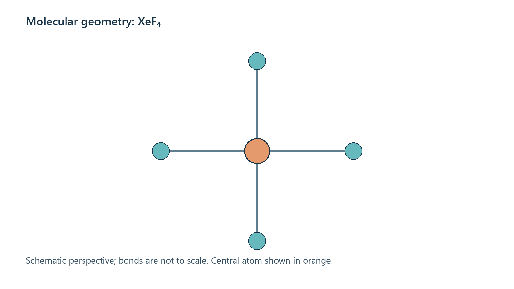
- A linear; polar
- B square planar; nonpolar
- C square planar; polar
- D linear; nonpolar
JEE-CHEM-0161 · Class XI · Medium
Shape and polarity of BeCl₂
For an isolated BeCl₂ molecule with its usual equilibrium geometry, which combination of molecular shape and permanent dipole character is correct?
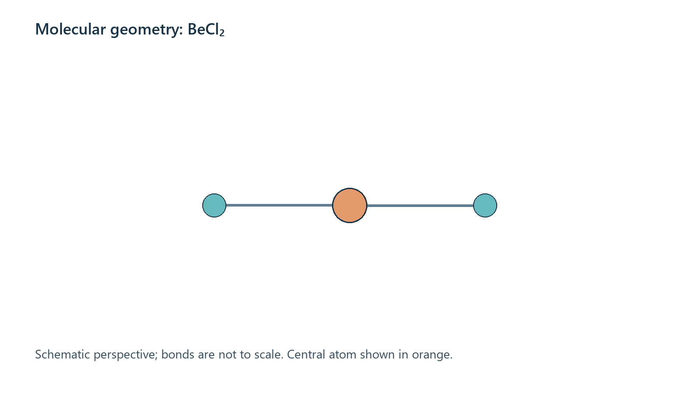
- A bent; polar
- B linear; nonpolar
- C linear; polar
- D bent; nonpolar
JEE-CHEM-0162 · Class XI · Difficult
Coupled Born–Haber cycles
For hypothetical alkali-metal salts MCl(s) and MF(s), measured formation enthalpies are -414 and -538.48 kJ mol⁻¹ respectively. M atomisation is 108 kJ mol⁻¹. Cl₂ and F₂ bond dissociation enthalpies are 242 and 158 kJ mol⁻¹; electron-gain enthalpies of Cl(g) and F(g) are −349 and −328 kJ mol⁻¹. Lattice formation enthalpy of MF is 1.13 times that of MCl. Find the first ionisation enthalpy of M. Choose the closest listed value.
- A 502 kJ mol⁻¹
- B 167.33333 kJ mol⁻¹
- C 4644.1538 kJ mol⁻¹
- D 251 kJ mol⁻¹
JEE-CHEM-0163 · Class XI · Medium
Sigma and pi counting
For HC≡CH, what are the numbers of σ and π bonds respectively?
- A 5 and 0
- B 1 and 4
- C 3 and 2
- D 2 and 3
JEE-CHEM-0164 · Class XI · Medium
Shape and polarity of CH₄
For an isolated CH₄ molecule with its usual equilibrium geometry, which combination of molecular shape and permanent dipole character is correct?
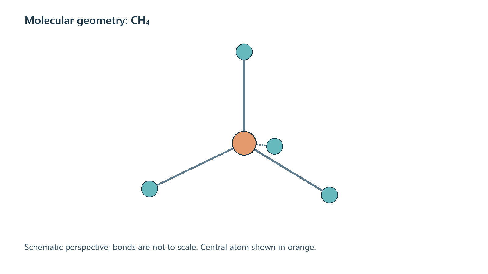
- A linear; nonpolar
- B tetrahedral; nonpolar
- C tetrahedral; polar
- D linear; polar
JEE-CHEM-0165 · Class XI · Medium
MO excitation followed by ionisation
A specified MO occupancy has 8 bonding and 2 antibonding electrons. One bonding electron is promoted to an available antibonding state; one antibonding electron is then removed. What is the final formal bond order? This is occupancy accounting, not a claim of a molecular ground state. Choose the closest listed value.
- A 3.5
- B 5
- C 2.5
- D 2
JEE-CHEM-0166 · Class XI · Medium
Shape and polarity of H₂O
For an isolated H₂O molecule with its usual equilibrium geometry, which combination of molecular shape and permanent dipole character is correct?
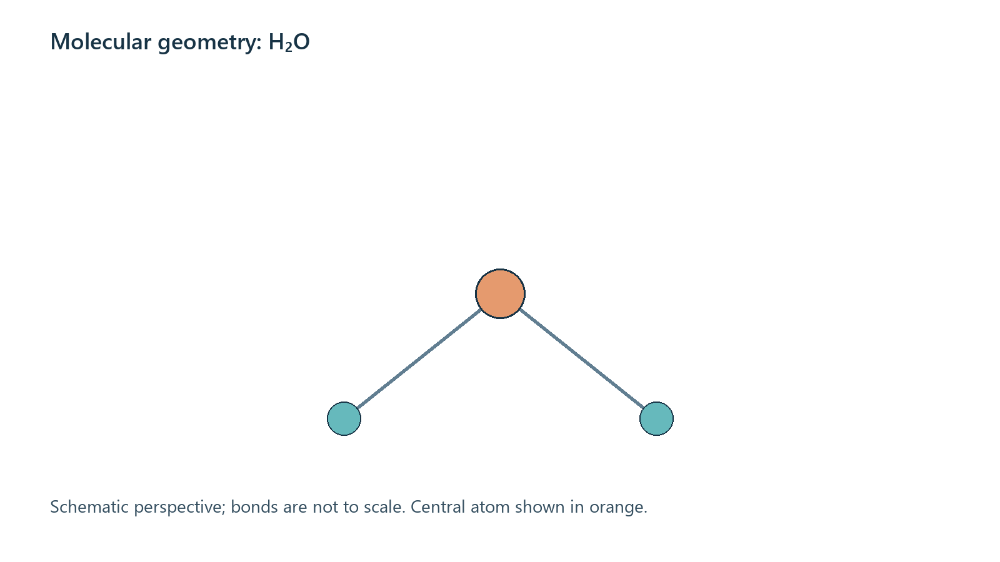
- A bent; polar
- B linear; nonpolar
- C bent; nonpolar
- D linear; polar
JEE-CHEM-0167 · Class XI · Easy
magnetic character
According to molecular-orbital theory, O₂⁻ is:
- A ferromagnetic
- B antiferromagnetic
- C diamagnetic
- D paramagnetic
JEE-CHEM-0168 · Class XI · Easy
sp³d hybridization
The statement ‘five hybrid orbitals directed to a trigonal-bipyramidal arrangement’ refers to
- A sigma bond
- B bond order
- C sp³d hybridization
- D pi bond
JEE-CHEM-0169 · Class XI · Easy
resonance
The statement ‘description by two or more contributing Lewis structures’ refers to
- A sp³ hybridization
- B sp hybridization
- C sp² hybridization
- D resonance
JEE-CHEM-0170 · Class XI · Medium
Shape and polarity of PCl₅
For an isolated PCl₅ molecule with its usual equilibrium geometry, which combination of molecular shape and permanent dipole character is correct?
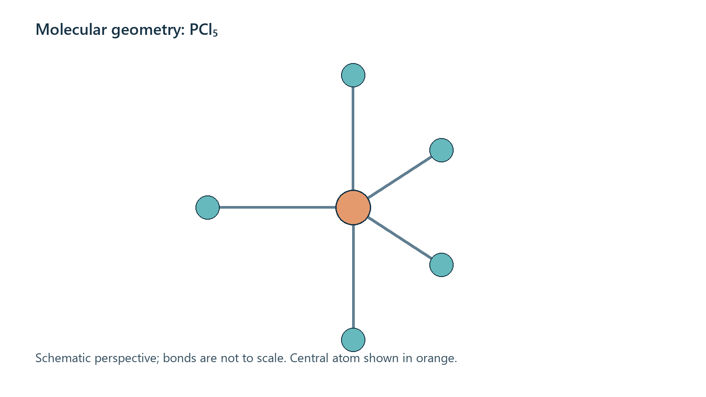
- A linear; polar
- B trigonal bipyramidal; polar
- C linear; nonpolar
- D trigonal bipyramidal; nonpolar
JEE-CHEM-0171 · Class XI · Easy
sp³ hybridization
Which description best identifies sp³ hybridization?
- A mixing one s and three p orbitals to make four equivalent hybrids
- B five hybrid orbitals directed to a trigonal-bipyramidal arrangement
- C a bond formed by head-on orbital overlap along the internuclear axis
- D six hybrid orbitals directed toward an octahedral arrangement
JEE-CHEM-0172 · Class XI · Difficult
Coupled Born–Haber cycles
For hypothetical alkali-metal salts MCl(s) and MF(s), measured formation enthalpies are -419 and -585.98 kJ mol⁻¹ respectively. M atomisation is 108 kJ mol⁻¹. Cl₂ and F₂ bond dissociation enthalpies are 242 and 158 kJ mol⁻¹; electron-gain enthalpies of Cl(g) and F(g) are −349 and −328 kJ mol⁻¹. Lattice formation enthalpy of MF is 1.18 times that of MCl. Find the first ionisation enthalpy of M. Choose the closest listed value.
- A 7022.8889 kJ mol⁻¹
- B 1885.3889 kJ mol⁻¹
- C 512 kJ mol⁻¹
- D 1024 kJ mol⁻¹
JEE-CHEM-0173 · Class XI · Medium
Shape and polarity of ClF₃
For an isolated ClF₃ molecule with its usual equilibrium geometry, which combination of molecular shape and permanent dipole character is correct?
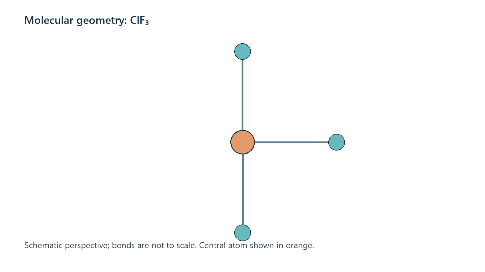
- A T-shaped; polar
- B linear; polar
- C T-shaped; nonpolar
- D linear; nonpolar
JEE-CHEM-0174 · Class XI · Easy
sp hybridization
Which description best identifies sp hybridization?
- A five hybrid orbitals directed to a trigonal-bipyramidal arrangement
- B mixing one s and three p orbitals to make four equivalent hybrids
- C mixing one s and one p orbital to make two equivalent hybrids
- D mixing one s and two p orbitals to make three equivalent hybrids
JEE-CHEM-0175 · Class XI · Easy
dipole moment
Which description of NH₃ is correct?
- A ionic because nitrogen is electronegative
- B polar because the bond moments do not cancel in its pyramidal shape
- C non-polar because the lone pair has no effect
- D non-polar because it has three identical bonds
JEE-CHEM-0176 · Class XI · Medium
Hybridisation across a carbon skeleton
An unbranched acyclic hydrocarbon has 5 carbon atoms, one terminal C≡C bond and no other multiple bond. How many carbon atoms are sp³-hybridised in the usual valence-bond description? Choose the closest listed value.
- A 9
- B 6
- C 3
- D 5
JEE-CHEM-0177 · Class XI · Medium
Unsaturation and bond counting
An unbranched acyclic hydrocarbon contains 3 carbon atoms, exactly one C≡C bond and no other multiple bond. How many σ bonds are present in one molecule? Choose the closest listed value.
- A 8
- B 4
- C 18
- D 6
JEE-CHEM-0178 · Class XI · Easy
pi bond
The statement ‘a bond formed by sideways overlap above and below the internuclear axis’ refers to
- A hydrogen bonding
- B covalent bond
- C ionic bond
- D pi bond
JEE-CHEM-0179 · Class XI · Medium
MO excitation followed by ionisation
A specified MO occupancy has 10 bonding and 4 antibonding electrons. One bonding electron is promoted to an available antibonding state; one antibonding electron is then removed. What is the final formal bond order? This is occupancy accounting, not a claim of a molecular ground state. Choose the closest listed value.
- A 1.25
- B 2.5
- C 2
- D 0.83333333
JEE-CHEM-0180 · Class XI · Medium
Shape and polarity of BF₃
For an isolated BF₃ molecule with its usual equilibrium geometry, which combination of molecular shape and permanent dipole character is correct?
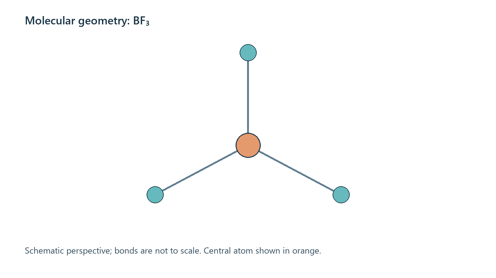
- A linear; nonpolar
- B linear; polar
- C trigonal planar; nonpolar
- D trigonal planar; polar
JEE-CHEM-0181 · Class XI · Medium
Hybridisation across a carbon skeleton
An unbranched acyclic hydrocarbon has 6 carbon atoms, one terminal C≡C bond and no other multiple bond. How many carbon atoms are sp³-hybridised in the usual valence-bond description? Choose the closest listed value.
- A 4
- B 5
- C 6
- D 2
JEE-CHEM-0182 · Class XI · Difficult
Coupled Born–Haber cycles
For hypothetical alkali-metal salts MCl(s) and MF(s), measured formation enthalpies are -418 and -576.36 kJ mol⁻¹ respectively. M atomisation is 108 kJ mol⁻¹. Cl₂ and F₂ bond dissociation enthalpies are 242 and 158 kJ mol⁻¹; electron-gain enthalpies of Cl(g) and F(g) are −349 and −328 kJ mol⁻¹. Lattice formation enthalpy of MF is 1.17 times that of MCl. Find the first ionisation enthalpy of M. Choose the closest listed value.
- A 170 kJ mol⁻¹
- B 510 kJ mol⁻¹
- C 255 kJ mol⁻¹
- D 1948.4118 kJ mol⁻¹
JEE-CHEM-0183 · Class XI · Medium
Unsaturation and bond counting
An unbranched acyclic hydrocarbon contains 4 carbon atoms, exactly one C≡C bond and no other multiple bond. How many σ bonds are present in one molecule? Choose the closest listed value.
- A 5
- B 3
- C 4.5
- D 9
JEE-CHEM-0184 · Class XI · Medium
Resonance and bond equivalence
For the carbonate ion CO₃²⁻, which pair is correct?
- A Three independent ions interconvert without electron delocalisation
- B Three equivalent C–O bonds; the resonance hybrid is not a rapid equilibrium of isolated Lewis forms
- C Resonance moves carbon nuclei between three positions
- D One permanent C=O and two permanently longer C–O bonds
JEE-CHEM-0185 · Class XI · Easy
coordinate bond
Which description best identifies coordinate bond?
- A a covalent bond whose shared pair is supplied by one atom
- B valence electrons minus nonbonding electrons minus half the bonding electrons
- C the tendency of many main-group atoms to attain eight valence electrons
- D description by two or more contributing Lewis structures
JEE-CHEM-0186 · Class XI · Difficult
Coupled Born–Haber cycles
For hypothetical alkali-metal salts MCl(s) and MF(s), measured formation enthalpies are -415 and -547.86 kJ mol⁻¹ respectively. M atomisation is 108 kJ mol⁻¹. Cl₂ and F₂ bond dissociation enthalpies are 242 and 158 kJ mol⁻¹; electron-gain enthalpies of Cl(g) and F(g) are −349 and −328 kJ mol⁻¹. Lattice formation enthalpy of MF is 1.14 times that of MCl. Find the first ionisation enthalpy of M. Choose the closest listed value.
- A 4417.2857 kJ mol⁻¹
- B 504 kJ mol⁻¹
- C 168 kJ mol⁻¹
- D 252 kJ mol⁻¹
JEE-CHEM-0187 · Class XI · Difficult
Coupled Born–Haber cycles
For hypothetical alkali-metal salts MCl(s) and MF(s), measured formation enthalpies are -413 and -529.16 kJ mol⁻¹ respectively. M atomisation is 108 kJ mol⁻¹. Cl₂ and F₂ bond dissociation enthalpies are 242 and 158 kJ mol⁻¹; electron-gain enthalpies of Cl(g) and F(g) are −349 and −328 kJ mol⁻¹. Lattice formation enthalpy of MF is 1.12 times that of MCl. Find the first ionisation enthalpy of M. Choose the closest listed value.
- A 250 kJ mol⁻¹
- B 2427.3333 kJ mol⁻¹
- C 166.66667 kJ mol⁻¹
- D 500 kJ mol⁻¹
JEE-CHEM-0188 · Class XI · Medium
Shape and polarity of NH₃
For an isolated NH₃ molecule with its usual equilibrium geometry, which combination of molecular shape and permanent dipole character is correct?
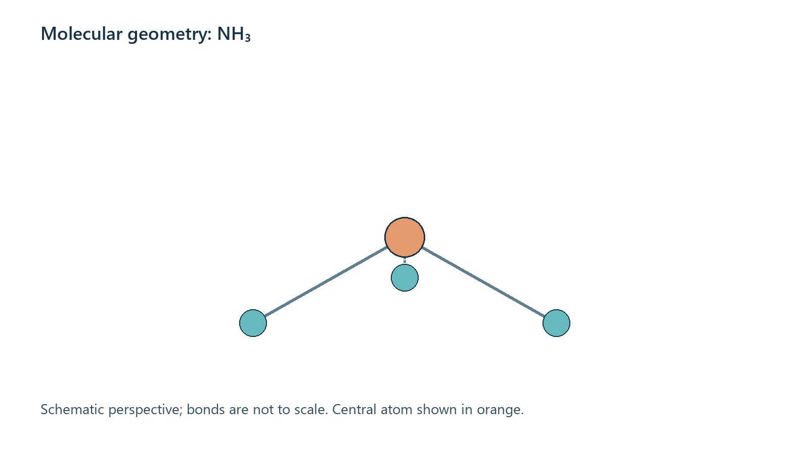
- A trigonal pyramidal; polar
- B trigonal pyramidal; nonpolar
- C linear; nonpolar
- D linear; polar
JEE-CHEM-0189 · Class XI · Easy
formal charge
Which description best identifies formal charge?
- A mixing one s and one p orbital to make two equivalent hybrids
- B electron domains arrange to minimize repulsion around a central atom
- C description by two or more contributing Lewis structures
- D valence electrons minus nonbonding electrons minus half the bonding electrons
JEE-CHEM-0190 · Class XI · Easy
covalent bond
The statement ‘a bond formed by sharing electron pairs’ refers to
- A covalent bond
- B resonance
- C formal charge
- D octet rule
JEE-CHEM-0191 · Class XI · Easy
ionic bond
Which description best identifies ionic bond?
- A the tendency of many main-group atoms to attain eight valence electrons
- B a covalent bond whose shared pair is supplied by one atom
- C a bond formed by sharing electron pairs
- D electrostatic attraction between oppositely charged ions
JEE-CHEM-0192 · Class XI · Difficult
Coupled Born–Haber cycles
For hypothetical alkali-metal salts MCl(s) and MF(s), measured formation enthalpies are -420 and -595.66 kJ mol⁻¹ respectively. M atomisation is 108 kJ mol⁻¹. Cl₂ and F₂ bond dissociation enthalpies are 242 and 158 kJ mol⁻¹; electron-gain enthalpies of Cl(g) and F(g) are −349 and −328 kJ mol⁻¹. Lattice formation enthalpy of MF is 1.19 times that of MCl. Find the first ionisation enthalpy of M. Choose the closest listed value.
- A 1028 kJ mol⁻¹
- B 2267.6842 kJ mol⁻¹
- C 6784.1053 kJ mol⁻¹
- D 514 kJ mol⁻¹
JEE-CHEM-0193 · Class XI · Difficult
Coupled Born–Haber cycles
For hypothetical alkali-metal salts MCl(s) and MF(s), measured formation enthalpies are -412 and -519.9 kJ mol⁻¹ respectively. M atomisation is 108 kJ mol⁻¹. Cl₂ and F₂ bond dissociation enthalpies are 242 and 158 kJ mol⁻¹; electron-gain enthalpies of Cl(g) and F(g) are −349 and −328 kJ mol⁻¹. Lattice formation enthalpy of MF is 1.11 times that of MCl. Find the first ionisation enthalpy of M. Choose the closest listed value.
- A 498 kJ mol⁻¹
- B 9950.7273 kJ mol⁻¹
- C 249 kJ mol⁻¹
- D 2576.7273 kJ mol⁻¹
JEE-CHEM-0194 · Class XI · Medium
MO excitation followed by ionisation
A specified MO occupancy has 12 bonding and 2 antibonding electrons. One bonding electron is promoted to an available antibonding state; one antibonding electron is then removed. What is the final formal bond order? This is occupancy accounting, not a claim of a molecular ground state. Choose the closest listed value.
- A 2.25
- B 4.5
- C 1.5
- D 5
JEE-CHEM-0195 · Class XI · Easy
sigma bond
The statement ‘a bond formed by head-on orbital overlap along the internuclear axis’ refers to
- A ionic bond
- B sigma bond
- C hydrogen bonding
- D bond order
JEE-CHEM-0196 · Class XI · Medium
Shape and polarity of SF₆
For an isolated SF₆ molecule with its usual equilibrium geometry, which combination of molecular shape and permanent dipole character is correct?
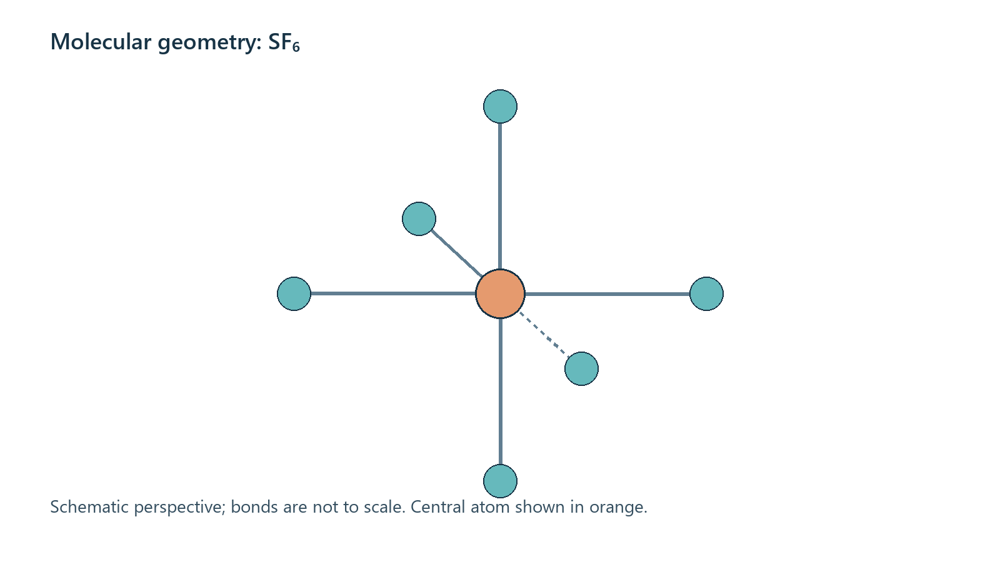
- A octahedral; nonpolar
- B linear; polar
- C octahedral; polar
- D linear; nonpolar
JEE-CHEM-0197 · Class XI · Medium
Hybridisation across a carbon skeleton
An unbranched acyclic hydrocarbon has 7 carbon atoms, one terminal C≡C bond and no other multiple bond. How many carbon atoms are sp³-hybridised in the usual valence-bond description? Choose the closest listed value.
- A 10
- B 2
- C 7
- D 5
JEE-CHEM-0198 · Class XI · Medium
Intra versus intermolecular hydrogen bonding
Ortho-nitrophenol forms substantial intramolecular hydrogen bonding while para-nitrophenol forms intermolecular associations. Which comparison follows in the usual textbook context?
- A Both must have identical volatility
- B Ortho-nitrophenol must form stronger intermolecular networks
- C Para-nitrophenol has no O–H group
- D Ortho-nitrophenol is less intermolecularly associated and is more steam-volatile
JEE-CHEM-0199 · Class XI · Medium
Unsaturation and bond counting
An unbranched acyclic hydrocarbon contains 5 carbon atoms, exactly one C≡C bond and no other multiple bond. How many σ bonds are present in one molecule? Choose the closest listed value.
- A 8
- B 12
- C 6
- D 4
JEE-CHEM-0200 · Class XI · Easy
octet rule
Which description best identifies octet rule?
- A description by two or more contributing Lewis structures
- B electron domains arrange to minimize repulsion around a central atom
- C the tendency of many main-group atoms to attain eight valence electrons
- D valence electrons minus nonbonding electrons minus half the bonding electrons
JEE-CHEM-0201 · Class XI · Medium
LCAO constructive interference
In the elementary LCAO treatment of two overlapping atomic orbitals, which pair describes the usual bonding combination?
- A Opposite-sign destructive overlap necessarily gives the lower-energy bond
- B Enhanced electron density between nuclei; energy lower than the corresponding antibonding combination
- C A new internuclear node; lower energy than bonding
- D Zero overlap density everywhere; maximum stabilisation
JEE-CHEM-0202 · Class XI · Difficult
Coupled Born–Haber cycles
For hypothetical alkali-metal salts MCl(s) and MF(s), measured formation enthalpies are -417 and -566.8 kJ mol⁻¹ respectively. M atomisation is 108 kJ mol⁻¹. Cl₂ and F₂ bond dissociation enthalpies are 242 and 158 kJ mol⁻¹; electron-gain enthalpies of Cl(g) and F(g) are −349 and −328 kJ mol⁻¹. Lattice formation enthalpy of MF is 1.16 times that of MCl. Find the first ionisation enthalpy of M. Choose the closest listed value.
- A 508 kJ mol⁻¹
- B 169.33333 kJ mol⁻¹
- C 4050.5 kJ mol⁻¹
- D 254 kJ mol⁻¹
JEE-CHEM-0203 · Class XI · Easy
bond order
The bond order of H₂⁺ is:
- A 0.75
- B 0.5
- C 0.25
- D 1
JEE-CHEM-0204 · Class XI · Difficult
Thermodynamic inverse temperature
Assume ΔH° and ΔS° are temperature independent in the interval of interest. A reaction has ΔG°=3.4 kJ mol⁻¹ at 300 K and -2.8 kJ mol⁻¹ at 400 K. At what temperature is its standard equilibrium constant equal to one? Choose the closest listed value.
- A 354.83871 K
- B 709.67742 K
- C 370.83333 K
- D 378.46154 K
JEE-CHEM-0205 · Class XI · Medium
Heat capacity and heating path
0.2 mol ideal gas has constant Cᵥ,ₘ=20.8 J mol⁻¹ K⁻¹. It is heated by 15 K at constant pressure with only pressure–volume work. Find heat absorbed. R=8.314 J mol⁻¹ K⁻¹. Choose the closest listed value.
- A 174.684 J
- B 87.342 J
- C 436.71 J
- D 37.458 J
JEE-CHEM-0206 · Class XI · Medium
Standard Gibbs energy and equilibrium
At 350 K, a reaction has ΔH°=35 kJ mol⁻¹ and ΔS°=90 J mol⁻¹ K⁻¹. Find ln K at this temperature. R=8.314 J mol⁻¹ K⁻¹. Choose the closest listed value.
- A -2.4055809
- B -0.52227116
- C -3.6083714
- D -1.2027905
JEE-CHEM-0207 · Class XI · Difficult
Hess cycle and combustible mixture
A 0.744 g mixture containing only CH₄ and CO burns completely in excess oxygen at constant pressure, releasing 23.578 kJ. At the experimental temperature use ΔfH° values in kJ mol⁻¹: CH₄(g)=−75, CO(g)=−110, CO₂(g)=−394, H₂O(l)=−286. Water formed ends as liquid. With molar masses CH₄=16 and CO=28 g mol⁻¹, find the mole percentage of CO. Choose the closest listed value.
- A 12.962963 %
- B 25.925926 %
- C 38.888889 %
- D 19.444444 %
JEE-CHEM-0208 · Class XI · Difficult
Temperature, equilibrium and actual Gibbs energy
A reaction has ln K=-3 at 300 K and ΔH°=40 kJ mol⁻¹. Assume ΔH° and ΔS° are constant from 300 K to 350 K. At 350 K the current reaction quotient satisfies ln Q=-2. With R=8.314 J mol⁻¹ K⁻¹, find the actual reaction Gibbs energy change at 350 K. Choose the closest listed value.
- A 13.702633 kJ mol⁻¹
- B 0.1231 kJ mol⁻¹
- C 4.9729333 kJ mol⁻¹
- D -3.7567667 kJ mol⁻¹
JEE-CHEM-0209 · Class XI · Easy
endothermic process
Which description best identifies endothermic process?
- A reaction enthalpy is bonds broken minus bonds formed
- B a process absorbing heat from surroundings
- C enthalpy change for forming one mole of compound from elements in standard states
- D overall enthalpy change is independent of reaction path
JEE-CHEM-0210 · Class XI · Difficult
Unknown molar mass from two heating paths
Two samples of the same ideal gas have constant molar heat capacities. A 2.00 g sample absorbs 28.57143 J for a 20.0 K rise at constant volume. A separate 3.00 g sample absorbs 91.00929 J for a 30.0 K rise at constant pressure, doing only pressure–volume work. With R=8.314 J mol⁻¹ K⁻¹, determine the gas molar mass. Choose the closest listed value.
- A 28 g mol⁻¹
- B 6.355575 g mol⁻¹
- C 56 g mol⁻¹
- D 9.3333333 g mol⁻¹
JEE-CHEM-0211 · Class XI · Difficult
Hess cycle and combustible mixture
A 0.96 g mixture containing only CH₄ and CO burns completely in excess oxygen at constant pressure, releasing 27.955 kJ. At the experimental temperature use ΔfH° values in kJ mol⁻¹: CH₄(g)=−75, CO(g)=−110, CO₂(g)=−394, H₂O(l)=−286. Water formed ends as liquid. With molar masses CH₄=16 and CO=28 g mol⁻¹, find the mole percentage of CO. Choose the closest listed value.
- A 28.571429 %
- B 44.444444 %
- C 22.222222 %
- D 29.62963 %
JEE-CHEM-0212 · Class XI · Easy
standard Gibbs relation
Which description best identifies standard Gibbs relation?
- A a real process occurring with a finite driving force
- B ΔG° equals −RT ln K
- C heat required per unit temperature rise
- D an ideal process driven through infinitesimal departures from equilibrium
JEE-CHEM-0213 · Class XI · Difficult
Thermodynamic inverse temperature
Assume ΔH° and ΔS° are temperature independent in the interval of interest. A reaction has ΔG°=10.4 kJ mol⁻¹ at 300 K and 3.2 kJ mol⁻¹ at 400 K. At what temperature is its standard equilibrium constant equal to one? Choose the closest listed value.
- A 444.44444 K
- B 1333.3333 K
- C 222.22222 K
- D 888.88889 K
JEE-CHEM-0214 · Class XI · Difficult
Temperature, equilibrium and actual Gibbs energy
A reaction has ln K=-3.8 at 300 K and ΔH°=56 kJ mol⁻¹. Assume ΔH° and ΔS° are constant from 300 K to 390 K. At 390 K the current reaction quotient satisfies ln Q=-1.6. With R=8.314 J mol⁻¹ K⁻¹, find the actual reaction Gibbs energy change at 390 K. Choose the closest listed value.
- A -19.333176 kJ mol⁻¹
- B -9.666588 kJ mol⁻¹
- C -4.833294 kJ mol⁻¹
- D -14.854524 kJ mol⁻¹
JEE-CHEM-0215 · Class XI · Medium
Calorimetric amount and reaction scaling
In an idealised calorimetry exercise at a specified experimental temperature, 1 g CH₄ burns completely at constant pressure and releases 55 kJ. Using these supplied data, what is ΔH for the written reaction (1/2)CH₄(g)+O₂(g) → (1/2)CO₂(g)+H₂O(l) at the same temperature? M(CH₄)=16 g mol⁻¹. Choose the closest listed value.
- A -1760 kJ
- B -1320 kJ
- C -880 kJ
- D -440 kJ
JEE-CHEM-0216 · Class XI · Easy
reversible process
Which description best identifies reversible process?
- A an ideal process driven through infinitesimal departures from equilibrium
- B a real process occurring with a finite driving force
- C reaction enthalpy changes with temperature according to heat-capacity difference
- D heat required per unit temperature rise
JEE-CHEM-0217 · Class XI · Difficult
Thermodynamic inverse temperature
Assume ΔH° and ΔS° are temperature independent in the interval of interest. A reaction has ΔG°=4.8 kJ mol⁻¹ at 300 K and -1.6 kJ mol⁻¹ at 400 K. At what temperature is its standard equilibrium constant equal to one? Choose the closest listed value.
- A 125 K
- B 390 K
- C 1125 K
- D 375 K
JEE-CHEM-0218 · Class XI · Easy
entropy
The statement ‘a state function measuring energy dispersal or number of accessible arrangements’ refers to
- A entropy
- B equilibrium and Gibbs energy
- C standard Gibbs relation
- D Gibbs energy
JEE-CHEM-0219 · Class XI · Difficult
Temperature, equilibrium and actual Gibbs energy
A reaction has ln K=-3.4 at 300 K and ΔH°=48 kJ mol⁻¹. Assume ΔH° and ΔS° are constant from 300 K to 370 K. At 370 K the current reaction quotient satisfies ln Q=-1.8. With R=8.314 J mol⁻¹ K⁻¹, find the actual reaction Gibbs energy change at 370 K. Choose the closest listed value.
- A -13.250787 kJ mol⁻¹
- B -11.815236 kJ mol⁻¹
- C -18.834336 kJ mol⁻¹
- D -6.278112 kJ mol⁻¹
JEE-CHEM-0220 · Class XI · Medium
Atomisation versus sublimation
For sodium, which pair correctly distinguishes standard atomisation and sublimation processes?
- A Na(g)→Na⁺(g)+e⁻ is sublimation
- B Na(s)→Na(g) is both atomisation to gaseous atoms and sublimation
- C Na(g)→Na(s) has positive sublimation enthalpy by definition
- D Na(s)→Na⁺(aq) is atomisation
JEE-CHEM-0221 · Class XI · Difficult
Temperature, equilibrium and actual Gibbs energy
A reaction has ln K=-3.6 at 300 K and ΔH°=52 kJ mol⁻¹. Assume ΔH° and ΔS° are constant from 300 K to 380 K. At 380 K the current reaction quotient satisfies ln Q=-1.7. With R=8.314 J mol⁻¹ K⁻¹, find the actual reaction Gibbs energy change at 380 K. Choose the closest listed value.
- A -3.9319793 kJ mol⁻¹
- B -7.8639587 kJ mol⁻¹
- C -35.597292 kJ mol⁻¹
- D -0.93062533 kJ mol⁻¹
JEE-CHEM-0222 · Class XI · Easy
adiabatic process
The statement ‘a process with no heat exchange’ refers to
- A adiabatic process
- B open system
- C isolated system
- D closed system
JEE-CHEM-0223 · Class XI · Easy
state function
Which description best explains State function?
- A the value for an element in its standard state is zero
- B its enthalpy change is positive at constant pressure
- C a property depending only on the thermodynamic state
- D thermochemical equations may be algebraically added
JEE-CHEM-0224 · Class XI · Difficult
Unknown molar mass from two heating paths
Two samples of the same ideal gas have constant molar heat capacities. A 2.00 g sample absorbs 25.71429 J for a 20.0 K rise at constant volume. A separate 3.00 g sample absorbs 75.67286 J for a 30.0 K rise at constant pressure, doing only pressure–volume work. With R=8.314 J mol⁻¹ K⁻¹, determine the gas molar mass. Choose the closest listed value.
- A 126 g mol⁻¹
- B 21 g mol⁻¹
- C 84 g mol⁻¹
- D 42 g mol⁻¹
JEE-CHEM-0225 · Class XI · Medium
Extensive and intensive quantities
A homogeneous equilibrium sample is divided into two equal parts without changing temperature or pressure. Which pair describes the changes?
- A Internal energy halves; molar internal energy stays the same
- B Both internal energy and molar internal energy halve
- C Both double
- D Internal energy stays the same; molar internal energy halves
JEE-CHEM-0226 · Class XI · Medium
Expansion work and internal energy
A closed system absorbs 250 J while expanding by 0.4 L against constant external pressure 1.2 bar. Only pressure–volume work occurs. Find ΔU. Use 1 L bar=100 J and the chemistry sign convention. Choose the closest listed value.
- A 48 J
- B 249.52 J
- C 67.333333 J
- D 202 J
JEE-CHEM-0227 · Class XI · Difficult
Hess cycle and combustible mixture
A 0.6 g mixture containing only CH₄ and CO burns completely in excess oxygen at constant pressure, releasing 20.66 kJ. At the experimental temperature use ΔfH° values in kJ mol⁻¹: CH₄(g)=−75, CO(g)=−110, CO₂(g)=−394, H₂O(l)=−286. Water formed ends as liquid. With molar masses CH₄=16 and CO=28 g mol⁻¹, find the mole percentage of CO. Choose the closest listed value.
- A 16.666667 %
- B 33.333333 %
- C 20 %
- D 22.222222 %
JEE-CHEM-0228 · Class XI · Easy
internal energy
Which description best identifies internal energy?
- A work associated with a volume change against external pressure
- B the state function H equals U plus PV
- C the total microscopic energy of a system
- D a process releasing heat to surroundings
JEE-CHEM-0229 · Class XI · Difficult
Unknown molar mass from two heating paths
Two samples of the same ideal gas have constant molar heat capacities. A 2.00 g sample absorbs 26 J for a 20.0 K rise at constant volume. A separate 3.00 g sample absorbs 77.2065 J for a 30.0 K rise at constant pressure, doing only pressure–volume work. With R=8.314 J mol⁻¹ K⁻¹, determine the gas molar mass. Choose the closest listed value.
- A 15.60289 g mol⁻¹
- B 40 g mol⁻¹
- C 120 g mol⁻¹
- D 80 g mol⁻¹
JEE-CHEM-0230 · Class XI · Difficult
Hess cycle and combustible mixture
A 1.248 g mixture containing only CH₄ and CO burns completely in excess oxygen at constant pressure, releasing 33.791 kJ. At the experimental temperature use ΔfH° values in kJ mol⁻¹: CH₄(g)=−75, CO(g)=−110, CO₂(g)=−394, H₂O(l)=−286. Water formed ends as liquid. With molar masses CH₄=16 and CO=28 g mol⁻¹, find the mole percentage of CO. Choose the closest listed value.
- A 49.122807 %
- B 24.561404 %
- C 65.882353 %
- D 32.748538 %
JEE-CHEM-0231 · Class XI · Medium
Heat capacity and heating path
0.22 mol ideal gas has constant Cᵥ,ₘ=20.8 J mol⁻¹ K⁻¹. It is heated by 16 K at constant pressure with only pressure–volume work. Find heat absorbed. R=8.314 J mol⁻¹ K⁻¹. Choose the closest listed value.
- A 51.24064 J
- B 34.160427 J
- C 102.48128 J
- D 43.95072 J
JEE-CHEM-0232 · Class XI · Medium
Standard Gibbs energy and equilibrium
At 353 K, a reaction has ΔH°=37 kJ mol⁻¹ and ΔS°=91 J mol⁻¹ K⁻¹. Find ln K at this temperature. R=8.314 J mol⁻¹ K⁻¹. Choose the closest listed value.
- A -0.83087948
- B -1.661759
- C 10.945393
- D -0.72156273
JEE-CHEM-0233 · Class XI · Medium
Calorimetric amount and reaction scaling
In an idealised calorimetry exercise at a specified experimental temperature, 1.1 g CH₄ burns completely at constant pressure and releases 60.70625 kJ. Using these supplied data, what is ΔH for the written reaction (1/2)CH₄(g)+O₂(g) → (1/2)CO₂(g)+H₂O(l) at the same temperature? M(CH₄)=16 g mol⁻¹. Choose the closest listed value.
- A -60.70625 kJ
- B -1766 kJ
- C -441.5 kJ
- D 441.5 kJ
JEE-CHEM-0234 · Class XI · Difficult
Thermodynamic inverse temperature
Assume ΔH° and ΔS° are temperature independent in the interval of interest. A reaction has ΔG°=9 kJ mol⁻¹ at 300 K and 2 kJ mol⁻¹ at 400 K. At what temperature is its standard equilibrium constant equal to one? Choose the closest listed value.
- A 428.57143 K
- B 412.5 K
- C 1285.7143 K
- D 142.85714 K
JEE-CHEM-0235 · Class XI · Difficult
Temperature, equilibrium and actual Gibbs energy
A reaction has ln K=-3.1 at 300 K and ΔH°=42 kJ mol⁻¹. Assume ΔH° and ΔS° are constant from 300 K to 355 K. At 355 K the current reaction quotient satisfies ln Q=-1.95. With R=8.314 J mol⁻¹ K⁻¹, find the actual reaction Gibbs energy change at 355 K. Choose the closest listed value.
- A -15.816543 kJ mol⁻¹
- B -8.880588 kJ mol⁻¹
- C -10.405514 kJ mol⁻¹
- D -4.3058095 kJ mol⁻¹
JEE-CHEM-0236 · Class XI · Medium
Expansion work and internal energy
A closed system absorbs 260 J while expanding by 0.42 L against constant external pressure 1.3 bar. Only pressure–volume work occurs. Find ΔU. Use 1 L bar=100 J and the chemistry sign convention. Choose the closest listed value.
- A 314.6 J
- B 259.454 J
- C 205.4 J
- D 410.8 J
JEE-CHEM-0237 · Class XI · Difficult
Unknown molar mass from two heating paths
Two samples of the same ideal gas have constant molar heat capacities. A 2.00 g sample absorbs 27.05882 J for a 20.0 K rise at constant volume. A separate 3.00 g sample absorbs 82.89 J for a 30.0 K rise at constant pressure, doing only pressure–volume work. With R=8.314 J mol⁻¹ K⁻¹, determine the gas molar mass. Choose the closest listed value.
- A 68 g mol⁻¹
- B 17 g mol⁻¹
- C 34 g mol⁻¹
- D 102 g mol⁻¹
JEE-CHEM-0238 · Class XI · Difficult
Thermodynamic inverse temperature
Assume ΔH° and ΔS° are temperature independent in the interval of interest. A reaction has ΔG°=6.2 kJ mol⁻¹ at 300 K and -0.4 kJ mol⁻¹ at 400 K. At what temperature is its standard equilibrium constant equal to one? Choose the closest listed value.
- A 396.875 K
- B 393.93939 K
- C 131.31313 K
- D 383.78378 K
JEE-CHEM-0239 · Class XI · Difficult
Hess cycle and combustible mixture
A 1.176 g mixture containing only CH₄ and CO burns completely in excess oxygen at constant pressure, releasing 32.332 kJ. At the experimental temperature use ΔfH° values in kJ mol⁻¹: CH₄(g)=−75, CO(g)=−110, CO₂(g)=−394, H₂O(l)=−286. Water formed ends as liquid. With molar masses CH₄=16 and CO=28 g mol⁻¹, find the mole percentage of CO. Choose the closest listed value.
- A 31.707317 %
- B 16.049383 %
- C 32.098765 %
- D 48.148148 %
JEE-CHEM-0240 · Class XI · Difficult
Unknown molar mass from two heating paths
Two samples of the same ideal gas have constant molar heat capacities. A 2.00 g sample absorbs 26.31579 J for a 20.0 K rise at constant volume. A separate 3.00 g sample absorbs 78.90158 J for a 30.0 K rise at constant pressure, doing only pressure–volume work. With R=8.314 J mol⁻¹ K⁻¹, determine the gas molar mass. Choose the closest listed value.
- A 4.2156868 g mol⁻¹
- B 38 g mol⁻¹
- C 114 g mol⁻¹
- D 76 g mol⁻¹
JEE-CHEM-0241 · Class XI · Difficult
Unknown molar mass from two heating paths
Two samples of the same ideal gas have constant molar heat capacities. A 2.00 g sample absorbs 28 J for a 20.0 K rise at constant volume. A separate 3.00 g sample absorbs 87.942 J for a 30.0 K rise at constant pressure, doing only pressure–volume work. With R=8.314 J mol⁻¹ K⁻¹, determine the gas molar mass. Choose the closest listed value.
- A 30 g mol⁻¹
- B 60 g mol⁻¹
- C 3.725912 g mol⁻¹
- D 90 g mol⁻¹
JEE-CHEM-0242 · Class XI · Difficult
Hess cycle and combustible mixture
A 1.104 g mixture containing only CH₄ and CO burns completely in excess oxygen at constant pressure, releasing 30.873 kJ. At the experimental temperature use ΔfH° values in kJ mol⁻¹: CH₄(g)=−75, CO(g)=−110, CO₂(g)=−394, H₂O(l)=−286. Water formed ends as liquid. With molar masses CH₄=16 and CO=28 g mol⁻¹, find the mole percentage of CO. Choose the closest listed value.
- A 72.727273 %
- B 15.686275 %
- C 23.529412 %
- D 47.058824 %
JEE-CHEM-0243 · Class XI · Easy
spontaneous process
Which description best identifies spontaneous process?
- A a process thermodynamically favoured under stated conditions
- B a system exchanging both matter and energy with surroundings
- C a process with no heat exchange
- D the part of the universe selected for thermodynamic study
JEE-CHEM-0244 · Class XI · Medium
Heat capacity and heating path
0.24 mol ideal gas has constant Cᵥ,ₘ=20.8 J mol⁻¹ K⁻¹. It is heated by 17 K at constant pressure with only pressure–volume work. Find heat absorbed. R=8.314 J mol⁻¹ K⁻¹. Choose the closest listed value.
- A 494.938 J
- B 118.78512 J
- C 356.35536 J
- D 237.57024 J
JEE-CHEM-0245 · Class XI · Easy
second law
The statement ‘total entropy of universe increases for a spontaneous process’ refers to
- A reversible process
- B second law
- C equilibrium and Gibbs energy
- D standard Gibbs relation
JEE-CHEM-0246 · Class XI · Medium
Standard Gibbs energy and equilibrium
At 356 K, a reaction has ΔH°=39 kJ mol⁻¹ and ΔS°=92 J mol⁻¹ K⁻¹. Find ln K at this temperature. R=8.314 J mol⁻¹ K⁻¹. Choose the closest listed value.
- A -6.3328946
- B -1.0554824
- C -2.1109649
- D -13.176637
JEE-CHEM-0247 · Class XI · Difficult
Thermodynamic inverse temperature
Assume ΔH° and ΔS° are temperature independent in the interval of interest. A reaction has ΔG°=2 kJ mol⁻¹ at 300 K and -4 kJ mol⁻¹ at 400 K. At what temperature is its standard equilibrium constant equal to one? Choose the closest listed value.
- A 320 K
- B 166.66667 K
- C 314.28571 K
- D 333.33333 K
JEE-CHEM-0248 · Class XI · Difficult
Unknown molar mass from two heating paths
Two samples of the same ideal gas have constant molar heat capacities. A 2.00 g sample absorbs 25.21739 J for a 20.0 K rise at constant volume. A separate 3.00 g sample absorbs 73.00565 J for a 30.0 K rise at constant pressure, doing only pressure–volume work. With R=8.314 J mol⁻¹ K⁻¹, determine the gas molar mass. Choose the closest listed value.
- A 16.763566 g mol⁻¹
- B 138 g mol⁻¹
- C 92 g mol⁻¹
- D 46 g mol⁻¹
JEE-CHEM-0249 · Class XI · Medium
Calorimetric amount and reaction scaling
In an idealised calorimetry exercise at a specified experimental temperature, 1.2 g CH₄ burns completely at constant pressure and releases 66.45 kJ. Using these supplied data, what is ΔH for the written reaction (1/2)CH₄(g)+O₂(g) → (1/2)CO₂(g)+H₂O(l) at the same temperature? M(CH₄)=16 g mol⁻¹. Choose the closest listed value.
- A -443 kJ
- B 443 kJ
- C -886 kJ
- D -66.45 kJ
JEE-CHEM-0250 · Class XI · Difficult
Unknown molar mass from two heating paths
Two samples of the same ideal gas have constant molar heat capacities. A 2.00 g sample absorbs 25.45455 J for a 20.0 K rise at constant volume. A separate 3.00 g sample absorbs 74.27864 J for a 30.0 K rise at constant pressure, doing only pressure–volume work. With R=8.314 J mol⁻¹ K⁻¹, determine the gas molar mass. Choose the closest listed value.
- A 88 g mol⁻¹
- B 14.666667 g mol⁻¹
- C 44 g mol⁻¹
- D 22 g mol⁻¹
JEE-CHEM-0251 · Class XI · Medium
Expansion work and internal energy
A closed system absorbs 270 J while expanding by 0.44 L against constant external pressure 1.4 bar. Only pressure–volume work occurs. Find ΔU. Use 1 L bar=100 J and the chemistry sign convention. Choose the closest listed value.
- A 69.466667 J
- B 104.2 J
- C 208.4 J
- D 61.6 J
JEE-CHEM-0252 · Class XI · Medium
Heat capacity and heating path
0.26 mol ideal gas has constant Cᵥ,ₘ=20.8 J mol⁻¹ K⁻¹. It is heated by 18 K at constant pressure with only pressure–volume work. Find heat absorbed. R=8.314 J mol⁻¹ K⁻¹. Choose the closest listed value.
- A 136.25352 J
- B 408.76056 J
- C 524.052 J
- D 272.50704 J
JEE-CHEM-0253 · Class XI · Easy
Gibbs energy
Which description best explains Gibbs energy?
- A it connects enthalpy values at two temperatures
- B G equals H minus TS
- C temperature can still change because work may be done
- D spontaneity does not imply rapid rate
JEE-CHEM-0254 · Class XI · Difficult
Thermodynamic inverse temperature
Assume ΔH° and ΔS° are temperature independent in the interval of interest. A reaction has ΔG°=7.6 kJ mol⁻¹ at 300 K and 0.8 kJ mol⁻¹ at 400 K. At what temperature is its standard equilibrium constant equal to one? Choose the closest listed value.
- A 1235.2941 K
- B 137.2549 K
- C 405.55556 K
- D 411.76471 K
JEE-CHEM-0255 · Class XI · Medium
Standard Gibbs energy and equilibrium
At 359 K, a reaction has ΔH°=41 kJ mol⁻¹ and ΔS°=93 J mol⁻¹ K⁻¹. Find ln K at this temperature. R=8.314 J mol⁻¹ K⁻¹. Choose the closest listed value.
- A -2.5506529
- B -7.6519587
- C -13.736604
- D -5.1013058
JEE-CHEM-0256 · Class XI · Difficult
Temperature, equilibrium and actual Gibbs energy
A reaction has ln K=-3.7 at 300 K and ΔH°=54 kJ mol⁻¹. Assume ΔH° and ΔS° are constant from 300 K to 385 K. At 385 K the current reaction quotient satisfies ln Q=-1.65. With R=8.314 J mol⁻¹ K⁻¹, find the actual reaction Gibbs energy change at 385 K. Choose the closest listed value.
- A -5.2171965 kJ mol⁻¹
- B -6.0974413 kJ mol⁻¹
- C -8.7381755 kJ mol⁻¹
- D 1.4618245 kJ mol⁻¹
JEE-CHEM-0257 · Class XI · Difficult
Temperature, equilibrium and actual Gibbs energy
A reaction has ln K=-3.2 at 300 K and ΔH°=44 kJ mol⁻¹. Assume ΔH° and ΔS° are constant from 300 K to 360 K. At 360 K the current reaction quotient satisfies ln Q=-1.9. With R=8.314 J mol⁻¹ K⁻¹, find the actual reaction Gibbs energy change at 360 K. Choose the closest listed value.
- A 4.66868 kJ mol⁻¹
- B -22.509048 kJ mol⁻¹
- C -2.454524 kJ mol⁻¹
- D -4.909048 kJ mol⁻¹
JEE-CHEM-0258 · Class XI · Medium
Calorimetric amount and reaction scaling
In an idealised calorimetry exercise at a specified experimental temperature, 1.3 g CH₄ burns completely at constant pressure and releases 72.23125 kJ. Using these supplied data, what is ΔH for the written reaction (1/2)CH₄(g)+O₂(g) → (1/2)CO₂(g)+H₂O(l) at the same temperature? M(CH₄)=16 g mol⁻¹. Choose the closest listed value.
- A -1778 kJ
- B -222.25 kJ
- C -444.5 kJ
- D -889 kJ
JEE-CHEM-0259 · Class XI · Medium
Expansion work and internal energy
A closed system absorbs 280 J while expanding by 0.46 L against constant external pressure 1.5 bar. Only pressure–volume work occurs. Find ΔU. Use 1 L bar=100 J and the chemistry sign convention. Choose the closest listed value.
- A 70.333333 J
- B 69 J
- C 211 J
- D 105.5 J
JEE-CHEM-0260 · Class XI · Easy
irreversible process
The statement ‘a real process occurring with a finite driving force’ refers to
- A spontaneous process
- B adiabatic process
- C Kirchhoff relation
- D irreversible process
JEE-CHEM-0261 · Class XI · Difficult
Thermodynamic inverse temperature
Assume ΔH° and ΔS° are temperature independent in the interval of interest. A reaction has ΔG°=14.6 kJ mol⁻¹ at 300 K and 6.8 kJ mol⁻¹ at 400 K. At what temperature is its standard equilibrium constant equal to one? Choose the closest listed value.
- A 48.275862 K
- B 487.17949 K
- C 1760 K
- D 974.35897 K
JEE-CHEM-0262 · Class XI · Difficult
Hess cycle and combustible mixture
A 0.888 g mixture containing only CH₄ and CO burns completely in excess oxygen at constant pressure, releasing 26.496 kJ. At the experimental temperature use ΔfH° values in kJ mol⁻¹: CH₄(g)=−75, CO(g)=−110, CO₂(g)=−394, H₂O(l)=−286. Water formed ends as liquid. With molar masses CH₄=16 and CO=28 g mol⁻¹, find the mole percentage of CO. Choose the closest listed value.
- A 21.428571 %
- B 85.714286 %
- C 42.857143 %
- D 27.272727 %
JEE-CHEM-0263 · Class XI · Difficult
Hess cycle and combustible mixture
A 0.672 g mixture containing only CH₄ and CO burns completely in excess oxygen at constant pressure, releasing 22.119 kJ. At the experimental temperature use ΔfH° values in kJ mol⁻¹: CH₄(g)=−75, CO(g)=−110, CO₂(g)=−394, H₂O(l)=−286. Water formed ends as liquid. With molar masses CH₄=16 and CO=28 g mol⁻¹, find the mole percentage of CO. Choose the closest listed value.
- A 24.242424 %
- B 22.222222 %
- C 18.181818 %
- D 36.363636 %
JEE-CHEM-0264 · Class XI · Easy
enthalpy
Which description best identifies enthalpy?
- A a process absorbing heat from surroundings
- B a process releasing heat to surroundings
- C the state function H equals U plus PV
- D overall enthalpy change is independent of reaction path
JEE-CHEM-0265 · Class XI · Easy
Hess law
Which description best explains Hess law?
- A overall enthalpy change is independent of reaction path
- B standard ΔG is related to equilibrium constant
- C large K corresponds to negative standard Gibbs energy
- D it gives maximum work for specified end states
JEE-CHEM-0266 · Class XI · Difficult
Thermodynamic inverse temperature
Assume ΔH° and ΔS° are temperature independent in the interval of interest. A reaction has ΔG°=13.2 kJ mol⁻¹ at 300 K and 5.6 kJ mol⁻¹ at 400 K. At what temperature is its standard equilibrium constant equal to one? Choose the closest listed value.
- A 473.68421 K
- B 426.92308 K
- C 1421.0526 K
- D 416.47059 K
JEE-CHEM-0267 · Class XI · Difficult
Temperature, equilibrium and actual Gibbs energy
A reaction has ln K=-3.5 at 300 K and ΔH°=50 kJ mol⁻¹. Assume ΔH° and ΔS° are constant from 300 K to 375 K. At 375 K the current reaction quotient satisfies ln Q=-1.75. With R=8.314 J mol⁻¹ K⁻¹, find the actual reaction Gibbs energy change at 375 K. Choose the closest listed value.
- A -32.043938 kJ mol⁻¹
- B -12.5 kJ mol⁻¹
- C -14.087875 kJ mol⁻¹
- D -7.0439375 kJ mol⁻¹
JEE-CHEM-0268 · Class XI · Medium
Heat capacity and heating path
0.28 mol ideal gas has constant Cᵥ,ₘ=20.8 J mol⁻¹ K⁻¹. It is heated by 19 K at constant pressure with only pressure–volume work. Find heat absorbed. R=8.314 J mol⁻¹ K⁻¹. Choose the closest listed value.
- A 464.65944 J
- B 309.77296 J
- C 154.88648 J
- D 553.166 J
JEE-CHEM-0269 · Class XI · Difficult
Thermodynamic inverse temperature
Assume ΔH° and ΔS° are temperature independent in the interval of interest. A reaction has ΔG°=11.8 kJ mol⁻¹ at 300 K and 4.4 kJ mol⁻¹ at 400 K. At what temperature is its standard equilibrium constant equal to one? Choose the closest listed value.
- A 1378.3784 K
- B 459.45946 K
- C 422.91667 K
- D 918.91892 K
JEE-CHEM-0270 · Class XI · Medium
Standard Gibbs energy and equilibrium
At 362 K, a reaction has ΔH°=43 kJ mol⁻¹ and ΔS°=94 J mol⁻¹ K⁻¹. Find ln K at this temperature. R=8.314 J mol⁻¹ K⁻¹. Choose the closest listed value.
- A -2.9810597
- B -8.9431791
- C -14.28729
- D -1.2944245
JEE-CHEM-0271 · Class XI · Difficult
Temperature, equilibrium and actual Gibbs energy
A reaction has ln K=-3.3 at 300 K and ΔH°=46 kJ mol⁻¹. Assume ΔH° and ΔS° are constant from 300 K to 365 K. At 365 K the current reaction quotient satisfies ln Q=-1.85. With R=8.314 J mol⁻¹ K⁻¹, find the actual reaction Gibbs energy change at 365 K. Choose the closest listed value.
- A -10.573589 kJ mol⁻¹
- B -5.5664822 kJ mol⁻¹
- C -15.533149 kJ mol⁻¹
- D -11.180511 kJ mol⁻¹
JEE-CHEM-0272 · Class XI · Medium
Calorimetric amount and reaction scaling
In an idealised calorimetry exercise at a specified experimental temperature, 1.4 g CH₄ burns completely at constant pressure and releases 78.05 kJ. Using these supplied data, what is ΔH for the written reaction (1/2)CH₄(g)+O₂(g) → (1/2)CO₂(g)+H₂O(l) at the same temperature? M(CH₄)=16 g mol⁻¹. Choose the closest listed value.
- A 446 kJ
- B -148.66667 kJ
- C -223 kJ
- D -446 kJ
JEE-CHEM-0273 · Class XI · Medium
Formation versus combustion
Which pair correctly identifies the enthalpy definitions?
- A Formation always starts from gaseous atoms; combustion is always decomposition
- B Combustion enthalpy of every element in its standard state is zero
- C Formation: one mole of compound from standard-state elements; combustion: complete burning in oxygen
- D Formation and combustion must always have equal values
JEE-CHEM-0274 · Class XI · Easy
path function
The statement ‘a quantity depending on the route between states’ refers to
- A path function
- B enthalpy
- C exothermic process
- D pressure-volume work
JEE-CHEM-0275 · Class XI · Medium
Expansion work and internal energy
A closed system absorbs 290 J while expanding by 0.48 L against constant external pressure 1.6 bar. Only pressure–volume work occurs. Find ΔU. Use 1 L bar=100 J and the chemistry sign convention. Choose the closest listed value.
- A 106.6 J
- B 213.2 J
- C 76.8 J
- D 71.066667 J
JEE-CHEM-0276 · Class XI · Difficult
Hess cycle and combustible mixture
A 0.816 g mixture containing only CH₄ and CO burns completely in excess oxygen at constant pressure, releasing 25.037 kJ. At the experimental temperature use ΔfH° values in kJ mol⁻¹: CH₄(g)=−75, CO(g)=−110, CO₂(g)=−394, H₂O(l)=−286. Water formed ends as liquid. With molar masses CH₄=16 and CO=28 g mol⁻¹, find the mole percentage of CO. Choose the closest listed value.
- A 41.025641 %
- B 58.181818 %
- C 61.538462 %
- D 81.600659 %
JEE-CHEM-0277 · Class XI · Difficult
Hess cycle and combustible mixture
A 1.032 g mixture containing only CH₄ and CO burns completely in excess oxygen at constant pressure, releasing 29.414 kJ. At the experimental temperature use ΔfH° values in kJ mol⁻¹: CH₄(g)=−75, CO(g)=−110, CO₂(g)=−394, H₂O(l)=−286. Water formed ends as liquid. With molar masses CH₄=16 and CO=28 g mol⁻¹, find the mole percentage of CO. Choose the closest listed value.
- A 54.166667 %
- B 62.857143 %
- C 30.555556 %
- D 45.833333 %
JEE-CHEM-0278 · Class XI · Easy
bond enthalpy estimate
The statement ‘reaction enthalpy is bonds broken minus bonds formed’ refers to
- A equilibrium and Gibbs energy
- B Gibbs energy
- C bond enthalpy estimate
- D second law
JEE-CHEM-0279 · Class XI · Medium
Heat capacity and heating path
0.3 mol ideal gas has constant Cᵥ,ₘ=20.8 J mol⁻¹ K⁻¹. It is heated by 20 K at constant pressure with only pressure–volume work. Find heat absorbed. R=8.314 J mol⁻¹ K⁻¹. Choose the closest listed value.
- A 58.228 J
- B 174.684 J
- C 49.884 J
- D 87.342 J
JEE-CHEM-0280 · Class XI · Medium
Standard Gibbs energy and equilibrium
At 365 K, a reaction has ΔH°=45 kJ mol⁻¹ and ΔS°=95 J mol⁻¹ K⁻¹. Find ln K at this temperature. R=8.314 J mol⁻¹ K⁻¹. Choose the closest listed value.
- A -1.134138
- B 11.42651
- C -3.4024141
- D 3.4024141
JEE-CHEM-0281 · Class XI · Easy
standard enthalpy of formation
Which description best identifies standard enthalpy of formation?
- A reaction enthalpy is bonds broken minus bonds formed
- B a state function measuring energy dispersal or number of accessible arrangements
- C total entropy of universe increases for a spontaneous process
- D enthalpy change for forming one mole of compound from elements in standard states
JEE-CHEM-0282 · Class XI · Difficult
Unknown molar mass from two heating paths
Two samples of the same ideal gas have constant molar heat capacities. A 2.00 g sample absorbs 27.5 J for a 20.0 K rise at constant volume. A separate 3.00 g sample absorbs 85.25813 J for a 30.0 K rise at constant pressure, doing only pressure–volume work. With R=8.314 J mol⁻¹ K⁻¹, determine the gas molar mass. Choose the closest listed value.
- A 64 g mol⁻¹
- B 32 g mol⁻¹
- C 11.577036 g mol⁻¹
- D 10.666667 g mol⁻¹
JEE-CHEM-0283 · Class XI · Easy
pressure-volume work
Which description best identifies pressure-volume work?
- A work associated with a volume change against external pressure
- B a process releasing heat to surroundings
- C the state function H equals U plus PV
- D a process absorbing heat from surroundings
JEE-CHEM-0284 · Class XI · Medium
Calorimetric amount and reaction scaling
In an idealised calorimetry exercise at a specified experimental temperature, 1.5 g CH₄ burns completely at constant pressure and releases 83.90625 kJ. Using these supplied data, what is ΔH for the written reaction (1/2)CH₄(g)+O₂(g) → (1/2)CO₂(g)+H₂O(l) at the same temperature? M(CH₄)=16 g mol⁻¹. Choose the closest listed value.
- A -83.90625 kJ
- B -149.16667 kJ
- C -447.5 kJ
- D -223.75 kJ
JEE-CHEM-0285 · Class XI · Medium
Expansion work and internal energy
A closed system absorbs 300 J while expanding by 0.5 L against constant external pressure 1.7 bar. Only pressure–volume work occurs. Find ΔU. Use 1 L bar=100 J and the chemistry sign convention. Choose the closest listed value.
- A 215 J
- B 85 J
- C 385 J
- D 645 J
JEE-CHEM-0286 · Class XI · Difficult
Unknown molar mass from two heating paths
Two samples of the same ideal gas have constant molar heat capacities. A 2.00 g sample absorbs 26.66667 J for a 20.0 K rise at constant volume. A separate 3.00 g sample absorbs 80.785 J for a 30.0 K rise at constant pressure, doing only pressure–volume work. With R=8.314 J mol⁻¹ K⁻¹, determine the gas molar mass. Choose the closest listed value.
- A 36 g mol⁻¹
- B 4.103315 g mol⁻¹
- C 12.309945 g mol⁻¹
- D 72 g mol⁻¹
JEE-CHEM-0287 · Class XI · Difficult
Temperature, equilibrium and actual Gibbs energy
A reaction has ln K=-3.9 at 300 K and ΔH°=58 kJ mol⁻¹. Assume ΔH° and ΔS° are constant from 300 K to 395 K. At 395 K the current reaction quotient satisfies ln Q=-1.55. With R=8.314 J mol⁻¹ K⁻¹, find the actual reaction Gibbs energy change at 395 K. Choose the closest listed value.
- A -19.187674 kJ mol⁻¹
- B -20.829689 kJ mol⁻¹
- C -31.947588 kJ mol⁻¹
- D -10.649196 kJ mol⁻¹
JEE-CHEM-0288 · Class XI · Medium
Heat capacity and heating path
0.32 mol ideal gas has constant Cᵥ,ₘ=20.8 J mol⁻¹ K⁻¹. It is heated by 21 K at constant pressure with only pressure–volume work. Find heat absorbed. R=8.314 J mol⁻¹ K⁻¹. Choose the closest listed value.
- A 611.394 J
- B 391.29216 J
- C 195.64608 J
- D 586.93824 J
JEE-CHEM-0289 · Class XI · Easy
equilibrium and Gibbs energy
The statement ‘ΔG equals zero for a system at equilibrium’ refers to
- A irreversible process
- B equilibrium and Gibbs energy
- C reversible process
- D heat capacity
JEE-CHEM-0290 · Class XI · Medium
Standard Gibbs energy and equilibrium
At 368 K, a reaction has ΔH°=47 kJ mol⁻¹ and ΔS°=96 J mol⁻¹ K⁻¹. Find ln K at this temperature. R=8.314 J mol⁻¹ K⁻¹. Choose the closest listed value.
- A -15.361726
- B -11.444813
- C -3.8149376
- D 11.546789
JEE-CHEM-0291 · Class XII · Easy
molality
A solution contains 0.50 mol of solute dissolved in 0.50 kg of solvent. Its molality is:
- A 2 mol kg⁻¹
- B 1 mol kg⁻¹
- C 0.5 mol kg⁻¹
- D 1.5 mol kg⁻¹
JEE-CHEM-0292 · Class XII · Medium
Dilution followed by osmotic pressure
2 g nonvolatile, nondissociating solute (M=120 g mol⁻¹) is in 0.2 L solution. It is diluted to 2 times its initial volume at 300 K. Find final osmotic pressure under ideal dilute behaviour. R=0.08314 L bar mol⁻¹ K⁻¹. Choose the closest listed value.
- A 1.03925 bar
- B 124.71 bar
- C 2.0785 bar
- D 3.11775 bar
JEE-CHEM-0293 · Class XII · Difficult
Molar mass from selective evaporation
A nonvolatile, nondissociating solute of mass 45 g is dissolved in an unknown mass of water. At one fixed temperature the solution vapour pressure is 29.0585 kPa. After exactly 26 g water evaporates, the pressure at the same temperature is 28.74158 kPa. Pure-water vapour pressure is 30.0000 kPa. Assume Raoult’s law holds exactly; water molar mass is 18 g mol⁻¹. Infer the solute molar mass. Choose the closest listed value.
- A 750 g mol⁻¹
- B 250 g mol⁻¹
- C 281.25 g mol⁻¹
- D 125 g mol⁻¹
JEE-CHEM-0294 · Class XII · Medium
Association and freezing depression
1 g of solute (monomer M=60 g mol⁻¹) is dissolved in 100 g solvent. 20% of the monomer units dimerise, with no higher association. Find ΔTf. Kf=2.00 K kg mol⁻¹; assume ideal dilute behaviour. Choose the closest listed value.
- A 0.1 K
- B 0.15 K
- C 0.3 K
- D 0.6 K
JEE-CHEM-0295 · Class XII · Easy
positive deviation from Raoult law
Which description best explains Positive deviation from raoult law?
- A vapour pressure exceeds the ideal value
- B for dilute solution π = iCRT
- C it is used in water purification
- D it exceeds one for dissociation and is below one for association
JEE-CHEM-0296 · Class XII · Easy
molarity
Which description best identifies molarity?
- A moles of solute per kilogram of solvent
- B moles of solute per cubic decimetre of solution
- C gas solubility in a liquid is proportional to gas partial pressure at constant temperature
- D maximum solute that dissolves in a specified solvent under stated conditions
JEE-CHEM-0297 · Class XII · Medium
Raoult and vapour composition
An ideal binary liquid has mole fraction xA=0.2. Pure-liquid vapour pressures are P°A=90 and P°B=30 kPa at the same temperature. Find the mole percentage of A in its equilibrium vapour; use an ideal vapour. Choose the closest listed value.
- A 42.857143 %
- B 21.428571 %
- C 57.142857 %
- D 80 %
JEE-CHEM-0298 · Class XII · Difficult
Density, total molality and mixture identity
A 100.0 mL aqueous solution has density 1.11 g mL⁻¹ and contains 4.266 g total nonvolatile nonelectrolytes A and B. Their molar masses are 60 and 180 g mol⁻¹ respectively. The total analytical molality (moles A plus moles B per kilogram water) is 0.44690539 mol kg⁻¹. What percentage of combined solute mass is A? Choose the closest listed value.
- A 54.65506 %
- B 50.632911 %
- C 33.755274 %
- D 33.898305 %
JEE-CHEM-0299 · Class XII · Medium
Density and solvent-based concentration
100.0 mL solution has density 1.05 g mL⁻¹ and contains 3 g urea (60 g mol⁻¹). Find its molality. Choose the closest listed value.
- A 0.16339869 mol kg⁻¹
- B 0.00049019608 mol kg⁻¹
- C 0.49019608 mol kg⁻¹
- D 0.47619048 mol kg⁻¹
JEE-CHEM-0300 · Class XII · Easy
positive deviation from Raoult law
The statement ‘vapour pressure exceeds the ideal value’ refers to
- A relative lowering of vapour pressure
- B elevation of boiling point
- C positive deviation from Raoult law
- D azeotrope
JEE-CHEM-0301 · Class XII · Easy
osmotic pressure
The statement ‘pressure required to stop osmosis through a semipermeable membrane’ refers to
- A isotonic solutions
- B abnormal molar mass
- C van't Hoff factor
- D osmotic pressure
JEE-CHEM-0302 · Class XII · Medium
Dilution followed by osmotic pressure
2.15 g nonvolatile, nondissociating solute (M=130 g mol⁻¹) is in 0.21 L solution. It is diluted to 3 times its initial volume at 300 K. Find final osmotic pressure under ideal dilute behaviour. R=0.08314 L bar mol⁻¹ K⁻¹. Choose the closest listed value.
- A 0.65476557 bar
- B 0.21825519 bar
- C 0.62358626 bar
- D 85.119524 bar
JEE-CHEM-0303 · Class XII · Difficult
Henry constant from incremental uptake
At fixed temperature, a nonreacting gas equilibrates with 5.00 mol water at partial pressure 2.00 bar. Increasing its partial pressure to 5.00 bar dissolves an additional 0.1529126 mol gas. Henry’s law is p=K_H x_g; do not neglect dissolved gas in the total liquid mole count. No water is lost. Find K_H. Choose the closest listed value.
- A 20.606565 bar
- B 105 bar
- C 41.21313 bar
- D 35 bar
JEE-CHEM-0304 · Class XII · Easy
mole fraction
Which description best identifies mole fraction?
- A moles of solute per cubic decimetre of solution
- B moles of solute per kilogram of solvent
- C moles of a component divided by total moles
- D maximum solute that dissolves in a specified solvent under stated conditions
JEE-CHEM-0305 · Class XII · Medium
Association and freezing depression
1.1 g of solute (monomer M=70 g mol⁻¹) is dissolved in 100 g solvent. 23% of the monomer units dimerise, with no higher association. Find ΔTf. Kf=2.00 K kg mol⁻¹; assume ideal dilute behaviour. Choose the closest listed value.
- A 0.092714286 K
- B 0.27814286 K
- C 0.31428571 K
- D 0.38657143 K
JEE-CHEM-0306 · Class XII · Difficult
Density, total molality and mixture identity
A 100.0 mL aqueous solution has density 1.06 g mL⁻¹ and contains 4.296 g total nonvolatile nonelectrolytes A and B. Their molar masses are 60 and 180 g mol⁻¹ respectively. The total analytical molality (moles A plus moles B per kilogram water) is 0.40509714 mol kg⁻¹. What percentage of combined solute mass is A? Choose the closest listed value.
- A 39.958723 %
- B 31.220846 %
- C 36.312849 %
- D 18.156425 %
JEE-CHEM-0307 · Class XII · Difficult
Henry constant from incremental uptake
At fixed temperature, a nonreacting gas equilibrates with 5.00 mol water at partial pressure 2.00 bar. Increasing its partial pressure to 5.00 bar dissolves an additional 0.1387772 mol gas. Henry’s law is p=K_H x_g; do not neglect dissolved gas in the total liquid mole count. No water is lost. Find K_H. Choose the closest listed value.
- A 42.795315 bar
- B 44.580357 bar
- C 38.333333 bar
- D 115 bar
JEE-CHEM-0308 · Class XII · Difficult
Henry constant from incremental uptake
At fixed temperature, a nonreacting gas equilibrates with 5.00 mol water at partial pressure 2.00 bar. Increasing its partial pressure to 5.00 bar dissolves an additional 0.1611171 mol gas. Henry’s law is p=K_H x_g; do not neglect dissolved gas in the total liquid mole count. No water is lost. Find K_H. Choose the closest listed value.
- A 300 bar
- B 193.14823 bar
- C 100 bar
- D 420.36197 bar
JEE-CHEM-0309 · Class XII · Difficult
Henry constant from incremental uptake
At fixed temperature, a nonreacting gas equilibrates with 5.00 mol water at partial pressure 2.00 bar. Increasing its partial pressure to 5.00 bar dissolves an additional 0.1086414 mol gas. Henry’s law is p=K_H x_g; do not neglect dissolved gas in the total liquid mole count. No water is lost. Find K_H. Choose the closest listed value.
- A 205.08336 bar
- B 145 bar
- C 72.5 bar
- D 290 bar
JEE-CHEM-0310 · Class XII · Difficult
Osmotic mixture composition
A 1.4 g mixture of two nonvolatile nonelectrolytes A (60 g mol⁻¹) and B (180 g mol⁻¹) is dissolved to make 0.100 L ideal dilute solution at 300 K. Its osmotic pressure is 2.702411 atm. Use R=0.082057 L atm mol⁻¹ K⁻¹. What mass of A is present? Choose the closest listed value.
- A 0.096 g
- B 0.638 g
- C 0.288 g
- D 0.144 g
JEE-CHEM-0311 · Class XII · Medium
Raoult and vapour composition
An ideal binary liquid has mole fraction xA=0.225. Pure-liquid vapour pressures are P°A=90 and P°B=30 kPa at the same temperature. Find the mole percentage of A in its equilibrium vapour; use an ideal vapour. Choose the closest listed value.
- A 22.5 %
- B 15.517241 %
- C 23.275862 %
- D 46.551724 %
JEE-CHEM-0312 · Class XII · Medium
Density and solvent-based concentration
100.0 mL solution has density 1.055 g mL⁻¹ and contains 3.2 g urea (60 g mol⁻¹). Find its molality. Choose the closest listed value.
- A 1.5640274 mol kg⁻¹
- B 0.53333333 mol kg⁻¹
- C 0.52134246 mol kg⁻¹
- D 1.0426849 mol kg⁻¹
JEE-CHEM-0313 · Class XII · Medium
Osmotic membrane selectivity
Two dilute nonelectrolyte solutions at the same temperature are separated by a membrane permeable only to water. Initially one side has twice the solute molarity. Which pair is correct?
- A Both pressures are necessarily equal
- B Solute must freely cross the membrane
- C Its osmotic pressure is half; water tends away
- D Its osmotic pressure is twice as large; water tends toward that side
JEE-CHEM-0314 · Class XII · Medium
Dilution followed by osmotic pressure
2.3 g nonvolatile, nondissociating solute (M=140 g mol⁻¹) is in 0.22 L solution. It is diluted to 4 times its initial volume at 300 K. Find final osmotic pressure under ideal dilute behaviour. R=0.08314 L bar mol⁻¹ K⁻¹. Choose the closest listed value.
- A 0.1164095 bar
- B 1.396914 bar
- C 0.23281899 bar
- D 0.46563799 bar
JEE-CHEM-0315 · Class XII · Difficult
Henry constant from incremental uptake
At fixed temperature, a nonreacting gas equilibrates with 5.00 mol water at partial pressure 2.00 bar. Increasing its partial pressure to 5.00 bar dissolves an additional 0.1127214 mol gas. Henry’s law is p=K_H x_g; do not neglect dissolved gas in the total liquid mole count. No water is lost. Find K_H. Choose the closest listed value.
- A 26.48982 bar
- B 73.399474 bar
- C 140 bar
- D 51.161684 bar
JEE-CHEM-0316 · Class XII · Difficult
Molar mass from selective evaporation
A nonvolatile, nondissociating solute of mass 23.8 g is dissolved in an unknown mass of water. At one fixed temperature the solution vapour pressure is 29.26258 kPa. After exactly 18 g water evaporates, the pressure at the same temperature is 29.10554 kPa. Pure-water vapour pressure is 30.0000 kPa. Assume Raoult’s law holds exactly; water molar mass is 18 g mol⁻¹. Infer the solute molar mass. Choose the closest listed value.
- A 170 g mol⁻¹
- B 510 g mol⁻¹
- C 191.25 g mol⁻¹
- D 340 g mol⁻¹
JEE-CHEM-0317 · Class XII · Difficult
Density, total molality and mixture identity
A 100.0 mL aqueous solution has density 1.02 g mL⁻¹ and contains 4.32 g total nonvolatile nonelectrolytes A and B. Their molar masses are 60 and 180 g mol⁻¹ respectively. The total analytical molality (moles A plus moles B per kilogram water) is 0.36855037 mol kg⁻¹. What percentage of combined solute mass is A? Choose the closest listed value.
- A 50 %
- B 8.3333333 %
- C 40 %
- D 25 %
JEE-CHEM-0318 · Class XII · Difficult
Liquid-vapour inverse composition
An ideal binary liquid solution has the vapour-pressure relation and measured total pressure shown in the figure. At this temperature, what is the mole percentage of A in its equilibrium vapour? Choose the closest listed value.
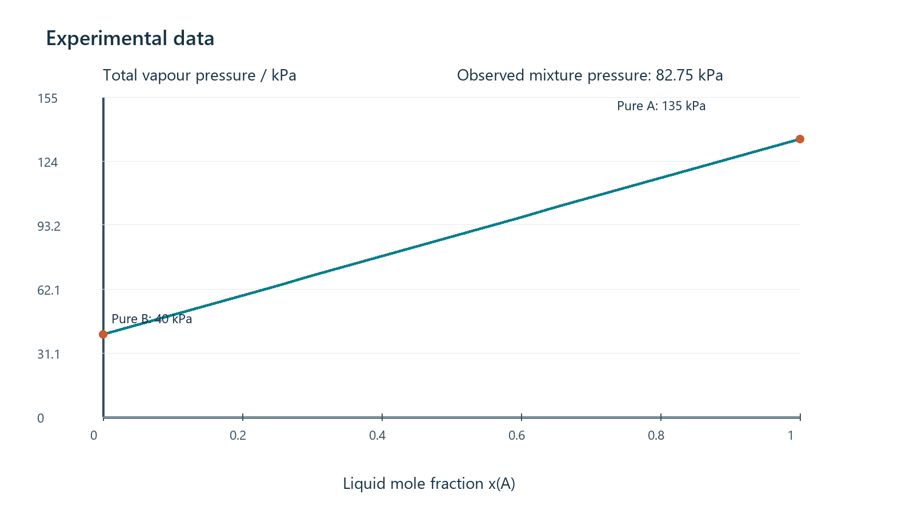
- A 4.7225314 %
- B 89.228886 %
- C 73.413897 %
- D 48.942598 %
JEE-CHEM-0319 · Class XII · Medium
Association and freezing depression
1.2 g of solute (monomer M=80 g mol⁻¹) is dissolved in 100 g solvent. 26% of the monomer units dimerise, with no higher association. Find ΔTf. Kf=2.00 K kg mol⁻¹; assume ideal dilute behaviour. Choose the closest listed value.
- A 0.261 K
- B 0.1305 K
- C 0.222 K
- D 0.087 K
JEE-CHEM-0320 · Class XII · Easy
colligative property
Which description best identifies colligative property?
- A an azeotrope associated with negative deviation
- B a property determined by solute identity rather than by the number of dissolved particles
- C a property depending on number of solute particles rather than their identity
- D a homogeneous mixture of two or more components
JEE-CHEM-0321 · Class XII · Difficult
Molar mass from selective evaporation
A nonvolatile, nondissociating solute of mass 19.5 g is dissolved in an unknown mass of water. At one fixed temperature the solution vapour pressure is 29.31405 kPa. After exactly 16 g water evaporates, the pressure at the same temperature is 29.18694 kPa. Pure-water vapour pressure is 30.0000 kPa. Assume Raoult’s law holds exactly; water molar mass is 18 g mol⁻¹. Infer the solute molar mass. Choose the closest listed value.
- A 1725 g mol⁻¹
- B 50 g mol⁻¹
- C 150 g mol⁻¹
- D 168.75 g mol⁻¹
JEE-CHEM-0322 · Class XII · Medium
Negative deviation and boiling
A binary mixture forms a maximum-boiling azeotrope. Which pair applies?
- A Positive deviation; both phases have different composition at the azeotrope
- B No intermolecular attractions exist
- C Ideal solution; all compositions are azeotropes
- D Negative deviation from Raoult’s law; fractional distillation cannot pass the azeotropic composition
JEE-CHEM-0323 · Class XII · Difficult
Electrolyte mixture with a selective assay
A 1.1724 g mixture contains a salt AB₂ (111 g mol⁻¹) and a nondissociating nonelectrolyte U (180 g mol⁻¹). It is dissolved in 200 g water. AB₂ can dissociate only into A²⁺+2B⁻. The freezing depression is 0.1139064 K (Kf=1.86 K kg mol⁻¹), and an independent selective assay finds 0.004048 mol free B⁻ in the entire solution. Use ideal dilute colligative behaviour. What percentage of AB₂ is dissociated? Choose the closest listed value.
- A 46 %
- B 2.9632836 %
- C 29.87013 %
- D 15.333333 %
JEE-CHEM-0324 · Class XII · Difficult
Density, total molality and mixture identity
A 100.0 mL aqueous solution has density 1.09 g mL⁻¹ and contains 4.278 g total nonvolatile nonelectrolytes A and B. Their molar masses are 60 and 180 g mol⁻¹ respectively. The total analytical molality (moles A plus moles B per kilogram water) is 0.43066404 mol kg⁻¹. What percentage of combined solute mass is A? Choose the closest listed value.
- A 44.880785 %
- B 48.756762 %
- C 67.321178 %
- D 70.953437 %
JEE-CHEM-0325 · Class XII · Medium
Raoult and vapour composition
An ideal binary liquid has mole fraction xA=0.25. Pure-liquid vapour pressures are P°A=90 and P°B=30 kPa at the same temperature. Find the mole percentage of A in its equilibrium vapour; use an ideal vapour. Choose the closest listed value.
- A 25 %
- B 75 %
- C 100 %
- D 50 %
JEE-CHEM-0326 · Class XII · Difficult
Electrolyte mixture with a selective assay
A 1.4079 g mixture contains a salt AB₂ (111 g mol⁻¹) and a nondissociating nonelectrolyte U (180 g mol⁻¹). It is dissolved in 200 g water. AB₂ can dissociate only into A²⁺+2B⁻. The freezing depression is 0.1503624 K (Kf=1.86 K kg mol⁻¹), and an independent selective assay finds 0.006468 mol free B⁻ in the entire solution. Use ideal dilute colligative behaviour. What percentage of AB₂ is dissociated? Choose the closest listed value.
- A 34 %
- B 66 %
- C 6.6754617 %
- D 99 %
JEE-CHEM-0327 · Class XII · Difficult
Density, total molality and mixture identity
A 100.0 mL aqueous solution has density 1.05 g mL⁻¹ and contains 4.302 g total nonvolatile nonelectrolytes A and B. Their molar masses are 60 and 180 g mol⁻¹ respectively. The total analytical molality (moles A plus moles B per kilogram water) is 0.39623428 mol kg⁻¹. What percentage of combined solute mass is A? Choose the closest listed value.
- A 33.472803 %
- B 29.328093 %
- C 16.736402 %
- D 11.157601 %
JEE-CHEM-0328 · Class XII · Medium
Density and solvent-based concentration
100.0 mL solution has density 1.06 g mL⁻¹ and contains 3.4 g urea (60 g mol⁻¹). Find its molality. Choose the closest listed value.
- A 0.56666667 mol kg⁻¹
- B 16.666667 mol kg⁻¹
- C 0.55230669 mol kg⁻¹
- D 1.1046134 mol kg⁻¹
JEE-CHEM-0329 · Class XII · Medium
Dilution followed by osmotic pressure
2.45 g nonvolatile, nondissociating solute (M=150 g mol⁻¹) is in 0.23 L solution. It is diluted to 2 times its initial volume at 300 K. Find final osmotic pressure under ideal dilute behaviour. R=0.08314 L bar mol⁻¹ K⁻¹. Choose the closest listed value.
- A 2.6568652 bar
- B 0.88562174 bar
- C 1.7712435 bar
- D 0.29520725 bar
JEE-CHEM-0330 · Class XII · Difficult
Molar mass and association from two solvents
A nonvolatile solute is monomeric in solvent S: 0.600 g in a final 0.100 L solution has osmotic pressure 2.4942 bar at 300 K. In solvent T it can only dimerise: 1.20 g in 100 g solvent gives ΔTf=0.36 K, with Kf=2.00 K kg mol⁻¹. Assume ideal dilute behaviour in both measurements; use R=0.08314 L bar mol⁻¹ K⁻¹. What percentage of monomer units is associated in T? Choose the closest listed value.
- A 11.111111 %
- B 20 %
- C 13.333333 %
- D 30 %
JEE-CHEM-0331 · Class XII · Easy
solubility
Which description best identifies solubility?
- A gas solubility in a liquid is proportional to gas partial pressure at constant temperature
- B a solution with zero enthalpy and zero volume change on mixing
- C maximum solute that dissolves in a specified solvent under stated conditions
- D partial vapour pressure of a volatile component equals its mole fraction times pure-component vapour pressure
JEE-CHEM-0332 · Class XII · Easy
azeotrope
Which description best explains Azeotrope?
- A there is no net osmosis between them through a suitable membrane
- B the van't Hoff factor corrects the colligative calculation
- C it exceeds one for dissociation and is below one for association
- D a liquid mixture that boils without composition change
JEE-CHEM-0333 · Class XII · Difficult
Osmotic mixture composition
A 1.5 g mixture of two nonvolatile nonelectrolytes A (60 g mol⁻¹) and B (180 g mol⁻¹) is dissolved to make 0.100 L ideal dilute solution at 300 K. Its osmotic pressure is 2.871995 atm. Use R=0.082057 L atm mol⁻¹ K⁻¹. What mass of A is present? Choose the closest listed value.
- A 0.3 g
- B 0.9 g
- C 0.6 g
- D 0.1 g
JEE-CHEM-0334 · Class XII · Easy
van't Hoff factor
Which description best explains Van't hoff factor?
- A its boiling point is above those of the pure components
- B ratio of observed colligative effect to that calculated for no association or dissociation
- C the component present in larger amount is commonly called solvent
- D its boiling point is below those of the pure components
JEE-CHEM-0335 · Class XII · Medium
Association and freezing depression
1.3 g of solute (monomer M=90 g mol⁻¹) is dissolved in 100 g solvent. 29% of the monomer units dimerise, with no higher association. Find ΔTf. Kf=2.00 K kg mol⁻¹; assume ideal dilute behaviour. Choose the closest listed value.
- A 0.247 K
- B 0.1235 K
- C 0.20511111 K
- D 0.082333333 K
JEE-CHEM-0336 · Class XII · Difficult
Electrolyte mixture with a selective assay
A 1.0782 g mixture contains a salt AB₂ (111 g mol⁻¹) and a nondissociating nonelectrolyte U (180 g mol⁻¹). It is dissolved in 200 g water. AB₂ can dissociate only into A²⁺+2B⁻. The freezing depression is 0.1003656 K (Kf=1.86 K kg mol⁻¹), and an independent selective assay finds 0.003192 mol free B⁻ in the entire solution. Use ideal dilute colligative behaviour. What percentage of AB₂ is dissociated? Choose the closest listed value.
- A 38 %
- B 57 %
- C 64.772727 %
- D 62 %
JEE-CHEM-0337 · Class XII · Medium
Raoult and vapour composition
An ideal binary liquid has mole fraction xA=0.275. Pure-liquid vapour pressures are P°A=90 and P°B=30 kPa at the same temperature. Find the mole percentage of A in its equilibrium vapour; use an ideal vapour. Choose the closest listed value.
- A 27.5 %
- B 53.225806 %
- C 26.612903 %
- D 72.5 %
JEE-CHEM-0338 · Class XII · Medium
Density and solvent-based concentration
100.0 mL solution has density 1.065 g mL⁻¹ and contains 3.6 g urea (60 g mol⁻¹). Find its molality. Choose the closest listed value.
- A 0.58309038 mol kg⁻¹
- B 0.19436346 mol kg⁻¹
- C 1.1661808 mol kg⁻¹
- D 0.29154519 mol kg⁻¹
JEE-CHEM-0339 · Class XII · Easy
relative lowering of vapour pressure
Which description best identifies relative lowering of vapour pressure?
- A boiling point rises when a nonvolatile solute lowers solvent vapour pressure
- B for a dilute nonvolatile solute it equals solute mole fraction
- C pressure required to stop osmosis through a semipermeable membrane
- D freezing point falls on adding a nonvolatile solute
JEE-CHEM-0340 · Class XII · Medium
Dilution followed by osmotic pressure
2.6 g nonvolatile, nondissociating solute (M=160 g mol⁻¹) is in 0.24 L solution. It is diluted to 3 times its initial volume at 300 K. Find final osmotic pressure under ideal dilute behaviour. R=0.08314 L bar mol⁻¹ K⁻¹. Choose the closest listed value.
- A 90.068333 bar
- B 0.56292708 bar
- C 1.1258542 bar
- D 1.6887813 bar
JEE-CHEM-0341 · Class XII · Difficult
Liquid-vapour inverse composition
An ideal binary liquid solution has the vapour-pressure relation and measured total pressure shown in the figure. At this temperature, what is the mole percentage of A in its equilibrium vapour? Choose the closest listed value.
- A 24.468085 %
- B 87.443321 %
- C 48.93617 %
- D 51.06383 %
JEE-CHEM-0342 · Class XII · Difficult
Liquid-vapour inverse composition
An ideal binary liquid solution has the vapour-pressure relation and measured total pressure shown in the figure. At this temperature, what is the mole percentage of A in its equilibrium vapour? Choose the closest listed value.
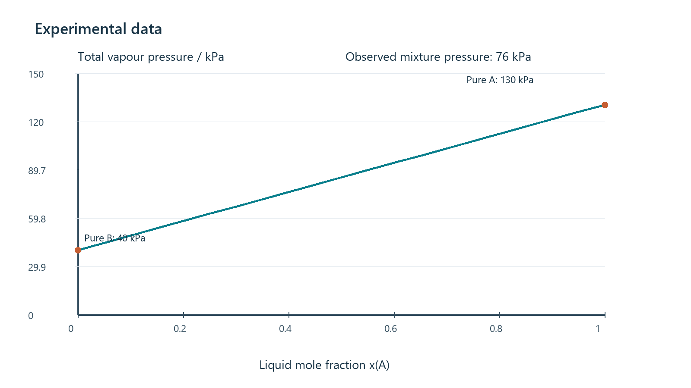
- A 68.421053 %
- B 45.614035 %
- C 34.210526 %
- D 87.08134 %
JEE-CHEM-0343 · Class XII · Difficult
Liquid-vapour inverse composition
An ideal binary liquid solution has the vapour-pressure relation and measured total pressure shown in the figure. At this temperature, what is the mole percentage of A in its equilibrium vapour? Choose the closest listed value.
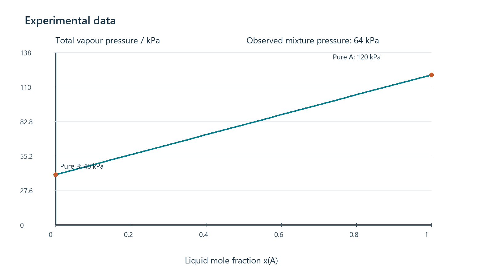
- A 37.5 %
- B 43.75 %
- C 18.75 %
- D 56.25 %
JEE-CHEM-0344 · Class XII · Difficult
Molar mass from selective evaporation
A nonvolatile, nondissociating solute of mass 33.6 g is dissolved in an unknown mass of water. At one fixed temperature the solution vapour pressure is 29.16019 kPa. After exactly 22 g water evaporates, the pressure at the same temperature is 28.93175 kPa. Pure-water vapour pressure is 30.0000 kPa. Assume Raoult’s law holds exactly; water molar mass is 18 g mol⁻¹. Infer the solute molar mass. Choose the closest listed value.
- A 630 g mol⁻¹
- B 210 g mol⁻¹
- C 236.25 g mol⁻¹
- D 1699.0909 g mol⁻¹
JEE-CHEM-0345 · Class XII · Difficult
Henry constant from incremental uptake
At fixed temperature, a nonreacting gas equilibrates with 5.00 mol water at partial pressure 2.00 bar. Increasing its partial pressure to 5.00 bar dissolves an additional 0.1455026 mol gas. Henry’s law is p=K_H x_g; do not neglect dissolved gas in the total liquid mole count. No water is lost. Find K_H. Choose the closest listed value.
- A 55 bar
- B 110 bar
- C 463.66257 bar
- D 286.83937 bar
JEE-CHEM-0346 · Class XII · Difficult
Electrolyte mixture with a selective assay
A 1.2195 g mixture contains a salt AB₂ (111 g mol⁻¹) and a nondissociating nonelectrolyte U (180 g mol⁻¹). It is dissolved in 200 g water. AB₂ can dissociate only into A²⁺+2B⁻. The freezing depression is 0.1209 K (Kf=1.86 K kg mol⁻¹), and an independent selective assay finds 0.0045 mol free B⁻ in the entire solution. Use ideal dilute colligative behaviour. What percentage of AB₂ is dissociated? Choose the closest listed value.
- A 16.870416 %
- B 3.1109107 %
- C 50 %
- D 100 %
JEE-CHEM-0347 · Class XII · Difficult
Molar mass and association from two solvents
A nonvolatile solute is monomeric in solvent S: 0.600 g in a final 0.100 L solution has osmotic pressure 1.068943 bar at 300 K. In solvent T it can only dimerise: 1.20 g in 100 g solvent gives ΔTf=0.12 K, with Kf=2.00 K kg mol⁻¹. Assume ideal dilute behaviour in both measurements; use R=0.08314 L bar mol⁻¹ K⁻¹. What percentage of monomer units is associated in T? Choose the closest listed value.
- A 20 %
- B 60 %
- C 30 %
- D 42.857143 %
JEE-CHEM-0348 · Class XII · Difficult
Molar mass and association from two solvents
A nonvolatile solute is monomeric in solvent S: 0.600 g in a final 0.100 L solution has osmotic pressure 1.6628 bar at 300 K. In solvent T it can only dimerise: 1.20 g in 100 g solvent gives ΔTf=0.22 K, with Kf=2.00 K kg mol⁻¹. Assume ideal dilute behaviour in both measurements; use R=0.08314 L bar mol⁻¹ K⁻¹. What percentage of monomer units is associated in T? Choose the closest listed value.
- A 52.5 %
- B 70 %
- C 61.764706 %
- D 35 %
JEE-CHEM-0349 · Class XII · Difficult
Henry constant from incremental uptake
At fixed temperature, a nonreacting gas equilibrates with 5.00 mol water at partial pressure 2.00 bar. Increasing its partial pressure to 5.00 bar dissolves an additional 0.121875 mol gas. Henry’s law is p=K_H x_g; do not neglect dissolved gas in the total liquid mole count. No water is lost. Find K_H. Choose the closest listed value.
- A 253.11434 bar
- B 130 bar
- C 47.816508 bar
- D 550.27882 bar
JEE-CHEM-0350 · Class XII · Medium
Positive deviation and boiling
A binary mixture forms a minimum-boiling azeotrope. Which pair applies at that composition?
- A Ideal solution; azeotropic boiling temperature exceeds both pure values
- B Positive deviation from Raoult’s law; vapour and liquid have the same composition
- C No vapour can form
- D Negative deviation; vapour and liquid necessarily differ
JEE-CHEM-0351 · Class XII · Medium
Association and freezing depression
1.4 g of solute (monomer M=100 g mol⁻¹) is dissolved in 100 g solvent. 32% of the monomer units dimerise, with no higher association. Find ΔTf. Kf=2.00 K kg mol⁻¹; assume ideal dilute behaviour. Choose the closest listed value.
- A 0.1904 K
- B 0.1176 K
- C 0.0784 K
- D 0.2352 K
JEE-CHEM-0352 · Class XII · Difficult
Osmotic mixture composition
A 1.3 g mixture of two nonvolatile nonelectrolytes A (60 g mol⁻¹) and B (180 g mol⁻¹) is dissolved to make 0.100 L ideal dilute solution at 300 K. Its osmotic pressure is 2.532826 atm. Use R=0.082057 L atm mol⁻¹ K⁻¹. What mass of A is present? Choose the closest listed value.
- A 0.276 g
- B 1.202 g
- C 0.828 g
- D 2.128 g
JEE-CHEM-0353 · Class XII · Difficult
Liquid-vapour inverse composition
An ideal binary liquid solution has the vapour-pressure relation and measured total pressure shown in the figure. At this temperature, what is the mole percentage of A in its equilibrium vapour? Choose the closest listed value.
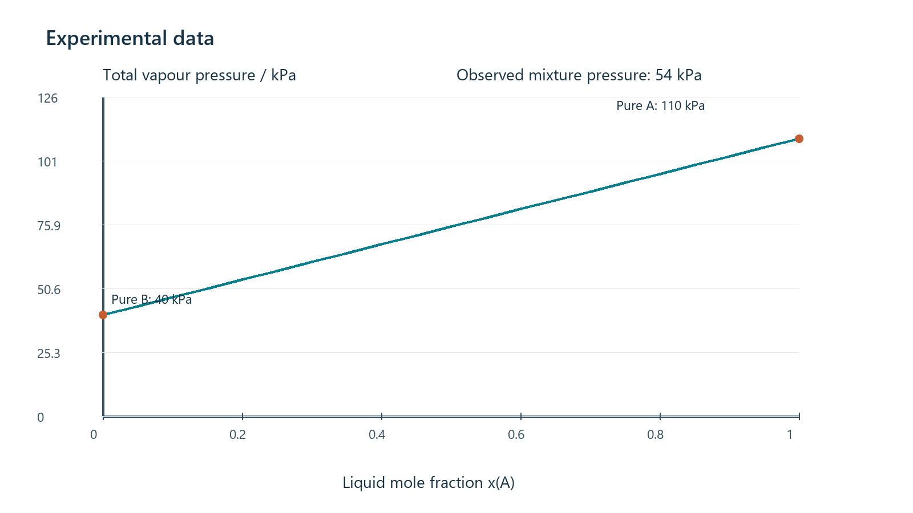
- A 29.501916 %
- B 40.740741 %
- C 98.941799 %
- D 61.111111 %
JEE-CHEM-0354 · Class XII · Difficult
Osmotic mixture composition
A 1.8 g mixture of two nonvolatile nonelectrolytes A (60 g mol⁻¹) and B (180 g mol⁻¹) is dissolved to make 0.100 L ideal dilute solution at 300 K. Its osmotic pressure is 3.380748 atm. Use R=0.082057 L atm mol⁻¹ K⁻¹. What mass of A is present? Choose the closest listed value.
- A 0.336 g
- B 1.572 g
- C 0.168 g
- D 0.112 g
JEE-CHEM-0355 · Class XII · Medium
Raoult and vapour composition
An ideal binary liquid has mole fraction xA=0.3. Pure-liquid vapour pressures are P°A=90 and P°B=30 kPa at the same temperature. Find the mole percentage of A in its equilibrium vapour; use an ideal vapour. Choose the closest listed value.
- A 43.75 %
- B 56.25 %
- C 28.125 %
- D 18.75 %
JEE-CHEM-0356 · Class XII · Medium
Density and solvent-based concentration
100.0 mL solution has density 1.07 g mL⁻¹ and contains 3.8 g urea (60 g mol⁻¹). Find its molality. Choose the closest listed value.
- A 1.2273902 mol kg⁻¹
- B 1.8410853 mol kg⁻¹
- C 0.63333333 mol kg⁻¹
- D 0.61369509 mol kg⁻¹
JEE-CHEM-0357 · Class XII · Difficult
Density, total molality and mixture identity
A 100.0 mL aqueous solution has density 1.07 g mL⁻¹ and contains 4.29 g total nonvolatile nonelectrolytes A and B. Their molar masses are 60 and 180 g mol⁻¹ respectively. The total analytical molality (moles A plus moles B per kilogram water) is 0.41378639 mol kg⁻¹. What percentage of combined solute mass is A? Choose the closest listed value.
- A 42.884917 %
- B 56.281407 %
- C 39.160839 %
- D 13.053613 %
JEE-CHEM-0358 · Class XII · Medium
Dilution followed by osmotic pressure
2.75 g nonvolatile, nondissociating solute (M=170 g mol⁻¹) is in 0.25 L solution. It is diluted to 4 times its initial volume at 300 K. Find final osmotic pressure under ideal dilute behaviour. R=0.08314 L bar mol⁻¹ K⁻¹. Choose the closest listed value.
- A 0.40347353 bar
- B 0.80694706 bar
- C 0.20173676 bar
- D 0.13449118 bar
JEE-CHEM-0359 · Class XII · Difficult
Density, total molality and mixture identity
A 100.0 mL aqueous solution has density 1.1 g mL⁻¹ and contains 4.272 g total nonvolatile nonelectrolytes A and B. Their molar masses are 60 and 180 g mol⁻¹ respectively. The total analytical molality (moles A plus moles B per kilogram water) is 0.43886199 mol kg⁻¹. What percentage of combined solute mass is A? Choose the closest listed value.
- A 15.917603 %
- B 23.876404 %
- C 31.835206 %
- D 47.752809 %
JEE-CHEM-0360 · Class XII · Easy
negative deviation from Raoult law
The statement ‘vapour pressure is below the ideal value’ refers to
- A elevation of boiling point
- B relative lowering of vapour pressure
- C negative deviation from Raoult law
- D depression of freezing point
JEE-CHEM-0361 · Class XII · Difficult
Liquid-vapour inverse composition
An ideal binary liquid solution has the vapour-pressure relation and measured total pressure shown in the figure. At this temperature, what is the mole percentage of A in its equilibrium vapour? Choose the closest listed value.
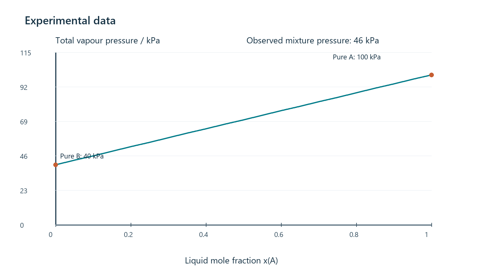
- A 7.2463768 %
- B 21.73913 %
- C 35.714286 %
- D 81.939799 %
JEE-CHEM-0362 · Class XII · Medium
Association and freezing depression
1.5 g of solute (monomer M=110 g mol⁻¹) is dissolved in 100 g solvent. 35% of the monomer units dimerise, with no higher association. Find ΔTf. Kf=2.00 K kg mol⁻¹; assume ideal dilute behaviour. Choose the closest listed value.
- A 0.225 K
- B 0.17727273 K
- C 0.27272727 K
- D 0.1125 K
JEE-CHEM-0363 · Class XII · Difficult
Electrolyte mixture with a selective assay
A 1.0311 g mixture contains a salt AB₂ (111 g mol⁻¹) and a nondissociating nonelectrolyte U (180 g mol⁻¹). It is dissolved in 200 g water. AB₂ can dissociate only into A²⁺+2B⁻. The freezing depression is 0.0938184 K (Kf=1.86 K kg mol⁻¹), and an independent selective assay finds 0.002788 mol free B⁻ in the entire solution. Use ideal dilute colligative behaviour. What percentage of AB₂ is dissociated? Choose the closest listed value.
- A 34 %
- B 5.1925631 %
- C 2.4571218 %
- D 17 %
JEE-CHEM-0364 · Class XII · Easy
azeotrope
The statement ‘a liquid mixture that boils without composition change’ refers to
- A depression of freezing point
- B azeotrope
- C elevation of boiling point
- D osmotic pressure
JEE-CHEM-0365 · Class XII · Easy
abnormal molar mass
The statement ‘an apparent molar mass affected by solute association or dissociation’ refers to
- A semipermeable membrane
- B hypotonic solution
- C colligative property
- D abnormal molar mass
JEE-CHEM-0366 · Class XII · Difficult
Density, total molality and mixture identity
A 100.0 mL aqueous solution has density 1.03 g mL⁻¹ and contains 4.314 g total nonvolatile nonelectrolytes A and B. Their molar masses are 60 and 180 g mol⁻¹ respectively. The total analytical molality (moles A plus moles B per kilogram water) is 0.37796648 mol kg⁻¹. What percentage of combined solute mass is A? Choose the closest listed value.
- A 16.155089 %
- B 18.544274 %
- C 43.525571 %
- D 27.816412 %
JEE-CHEM-0367 · Class XII · Medium
Raoult and vapour composition
An ideal binary liquid has mole fraction xA=0.325. Pure-liquid vapour pressures are P°A=90 and P°B=30 kPa at the same temperature. Find the mole percentage of A in its equilibrium vapour; use an ideal vapour. Choose the closest listed value.
- A 59.090909 %
- B 19.69697 %
- C 29.545455 %
- D 40.909091 %
JEE-CHEM-0368 · Class XII · Easy
maximum-boiling azeotrope
Which description best identifies maximum-boiling azeotrope?
- A moles of a component divided by total moles
- B mass of component divided by total solution mass times 100
- C a homogeneous mixture of two or more components
- D an azeotrope associated with negative deviation
JEE-CHEM-0369 · Class XII · Medium
Density and solvent-based concentration
100.0 mL solution has density 1.075 g mL⁻¹ and contains 4 g urea (60 g mol⁻¹). Find its molality. Choose the closest listed value.
- A 0.64412238 mol kg⁻¹
- B 0.66666667 mol kg⁻¹
- C 0.21470746 mol kg⁻¹
- D 1.2882448 mol kg⁻¹
JEE-CHEM-0370 · Class XII · Difficult
Osmotic mixture composition
A 1 g mixture of two nonvolatile nonelectrolytes A (60 g mol⁻¹) and B (180 g mol⁻¹) is dissolved to make 0.100 L ideal dilute solution at 300 K. Its osmotic pressure is 2.024073 atm. Use R=0.082057 L atm mol⁻¹ K⁻¹. What mass of A is present? Choose the closest listed value.
- A 0.12 g
- B 0.08 g
- C 0.24 g
- D 0.49 g
JEE-CHEM-0371 · Class XII · Easy
abnormal molar mass
Which description best identifies abnormal molar mass?
- A an apparent molar mass affected by solute association or dissociation
- B solutions having the same osmotic pressure at a stated temperature
- C a membrane that permits solvent but not solute particles to pass
- D a solution with lower osmotic pressure than the reference solution
JEE-CHEM-0372 · Class XII · Medium
Ideal solution mixing
An ideal solution forms from two liquids at fixed temperature. Which pair is correct?
- A ΔHmix<0; ΔVmix must be positive
- B Both pure vapour pressures must be identical
- C ΔHmix>0; ΔVmix must be negative
- D ΔHmix=0; ΔVmix=0
JEE-CHEM-0373 · Class XII · Easy
Raoult law
Which description best identifies Raoult law?
- A vapour pressure exceeds the ideal value
- B vapour pressure is below the ideal value
- C total vapour pressure always equals pure-solvent vapour pressure at every composition
- D partial vapour pressure of a volatile component equals its mole fraction times pure-component vapour pressure
JEE-CHEM-0374 · Class XII · Difficult
Electrolyte mixture with a selective assay
A 1.1253 g mixture contains a salt AB₂ (111 g mol⁻¹) and a nondissociating nonelectrolyte U (180 g mol⁻¹). It is dissolved in 200 g water. AB₂ can dissociate only into A²⁺+2B⁻. The freezing depression is 0.1070616 K (Kf=1.86 K kg mol⁻¹), and an independent selective assay finds 0.003612 mol free B⁻ in the entire solution. Use ideal dilute colligative behaviour. What percentage of AB₂ is dissociated? Choose the closest listed value.
- A 14.50096 %
- B 11.903143 %
- C 42 %
- D 68.478261 %
JEE-CHEM-0375 · Class XII · Difficult
Molar mass and association from two solvents
A nonvolatile solute is monomeric in solvent S: 0.600 g in a final 0.100 L solution has osmotic pressure 1.87065 bar at 300 K. In solvent T it can only dimerise: 1.20 g in 100 g solvent gives ΔTf=0.255 K, with Kf=2.00 K kg mol⁻¹. Assume ideal dilute behaviour in both measurements; use R=0.08314 L bar mol⁻¹ K⁻¹. What percentage of monomer units is associated in T? Choose the closest listed value.
- A 30 %
- B 17.647059 %
- C 20 %
- D 15 %
JEE-CHEM-0376 · Class XII · Difficult
Henry constant from incremental uptake
At fixed temperature, a nonreacting gas equilibrates with 5.00 mol water at partial pressure 2.00 bar. Increasing its partial pressure to 5.00 bar dissolves an additional 0.1270325 mol gas. Henry’s law is p=K_H x_g; do not neglect dissolved gas in the total liquid mole count. No water is lost. Find K_H. Choose the closest listed value.
- A 326.8188 bar
- B 528.62325 bar
- C 125 bar
- D 243.11887 bar
JEE-CHEM-0377 · Class XII · Medium
Dilution followed by osmotic pressure
2.9 g nonvolatile, nondissociating solute (M=180 g mol⁻¹) is in 0.26 L solution. It is diluted to 2 times its initial volume at 300 K. Find final osmotic pressure under ideal dilute behaviour. R=0.08314 L bar mol⁻¹ K⁻¹. Choose the closest listed value.
- A 139.09962 bar
- B 1.5455513 bar
- C 0.77277564 bar
- D 0.25759188 bar
JEE-CHEM-0378 · Class XII · Difficult
Henry constant from incremental uptake
At fixed temperature, a nonreacting gas equilibrates with 5.00 mol water at partial pressure 2.00 bar. Increasing its partial pressure to 5.00 bar dissolves an additional 0.1326455 mol gas. Henry’s law is p=K_H x_g; do not neglect dissolved gas in the total liquid mole count. No water is lost. Find K_H. Choose the closest listed value.
- A 46.262125 bar
- B 40 bar
- C 313.49176 bar
- D 120 bar
JEE-CHEM-0379 · Class XII · Medium
Association and freezing depression
1.6 g of solute (monomer M=120 g mol⁻¹) is dissolved in 100 g solvent. 38% of the monomer units dimerise, with no higher association. Find ΔTf. Kf=2.00 K kg mol⁻¹; assume ideal dilute behaviour. Choose the closest listed value.
- A 0.108 K
- B 0.16533333 K
- C 0.216 K
- D 0.072 K
JEE-CHEM-0380 · Class XII · Difficult
Molar mass and association from two solvents
A nonvolatile solute is monomeric in solvent S: 0.600 g in a final 0.100 L solution has osmotic pressure 1.49652 bar at 300 K. In solvent T it can only dimerise: 1.20 g in 100 g solvent gives ΔTf=0.192 K, with Kf=2.00 K kg mol⁻¹. Assume ideal dilute behaviour in both measurements; use R=0.08314 L bar mol⁻¹ K⁻¹. What percentage of monomer units is associated in T? Choose the closest listed value.
- A 80 %
- B 60 %
- C 57.142857 %
- D 40 %
JEE-CHEM-0381 · Class XII · Difficult
Molar mass from selective evaporation
A nonvolatile, nondissociating solute of mass 15.6 g is dissolved in an unknown mass of water. At one fixed temperature the solution vapour pressure is 29.3657 kPa. After exactly 14 g water evaporates, the pressure at the same temperature is 29.26497 kPa. Pure-water vapour pressure is 30.0000 kPa. Assume Raoult’s law holds exactly; water molar mass is 18 g mol⁻¹. Infer the solute molar mass. Choose the closest listed value.
- A 130 g mol⁻¹
- B 390 g mol⁻¹
- C 1727.1429 g mol⁻¹
- D 7.2222222 g mol⁻¹
JEE-CHEM-0382 · Class XII · Medium
Association apparent mass
A solute dimerises in solution. If association is ignored in a colligative molar-mass calculation, which pair is correct?
- A i=1 for every degree of association
- B i<1; apparent molar mass exceeds monomer molar mass
- C i<1; apparent molar mass is smaller
- D i>1; apparent molar mass exceeds monomer mass
JEE-CHEM-0383 · Class XII · Easy
Raoult law
The statement ‘partial vapour pressure of a volatile component equals its mole fraction times pure-component vapour pressure’ refers to
- A positive deviation from Raoult law
- B azeotrope
- C negative deviation from Raoult law
- D Raoult law
JEE-CHEM-0384 · Class XII · Difficult
Density, total molality and mixture identity
A 100.0 mL aqueous solution has density 1.08 g mL⁻¹ and contains 4.284 g total nonvolatile nonelectrolytes A and B. Their molar masses are 60 and 180 g mol⁻¹ respectively. The total analytical molality (moles A plus moles B per kilogram water) is 0.42230707 mol kg⁻¹. What percentage of combined solute mass is A? Choose the closest listed value.
- A 57.983193 %
- B 59.171598 %
- C 84.033613 %
- D 42.016807 %
JEE-CHEM-0385 · Class XII · Difficult
Molar mass and association from two solvents
A nonvolatile solute is monomeric in solvent S: 0.600 g in a final 0.100 L solution has osmotic pressure 1.360473 bar at 300 K. In solvent T it can only dimerise: 1.20 g in 100 g solvent gives ΔTf=0.1690909 K, with Kf=2.00 K kg mol⁻¹. Assume ideal dilute behaviour in both measurements; use R=0.08314 L bar mol⁻¹ K⁻¹. What percentage of monomer units is associated in T? Choose the closest listed value.
- A 90 %
- B 71.052632 %
- C 45 %
- D 30 %
JEE-CHEM-0386 · Class XII · Difficult
Electrolyte mixture with a selective assay
A 0.984 g mixture contains a salt AB₂ (111 g mol⁻¹) and a nondissociating nonelectrolyte U (180 g mol⁻¹). It is dissolved in 200 g water. AB₂ can dissociate only into A²⁺+2B⁻. The freezing depression is 0.08742 K (Kf=1.86 K kg mol⁻¹), and an independent selective assay finds 0.0024 mol free B⁻ in the entire solution. Use ideal dilute colligative behaviour. What percentage of AB₂ is dissociated? Choose the closest listed value.
- A 4.893617 %
- B 2.2622951 %
- C 46.153846 %
- D 30 %
JEE-CHEM-0387 · Class XII · Medium
Raoult and vapour composition
An ideal binary liquid has mole fraction xA=0.35. Pure-liquid vapour pressures are P°A=90 and P°B=30 kPa at the same temperature. Find the mole percentage of A in its equilibrium vapour; use an ideal vapour. Choose the closest listed value.
- A 35 %
- B 30.882353 %
- C 61.764706 %
- D 38.235294 %
JEE-CHEM-0388 · Class XII · Difficult
Molar mass and association from two solvents
A nonvolatile solute is monomeric in solvent S: 0.600 g in a final 0.100 L solution has osmotic pressure 0.99768 bar at 300 K. In solvent T it can only dimerise: 1.20 g in 100 g solvent gives ΔTf=0.108 K, with Kf=2.00 K kg mol⁻¹. Assume ideal dilute behaviour in both measurements; use R=0.08314 L bar mol⁻¹ K⁻¹. What percentage of monomer units is associated in T? Choose the closest listed value.
- A 78.787879 %
- B 65 %
- C 84.782609 %
- D 97.5 %
JEE-CHEM-0389 · Class XII · Difficult
Molar mass from selective evaporation
A nonvolatile, nondissociating solute of mass 39.1 g is dissolved in an unknown mass of water. At one fixed temperature the solution vapour pressure is 29.10926 kPa. After exactly 24 g water evaporates, the pressure at the same temperature is 28.83886 kPa. Pure-water vapour pressure is 30.0000 kPa. Assume Raoult’s law holds exactly; water molar mass is 18 g mol⁻¹. Infer the solute molar mass. Choose the closest listed value.
- A 230 g mol⁻¹
- B 1686.6667 g mol⁻¹
- C 12.777778 g mol⁻¹
- D 258.75 g mol⁻¹
JEE-CHEM-0390 · Class XII · Difficult
Liquid-vapour inverse composition
An ideal binary liquid solution has the vapour-pressure relation and measured total pressure shown in the figure. At this temperature, what is the mole percentage of A in its equilibrium vapour? Choose the closest listed value.
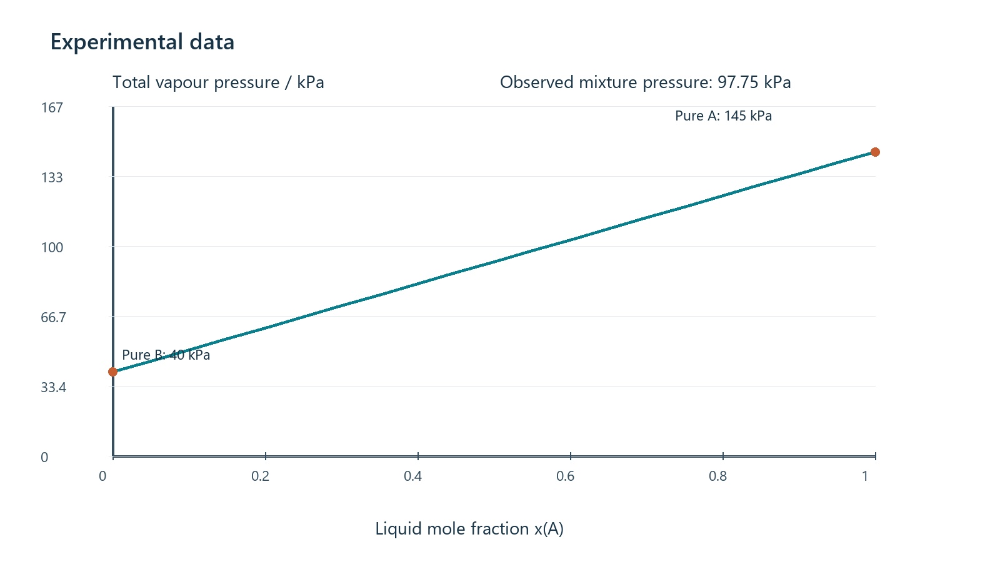
- A 81.585678 %
- B 40.792839 %
- C 25.076117 %
- D 95.105054 %
JEE-CHEM-0391 · Class XII · Difficult
Osmotic mixture composition
A 1.7 g mixture of two nonvolatile nonelectrolytes A (60 g mol⁻¹) and B (180 g mol⁻¹) is dissolved to make 0.100 L ideal dilute solution at 300 K. Its osmotic pressure is 3.211164 atm. Use R=0.082057 L atm mol⁻¹ K⁻¹. What mass of A is present? Choose the closest listed value.
- A 0.162 g
- B 0.108 g
- C 0.324 g
- D 1.498 g
JEE-CHEM-0392 · Class XII · Difficult
Molar mass from selective evaporation
A nonvolatile, nondissociating solute of mass 28.5 g is dissolved in an unknown mass of water. At one fixed temperature the solution vapour pressure is 29.2113 kPa. After exactly 20 g water evaporates, the pressure at the same temperature is 29.02056 kPa. Pure-water vapour pressure is 30.0000 kPa. Assume Raoult’s law holds exactly; water molar mass is 18 g mol⁻¹. Infer the solute molar mass. Choose the closest listed value.
- A 380 g mol⁻¹
- B 570 g mol⁻¹
- C 190 g mol⁻¹
- D 1710 g mol⁻¹
JEE-CHEM-0393 · Class XII · Medium
Density and solvent-based concentration
100.0 mL solution has density 1.08 g mL⁻¹ and contains 4.2 g urea (60 g mol⁻¹). Find its molality. Choose the closest listed value.
- A 1.3487476 mol kg⁻¹
- B 0.22479127 mol kg⁻¹
- C 2.0231214 mol kg⁻¹
- D 0.6743738 mol kg⁻¹
JEE-CHEM-0394 · Class XII · Easy
depression of freezing point
Which description best identifies depression of freezing point?
- A pressure required to stop osmosis through a semipermeable membrane
- B freezing point falls on adding a nonvolatile solute
- C ratio of observed colligative effect to that calculated for no association or dissociation
- D solvent is forced opposite to natural osmosis by applying pressure above osmotic pressure
JEE-CHEM-0395 · Class XII · Difficult
Liquid-vapour inverse composition
An ideal binary liquid solution has the vapour-pressure relation and measured total pressure shown in the figure. At this temperature, what is the mole percentage of A in its equilibrium vapour? Choose the closest listed value.
- A 38.888889 %
- B 77.777778 %
- C 22.222222 %
- D 25.925926 %
JEE-CHEM-0396 · Class XII · Difficult
Molar mass from selective evaporation
A nonvolatile, nondissociating solute of mass 51.3 g is dissolved in an unknown mass of water. At one fixed temperature the solution vapour pressure is 29.00793 kPa. After exactly 28 g water evaporates, the pressure at the same temperature is 28.63962 kPa. Pure-water vapour pressure is 30.0000 kPa. Assume Raoult’s law holds exactly; water molar mass is 18 g mol⁻¹. Infer the solute molar mass. Choose the closest listed value.
- A 540 g mol⁻¹
- B 810 g mol⁻¹
- C 303.75 g mol⁻¹
- D 270 g mol⁻¹
JEE-CHEM-0397 · Class XII · Difficult
Molar mass from selective evaporation
A nonvolatile, nondissociating solute of mass 12.1 g is dissolved in an unknown mass of water. At one fixed temperature the solution vapour pressure is 29.41753 kPa. After exactly 12 g water evaporates, the pressure at the same temperature is 29.33985 kPa. Pure-water vapour pressure is 30.0000 kPa. Assume Raoult’s law holds exactly; water molar mass is 18 g mol⁻¹. Infer the solute molar mass. Choose the closest listed value.
- A 123.75 g mol⁻¹
- B 330 g mol⁻¹
- C 6.1111111 g mol⁻¹
- D 110 g mol⁻¹
JEE-CHEM-0398 · Class XII · Difficult
Liquid-vapour inverse composition
An ideal binary liquid solution has the vapour-pressure relation and measured total pressure shown in the figure. At this temperature, what is the mole percentage of A in its equilibrium vapour? Choose the closest listed value.
- A 84.912101 %
- B 62.724014 %
- C 50.776583 %
- D 31.362007 %
JEE-CHEM-0399 · Class XII · Difficult
Osmotic mixture composition
A 1.6 g mixture of two nonvolatile nonelectrolytes A (60 g mol⁻¹) and B (180 g mol⁻¹) is dissolved to make 0.100 L ideal dilute solution at 300 K. Its osmotic pressure is 3.041579 atm. Use R=0.082057 L atm mol⁻¹ K⁻¹. What mass of A is present? Choose the closest listed value.
- A 0.104 g
- B 0.312 g
- C 0.936 g
- D 0.156 g
JEE-CHEM-0400 · Class XII · Difficult
Henry constant from incremental uptake
At fixed temperature, a nonreacting gas equilibrates with 5.00 mol water at partial pressure 2.00 bar. Increasing its partial pressure to 5.00 bar dissolves an additional 0.1171197 mol gas. Henry’s law is p=K_H x_g; do not neglect dissolved gas in the total liquid mole count. No water is lost. Find K_H. Choose the closest listed value.
- A 190.64507 bar
- B 391.19666 bar
- C 135 bar
- D 270 bar
JEE-CHEM-0401 · Class XII · Difficult
Density, total molality and mixture identity
A 100.0 mL aqueous solution has density 1.04 g mL⁻¹ and contains 4.308 g total nonvolatile nonelectrolytes A and B. Their molar masses are 60 and 180 g mol⁻¹ respectively. The total analytical molality (moles A plus moles B per kilogram water) is 0.38719255 mol kg⁻¹. What percentage of combined solute mass is A? Choose the closest listed value.
- A 34.125402 %
- B 56.994819 %
- C 30.640669 %
- D 20.427112 %
JEE-CHEM-0402 · Class XII · Difficult
Molar mass and association from two solvents
A nonvolatile solute is monomeric in solvent S: 0.600 g in a final 0.100 L solution has osmotic pressure 2.137886 bar at 300 K. In solvent T it can only dimerise: 1.20 g in 100 g solvent gives ΔTf=0.3 K, with Kf=2.00 K kg mol⁻¹. Assume ideal dilute behaviour in both measurements; use R=0.08314 L bar mol⁻¹ K⁻¹. What percentage of monomer units is associated in T? Choose the closest listed value.
- A 14.285714 %
- B 25 %
- C 12.5 %
- D 75 %
JEE-CHEM-0403 · Class XII · Medium
Dilution followed by osmotic pressure
3.05 g nonvolatile, nondissociating solute (M=190 g mol⁻¹) is in 0.27 L solution. It is diluted to 3 times its initial volume at 300 K. Find final osmotic pressure under ideal dilute behaviour. R=0.08314 L bar mol⁻¹ K⁻¹. Choose the closest listed value.
- A 0.16476738 bar
- B 0.24715107 bar
- C 0.49430214 bar
- D 0.36614974 bar
JEE-CHEM-0404 · Class XII · Difficult
Electrolyte mixture with a selective assay
A 1.3137 g mixture contains a salt AB₂ (111 g mol⁻¹) and a nondissociating nonelectrolyte U (180 g mol⁻¹). It is dissolved in 200 g water. AB₂ can dissociate only into A²⁺+2B⁻. The freezing depression is 0.1353336 K (Kf=1.86 K kg mol⁻¹), and an independent selective assay finds 0.005452 mol free B⁻ in the entire solution. Use ideal dilute colligative behaviour. What percentage of AB₂ is dissociated? Choose the closest listed value.
- A 58 %
- B 87 %
- C 80.555556 %
- D 73.417722 %
JEE-CHEM-0405 · Class XII · Difficult
Osmotic mixture composition
A 1.1 g mixture of two nonvolatile nonelectrolytes A (60 g mol⁻¹) and B (180 g mol⁻¹) is dissolved to make 0.100 L ideal dilute solution at 300 K. Its osmotic pressure is 2.193657 atm. Use R=0.082057 L atm mol⁻¹ K⁻¹. What mass of A is present? Choose the closest listed value.
- A 0.504 g
- B 0.084 g
- C 0.756 g
- D 0.252 g
JEE-CHEM-0406 · Class XII · Difficult
Osmotic mixture composition
A 1.9 g mixture of two nonvolatile nonelectrolytes A (60 g mol⁻¹) and B (180 g mol⁻¹) is dissolved to make 0.100 L ideal dilute solution at 300 K. Its osmotic pressure is 3.550333 atm. Use R=0.082057 L atm mol⁻¹ K⁻¹. What mass of A is present? Choose the closest listed value.
- A 0.98133333 g
- B 0.174 g
- C 0.116 g
- D 0.348 g
JEE-CHEM-0407 · Class XII · Difficult
Molar mass and association from two solvents
A nonvolatile solute is monomeric in solvent S: 0.600 g in a final 0.100 L solution has osmotic pressure 1.151169 bar at 300 K. In solvent T it can only dimerise: 1.20 g in 100 g solvent gives ΔTf=0.1338462 K, with Kf=2.00 K kg mol⁻¹. Assume ideal dilute behaviour in both measurements; use R=0.08314 L bar mol⁻¹ K⁻¹. What percentage of monomer units is associated in T? Choose the closest listed value.
- A 55 %
- B 37.931034 %
- C 36.666667 %
- D 27.5 %
JEE-CHEM-0408 · Class XII · Medium
Association and freezing depression
1.7 g of solute (monomer M=130 g mol⁻¹) is dissolved in 100 g solvent. 41% of the monomer units dimerise, with no higher association. Find ΔTf. Kf=2.00 K kg mol⁻¹; assume ideal dilute behaviour. Choose the closest listed value.
- A 0.36876923 K
- B 0.26153846 K
- C 0.41584615 K
- D 0.20792308 K
JEE-CHEM-0409 · Class XII · Easy
depression of freezing point
The statement ‘freezing point falls on adding a nonvolatile solute’ refers to
- A depression of freezing point
- B van't Hoff factor
- C abnormal molar mass
- D reverse osmosis
JEE-CHEM-0410 · Class XII · Difficult
Electrolyte mixture with a selective assay
A 1.2666 g mixture contains a salt AB₂ (111 g mol⁻¹) and a nondissociating nonelectrolyte U (180 g mol⁻¹). It is dissolved in 200 g water. AB₂ can dissociate only into A²⁺+2B⁻. The freezing depression is 0.1280424 K (Kf=1.86 K kg mol⁻¹), and an independent selective assay finds 0.004968 mol free B⁻ in the entire solution. Use ideal dilute colligative behaviour. What percentage of AB₂ is dissociated? Choose the closest listed value.
- A 77.884615 %
- B 18 %
- C 46 %
- D 54 %
JEE-CHEM-0411 · Class XII · Medium
Raoult and vapour composition
An ideal binary liquid has mole fraction xA=0.375. Pure-liquid vapour pressures are P°A=90 and P°B=30 kPa at the same temperature. Find the mole percentage of A in its equilibrium vapour; use an ideal vapour. Choose the closest listed value.
- A 21.428571 %
- B 32.142857 %
- C 64.285714 %
- D 35.714286 %
JEE-CHEM-0412 · Class XII · Medium
Density and solvent-based concentration
100.0 mL solution has density 1.085 g mL⁻¹ and contains 4.4 g urea (60 g mol⁻¹). Find its molality. Choose the closest listed value.
- A 16.666667 mol kg⁻¹
- B 0.73333333 mol kg⁻¹
- C 0.70445085 mol kg⁻¹
- D 2.1133525 mol kg⁻¹
JEE-CHEM-0413 · Class XII · Medium
Dilution followed by osmotic pressure
3.2 g nonvolatile, nondissociating solute (M=200 g mol⁻¹) is in 0.28 L solution. It is diluted to 4 times its initial volume at 300 K. Find final osmotic pressure under ideal dilute behaviour. R=0.08314 L bar mol⁻¹ K⁻¹. Choose the closest listed value.
- A 0.2545102 bar
- B 0.35631429 bar
- C 1.0689429 bar
- D 71.262857 bar
JEE-CHEM-0414 · Class XII · Difficult
Liquid-vapour inverse composition
An ideal binary liquid solution has the vapour-pressure relation and measured total pressure shown in the figure. At this temperature, what is the mole percentage of A in its equilibrium vapour? Choose the closest listed value.
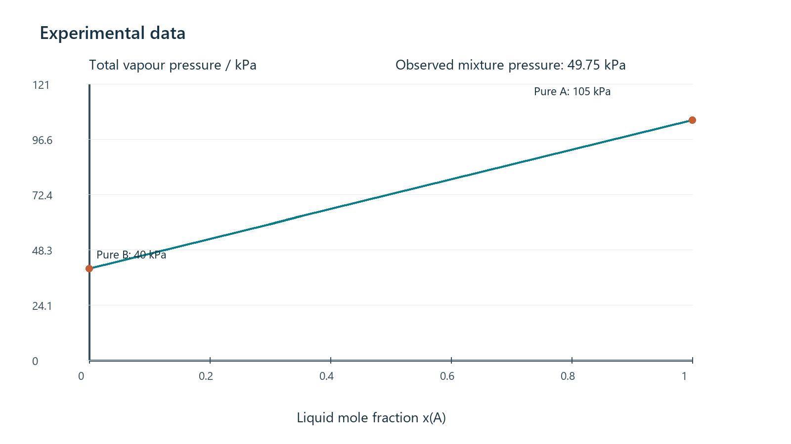
- A 15.829146 %
- B 63.316583 %
- C 31.658291 %
- D 24.209282 %
JEE-CHEM-0415 · Class XII · Medium
Association and freezing depression
1.8 g of solute (monomer M=140 g mol⁻¹) is dissolved in 100 g solvent. 44% of the monomer units dimerise, with no higher association. Find ΔTf. Kf=2.00 K kg mol⁻¹; assume ideal dilute behaviour. Choose the closest listed value.
- A 0.20057143 K
- B 0.144 K
- C 0.066857143 K
- D 0.10028571 K
JEE-CHEM-0416 · Class XII · Easy
relative lowering of vapour pressure
The statement ‘for a dilute nonvolatile solute it equals solute mole fraction’ refers to
- A relative lowering of vapour pressure
- B osmotic pressure
- C reverse osmosis
- D depression of freezing point
JEE-CHEM-0417 · Class XII · Medium
Raoult and vapour composition
An ideal binary liquid has mole fraction xA=0.4. Pure-liquid vapour pressures are P°A=90 and P°B=30 kPa at the same temperature. Find the mole percentage of A in its equilibrium vapour; use an ideal vapour. Choose the closest listed value.
- A 22.222222 %
- B 33.333333 %
- C 60 %
- D 66.666667 %
JEE-CHEM-0418 · Class XII · Easy
ideal solution
Which description best identifies ideal solution?
- A a solution with zero enthalpy and zero volume change on mixing
- B a liquid mixture that boils without composition change
- C vapour pressure is below the ideal value
- D vapour pressure exceeds the ideal value
JEE-CHEM-0419 · Class XII · Medium
Density and solvent-based concentration
100.0 mL solution has density 1.09 g mL⁻¹ and contains 4.6 g urea (60 g mol⁻¹). Find its molality. Choose the closest listed value.
- A 0.00073435504 mol kg⁻¹
- B 0.70336391 mol kg⁻¹
- C 0.73435504 mol kg⁻¹
- D 0.36717752 mol kg⁻¹
JEE-CHEM-0420 · Class XII · Medium
Dissociation apparent mass
A solute dissociates into ions. Under ideal dilute assumptions, ignoring dissociation gives which pair?
- A i>1; apparent molar mass is smaller than formula molar mass
- B i>1; apparent molar mass must be larger
- C i=1; the number of particles cannot change
- D i<1; apparent molar mass is larger
JEE-CHEM-0421 · Class XII · Easy
colligative property
The statement ‘a property depending on number of solute particles rather than their identity’ refers to
- A mass percentage
- B colligative property
- C maximum-boiling azeotrope
- D solution
JEE-CHEM-0422 · Class XII · Difficult
Molar mass and association from two solvents
A nonvolatile solute is monomeric in solvent S: 0.600 g in a final 0.100 L solution has osmotic pressure 1.2471 bar at 300 K. In solvent T it can only dimerise: 1.20 g in 100 g solvent gives ΔTf=0.15 K, with Kf=2.00 K kg mol⁻¹. Assume ideal dilute behaviour in both measurements; use R=0.08314 L bar mol⁻¹ K⁻¹. What percentage of monomer units is associated in T? Choose the closest listed value.
- A 33.333333 %
- B 50 %
- C 25 %
- D 66.666667 %
JEE-CHEM-0423 · Class XII · Medium
Dilution followed by osmotic pressure
3.35 g nonvolatile, nondissociating solute (M=210 g mol⁻¹) is in 0.29 L solution. It is diluted to 2 times its initial volume at 300 K. Find final osmotic pressure under ideal dilute behaviour. R=0.08314 L bar mol⁻¹ K⁻¹. Choose the closest listed value.
- A 0.22866913 bar
- B 0.47310854 bar
- C 0.34300369 bar
- D 0.68600739 bar
JEE-CHEM-0424 · Class XII · Easy
Henry law
Which description best identifies Henry law?
- A gas solubility in a liquid is proportional to gas partial pressure at constant temperature
- B a solution with zero enthalpy and zero volume change on mixing
- C partial vapour pressure of a volatile component equals its mole fraction times pure-component vapour pressure
- D vapour pressure exceeds the ideal value
JEE-CHEM-0425 · Class XII · Easy
minimum-boiling azeotrope
Which description best identifies minimum-boiling azeotrope?
- A an azeotrope associated with positive deviation
- B an azeotrope associated with negative deviation
- C a homogeneous mixture of two or more components
- D mass of component divided by total solution mass times 100
JEE-CHEM-0426 · Class XII · Difficult
Electrolyte mixture with a selective assay
A 1.3608 g mixture contains a salt AB₂ (111 g mol⁻¹) and a nondissociating nonelectrolyte U (180 g mol⁻¹). It is dissolved in 200 g water. AB₂ can dissociate only into A²⁺+2B⁻. The freezing depression is 0.1427736 K (Kf=1.86 K kg mol⁻¹), and an independent selective assay finds 0.005952 mol free B⁻ in the entire solution. Use ideal dilute colligative behaviour. What percentage of AB₂ is dissociated? Choose the closest listed value.
- A 83.035714 %
- B 62 %
- C 20.666667 %
- D 41.333333 %
JEE-CHEM-0427 · Class XII · Easy
elevation of boiling point
Which description best identifies elevation of boiling point?
- A solvent is forced opposite to natural osmosis by applying pressure above osmotic pressure
- B boiling point rises when a nonvolatile solute lowers solvent vapour pressure
- C freezing point falls on adding a nonvolatile solute
- D pressure required to stop osmosis through a semipermeable membrane
JEE-CHEM-0428 · Class XII · Easy
solubility
Which description best explains Solubility?
- A ΔT_b equals iK_bm for dilute solutions
- B simple fractional distillation cannot separate it beyond the azeotropic composition
- C it is a colligative property
- D maximum solute that dissolves in a specified solvent under stated conditions
JEE-CHEM-0429 · Class XII · Difficult
Osmotic mixture composition
A 1.2 g mixture of two nonvolatile nonelectrolytes A (60 g mol⁻¹) and B (180 g mol⁻¹) is dissolved to make 0.100 L ideal dilute solution at 300 K. Its osmotic pressure is 2.363242 atm. Use R=0.082057 L atm mol⁻¹ K⁻¹. What mass of A is present? Choose the closest listed value.
- A 0.132 g
- B 0.264 g
- C 1.992 g
- D 0.528 g
JEE-CHEM-0430 · Class XII · Difficult
Molar mass from selective evaporation
A nonvolatile, nondissociating solute of mass 9 g is dissolved in an unknown mass of water. At one fixed temperature the solution vapour pressure is 29.46955 kPa. After exactly 10 g water evaporates, the pressure at the same temperature is 29.41176 kPa. Pure-water vapour pressure is 30.0000 kPa. Assume Raoult’s law holds exactly; water molar mass is 18 g mol⁻¹. Infer the solute molar mass. Choose the closest listed value.
- A 101.25 g mol⁻¹
- B 30 g mol⁻¹
- C 5 g mol⁻¹
- D 90 g mol⁻¹
JEE-CHEM-0431 · Class XII · Medium
Association and freezing depression
1.9 g of solute (monomer M=150 g mol⁻¹) is dissolved in 100 g solvent. 47% of the monomer units dimerise, with no higher association. Find ΔTf. Kf=2.00 K kg mol⁻¹; assume ideal dilute behaviour. Choose the closest listed value.
- A 0.0969 K
- B 0.13426667 K
- C 0.0646 K
- D 0.1938 K
JEE-CHEM-0432 · Class XII · Easy
molality
Which description best identifies molality?
- A partial vapour pressure of a volatile component equals its mole fraction times pure-component vapour pressure
- B gas solubility in a liquid is proportional to gas partial pressure at constant temperature
- C moles of solute per kilogram of solvent
- D maximum solute that dissolves in a specified solvent under stated conditions
JEE-CHEM-0433 · Class XII · Easy
elevation of boiling point
The statement ‘boiling point rises when a nonvolatile solute lowers solvent vapour pressure’ refers to
- A elevation of boiling point
- B van't Hoff factor
- C osmotic pressure
- D reverse osmosis
JEE-CHEM-0434 · Class XI · Medium
Neutralisation followed by buffer equilibrium
A solution initially contains 0.03 mol weak monoprotic acid HA. Add 0.01 mol NaOH; both HA and A⁻ remain. With pKa=4.76, find pH using Henderson–Hasselbalch, neglecting activities and further dissociation relative to the buffer amounts. Choose the closest listed value.
- A 4.2828787
- B 4.45897
- C 1.4863233
- D 13.37691
JEE-CHEM-0435 · Class XI · Medium
Mixing and precipitation criterion
20 mL of 0.01 M AgNO₃ is mixed with 10 mL of 0.0200 M NaCl. Volumes add. Before any precipitation is allowed to occur, calculate 10⁶Q, where Q=[Ag⁺][Cl⁻] with concentrations in mol L⁻¹. Choose the closest listed value.
- A 14.814815
- B 22.222222
- C 133.33333
- D 44.444444
JEE-CHEM-0436 · Class XI · Difficult
Dissociation under compression
For A₂(g) ⇌ 2A(g), initially 0.32 mol A₂ is introduced into a 1.6 L vessel; at equilibrium 0.08 mol A₂ has dissociated. At the same temperature the vessel volume is halved and equilibrium is re-established. Ideal gases may be assumed. What is the new amount of A₂ that is dissociated, measured from the original all-A₂ state? Choose the closest listed value.
- A 0.062462113 mol
- B 0.12492423 mol
- C 0.11798477 mol
- D 0.058992385 mol
JEE-CHEM-0437 · Class XI · Difficult
Inverse buffer titration
A sample of an unknown weak monoprotic acid HA is titrated with 0.100 M NaOH at fixed temperature. After 50.0 mL has been added, pH=3.99485; after a total of 100.0 mL, pH=4.458607. Both points lie in the buffer region. Use Henderson–Hasselbalch, neglecting further dissociation relative to analytical buffer amounts and activity effects. How many mmol HA were initially present? Choose the closest listed value.
- A 42 mmol
- B 63 mmol
- C 21 mmol
- D 10.00012 mmol
JEE-CHEM-0438 · Class XI · Medium
Dissociation extent and equilibrium expression
Initially 0.1 mol N₂O₄ alone occupies 2.00 L. At equilibrium, 20% dissociates by N₂O₄(g) ⇌ 2NO₂(g). Find the numerical value of Kc using mol L⁻¹ concentrations. Choose the closest listed value.
- A 0.02
- B 0.0033333333
- C 0.01
- D 0.0025
JEE-CHEM-0439 · Class XI · Easy
acid-base definition
Which species acts as a Lewis acid?
- A BF₃
- B OH⁻
- C NH₃
- D Cl⁻
JEE-CHEM-0440 · Class XI · Difficult
Weak acid dilution inverse
A monoprotic weak acid has degree of ionisation 0.074 at analytical concentration 0.026 mol L⁻¹. The solution is diluted to four times its original volume at the same temperature. Neglect water autoionisation and use concentrations for activities, but do not use the small-ionisation approximation. What percentage is ionised after dilution? Choose the closest listed value.
- A 42.72805 %
- B 24.934084 %
- C 14.242683 %
- D 27.33582 %
JEE-CHEM-0441 · Class XI · Difficult
Buffer amount from a measured pH shift
A buffer contains unknown amounts of HA and its salt NaA, with pKₐ=4.7600. Initially its pH is 4.413213. Adding 0.0011 mol NaOH raises its pH to 4.781189; both HA and A⁻ remain. Use Henderson–Hasselbalch, neglecting activity effects and further dissociation relative to the analytical buffer amounts. What was the initial total amount n(HA)+n(A⁻), in mmol? Choose the closest listed value.
- A 5.4495833 mmol
- B 2.1593758 mmol
- C 1293.9009 mmol
- D 210.55654 mmol
JEE-CHEM-0442 · Class XI · Difficult
Weak acid dilution inverse
A monoprotic weak acid has degree of ionisation 0.056 at analytical concentration 0.014 mol L⁻¹. The solution is diluted to four times its original volume at the same temperature. Neglect water autoionisation and use concentrations for activities, but do not use the small-ionisation approximation. What percentage is ionised after dilution? Choose the closest listed value.
- A 32.646426 %
- B 10.882142 %
- C 7.8256785 %
- D 5.4410711 %
JEE-CHEM-0443 · Class XI · Difficult
Dissociation under compression
For A₂(g) ⇌ 2A(g), initially 0.28 mol A₂ is introduced into a 1.4 L vessel; at equilibrium 0.07 mol A₂ has dissociated. At the same temperature the vessel volume is halved and equilibrium is re-established. Ideal gases may be assumed. What is the new amount of A₂ that is dissociated, measured from the original all-A₂ state? Choose the closest listed value.
- A 0.016710663 mol
- B 0.05047405 mol
- C 0.051618337 mol
- D 0.05013199 mol
JEE-CHEM-0444 · Class XI · Difficult
Weak acid dilution inverse
A monoprotic weak acid has degree of ionisation 0.077 at analytical concentration 0.028 mol L⁻¹. The solution is diluted to four times its original volume at the same temperature. Neglect water autoionisation and use concentrations for activities, but do not use the small-ionisation approximation. What percentage is ionised after dilution? Choose the closest listed value.
- A 14.796174 %
- B 25.778165 %
- C 20.244836 %
- D 28.345672 %
JEE-CHEM-0445 · Class XI · Medium
Salt stoichiometry and dilution
A clear solution of completely dissociated AB₂ contains 0.001 mol formula units per litre. It is diluted to 2 times its original volume. Before precipitation or other reactions, find 10⁹Q for Q=[A²⁺][B⁻]² using mol L⁻¹ concentrations. Choose the closest listed value.
- A 0.5
- B 4
- C 1
- D 0.16666667
JEE-CHEM-0446 · Class XI · Medium
Neutralisation followed by buffer equilibrium
A solution initially contains 0.032 mol weak monoprotic acid HA. Add 0.0104 mol NaOH; both HA and A⁻ remain. With pKa=4.76, find pH using Henderson–Hasselbalch, neglecting activities and further dissociation relative to the buffer amounts. Choose the closest listed value.
- A 4.76
- B 4.4425796
- C 2.2212898
- D 4.2718834
JEE-CHEM-0447 · Class XI · Difficult
Buffer amount from a measured pH shift
A buffer contains unknown amounts of HA and its salt NaA, with pKₐ=4.7600. Initially its pH is 4.689419. Adding 0.0019 mol NaOH raises its pH to 4.921368; both HA and A⁻ remain. Use Henderson–Hasselbalch, neglecting activity effects and further dissociation relative to the analytical buffer amounts. What was the initial total amount n(HA)+n(A⁻), in mmol? Choose the closest listed value.
- A 3.2137937 mmol
- B 14.352917 mmol
- C 3.5150537 mmol
- D 3.515 mmol
JEE-CHEM-0448 · Class XI · Difficult
Inverse buffer titration
A sample of an unknown weak monoprotic acid HA is titrated with 0.100 M NaOH at fixed temperature. After 50.0 mL has been added, pH=3.943697; after a total of 100.0 mL, pH=4.386057. Both points lie in the buffer region. Use Henderson–Hasselbalch, neglecting further dissociation relative to analytical buffer amounts and activity effects. How many mmol HA were initially present? Choose the closest listed value.
- A 10.008497 mmol
- B 69 mmol
- C 23 mmol
- D 46 mmol
JEE-CHEM-0449 · Class XI · Easy
weak electrolyte
Which description best explains Weak electrolyte?
- A its pOH is pK_b plus log of salt-to-base concentration ratio
- B it is greatest when conjugate components are present in comparable substantial concentrations
- C a solute only partially ionized in aqueous solution
- D each concentration is raised to its stoichiometric coefficient
JEE-CHEM-0450 · Class XI · Difficult
Dissociation under compression
For A₂(g) ⇌ 2A(g), initially 0.2 mol A₂ is introduced into a 1 L vessel; at equilibrium 0.05 mol A₂ has dissociated. At the same temperature the vessel volume is halved and equilibrium is re-established. Ideal gases may be assumed. What is the new amount of A₂ that is dissociated, measured from the original all-A₂ state? Choose the closest listed value.
- A 0.036870241 mol
- B 0.01229008 mol
- C 0.078077641 mol
- D 0.01843512 mol
JEE-CHEM-0451 · Class XI · Medium
Ice-water pressure equilibrium
At the ordinary ice–water melting equilibrium near 0 °C, increasing pressure favours liquid water. Which pair explains this?
- A Both phases have identical volume and pressure changes K only
- B Ice has smaller molar volume; pressure favours ice
- C Liquid water has smaller molar volume; pressure favours that phase
- D Pressure necessarily raises the melting point of ordinary ice
JEE-CHEM-0452 · Class XI · Difficult
Buffer amount from a measured pH shift
A buffer contains unknown amounts of HA and its salt NaA, with pKₐ=4.7600. Initially its pH is 4.605098. Adding 0.0016 mol NaOH raises its pH to 4.873943; both HA and A⁻ remain. Use Henderson–Hasselbalch, neglecting activity effects and further dissociation relative to the analytical buffer amounts. What was the initial total amount n(HA)+n(A⁻), in mmol? Choose the closest listed value.
- A 20.853333 mmol
- B 587.46124 mmol
- C 31.28 mmol
- D 10.426667 mmol
JEE-CHEM-0453 · Class XI · Difficult
Inverse buffer titration
A sample of an unknown weak monoprotic acid HA is titrated with 0.100 M NaOH at fixed temperature. After 50.0 mL has been added, pH=3.876751; after a total of 100.0 mL, pH=4.29588. Both points lie in the buffer region. Use Henderson–Hasselbalch, neglecting further dissociation relative to analytical buffer amounts and activity effects. How many mmol HA were initially present? Choose the closest listed value.
- A 52 mmol
- B 26 mmol
- C 5 mmol
- D 78 mmol
JEE-CHEM-0454 · Class XI · Medium
Mixing and precipitation criterion
20 mL of 0.011 M AgNO₃ is mixed with 11 mL of 0.0200 M NaCl. Volumes add. Before any precipitation is allowed to occur, calculate 10⁶Q, where Q=[Ag⁺][Cl⁻] with concentrations in mol L⁻¹. Choose the closest listed value.
- A 16.788068
- B 25.182102
- C 220
- D 50.364204
JEE-CHEM-0455 · Class XI · Medium
Dissociation extent and equilibrium expression
Initially 0.11 mol N₂O₄ alone occupies 2.00 L. At equilibrium, 22% dissociates by N₂O₄(g) ⇌ 2NO₂(g). Find the numerical value of Kc using mol L⁻¹ concentrations. Choose the closest listed value.
- A 0.006825641
- B 0.0045504274
- C 0.0034128205
- D 0.013651282
JEE-CHEM-0456 · Class XI · Medium
Salt stoichiometry and dilution
A clear solution of completely dissociated AB₂ contains 0.0011 mol formula units per litre. It is diluted to 3 times its original volume. Before precipitation or other reactions, find 10⁹Q for Q=[A²⁺][B⁻]² using mol L⁻¹ concentrations. Choose the closest listed value.
- A 5.324
- B 0.19718519
- C 0.59155556
- D 0.39437037
JEE-CHEM-0457 · Class XI · Medium
Neutralisation followed by buffer equilibrium
A solution initially contains 0.034 mol weak monoprotic acid HA. Add 0.0108 mol NaOH; both HA and A⁻ remain. With pKa=4.76, find pH using Henderson–Hasselbalch, neglecting activities and further dissociation relative to the buffer amounts. Choose the closest listed value.
- A 5.0920642
- B 4.2619448
- C 4.76
- D 4.4279358
JEE-CHEM-0458 · Class XI · Easy
amphiprotic species
Which description best identifies amphiprotic species?
- A a substance that increases hydroxide-ion concentration in water
- B a species able to donate or accept a proton
- C a substance that increases hydrogen-ion concentration in water
- D a proton donor
JEE-CHEM-0459 · Class XI · Difficult
Inverse buffer titration
A sample of an unknown weak monoprotic acid HA is titrated with 0.100 M NaOH at fixed temperature. After 50.0 mL has been added, pH=3.837242; after a total of 100.0 mL, pH=4.244727. Both points lie in the buffer region. Use Henderson–Hasselbalch, neglecting further dissociation relative to analytical buffer amounts and activity effects. How many mmol HA were initially present? Choose the closest listed value.
- A 28 mmol
- B 4.9513292 mmol
- C 4.9990705 mmol
- D 8.2352941 mmol
JEE-CHEM-0460 · Class XI · Difficult
Inverse buffer titration
A sample of an unknown weak monoprotic acid HA is titrated with 0.100 M NaOH at fixed temperature. After 50.0 mL has been added, pH=3.920216; after a total of 100.0 mL, pH=4.353872. Both points lie in the buffer region. Use Henderson–Hasselbalch, neglecting further dissociation relative to analytical buffer amounts and activity effects. How many mmol HA were initially present? Choose the closest listed value.
- A 24 mmol
- B 72 mmol
- C 5 mmol
- D 48 mmol
JEE-CHEM-0461 · Class XI · Easy
ionic product of water
The statement ‘K_w equals hydrogen-ion concentration times hydroxide-ion concentration’ refers to
- A acid dissociation constant
- B weak electrolyte
- C ionic product of water
- D strong electrolyte
JEE-CHEM-0462 · Class XI · Difficult
Inverse buffer titration
A sample of an unknown weak monoprotic acid HA is titrated with 0.100 M NaOH at fixed temperature. After 50.0 mL has been added, pH=3.89794; after a total of 100.0 mL, pH=4.323909. Both points lie in the buffer region. Use Henderson–Hasselbalch, neglecting further dissociation relative to analytical buffer amounts and activity effects. How many mmol HA were initially present? Choose the closest listed value.
- A 12.5 mmol
- B 4.9999999 mmol
- C 75 mmol
- D 25 mmol
JEE-CHEM-0463 · Class XI · Difficult
Weak acid dilution inverse
A monoprotic weak acid has degree of ionisation 0.068 at analytical concentration 0.022 mol L⁻¹. The solution is diluted to four times its original volume at the same temperature. Neglect water autoionisation and use concentrations for activities, but do not use the small-ionisation approximation. What percentage is ionised after dilution? Choose the closest listed value.
- A 13.130032 %
- B 6.6834349 %
- C 6.565016 %
- D 4.3766773 %
JEE-CHEM-0464 · Class XI · Difficult
Weak acid dilution inverse
A monoprotic weak acid has degree of ionisation 0.062 at analytical concentration 0.018 mol L⁻¹. The solution is diluted to four times its original volume at the same temperature. Neglect water autoionisation and use concentrations for activities, but do not use the small-ionisation approximation. What percentage is ionised after dilution? Choose the closest listed value.
- A 36.029528 %
- B 23.21821 %
- C 18.014764 %
- D 12.009843 %
JEE-CHEM-0465 · Class XI · Medium
Mixing and precipitation criterion
20 mL of 0.012 M AgNO₃ is mixed with 12 mL of 0.0200 M NaCl. Volumes add. Before any precipitation is allowed to occur, calculate 10⁶Q, where Q=[Ag⁺][Cl⁻] with concentrations in mol L⁻¹. Choose the closest listed value.
- A 150
- B 56.25
- C 28.125
- D 168.75
JEE-CHEM-0466 · Class XI · Medium
Dissociation extent and equilibrium expression
Initially 0.12 mol N₂O₄ alone occupies 2.00 L. At equilibrium, 24% dissociates by N₂O₄(g) ⇌ 2NO₂(g). Find the numerical value of Kc using mol L⁻¹ concentrations. Choose the closest listed value.
- A 0.036378947
- B 0.018189474
- C 0.0090947368
- D 0.0060631579
JEE-CHEM-0467 · Class XI · Medium
Salt stoichiometry and dilution
A clear solution of completely dissociated AB₂ contains 0.0012 mol formula units per litre. It is diluted to 4 times its original volume. Before precipitation or other reactions, find 10⁹Q for Q=[A²⁺][B⁻]² using mol L⁻¹ concentrations. Choose the closest listed value.
- A 0.027
- B 0.054
- C 0.036
- D 0.108
JEE-CHEM-0468 · Class XI · Easy
equilibrium shift
For N₂(g)+3H₂(g) ⇌ 2NH₃(g), an equilibrium mixture of ideal gases is compressed isothermally by reducing its volume. In which direction does the composition shift?
- A towards N₂ and H₂
- B no shift
- C towards NH₃
- D K_p becomes zero
JEE-CHEM-0469 · Class XI · Difficult
Buffer amount from a measured pH shift
A buffer contains unknown amounts of HA and its salt NaA, with pKₐ=4.7600. Initially its pH is 4.500363. Adding 0.0013 mol NaOH raises its pH to 4.820698; both HA and A⁻ remain. Use Henderson–Hasselbalch, neglecting activity effects and further dissociation relative to the analytical buffer amounts. What was the initial total amount n(HA)+n(A⁻), in mmol? Choose the closest listed value.
- A 7.2204167 mmol
- B 2.015041 mmol
- C 2046.2972 mmol
- D 14.440833 mmol
JEE-CHEM-0470 · Class XI · Difficult
Precipitation and residual solubility
29 mL of 0.0100 M AgNO₃ is mixed with 39 mL of 0.0200 M NaCl at fixed temperature. Volumes are additive; Ksp(AgCl)=1 × 10⁻⁹. Ignore complex formation and use concentrations for activities. After equilibrium with the precipitate, what mass of AgCl has formed? Use AgCl=143.5 g mol⁻¹. Choose the closest listed value.
- A 83.227292 mg
- B 41.610938 mg
- C 41.613646 mg
- D 37.287994 mg
JEE-CHEM-0471 · Class XI · Medium
Neutralisation followed by buffer equilibrium
A solution initially contains 0.036 mol weak monoprotic acid HA. Add 0.0112 mol NaOH; both HA and A⁻ remain. With pKa=4.76, find pH using Henderson–Hasselbalch, neglecting activities and further dissociation relative to the buffer amounts. Choose the closest listed value.
- A 4.2529155
- B 4.4147663
- C 2.2073832
- D 1.4715888
JEE-CHEM-0472 · Class XI · Easy
acid dissociation constant
The statement ‘Ka measures the extent of acid ionization’ refers to
- A acidic buffer
- B Ostwald dilution law
- C acid dissociation constant
- D common-ion effect
JEE-CHEM-0473 · Class XI · Medium
Mixing and precipitation criterion
20 mL of 0.013 M AgNO₃ is mixed with 13 mL of 0.0200 M NaCl. Volumes add. Before any precipitation is allowed to occur, calculate 10⁶Q, where Q=[Ag⁺][Cl⁻] with concentrations in mol L⁻¹. Choose the closest listed value.
- A 102.42424
- B 62.075298
- C 186.2259
- D 31.037649
JEE-CHEM-0474 · Class XI · Difficult
Dissociation under compression
For A₂(g) ⇌ 2A(g), initially 0.22 mol A₂ is introduced into a 1.1 L vessel; at equilibrium 0.055 mol A₂ has dissociated. At the same temperature the vessel volume is halved and equilibrium is re-established. Ideal gases may be assumed. What is the new amount of A₂ that is dissociated, measured from the original all-A₂ state? Choose the closest listed value.
- A 0.013519088 mol
- B 0.039389421 mol
- C 0.085885405 mol
- D 0.040557265 mol
JEE-CHEM-0475 · Class XI · Difficult
Dissociation under compression
For A₂(g) ⇌ 2A(g), initially 0.24 mol A₂ is introduced into a 1.2 L vessel; at equilibrium 0.06 mol A₂ has dissociated. At the same temperature the vessel volume is halved and equilibrium is re-established. Ideal gases may be assumed. What is the new amount of A₂ that is dissociated, measured from the original all-A₂ state? Choose the closest listed value.
- A 0.042970277 mol
- B 0.021631736 mol
- C 0.044244289 mol
- D 0.014748096 mol
JEE-CHEM-0476 · Class XI · Easy
strong-acid pH
At 25 °C, the pH of 1.0 × 10⁻³ mol L⁻¹ HCl is closest to:
- A 11
- B 3
- C 2
- D 7
JEE-CHEM-0477 · Class XI · Difficult
Precipitation and residual solubility
27 mL of 0.0100 M AgNO₃ is mixed with 37 mL of 0.0200 M NaCl at fixed temperature. Volumes are additive; Ksp(AgCl)=8 × 10⁻¹⁰. Ignore complex formation and use concentrations for activities. After equilibrium with the precipitate, what mass of AgCl has formed? Use AgCl=143.5 g mol⁻¹. Choose the closest listed value.
- A 38.744667 mg
- B 35.376634 mg
- C 38.744 mg
- D 106.16722 mg
JEE-CHEM-0478 · Class XI · Easy
base dissociation constant
Which description best identifies base dissociation constant?
- A Kb measures the extent of base ionization
- B ionization of a weak electrolyte is suppressed by adding a strong electrolyte with a common ion
- C a weak acid mixed with its salt with a strong base
- D a weak electrolyte's dissociation constant relates concentration and degree of dissociation
JEE-CHEM-0479 · Class XI · Difficult
Buffer amount from a measured pH shift
A buffer contains unknown amounts of HA and its salt NaA, with pKₐ=4.7600. Initially its pH is 4.45897. Adding 0.0012 mol NaOH raises its pH to 4.801393; both HA and A⁻ remain. Use Henderson–Hasselbalch, neglecting activity effects and further dissociation relative to the analytical buffer amounts. What was the initial total amount n(HA)+n(A⁻), in mmol? Choose the closest listed value.
- A 2.3038357 mmol
- B 6.3 mmol
- C 1.8 mmol
- D 2.2932392 mmol
JEE-CHEM-0480 · Class XI · Easy
acidic buffer
The statement ‘a weak acid mixed with its salt with a strong base’ refers to
- A acidic buffer
- B buffer capacity
- C ionic product criterion
- D solubility product
JEE-CHEM-0481 · Class XI · Difficult
Dissociation under compression
For A₂(g) ⇌ 2A(g), initially 0.36 mol A₂ is introduced into a 1.8 L vessel; at equilibrium 0.09 mol A₂ has dissociated. At the same temperature the vessel volume is halved and equilibrium is re-established. Ideal gases may be assumed. What is the new amount of A₂ that is dissociated, measured from the original all-A₂ state? Choose the closest listed value.
- A 0.066366434 mol
- B 0.13273287 mol
- C 0.033183217 mol
- D 0.070269877 mol
JEE-CHEM-0482 · Class XI · Difficult
Precipitation and residual solubility
28 mL of 0.0100 M AgNO₃ is mixed with 38 mL of 0.0200 M NaCl at fixed temperature. Volumes are additive; Ksp(AgCl)=9 × 10⁻¹⁰. Ignore complex formation and use concentrations for activities. After equilibrium with the precipitate, what mass of AgCl has formed? Use AgCl=143.5 g mol⁻¹. Choose the closest listed value.
- A 40.174376 mg
- B 40.177656 mg
- C 40.178828 mg
- D 40.179546 mg
JEE-CHEM-0483 · Class XI · Difficult
Dissociation under compression
For A₂(g) ⇌ 2A(g), initially 0.34 mol A₂ is introduced into a 1.7 L vessel; at equilibrium 0.085 mol A₂ has dissociated. At the same temperature the vessel volume is halved and equilibrium is re-established. Ideal gases may be assumed. What is the new amount of A₂ that is dissociated, measured from the original all-A₂ state? Choose the closest listed value.
- A 0.062679409 mol
- B 0.061289918 mol
- C 0.020893136 mol
- D 0.060874559 mol
JEE-CHEM-0484 · Class XI · Difficult
Precipitation and residual solubility
20 mL of 0.0100 M AgNO₃ is mixed with 30 mL of 0.0200 M NaCl at fixed temperature. Volumes are additive; Ksp(AgCl)=1 × 10⁻¹⁰. Ignore complex formation and use concentrations for activities. After equilibrium with the precipitate, what mass of AgCl has formed? Use AgCl=143.5 g mol⁻¹. Choose the closest listed value.
- A 57.399821 mg
- B 86.02825 mg
- C 28.69991 mg
- D 86.099731 mg
JEE-CHEM-0485 · Class XI · Medium
Dissociation extent and equilibrium expression
Initially 0.13 mol N₂O₄ alone occupies 2.00 L. At equilibrium, 26% dissociates by N₂O₄(g) ⇌ 2NO₂(g). Find the numerical value of Kc using mol L⁻¹ concentrations. Choose the closest listed value.
- A 0.047502703
- B 0.023751351
- C 0.0059378378
- D 0.091351351
JEE-CHEM-0486 · Class XI · Difficult
Weak acid dilution inverse
A monoprotic weak acid has degree of ionisation 0.05 at analytical concentration 0.01 mol L⁻¹. The solution is diluted to four times its original volume at the same temperature. Neglect water autoionisation and use concentrations for activities, but do not use the small-ionisation approximation. What percentage is ionised after dilution? Choose the closest listed value.
- A 9.7469586 %
- B 29.240876 %
- C 4.8734793 %
- D 4.9371144 %
JEE-CHEM-0487 · Class XI · Difficult
Precipitation and residual solubility
21 mL of 0.0100 M AgNO₃ is mixed with 31 mL of 0.0200 M NaCl at fixed temperature. Volumes are additive; Ksp(AgCl)=2 × 10⁻¹⁰. Ignore complex formation and use concentrations for activities. After equilibrium with the precipitate, what mass of AgCl has formed? Use AgCl=143.5 g mol⁻¹. Choose the closest listed value.
- A 30.134811 mg
- B 10.044937 mg
- C 29.63442 mg
- D 30.134224 mg
JEE-CHEM-0488 · Class XI · Easy
ionic product criterion
The statement ‘precipitation is favoured when ionic product exceeds Ksp’ refers to
- A equivalence point
- B acid-base indicator
- C Henderson-Hasselbalch equation
- D ionic product criterion
JEE-CHEM-0489 · Class XI · Medium
Salt stoichiometry and dilution
A clear solution of completely dissociated AB₂ contains 0.0013 mol formula units per litre. It is diluted to 2 times its original volume. Before precipitation or other reactions, find 10⁹Q for Q=[A²⁺][B⁻]² using mol L⁻¹ concentrations. Choose the closest listed value.
- A 2.197
- B 1.0985
- C 3.2955
- D 0.36616667
JEE-CHEM-0490 · Class XI · Difficult
Weak acid dilution inverse
A monoprotic weak acid has degree of ionisation 0.065 at analytical concentration 0.02 mol L⁻¹. The solution is diluted to four times its original volume at the same temperature. Neglect water autoionisation and use concentrations for activities, but do not use the small-ionisation approximation. What percentage is ionised after dilution? Choose the closest listed value.
- A 8.3805852 %
- B 6.3935314 %
- C 87.429122 %
- D 12.570878 %
JEE-CHEM-0491 · Class XI · Medium
Neutralisation followed by buffer equilibrium
A solution initially contains 0.038 mol weak monoprotic acid HA. Add 0.0116 mol NaOH; both HA and A⁻ remain. With pKa=4.76, find pH using Henderson–Hasselbalch, neglecting activities and further dissociation relative to the buffer amounts. Choose the closest listed value.
- A 2.201427
- B 4.4028541
- C 1.467618
- D 4.2446744
JEE-CHEM-0492 · Class XI · Medium
Mixing and precipitation criterion
20 mL of 0.014 M AgNO₃ is mixed with 14 mL of 0.0200 M NaCl. Volumes add. Before any precipitation is allowed to occur, calculate 10⁶Q, where Q=[Ag⁺][Cl⁻] with concentrations in mol L⁻¹. Choose the closest listed value.
- A 67.820069
- B 115.29412
- C 164.70588
- D 203.46021
JEE-CHEM-0493 · Class XI · Difficult
Precipitation and residual solubility
22 mL of 0.0100 M AgNO₃ is mixed with 32 mL of 0.0200 M NaCl at fixed temperature. Volumes are additive; Ksp(AgCl)=3 × 10⁻¹⁰. Ignore complex formation and use concentrations for activities. After equilibrium with the precipitate, what mass of AgCl has formed? Use AgCl=143.5 g mol⁻¹. Choose the closest listed value.
- A 30.59486 mg
- B 31.569701 mg
- C 63.139402 mg
- D 91.819474 mg
JEE-CHEM-0494 · Class XI · Difficult
Inverse buffer titration
A sample of an unknown weak monoprotic acid HA is titrated with 0.100 M NaOH at fixed temperature. After 50.0 mL has been added, pH=3.968521; after a total of 100.0 mL, pH=4.420819. Both points lie in the buffer region. Use Henderson–Hasselbalch, neglecting further dissociation relative to analytical buffer amounts and activity effects. How many mmol HA were initially present? Choose the closest listed value.
- A 10.036867 mmol
- B 22 mmol
- C 66 mmol
- D 4.9559815 mmol
JEE-CHEM-0495 · Class XI · Medium
Dissociation extent and equilibrium expression
Initially 0.14 mol N₂O₄ alone occupies 2.00 L. At equilibrium, 28% dissociates by N₂O₄(g) ⇌ 2NO₂(g). Find the numerical value of Kc using mol L⁻¹ concentrations. Choose the closest listed value.
- A 0.030488889
- B 0.010162963
- C 0.015244444
- D 0.0076222222
JEE-CHEM-0496 · Class XI · Easy
reverse reaction
If Kc for a reaction is 25 at a temperature, Kc for the reverse reaction is:
- A 5
- B 1/25
- C 25
- D −25
JEE-CHEM-0497 · Class XI · Medium
Multistage acid ionisation
For a dilute diprotic acid with Kₐ₁≫Kₐ₂, which description is appropriate before adding another electrolyte?
- A The second stage always supplies more H⁺ than the first
- B The first ionisation can dominate [H⁺], and its H⁺ suppresses the second stage
- C Both stages must have identical fractional ionisation
- D Kₐ₂ is the square of Kₐ₁ by definition
JEE-CHEM-0498 · Class XI · Difficult
Precipitation and residual solubility
24 mL of 0.0100 M AgNO₃ is mixed with 34 mL of 0.0200 M NaCl at fixed temperature. Volumes are additive; Ksp(AgCl)=5 × 10⁻¹⁰. Ignore complex formation and use concentrations for activities. After equilibrium with the precipitate, what mass of AgCl has formed? Use AgCl=143.5 g mol⁻¹. Choose the closest listed value.
- A 34.437587 mg
- B 11.479598 mg
- C 34.439866 mg
- D 34.439451 mg
JEE-CHEM-0499 · Class XI · Difficult
Inverse buffer titration
A sample of an unknown weak monoprotic acid HA is titrated with 0.100 M NaOH at fixed temperature. After 50.0 mL has been added, pH=4.022879; after a total of 100.0 mL, pH=4.5. Both points lie in the buffer region. Use Henderson–Hasselbalch, neglecting further dissociation relative to analytical buffer amounts and activity effects. How many mmol HA were initially present? Choose the closest listed value.
- A 10.006943 mmol
- B 6.6666667 mmol
- C 2.8571429 mmol
- D 20 mmol
JEE-CHEM-0500 · Class XI · Medium
Salt stoichiometry and dilution
A clear solution of completely dissociated AB₂ contains 0.0014 mol formula units per litre. It is diluted to 3 times its original volume. Before precipitation or other reactions, find 10⁹Q for Q=[A²⁺][B⁻]² using mol L⁻¹ concentrations. Choose the closest listed value.
- A 0.40651852
- B 1.2195556
- C 0.81303704
- D 10.976
JEE-CHEM-0501 · Class XI · Medium
Neutralisation followed by buffer equilibrium
A solution initially contains 0.04 mol weak monoprotic acid HA. Add 0.012 mol NaOH; both HA and A⁻ remain. With pKa=4.76, find pH using Henderson–Hasselbalch, neglecting activities and further dissociation relative to the buffer amounts. Choose the closest listed value.
- A 13.17607
- B 4.2371213
- C 4.76
- D 4.3920232
JEE-CHEM-0502 · Class XI · Difficult
Inverse buffer titration
A sample of an unknown weak monoprotic acid HA is titrated with 0.100 M NaOH at fixed temperature. After 50.0 mL has been added, pH=3.818759; after a total of 100.0 mL, pH=4.221246. Both points lie in the buffer region. Use Henderson–Hasselbalch, neglecting further dissociation relative to analytical buffer amounts and activity effects. How many mmol HA were initially present? Choose the closest listed value.
- A 58 mmol
- B 8.2075472 mmol
- C 10.000238 mmol
- D 29 mmol
JEE-CHEM-0503 · Class XI · Medium
Mixing and precipitation criterion
20 mL of 0.015 M AgNO₃ is mixed with 15 mL of 0.0200 M NaCl. Volumes add. Before any precipitation is allowed to occur, calculate 10⁶Q, where Q=[Ag⁺][Cl⁻] with concentrations in mol L⁻¹. Choose the closest listed value.
- A 300
- B 73.469388
- C 24.489796
- D 36.734694
JEE-CHEM-0504 · Class XI · Difficult
Buffer amount from a measured pH shift
A buffer contains unknown amounts of HA and its salt NaA, with pKₐ=4.7600. Initially its pH is 4.635061. Adding 0.0017 mol NaOH raises its pH to 4.890334; both HA and A⁻ remain. Use Henderson–Hasselbalch, neglecting activity effects and further dissociation relative to the analytical buffer amounts. What was the initial total amount n(HA)+n(A⁻), in mmol? Choose the closest listed value.
- A 694.127 mmol
- B 11.652083 mmol
- C 34.95625 mmol
- D 4281.8371 mmol
JEE-CHEM-0505 · Class XI · Medium
Dissociation extent and equilibrium expression
Initially 0.15 mol N₂O₄ alone occupies 2.00 L. At equilibrium, 30% dissociates by N₂O₄(g) ⇌ 2NO₂(g). Find the numerical value of Kc using mol L⁻¹ concentrations. Choose the closest listed value.
- A 0.038571429
- B 0.0096428571
- C 0.077142857
- D 0.11571429
JEE-CHEM-0506 · Class XI · Easy
conjugate acid-base pair
Which description best identifies conjugate acid-base pair?
- A negative base-ten logarithm of hydrogen-ion concentration
- B K_w equals hydrogen-ion concentration times hydroxide-ion concentration
- C a solute essentially completely ionized in dilute aqueous solution
- D two species differing by one proton
JEE-CHEM-0507 · Class XI · Medium
Salt stoichiometry and dilution
A clear solution of completely dissociated AB₂ contains 0.0015 mol formula units per litre. It is diluted to 4 times its original volume. Before precipitation or other reactions, find 10⁹Q for Q=[A²⁺][B⁻]² using mol L⁻¹ concentrations. Choose the closest listed value.
- A 0.2109375
- B 0.10546875
- C 0.052734375
- D 0.0703125
JEE-CHEM-0508 · Class XI · Medium
Neutralisation followed by buffer equilibrium
A solution initially contains 0.042 mol weak monoprotic acid HA. Add 0.0124 mol NaOH; both HA and A⁻ remain. With pKa=4.76, find pH using Henderson–Hasselbalch, neglecting activities and further dissociation relative to the buffer amounts. Choose the closest listed value.
- A 5.2898276
- B 8.7642599
- C 5.13787
- D 4.38213
JEE-CHEM-0509 · Class XI · Medium
Mixing and precipitation criterion
20 mL of 0.016 M AgNO₃ is mixed with 16 mL of 0.0200 M NaCl. Volumes add. Before any precipitation is allowed to occur, calculate 10⁶Q, where Q=[Ag⁺][Cl⁻] with concentrations in mol L⁻¹. Choose the closest listed value.
- A 177.77778
- B 320
- C 79.012346
- D 26.337449
JEE-CHEM-0510 · Class XI · Easy
K_p-K_c relation
For 2SO₂(g)+O₂(g) ⇌ 2SO₃(g), use Kp=Kc(RT)^Δn with pressures in atm, concentrations in mol L⁻¹ and R=0.0821 L atm mol⁻¹ K⁻¹. At 300 K, the numerical ratio Kp/Kc is closest to:
- A 0.081
- B 0.02
- C 0.061
- D 0.041
JEE-CHEM-0511 · Class XI · Medium
Dissociation extent and equilibrium expression
Initially 0.16 mol N₂O₄ alone occupies 2.00 L. At equilibrium, 32% dissociates by N₂O₄(g) ⇌ 2NO₂(g). Find the numerical value of Kc using mol L⁻¹ concentrations. Choose the closest listed value.
- A 0.024094118
- B 0.012047059
- C 0.016062745
- D 0.048188235
JEE-CHEM-0512 · Class XI · Medium
Salt stoichiometry and dilution
A clear solution of completely dissociated AB₂ contains 0.0016 mol formula units per litre. It is diluted to 2 times its original volume. Before precipitation or other reactions, find 10⁹Q for Q=[A²⁺][B⁻]² using mol L⁻¹ concentrations. Choose the closest listed value.
- A 4.096
- B 2.048
- C 16.384
- D 6.144
JEE-CHEM-0513 · Class XI · Medium
Neutralisation followed by buffer equilibrium
A solution initially contains 0.044 mol weak monoprotic acid HA. Add 0.0128 mol NaOH; both HA and A⁻ remain. With pKa=4.76, find pH using Henderson–Hasselbalch, neglecting activities and further dissociation relative to the buffer amounts. Choose the closest listed value.
- A 4.3730554
- B 1.4576851
- C 5.2962427
- D 4.76
JEE-CHEM-0514 · Class XI · Medium
Mixing and precipitation criterion
20 mL of 0.017 M AgNO₃ is mixed with 17 mL of 0.0200 M NaCl. Volumes add. Before any precipitation is allowed to occur, calculate 10⁶Q, where Q=[Ag⁺][Cl⁻] with concentrations in mol L⁻¹. Choose the closest listed value.
- A 42.220599
- B 253.32359
- C 28.147066
- D 84.441198
JEE-CHEM-0515 · Class XI · Difficult
Precipitation and residual solubility
23 mL of 0.0100 M AgNO₃ is mixed with 33 mL of 0.0200 M NaCl at fixed temperature. Volumes are additive; Ksp(AgCl)=4 × 10⁻¹⁰. Ignore complex formation and use concentrations for activities. After equilibrium with the precipitate, what mass of AgCl has formed? Use AgCl=143.5 g mol⁻¹. Choose the closest listed value.
- A 33.004163 mg
- B 33.003744 mg
- C 33.004581 mg
- D 11.001527 mg
JEE-CHEM-0516 · Class XI · Difficult
Buffer amount from a measured pH shift
A buffer contains unknown amounts of HA and its salt NaA, with pKₐ=4.7600. Initially its pH is 4.36206. Adding 0.001 mol NaOH raises its pH to 4.76; both HA and A⁻ remain. Use Henderson–Hasselbalch, neglecting activity effects and further dissociation relative to the analytical buffer amounts. What was the initial total amount n(HA)+n(A⁻), in mmol? Choose the closest listed value.
- A 162.26248 mmol
- B 14 mmol
- C 996.00421 mmol
- D 4.6666667 mmol
JEE-CHEM-0517 · Class XI · Easy
magnitude of K
At a given temperature, a reaction has Kc = 1. Which inference is most appropriate?
- A products are strongly favoured
- B reactants are strongly favoured
- C appreciable amounts of both sides may be present
- D the reaction rate must be zero
JEE-CHEM-0518 · Class XI · Easy
Lewis acid
Which description best explains Lewis acid?
- A its ionization increases on dilution
- B an electron-pair acceptor
- C larger Ka corresponds to stronger acid and smaller pKₐ
- D for a conjugate pair Ka times Kb equals K_w
JEE-CHEM-0519 · Class XI · Difficult
Dissociation under compression
For A₂(g) ⇌ 2A(g), initially 0.3 mol A₂ is introduced into a 1.5 L vessel; at equilibrium 0.075 mol A₂ has dissociated. At the same temperature the vessel volume is halved and equilibrium is re-established. Ideal gases may be assumed. What is the new amount of A₂ that is dissociated, measured from the original all-A₂ state? Choose the closest listed value.
- A 0.017904282 mol
- B 0.01843512 mol
- C 0.02703967 mol
- D 0.055305361 mol
JEE-CHEM-0520 · Class XI · Difficult
Buffer amount from a measured pH shift
A buffer contains unknown amounts of HA and its salt NaA, with pKₐ=4.7600. Initially its pH is 4.572913. Adding 0.0015 mol NaOH raises its pH to 4.85691; both HA and A⁻ remain. Use Henderson–Hasselbalch, neglecting activity effects and further dissociation relative to the analytical buffer amounts. What was the initial total amount n(HA)+n(A⁻), in mmol? Choose the closest listed value.
- A 492.02336 mmol
- B 3032.3392 mmol
- C 9.28125 mmol
- D 18.5625 mmol
JEE-CHEM-0521 · Class XI · Difficult
Buffer amount from a measured pH shift
A buffer contains unknown amounts of HA and its salt NaA, with pKₐ=4.7600. Initially its pH is 4.538151. Adding 0.0014 mol NaOH raises its pH to 4.839181; both HA and A⁻ remain. Use Henderson–Hasselbalch, neglecting activity effects and further dissociation relative to the analytical buffer amounts. What was the initial total amount n(HA)+n(A⁻), in mmol? Choose the closest listed value.
- A 2508.2494 mmol
- B 8.2133333 mmol
- C 2.7377778 mmol
- D 16.426667 mmol
JEE-CHEM-0522 · Class XI · Medium
Dissociation extent and equilibrium expression
Initially 0.17 mol N₂O₄ alone occupies 2.00 L. At equilibrium, 34% dissociates by N₂O₄(g) ⇌ 2NO₂(g). Find the numerical value of Kc using mol L⁻¹ concentrations. Choose the closest listed value.
- A 0.059551515
- B 0.029775758
- C 0.17865455
- D 0.019850505
JEE-CHEM-0523 · Class XI · Medium
Salt stoichiometry and dilution
A clear solution of completely dissociated AB₂ contains 0.0017 mol formula units per litre. It is diluted to 3 times its original volume. Before precipitation or other reactions, find 10⁹Q for Q=[A²⁺][B⁻]² using mol L⁻¹ concentrations. Choose the closest listed value.
- A 0.72785185
- B 0.36392593
- C 0.18196296
- D 0.24261728
JEE-CHEM-0524 · Class XI · Difficult
Dissociation under compression
For A₂(g) ⇌ 2A(g), initially 0.38 mol A₂ is introduced into a 1.9 L vessel; at equilibrium 0.095 mol A₂ has dissociated. At the same temperature the vessel volume is halved and equilibrium is re-established. Ideal gases may be assumed. What is the new amount of A₂ that is dissociated, measured from the original all-A₂ state? Choose the closest listed value.
- A 0.14010692 mol
- B 0.21016037 mol
- C 0.14834752 mol
- D 0.070053458 mol
JEE-CHEM-0525 · Class XI · Medium
Neutralisation followed by buffer equilibrium
A solution initially contains 0.046 mol weak monoprotic acid HA. Add 0.0132 mol NaOH; both HA and A⁻ remain. With pKa=4.76, find pH using Henderson–Hasselbalch, neglecting activities and further dissociation relative to the buffer amounts. Choose the closest listed value.
- A 8.7294002
- B 5.3021839
- C 4.3647001
- D 4.2178161
JEE-CHEM-0526 · Class XI · Medium
Mixing and precipitation criterion
20 mL of 0.018 M AgNO₃ is mixed with 18 mL of 0.0200 M NaCl. Volumes add. Before any precipitation is allowed to occur, calculate 10⁶Q, where Q=[Ag⁺][Cl⁻] with concentrations in mol L⁻¹. Choose the closest listed value.
- A 89.750693
- B 189.47368
- C 44.875346
- D 29.916898
JEE-CHEM-0527 · Class XI · Difficult
Dissociation under compression
For A₂(g) ⇌ 2A(g), initially 0.26 mol A₂ is introduced into a 1.3 L vessel; at equilibrium 0.065 mol A₂ has dissociated. At the same temperature the vessel volume is halved and equilibrium is re-established. Ideal gases may be assumed. What is the new amount of A₂ that is dissociated, measured from the original all-A₂ state? Choose the closest listed value.
- A 0.02343438 mol
- B 0.046868761 mol
- C 0.047931313 mol
- D 0.015977104 mol
JEE-CHEM-0528 · Class XI · Difficult
Precipitation and residual solubility
26 mL of 0.0100 M AgNO₃ is mixed with 36 mL of 0.0200 M NaCl at fixed temperature. Volumes are additive; Ksp(AgCl)=7 × 10⁻¹⁰. Ignore complex formation and use concentrations for activities. After equilibrium with the precipitate, what mass of AgCl has formed? Use AgCl=143.5 g mol⁻¹. Choose the closest listed value.
- A 37.30958 mg
- B 37.309161 mg
- C 37.30972 mg
- D 74.618069 mg
JEE-CHEM-0529 · Class XI · Easy
direction of reaction
For a reaction at a fixed temperature, Qc = 50 and Kc = 0.5. The system:
- A proceeds predominantly forward
- B cannot be predicted from Q and K
- C proceeds predominantly in reverse
- D is at equilibrium
JEE-CHEM-0530 · Class XI · Difficult
Weak acid dilution inverse
A monoprotic weak acid has degree of ionisation 0.059 at analytical concentration 0.016 mol L⁻¹. The solution is diluted to four times its original volume at the same temperature. Neglect water autoionisation and use concentrations for activities, but do not use the small-ionisation approximation. What percentage is ionised after dilution? Choose the closest listed value.
- A 7.6312863 %
- B 3.8156432 %
- C 15.786739 %
- D 11.446929 %
JEE-CHEM-0531 · Class XI · Medium
Dissociation extent and equilibrium expression
Initially 0.18 mol N₂O₄ alone occupies 2.00 L. At equilibrium, 36% dissociates by N₂O₄(g) ⇌ 2NO₂(g). Find the numerical value of Kc using mol L⁻¹ concentrations. Choose the closest listed value.
- A 0.03645
- B 0.018225
- C 0.0729
- D 0.0243
JEE-CHEM-0532 · Class XI · Difficult
Weak acid dilution inverse
A monoprotic weak acid has degree of ionisation 0.071 at analytical concentration 0.024 mol L⁻¹. The solution is diluted to four times its original volume at the same temperature. Neglect water autoionisation and use concentrations for activities, but do not use the small-ionisation approximation. What percentage is ionised after dilution? Choose the closest listed value.
- A 13.687302 %
- B 37.855139 %
- C 41.061905 %
- D 86.312698 %
JEE-CHEM-0533 · Class XI · Difficult
Weak acid dilution inverse
A monoprotic weak acid has degree of ionisation 0.053 at analytical concentration 0.012 mol L⁻¹. The solution is diluted to four times its original volume at the same temperature. Neglect water autoionisation and use concentrations for activities, but do not use the small-ionisation approximation. What percentage is ionised after dilution? Choose the closest listed value.
- A 10.315484 %
- B 3.5019856 %
- C 20.630968 %
- D 25.653821 %
JEE-CHEM-0534 · Class XI · Difficult
Buffer amount from a measured pH shift
A buffer contains unknown amounts of HA and its salt NaA, with pKₐ=4.7600. Initially its pH is 4.66309. Adding 0.0018 mol NaOH raises its pH to 4.906128; both HA and A⁻ remain. Use Henderson–Hasselbalch, neglecting activity effects and further dissociation relative to the analytical buffer amounts. What was the initial total amount n(HA)+n(A⁻), in mmol? Choose the closest listed value.
- A 3.2400517 mmol
- B 3.1054905 mmol
- C 12.96 mmol
- D 38.88 mmol
JEE-CHEM-0535 · Class XI · Easy
dynamic equilibrium
For a specified chemical reaction and fixed standard-state convention, which factor can change its equilibrium constant?
- A Adding a catalyst at fixed temperature
- B Initial reactant concentration alone
- C Adding an inert gas at constant volume and temperature
- D Temperature
JEE-CHEM-0536 · Class XI · Easy
basic buffer
Which description best explains Basic buffer?
- A hydrogen carbonate ion is amphiprotic
- B it need not have pH seven
- C when acid and conjugate-base concentrations are equal, pH equals pKₐ
- D a weak base mixed with its salt with a strong acid
JEE-CHEM-0537 · Class XI · Difficult
Inverse buffer titration
A sample of an unknown weak monoprotic acid HA is titrated with 0.100 M NaOH at fixed temperature. After 50.0 mL has been added, pH=3.856547; after a total of 100.0 mL, pH=4.269551. Both points lie in the buffer region. Use Henderson–Hasselbalch, neglecting further dissociation relative to analytical buffer amounts and activity effects. How many mmol HA were initially present? Choose the closest listed value.
- A 54 mmol
- B 9 mmol
- C 27 mmol
- D 81 mmol
JEE-CHEM-0538 · Class XI · Difficult
Precipitation and residual solubility
25 mL of 0.0100 M AgNO₃ is mixed with 35 mL of 0.0200 M NaCl at fixed temperature. Volumes are additive; Ksp(AgCl)=6 × 10⁻¹⁰. Ignore complex formation and use concentrations for activities. After equilibrium with the precipitate, what mass of AgCl has formed? Use AgCl=143.5 g mol⁻¹. Choose the closest listed value.
- A 107.62293 mg
- B 35.873622 mg
- C 35.874311 mg
- D 17.937162 mg
JEE-CHEM-0539 · Class XII · Difficult
Cell discharge and composition
A Zn–Cu galvanic cell initially has 100 mL of 0.100 M Zn²⁺ and 100 mL of 0.100 M Cu²⁺. It delivers charge corresponding to 0.013 mol electrons. Neglect changes in solution volumes; both metals remain. At 298 K use E°=1.100 V and (2.303RT/F)=0.05916 V. What is the final emf? Choose the closest listed value.
- A 3.2402411 V
- B 0.54004018 V
- C 1.0800804 V
- D 0.36002679 V
JEE-CHEM-0540 · Class XII · Easy
basic-medium balancing
The statement ‘a balanced acidic equation is converted by adding hydroxide ions to both sides’ refers to
- A basic-medium balancing
- B equivalent mass in redox
- C combination redox reaction
- D displacement redox reaction
JEE-CHEM-0541 · Class XII · Medium
Cell resistance and ionisation
A weak monoprotic electrolyte at concentration 0.02 mol L⁻¹ has resistance 500 Ω in a cell of constant 0.500 cm⁻¹. Its limiting molar conductivity is 400 S cm² mol⁻¹. Estimate percentage ionisation using Λm/Λm°. Choose the closest listed value.
- A 25 %
- B 37.5 %
- C 12.5 %
- D 4.1666667 %
JEE-CHEM-0542 · Class XII · Difficult
Conductance and weak acid equilibrium
At a fixed temperature, a monoprotic weak acid of analytical concentration 0.013 mol L⁻¹ has conductivity 0.000109135 S cm⁻¹. Its limiting molar conductivity is 365 S cm² mol⁻¹. Assume Λm/Λm° equals degree of ionisation and neglect water conduction. Find Kₐ in units of 10⁻⁶ mol L⁻¹ without assuming α≪1. Choose the closest listed value.
- A 3.4785028
- B 14.077789
- C 3.5194473
- D 7.0388946
JEE-CHEM-0543 · Class XII · Difficult
Cell emf and dilution inverse
At 298 K, Zn|Zn²⁺ || Cu²⁺|Cu has E°cell=1.100 V and measured emf 1.04084 V. Use E=E°−(0.05916/2)log₁₀([Zn²⁺]/[Cu²⁺]); activities equal numerical molar concentrations. The zinc solution is 0.100 M. To what final volume must a 10.0 mL aliquot of 0.100 M Cu²⁺ be diluted to give this emf? Choose the closest listed value.
- A 500 mL
- B 1000 mL
- C 6.4969764e-33 mL
- D 1.6161222e-22 mL
JEE-CHEM-0544 · Class XII · Difficult
Conductance and weak acid equilibrium
At a fixed temperature, a monoprotic weak acid of analytical concentration 0.019 mol L⁻¹ has conductivity 0.000217645 S cm⁻¹. Its limiting molar conductivity is 395 S cm² mol⁻¹. Assume Λm/Λm° equals degree of ionisation and neglect water conduction. Find Kₐ in units of 10⁻⁶ mol L⁻¹ without assuming α≪1. Choose the closest listed value.
- A 52.504929
- B 16.456231
- C 67.85138
- D 157.51479
JEE-CHEM-0545 · Class XII · Medium
hydrogen–oxygen fuel cell
Which combined description is correct for a hydrogen–oxygen fuel cell?
- A the overall chemical product is water; electrons flow through the electrolyte as free metallic electrons
- B Anode is always the site of reduction; cathode is always oxidation
- C fuel and oxidant are supplied continuously; no chemical reaction occurs
- D fuel and oxidant are supplied continuously; the overall chemical product is water
JEE-CHEM-0546 · Class XII · Difficult
Cell emf and dilution inverse
At 298 K, Zn|Zn²⁺ || Cu²⁺|Cu has E°cell=1.100 V and measured emf 0.99647 V. Use E=E°−(0.05916/2)log₁₀([Zn²⁺]/[Cu²⁺]); activities equal numerical molar concentrations. The zinc solution is 0.100 M. To what final volume must a 10.0 mL aliquot of 0.100 M Cu²⁺ be diluted to give this emf? Choose the closest listed value.
- A 5.1106271e-21 mL
- B 1.3348196e-63 mL
- C 31622.777 mL
- D 63245.553 mL
JEE-CHEM-0547 · Class XII · Difficult
Conductance and weak acid equilibrium
At a fixed temperature, a monoprotic weak acid of analytical concentration 0.011 mol L⁻¹ has conductivity 8.2005 × 10⁻⁵ S cm⁻¹. Its limiting molar conductivity is 355 S cm² mol⁻¹. Assume Λm/Λm° equals degree of ionisation and neglect water conduction. Find Kₐ in units of 10⁻⁶ mol L⁻¹ without assuming α≪1. Choose the closest listed value.
- A 0.5427996
- B 4.9550562
- C 2.4775281
- D 1.6516854
JEE-CHEM-0548 · Class XII · Medium
Selective dilution and cell potential
A Zn|Zn²⁺||Cu²⁺|Cu cell initially has [Zn²⁺]=0.02 M and [Cu²⁺]=0.100 M. Only the copper half-cell solution is diluted to 2 times its volume before negligible discharge. Find E at 298 K. E°=1.100 V; 2.303RT/F=0.05916 V. Ignore activities. Choose the closest listed value.
- A 1.1117711 V
- B 3.3353132 V
- C 1.1235421 V
- D 2.2235421 V
JEE-CHEM-0549 · Class XII · Medium
Electrolysis and current efficiency
Cu²⁺ is electrolysed for 965 s at 1 A. 80% of the passed charge deposits copper. Find deposited mass. F=96500 C mol⁻¹, Cu=63.5 g mol⁻¹. Choose the closest listed value.
- A 0.3175 g
- B 0.254 g
- C 0.762 g
- D 0.127 g
JEE-CHEM-0550 · Class XII · Easy
comproportionation
Which description best identifies comproportionation?
- A oxygen is balanced with water and hydrogen with hydrogen ions
- B two oxidation states of an element form an intermediate oxidation state
- C a balanced acidic equation is converted by adding hydroxide ions to both sides
- D a balancing method that separately balances oxidation and reduction equations
JEE-CHEM-0551 · Class XII · Medium
Half-cell potentials and Gibbs energy
Standard reduction potentials are 0.1 V for X²⁺/X and 0.5 V for Y²⁺/Y. Find ΔG° for X(s)+Y²⁺(aq) → X²⁺(aq)+Y(s). F=96500 C mol⁻¹. Choose the closest listed value.
- A -77.2 kJ mol⁻¹
- B -154.4 kJ mol⁻¹
- C -115.8 kJ mol⁻¹
- D -231.6 kJ mol⁻¹
JEE-CHEM-0552 · Class XII · Medium
Cell resistance and ionisation
A weak monoprotic electrolyte at concentration 0.021 mol L⁻¹ has resistance 520 Ω in a cell of constant 0.500 cm⁻¹. Its limiting molar conductivity is 400 S cm² mol⁻¹. Estimate percentage ionisation using Λm/Λm°. Choose the closest listed value.
- A 11.446886 %
- B 88.553114 %
- C 34.340659 %
- D 22.893773 %
JEE-CHEM-0553 · Class XII · Easy
salt bridge
The statement ‘an ionic connection completing a galvanic circuit’ refers to
- A standard hydrogen electrode
- B salt bridge
- C cell potential
- D standard electrode potential
JEE-CHEM-0554 · Class XII · Easy
fuel cell
The statement ‘a cell supplied continuously with fuel and oxidant’ refers to
- A concentration cell
- B overvoltage
- C electroplating
- D fuel cell
JEE-CHEM-0555 · Class XII · Easy
cell potential
The statement ‘Ecathode minus Eanode when both are reduction potentials’ refers to
- A cell potential
- B Gibbs-cell relation
- C primary cell
- D equilibrium-cell relation
JEE-CHEM-0556 · Class XII · Difficult
Coupled electrode potentials and disproportionation
At 298 K, standard reduction potentials are E°(X³⁺/X²⁺)=0.28 V for X³⁺+e⁻→X²⁺ and E°(X³⁺/X)=0.4533333 V for X³⁺+3e⁻→X(s). Determine log₁₀K for 3X²⁺(aq) ⇌ 2X³⁺(aq)+X(s). Use 2.303RT/F=0.05916 V and unit activity for the solid. Choose the closest listed value.
- A 8.7897228
- B 26.369168
- C 31.778229
- D 15.889114
JEE-CHEM-0557 · Class XII · Easy
Kohlrausch law
Which description best identifies Kohlrausch law?
- A charge carried by one mole of electrons
- B at infinite dilution each ion contributes independently to molar conductivity
- C a cell converting spontaneous chemical energy into electrical energy
- D mass deposited is proportional to charge passed
JEE-CHEM-0558 · Class XII · Easy
equivalent mass in redox
The statement ‘molar mass divided by the number of electrons exchanged per formula unit’ refers to
- A equivalent mass in redox
- B displacement redox reaction
- C electron balance
- D auto-redox reaction
JEE-CHEM-0559 · Class XII · Medium
Selective dilution and cell potential
A Zn|Zn²⁺||Cu²⁺|Cu cell initially has [Zn²⁺]=0.022 M and [Cu²⁺]=0.100 M. Only the copper half-cell solution is diluted to 3 times its volume before negligible discharge. Find E at 298 K. E°=1.100 V; 2.303RT/F=0.05916 V. Ignore activities. Choose the closest listed value.
- A 1.0946621 V
- B 1.1053379 V
- C 0.36844596 V
- D 0.55266895 V
JEE-CHEM-0560 · Class XII · Medium
Electrolysis and current efficiency
Cu²⁺ is electrolysed for 990 s at 1.1 A. 81% of the passed charge deposits copper. Find deposited mass. F=96500 C mol⁻¹, Cu=63.5 g mol⁻¹. Choose the closest listed value.
- A 0.87066396 g
- B 0.29022132 g
- C 0.35829793 g
- D 0.58044264 g
JEE-CHEM-0561 · Class XII · Easy
oxidation
Which description best identifies oxidation?
- A a species that accepts electrons and is reduced
- B a species that donates electrons and is oxidized
- C loss of electrons or increase in oxidation number
- D gain of electrons or decrease in oxidation number
JEE-CHEM-0562 · Class XII · Difficult
Coupled electrode potentials and disproportionation
At 298 K, standard reduction potentials are E°(X³⁺/X²⁺)=0.26 V for X³⁺+e⁻→X²⁺ and E°(X³⁺/X)=0.44 V for X³⁺+3e⁻→X(s). Determine log₁₀K for 3X²⁺(aq) ⇌ 2X³⁺(aq)+X(s). Use 2.303RT/F=0.05916 V and unit activity for the solid. Choose the closest listed value.
- A 9.127789
- B 31.440162
- C 3.0425963
- D 4.5638945
JEE-CHEM-0563 · Class XII · Difficult
Cell discharge and composition
A Zn–Cu galvanic cell initially has 100 mL of 0.100 M Zn²⁺ and 100 mL of 0.100 M Cu²⁺. It delivers charge corresponding to 0.012 mol electrons. Neglect changes in solution volumes; both metals remain. At 298 K use E°=1.100 V and (2.303RT/F)=0.05916 V. What is the final emf? Choose the closest listed value.
- A 1.0821911 V
- B 1.0947912 V
- C 0.36073036 V
- D 0.54109553 V
JEE-CHEM-0564 · Class XII · Medium
Half-cell potentials and Gibbs energy
Standard reduction potentials are 0.11 V for X²⁺/X and 0.52 V for Y²⁺/Y. Find ΔG° for X(s)+Y²⁺(aq) → X²⁺(aq)+Y(s). F=96500 C mol⁻¹. Choose the closest listed value.
- A 79.13 kJ mol⁻¹
- B -79.13 kJ mol⁻¹
- C -39.565 kJ mol⁻¹
- D -26.376667 kJ mol⁻¹
JEE-CHEM-0565 · Class XII · Difficult
Kohlrausch cycle and ionisation
Limiting molar conductivities (S cm² mol⁻¹) are HCl=415, NaA=260, and NaCl=125. A 0.00200 M solution of weak acid HA has resistance 1500 Ω in a cell of constant 0.100 cm⁻¹. Neglect water conductivity. What percentage of HA is ionised, using Λm/Λm° as α? Choose the closest listed value.
- A 2.020202 %
- B 9.7323601 %
- C 93.939394 %
- D 6.0606061 %
JEE-CHEM-0566 · Class XII · Difficult
Conductance and weak acid equilibrium
At a fixed temperature, a monoprotic weak acid of analytical concentration 0.012 mol L⁻¹ has conductivity 9.504 × 10⁻⁵ S cm⁻¹. Its limiting molar conductivity is 360 S cm² mol⁻¹. Assume Λm/Λm° equals degree of ionisation and neglect water conduction. Find Kₐ in units of 10⁻⁶ mol L⁻¹ without assuming α≪1. Choose the closest listed value.
- A 5.9386503
- B 2.9362993
- C 17.815951
- D 2.9693252
JEE-CHEM-0567 · Class XII · Medium
Cell resistance and ionisation
A weak monoprotic electrolyte at concentration 0.022 mol L⁻¹ has resistance 540 Ω in a cell of constant 0.500 cm⁻¹. Its limiting molar conductivity is 400 S cm² mol⁻¹. Estimate percentage ionisation using Λm/Λm°. Choose the closest listed value.
- A 10.521886 %
- B 3.5072952 %
- C 5.2609428 %
- D 0.10521886 %
JEE-CHEM-0568 · Class XII · Medium
Selective dilution and cell potential
A Zn|Zn²⁺||Cu²⁺|Cu cell initially has [Zn²⁺]=0.024 M and [Cu²⁺]=0.100 M. Only the copper half-cell solution is diluted to 4 times its volume before negligible discharge. Find E at 298 K. E°=1.100 V; 2.303RT/F=0.05916 V. Ignore activities. Choose the closest listed value.
- A 2.2010488 V
- B 3.3015733 V
- C 1.1005244 V
- D 1.1010488 V
JEE-CHEM-0569 · Class XII · Medium
Electrolysis and current efficiency
Cu²⁺ is electrolysed for 1015 s at 1.2 A. 82% of the passed charge deposits copper. Find deposited mass. F=96500 C mol⁻¹, Cu=63.5 g mol⁻¹. Choose the closest listed value.
- A 0.65721513 g
- B 0.40074093 g
- C 0.32860756 g
- D 0.16430378 g
JEE-CHEM-0570 · Class XI · Difficult
Mixed reductant assay
A 0.4584 g mixture contains only Fe²⁺ (counted by its Fe mass, 56 g mol⁻¹) and anhydrous H₂C₂O₄ (90 g mol⁻¹), with counterions excluded from the stated analytical mass. Complete oxidation in excess dilute sulfuric acid consumes 0.00192 mol MnO₄⁻, forming Fe³⁺ and CO₂. What amount of oxalic acid was present? Choose the closest listed value.
- A 1.8 mmol
- B 3.6 mmol
- C 1.2 mmol
- D 7.2 mmol
JEE-CHEM-0571 · Class XII · Easy
oxidizing agent
Which description best identifies oxidizing agent?
- A a species that donates electrons and is oxidized
- B one element in one species is simultaneously oxidized and reduced
- C a species that accepts electrons and is reduced
- D a formal charge assigned by electron-bookkeeping rules
JEE-CHEM-0572 · Class XII · Medium
Salt bridge migration
In a Zn–Cu galvanic cell, which migration through a suitable inert salt bridge maintains electroneutrality?
- A Neither kind of ion can migrate
- B Cations toward zinc and anions toward copper
- C Anions toward the zinc half-cell; cations toward the copper half-cell
- D Only electrons through the salt bridge
JEE-CHEM-0573 · Class XII · Difficult
Cell emf and dilution inverse
At 298 K, Zn|Zn²⁺ || Cu²⁺|Cu has E°cell=1.100 V and measured emf 1.01126 V. Use E=E°−(0.05916/2)log₁₀([Zn²⁺]/[Cu²⁺]); activities equal numerical molar concentrations. The zinc solution is 0.100 M. To what final volume must a 10.0 mL aliquot of 0.100 M Cu²⁺ be diluted to give this emf? Choose the closest listed value.
- A 20000 mL
- B 30000 mL
- C 2.5489167e-15 mL
- D 10000 mL
JEE-CHEM-0574 · Class XII · Easy
cell notation
The statement ‘anode is written on the left and cathode on the right by convention’ refers to
- A cell notation
- B Nernst equation
- C cell potential
- D standard hydrogen electrode
JEE-CHEM-0575 · Class XII · Difficult
Cell emf and dilution inverse
At 298 K, Zn|Zn²⁺ || Cu²⁺|Cu has E°cell=1.100 V and measured emf 0.98168 V. Use E=E°−(0.05916/2)log₁₀([Zn²⁺]/[Cu²⁺]); activities equal numerical molar concentrations. The zinc solution is 0.100 M. To what final volume must a 10.0 mL aliquot of 0.100 M Cu²⁺ be diluted to give this emf? Choose the closest listed value.
- A 2.5489167e-14 mL
- B 100000 mL
- C 33333.333 mL
- D 1000 mL
JEE-CHEM-0576 · Class XII · Medium
Half-cell potentials and Gibbs energy
Standard reduction potentials are 0.12 V for X²⁺/X and 0.54 V for Y²⁺/Y. Find ΔG° for X(s)+Y²⁺(aq) → X²⁺(aq)+Y(s). F=96500 C mol⁻¹. Choose the closest listed value.
- A 81.06 kJ mol⁻¹
- B -81.06 kJ mol⁻¹
- C -40.53 kJ mol⁻¹
- D -27.02 kJ mol⁻¹
JEE-CHEM-0577 · Class XII · Medium
Cell resistance and ionisation
A weak monoprotic electrolyte at concentration 0.023 mol L⁻¹ has resistance 560 Ω in a cell of constant 0.500 cm⁻¹. Its limiting molar conductivity is 400 S cm² mol⁻¹. Estimate percentage ionisation using Λm/Λm°. Choose the closest listed value.
- A 29.114907 %
- B 3.2349896 %
- C 9.7049689 %
- D 19.409938 %
JEE-CHEM-0578 · Class XI · Difficult
Mixed reductant assay
A 0.6112 g mixture contains only Fe²⁺ (counted by its Fe mass, 56 g mol⁻¹) and anhydrous H₂C₂O₄ (90 g mol⁻¹), with counterions excluded from the stated analytical mass. Complete oxidation in excess dilute sulfuric acid consumes 0.00256 mol MnO₄⁻, forming Fe³⁺ and CO₂. What amount of oxalic acid was present? Choose the closest listed value.
- A 4.8 mmol
- B 1.6 mmol
- C 2.4 mmol
- D 18.690909 mmol
JEE-CHEM-0579 · Class XII · Medium
Selective dilution and cell potential
A Zn|Zn²⁺||Cu²⁺|Cu cell initially has [Zn²⁺]=0.026 M and [Cu²⁺]=0.100 M. Only the copper half-cell solution is diluted to 5 times its volume before negligible discharge. Find E at 298 K. E°=1.100 V; 2.303RT/F=0.05916 V. Ignore activities. Choose the closest listed value.
- A 0.54831478 V
- B 0.36554319 V
- C 1.0966296 V
- D 1.0932591 V
JEE-CHEM-0580 · Class XII · Medium
Electrolysis and current efficiency
Cu²⁺ is electrolysed for 1040 s at 1.3 A. 83% of the passed charge deposits copper. Find deposited mass. F=96500 C mol⁻¹, Cu=63.5 g mol⁻¹. Choose the closest listed value.
- A 1.1076242 g
- B 0.44482902 g
- C 0.36920808 g
- D 0.73841617 g
JEE-CHEM-0581 · Class XII · Difficult
Coupled electrode potentials and disproportionation
At 298 K, standard reduction potentials are E°(X³⁺/X²⁺)=0.22 V for X³⁺+e⁻→X²⁺ and E°(X³⁺/X)=0.4133333 V for X³⁺+3e⁻→X(s). Determine log₁₀K for 3X²⁺(aq) ⇌ 2X³⁺(aq)+X(s). Use 2.303RT/F=0.05916 V and unit activity for the solid. Choose the closest listed value.
- A 3.2679739
- B 19.607843
- C 29.411765
- D 9.8039216
JEE-CHEM-0582 · Class XII · Medium
Half-cell potentials and Gibbs energy
Standard reduction potentials are 0.13 V for X²⁺/X and 0.56 V for Y²⁺/Y. Find ΔG° for X(s)+Y²⁺(aq) → X²⁺(aq)+Y(s). F=96500 C mol⁻¹. Choose the closest listed value.
- A -133.17 kJ mol⁻¹
- B -27.663333 kJ mol⁻¹
- C -82.99 kJ mol⁻¹
- D -248.97 kJ mol⁻¹
JEE-CHEM-0583 · Class XII · Difficult
Cell discharge and composition
A Zn–Cu galvanic cell initially has 100 mL of 0.100 M Zn²⁺ and 100 mL of 0.100 M Cu²⁺. It delivers charge corresponding to 0.019 mol electrons. Neglect changes in solution volumes; both metals remain. At 298 K use E°=1.100 V and (2.303RT/F)=0.05916 V. What is the final emf? Choose the closest listed value.
- A 1.0915743 V
- B 0.52646815 V
- C 1.0529363 V
- D 0.35097877 V
JEE-CHEM-0584 · Class XII · Easy
redox couple
Which description best identifies redox couple?
- A two or more reactants form one principal product with oxidation-state changes
- B a more reactive element displaces a less reactive element from a compound
- C molar mass divided by the number of electrons exchanged per formula unit
- D the oxidized and reduced forms of the same species
JEE-CHEM-0585 · Class XI · Difficult
Mixed reductant assay
A 0.6494 g mixture contains only Fe²⁺ (counted by its Fe mass, 56 g mol⁻¹) and anhydrous H₂C₂O₄ (90 g mol⁻¹), with counterions excluded from the stated analytical mass. Complete oxidation in excess dilute sulfuric acid consumes 0.00272 mol MnO₄⁻, forming Fe³⁺ and CO₂. What amount of oxalic acid was present? Choose the closest listed value.
- A 2.55 mmol
- B 15.3 mmol
- C 5.1 mmol
- D 10.2 mmol
JEE-CHEM-0586 · Class XII · Medium
Cell resistance and ionisation
A weak monoprotic electrolyte at concentration 0.024 mol L⁻¹ has resistance 580 Ω in a cell of constant 0.500 cm⁻¹. Its limiting molar conductivity is 400 S cm² mol⁻¹. Estimate percentage ionisation using Λm/Λm°. Choose the closest listed value.
- A 91.020115 %
- B 0.089798851 %
- C 4.4899425 %
- D 8.9798851 %
JEE-CHEM-0587 · Class XII · Difficult
Cell emf and dilution inverse
At 298 K, Zn|Zn²⁺ || Cu²⁺|Cu has E°cell=1.100 V and measured emf 0.96689 V. Use E=E°−(0.05916/2)log₁₀([Zn²⁺]/[Cu²⁺]); activities equal numerical molar concentrations. The zinc solution is 0.100 M. To what final volume must a 10.0 mL aliquot of 0.100 M Cu²⁺ be diluted to give this emf? Choose the closest listed value.
- A 1778.2794 mL
- B 158113.88 mL
- C 316227.77 mL
- D 8.0603824e-14 mL
JEE-CHEM-0588 · Class XII · Medium
Lead accumulator recharge
Which changes occur on recharging a lead accumulator?
- A Both plates become only PbSO₄ while acid is consumed
- B Both plates turn into zinc
- C The original discharge reaction continues spontaneously without input
- D PbSO₄ is converted back toward Pb/PbO₂ and sulfuric acid concentration rises
JEE-CHEM-0589 · Class XII · Medium
Conductivity dilution distinction
A weak electrolyte is diluted at fixed temperature. Which pair is generally correct over ordinary dilute ranges?
- A Dilution turns all ions into electrons
- B Molar conductivity increases as ionisation grows; conductivity per volume can decrease
- C Both quantities must always increase together
- D Molar conductivity is independent of ionisation
JEE-CHEM-0590 · Class XII · Medium
Selective dilution and cell potential
A Zn|Zn²⁺||Cu²⁺|Cu cell initially has [Zn²⁺]=0.028 M and [Cu²⁺]=0.100 M. Only the copper half-cell solution is diluted to 2 times its volume before negligible discharge. Find E at 298 K. E°=1.100 V; 2.303RT/F=0.05916 V. Ignore activities. Choose the closest listed value.
- A 1.1074486 V
- B 1.0925514 V
- C 0.5537243 V
- D 3.3223458 V
JEE-CHEM-0591 · Class XII · Easy
acidic-medium balancing
The statement ‘oxygen is balanced with water and hydrogen with hydrogen ions’ refers to
- A equivalent mass in redox
- B redox couple
- C combination redox reaction
- D acidic-medium balancing
JEE-CHEM-0592 · Class XII · Medium
Electrolysis and current efficiency
Cu²⁺ is electrolysed for 1065 s at 1.4 A. 84% of the passed charge deposits copper. Find deposited mass. F=96500 C mol⁻¹, Cu=63.5 g mol⁻¹. Choose the closest listed value.
- A 0.82414446 g
- B 1.2362167 g
- C 0.49056218 g
- D 0.41207223 g
JEE-CHEM-0593 · Class XII · Easy
molar conductivity
Which description best identifies molar conductivity?
- A conductivity multiplied by volume containing one mole of electrolyte
- B at infinite dilution each ion contributes independently to molar conductivity
- C charge carried by one mole of electrons
- D mass deposited is proportional to charge passed
JEE-CHEM-0594 · Class XII · Medium
Half-cell potentials and Gibbs energy
Standard reduction potentials are 0.14 V for X²⁺/X and 0.58 V for Y²⁺/Y. Find ΔG° for X(s)+Y²⁺(aq) → X²⁺(aq)+Y(s). F=96500 C mol⁻¹. Choose the closest listed value.
- A -254.76 kJ mol⁻¹
- B -84.92 kJ mol⁻¹
- C 84.92 kJ mol⁻¹
- D -138.96 kJ mol⁻¹
JEE-CHEM-0595 · Class XII · Medium
Cell resistance and ionisation
A weak monoprotic electrolyte at concentration 0.025 mol L⁻¹ has resistance 600 Ω in a cell of constant 0.500 cm⁻¹. Its limiting molar conductivity is 400 S cm² mol⁻¹. Estimate percentage ionisation using Λm/Λm°. Choose the closest listed value.
- A 4.1666667 %
- B 2.7777778 %
- C 0.083333333 %
- D 8.3333333 %
JEE-CHEM-0596 · Class XII · Easy
disproportionation
The statement ‘one element in one species is simultaneously oxidized and reduced’ refers to
- A half-reaction method
- B acidic-medium balancing
- C basic-medium balancing
- D disproportionation
JEE-CHEM-0597 · Class XI · Difficult
Mixed reductant assay
A 0.4202 g mixture contains only Fe²⁺ (counted by its Fe mass, 56 g mol⁻¹) and anhydrous H₂C₂O₄ (90 g mol⁻¹), with counterions excluded from the stated analytical mass. Complete oxidation in excess dilute sulfuric acid consumes 0.00176 mol MnO₄⁻, forming Fe³⁺ and CO₂. What amount of oxalic acid was present? Choose the closest listed value.
- A 3.3 mmol
- B 1.65 mmol
- C 9.9 mmol
- D 6.6 mmol
JEE-CHEM-0598 · Class XII · Difficult
Kohlrausch cycle and ionisation
Limiting molar conductivities (S cm² mol⁻¹) are HCl=409, NaA=256, and NaCl=115. A 0.00200 M solution of weak acid HA has resistance 1300 Ω in a cell of constant 0.100 cm⁻¹. Neglect water conductivity. What percentage of HA is ionised, using Λm/Λm° as α? Choose the closest listed value.
- A 3.4965035 %
- B 10.139246 %
- C 4.6620047 %
- D 6.993007 %
JEE-CHEM-0599 · Class XII · Difficult
Cell discharge and composition
A Zn–Cu galvanic cell initially has 100 mL of 0.100 M Zn²⁺ and 100 mL of 0.100 M Cu²⁺. It delivers charge corresponding to 0.016 mol electrons. Neglect changes in solution volumes; both metals remain. At 298 K use E°=1.100 V and (2.303RT/F)=0.05916 V. What is the final emf? Choose the closest listed value.
- A 0.35725784 V
- B 1.0717735 V
- C 0.53588675 V
- D 1.0929789 V
JEE-CHEM-0600 · Class XII · Difficult
Coupled electrode potentials and disproportionation
At 298 K, standard reduction potentials are E°(X³⁺/X²⁺)=0.38 V for X³⁺+e⁻→X²⁺ and E°(X³⁺/X)=0.52 V for X³⁺+3e⁻→X(s). Determine log₁₀K for 3X²⁺(aq) ⇌ 2X³⁺(aq)+X(s). Use 2.303RT/F=0.05916 V and unit activity for the solid. Choose the closest listed value.
- A 21.298174
- B 19.945909
- C 7.0993915
- D 16.73428
JEE-CHEM-0601 · Class XII · Easy
combination redox reaction
Which description best identifies combination redox reaction?
- A total increase in oxidation number equals total decrease after coefficients are applied
- B another name for disproportionation
- C a more reactive element displaces a less reactive element from a compound
- D two or more reactants form one principal product with oxidation-state changes
JEE-CHEM-0602 · Class XII · Medium
Selective dilution and cell potential
A Zn|Zn²⁺||Cu²⁺|Cu cell initially has [Zn²⁺]=0.03 M and [Cu²⁺]=0.100 M. Only the copper half-cell solution is diluted to 3 times its volume before negligible discharge. Find E at 298 K. E°=1.100 V; 2.303RT/F=0.05916 V. Ignore activities. Choose the closest listed value.
- A 1.1013535 V
- B 1.1 V
- C 0.36711784 V
- D 1.1154668 V
JEE-CHEM-0603 · Class XII · Difficult
Conductance and weak acid equilibrium
At a fixed temperature, a monoprotic weak acid of analytical concentration 0.016 mol L⁻¹ has conductivity 0.00015808 S cm⁻¹. Its limiting molar conductivity is 380 S cm² mol⁻¹. Assume Λm/Λm° equals degree of ionisation and neglect water conduction. Find Kₐ in units of 10⁻⁶ mol L⁻¹ without assuming α≪1. Choose the closest listed value.
- A 3.7015743
- B 1.2122842
- C 11.104723
- D 2.739615
JEE-CHEM-0604 · Class XII · Medium
Electrolysis and current efficiency
Cu²⁺ is electrolysed for 1090 s at 1.5 A. 85% of the passed charge deposits copper. Find deposited mass. F=96500 C mol⁻¹, Cu=63.5 g mol⁻¹. Choose the closest listed value.
- A 0.53794041 g
- B 1.3717481 g
- C 0.9144987 g
- D 0.45724935 g
JEE-CHEM-0605 · Class XII · Medium
dry cell
Which combined description is correct for a dry cell?
- A Anode is always the site of reduction; cathode is always oxidation
- B zinc container is oxidised; no chemical reaction occurs
- C zinc container is oxidised; manganese dioxide participates at the cathodic region
- D manganese dioxide participates at the cathodic region; electrons flow through the electrolyte as free metallic electrons
JEE-CHEM-0606 · Class XII · Difficult
Cell emf and dilution inverse
At 298 K, Zn|Zn²⁺ || Cu²⁺|Cu has E°cell=1.100 V and measured emf 1.07042 V. Use E=E°−(0.05916/2)log₁₀([Zn²⁺]/[Cu²⁺]); activities equal numerical molar concentrations. The zinc solution is 0.100 M. To what final volume must a 10.0 mL aliquot of 0.100 M Cu²⁺ be diluted to give this emf? Choose the closest listed value.
- A 100 mL
- B 2.5489167e-17 mL
- C 200 mL
- D 1.6161222e-23 mL
JEE-CHEM-0607 · Class XI · Difficult
Mixed reductant assay
A 0.5348 g mixture contains only Fe²⁺ (counted by its Fe mass, 56 g mol⁻¹) and anhydrous H₂C₂O₄ (90 g mol⁻¹), with counterions excluded from the stated analytical mass. Complete oxidation in excess dilute sulfuric acid consumes 0.00224 mol MnO₄⁻, forming Fe³⁺ and CO₂. What amount of oxalic acid was present? Choose the closest listed value.
- A 2.1 mmol
- B 1.4 mmol
- C 4.2 mmol
- D 8.4 mmol
JEE-CHEM-0608 · Class XII · Easy
standard hydrogen electrode
Which description best identifies standard hydrogen electrode?
- A ΔG equals −nFE
- B the reference electrode assigned zero potential
- C Ecathode minus Eanode when both are reduction potentials
- D electrode or cell potential varies logarithmically with reaction quotient
JEE-CHEM-0609 · Class XII · Easy
specific conductance
Which description best explains Specific conductance?
- A the anode is positive
- B a double vertical line represents the salt bridge
- C conductance of a material specimen of unit length and unit cross-section
- D it maintains electrical neutrality without directly mixing the bulk solutions
JEE-CHEM-0610 · Class XII · Difficult
Coupled electrode potentials and disproportionation
At 298 K, standard reduction potentials are E°(X³⁺/X²⁺)=0.34 V for X³⁺+e⁻→X²⁺ and E°(X³⁺/X)=0.4933333 V for X³⁺+3e⁻→X(s). Determine log₁₀K for 3X²⁺(aq) ⇌ 2X³⁺(aq)+X(s). Use 2.303RT/F=0.05916 V and unit activity for the solid. Choose the closest listed value.
- A 23.326572
- B 7.775524
- C 3.887762
- D 2.5918413
JEE-CHEM-0611 · Class XII · Medium
Half-cell potentials and Gibbs energy
Standard reduction potentials are 0.15 V for X²⁺/X and 0.6 V for Y²⁺/Y. Find ΔG° for X(s)+Y²⁺(aq) → X²⁺(aq)+Y(s). F=96500 C mol⁻¹. Choose the closest listed value.
- A -86.85 kJ mol⁻¹
- B -260.55 kJ mol⁻¹
- C -144.75 kJ mol⁻¹
- D -173.7 kJ mol⁻¹
JEE-CHEM-0612 · Class XI · Difficult
Mixed reductant assay
A 0.382 g mixture contains only Fe²⁺ (counted by its Fe mass, 56 g mol⁻¹) and anhydrous H₂C₂O₄ (90 g mol⁻¹), with counterions excluded from the stated analytical mass. Complete oxidation in excess dilute sulfuric acid consumes 0.0016 mol MnO₄⁻, forming Fe³⁺ and CO₂. What amount of oxalic acid was present? Choose the closest listed value.
- A 11.681818 mmol
- B 9 mmol
- C 23.363636 mmol
- D 3 mmol
JEE-CHEM-0613 · Class XII · Difficult
Cell discharge and composition
A Zn–Cu galvanic cell initially has 100 mL of 0.100 M Zn²⁺ and 100 mL of 0.100 M Cu²⁺. It delivers charge corresponding to 0.011 mol electrons. Neglect changes in solution volumes; both metals remain. At 298 K use E°=1.100 V and (2.303RT/F)=0.05916 V. What is the final emf? Choose the closest listed value.
- A 3.252336 V
- B 1.084112 V
- C 1.0927478 V
- D 0.54205601 V
JEE-CHEM-0614 · Class XI · Difficult
Mixed reductant assay
A 0.4966 g mixture contains only Fe²⁺ (counted by its Fe mass, 56 g mol⁻¹) and anhydrous H₂C₂O₄ (90 g mol⁻¹), with counterions excluded from the stated analytical mass. Complete oxidation in excess dilute sulfuric acid consumes 0.00208 mol MnO₄⁻, forming Fe³⁺ and CO₂. What amount of oxalic acid was present? Choose the closest listed value.
- A 1.3 mmol
- B 1.95 mmol
- C 56.845455 mmol
- D 3.9 mmol
JEE-CHEM-0615 · Class XII · Difficult
Conductance and weak acid equilibrium
At a fixed temperature, a monoprotic weak acid of analytical concentration 0.01 mol L⁻¹ has conductivity 7 × 10⁻⁵ S cm⁻¹. Its limiting molar conductivity is 350 S cm² mol⁻¹. Assume Λm/Λm° equals degree of ionisation and neglect water conduction. Find Kₐ in units of 10⁻⁶ mol L⁻¹ without assuming α≪1. Choose the closest listed value.
- A 4.0816327
- B 1.3605442
- C 2.020202
- D 2.0408163
JEE-CHEM-0616 · Class XII · Medium
Cell resistance and ionisation
A weak monoprotic electrolyte at concentration 0.026 mol L⁻¹ has resistance 620 Ω in a cell of constant 0.500 cm⁻¹. Its limiting molar conductivity is 400 S cm² mol⁻¹. Estimate percentage ionisation using Λm/Λm°. Choose the closest listed value.
- A 23.263027 %
- B 15.508685 %
- C 7.7543424 %
- D 92.245658 %
JEE-CHEM-0617 · Class XII · Medium
Selective dilution and cell potential
A Zn|Zn²⁺||Cu²⁺|Cu cell initially has [Zn²⁺]=0.032 M and [Cu²⁺]=0.100 M. Only the copper half-cell solution is diluted to 4 times its volume before negligible discharge. Find E at 298 K. E°=1.100 V; 2.303RT/F=0.05916 V. Ignore activities. Choose the closest listed value.
- A 1.0968287 V
- B 1.1031713 V
- C 3.2904862 V
- D 0.54841436 V
JEE-CHEM-0618 · Class XII · Difficult
Cell emf and dilution inverse
At 298 K, Zn|Zn²⁺ || Cu²⁺|Cu has E°cell=1.100 V and measured emf 1.02605 V. Use E=E°−(0.05916/2)log₁₀([Zn²⁺]/[Cu²⁺]); activities equal numerical molar concentrations. The zinc solution is 0.100 M. To what final volume must a 10.0 mL aliquot of 0.100 M Cu²⁺ be diluted to give this emf? Choose the closest listed value.
- A 3162.2777 mL
- B 1000000 mL
- C 5.1106271e-22 mL
- D 68.129207 mL
JEE-CHEM-0619 · Class XII · Medium
Electrolysis and current efficiency
Cu²⁺ is electrolysed for 1115 s at 1.6 A. 86% of the passed charge deposits copper. Find deposited mass. F=96500 C mol⁻¹, Cu=63.5 g mol⁻¹. Choose the closest listed value.
- A 0.2523944 g
- B 0.16826294 g
- C 0.43411838 g
- D 0.50478881 g
JEE-CHEM-0620 · Class XII · Difficult
Conductance and weak acid equilibrium
At a fixed temperature, a monoprotic weak acid of analytical concentration 0.015 mol L⁻¹ has conductivity 0.000140625 S cm⁻¹. Its limiting molar conductivity is 375 S cm² mol⁻¹. Assume Λm/Λm° equals degree of ionisation and neglect water conduction. Find Kₐ in units of 10⁻⁶ mol L⁻¹ without assuming α≪1. Choose the closest listed value.
- A 91.216216
- B 9.6153846
- C 39.473684
- D 19.736842
JEE-CHEM-0621 · Class XII · Difficult
Kohlrausch cycle and ionisation
Limiting molar conductivities (S cm² mol⁻¹) are HCl=418, NaA=262, and NaCl=130. A 0.00200 M solution of weak acid HA has resistance 1600 Ω in a cell of constant 0.100 cm⁻¹. Neglect water conductivity. What percentage of HA is ionised, using Λm/Λm° as α? Choose the closest listed value.
- A 10.775862 %
- B 7.4404762 %
- C 5.6818182 %
- D 3.2283058 %
JEE-CHEM-0622 · Class XII · Easy
auto-redox reaction
Which description best identifies auto-redox reaction?
- A gain of electrons or decrease in oxidation number
- B another name for disproportionation
- C total increase in oxidation number equals total decrease after coefficients are applied
- D loss of electrons or increase in oxidation number
JEE-CHEM-0623 · Class XII · Difficult
Cell emf and dilution inverse
At 298 K, Zn|Zn²⁺ || Cu²⁺|Cu has E°cell=1.100 V and measured emf 1.08521 V. Use E=E°−(0.05916/2)log₁₀([Zn²⁺]/[Cu²⁺]); activities equal numerical molar concentrations. The zinc solution is 0.100 M. To what final volume must a 10.0 mL aliquot of 0.100 M Cu²⁺ be diluted to give this emf? Choose the closest listed value.
- A 15.811388 mL
- B 5.1106271e-24 mL
- C 17.782794 mL
- D 31.622777 mL
JEE-CHEM-0624 · Class XII · Difficult
Cell discharge and composition
A Zn–Cu galvanic cell initially has 100 mL of 0.100 M Zn²⁺ and 100 mL of 0.100 M Cu²⁺. It delivers charge corresponding to 0.015 mol electrons. Neglect changes in solution volumes; both metals remain. At 298 K use E°=1.100 V and (2.303RT/F)=0.05916 V. What is the final emf? Choose the closest listed value.
- A 3.225006 V
- B 1.075002 V
- C 2.150004 V
- D 1.0898711 V
JEE-CHEM-0625 · Class XII · Difficult
Cell discharge and composition
A Zn–Cu galvanic cell initially has 100 mL of 0.100 M Zn²⁺ and 100 mL of 0.100 M Cu²⁺. It delivers charge corresponding to 0.014 mol electrons. Neglect changes in solution volumes; both metals remain. At 298 K use E°=1.100 V and (2.303RT/F)=0.05916 V. What is the final emf? Choose the closest listed value.
- A 1.0938925 V
- B 0.35923886 V
- C 1.0777166 V
- D 3.2331497 V
JEE-CHEM-0626 · Class XII · Difficult
Kohlrausch cycle and ionisation
Limiting molar conductivities (S cm² mol⁻¹) are HCl=406, NaA=254, and NaCl=110. A 0.00200 M solution of weak acid HA has resistance 1200 Ω in a cell of constant 0.100 cm⁻¹. Neglect water conductivity. What percentage of HA is ionised, using Λm/Λm° as α? Choose the closest listed value.
- A 9.469697 %
- B 7.5757576 %
- C 5.1824212 %
- D 6.684492 %
JEE-CHEM-0627 · Class XII · Easy
displacement redox reaction
The statement ‘a more reactive element displaces a less reactive element from a compound’ refers to
- A displacement redox reaction
- B reduction
- C electron balance
- D oxidation
JEE-CHEM-0628 · Class XII · Difficult
Kohlrausch cycle and ionisation
Limiting molar conductivities (S cm² mol⁻¹) are HCl=400, NaA=250, and NaCl=100. A 0.00200 M solution of weak acid HA has resistance 1000 Ω in a cell of constant 0.100 cm⁻¹. Neglect water conductivity. What percentage of HA is ionised, using Λm/Λm° as α? Choose the closest listed value.
- A 23.076923 %
- B 11.111111 %
- C 13.636364 %
- D 9.0909091 %
JEE-CHEM-0629 · Class XII · Medium
lead accumulator during discharge
Which combined description is correct for a lead accumulator during discharge?
- A Anode is always the site of reduction; cathode is always oxidation
- B sulfuric acid is consumed; electrons flow through the electrolyte as free metallic electrons
- C lead and lead dioxide both form lead sulfate; sulfuric acid is consumed
- D lead and lead dioxide both form lead sulfate; no chemical reaction occurs
JEE-CHEM-0630 · Class XII · Difficult
Coupled electrode potentials and disproportionation
At 298 K, standard reduction potentials are E°(X³⁺/X²⁺)=0.3 V for X³⁺+e⁻→X²⁺ and E°(X³⁺/X)=0.4666667 V for X³⁺+3e⁻→X(s). Determine log₁₀K for 3X²⁺(aq) ⇌ 2X³⁺(aq)+X(s). Use 2.303RT/F=0.05916 V and unit activity for the solid. Choose the closest listed value.
- A 8.4516565
- B 2.8172188
- C 55.780933
- D 4.2258283
JEE-CHEM-0631 · Class XII · Medium
Half-cell potentials and Gibbs energy
Standard reduction potentials are 0.16 V for X²⁺/X and 0.62 V for Y²⁺/Y. Find ΔG° for X(s)+Y²⁺(aq) → X²⁺(aq)+Y(s). F=96500 C mol⁻¹. Choose the closest listed value.
- A -177.56 kJ mol⁻¹
- B -150.54 kJ mol⁻¹
- C -266.34 kJ mol⁻¹
- D -88.78 kJ mol⁻¹
JEE-CHEM-0632 · Class XII · Easy
oxidation number
The statement ‘a formal charge assigned by electron-bookkeeping rules’ refers to
- A oxidation number
- B comproportionation
- C half-reaction method
- D acidic-medium balancing
JEE-CHEM-0633 · Class XII · Easy
reduction
Which description best identifies reduction?
- A a formal charge assigned by electron-bookkeeping rules
- B gain of electrons or decrease in oxidation number
- C a species that accepts electrons and is reduced
- D a species that donates electrons and is oxidized
JEE-CHEM-0634 · Class XII · Difficult
Cell emf and dilution inverse
At 298 K, Zn|Zn²⁺ || Cu²⁺|Cu has E°cell=1.100 V and measured emf 1.1 V. Use E=E°−(0.05916/2)log₁₀([Zn²⁺]/[Cu²⁺]); activities equal numerical molar concentrations. The zinc solution is 0.100 M. To what final volume must a 10.0 mL aliquot of 0.100 M Cu²⁺ be diluted to give this emf? Choose the closest listed value.
- A 1.6161222e-24 mL
- B 10 mL
- C 3.3333333 mL
- D 30 mL
JEE-CHEM-0635 · Class XII · Difficult
Kohlrausch cycle and ionisation
Limiting molar conductivities (S cm² mol⁻¹) are HCl=412, NaA=258, and NaCl=120. A 0.00200 M solution of weak acid HA has resistance 1400 Ω in a cell of constant 0.100 cm⁻¹. Neglect water conductivity. What percentage of HA is ionised, using Λm/Λm° as α? Choose the closest listed value.
- A 6.4935065 %
- B 2.599293 %
- C 5.8548009 %
- D 3.7125037 %
JEE-CHEM-0636 · Class XII · Difficult
Cell emf and dilution inverse
At 298 K, Zn|Zn²⁺ || Cu²⁺|Cu has E°cell=1.100 V and measured emf 1.05563 V. Use E=E°−(0.05916/2)log₁₀([Zn²⁺]/[Cu²⁺]); activities equal numerical molar concentrations. The zinc solution is 0.100 M. To what final volume must a 10.0 mL aliquot of 0.100 M Cu²⁺ be diluted to give this emf? Choose the closest listed value.
- A 316.22777 mL
- B 948.6833 mL
- C 10000 mL
- D 316227.77 mL
JEE-CHEM-0637 · Class XII · Easy
Gibbs-cell relation
The statement ‘ΔG equals −nFE’ refers to
- A primary cell
- B lead storage battery
- C secondary cell
- D Gibbs-cell relation
JEE-CHEM-0638 · Class XI · Difficult
Mixed reductant assay
A 0.6876 g mixture contains only Fe²⁺ (counted by its Fe mass, 56 g mol⁻¹) and anhydrous H₂C₂O₄ (90 g mol⁻¹), with counterions excluded from the stated analytical mass. Complete oxidation in excess dilute sulfuric acid consumes 0.00288 mol MnO₄⁻, forming Fe³⁺ and CO₂. What amount of oxalic acid was present? Choose the closest listed value.
- A 26.236364 mmol
- B 1.8 mmol
- C 2.7 mmol
- D 5.4 mmol
JEE-CHEM-0639 · Class XII · Medium
Cell resistance and ionisation
A weak monoprotic electrolyte at concentration 0.027 mol L⁻¹ has resistance 640 Ω in a cell of constant 0.500 cm⁻¹. Its limiting molar conductivity is 400 S cm² mol⁻¹. Estimate percentage ionisation using Λm/Λm°. Choose the closest listed value.
- A 0.072337963 %
- B 3.6168981 %
- C 7.2337963 %
- D 2.4112654 %
JEE-CHEM-0640 · Class XII · Difficult
Coupled electrode potentials and disproportionation
At 298 K, standard reduction potentials are E°(X³⁺/X²⁺)=0.36 V for X³⁺+e⁻→X²⁺ and E°(X³⁺/X)=0.5066667 V for X³⁺+3e⁻→X(s). Determine log₁₀K for 3X²⁺(aq) ⇌ 2X³⁺(aq)+X(s). Use 2.303RT/F=0.05916 V and unit activity for the solid. Choose the closest listed value.
- A 14.874915
- B 22.312373
- C 33.130494
- D 7.4374577
JEE-CHEM-0641 · Class XII · Difficult
Coupled electrode potentials and disproportionation
At 298 K, standard reduction potentials are E°(X³⁺/X²⁺)=0.24 V for X³⁺+e⁻→X²⁺ and E°(X³⁺/X)=0.4266667 V for X³⁺+3e⁻→X(s). Determine log₁₀K for 3X²⁺(aq) ⇌ 2X³⁺(aq)+X(s). Use 2.303RT/F=0.05916 V and unit activity for the solid. Choose the closest listed value.
- A 4.7329277
- B 17.579446
- C 31.102096
- D 9.4658553
JEE-CHEM-0642 · Class XII · Medium
Selective dilution and cell potential
A Zn|Zn²⁺||Cu²⁺|Cu cell initially has [Zn²⁺]=0.034 M and [Cu²⁺]=0.100 M. Only the copper half-cell solution is diluted to 5 times its volume before negligible discharge. Find E at 298 K. E°=1.100 V; 2.303RT/F=0.05916 V. Ignore activities. Choose the closest listed value.
- A 1.1068167 V
- B 1.0863666 V
- C 1.0931833 V
- D 0.54659166 V
JEE-CHEM-0643 · Class XII · Easy
primary cell
Which description best identifies primary cell?
- A a rechargeable electrochemical cell
- B a cell designed mainly for nonrechargeable use
- C a rechargeable battery using lead, lead dioxide and sulfuric acid
- D a cell supplied continuously with fuel and oxidant
JEE-CHEM-0644 · Class XII · Difficult
Conductance and weak acid equilibrium
At a fixed temperature, a monoprotic weak acid of analytical concentration 0.014 mol L⁻¹ has conductivity 0.00012432 S cm⁻¹. Its limiting molar conductivity is 370 S cm² mol⁻¹. Assume Λm/Λm° equals degree of ionisation and neglect water conduction. Find Kₐ in units of 10⁻⁶ mol L⁻¹ without assuming α≪1. Choose the closest listed value.
- A 33.882353
- B 16.52459
- C 8.2622951
- D 78.206897
JEE-CHEM-0645 · Class XII · Difficult
Conductance and weak acid equilibrium
At a fixed temperature, a monoprotic weak acid of analytical concentration 0.018 mol L⁻¹ has conductivity 0.00019656 S cm⁻¹. Its limiting molar conductivity is 390 S cm² mol⁻¹. Assume Λm/Λm° equals degree of ionisation and neglect water conduction. Find Kₐ in units of 10⁻⁶ mol L⁻¹ without assuming α≪1. Choose the closest listed value.
- A 29.037037
- B 7.1561866
- C 14.518519
- D 29.898305
JEE-CHEM-0646 · Class XII · Medium
Electrolysis and current efficiency
Cu²⁺ is electrolysed for 1140 s at 1.7 A. 87% of the passed charge deposits copper. Find deposited mass. F=96500 C mol⁻¹, Cu=63.5 g mol⁻¹. Choose the closest listed value.
- A 0.55473995 g
- B 0.27736997 g
- C 0.48262375 g
- D 1.1094799 g
JEE-CHEM-0647 · Class XI · Difficult
Mixed reductant assay
A 0.573 g mixture contains only Fe²⁺ (counted by its Fe mass, 56 g mol⁻¹) and anhydrous H₂C₂O₄ (90 g mol⁻¹), with counterions excluded from the stated analytical mass. Complete oxidation in excess dilute sulfuric acid consumes 0.0024 mol MnO₄⁻, forming Fe³⁺ and CO₂. What amount of oxalic acid was present? Choose the closest listed value.
- A 35.045455 mmol
- B 1.5 mmol
- C 2.25 mmol
- D 4.5 mmol
JEE-CHEM-0648 · Class XII · Difficult
Kohlrausch cycle and ionisation
Limiting molar conductivities (S cm² mol⁻¹) are HCl=403, NaA=252, and NaCl=105. A 0.00200 M solution of weak acid HA has resistance 1100 Ω in a cell of constant 0.100 cm⁻¹. Neglect water conductivity. What percentage of HA is ionised, using Λm/Λm° as α? Choose the closest listed value.
- A 10.720412 %
- B 13.042911 %
- C 24.793388 %
- D 8.2644628 %
JEE-CHEM-0649 · Class XII · Easy
electrolytic cell
Which description best identifies electrolytic cell?
- A a cell driven by an external source for a nonspontaneous reaction
- B anode is written on the left and cathode on the right by convention
- C an ionic connection completing a galvanic circuit
- D a reduction potential measured relative to the standard hydrogen electrode
JEE-CHEM-0650 · Class XII · Easy
Nernst equation
The statement ‘electrode or cell potential varies logarithmically with reaction quotient’ refers to
- A equilibrium-cell relation
- B primary cell
- C Nernst equation
- D secondary cell
JEE-CHEM-0651 · Class XII · Easy
equilibrium-cell relation
Which description best explains Equilibrium-cell relation?
- A the article to be coated is made the cathode
- B electrode kinetics contribute to it
- C standard cell potential determines equilibrium constant
- D its emf falls to zero when concentrations equalize
JEE-CHEM-0652 · Class XII · Medium
Half-cell potentials and Gibbs energy
Standard reduction potentials are 0.17 V for X²⁺/X and 0.64 V for Y²⁺/Y. Find ΔG° for X(s)+Y²⁺(aq) → X²⁺(aq)+Y(s). F=96500 C mol⁻¹. Choose the closest listed value.
- A 90.71 kJ mol⁻¹
- B -90.71 kJ mol⁻¹
- C -30.236667 kJ mol⁻¹
- D -45.355 kJ mol⁻¹
JEE-CHEM-0653 · Class XII · Easy
half-reaction method
The statement ‘a balancing method that separately balances oxidation and reduction equations’ refers to
- A basic-medium balancing
- B equivalent mass in redox
- C half-reaction method
- D redox couple
JEE-CHEM-0654 · Class XII · Medium
Cell resistance and ionisation
A weak monoprotic electrolyte at concentration 0.028 mol L⁻¹ has resistance 660 Ω in a cell of constant 0.500 cm⁻¹. Its limiting molar conductivity is 400 S cm² mol⁻¹. Estimate percentage ionisation using Λm/Λm°. Choose the closest listed value.
- A 3.3820346 %
- B 0.067640693 %
- C 13.528139 %
- D 6.7640693 %
JEE-CHEM-0655 · Class XII · Difficult
Cell discharge and composition
A Zn–Cu galvanic cell initially has 100 mL of 0.100 M Zn²⁺ and 100 mL of 0.100 M Cu²⁺. It delivers charge corresponding to 0.017 mol electrons. Neglect changes in solution volumes; both metals remain. At 298 K use E°=1.100 V and (2.303RT/F)=0.05916 V. What is the final emf? Choose the closest listed value.
- A 0.35590861 V
- B 3.2031775 V
- C 0.53386292 V
- D 1.0677258 V
JEE-CHEM-0656 · Class XII · Easy
reducing agent
The statement ‘a species that donates electrons and is oxidized’ refers to
- A comproportionation
- B reducing agent
- C half-reaction method
- D disproportionation
JEE-CHEM-0657 · Class XII · Medium
Selective dilution and cell potential
A Zn|Zn²⁺||Cu²⁺|Cu cell initially has [Zn²⁺]=0.036 M and [Cu²⁺]=0.100 M. Only the copper half-cell solution is diluted to 2 times its volume before negligible discharge. Find E at 298 K. E°=1.100 V; 2.303RT/F=0.05916 V. Ignore activities. Choose the closest listed value.
- A 1.1042201 V
- B 2.2084402 V
- C 1.0957799 V
- D 1.1131246 V
JEE-CHEM-0658 · Class XII · Easy
standard electrode potential
Which description best explains Standard electrode potential?
- A both electrodes form lead sulfate during discharge
- B a reduction potential measured relative to the standard hydrogen electrode
- C its overall reaction is not conveniently reversed
- D external current reverses the discharge reaction
JEE-CHEM-0659 · Class XII · Difficult
Conductance and weak acid equilibrium
At a fixed temperature, a monoprotic weak acid of analytical concentration 0.017 mol L⁻¹ has conductivity 0.000176715 S cm⁻¹. Its limiting molar conductivity is 385 S cm² mol⁻¹. Assume Λm/Λm° equals degree of ionisation and neglect water conduction. Find Kₐ in units of 10⁻⁶ mol L⁻¹ without assuming α≪1. Choose the closest listed value.
- A 3.1406488
- B 6.3684481
- C 6.2812975
- D 12.736896
JEE-CHEM-0660 · Class XII · Difficult
Kohlrausch cycle and ionisation
Limiting molar conductivities (S cm² mol⁻¹) are HCl=424, NaA=266, and NaCl=140. A 0.00200 M solution of weak acid HA has resistance 1800 Ω in a cell of constant 0.100 cm⁻¹. Neglect water conductivity. What percentage of HA is ionised, using Λm/Λm° as α? Choose the closest listed value.
- A 5.0505051 %
- B 7.5757576 %
- C 94.949495 %
- D 10.288066 %
JEE-CHEM-0661 · Class XII · Difficult
Cell discharge and composition
A Zn–Cu galvanic cell initially has 100 mL of 0.100 M Zn²⁺ and 100 mL of 0.100 M Cu²⁺. It delivers charge corresponding to 0.018 mol electrons. Neglect changes in solution volumes; both metals remain. At 298 K use E°=1.100 V and (2.303RT/F)=0.05916 V. What is the final emf? Choose the closest listed value.
- A 1.0875467 V
- B 1.0621745 V
- C 0.35405816 V
- D 3.1865234 V
JEE-CHEM-0662 · Class XII · Medium
Electrolysis and current efficiency
Cu²⁺ is electrolysed for 1165 s at 1.8 A. 88% of the passed charge deposits copper. Find deposited mass. F=96500 C mol⁻¹, Cu=63.5 g mol⁻¹. Choose the closest listed value.
- A 0.30357606 g
- B 1.2143042 g
- C 0.53429387 g
- D 0.60715212 g
JEE-CHEM-0663 · Class XII · Medium
Half-cell potentials and Gibbs energy
Standard reduction potentials are 0.18 V for X²⁺/X and 0.66 V for Y²⁺/Y. Find ΔG° for X(s)+Y²⁺(aq) → X²⁺(aq)+Y(s). F=96500 C mol⁻¹. Choose the closest listed value.
- A -92.64 kJ mol⁻¹
- B -185.28 kJ mol⁻¹
- C -162.12 kJ mol⁻¹
- D -277.92 kJ mol⁻¹
JEE-CHEM-0664 · Class XII · Easy
electron balance
Which description best identifies electron balance?
- A gain of electrons or decrease in oxidation number
- B total increase in oxidation number need not equal total decrease after balancing
- C total increase in oxidation number equals total decrease after coefficients are applied
- D a species that accepts electrons and is reduced
JEE-CHEM-0665 · Class XII · Medium
Cell and electron direction
For a functioning Zn–Cu galvanic cell, which pair is correct?
- A Electrons flow through the salt bridge; Cu oxidises
- B Electrons flow Cu→Zn; Cu is the anode
- C Zn is reduced and gains mass
- D Electrons flow Zn→Cu externally; Zn is the anode
JEE-CHEM-0666 · Class XII · Difficult
Kohlrausch cycle and ionisation
Limiting molar conductivities (S cm² mol⁻¹) are HCl=421, NaA=264, and NaCl=135. A 0.00200 M solution of weak acid HA has resistance 1700 Ω in a cell of constant 0.100 cm⁻¹. Neglect water conductivity. What percentage of HA is ionised, using Λm/Λm° as α? Choose the closest listed value.
- A 14.492754 %
- B 5.3475936 %
- C 2.7283641 %
- D 3.029018 %
JEE-CHEM-0667 · Class XII · Easy
galvanic cell
Which description best identifies galvanic cell?
- A a cell converting spontaneous chemical energy into electrical energy
- B anode is written on the left and cathode on the right by convention
- C a cell driven by an external source for a nonspontaneous reaction
- D an ionic connection completing a galvanic circuit
JEE-CHEM-0668 · Class XII · Difficult
Coupled electrode potentials and disproportionation
At 298 K, standard reduction potentials are E°(X³⁺/X²⁺)=0.2 V for X³⁺+e⁻→X²⁺ and E°(X³⁺/X)=0.4 V for X³⁺+3e⁻→X(s). Determine log₁₀K for 3X²⁺(aq) ⇌ 2X³⁺(aq)+X(s). Use 2.303RT/F=0.05916 V and unit activity for the solid. Choose the closest listed value.
- A 16.903313
- B 30.425963
- C 10.141988
- D 20.283976
JEE-CHEM-0669 · Class XII · Difficult
Coupled electrode potentials and disproportionation
At 298 K, standard reduction potentials are E°(X³⁺/X²⁺)=0.32 V for X³⁺+e⁻→X²⁺ and E°(X³⁺/X)=0.48 V for X³⁺+3e⁻→X(s). Determine log₁₀K for 3X²⁺(aq) ⇌ 2X³⁺(aq)+X(s). Use 2.303RT/F=0.05916 V and unit activity for the solid. Choose the closest listed value.
- A 2.7045301
- B 8.1135903
- C 16.227181
- D 18.931711
JEE-CHEM-0670 · Class XII · Medium
Cell resistance and ionisation
A weak monoprotic electrolyte at concentration 0.029 mol L⁻¹ has resistance 680 Ω in a cell of constant 0.500 cm⁻¹. Its limiting molar conductivity is 400 S cm² mol⁻¹. Estimate percentage ionisation using Λm/Λm°. Choose the closest listed value.
- A 2.1129141 %
- B 0.063387424 %
- C 93.661258 %
- D 6.3387424 %
JEE-CHEM-0671 · Class XII · Difficult
Kohlrausch cycle and ionisation
Limiting molar conductivities (S cm² mol⁻¹) are HCl=427, NaA=268, and NaCl=145. A 0.00200 M solution of weak acid HA has resistance 1900 Ω in a cell of constant 0.100 cm⁻¹. Neglect water conductivity. What percentage of HA is ionised, using Λm/Λm° as α? Choose the closest listed value.
- A 4.069452 %
- B 3.2170892 %
- C 4.784689 %
- D 2.423185 %
JEE-CHEM-0672 · Class XI · Difficult
Mixed reductant assay
A 0.7258 g mixture contains only Fe²⁺ (counted by its Fe mass, 56 g mol⁻¹) and anhydrous H₂C₂O₄ (90 g mol⁻¹), with counterions excluded from the stated analytical mass. Complete oxidation in excess dilute sulfuric acid consumes 0.00304 mol MnO₄⁻, forming Fe³⁺ and CO₂. What amount of oxalic acid was present? Choose the closest listed value.
- A 11.4 mmol
- B 5.7 mmol
- C 17.1 mmol
- D 83.081818 mmol
JEE-CHEM-0673 · Class XII · Difficult
Cell discharge and composition
A Zn–Cu galvanic cell initially has 100 mL of 0.100 M Zn²⁺ and 100 mL of 0.100 M Cu²⁺. It delivers charge corresponding to 0.01 mol electrons. Neglect changes in solution volumes; both metals remain. At 298 K use E°=1.100 V and (2.303RT/F)=0.05916 V. What is the final emf? Choose the closest listed value.
- A 1.0858868 V
- B 1.0934377 V
- C 0.62489196 V
- D 3.2576603 V
JEE-CHEM-0674 · Class XII · Medium
Selective dilution and cell potential
A Zn|Zn²⁺||Cu²⁺|Cu cell initially has [Zn²⁺]=0.038 M and [Cu²⁺]=0.100 M. Only the copper half-cell solution is diluted to 3 times its volume before negligible discharge. Find E at 298 K. E°=1.100 V; 2.303RT/F=0.05916 V. Ignore activities. Choose the closest listed value.
- A 0.54915838 V
- B 1.0983168 V
- C 1.0966335 V
- D 1.1 V
JEE-CHEM-0675 · Class XII · Medium
Electrolysis and current efficiency
Cu²⁺ is electrolysed for 1190 s at 1.9 A. 89% of the passed charge deposits copper. Find deposited mass. F=96500 C mol⁻¹, Cu=63.5 g mol⁻¹. Choose the closest listed value.
- A 0.33103734 g
- B 0.66207469 g
- C 0.22069156 g
- D 0.58924647 g
JEE-CHEM-0676 · Class XII · Easy
Faraday constant
The statement ‘charge carried by one mole of electrons’ refers to
- A electrolytic cell
- B salt bridge
- C Faraday constant
- D cell notation
JEE-CHEM-0677 · Class XII · Difficult
First-order inverse data
The graph gives two labelled concentration observations for a first-order disappearance. No material is added or removed except by reaction. Infer the concentration at t=0. Use the labelled values for calculation. Choose the closest listed value.
- A 1.0159367 mol L⁻¹
- B 1.3312536 mol L⁻¹
- C 0.021358893 mol L⁻¹
- D 0.64 mol L⁻¹
JEE-CHEM-0678 · Class XII · Medium
Activation energy and reverse path
For an elementary energy profile, forward activation energy is 80 kJ mol⁻¹ and ΔH is −30 kJ mol⁻¹. What pair is correct?
- A Reverse activation energy 110 kJ mol⁻¹; products lie below reactants
- B Reverse barrier −30 kJ mol⁻¹
- C Reverse barrier 50 kJ mol⁻¹; products lie above
- D Both barriers must equal 80 kJ mol⁻¹
JEE-CHEM-0679 · Class XII · Difficult
First-order gas pressure
The graph shows total pressure during first-order A(g)→B(g)+2C(g), starting with pure A. Volume and temperature are constant and gases ideal. What will the total pressure be at 52 min? Use the labelled observations. Choose the closest listed value.
- A 165.93599 kPa
- B 259.6207 kPa
- C 210.13421 kPa
- D 255.0671 kPa
JEE-CHEM-0680 · Class XII · Difficult
First-order signal with baseline
The graph gives a signal linear in product amount for a first-order conversion, including a constant nonzero baseline. The completion reading is labelled separately. At what time after the start is conversion 90%? Choose the closest listed value.
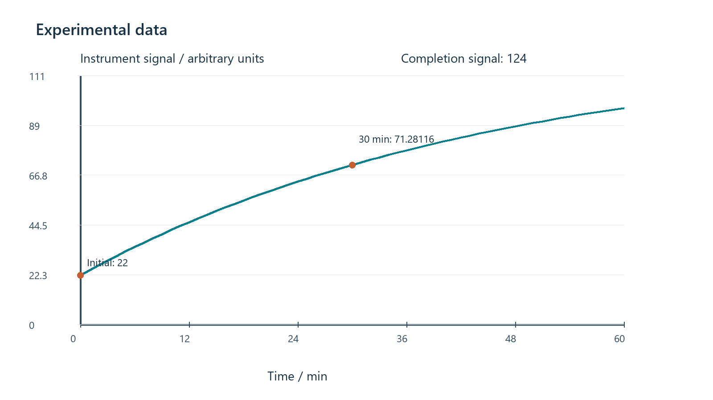
- A 104.66296 min
- B 165.63223 min
- C 280.83157 min
- D 481.17542 min
JEE-CHEM-0681 · Class XII · Easy
order of reaction
Which description best identifies order of reaction?
- A sum of concentration exponents in the rate law
- B a reaction whose rate is independent of reactant concentration
- C the proportionality constant in a rate law
- D number of reacting species in an elementary step
JEE-CHEM-0682 · Class XII · Easy
rate law
Which description best identifies rate law?
- A sum of concentration exponents in the rate law
- B the proportionality constant in a rate law
- C an experimentally determined relation between rate and reactant concentrations
- D a relation fixed only by the stoichiometric coefficients of the overall equation
JEE-CHEM-0683 · Class XII · Difficult
Arrhenius extrapolation
The Arrhenius plot gives two labelled rate constants. Assume a temperature-independent activation energy and prefactor from 300 to 360 K. What is k at 360 K in units of 10⁻³ s⁻¹? Use the labelled data. Choose the closest listed value.
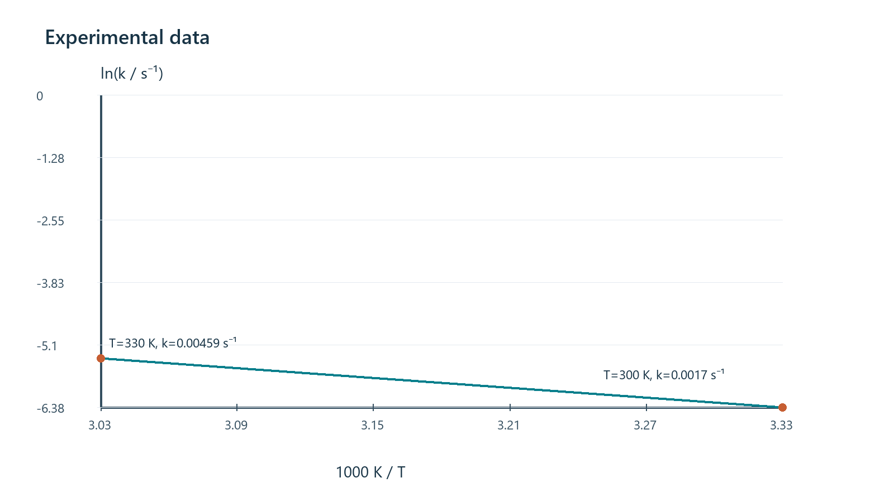
- A 5.8941904
- B 1.4013938
- C 10.502253
- D 3.5007511
JEE-CHEM-0684 · Class XII · Medium
Kinetic diagnosis and extrapolation
At t=0, 10 and 20 min, a reactant has concentrations 0.5, 0.25 and 0.125 M. The reaction follows either a single zero-order or a single first-order law over the interval and beyond. How long from t=0 until its concentration is 0.0625 M? Choose the closest listed value.
- A 70 min
- B 60 min
- C 40 min
- D 30 min
JEE-CHEM-0685 · Class XII · Difficult
First-order signal with baseline
The graph gives a signal linear in product amount for a first-order conversion, including a constant nonzero baseline. The completion reading is labelled separately. At what time after the start is conversion 90%? Choose the closest listed value.
- A 82.235182 min
- B 164.47036 min
- C 41.117591 min
- D 392.13581 min
JEE-CHEM-0686 · Class XII · Easy
rate constant
The statement ‘the proportionality constant in a rate law’ refers to
- A zero-order half-life
- B first-order reaction
- C rate constant
- D first-order half-life
JEE-CHEM-0687 · Class XII · Difficult
First-order gas pressure
The graph shows total pressure during first-order A(g)→B(g)+2C(g), starting with pure A. Volume and temperature are constant and gases ideal. What will the total pressure be at 42 min? Use the labelled observations. Choose the closest listed value.
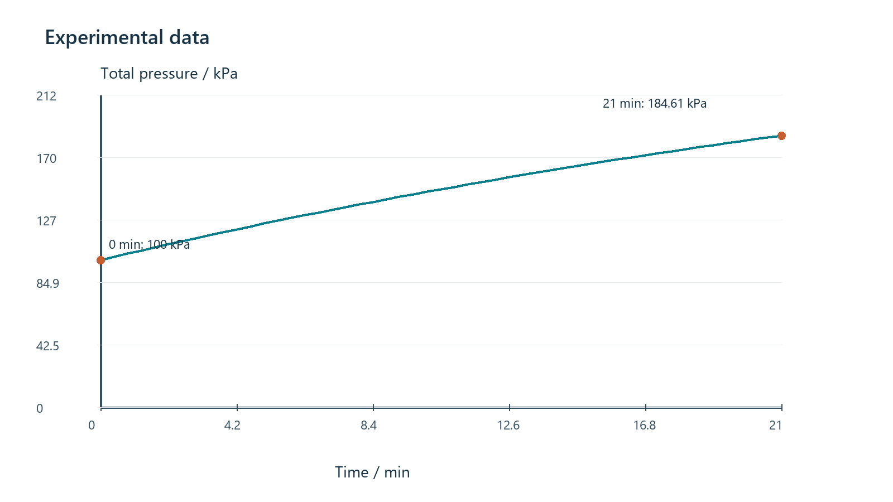
- A 184.61004 kPa
- B 148.08558 kPa
- C 116.71289 kPa
- D 233.42578 kPa
JEE-CHEM-0688 · Class XII · Difficult
First-order inverse data
The graph gives two labelled concentration observations for a first-order disappearance. No material is added or removed except by reaction. Infer the concentration at t=0. Use the labelled values for calculation. Choose the closest listed value.
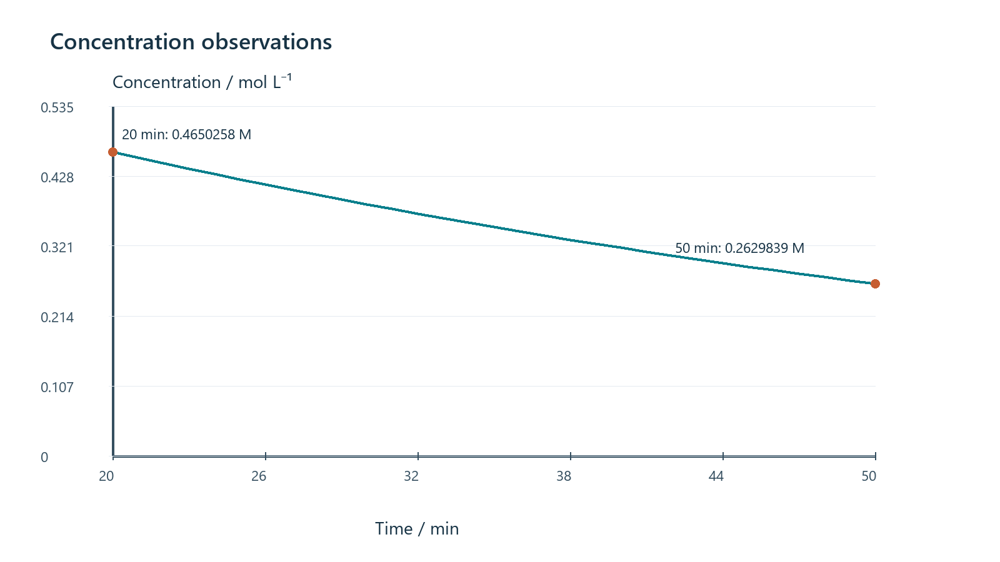
- A 4.5464082 mol L⁻¹
- B 0.68 mol L⁻¹
- C 2.1588654 mol L⁻¹
- D 2.04 mol L⁻¹
JEE-CHEM-0689 · Class XII · Difficult
Change in kinetic regime
A reactant starts at 0.5 M. For the first 20.0 min its disappearance is zero order, k₀=0.0035 M min⁻¹. At 20.0 min conditions change instantaneously so that disappearance becomes first order, k₁=0.015 min⁻¹. There is no instantaneous concentration jump. Find the concentration at 50.0 min. Choose the closest listed value.
- A 0.061637388 mol L⁻¹
- B 0.37010443 mol L⁻¹
- C 0.27418011 mol L⁻¹
- D 0.30393609 mol L⁻¹
JEE-CHEM-0690 · Class XII · Medium
Zero-order remaining half-life
A reaction obeys −d[A]/dt=k with k=0.003 mol L⁻¹ min⁻¹ and [A]₀=0.4 M. After 20.0 min, how much additional time is needed to halve the concentration present at that moment? Assume the zero-order regime persists. Choose the closest listed value.
- A 66.666667 min
- B 56.666667 min
- C 18.888889 min
- D 28.333333 min
JEE-CHEM-0691 · Class XII · Difficult
First-order inverse data
The graph gives two labelled concentration observations for a first-order disappearance. No material is added or removed except by reaction. Infer the concentration at t=0. Use the labelled values for calculation. Choose the closest listed value.
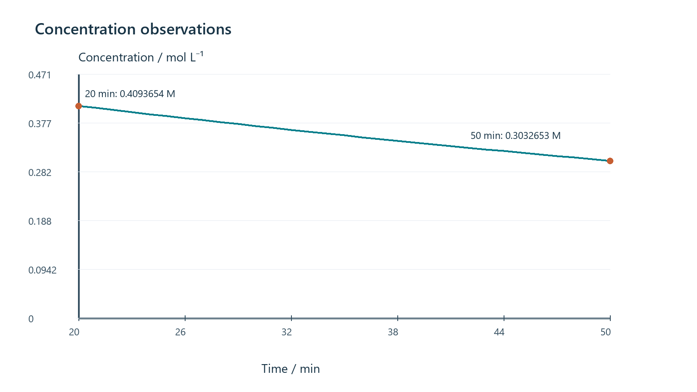
- A 0.15749013 mol L⁻¹
- B 0.44124845 mol L⁻¹
- C 0.25 mol L⁻¹
- D 0.5 mol L⁻¹
JEE-CHEM-0692 · Class XII · Difficult
Coupled initial-rate constraints
The rate law is r=k[A]^m[B]^n. Three experiments at one temperature give: (A,B,r)=(0.1,0.2,0.0015), (0.2,0.6,0.018), and (0.3,0.4,0.027), with concentrations in M and rates in M s⁻¹. The orders m and n are nonnegative integers no greater than two. What is m+2n? Choose the closest listed value.
- A 4
- B 6
- C 5
- D 2
JEE-CHEM-0693 · Class XII · Medium
Rate-law inference and combined change
At fixed temperature, doubling only [A] multiplies the initial rate by 2; tripling only [B] multiplies it by 3. The rate law is k[A]ᵐ[B]ⁿ. By what factor does rate change if [A] becomes 2 times and [B] becomes 3 times its original value? Choose the closest listed value.
- A 18
- B 6
- C 5
- D 12
JEE-CHEM-0694 · Class XII · Medium
Reverse activation barrier with catalyst
An elementary reaction has forward activation energy 60 kJ mol⁻¹ and ΔH=-20 kJ mol⁻¹. An idealised catalyst lowers the common transition-state energy by 10 kJ mol⁻¹ without changing reactant or product energies. What is the new reverse activation energy? Choose the closest listed value.
- A 35 kJ mol⁻¹
- B 140 kJ mol⁻¹
- C 70 kJ mol⁻¹
- D 50 kJ mol⁻¹
JEE-CHEM-0695 · Class XII · Difficult
Change in kinetic regime
A reactant starts at 0.4 M. For the first 20.0 min its disappearance is zero order, k₀=0.003 M min⁻¹. At 20.0 min conditions change instantaneously so that disappearance becomes first order, k₁=0.01 min⁻¹. There is no instantaneous concentration jump. Find the concentration at 50.0 min. Choose the closest listed value.
- A 0.16298001 mol L⁻¹
- B 0.1259391 mol L⁻¹
- C 0.18659596 mol L⁻¹
- D 0.2518782 mol L⁻¹
JEE-CHEM-0696 · Class XII · Difficult
Coupled initial-rate constraints
The rate law is r=k[A]^m[B]^n. Three experiments at one temperature give: (A,B,r)=(0.1,0.2,0.001), (0.2,0.6,0.006), and (0.3,0.4,0.006), with concentrations in M and rates in M s⁻¹. The orders m and n are nonnegative integers no greater than two. What is m+2n? Choose the closest listed value.
- A 3
- B 4
- C 6
- D 5
JEE-CHEM-0697 · Class XII · Difficult
First-order gas pressure
The graph shows total pressure during first-order A(g)→B(g)+2C(g), starting with pure A. Volume and temperature are constant and gases ideal. What will the total pressure be at 56 min? Use the labelled observations. Choose the closest listed value.
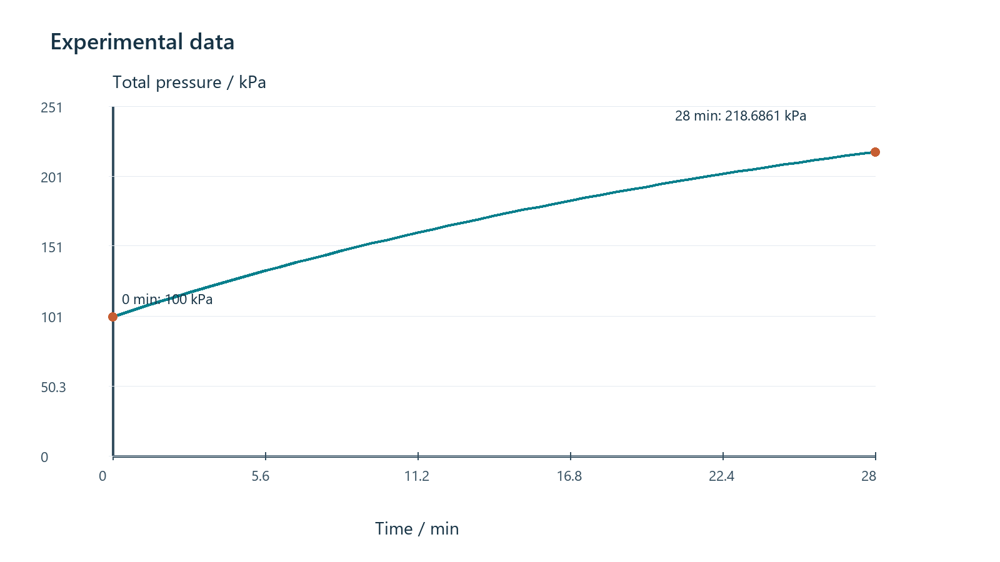
- A 286.5589 kPa
- B 172.47437 kPa
- C 266.94022 kPa
- D 218.68607 kPa
JEE-CHEM-0698 · Class XII · Easy
first-order reaction
Which description best identifies first-order reaction?
- A half-life equals ln 2 divided by k
- B k equals A exponential minus Ea over RT
- C a reaction whose rate is proportional to one reactant concentration
- D a higher-order reaction behaving first-order because another reactant is in large excess
JEE-CHEM-0699 · Class XII · Difficult
First-order gas pressure
The graph shows total pressure during first-order A(g)→B(g)+2C(g), starting with pure A. Volume and temperature are constant and gases ideal. What will the total pressure be at 58 min? Use the labelled observations. Choose the closest listed value.
- A 135.04314 kPa
- B 270.08628 kPa
- C 175.62299 kPa
- D 261.3259 kPa
JEE-CHEM-0700 · Class XII · Easy
units of first-order k
The statement ‘inverse time’ refers to
- A reaction rate
- B temperature coefficient
- C units of first-order k
- D threshold energy
JEE-CHEM-0701 · Class XII · Difficult
Change in kinetic regime
A reactant starts at 0.54 M. For the first 20.0 min its disappearance is zero order, k₀=0.0037 M min⁻¹. At 20.0 min conditions change instantaneously so that disappearance becomes first order, k₁=0.017 min⁻¹. There is no instantaneous concentration jump. Find the concentration at 50.0 min. Choose the closest listed value.
- A 0.30945539 mol L⁻¹
- B 0.063652531 mol L⁻¹
- C 0.55966188 mol L⁻¹
- D 0.27983094 mol L⁻¹
JEE-CHEM-0702 · Class XII · Difficult
Change in kinetic regime
A reactant starts at 0.44 M. For the first 20.0 min its disappearance is zero order, k₀=0.0032 M min⁻¹. At 20.0 min conditions change instantaneously so that disappearance becomes first order, k₁=0.012 min⁻¹. There is no instantaneous concentration jump. Find the concentration at 50.0 min. Choose the closest listed value.
- A 0.18301885 mol L⁻¹
- B 0.2623263 mol L⁻¹
- C 0.3140616 mol L⁻¹
- D 0.21767501 mol L⁻¹
JEE-CHEM-0703 · Class XII · Medium
Kinetic diagnosis and extrapolation
At t=0, 11 and 22 min, a reactant has concentrations 0.52, 0.26 and 0.13 M. The reaction follows either a single zero-order or a single first-order law over the interval and beyond. How long from t=0 until its concentration is 0.065 M? Choose the closest listed value.
- A 16.5 min
- B 19.25 min
- C 11 min
- D 33 min
JEE-CHEM-0704 · Class XII · Easy
rate-determining step
Which description best identifies rate-determining step?
- A inverse time
- B the slow step controlling the rate of a multistep mechanism
- C a concentration-time equation obtained by integrating the differential rate expression
- D concentration inverse times time inverse
JEE-CHEM-0705 · Class XII · Difficult
First-order signal with baseline
The graph gives a signal linear in product amount for a first-order conversion, including a constant nonzero baseline. The completion reading is labelled separately. At what time after the start is conversion 90%? Choose the closest listed value.
- A 4071.4982 min
- B 42.640465 min
- C 400.5633 min
- D 85.280929 min
JEE-CHEM-0706 · Class XII · Medium
Zero-order remaining half-life
A reaction obeys −d[A]/dt=k with k=0.0032 mol L⁻¹ min⁻¹ and [A]₀=0.42 M. After 20.0 min, how much additional time is needed to halve the concentration present at that moment? Assume the zero-order regime persists. Choose the closest listed value.
- A 111.25 min
- B 27.8125 min
- C 18.541667 min
- D 55.625 min
JEE-CHEM-0707 · Class XII · Medium
Temperature collision fraction
On heating a reaction mixture, the increase in rate is often much greater than the increase in collision frequency alone. Which pair explains this?
- A A larger fraction exceeds the activation barrier; suitable orientation still matters
- B Every collision becomes reactive; orientation never matters
- C Reactant molecules cease moving randomly
- D Activation energy must become exactly zero
JEE-CHEM-0708 · Class XII · Difficult
First-order inverse data
The graph gives two labelled concentration observations for a first-order disappearance. No material is added or removed except by reaction. Infer the concentration at t=0. Use the labelled values for calculation. Choose the closest listed value.
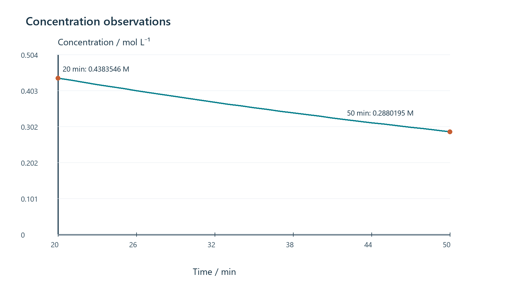
- A 2.352016 mol L⁻¹
- B 1.2064486 mol L⁻¹
- C 0.58 mol L⁻¹
- D 1.8413852 mol L⁻¹
JEE-CHEM-0709 · Class XII · Easy
zero-order half-life
Which description best identifies zero-order half-life?
- A half-life equals initial concentration divided by 2k
- B a higher-order reaction behaving first-order because another reactant is in large excess
- C half-life equals ln 2 divided by k
- D a reaction whose rate is proportional to one reactant concentration
JEE-CHEM-0710 · Class XII · Easy
rate constant
Which description best explains Rate constant?
- A a plot of ln k against reciprocal temperature has slope minus Ea over R
- B the proportionality constant in a rate law
- C only suitably energetic and oriented collisions are effective
- D a catalyst lowers it by providing another pathway
JEE-CHEM-0711 · Class XII · Difficult
Coupled initial-rate constraints
The rate law is r=k[A]^m[B]^n. Three experiments at one temperature give: (A,B,r)=(0.1,0.2,0.0016), (0.2,0.6,0.0288), and (0.3,0.4,0.0192), with concentrations in M and rates in M s⁻¹. The orders m and n are nonnegative integers no greater than two. What is m+2n? Choose the closest listed value.
- A 2
- B 0
- C 5
- D 1
JEE-CHEM-0712 · Class XII · Easy
instantaneous rate
Which description best explains Instantaneous rate?
- A it is independent of initial concentration
- B it depends on initial concentration
- C ln concentration decreases linearly with time
- D rate at a particular instant
JEE-CHEM-0713 · Class XII · Easy
first-order half-life
The statement ‘half-life equals ln 2 divided by k’ refers to
- A activation energy
- B Arrhenius equation
- C first-order half-life
- D collision frequency
JEE-CHEM-0714 · Class XII · Easy
collision frequency
Which description best identifies collision frequency?
- A a substance increasing rate without net consumption
- B number of molecular collisions per unit time
- C the fraction accounting for proper collision orientation
- D a catalyst in the same phase as reactants
JEE-CHEM-0715 · Class XII · Easy
molecularity
Which description best identifies molecularity?
- A the proportionality constant in a rate law
- B a reaction whose rate is independent of reactant concentration
- C number of reacting species in an elementary step
- D half-life equals initial concentration divided by 2k
JEE-CHEM-0716 · Class XII · Difficult
First-order inverse data
The graph gives two labelled concentration observations for a first-order disappearance. No material is added or removed except by reaction. Infer the concentration at t=0. Use the labelled values for calculation. Choose the closest listed value.
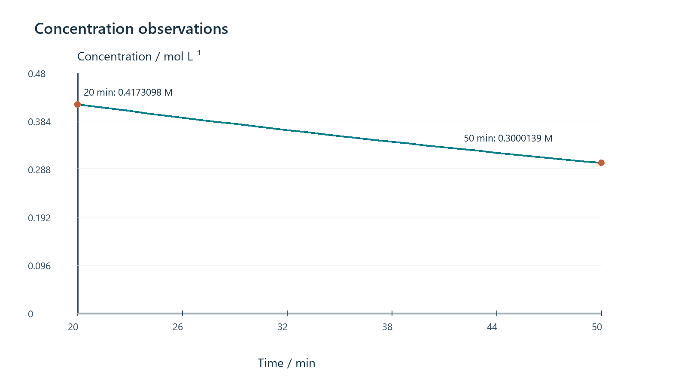
- A 0.52 mol L⁻¹
- B 0.82544855 mol L⁻¹
- C 1.0816436 mol L⁻¹
- D 1.5621663 mol L⁻¹
JEE-CHEM-0717 · Class XII · Medium
Pseudo-first-order conditions
Hydrolysis is intrinsically dependent on ester and water concentrations. Water is the solvent and is in very large excess. Which pair explains pseudo-first-order behaviour?
- A The reaction has zero molecularity
- B The ester concentration is exactly constant
- C Water concentration is approximately constant; it is absorbed into the observed rate constant
- D Water is chemically inert; it has no stoichiometric role
JEE-CHEM-0718 · Class XII · Difficult
First-order inverse data
The graph gives two labelled concentration observations for a first-order disappearance. No material is added or removed except by reaction. Infer the concentration at t=0. Use the labelled values for calculation. Choose the closest listed value.
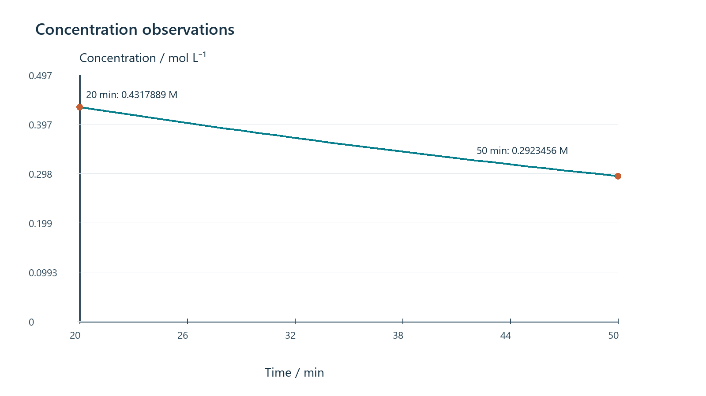
- A 0.17638895 mol L⁻¹
- B 0.041593204 mol L⁻¹
- C 1.7778892 mol L⁻¹
- D 0.56 mol L⁻¹
JEE-CHEM-0719 · Class XII · Difficult
Coupled initial-rate constraints
The rate law is r=k[A]^m[B]^n. Three experiments at one temperature give: (A,B,r)=(0.1,0.2,0.0014), (0.2,0.6,0.0084), and (0.3,0.4,0.0084), with concentrations in M and rates in M s⁻¹. The orders m and n are nonnegative integers no greater than two. What is m+2n? Choose the closest listed value.
- A 1
- B 3
- C 2
- D 0
JEE-CHEM-0720 · Class XII · Difficult
Arrhenius extrapolation
The Arrhenius plot gives two labelled rate constants. Assume a temperature-independent activation energy and prefactor from 300 to 360 K. What is k at 360 K in units of 10⁻³ s⁻¹? Use the labelled data. Choose the closest listed value.
- A 27.671054
- B 9.2236848
- C 32.869476
- D 69.123665
JEE-CHEM-0721 · Class XII · Medium
Rate-law inference and combined change
At fixed temperature, doubling only [A] multiplies the initial rate by 4; tripling only [B] multiplies it by 3. The rate law is k[A]ᵐ[B]ⁿ. By what factor does rate change if [A] becomes 3 times and [B] becomes 4 times its original value? Choose the closest listed value.
- A 36
- B 108
- C 144
- D 12
JEE-CHEM-0722 · Class XII · Difficult
First-order gas pressure
The graph shows total pressure during first-order A(g)→B(g)+2C(g), starting with pure A. Volume and temperature are constant and gases ideal. What will the total pressure be at 50 min? Use the labelled observations. Choose the closest listed value.
- A 278.92016 kPa
- B 162.54214 kPa
- C 205.52669 kPa
- D 255.37397 kPa
JEE-CHEM-0723 · Class XII · Medium
Reverse activation barrier with catalyst
An elementary reaction has forward activation energy 62 kJ mol⁻¹ and ΔH=-21 kJ mol⁻¹. An idealised catalyst lowers the common transition-state energy by 11 kJ mol⁻¹ without changing reactant or product energies. What is the new reverse activation energy? Choose the closest listed value.
- A 30 kJ mol⁻¹
- B 24 kJ mol⁻¹
- C 36 kJ mol⁻¹
- D 72 kJ mol⁻¹
JEE-CHEM-0724 · Class XII · Easy
zero-order reaction
Which description best identifies zero-order reaction?
- A a reaction whose rate is independent of reactant concentration
- B half-life equals ln 2 divided by k
- C half-life equals initial concentration divided by 2k
- D a reaction whose rate is proportional to one reactant concentration
JEE-CHEM-0725 · Class XII · Difficult
First-order inverse data
The graph gives two labelled concentration observations for a first-order disappearance. No material is added or removed except by reaction. Infer the concentration at t=0. Use the labelled values for calculation. Choose the closest listed value.
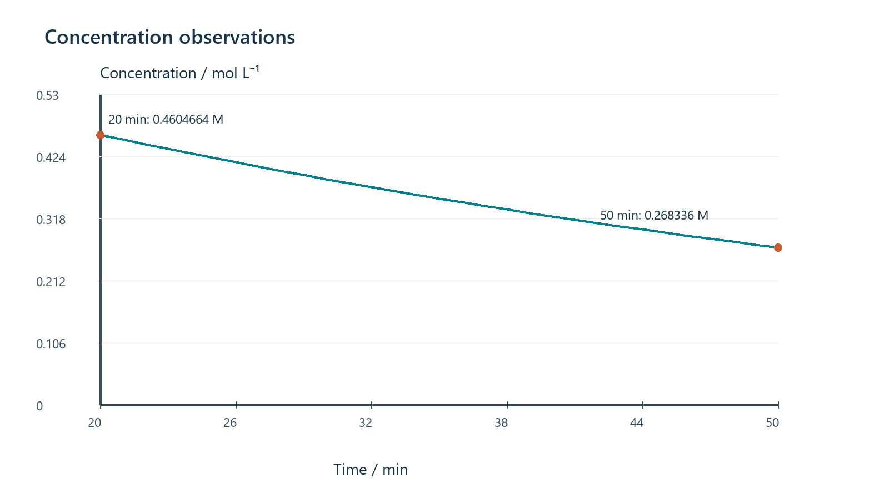
- A 1.0476847 mol L⁻¹
- B 1.32 mol L⁻¹
- C 0.66 mol L⁻¹
- D 0.22 mol L⁻¹
JEE-CHEM-0726 · Class XII · Medium
Kinetic diagnosis and extrapolation
At t=0, 12 and 24 min, a reactant has concentrations 0.54, 0.27 and 0.135 M. The reaction follows either a single zero-order or a single first-order law over the interval and beyond. How long from t=0 until its concentration is 0.0675 M? Choose the closest listed value.
- A 18 min
- B 12 min
- C 36 min
- D 48 min
JEE-CHEM-0727 · Class XII · Medium
First-order diagnostic
A concentration–time dataset obeys a single first-order law. Which pair is correct?
- A ln C versus t is linear; half-life is independent of C₀
- B C versus t is linear; half-life grows with C₀
- C 1/C versus t must be linear; half-life is zero
- D Rate is constant until complete exhaustion
JEE-CHEM-0728 · Class XII · Medium
Zero-order remaining half-life
A reaction obeys −d[A]/dt=k with k=0.0034 mol L⁻¹ min⁻¹ and [A]₀=0.44 M. After 20.0 min, how much additional time is needed to halve the concentration present at that moment? Assume the zero-order regime persists. Choose the closest listed value.
- A 164.11765 min
- B 109.41176 min
- C 54.705882 min
- D 74.705882 min
JEE-CHEM-0729 · Class XII · Difficult
Arrhenius extrapolation
The Arrhenius plot gives two labelled rate constants. Assume a temperature-independent activation energy and prefactor from 300 to 360 K. What is k at 360 K in units of 10⁻³ s⁻¹? Use the labelled data. Choose the closest listed value.
- A 11.886725
- B 89.080886
- C 5.9433627
- D 35.660176
JEE-CHEM-0730 · Class XII · Easy
first-order half-life
Which description best identifies first-order half-life?
- A k equals A exponential minus Ea over RT
- B the minimum energy barrier between reactants and activated complex
- C a higher-order reaction behaving first-order because another reactant is in large excess
- D half-life equals ln 2 divided by k
JEE-CHEM-0731 · Class XII · Medium
Rate-law inference and combined change
At fixed temperature, doubling only [A] multiplies the initial rate by 2; tripling only [B] multiplies it by 9. The rate law is k[A]ᵐ[B]ⁿ. By what factor does rate change if [A] becomes 4 times and [B] becomes 5 times its original value? Choose the closest listed value.
- A 9
- B 100
- C 50
- D 20
JEE-CHEM-0732 · Class XII · Medium
Reverse activation barrier with catalyst
An elementary reaction has forward activation energy 64 kJ mol⁻¹ and ΔH=-22 kJ mol⁻¹. An idealised catalyst lowers the common transition-state energy by 12 kJ mol⁻¹ without changing reactant or product energies. What is the new reverse activation energy? Choose the closest listed value.
- A 86 kJ mol⁻¹
- B 148 kJ mol⁻¹
- C 98 kJ mol⁻¹
- D 74 kJ mol⁻¹
JEE-CHEM-0733 · Class XII · Medium
Kinetic diagnosis and extrapolation
At t=0, 13 and 26 min, a reactant has concentrations 0.56, 0.28 and 0.14 M. The reaction follows either a single zero-order or a single first-order law over the interval and beyond. How long from t=0 until its concentration is 0.07 M? Choose the closest listed value.
- A 26 min
- B 39 min
- C 78 min
- D 52 min
JEE-CHEM-0734 · Class XII · Difficult
First-order gas pressure
The graph shows total pressure during first-order A(g)→B(g)+2C(g), starting with pure A. Volume and temperature are constant and gases ideal. What will the total pressure be at 46 min? Use the labelled observations. Choose the closest listed value.
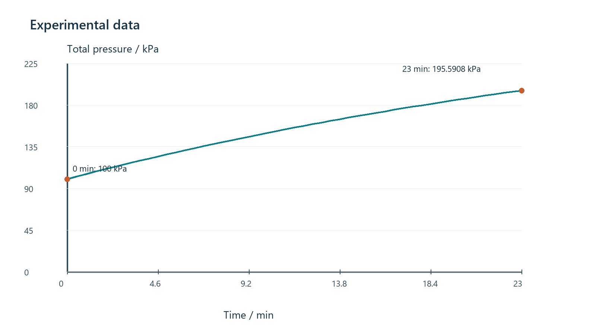
- A 155.49453 kPa
- B 195.59084 kPa
- C 245.49364 kPa
- D 291.18169 kPa
JEE-CHEM-0735 · Class XII · Difficult
Arrhenius extrapolation
The Arrhenius plot gives two labelled rate constants. Assume a temperature-independent activation energy and prefactor from 300 to 360 K. What is k at 360 K in units of 10⁻³ s⁻¹? Use the labelled data. Choose the closest listed value.
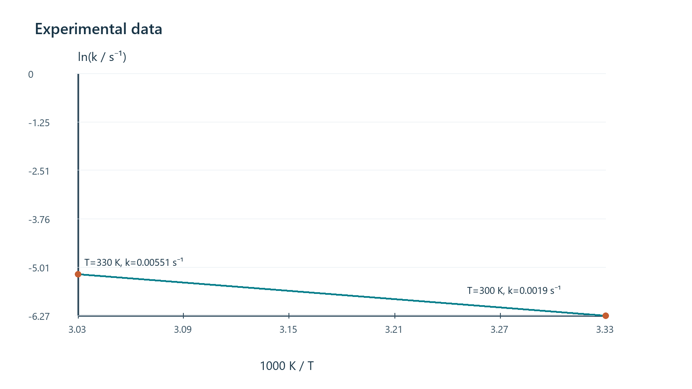
- A 4.4602788
- B 13.380836
- C 3.7548703
- D 7.5097406
JEE-CHEM-0736 · Class XII · Difficult
Arrhenius extrapolation
The Arrhenius plot gives two labelled rate constants. Assume a temperature-independent activation energy and prefactor from 300 to 360 K. What is k at 360 K in units of 10⁻³ s⁻¹? Use the labelled data. Choose the closest listed value.
- A 6.9691848
- B 52.228106
- C 24.835351
- D 17.409369
JEE-CHEM-0737 · Class XII · Difficult
First-order gas pressure
The graph shows total pressure during first-order A(g)→B(g)+2C(g), starting with pure A. Volume and temperature are constant and gases ideal. What will the total pressure be at 48 min? Use the labelled observations. Choose the closest listed value.
- A 200.68294 kPa
- B 159.06238 kPa
- C 275.50871 kPa
- D 250.68061 kPa
JEE-CHEM-0738 · Class XII · Medium
Zero-order remaining half-life
A reaction obeys −d[A]/dt=k with k=0.0036 mol L⁻¹ min⁻¹ and [A]₀=0.46 M. After 20.0 min, how much additional time is needed to halve the concentration present at that moment? Assume the zero-order regime persists. Choose the closest listed value.
- A 161.66667 min
- B 53.888889 min
- C 17.962963 min
- D 26.944444 min
JEE-CHEM-0739 · Class XII · Medium
Zero-order domain
For an idealised zero-order reaction, C=C₀−kt. Which pair is correct?
- A ln C versus t must be straight
- B Half-life never depends on C₀; negative concentrations are physical
- C Half-life depends on C₀; the linear law must stop or change before predicting negative concentration
- D k has units of inverse time only
JEE-CHEM-0740 · Class XII · Difficult
Change in kinetic regime
A reactant starts at 0.58 M. For the first 20.0 min its disappearance is zero order, k₀=0.0039 M min⁻¹. At 20.0 min conditions change instantaneously so that disappearance becomes first order, k₁=0.019 min⁻¹. There is no instantaneous concentration jump. Find the concentration at 50.0 min. Choose the closest listed value.
- A 0.56778754 mol L⁻¹
- B 0.28389377 mol L⁻¹
- C 0.41513349 mol L⁻¹
- D 0.31330109 mol L⁻¹
JEE-CHEM-0741 · Class XII · Difficult
First-order signal with baseline
The graph gives a signal linear in product amount for a first-order conversion, including a constant nonzero baseline. The completion reading is labelled separately. At what time after the start is conversion 90%? Choose the closest listed value.
- A 100.1124 min
- B 272.13324 min
- C 300.33719 min
- D 33.370798 min
JEE-CHEM-0742 · Class XII · Medium
Rate-law inference and combined change
At fixed temperature, doubling only [A] multiplies the initial rate by 4; tripling only [B] multiplies it by 9. The rate law is k[A]ᵐ[B]ⁿ. By what factor does rate change if [A] becomes 5 times and [B] becomes 3 times its original value? Choose the closest listed value.
- A 75
- B 15
- C 225
- D 450
JEE-CHEM-0743 · Class XII · Medium
Reverse activation barrier with catalyst
An elementary reaction has forward activation energy 66 kJ mol⁻¹ and ΔH=-23 kJ mol⁻¹. An idealised catalyst lowers the common transition-state energy by 13 kJ mol⁻¹ without changing reactant or product energies. What is the new reverse activation energy? Choose the closest listed value.
- A 38 kJ mol⁻¹
- B 76 kJ mol⁻¹
- C 53 kJ mol⁻¹
- D 30 kJ mol⁻¹
JEE-CHEM-0744 · Class XII · Difficult
Coupled initial-rate constraints
The rate law is r=k[A]^m[B]^n. Three experiments at one temperature give: (A,B,r)=(0.1,0.2,0.0012), (0.2,0.6,0.0216), and (0.3,0.4,0.0144), with concentrations in M and rates in M s⁻¹. The orders m and n are nonnegative integers no greater than two. What is m+2n? Choose the closest listed value.
- A 6
- B 5
- C 0
- D 1
JEE-CHEM-0745 · Class XII · Medium
Kinetic catalyst equilibrium
At a fixed temperature a catalyst is added to a reversible reaction. Which pair is correct?
- A Equilibrium is reached faster; the thermodynamic equilibrium constant is unchanged
- B K becomes one; ΔG° becomes zero
- C The equilibrium composition must favour products
- D Forward reaction alone accelerates; K increases
JEE-CHEM-0746 · Class XII · Easy
integrated rate law
The statement ‘a concentration-time equation obtained by integrating the differential rate expression’ refers to
- A units of second-order k
- B temperature coefficient
- C threshold energy
- D integrated rate law
JEE-CHEM-0747 · Class XII · Difficult
First-order signal with baseline
The graph gives a signal linear in product amount for a first-order conversion, including a constant nonzero baseline. The completion reading is labelled separately. At what time after the start is conversion 90%? Choose the closest listed value.
- A 47.970523 min
- B 95.941046 min
- C 80.034162 min
- D 83.306334 min
JEE-CHEM-0748 · Class XII · Difficult
First-order inverse data
The graph gives two labelled concentration observations for a first-order disappearance. No material is added or removed except by reaction. Infer the concentration at t=0. Use the labelled values for calculation. Choose the closest listed value.
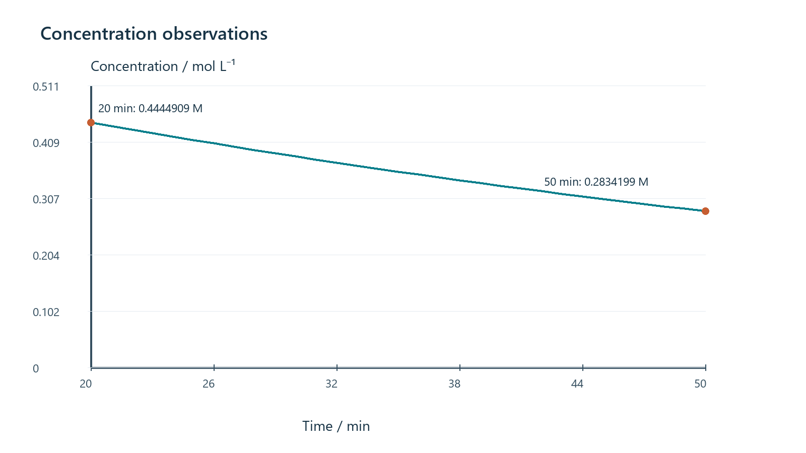
- A 1.2 mol L⁻¹
- B 0.6 mol L⁻¹
- C 1.8 mol L⁻¹
- D 1.9048813 mol L⁻¹
JEE-CHEM-0749 · Class XII · Medium
Kinetic diagnosis and extrapolation
At t=0, 14 and 28 min, a reactant has concentrations 0.58, 0.29 and 0.145 M. The reaction follows either a single zero-order or a single first-order law over the interval and beyond. How long from t=0 until its concentration is 0.0725 M? Choose the closest listed value.
- A 42 min
- B 24.5 min
- C 126 min
- D 84 min
JEE-CHEM-0750 · Class XII · Difficult
First-order gas pressure
The graph shows total pressure during first-order A(g)→B(g)+2C(g), starting with pure A. Volume and temperature are constant and gases ideal. What will the total pressure be at 54 min? Use the labelled observations. Choose the closest listed value.
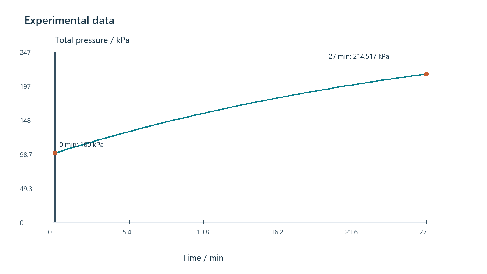
- A 131.73165 kPa
- B 257.25851 kPa
- C 284.38367 kPa
- D 263.4633 kPa
JEE-CHEM-0751 · Class XII · Difficult
Change in kinetic regime
A reactant starts at 0.56 M. For the first 20.0 min its disappearance is zero order, k₀=0.0038 M min⁻¹. At 20.0 min conditions change instantaneously so that disappearance becomes first order, k₁=0.018 min⁻¹. There is no instantaneous concentration jump. Find the concentration at 50.0 min. Choose the closest listed value.
- A 0.064490807 mol L⁻¹
- B 0.28205015 mol L⁻¹
- C 0.16436423 mol L⁻¹
- D 0.09578297 mol L⁻¹
JEE-CHEM-0752 · Class XII · Medium
Zero-order remaining half-life
A reaction obeys −d[A]/dt=k with k=0.0038 mol L⁻¹ min⁻¹ and [A]₀=0.48 M. After 20.0 min, how much additional time is needed to halve the concentration present at that moment? Assume the zero-order regime persists. Choose the closest listed value.
- A 63.157895 min
- B 73.157895 min
- C 53.157895 min
- D 106.31579 min
JEE-CHEM-0753 · Class XII · Difficult
First-order inverse data
The graph gives two labelled concentration observations for a first-order disappearance. No material is added or removed except by reaction. Infer the concentration at t=0. Use the labelled values for calculation. Choose the closest listed value.
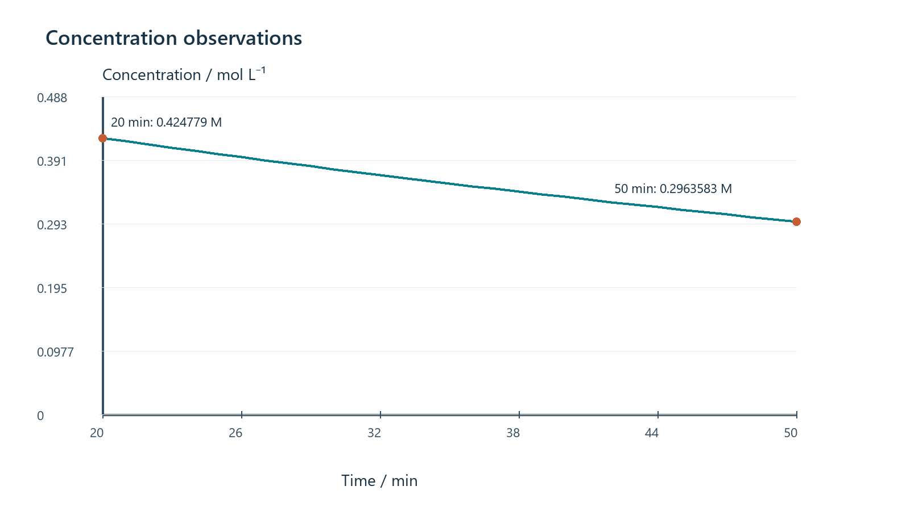
- A 0.25960492 mol L⁻¹
- B 0.54 mol L⁻¹
- C 0.85719657 mol L⁻¹
- D 1.62 mol L⁻¹
JEE-CHEM-0754 · Class XII · Easy
first-order reaction
Which description best explains First-order reaction?
- A acid catalysis in solution is an example
- B a reaction whose rate is proportional to one reactant concentration
- C it changes mechanism but not equilibrium constant
- D it helps relate collision frequency to reaction rate
JEE-CHEM-0755 · Class XII · Difficult
Coupled initial-rate constraints
The rate law is r=k[A]^m[B]^n. Three experiments at one temperature give: (A,B,r)=(0.1,0.2,0.0018), (0.2,0.6,0.0108), and (0.3,0.4,0.0108), with concentrations in M and rates in M s⁻¹. The orders m and n are nonnegative integers no greater than two. What is m+2n? Choose the closest listed value.
- A 3
- B 0
- C 1
- D 2
JEE-CHEM-0756 · Class XII · Difficult
Arrhenius extrapolation
The Arrhenius plot gives two labelled rate constants. Assume a temperature-independent activation energy and prefactor from 300 to 360 K. What is k at 360 K in units of 10⁻³ s⁻¹? Use the labelled data. Choose the closest listed value.
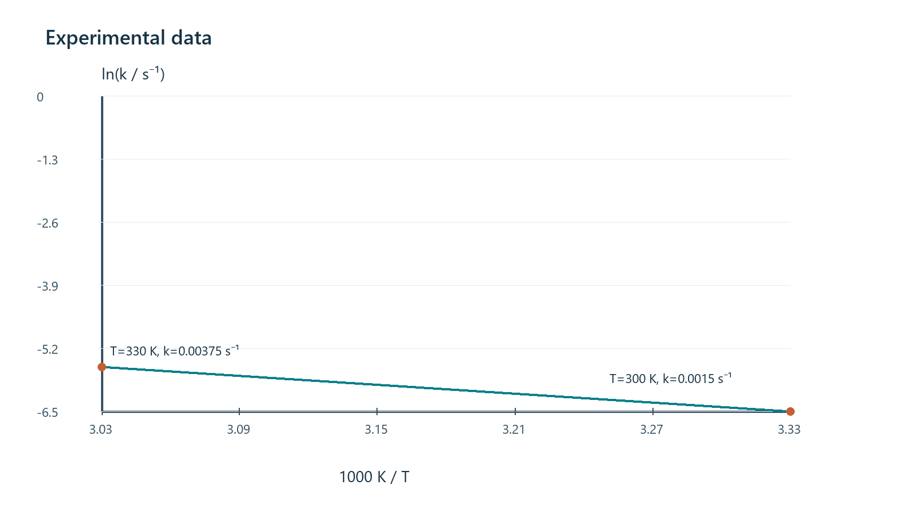
- A 20.10245
- B 16.094517
- C 60.30735
- D 8.0472583
JEE-CHEM-0757 · Class XII · Easy
activation energy
The statement ‘the minimum energy barrier between reactants and activated complex’ refers to
- A catalyst
- B steric factor
- C activation energy
- D homogeneous catalyst
JEE-CHEM-0758 · Class XII · Difficult
First-order signal with baseline
The graph gives a signal linear in product amount for a first-order conversion, including a constant nonzero baseline. The completion reading is labelled separately. At what time after the start is conversion 90%? Choose the closest listed value.
- A 69.432124 min
- B 79.399486 min
- C 403.072 min
- D 66.85249 min
JEE-CHEM-0759 · Class XII · Medium
Rate-law inference and combined change
At fixed temperature, doubling only [A] multiplies the initial rate by 2; tripling only [B] multiplies it by 3. The rate law is k[A]ᵐ[B]ⁿ. By what factor does rate change if [A] becomes 2 times and [B] becomes 4 times its original value? Choose the closest listed value.
- A 6
- B 8
- C 4
- D 2.6666667
JEE-CHEM-0760 · Class XII · Difficult
First-order gas pressure
The graph shows total pressure during first-order A(g)→B(g)+2C(g), starting with pure A. Volume and temperature are constant and gases ideal. What will the total pressure be at 40 min? Use the labelled observations. Choose the closest listed value.
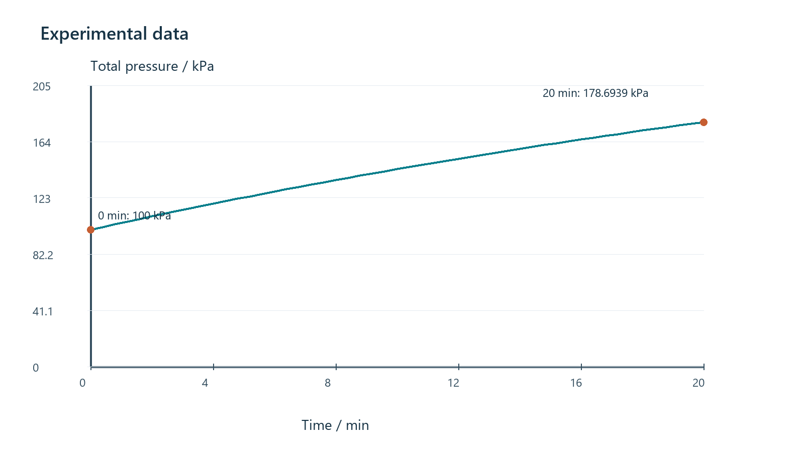
- A 257.38774 kPa
- B 239.34693 kPa
- C 226.42411 kPa
- D 255.37397 kPa
JEE-CHEM-0761 · Class XII · Difficult
Coupled initial-rate constraints
The rate law is r=k[A]^m[B]^n. Three experiments at one temperature give: (A,B,r)=(0.1,0.2,0.0011), (0.2,0.6,0.0132), and (0.3,0.4,0.0198), with concentrations in M and rates in M s⁻¹. The orders m and n are nonnegative integers no greater than two. What is m+2n? Choose the closest listed value.
- A 4
- B 5
- C 6
- D 0
JEE-CHEM-0762 · Class XII · Medium
Order versus molecularity
An observed overall reaction has fractional order. Which conclusion is justified?
- A Every overall stoichiometric coefficient equals an order
- B Molecularity must have the same fractional value
- C Order is empirical; molecularity of an elementary step remains a positive integer
- D The reaction cannot occur
JEE-CHEM-0763 · Class XII · Medium
Reverse activation barrier with catalyst
An elementary reaction has forward activation energy 68 kJ mol⁻¹ and ΔH=-24 kJ mol⁻¹. An idealised catalyst lowers the common transition-state energy by 14 kJ mol⁻¹ without changing reactant or product energies. What is the new reverse activation energy? Choose the closest listed value.
- A 26 kJ mol⁻¹
- B 39 kJ mol⁻¹
- C 78 kJ mol⁻¹
- D 54 kJ mol⁻¹
JEE-CHEM-0764 · Class XII · Medium
Kinetic diagnosis and extrapolation
At t=0, 15 and 30 min, a reactant has concentrations 0.6, 0.3 and 0.15 M. The reaction follows either a single zero-order or a single first-order law over the interval and beyond. How long from t=0 until its concentration is 0.075 M? Choose the closest listed value.
- A 45 min
- B 60 min
- C 135 min
- D 90 min
JEE-CHEM-0765 · Class XII · Medium
Zero-order remaining half-life
A reaction obeys −d[A]/dt=k with k=0.004 mol L⁻¹ min⁻¹ and [A]₀=0.5 M. After 20.0 min, how much additional time is needed to halve the concentration present at that moment? Assume the zero-order regime persists. Choose the closest listed value.
- A 17.5 min
- B 72.5 min
- C 157.5 min
- D 52.5 min
JEE-CHEM-0766 · Class XII · Easy
units of first-order k
Which description best identifies units of first-order k?
- A concentration inverse times time inverse
- B minimum collision energy needed for reaction
- C the factor by which rate changes for a stated temperature increase
- D inverse time
JEE-CHEM-0767 · Class XII · Difficult
Arrhenius extrapolation
The Arrhenius plot gives two labelled rate constants. Assume a temperature-independent activation energy and prefactor from 300 to 360 K. What is k at 360 K in units of 10⁻³ s⁻¹? Use the labelled data. Choose the closest listed value.
- A 5.0927946
- B 2.5463973
- C 2.0387084
- D 1.4291172
JEE-CHEM-0768 · Class XII · Medium
Rate-law inference and combined change
At fixed temperature, doubling only [A] multiplies the initial rate by 4; tripling only [B] multiplies it by 3. The rate law is k[A]ᵐ[B]ⁿ. By what factor does rate change if [A] becomes 3 times and [B] becomes 5 times its original value? Choose the closest listed value.
- A 45
- B 225
- C 135
- D 90
JEE-CHEM-0769 · Class XII · Easy
threshold energy
Which description best identifies threshold energy?
- A rate at a particular instant
- B change in concentration per unit time with stoichiometric normalization
- C minimum collision energy needed for reaction
- D concentration change over a finite time interval
JEE-CHEM-0770 · Class XII · Medium
Reverse activation barrier with catalyst
An elementary reaction has forward activation energy 70 kJ mol⁻¹ and ΔH=-25 kJ mol⁻¹. An idealised catalyst lowers the common transition-state energy by 10 kJ mol⁻¹ without changing reactant or product energies. What is the new reverse activation energy? Choose the closest listed value.
- A 105 kJ mol⁻¹
- B 42.5 kJ mol⁻¹
- C 85 kJ mol⁻¹
- D 35 kJ mol⁻¹
JEE-CHEM-0771 · Class XII · Difficult
First-order signal with baseline
The graph gives a signal linear in product amount for a first-order conversion, including a constant nonzero baseline. The completion reading is labelled separately. At what time after the start is conversion 90%? Choose the closest listed value.
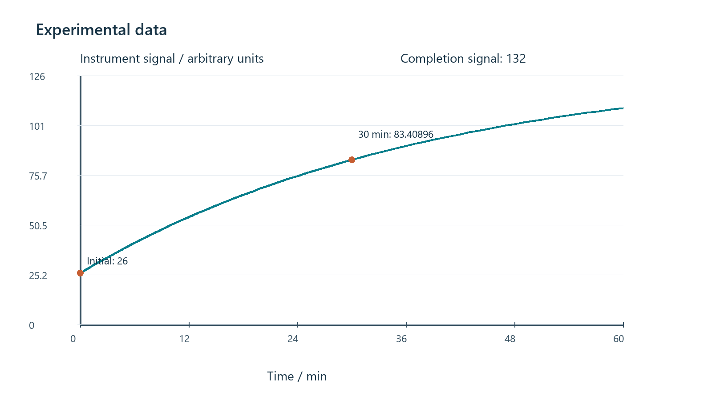
- A 88.560965 min
- B 77.122648 min
- C 44.280483 min
- D 74.161181 min
JEE-CHEM-0772 · Class XII · Difficult
Coupled initial-rate constraints
The rate law is r=k[A]^m[B]^n. Three experiments at one temperature give: (A,B,r)=(0.1,0.2,0.0019), (0.2,0.6,0.0228), and (0.3,0.4,0.0342), with concentrations in M and rates in M s⁻¹. The orders m and n are nonnegative integers no greater than two. What is m+2n? Choose the closest listed value.
- A 1
- B 4
- C 6
- D 5
JEE-CHEM-0773 · Class XII · Medium
Kinetic diagnosis and extrapolation
At t=0, 16 and 32 min, a reactant has concentrations 0.62, 0.31 and 0.155 M. The reaction follows either a single zero-order or a single first-order law over the interval and beyond. How long from t=0 until its concentration is 0.0775 M? Choose the closest listed value.
- A 144 min
- B 32 min
- C 64 min
- D 48 min
JEE-CHEM-0774 · Class XII · Medium
Zero-order remaining half-life
A reaction obeys −d[A]/dt=k with k=0.0042 mol L⁻¹ min⁻¹ and [A]₀=0.52 M. After 20.0 min, how much additional time is needed to halve the concentration present at that moment? Assume the zero-order regime persists. Choose the closest listed value.
- A 25.952381 min
- B 17.301587 min
- C 103.80952 min
- D 51.904762 min
JEE-CHEM-0775 · Class XII · Difficult
Change in kinetic regime
A reactant starts at 0.52 M. For the first 20.0 min its disappearance is zero order, k₀=0.0036 M min⁻¹. At 20.0 min conditions change instantaneously so that disappearance becomes first order, k₁=0.016 min⁻¹. There is no instantaneous concentration jump. Find the concentration at 50.0 min. Choose the closest listed value.
- A 0.23266256 mol L⁻¹
- B 0.18811015 mol L⁻¹
- C 0.27721496 mol L⁻¹
- D 0.17153601 mol L⁻¹
JEE-CHEM-0776 · Class XII · Easy
pseudo-first-order reaction
Which description best explains Pseudo-first-order reaction?
- A a higher-order reaction behaving first-order because another reactant is in large excess
- B adsorption at active sites is important
- C acid catalysis in solution is an example
- D a zero-order reaction behaving as second order when one reactant is diluted
JEE-CHEM-0777 · Class XII · Difficult
First-order inverse data
The graph gives two labelled concentration observations for a first-order disappearance. No material is added or removed except by reaction. Infer the concentration at t=0. Use the labelled values for calculation. Choose the closest listed value.
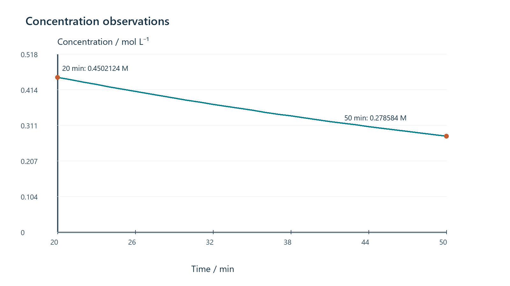
- A 1.9683773 mol L⁻¹
- B 1.289652 mol L⁻¹
- C 0.31 mol L⁻¹
- D 0.62 mol L⁻¹
JEE-CHEM-0778 · Class XII · Medium
Rate-law inference and combined change
At fixed temperature, doubling only [A] multiplies the initial rate by 2; tripling only [B] multiplies it by 9. The rate law is k[A]ᵐ[B]ⁿ. By what factor does rate change if [A] becomes 4 times and [B] becomes 3 times its original value? Choose the closest listed value.
- A 18
- B 7
- C 108
- D 36
JEE-CHEM-0779 · Class XII · Easy
Arrhenius equation
The statement ‘k equals A exponential minus Ea over RT’ refers to
- A collision frequency
- B steric factor
- C Arrhenius equation
- D catalyst
JEE-CHEM-0780 · Class XII · Easy
integrated rate law
Which description best explains Integrated rate law?
- A it corresponds to the tangent slope
- B it corresponds to a secant slope on a concentration-time graph
- C its exponents need not equal equation coefficients
- D a concentration-time equation obtained by integrating the differential rate expression
JEE-CHEM-0781 · Class XII · Difficult
Coupled initial-rate constraints
The rate law is r=k[A]^m[B]^n. Three experiments at one temperature give: (A,B,r)=(0.1,0.2,0.0017), (0.2,0.6,0.0612), and (0.3,0.4,0.0612), with concentrations in M and rates in M s⁻¹. The orders m and n are nonnegative integers no greater than two. What is m+2n? Choose the closest listed value.
- A 0
- B 6
- C 2
- D 4
JEE-CHEM-0782 · Class XII · Medium
Reverse activation barrier with catalyst
An elementary reaction has forward activation energy 72 kJ mol⁻¹ and ΔH=-26 kJ mol⁻¹. An idealised catalyst lowers the common transition-state energy by 11 kJ mol⁻¹ without changing reactant or product energies. What is the new reverse activation energy? Choose the closest listed value.
- A 29 kJ mol⁻¹
- B 98 kJ mol⁻¹
- C 35 kJ mol⁻¹
- D 87 kJ mol⁻¹
JEE-CHEM-0783 · Class XII · Medium
Kinetic diagnosis and extrapolation
At t=0, 17 and 34 min, a reactant has concentrations 0.64, 0.32 and 0.16 M. The reaction follows either a single zero-order or a single first-order law over the interval and beyond. How long from t=0 until its concentration is 0.08 M? Choose the closest listed value.
- A 25.5 min
- B 34 min
- C 29.75 min
- D 51 min
JEE-CHEM-0784 · Class XII · Difficult
First-order signal with baseline
The graph gives a signal linear in product amount for a first-order conversion, including a constant nonzero baseline. The completion reading is labelled separately. At what time after the start is conversion 90%? Choose the closest listed value.
- A 4013.7951 min
- B 345.38776 min
- C 115.12925 min
- D 183.29938 min
JEE-CHEM-0785 · Class XII · Difficult
First-order signal with baseline
The graph gives a signal linear in product amount for a first-order conversion, including a constant nonzero baseline. The completion reading is labelled separately. At what time after the start is conversion 90%? Choose the closest listed value.
- A 92.103404 min
- B 30.701135 min
- C 184.20681 min
- D 3993.7576 min
JEE-CHEM-0786 · Class XII · Medium
Zero-order remaining half-life
A reaction obeys −d[A]/dt=k with k=0.0044 mol L⁻¹ min⁻¹ and [A]₀=0.54 M. After 20.0 min, how much additional time is needed to halve the concentration present at that moment? Assume the zero-order regime persists. Choose the closest listed value.
- A 17.121212 min
- B 51.363636 min
- C 25.681818 min
- D 102.72727 min
JEE-CHEM-0787 · Class XII · Difficult
First-order gas pressure
The graph shows total pressure during first-order A(g)→B(g)+2C(g), starting with pure A. Volume and temperature are constant and gases ideal. What will the total pressure be at 44 min? Use the labelled observations. Choose the closest listed value.
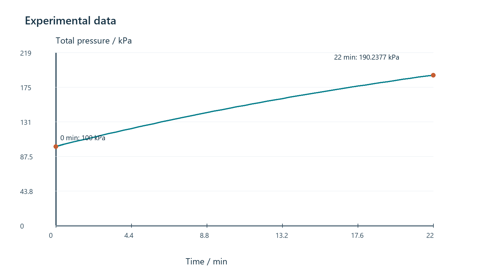
- A 239.76116 kPa
- B 119.88058 kPa
- C 151.83636 kPa
- D 190.23767 kPa
JEE-CHEM-0788 · Class XII · Medium
Rate-law inference and combined change
At fixed temperature, doubling only [A] multiplies the initial rate by 4; tripling only [B] multiplies it by 9. The rate law is k[A]ᵐ[B]ⁿ. By what factor does rate change if [A] becomes 5 times and [B] becomes 4 times its original value? Choose the closest listed value.
- A 400
- B 800
- C 2000
- D 1600
JEE-CHEM-0789 · Class XII · Difficult
Change in kinetic regime
A reactant starts at 0.42 M. For the first 20.0 min its disappearance is zero order, k₀=0.0031 M min⁻¹. At 20.0 min conditions change instantaneously so that disappearance becomes first order, k₁=0.011 min⁻¹. There is no instantaneous concentration jump. Find the concentration at 50.0 min. Choose the closest listed value.
- A 0.86127063 mol L⁻¹
- B 0.21280143 mol L⁻¹
- C 0.2573747 mol L⁻¹
- D 0.51474939 mol L⁻¹
JEE-CHEM-0790 · Class XII · Easy
order of reaction
Which description best explains Order of reaction?
- A the excess reactant concentration is effectively constant
- B it is independent of initial concentration
- C a plot of ln k against reciprocal temperature has slope minus Ea over R
- D sum of concentration exponents in the rate law
JEE-CHEM-0791 · Class XII · Difficult
Coupled initial-rate constraints
The rate law is r=k[A]^m[B]^n. Three experiments at one temperature give: (A,B,r)=(0.1,0.2,0.0013), (0.2,0.6,0.0468), and (0.3,0.4,0.0468), with concentrations in M and rates in M s⁻¹. The orders m and n are nonnegative integers no greater than two. What is m+2n? Choose the closest listed value.
- A 2
- B 4
- C 6
- D 3
JEE-CHEM-0792 · Class XII · Medium
Reverse activation barrier with catalyst
An elementary reaction has forward activation energy 74 kJ mol⁻¹ and ΔH=-27 kJ mol⁻¹. An idealised catalyst lowers the common transition-state energy by 12 kJ mol⁻¹ without changing reactant or product energies. What is the new reverse activation energy? Choose the closest listed value.
- A 101 kJ mol⁻¹
- B 113 kJ mol⁻¹
- C 89 kJ mol⁻¹
- D 178 kJ mol⁻¹
JEE-CHEM-0793 · Class XII · Easy
heterogeneous catalyst
The statement ‘a catalyst in a different phase from reactants’ refers to
- A heterogeneous catalyst
- B units of second-order k
- C units of first-order k
- D integrated rate law
JEE-CHEM-0794 · Class XII · Difficult
Arrhenius extrapolation
The Arrhenius plot gives two labelled rate constants. Assume a temperature-independent activation energy and prefactor from 300 to 360 K. What is k at 360 K in units of 10⁻³ s⁻¹? Use the labelled data. Choose the closest listed value.
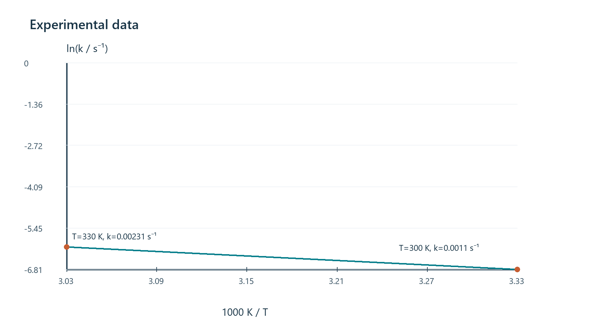
- A 0.57201281
- B 2.1433745
- C 12.860247
- D 4.286749
JEE-CHEM-0795 · Class XII · Difficult
Change in kinetic regime
A reactant starts at 0.46 M. For the first 20.0 min its disappearance is zero order, k₀=0.0033 M min⁻¹. At 20.0 min conditions change instantaneously so that disappearance becomes first order, k₁=0.013 min⁻¹. There is no instantaneous concentration jump. Find the concentration at 50.0 min. Choose the closest listed value.
- A 0.11103733 mol L⁻¹
- B 0.088920136 mol L⁻¹
- C 0.12228457 mol L⁻¹
- D 0.26676041 mol L⁻¹
JEE-CHEM-0796 · Class XII · Easy
zero-order reaction
The statement ‘a reaction whose rate is independent of reactant concentration’ refers to
- A first-order reaction
- B zero-order reaction
- C pseudo-first-order reaction
- D first-order half-life
JEE-CHEM-0797 · Class XII · Difficult
Arrhenius extrapolation
The Arrhenius plot gives two labelled rate constants. Assume a temperature-independent activation energy and prefactor from 300 to 360 K. What is k at 360 K in units of 10⁻³ s⁻¹? Use the labelled data. Choose the closest listed value.
- A 3.5635949
- B 12.699208
- C 1.187865
- D 7.1271897
JEE-CHEM-0798 · Class XII · Difficult
First-order signal with baseline
The graph gives a signal linear in product amount for a first-order conversion, including a constant nonzero baseline. The completion reading is labelled separately. At what time after the start is conversion 90%? Choose the closest listed value.
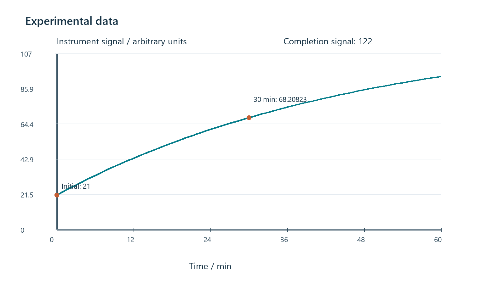
- A 90.914053 min
- B 328.94073 min
- C 109.64691 min
- D 54.823455 min
JEE-CHEM-0799 · Class XII · Medium
Kinetic diagnosis and extrapolation
At t=0, 18 and 36 min, a reactant has concentrations 0.66, 0.33 and 0.165 M. The reaction follows either a single zero-order or a single first-order law over the interval and beyond. How long from t=0 until its concentration is 0.0825 M? Choose the closest listed value.
- A 36 min
- B 54 min
- C 31.5 min
- D 18 min
JEE-CHEM-0800 · Class XII · Medium
Zero-order remaining half-life
A reaction obeys −d[A]/dt=k with k=0.0046 mol L⁻¹ min⁻¹ and [A]₀=0.56 M. After 20.0 min, how much additional time is needed to halve the concentration present at that moment? Assume the zero-order regime persists. Choose the closest listed value.
- A 70.869565 min
- B 101.73913 min
- C 152.6087 min
- D 50.869565 min
JEE-CHEM-0801 · Class XII · Easy
zero-order half-life
The statement ‘half-life equals initial concentration divided by 2k’ refers to
- A first-order half-life
- B zero-order half-life
- C Arrhenius equation
- D pseudo-first-order reaction
JEE-CHEM-0802 · Class XII · Medium
Rate-law inference and combined change
At fixed temperature, doubling only [A] multiplies the initial rate by 2; tripling only [B] multiplies it by 3. The rate law is k[A]ᵐ[B]ⁿ. By what factor does rate change if [A] becomes 2 times and [B] becomes 5 times its original value? Choose the closest listed value.
- A 50
- B 10
- C 7
- D 5
JEE-CHEM-0803 · Class XII · Easy
Arrhenius equation
Which description best identifies Arrhenius equation?
- A k equals A exponential minus Ea over RT
- B the fraction accounting for proper collision orientation
- C the minimum energy barrier between reactants and activated complex
- D number of molecular collisions per unit time
JEE-CHEM-0804 · Class XII · Easy
steric factor
The statement ‘the fraction accounting for proper collision orientation’ refers to
- A steric factor
- B heterogeneous catalyst
- C rate-determining step
- D homogeneous catalyst
JEE-CHEM-0805 · Class XII · Medium
Reverse activation barrier with catalyst
An elementary reaction has forward activation energy 76 kJ mol⁻¹ and ΔH=-28 kJ mol⁻¹. An idealised catalyst lowers the common transition-state energy by 13 kJ mol⁻¹ without changing reactant or product energies. What is the new reverse activation energy? Choose the closest listed value.
- A 182 kJ mol⁻¹
- B 91 kJ mol⁻¹
- C 45.5 kJ mol⁻¹
- D 104 kJ mol⁻¹
JEE-CHEM-0806 · Class XII · Medium
Kinetic diagnosis and extrapolation
At t=0, 19 and 38 min, a reactant has concentrations 0.68, 0.34 and 0.17 M. The reaction follows either a single zero-order or a single first-order law over the interval and beyond. How long from t=0 until its concentration is 0.085 M? Choose the closest listed value.
- A 28.5 min
- B 171 min
- C 57 min
- D 33.25 min
JEE-CHEM-0807 · Class XII · Easy
catalyst
The statement ‘a substance increasing rate without net consumption’ refers to
- A catalyst
- B integrated rate law
- C heterogeneous catalyst
- D rate-determining step
JEE-CHEM-0808 · Class XII · Difficult
Change in kinetic regime
A reactant starts at 0.48 M. For the first 20.0 min its disappearance is zero order, k₀=0.0034 M min⁻¹. At 20.0 min conditions change instantaneously so that disappearance becomes first order, k₁=0.014 min⁻¹. There is no instantaneous concentration jump. Find the concentration at 50.0 min. Choose the closest listed value.
- A 0.27070329 mol L⁻¹
- B 0.54140658 mol L⁻¹
- C 0.58608576 mol L⁻¹
- D 0.30048941 mol L⁻¹
JEE-CHEM-0809 · Class XII · Difficult
Arrhenius extrapolation
The Arrhenius plot gives two labelled rate constants. Assume a temperature-independent activation energy and prefactor from 300 to 360 K. What is k at 360 K in units of 10⁻³ s⁻¹? Use the labelled data. Choose the closest listed value.
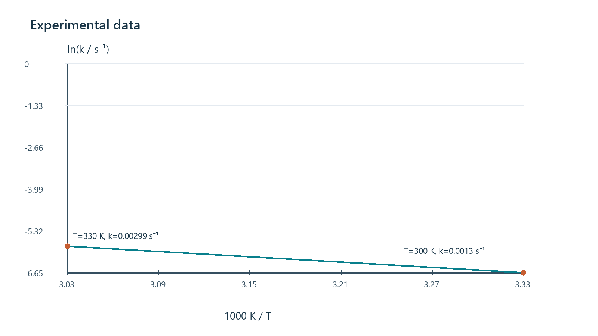
- A 2.9928232
- B 17.956939
- C 21.330419
- D 5.9856463
JEE-CHEM-0810 · Class XII · Medium
Zero-order remaining half-life
A reaction obeys −d[A]/dt=k with k=0.0048 mol L⁻¹ min⁻¹ and [A]₀=0.58 M. After 20.0 min, how much additional time is needed to halve the concentration present at that moment? Assume the zero-order regime persists. Choose the closest listed value.
- A 50.416667 min
- B 16.805556 min
- C 100.83333 min
- D 25.208333 min
JEE-CHEM-0811 · Class XI · Easy
hydration enthalpy
Which description best identifies hydration enthalpy?
- A ionization enthalpy generally decreases down Groups 1 and 2
- B energy released when gaseous ions become hydrated
- C reactivity generally increases down Group 1
- D solubility generally increases down the group
JEE-CHEM-0812 · Class XI · Medium
Atomic identity and ionic particles
A specified isotope of Na⁺ has mass number 21; its element has atomic number 11. Find the ratio (number of neutrons)/(number of electrons) for this ion. No isotope-stability claim is intended. Choose the closest listed value.
- A 2
- B 1
- C 2.1
- D 3
JEE-CHEM-0813 · Class XI · Medium
Configuration to periodic position
A neutral main-group atom has 11 electrons in its ground state. If its period is P and its IUPAC group number is G, find 10P+G. Choose the closest listed value.
- A 13
- B 62
- C 31
- D 93
JEE-CHEM-0814 · Class XI · Easy
ionization enthalpy trend
Which description best identifies ionization enthalpy trend?
- A ionization enthalpy generally decreases down Groups 1 and 2
- B reactivity generally increases down Group 1
- C solubility generally increases down the group
- D solubility generally decreases down the group
JEE-CHEM-0815 · Class XI · Medium
Isoelectronic size comparison
The ions N³⁻, O²⁻, F⁻, Na⁺ each contain 10 electrons. Their nuclear charges Z are respectively 7, 8, 9, 11. What is Z of the ion with the largest radius? Choose the closest listed value.
- A 3.5
- B 14
- C 7
- D 2.3333333
JEE-CHEM-0816 · Class XI · Easy
trend explanation
The best explanation for the observation that IE₁(Be) is greater than IE₁(B) is:
- A nuclear charge has no role in periodic properties
- B all orbitals in a shell have identical penetration
- C the number of occupied shells always decreases down a group
- D the electron removed from B is a higher-energy 2p electron
JEE-CHEM-0817 · Class XI · Medium
Ionisation discontinuity and oxide formation
A hypothetical main-group metal M has successive ionisation enthalpies 500, 8100, 9500, 10700 kJ mol⁻¹. Use the large discontinuity to infer its usual ionic charge. What mass of oxygen combines with 0.02 mol M in its simplest oxide containing O²⁻? O=16. Choose the closest listed value.
- A 0.053333333 g
- B 0.32 g
- C 0.48 g
- D 0.16 g
JEE-CHEM-0818 · Class XI · Medium
Fajans polarising-power application
For the same anion, compare cations Li⁺ and Na⁺, of equal charge and radii 0.76 and 1.02 Å respectively. In the simplified polarising-power model proportional to charge/radius², calculate power(Li⁺)/power(Na⁺). The larger ratio indicates which salt tends toward greater covalent character, other factors equal. Choose the closest listed value.
- A 5.4037396
- B 0.90062327
- C 1.8012465
- D 1.3421053
JEE-CHEM-0819 · Class XI · Easy
alkali-metal reactivity
The statement ‘reactivity generally increases down Group 1’ refers to
- A peroxide
- B thermal stability of Group 2 carbonates
- C solubility of Group 2 sulfates
- D alkali-metal reactivity
JEE-CHEM-0820 · Class XI · Easy
period assignment
The element Sc belongs to which period?
- A 2
- B 4
- C 3
- D 1
JEE-CHEM-0821 · Class XI · Medium
Atomic identity and ionic particles
A specified isotope of Mg²⁺ has mass number 23; its element has atomic number 12. Find the ratio (number of neutrons)/(number of electrons) for this ion. No isotope-stability claim is intended. Choose the closest listed value.
- A 3.3
- B 1.1
- C 0.55
- D 2.2
JEE-CHEM-0822 · Class XI · Easy
order comparison
Which is the correct decreasing order of atomic radius among Na, Mg, Al?
- A Mg > Al > Na
- B Mg > Na > Al
- C Na > Al > Mg
- D Na > Mg > Al
JEE-CHEM-0823 · Class XI · Medium
Configuration to periodic position
A neutral main-group atom has 12 electrons in its ground state. If its period is P and its IUPAC group number is G, find 10P+G. Choose the closest listed value.
- A 16
- B 22
- C 10.666667
- D 32
JEE-CHEM-0824 · Class XI · Easy
period assignment
The element Ne belongs to which period?
- A 2
- B 1
- C 3
- D 4
JEE-CHEM-0825 · Class XI · Medium
Isoelectronic size comparison
The ions O²⁻, F⁻, Na⁺, Mg²⁺ each contain 10 electrons. Their nuclear charges Z are respectively 8, 9, 11, 12. What is Z of the ion with the largest radius? Choose the closest listed value.
- A 11
- B 4
- C 16
- D 8
JEE-CHEM-0826 · Class XI · Medium
Ionisation discontinuity and oxide formation
A hypothetical main-group metal M has successive ionisation enthalpies 500, 1600, 9500, 10700 kJ mol⁻¹. Use the large discontinuity to infer its usual ionic charge. What mass of oxygen combines with 0.021 mol M in its simplest oxide containing O²⁻? O=16. Choose the closest listed value.
- A 0.112 g
- B 0.168 g
- C 0.672 g
- D 0.336 g
JEE-CHEM-0827 · Class XI · Medium
Fajans polarising-power application
For the same anion, compare cations Na⁺ and K⁺, of equal charge and radii 1.02 and 1.38 Å respectively. In the simplified polarising-power model proportional to charge/radius², calculate power(Na⁺)/power(K⁺). The larger ratio indicates which salt tends toward greater covalent character, other factors equal. Choose the closest listed value.
- A 1.3529412
- B 1.8304498
- C 0.61014994
- D 0.73913043
JEE-CHEM-0828 · Class XI · Medium
Atomic identity and ionic particles
A specified isotope of Al³⁺ has mass number 25; its element has atomic number 13. Find the ratio (number of neutrons)/(number of electrons) for this ion. No isotope-stability claim is intended. Choose the closest listed value.
- A 2.4
- B 3.6
- C 1.2
- D 2.5
JEE-CHEM-0829 · Class XI · Medium
Configuration to periodic position
A neutral main-group atom has 13 electrons in its ground state. If its period is P and its IUPAC group number is G, find 10P+G. Choose the closest listed value.
- A 21.5
- B 129
- C 86
- D 43
JEE-CHEM-0830 · Class XI · Medium
Isoelectronic size comparison
The ions F⁻, Na⁺, Mg²⁺, Al³⁺ each contain 10 electrons. Their nuclear charges Z are respectively 9, 11, 12, 13. What is Z of the ion with the largest radius? Choose the closest listed value.
- A 9
- B 3
- C 18
- D 4.5
JEE-CHEM-0831 · Class XI · Medium
Ionisation discontinuity and oxide formation
A hypothetical main-group metal M has successive ionisation enthalpies 500, 1600, 3000, 10700 kJ mol⁻¹. Use the large discontinuity to infer its usual ionic charge. What mass of oxygen combines with 0.022 mol M in its simplest oxide containing O²⁻? O=16. Choose the closest listed value.
- A 0.264 g
- B 0.352 g
- C 0.176 g
- D 0.528 g
JEE-CHEM-0832 · Class XI · Medium
Fajans polarising-power application
For the same anion, compare cations Mg²⁺ and Ca²⁺, of equal charge and radii 0.72 and 1.0 Å respectively. In the simplified polarising-power model proportional to charge/radius², calculate power(Mg²⁺)/power(Ca²⁺). The larger ratio indicates which salt tends toward greater covalent character, other factors equal. Choose the closest listed value.
- A 1.9290123
- B 0.72
- C 5.787037
- D 3.8580247
JEE-CHEM-0833 · Class XI · Medium
Atomic identity and ionic particles
A specified isotope of F⁻ has mass number 22; its element has atomic number 9. Find the ratio (number of neutrons)/(number of electrons) for this ion. No isotope-stability claim is intended. Choose the closest listed value.
- A 1.3
- B 0.76923077
- C 1.4444444
- D 3.9
JEE-CHEM-0834 · Class XI · Medium
Configuration to periodic position
A neutral main-group atom has 14 electrons in its ground state. If its period is P and its IUPAC group number is G, find 10P+G. Choose the closest listed value.
- A 14.666667
- B 88
- C 44
- D 34
JEE-CHEM-0835 · Class XI · Medium
Isoelectronic size comparison
The ions Na⁺, Mg²⁺, Al³⁺, N³⁻ each contain 10 electrons. Their nuclear charges Z are respectively 11, 12, 13, 7. What is Z of the ion with the largest radius? Choose the closest listed value.
- A 2.3333333
- B 7
- C 3.5
- D 14
JEE-CHEM-0836 · Class XI · Medium
Ionisation discontinuity and oxide formation
A hypothetical main-group metal M has successive ionisation enthalpies 500, 8100, 9500, 10700 kJ mol⁻¹. Use the large discontinuity to infer its usual ionic charge. What mass of oxygen combines with 0.023 mol M in its simplest oxide containing O²⁻? O=16. Choose the closest listed value.
- A 0.552 g
- B 0.368 g
- C 0.184 g
- D 0.092 g
JEE-CHEM-0837 · Class XI · Easy
alkali-metal reactivity
Which description best identifies alkali-metal reactivity?
- A stability generally increases down the group
- B reactivity generally increases down Group 1
- C solubility generally increases down the group
- D solubility generally decreases down the group
JEE-CHEM-0838 · Class XI · Easy
Modern periodic law
Modern periodic law states that the properties of elements are periodic functions of their:
- A Neutron counts
- B Mass numbers of their most abundant isotopes
- C Atomic masses alone
- D Atomic numbers
JEE-CHEM-0839 · Class XI · Medium
Fajans polarising-power application
For the same anion, compare cations Ca²⁺ and Sr²⁺, of equal charge and radii 1.0 and 1.18 Å respectively. In the simplified polarising-power model proportional to charge/radius², calculate power(Ca²⁺)/power(Sr²⁺). The larger ratio indicates which salt tends toward greater covalent character, other factors equal. Choose the closest listed value.
- A 0.18
- B 0.84745763
- C 1.3924
- D 0.6962
JEE-CHEM-0840 · Class XI · Medium
Atomic identity and ionic particles
A specified isotope of O²⁻ has mass number 22; its element has atomic number 8. Find the ratio (number of neutrons)/(number of electrons) for this ion. No isotope-stability claim is intended. Choose the closest listed value.
- A 2.2
- B 2.3333333
- C 1.75
- D 1.4
JEE-CHEM-0841 · Class XI · Medium
Configuration to periodic position
A neutral main-group atom has 15 electrons in its ground state. If its period is P and its IUPAC group number is G, find 10P+G. Choose the closest listed value.
- A 45
- B 35
- C 153
- D 55
JEE-CHEM-0842 · Class XI · Medium
Isoelectronic size comparison
The ions Mg²⁺, Al³⁺, N³⁻, O²⁻ each contain 10 electrons. Their nuclear charges Z are respectively 12, 13, 7, 8. What is Z of the ion with the largest radius? Choose the closest listed value.
- A 8
- B 7
- C 2.3333333
- D 3.5
JEE-CHEM-0843 · Class XI · Medium
Ionisation discontinuity and oxide formation
A hypothetical main-group metal M has successive ionisation enthalpies 500, 1600, 9500, 10700 kJ mol⁻¹. Use the large discontinuity to infer its usual ionic charge. What mass of oxygen combines with 0.024 mol M in its simplest oxide containing O²⁻? O=16. Choose the closest listed value.
- A 0.128 g
- B 0.384 g
- C 1.152 g
- D 0.192 g
JEE-CHEM-0844 · Class XI · Medium
Fajans polarising-power application
For the same anion, compare cations Al³⁺ and Ga³⁺, of equal charge and radii 0.535 and 0.62 Å respectively. In the simplified polarising-power model proportional to charge/radius², calculate power(Al³⁺)/power(Ga³⁺). The larger ratio indicates which salt tends toward greater covalent character, other factors equal. Choose the closest listed value.
- A 1.3429994
- B 4.0289982
- C 2.6859988
- D 1.1588785
JEE-CHEM-0845 · Class XI · Medium
Atomic identity and ionic particles
A specified isotope of K⁺ has mass number 34; its element has atomic number 19. Find the ratio (number of neutrons)/(number of electrons) for this ion. No isotope-stability claim is intended. Choose the closest listed value.
- A 0.83333333
- B 0.75
- C 1.6666667
- D 1.2
JEE-CHEM-0846 · Class XI · Easy
general trend
For isoelectronic species, which statement is generally correct?
- A radius increases with nuclear charge
- B all radii are identical by definition
- C radius decreases as nuclear charge increases
- D radius is independent of nuclear charge
JEE-CHEM-0847 · Class XI · Easy
ionization enthalpy trend
The statement ‘ionization enthalpy generally decreases down Groups 1 and 2’ refers to
- A ionization enthalpy trend
- B thermal stability of Group 2 carbonates
- C solubility of Group 2 sulfates
- D solubility of Group 2 hydroxides
JEE-CHEM-0848 · Class XI · Medium
Configuration to periodic position
A neutral main-group atom has 16 electrons in its ground state. If its period is P and its IUPAC group number is G, find 10P+G. Choose the closest listed value.
- A 163
- B 56
- C 46
- D 138
JEE-CHEM-0849 · Class XI · Easy
general outer configuration
The general characteristic outer-electron configuration of the s-block is:
- A ns²np¹–⁶
- B ns¹–²
- C (n−1)d¹–¹⁰ns⁰–²
- D (n−2)f¹–¹⁴
JEE-CHEM-0850 · Class XI · Easy
trend explanation
The best explanation for the observation that noble gases have very high ionisation enthalpies is:
- A their valence shells are closed and stable
- B the number of occupied shells always decreases down a group
- C all orbitals in a shell have identical penetration
- D nuclear charge has no role in periodic properties
JEE-CHEM-0851 · Class XI · Medium
Isoelectronic size comparison
The ions Al³⁺, N³⁻, O²⁻, F⁻ each contain 10 electrons. Their nuclear charges Z are respectively 13, 7, 8, 9. What is Z of the ion with the largest radius? Choose the closest listed value.
- A 2.3333333
- B 7
- C 13
- D 3.5
JEE-CHEM-0852 · Class XI · Medium
Ionisation discontinuity and oxide formation
A hypothetical main-group metal M has successive ionisation enthalpies 500, 1600, 3000, 10700 kJ mol⁻¹. Use the large discontinuity to infer its usual ionic charge. What mass of oxygen combines with 0.025 mol M in its simplest oxide containing O²⁻? O=16. Choose the closest listed value.
- A 1.2 g
- B 0.2 g
- C 0.6 g
- D 1.8 g
JEE-CHEM-0853 · Class XI · Medium
Atomic identity and ionic particles
A specified isotope of Ca²⁺ has mass number 36; its element has atomic number 20. Find the ratio (number of neutrons)/(number of electrons) for this ion. No isotope-stability claim is intended. Choose the closest listed value.
- A 1.7777778
- B 0.72727273
- C 1.125
- D 0.88888889
JEE-CHEM-0854 · Class XI · Easy
general outer configuration
For p-block elements with a differentiating p electron, the general outer-electron configuration is:
- A ns²np¹–⁶
- B (n−1)d¹–¹⁰ns⁰–²
- C ns¹–²
- D (n−2)f¹–¹⁴
JEE-CHEM-0855 · Class XI · Medium
Configuration to periodic position
A neutral main-group atom has 18 electrons in its ground state. If its period is P and its IUPAC group number is G, find 10P+G. Choose the closest listed value.
- A 48
- B 24
- C 38
- D 16
JEE-CHEM-0856 · Class XI · Medium
Configuration to periodic position
A neutral main-group atom has 17 electrons in its ground state. If its period is P and its IUPAC group number is G, find 10P+G. Choose the closest listed value.
- A 94
- B 141
- C 47
- D 173
JEE-CHEM-0857 · Class XI · Easy
electronic configuration
The element Fe is classified as a member of the:
- A s-block
- B p-block
- C d-block
- D f-block
JEE-CHEM-0858 · Class XI · Medium
Ionisation discontinuity and oxide formation
A hypothetical main-group metal M has successive ionisation enthalpies 500, 1600, 9500, 10700 kJ mol⁻¹. Use the large discontinuity to infer its usual ionic charge. What mass of oxygen combines with 0.027 mol M in its simplest oxide containing O²⁻? O=16. Choose the closest listed value.
- A 0.432 g
- B 0.144 g
- C 1.296 g
- D 0.216 g
JEE-CHEM-0859 · Class XI · Easy
trend explanation
The best explanation for the observation that electron-gain enthalpy of Cl is more negative than that of F is:
- A the number of occupied shells always decreases down a group
- B nuclear charge has no role in periodic properties
- C the compact 2p shell of F has greater electron-electron repulsion
- D all orbitals in a shell have identical penetration
JEE-CHEM-0860 · Class XI · Medium
Ionisation discontinuity and oxide formation
A hypothetical main-group metal M has successive ionisation enthalpies 500, 8100, 9500, 10700 kJ mol⁻¹. Use the large discontinuity to infer its usual ionic charge. What mass of oxygen combines with 0.026 mol M in its simplest oxide containing O²⁻? O=16. Choose the closest listed value.
- A 0.624 g
- B 0.416 g
- C 0.069333333 g
- D 0.208 g
JEE-CHEM-0861 · Class XI · Easy
general trend
Across a main-group period, which statement about electronegativity is generally correct?
- A electronegativity generally increases
- B atomic radius generally increases
- C all elements acquire the same valency
- D metallic character increases
JEE-CHEM-0862 · Class XI · Medium
Atomic identity and ionic particles
A specified isotope of Cl⁻ has mass number 34; its element has atomic number 17. Find the ratio (number of neutrons)/(number of electrons) for this ion. No isotope-stability claim is intended. Choose the closest listed value.
- A 0.47222222
- B 0.94444444
- C 1.8888889
- D 0.31481481
JEE-CHEM-0863 · Class XI · Medium
Configuration to periodic position
A neutral main-group atom has 19 electrons in its ground state. If its period is P and its IUPAC group number is G, find 10P+G. Choose the closest listed value.
- A 41
- B 31
- C 13.666667
- D 14
JEE-CHEM-0864 · Class XI · Medium
Ionisation discontinuity and oxide formation
A hypothetical main-group metal M has successive ionisation enthalpies 500, 8100, 9500, 10700 kJ mol⁻¹. Use the large discontinuity to infer its usual ionic charge. What mass of oxygen combines with 0.029 mol M in its simplest oxide containing O²⁻? O=16. Choose the closest listed value.
- A 0.077333333 g
- B 0.696 g
- C 0.464 g
- D 0.232 g
JEE-CHEM-0865 · Class XI · Easy
general trend
Down a main-group, which statement about atomic radius is generally correct?
- A number of occupied shells decreases
- B shielding generally decreases
- C atomic radius generally increases
- D valence-electron count changes randomly
JEE-CHEM-0866 · Class XI · Medium
Ionisation discontinuity and oxide formation
A hypothetical main-group metal M has successive ionisation enthalpies 500, 1600, 3000, 10700 kJ mol⁻¹. Use the large discontinuity to infer its usual ionic charge. What mass of oxygen combines with 0.028 mol M in its simplest oxide containing O²⁻? O=16. Choose the closest listed value.
- A 0.672 g
- B 0.14933333 g
- C 2.016 g
- D 0.336 g
JEE-CHEM-0867 · Class XI · Medium
Atomic identity and ionic particles
A specified isotope of N³⁻ has mass number 26; its element has atomic number 7. Find the ratio (number of neutrons)/(number of electrons) for this ion. No isotope-stability claim is intended. Choose the closest listed value.
- A 0.52631579
- B 0.95
- C 1.9
- D 0.63333333
JEE-CHEM-0868 · Class XI · Easy
Isoelectronic contraction
Which species is largest in the isoelectronic series O²⁻, F⁻, Na⁺, Mg²⁺?
- A Mg²⁺
- B O²⁻
- C Na⁺
- D F⁻
JEE-CHEM-0869 · Class XI · Easy
period assignment
The element I belongs to which period?
- A 1
- B 2
- C 5
- D 3
JEE-CHEM-0870 · Class XI · Medium
Atomic identity and ionic particles
A specified isotope of S²⁻ has mass number 34; its element has atomic number 16. Find the ratio (number of neutrons)/(number of electrons) for this ion. No isotope-stability claim is intended. Choose the closest listed value.
- A 0.5
- B 1
- C 1.8888889
- D 0.33333333
JEE-CHEM-0871 · Class XI · Medium
Configuration to periodic position
A neutral main-group atom has 20 electrons in its ground state. If its period is P and its IUPAC group number is G, find 10P+G. Choose the closest listed value.
- A 42
- B 32
- C 14
- D 21
JEE-CHEM-0872 · Class XI · Medium
Ionisation discontinuity and oxide formation
A hypothetical main-group metal M has successive ionisation enthalpies 500, 1600, 9500, 10700 kJ mol⁻¹. Use the large discontinuity to infer its usual ionic charge. What mass of oxygen combines with 0.03 mol M in its simplest oxide containing O²⁻? O=16. Choose the closest listed value.
- A 1.44 g
- B 0.48 g
- C 0.96 g
- D 0.24 g
JEE-CHEM-0873 · Class XI · Medium
Atomic identity and ionic particles
A specified isotope of Mg²⁺ has mass number 33; its element has atomic number 12. Find the ratio (number of neutrons)/(number of electrons) for this ion. No isotope-stability claim is intended. Choose the closest listed value.
- A 2.1
- B 6.3
- C 0.47619048
- D 4.2
JEE-CHEM-0874 · Class XI · Easy
general trend
Down a main-group, which statement about electronegativity is generally correct?
- A shielding disappears
- B electronegativity generally decreases
- C all atoms become noble gases
- D the valence shell moves closer to the nucleus
JEE-CHEM-0875 · Class XI · Easy
electronic configuration
The element K is classified as a member of the:
- A f-block
- B s-block
- C p-block
- D d-block
JEE-CHEM-0876 · Class XI · Medium
Atomic identity and ionic particles
A specified isotope of Na⁺ has mass number 31; its element has atomic number 11. Find the ratio (number of neutrons)/(number of electrons) for this ion. No isotope-stability claim is intended. Choose the closest listed value.
- A 6
- B 4
- C 2
- D 3.1
JEE-CHEM-0877 · Class XI · Medium
Ionisation discontinuity and oxide formation
A hypothetical main-group metal M has successive ionisation enthalpies 500, 8100, 9500, 10700 kJ mol⁻¹. Use the large discontinuity to infer its usual ionic charge. What mass of oxygen combines with 0.032 mol M in its simplest oxide containing O²⁻? O=16. Choose the closest listed value.
- A 0.512 g
- B 0.085333333 g
- C 0.256 g
- D 0.768 g
JEE-CHEM-0878 · Class XI · Easy
trend explanation
The best explanation for the observation that a cation is smaller than its parent atom is:
- A nuclear charge has no role in periodic properties
- B electron loss reduces repulsion and may remove the outer shell
- C all orbitals in a shell have identical penetration
- D the number of occupied shells always decreases down a group
JEE-CHEM-0879 · Class XI · Easy
electronic configuration
The element Sc is classified as a member of the:
- A s-block
- B d-block
- C p-block
- D f-block
JEE-CHEM-0880 · Class XI · Medium
Atomic identity and ionic particles
A specified isotope of O²⁻ has mass number 32; its element has atomic number 8. Find the ratio (number of neutrons)/(number of electrons) for this ion. No isotope-stability claim is intended. Choose the closest listed value.
- A 7.2
- B 3.2
- C 4.8
- D 2.4
JEE-CHEM-0881 · Class XI · Medium
Ionisation discontinuity and oxide formation
A hypothetical main-group metal M has successive ionisation enthalpies 500, 1600, 3000, 10700 kJ mol⁻¹. Use the large discontinuity to infer its usual ionic charge. What mass of oxygen combines with 0.031 mol M in its simplest oxide containing O²⁻? O=16. Choose the closest listed value.
- A 0.496 g
- B 0.744 g
- C 2.232 g
- D 1.488 g
JEE-CHEM-0882 · Class XI · Medium
Atomic identity and ionic particles
A specified isotope of Al³⁺ has mass number 35; its element has atomic number 13. Find the ratio (number of neutrons)/(number of electrons) for this ion. No isotope-stability claim is intended. Choose the closest listed value.
- A 0.73333333
- B 2.2
- C 4.4
- D 0.45454545
JEE-CHEM-0883 · Class XI · Medium
Ionisation discontinuity and oxide formation
A hypothetical main-group metal M has successive ionisation enthalpies 500, 1600, 3000, 10700 kJ mol⁻¹. Use the large discontinuity to infer its usual ionic charge. What mass of oxygen combines with 0.034 mol M in its simplest oxide containing O²⁻? O=16. Choose the closest listed value.
- A 0.816 g
- B 0.18133333 g
- C 0.408 g
- D 0.272 g
JEE-CHEM-0884 · Class XI · Medium
Ionisation discontinuity and oxide formation
A hypothetical main-group metal M has successive ionisation enthalpies 500, 1600, 9500, 10700 kJ mol⁻¹. Use the large discontinuity to infer its usual ionic charge. What mass of oxygen combines with 0.033 mol M in its simplest oxide containing O²⁻? O=16. Choose the closest listed value.
- A 1.056 g
- B 1.584 g
- C 0.528 g
- D 0.176 g
JEE-CHEM-0885 · Class XI · Medium
Atomic identity and ionic particles
A specified isotope of K⁺ has mass number 44; its element has atomic number 19. Find the ratio (number of neutrons)/(number of electrons) for this ion. No isotope-stability claim is intended. Choose the closest listed value.
- A 4.1666667
- B 1.25
- C 2.7777778
- D 1.3888889
JEE-CHEM-0886 · Class XI · Easy
order comparison
Which is the correct decreasing order of atomic radius among Li, Na, K?
- A Li > K > Na
- B Li > Na > K
- C Na > Li > K
- D K > Na > Li
JEE-CHEM-0887 · Class XI · Easy
order comparison
Which is the correct decreasing order of ionic radius among Na⁺, Mg²⁺, Al³⁺?
- A Na⁺ > Mg²⁺ > Al³⁺
- B Mg²⁺ > Na⁺ > Al³⁺
- C Mg²⁺ > Al³⁺ > Na⁺
- D Na⁺ > Al³⁺ > Mg²⁺
JEE-CHEM-0888 · Class XI · Medium
Ionisation discontinuity and oxide formation
A hypothetical main-group metal M has successive ionisation enthalpies 500, 1600, 3000, 10700 kJ mol⁻¹. Use the large discontinuity to infer its usual ionic charge. What mass of oxygen combines with 0.037 mol M in its simplest oxide containing O²⁻? O=16. Choose the closest listed value.
- A 2.664 g
- B 0.888 g
- C 0.296 g
- D 1.776 g
JEE-CHEM-0889 · Class XI · Medium
Atomic identity and ionic particles
A specified isotope of F⁻ has mass number 32; its element has atomic number 9. Find the ratio (number of neutrons)/(number of electrons) for this ion. No isotope-stability claim is intended. Choose the closest listed value.
- A 6.9
- B 3.2
- C 0.76666667
- D 2.3
JEE-CHEM-0890 · Class XI · Medium
Ionisation discontinuity and oxide formation
A hypothetical main-group metal M has successive ionisation enthalpies 500, 8100, 9500, 10700 kJ mol⁻¹. Use the large discontinuity to infer its usual ionic charge. What mass of oxygen combines with 0.035 mol M in its simplest oxide containing O²⁻? O=16. Choose the closest listed value.
- A 0.28 g
- B 0.84 g
- C 0.14 g
- D 0.093333333 g
JEE-CHEM-0891 · Class XI · Medium
Atomic identity and ionic particles
A specified isotope of Ca²⁺ has mass number 46; its element has atomic number 20. Find the ratio (number of neutrons)/(number of electrons) for this ion. No isotope-stability claim is intended. Choose the closest listed value.
- A 0.48148148
- B 0.69230769
- C 1.3
- D 1.4444444
JEE-CHEM-0892 · Class XI · Easy
electronic configuration
The element Br is classified as a member of the:
- A s-block
- B p-block
- C d-block
- D f-block
JEE-CHEM-0893 · Class XI · Easy
general trend
Across a main-group period, which statement about first ionisation enthalpy is generally correct?
- A atomic size always increases
- B it is exactly constant
- C first ionisation enthalpy generally increases
- D it always decreases without exceptions
JEE-CHEM-0894 · Class XI · Medium
Ionisation discontinuity and oxide formation
A hypothetical main-group metal M has successive ionisation enthalpies 500, 1600, 9500, 10700 kJ mol⁻¹. Use the large discontinuity to infer its usual ionic charge. What mass of oxygen combines with 0.039 mol M in its simplest oxide containing O²⁻? O=16. Choose the closest listed value.
- A 0.208 g
- B 1.248 g
- C 0.312 g
- D 0.624 g
JEE-CHEM-0895 · Class XI · Medium
Ionisation discontinuity and oxide formation
A hypothetical main-group metal M has successive ionisation enthalpies 500, 8100, 9500, 10700 kJ mol⁻¹. Use the large discontinuity to infer its usual ionic charge. What mass of oxygen combines with 0.038 mol M in its simplest oxide containing O²⁻? O=16. Choose the closest listed value.
- A 0.10133333 g
- B 0.152 g
- C 0.304 g
- D 0.912 g
JEE-CHEM-0896 · Class XI · Medium
Atomic identity and ionic particles
A specified isotope of N³⁻ has mass number 36; its element has atomic number 7. Find the ratio (number of neutrons)/(number of electrons) for this ion. No isotope-stability claim is intended. Choose the closest listed value.
- A 7.25
- B 8.7
- C 3.6
- D 2.9
JEE-CHEM-0897 · Class XI · Medium
Ionisation discontinuity and oxide formation
A hypothetical main-group metal M has successive ionisation enthalpies 500, 1600, 9500, 10700 kJ mol⁻¹. Use the large discontinuity to infer its usual ionic charge. What mass of oxygen combines with 0.036 mol M in its simplest oxide containing O²⁻? O=16. Choose the closest listed value.
- A 1.728 g
- B 0.576 g
- C 1.152 g
- D 0.288 g
JEE-CHEM-0898 · Class XI · Easy
trend explanation
The best explanation for the observation that IE₁(N) is greater than IE₁(O) is:
- A the number of occupied shells always decreases down a group
- B nuclear charge has no role in periodic properties
- C all orbitals in a shell have identical penetration
- D N has a particularly stable half-filled 2p subshell
JEE-CHEM-0899 · Class XI · Easy
order comparison
Which is the correct decreasing order of electronegativity among N, O, F?
- A O > N > F
- B F > O > N
- C N > F > O
- D N > O > F
JEE-CHEM-0900 · Class XI · Medium
Atomic identity and ionic particles
A specified isotope of Cl⁻ has mass number 44; its element has atomic number 17. Find the ratio (number of neutrons)/(number of electrons) for this ion. No isotope-stability claim is intended. Choose the closest listed value.
- A 1.6875
- B 1.5
- C 3
- D 4.5
JEE-CHEM-0901 · Class XI · Medium
Ionisation discontinuity and oxide formation
A hypothetical main-group metal M has successive ionisation enthalpies 500, 1600, 3000, 10700 kJ mol⁻¹. Use the large discontinuity to infer its usual ionic charge. What mass of oxygen combines with 0.04 mol M in its simplest oxide containing O²⁻? O=16. Choose the closest listed value.
- A 2.88 g
- B 0.32 g
- C 0.96 g
- D 1.92 g
JEE-CHEM-0902 · Class XI · Medium
Atomic identity and ionic particles
A specified isotope of Mg²⁺ has mass number 43; its element has atomic number 12. Find the ratio (number of neutrons)/(number of electrons) for this ion. No isotope-stability claim is intended. Choose the closest listed value.
- A 2.2142857
- B 4.3
- C 3.1
- D 2.5833333
JEE-CHEM-0903 · Class XI · Easy
general outer configuration
The general characteristic outer-electron configuration of the d-block is:
- A (n−1)d¹–¹⁰ns⁰–²
- B ns¹–²
- C (n−2)f¹–¹⁴
- D ns²np¹–⁶
JEE-CHEM-0904 · Class XI · Easy
general outer configuration
The general characteristic outer-electron configuration of the f-block is:
- A (n−1)d¹–¹⁰ns⁰–²
- B ns¹–²
- C (n−2)f¹–¹⁴(n−1)d⁰–¹ns²
- D ns²np¹–⁶
JEE-CHEM-0905 · Class XI · Medium
Atomic identity and ionic particles
A specified isotope of Na⁺ has mass number 41; its element has atomic number 11. Find the ratio (number of neutrons)/(number of electrons) for this ion. No isotope-stability claim is intended. Choose the closest listed value.
- A 6
- B 2.5
- C 9
- D 3
JEE-CHEM-0906 · Class XI · Medium
Ionisation discontinuity and oxide formation
A hypothetical main-group metal M has successive ionisation enthalpies 500, 1600, 9500, 10700 kJ mol⁻¹. Use the large discontinuity to infer its usual ionic charge. What mass of oxygen combines with 0.042 mol M in its simplest oxide containing O²⁻? O=16. Choose the closest listed value.
- A 0.336 g
- B 0.224 g
- C 0.672 g
- D 2.016 g
JEE-CHEM-0907 · Class XI · Medium
Atomic identity and ionic particles
A specified isotope of S²⁻ has mass number 44; its element has atomic number 16. Find the ratio (number of neutrons)/(number of electrons) for this ion. No isotope-stability claim is intended. Choose the closest listed value.
- A 1.5555556
- B 0.64285714
- C 0.77777778
- D 0.51851852
JEE-CHEM-0908 · Class XI · Medium
Ionisation discontinuity and oxide formation
A hypothetical main-group metal M has successive ionisation enthalpies 500, 8100, 9500, 10700 kJ mol⁻¹. Use the large discontinuity to infer its usual ionic charge. What mass of oxygen combines with 0.041 mol M in its simplest oxide containing O²⁻? O=16. Choose the closest listed value.
- A 0.656 g
- B 0.984 g
- C 0.10933333 g
- D 0.328 g
JEE-CHEM-0909 · Class XI · Easy
period assignment
The element Rb belongs to which period?
- A 5
- B 3
- C 2
- D 1
JEE-CHEM-0910 · Class XI · Medium
Atomic identity and ionic particles
A specified isotope of Al³⁺ has mass number 45; its element has atomic number 13. Find the ratio (number of neutrons)/(number of electrons) for this ion. No isotope-stability claim is intended. Choose the closest listed value.
- A 6.4
- B 0.3125
- C 2
- D 3.2
JEE-CHEM-0911 · Class XI · Easy
hydration enthalpy
The statement ‘energy released when gaseous ions become hydrated’ refers to
- A alkali-metal reactivity
- B solubility of Group 2 hydroxides
- C solubility of Group 2 sulfates
- D hydration enthalpy
JEE-CHEM-0912 · Class XI · Medium
Ionisation discontinuity and oxide formation
A hypothetical main-group metal M has successive ionisation enthalpies 500, 8100, 9500, 10700 kJ mol⁻¹. Use the large discontinuity to infer its usual ionic charge. What mass of oxygen combines with 0.044 mol M in its simplest oxide containing O²⁻? O=16. Choose the closest listed value.
- A 0.11733333 g
- B 1.056 g
- C 0.352 g
- D 0.704 g
JEE-CHEM-0913 · Class XI · Medium
Ionisation discontinuity and oxide formation
A hypothetical main-group metal M has successive ionisation enthalpies 500, 1600, 3000, 10700 kJ mol⁻¹. Use the large discontinuity to infer its usual ionic charge. What mass of oxygen combines with 0.043 mol M in its simplest oxide containing O²⁻? O=16. Choose the closest listed value.
- A 1.032 g
- B 0.22933333 g
- C 2.064 g
- D 3.096 g
JEE-CHEM-0914 · Class XI · Medium
Atomic identity and ionic particles
A specified isotope of O²⁻ has mass number 42; its element has atomic number 8. Find the ratio (number of neutrons)/(number of electrons) for this ion. No isotope-stability claim is intended. Choose the closest listed value.
- A 10.2
- B 3.4
- C 0.29411765
- D 1.1333333
JEE-CHEM-0915 · Class XI · Easy
order comparison
Which is the correct decreasing order of first ionisation enthalpy among N, O, C?
- A O > C > N
- B O > N > C
- C N > C > O
- D N > O > C
JEE-CHEM-0916 · Class XI · Easy
electronic configuration
The element Cl is classified as a member of the:
- A p-block
- B s-block
- C f-block
- D d-block
JEE-CHEM-0917 · Class XI · Medium
Ionisation discontinuity and oxide formation
A hypothetical main-group metal M has successive ionisation enthalpies 500, 8100, 9500, 10700 kJ mol⁻¹. Use the large discontinuity to infer its usual ionic charge. What mass of oxygen combines with 0.047 mol M in its simplest oxide containing O²⁻? O=16. Choose the closest listed value.
- A 1.128 g
- B 0.752 g
- C 0.376 g
- D 0.188 g
JEE-CHEM-0918 · Class XI · Easy
period assignment
The element Li belongs to which period?
- A 2
- B 1
- C 4
- D 3
JEE-CHEM-0919 · Class XI · Easy
oxidation states
A characteristic higher oxidation state for Group 13 is:
- A −2
- B +2
- C −4
- D +3
JEE-CHEM-0920 · Class XI · Medium
Valence configuration and binary hydride
A period-2 p-block element has atomic number 5 and relative atomic mass 11. Consider its simplest neutral mononuclear hydride using the usual school-level valence (BH₃/AlH₃ as monomer formulas). Find hydrogen mass percentage in that formula. H=1. Choose the closest listed value.
- A 64.285714 %
- B 27.272727 %
- C 42.857143 %
- D 21.428571 %
JEE-CHEM-0921 · Class XI · Easy
oxygen anomaly
Which description best identifies oxygen anomaly?
- A a bent acidic oxide and reducing agent
- B oxygen differs from heavier chalcogens because of small size and absence of d orbitals in its valence shell
- C rhombic and monoclinic sulfur are important crystalline allotropes
- D a bent allotrope of oxygen with resonance
JEE-CHEM-0922 · Class XI · Medium
Lewis structure and nonbonding count
For 0.01 mol NH₃, how many moles of lone electron pairs occur on the non-hydrogen atoms in the ordinary neutral Lewis structure? Choose the closest listed value.
- A 0.0033333333 mol
- B 0.005 mol
- C 0.03 mol
- D 0.01 mol
JEE-CHEM-0923 · Class XI · Easy
trend and anomaly
Which statement about the acid strength of Group 16 hydrides is correct?
- A O-H is the weakest bond.
- B Atomic size decreases down the group.
- C The acidic character of Group 16 hydrides decreases from H₂O to H₂Te.
- D The acidic character of Group 16 hydrides increases from H₂O to H₂Te.
JEE-CHEM-0924 · Class XI · Medium
Peroxide oxidation and electron balance
0.02 mol H₂O₂ is present in an acidic sample; 50% is oxidised to O₂ while the remainder stays unchanged. How many moles of electrons are released by the reacting peroxide? Choose the closest listed value.
- A 0.02 mol
- B 0.06 mol
- C 0.04 mol
- D 0.0066666667 mol
JEE-CHEM-0925 · Class XI · Easy
halogen oxidizing power
Which description best identifies halogen oxidizing power?
- A moist chlorine bleaches by oxidation through hypochlorous acid
- B acid strength in water increases from HF to HI
- C oxidizing strength decreases from fluorine to iodine
- D laboratory chlorine can be made by oxidizing concentrated hydrochloric acid with manganese dioxide
JEE-CHEM-0926 · Class XI · Easy
periodic comparison
Which species is the Group 14 element with strongest catenation?
- A C
- B Si
- C Pb
- D Sn
JEE-CHEM-0927 · Class XI · Medium
Halogen disproportionation balance
In hot concentrated alkali, 0.01 mol chlorate ions are formed by disproportionation of Cl₂, with chloride as the other chlorine product. How many moles of chloride ions form? Choose the closest listed value.
- A 0.002 mol
- B 0.025 mol
- C 0.05 mol
- D 0.016666667 mol
JEE-CHEM-0928 · Class XI · Medium
Oxidation-state change in oxyacid reduction
0.03 mol sulfur atoms initially in SO₃²⁻ are fully oxidised to SO₄²⁻. Oxygen is supplied by O₂, reduced to oxide-state oxygen in the products. How many moles O₂ are consumed in the net reaction? Choose the closest listed value.
- A 0.06 mol
- B 0.045 mol
- C 0.015 mol
- D 0.03 mol
JEE-CHEM-0929 · Class XI · Medium
Valence configuration and binary hydride
A period-2 p-block element has atomic number 6 and relative atomic mass 12. Consider its simplest neutral mononuclear hydride using the usual school-level valence (BH₃/AlH₃ as monomer formulas). Find hydrogen mass percentage in that formula. H=1. Choose the closest listed value.
- A 75 %
- B 8.3333333 %
- C 50 %
- D 25 %
JEE-CHEM-0930 · Class XI · Medium
Lewis structure and nonbonding count
For 0.011 mol H₂O, how many moles of lone electron pairs occur on the non-hydrogen atoms in the ordinary neutral Lewis structure? Choose the closest listed value.
- A 0.022 mol
- B 0.0073333333 mol
- C 0.011 mol
- D 0.066 mol
JEE-CHEM-0931 · Class XI · Medium
Peroxide oxidation and electron balance
0.023 mol H₂O₂ is present in an acidic sample; 52% is oxidised to O₂ while the remainder stays unchanged. How many moles of electrons are released by the reacting peroxide? Choose the closest listed value.
- A 0.02208 mol
- B 0.0079733333 mol
- C 0.01196 mol
- D 0.02392 mol
JEE-CHEM-0932 · Class XI · Medium
Halogen disproportionation balance
In hot concentrated alkali, 0.012 mol chlorate ions are formed by disproportionation of Cl₂, with chloride as the other chlorine product. How many moles of chloride ions form? Choose the closest listed value.
- A 0.072 mol
- B 0.06 mol
- C 0.18 mol
- D 0.12 mol
JEE-CHEM-0933 · Class XI · Easy
trend and anomaly
Which comparison of boron and aluminium is correct?
- A Boron has a lower first ionisation enthalpy than aluminium
- B Boron has a larger covalent radius than aluminium
- C Boron predominantly forms covalent compounds, while aluminium shows metallic character
- D Boron is more electropositive than aluminium
JEE-CHEM-0934 · Class XI · Easy
catenation
The exceptional catenation of carbon is primarily associated with:
- A the inert-pair effect
- B easy formation of C⁴⁺ ions
- C strong C−C bonds and small atomic size
- D absence of p orbitals
JEE-CHEM-0935 · Class XI · Medium
Oxidation-state change in oxyacid reduction
0.032 mol sulfur atoms initially in SO₃²⁻ are fully oxidised to SO₄²⁻. Oxygen is supplied by O₂, reduced to oxide-state oxygen in the products. How many moles O₂ are consumed in the net reaction? Choose the closest listed value.
- A 0.016 mol
- B 0.0053333333 mol
- C 0.008 mol
- D 0.064 mol
JEE-CHEM-0936 · Class XI · Easy
inert-pair effect
The statement ‘lower oxidation states become more stable down heavy p-block groups’ refers to
- A oxygen anomaly
- B ozone
- C sulfur allotropy
- D inert-pair effect
JEE-CHEM-0937 · Class XI · Medium
Valence configuration and binary hydride
A period-2 p-block element has atomic number 7 and relative atomic mass 14. Consider its simplest neutral mononuclear hydride using the usual school-level valence (BH₃/AlH₃ as monomer formulas). Find hydrogen mass percentage in that formula. H=1. Choose the closest listed value.
- A 52.941176 %
- B 82.352941 %
- C 17.647059 %
- D 6.6666667 %
JEE-CHEM-0938 · Class XI · Easy
Nitrogen anomaly
Nitrogen commonly forms strong multiple bonds but N–N single bonding is weaker than the corresponding P–P trend might suggest. Which factor contributes to the weakness of N–N single bonds?
- A Absence of valence electrons
- B A larger size than phosphorus
- C Lone-pair repulsion in compact 2p orbitals
- D A filled 3d subshell in nitrogen
JEE-CHEM-0939 · Class XI · Medium
Lewis structure and nonbonding count
For 0.012 mol HF, how many moles of lone electron pairs occur on the non-hydrogen atoms in the ordinary neutral Lewis structure? Choose the closest listed value.
- A 0.048 mol
- B 0.036 mol
- C 0.018 mol
- D 0.012 mol
JEE-CHEM-0940 · Class XI · Medium
Peroxide oxidation and electron balance
0.026 mol H₂O₂ is present in an acidic sample; 54% is oxidised to O₂ while the remainder stays unchanged. How many moles of electrons are released by the reacting peroxide? Choose the closest listed value.
- A 0.02808 mol
- B 0.052 mol
- C 0.05616 mol
- D 0.08424 mol
JEE-CHEM-0941 · Class XI · Easy
fluorine anomaly
The statement ‘fluorine shows only minus-one oxidation state in its compounds’ refers to
- A hydrogen halide acidity
- B chlorine preparation
- C bleaching by chlorine
- D fluorine anomaly
JEE-CHEM-0942 · Class XI · Easy
Group 18 configuration
Which description best identifies Group 18 configuration?
- A chlorine trifluoride is T-shaped
- B noble gases have filled valence shells
- C xenon forms XeF₂, XeF₄ and XeF₆
- D partial hydrolysis of xenon fluorides gives oxyfluorides
JEE-CHEM-0943 · Class XI · Medium
Halogen disproportionation balance
In hot concentrated alkali, 0.014 mol chlorate ions are formed by disproportionation of Cl₂, with chloride as the other chlorine product. How many moles of chloride ions form? Choose the closest listed value.
- A 0.014 mol
- B 0.042 mol
- C 0.023333333 mol
- D 0.07 mol
JEE-CHEM-0944 · Class XI · Easy
membership
Which set contains only Group 14 elements?
- A C, Si, Ge, Sn
- B Na, Mg, Al, Si
- C Cl, Ar, K, Ca
- D C, N, O, F
JEE-CHEM-0945 · Class XI · Medium
Oxidation-state change in oxyacid reduction
0.034 mol sulfur atoms initially in SO₃²⁻ are fully oxidised to SO₄²⁻. Oxygen is supplied by O₂, reduced to oxide-state oxygen in the products. How many moles O₂ are consumed in the net reaction? Choose the closest listed value.
- A 0.068 mol
- B 0.017 mol
- C 0.0056666667 mol
- D 0.034 mol
JEE-CHEM-0946 · Class XI · Medium
Valence configuration and binary hydride
A period-2 p-block element has atomic number 8 and relative atomic mass 16. Consider its simplest neutral mononuclear hydride using the usual school-level valence (BH₃/AlH₃ as monomer formulas). Find hydrogen mass percentage in that formula. H=1. Choose the closest listed value.
- A 3.7037037 %
- B 5.8823529 %
- C 22.222222 %
- D 11.111111 %
JEE-CHEM-0947 · Class XI · Easy
valence configuration
The general valence-shell configuration of Group 14 elements is:
- A ns²np¹
- B ns²np³
- C ns²np⁴
- D ns²np²
JEE-CHEM-0948 · Class XI · Medium
Lewis structure and nonbonding count
For 0.013 mol PH₃, how many moles of lone electron pairs occur on the non-hydrogen atoms in the ordinary neutral Lewis structure? Choose the closest listed value.
- A 0.013 mol
- B 0.026 mol
- C 0.0043333333 mol
- D 0.039 mol
JEE-CHEM-0949 · Class XI · Medium
Peroxide oxidation and electron balance
0.029 mol H₂O₂ is present in an acidic sample; 56% is oxidised to O₂ while the remainder stays unchanged. How many moles of electrons are released by the reacting peroxide? Choose the closest listed value.
- A 0.01624 mol
- B 0.09744 mol
- C 0.058 mol
- D 0.03248 mol
JEE-CHEM-0950 · Class XI · Easy
down-group trend
For the consecutive Group 17 elements Cl and Br, which statement is generally correct?
- A Br has a smaller atomic radius than Cl
- B Cl and Br have different numbers of valence electrons
- C Br has fewer occupied electron shells than Cl
- D Br has a larger atomic radius than Cl
JEE-CHEM-0951 · Class XI · Medium
Halogen disproportionation balance
In hot concentrated alkali, 0.016 mol chlorate ions are formed by disproportionation of Cl₂, with chloride as the other chlorine product. How many moles of chloride ions form? Choose the closest listed value.
- A 0.016 mol
- B 0.0032 mol
- C 0.08 mol
- D 0.048 mol
JEE-CHEM-0952 · Class XI · Medium
Oxidation-state change in oxyacid reduction
0.036 mol sulfur atoms initially in SO₃²⁻ are fully oxidised to SO₄²⁻. Oxygen is supplied by O₂, reduced to oxide-state oxygen in the products. How many moles O₂ are consumed in the net reaction? Choose the closest listed value.
- A 0.018 mol
- B 0.072 mol
- C 0.054 mol
- D 0.036 mol
JEE-CHEM-0953 · Class XI · Medium
Valence configuration and binary hydride
A period-2 p-block element has atomic number 9 and relative atomic mass 19. Consider its simplest neutral mononuclear hydride using the usual school-level valence (BH₃/AlH₃ as monomer formulas). Find hydrogen mass percentage in that formula. H=1. Choose the closest listed value.
- A 15 %
- B 1.6666667 %
- C 5 %
- D 95 %
JEE-CHEM-0954 · Class XI · Easy
hydrogen halide acidity
Which description best identifies hydrogen halide acidity?
- A a binary compound of two different halogens
- B acid strength in water increases from HF to HI
- C laboratory chlorine can be made by oxidizing concentrated hydrochloric acid with manganese dioxide
- D moist chlorine bleaches by oxidation through hypochlorous acid
JEE-CHEM-0955 · Class XI · Medium
Lewis structure and nonbonding count
For 0.014 mol H₂S, how many moles of lone electron pairs occur on the non-hydrogen atoms in the ordinary neutral Lewis structure? Choose the closest listed value.
- A 0.0093333333 mol
- B 0.014 mol
- C 0.056 mol
- D 0.028 mol
JEE-CHEM-0956 · Class XI · Medium
Peroxide oxidation and electron balance
0.032 mol H₂O₂ is present in an acidic sample; 58% is oxidised to O₂ while the remainder stays unchanged. How many moles of electrons are released by the reacting peroxide? Choose the closest listed value.
- A 0.11136 mol
- B 0.03712 mol
- C 0.07424 mol
- D 0.064 mol
JEE-CHEM-0957 · Class XI · Medium
Halogen disproportionation balance
In hot concentrated alkali, 0.018 mol chlorate ions are formed by disproportionation of Cl₂, with chloride as the other chlorine product. How many moles of chloride ions form? Choose the closest listed value.
- A 0.0036 mol
- B 0.09 mol
- C 0.108 mol
- D 0.18 mol
JEE-CHEM-0958 · Class XI · Medium
Oxidation-state change in oxyacid reduction
0.038 mol sulfur atoms initially in SO₃²⁻ are fully oxidised to SO₄²⁻. Oxygen is supplied by O₂, reduced to oxide-state oxygen in the products. How many moles O₂ are consumed in the net reaction? Choose the closest listed value.
- A 0.076 mol
- B 0.0063333333 mol
- C 0.0095 mol
- D 0.019 mol
JEE-CHEM-0959 · Class XI · Easy
periodic comparison
Which species is the Group 15 element most capable of pπ-pπ multiple bonding?
- A Bi
- B N
- C P
- D As
JEE-CHEM-0960 · Class XI · Medium
Valence configuration and binary hydride
A period-3 p-block element has atomic number 13 and relative atomic mass 27. Consider its simplest neutral mononuclear hydride using the usual school-level valence (BH₃/AlH₃ as monomer formulas). Find hydrogen mass percentage in that formula. H=1. Choose the closest listed value.
- A 90 %
- B 11.111111 %
- C 30 %
- D 10 %
JEE-CHEM-0961 · Class XI · Medium
Lewis structure and nonbonding count
For 0.015 mol HCl, how many moles of lone electron pairs occur on the non-hydrogen atoms in the ordinary neutral Lewis structure? Choose the closest listed value.
- A 0.06 mol
- B 0.075 mol
- C 0.045 mol
- D 0.015 mol
JEE-CHEM-0962 · Class XI · Easy
Group 18 configuration
Which description best explains Group 18 configuration?
- A hot concentrated alkali gives chloride and chlorate
- B noble gases have filled valence shells
- C greater oxygen content stabilizes its conjugate base
- D it is diluted to obtain concentrated sulfuric acid safely
JEE-CHEM-0963 · Class XI · Easy
trend and anomaly
Which statement about the thermal stability of Group 15 hydrides is correct?
- A BiH₃ is the most stable hydride.
- B Bond strength increases down the group.
- C The thermal stability of Group 15 hydrides increases from NH₃ to BiH₃.
- D The thermal stability of Group 15 hydrides decreases down the group.
JEE-CHEM-0964 · Class XI · Medium
Peroxide oxidation and electron balance
0.035 mol H₂O₂ is present in an acidic sample; 60% is oxidised to O₂ while the remainder stays unchanged. How many moles of electrons are released by the reacting peroxide? Choose the closest listed value.
- A 0.084 mol
- B 0.042 mol
- C 0.07 mol
- D 0.126 mol
JEE-CHEM-0965 · Class XI · Medium
Halogen disproportionation balance
In hot concentrated alkali, 0.02 mol chlorate ions are formed by disproportionation of Cl₂, with chloride as the other chlorine product. How many moles of chloride ions form? Choose the closest listed value.
- A 0.1 mol
- B 0.2 mol
- C 0.02 mol
- D 0.3 mol
JEE-CHEM-0966 · Class XI · Easy
fluorine anomaly
Which description best identifies fluorine anomaly?
- A fluorine shows only minus-one oxidation state in its compounds
- B oxidizing strength decreases from fluorine to iodine
- C laboratory chlorine can be made by oxidizing concentrated hydrochloric acid with manganese dioxide
- D acid strength in water increases from HF to HI
JEE-CHEM-0967 · Class XI · Medium
Oxidation-state change in oxyacid reduction
0.04 mol sulfur atoms initially in SO₃²⁻ are fully oxidised to SO₄²⁻. Oxygen is supplied by O₂, reduced to oxide-state oxygen in the products. How many moles O₂ are consumed in the net reaction? Choose the closest listed value.
- A 0.0066666667 mol
- B 0.08 mol
- C 0.02 mol
- D 0.01 mol
JEE-CHEM-0968 · Class XI · Medium
Valence configuration and binary hydride
A period-3 p-block element has atomic number 14 and relative atomic mass 28. Consider its simplest neutral mononuclear hydride using the usual school-level valence (BH₃/AlH₃ as monomer formulas). Find hydrogen mass percentage in that formula. H=1. Choose the closest listed value.
- A 25 %
- B 37.5 %
- C 12.5 %
- D 14.285714 %
JEE-CHEM-0969 · Class XI · Easy
physical form
Under ordinary conditions, noble gases exist as monatomic gases because they:
- A have filled valence shells and very weak interatomic attractions
- B form strong covalent dimers because their valence shells are incomplete
- C contain no electrons
- D are all highly reactive
JEE-CHEM-0970 · Class XI · Easy
oxidation-state trend
Down Group 15, the +3 oxidation state becomes relatively more stable than +5 chiefly because of:
- A decreasing shielding
- B the inert-pair effect
- C increasing electronegativity
- D loss of all p electrons
JEE-CHEM-0971 · Class XI · Medium
Lewis structure and nonbonding count
For 0.016 mol CH₄, how many moles of lone electron pairs occur on the non-hydrogen atoms in the ordinary neutral Lewis structure? Choose the closest listed value.
- A 0 mol
- B 0.032 mol
- C 0.016 mol
- D 0.064 mol
JEE-CHEM-0972 · Class XI · Easy
chemical reactivity
Xenon forms compounds more readily than the lighter noble gases chiefly because xenon has:
- A the smallest atomic radius
- B lower ionisation enthalpy
- C the strongest X−X bond
- D a completely empty valence shell
JEE-CHEM-0973 · Class XI · Medium
Peroxide oxidation and electron balance
0.038 mol H₂O₂ is present in an acidic sample; 62% is oxidised to O₂ while the remainder stays unchanged. How many moles of electrons are released by the reacting peroxide? Choose the closest listed value.
- A 0.09424 mol
- B 0.04712 mol
- C 0.14136 mol
- D 0.02888 mol
JEE-CHEM-0974 · Class XI · Medium
Halogen disproportionation balance
In hot concentrated alkali, 0.022 mol chlorate ions are formed by disproportionation of Cl₂, with chloride as the other chlorine product. How many moles of chloride ions form? Choose the closest listed value.
- A 0.066 mol
- B 0.0044 mol
- C 0.11 mol
- D 0.132 mol
JEE-CHEM-0975 · Class XI · Medium
Oxidation-state change in oxyacid reduction
0.042 mol sulfur atoms initially in SO₃²⁻ are fully oxidised to SO₄²⁻. Oxygen is supplied by O₂, reduced to oxide-state oxygen in the products. How many moles O₂ are consumed in the net reaction? Choose the closest listed value.
- A 0.0105 mol
- B 0.021 mol
- C 0.007 mol
- D 0.084 mol
JEE-CHEM-0976 · Class XI · Medium
Valence configuration and binary hydride
A period-3 p-block element has atomic number 15 and relative atomic mass 31. Consider its simplest neutral mononuclear hydride using the usual school-level valence (BH₃/AlH₃ as monomer formulas). Find hydrogen mass percentage in that formula. H=1. Choose the closest listed value.
- A 17.647059 %
- B 9.6774194 %
- C 91.176471 %
- D 8.8235294 %
JEE-CHEM-0977 · Class XI · Medium
Lewis structure and nonbonding count
For 0.017 mol SiH₄, how many moles of lone electron pairs occur on the non-hydrogen atoms in the ordinary neutral Lewis structure? Choose the closest listed value.
- A 0 mol
- B 0.034 mol
- C 0.068 mol
- D 0.017 mol
JEE-CHEM-0978 · Class XI · Easy
Group 18 configuration
The statement ‘noble gases have filled valence shells’ refers to
- A BrF₅ shape
- B Group 18 configuration
- C xenon oxyfluorides
- D ClF₃ shape
JEE-CHEM-0979 · Class XI · Easy
first-element anomaly
Nitrogen forms stable pπ-pπ multiple bonds more readily than phosphorus because nitrogen has:
- A small, compact 2p orbitals
- B available 3d orbitals
- C lower electronegativity
- D a larger atomic radius
JEE-CHEM-0980 · Class XI · Medium
Peroxide oxidation and electron balance
0.041 mol H₂O₂ is present in an acidic sample; 64% is oxidised to O₂ while the remainder stays unchanged. How many moles of electrons are released by the reacting peroxide? Choose the closest listed value.
- A 0.10496 mol
- B 0.15744 mol
- C 0.05248 mol
- D 0.082 mol
JEE-CHEM-0981 · Class XI · Easy
first-element anomaly
Which statement correctly highlights the anomalous behaviour of the first element of Group 13?
- A It has the lowest electronegativity in its group.
- B It always uses vacant d orbitals in the valence shell.
- C It has the largest radius in its group.
- D boron is a non-metal and forms mainly covalent compounds
JEE-CHEM-0982 · Class XI · Medium
Halogen disproportionation balance
In hot concentrated alkali, 0.024 mol chlorate ions are formed by disproportionation of Cl₂, with chloride as the other chlorine product. How many moles of chloride ions form? Choose the closest listed value.
- A 0.24 mol
- B 0.12 mol
- C 0.04 mol
- D 0.06 mol
JEE-CHEM-0983 · Class XI · Easy
membership
Which set contains only Group 17 elements?
- A Na, Mg, Al, Si
- B C, N, O, F
- C F, Cl, Br, I
- D Cl, Ar, K, Ca
JEE-CHEM-0984 · Class XI · Medium
Oxidation-state change in oxyacid reduction
0.044 mol sulfur atoms initially in SO₃²⁻ are fully oxidised to SO₄²⁻. Oxygen is supplied by O₂, reduced to oxide-state oxygen in the products. How many moles O₂ are consumed in the net reaction? Choose the closest listed value.
- A 0.088 mol
- B 0.044 mol
- C 0.066 mol
- D 0.022 mol
JEE-CHEM-0985 · Class XI · Medium
Valence configuration and binary hydride
A period-3 p-block element has atomic number 16 and relative atomic mass 32. Consider its simplest neutral mononuclear hydride using the usual school-level valence (BH₃/AlH₃ as monomer formulas). Find hydrogen mass percentage in that formula. H=1. Choose the closest listed value.
- A 11.764706 %
- B 1.9607843 %
- C 5.8823529 %
- D 17.647059 %
JEE-CHEM-0986 · Class XI · Easy
valence configuration
Except for helium, the general valence-shell configuration of Group 18 elements is:
- A ns²np³
- B ns²np⁶
- C ns²np²
- D ns²np¹
JEE-CHEM-0987 · Class XI · Easy
Group 16 configuration
Which description best identifies Group 16 configuration?
- A the valence-shell pattern is ns² np⁴
- B rhombic and monoclinic sulfur are important crystalline allotropes
- C a bent allotrope of oxygen with resonance
- D oxygen differs from heavier chalcogens because of small size and absence of d orbitals in its valence shell
JEE-CHEM-0988 · Class XI · Medium
Lewis structure and nonbonding count
For 0.018 mol NH₃, how many moles of lone electron pairs occur on the non-hydrogen atoms in the ordinary neutral Lewis structure? Choose the closest listed value.
- A 0.006 mol
- B 0.054 mol
- C 0.018 mol
- D 0.036 mol
JEE-CHEM-0989 · Class XI · Medium
Peroxide oxidation and electron balance
0.044 mol H₂O₂ is present in an acidic sample; 66% is oxidised to O₂ while the remainder stays unchanged. How many moles of electrons are released by the reacting peroxide? Choose the closest listed value.
- A 0.11616 mol
- B 0.05808 mol
- C 0.17424 mol
- D 0.01936 mol
JEE-CHEM-0990 · Class XI · Easy
first-element anomaly
Boron differs from the heavier Group 13 elements mainly because it:
- A is the most metallic member
- B readily forms B³⁺ in water
- C is small and forms predominantly covalent compounds
- D has accessible d orbitals in its valence shell
JEE-CHEM-0991 · Class XI · Medium
Halogen disproportionation balance
In hot concentrated alkali, 0.026 mol chlorate ions are formed by disproportionation of Cl₂, with chloride as the other chlorine product. How many moles of chloride ions form? Choose the closest listed value.
- A 0.13 mol
- B 0.078 mol
- C 0.026 mol
- D 0.043333333 mol
JEE-CHEM-0992 · Class XI · Medium
Oxidation-state change in oxyacid reduction
0.046 mol sulfur atoms initially in SO₃²⁻ are fully oxidised to SO₄²⁻. Oxygen is supplied by O₂, reduced to oxide-state oxygen in the products. How many moles O₂ are consumed in the net reaction? Choose the closest listed value.
- A 0.092 mol
- B 0.046 mol
- C 0.069 mol
- D 0.023 mol
JEE-CHEM-0993 · Class XI · Easy
inert-pair effect
The increasing stability of lower oxidation states down Groups 13–16 is associated with:
- A decreasing shielding
- B the inert-pair effect
- C increasing first ionisation enthalpy
- D loss of all valence p electrons
JEE-CHEM-0994 · Class XI · Easy
periodic comparison
Which species is the noble gas most noted for a range of stable fluorides?
- A Xe
- B Ar
- C He
- D Ne
JEE-CHEM-0995 · Class XI · Medium
Valence configuration and binary hydride
A period-3 p-block element has atomic number 17 and relative atomic mass 35.5. Consider its simplest neutral mononuclear hydride using the usual school-level valence (BH₃/AlH₃ as monomer formulas). Find hydrogen mass percentage in that formula. H=1. Choose the closest listed value.
- A 0.91324201 %
- B 2.739726 %
- C 8.2191781 %
- D 1.369863 %
JEE-CHEM-0996 · Class XI · Easy
electron-gain trend
The electron-gain enthalpy of chlorine is more negative than that of fluorine mainly because fluorine's incoming electron enters:
- A an empty 3d orbital
- B a half-filled 4p subshell
- C a very compact 2p subshell with greater electron-electron repulsion
- D a spacious 2p subshell in which the incoming electron experiences very little repulsion
JEE-CHEM-0997 · Class XI · Medium
Lewis structure and nonbonding count
For 0.019 mol H₂O, how many moles of lone electron pairs occur on the non-hydrogen atoms in the ordinary neutral Lewis structure? Choose the closest listed value.
- A 0.038 mol
- B 0.057 mol
- C 0.076 mol
- D 0.019 mol
JEE-CHEM-0998 · Class XI · Easy
periodic comparison
Which species is the halogen restricted to −1 oxidation state in compounds?
- A Br
- B I
- C Cl
- D F
JEE-CHEM-0999 · Class XI · Easy
first-element anomaly
Which statement correctly highlights the anomalous behaviour of the first element of Group 14?
- A It has the lowest electronegativity in its group.
- B It has the largest radius in its group.
- C carbon shows exceptional catenation and stable multiple bonding
- D It always uses vacant d orbitals in the valence shell.
JEE-CHEM-1000 · Class XI · Medium
Peroxide oxidation and electron balance
0.047 mol H₂O₂ is present in an acidic sample; 68% is oxidised to O₂ while the remainder stays unchanged. How many moles of electrons are released by the reacting peroxide? Choose the closest listed value.
- A 0.094 mol
- B 0.19176 mol
- C 0.12784 mol
- D 0.06392 mol
JEE-CHEM-1001 · Class XI · Medium
Halogen disproportionation balance
In hot concentrated alkali, 0.028 mol chlorate ions are formed by disproportionation of Cl₂, with chloride as the other chlorine product. How many moles of chloride ions form? Choose the closest listed value.
- A 0.168 mol
- B 0.14 mol
- C 0.07 mol
- D 0.28 mol
JEE-CHEM-1002 · Class XI · Easy
Group 17 configuration
The statement ‘the valence-shell pattern is ns² np⁵’ refers to
- A hydrogen halide acidity
- B Group 17 configuration
- C chlorine preparation
- D halogen oxidizing power
JEE-CHEM-1003 · Class XI · Medium
Oxidation-state change in oxyacid reduction
0.048 mol sulfur atoms initially in SO₃²⁻ are fully oxidised to SO₄²⁻. Oxygen is supplied by O₂, reduced to oxide-state oxygen in the products. How many moles O₂ are consumed in the net reaction? Choose the closest listed value.
- A 0.012 mol
- B 0.096 mol
- C 0.008 mol
- D 0.024 mol
JEE-CHEM-1004 · Class XI · Easy
valence configuration
The general valence-shell configuration of Group 17 elements is:
- A ns²np¹
- B ns²np³
- C ns²np²
- D ns²np⁵
JEE-CHEM-1005 · Class XI · Medium
Lewis structure and nonbonding count
For 0.021 mol PH₃, how many moles of lone electron pairs occur on the non-hydrogen atoms in the ordinary neutral Lewis structure? Choose the closest listed value.
- A 0.063 mol
- B 0.042 mol
- C 0.021 mol
- D 0.0105 mol
JEE-CHEM-1006 · Class XI · Medium
Lewis structure and nonbonding count
For 0.02 mol HF, how many moles of lone electron pairs occur on the non-hydrogen atoms in the ordinary neutral Lewis structure? Choose the closest listed value.
- A 0.06 mol
- B 0.02 mol
- C 0.18 mol
- D 0.03 mol
JEE-CHEM-1007 · Class XI · Easy
membership
Which set contains only Group 15 elements?
- A Na, Mg, Al, Si
- B N, P, As, Sb
- C C, N, O, F
- D Cl, Ar, K, Ca
JEE-CHEM-1008 · Class XI · Medium
Peroxide oxidation and electron balance
0.05 mol H₂O₂ is present in an acidic sample; 50% is oxidised to O₂ while the remainder stays unchanged. How many moles of electrons are released by the reacting peroxide? Choose the closest listed value.
- A 0.05 mol
- B 0.15 mol
- C 0.1 mol
- D 0.025 mol
JEE-CHEM-1009 · Class XI · Easy
Boron anomaly
Which is an important reason for the anomalous behaviour of boron relative to the heavier Group 13 elements?
- A Its low electronegativity relative to aluminium
- B Its fully filled 2p subshell
- C Its small size and high ionisation enthalpy
- D Its exceptionally large radius
JEE-CHEM-1010 · Class XI · Medium
Halogen disproportionation balance
In hot concentrated alkali, 0.03 mol chlorate ions are formed by disproportionation of Cl₂, with chloride as the other chlorine product. How many moles of chloride ions form? Choose the closest listed value.
- A 0.075 mol
- B 0.15 mol
- C 0.18 mol
- D 0.09 mol
JEE-CHEM-1011 · Class XI · Easy
oxygen anomaly
The statement ‘oxygen differs from heavier chalcogens because of small size and absence of d orbitals in its valence shell’ refers to
- A sulfuric acid
- B sulfur allotropy
- C oxygen anomaly
- D sulfur dioxide
JEE-CHEM-1012 · Class XI · Easy
first-element anomaly
Which statement correctly highlights the anomalous behaviour of the first element of Group 16?
- A It has the largest radius in its group.
- B oxygen is highly electronegative and normally lacks positive oxidation states except with fluorine
- C It has the lowest electronegativity in its group.
- D oxygen uses vacant d orbitals and commonly displays several positive oxidation states
JEE-CHEM-1013 · Class XI · Medium
Oxidation-state change in oxyacid reduction
0.05 mol sulfur atoms initially in SO₃²⁻ are fully oxidised to SO₄²⁻. Oxygen is supplied by O₂, reduced to oxide-state oxygen in the products. How many moles O₂ are consumed in the net reaction? Choose the closest listed value.
- A 0.025 mol
- B 0.1 mol
- C 0.0083333333 mol
- D 0.05 mol
JEE-CHEM-1014 · Class XI · Easy
hydrogen halide acidity
Which description best explains Hydrogen halide acidity?
- A acid strength in water increases from HF to HI
- B complete hydrolysis can yield xenon oxides or oxyacids depending on compound
- C one lone pair occupies an octahedral electron arrangement
- D two equatorial lone pairs occupy a trigonal-bipyramidal electron arrangement
JEE-CHEM-1015 · Class XI · Medium
Lewis structure and nonbonding count
For 0.022 mol H₂S, how many moles of lone electron pairs occur on the non-hydrogen atoms in the ordinary neutral Lewis structure? Choose the closest listed value.
- A 0.132 mol
- B 0.014666667 mol
- C 0.022 mol
- D 0.044 mol
JEE-CHEM-1016 · Class XI · Easy
oxidation states
Among the halogens, the element that shows only the −1 oxidation state in its compounds is:
- A fluorine
- B iodine
- C bromine
- D chlorine
JEE-CHEM-1017 · Class XI · Medium
Peroxide oxidation and electron balance
0.056 mol H₂O₂ is present in an acidic sample; 54% is oxidised to O₂ while the remainder stays unchanged. How many moles of electrons are released by the reacting peroxide? Choose the closest listed value.
- A 0.18144 mol
- B 0.12096 mol
- C 0.06048 mol
- D 0.03024 mol
JEE-CHEM-1018 · Class XI · Medium
Peroxide oxidation and electron balance
0.053 mol H₂O₂ is present in an acidic sample; 52% is oxidised to O₂ while the remainder stays unchanged. How many moles of electrons are released by the reacting peroxide? Choose the closest listed value.
- A 0.106 mol
- B 0.018373333 mol
- C 0.05512 mol
- D 0.02756 mol
JEE-CHEM-1019 · Class XI · Medium
Halogen disproportionation balance
In hot concentrated alkali, 0.032 mol chlorate ions are formed by disproportionation of Cl₂, with chloride as the other chlorine product. How many moles of chloride ions form? Choose the closest listed value.
- A 0.16 mol
- B 0.08 mol
- C 0.053333333 mol
- D 0.0064 mol
JEE-CHEM-1020 · Class XI · Medium
Oxidation-state change in oxyacid reduction
0.052 mol sulfur atoms initially in SO₃²⁻ are fully oxidised to SO₄²⁻. Oxygen is supplied by O₂, reduced to oxide-state oxygen in the products. How many moles O₂ are consumed in the net reaction? Choose the closest listed value.
- A 0.104 mol
- B 0.052 mol
- C 0.026 mol
- D 0.078 mol
JEE-CHEM-1021 · Class XI · Easy
Helium exception
Which statement correctly describes helium in the periodic table?
- A Its outer configuration is ns²np⁶
- B It has configuration 1s² and is placed in Group 18 because of its closed shell
- C It has a half-filled 1s orbital
- D It has 2s²2p⁶ and belongs to Group 2
JEE-CHEM-1022 · Class XI · Medium
Lewis structure and nonbonding count
For 0.023 mol HCl, how many moles of lone electron pairs occur on the non-hydrogen atoms in the ordinary neutral Lewis structure? Choose the closest listed value.
- A 0.0345 mol
- B 0.207 mol
- C 0.023 mol
- D 0.069 mol
JEE-CHEM-1023 · Class XI · Easy
periodic comparison
Which species is the most electronegative p-block element?
- A Cl
- B B
- C N
- D F
JEE-CHEM-1024 · Class XI · Medium
Peroxide oxidation and electron balance
0.059 mol H₂O₂ is present in an acidic sample; 56% is oxidised to O₂ while the remainder stays unchanged. How many moles of electrons are released by the reacting peroxide? Choose the closest listed value.
- A 0.06608 mol
- B 0.118 mol
- C 0.19824 mol
- D 0.13216 mol
JEE-CHEM-1025 · Class XI · Easy
down-group trend
For the consecutive Group 14 elements Sn and Pb, which statement is generally correct?
- A Pb has fewer occupied electron shells than Sn
- B Sn and Pb have different numbers of valence electrons
- C Pb has a smaller atomic radius than Sn
- D Pb has a larger atomic radius than Sn
JEE-CHEM-1026 · Class XI · Medium
Halogen disproportionation balance
In hot concentrated alkali, 0.036 mol chlorate ions are formed by disproportionation of Cl₂, with chloride as the other chlorine product. How many moles of chloride ions form? Choose the closest listed value.
- A 0.36 mol
- B 0.108 mol
- C 0.18 mol
- D 0.06 mol
JEE-CHEM-1027 · Class XI · Medium
Halogen disproportionation balance
In hot concentrated alkali, 0.034 mol chlorate ions are formed by disproportionation of Cl₂, with chloride as the other chlorine product. How many moles of chloride ions form? Choose the closest listed value.
- A 0.17 mol
- B 0.085 mol
- C 0.0068 mol
- D 0.102 mol
JEE-CHEM-1028 · Class XI · Medium
Oxidation-state change in oxyacid reduction
0.054 mol sulfur atoms initially in SO₃²⁻ are fully oxidised to SO₄²⁻. Oxygen is supplied by O₂, reduced to oxide-state oxygen in the products. How many moles O₂ are consumed in the net reaction? Choose the closest listed value.
- A 0.081 mol
- B 0.108 mol
- C 0.027 mol
- D 0.054 mol
JEE-CHEM-1029 · Class XI · Medium
Lewis structure and nonbonding count
For 0.024 mol CH₄, how many moles of lone electron pairs occur on the non-hydrogen atoms in the ordinary neutral Lewis structure? Choose the closest listed value.
- A 0 mol
- B 0.096 mol
- C 0.024 mol
- D 0.048 mol
JEE-CHEM-1030 · Class XI · Easy
down-group trend
For the consecutive Group 13 elements Ga and In, which statement is generally correct?
- A In has fewer occupied electron shells than Ga
- B In has a larger atomic radius than Ga
- C Ga and In have different numbers of valence electrons
- D In has a smaller atomic radius than Ga
JEE-CHEM-1031 · Class XI · Medium
Peroxide oxidation and electron balance
0.062 mol H₂O₂ is present in an acidic sample; 58% is oxidised to O₂ while the remainder stays unchanged. How many moles of electrons are released by the reacting peroxide? Choose the closest listed value.
- A 0.07192 mol
- B 0.023973333 mol
- C 0.03596 mol
- D 0.05208 mol
JEE-CHEM-1032 · Class XI · Easy
hydrogen halide acidity
The statement ‘acid strength in water increases from HF to HI’ refers to
- A hydrogen halide acidity
- B Group 18 configuration
- C bleaching by chlorine
- D interhalogen compound
JEE-CHEM-1033 · Class XI · Easy
Group 16 configuration
The statement ‘the valence-shell pattern is ns² np⁴’ refers to
- A ozone
- B sulfur dioxide
- C sulfur allotropy
- D Group 16 configuration
JEE-CHEM-1034 · Class XI · Easy
Group 17 configuration
Which description best identifies Group 17 configuration?
- A acid strength in water increases from HF to HI
- B fluorine shows only minus-one oxidation state in its compounds
- C the valence-shell pattern is ns² np⁵
- D oxidizing strength decreases from fluorine to iodine
JEE-CHEM-1035 · Class XI · Easy
down-group trend
For the consecutive Group 17 elements I and At, which statement is generally correct?
- A I and At have different numbers of valence electrons
- B At has fewer occupied electron shells than I
- C At has a smaller atomic radius than I
- D At has a larger atomic radius than I
JEE-CHEM-1036 · Class XI · Medium
Halogen disproportionation balance
In hot concentrated alkali, 0.038 mol chlorate ions are formed by disproportionation of Cl₂, with chloride as the other chlorine product. How many moles of chloride ions form? Choose the closest listed value.
- A 0.228 mol
- B 0.19 mol
- C 0.57 mol
- D 0.38 mol
JEE-CHEM-1037 · Class XI · Medium
Oxidation-state change in oxyacid reduction
0.058 mol sulfur atoms initially in SO₃²⁻ are fully oxidised to SO₄²⁻. Oxygen is supplied by O₂, reduced to oxide-state oxygen in the products. How many moles O₂ are consumed in the net reaction? Choose the closest listed value.
- A 0.029 mol
- B 0.0096666667 mol
- C 0.087 mol
- D 0.116 mol
JEE-CHEM-1038 · Class XI · Medium
Oxidation-state change in oxyacid reduction
0.056 mol sulfur atoms initially in SO₃²⁻ are fully oxidised to SO₄²⁻. Oxygen is supplied by O₂, reduced to oxide-state oxygen in the products. How many moles O₂ are consumed in the net reaction? Choose the closest listed value.
- A 0.014 mol
- B 0.084 mol
- C 0.0093333333 mol
- D 0.028 mol
JEE-CHEM-1039 · Class XI · Medium
Lewis structure and nonbonding count
For 0.025 mol SiH₄, how many moles of lone electron pairs occur on the non-hydrogen atoms in the ordinary neutral Lewis structure? Choose the closest listed value.
- A 0.1 mol
- B 0.05 mol
- C 0.025 mol
- D 0 mol
JEE-CHEM-1040 · Class XI · Medium
Peroxide oxidation and electron balance
0.065 mol H₂O₂ is present in an acidic sample; 60% is oxidised to O₂ while the remainder stays unchanged. How many moles of electrons are released by the reacting peroxide? Choose the closest listed value.
- A 0.078 mol
- B 0.156 mol
- C 0.13 mol
- D 0.234 mol
JEE-CHEM-1041 · Class XI · Medium
Halogen disproportionation balance
In hot concentrated alkali, 0.04 mol chlorate ions are formed by disproportionation of Cl₂, with chloride as the other chlorine product. How many moles of chloride ions form? Choose the closest listed value.
- A 0.04 mol
- B 0.2 mol
- C 0.6 mol
- D 0.24 mol
JEE-CHEM-1042 · Class XI · Medium
Oxidation-state change in oxyacid reduction
0.06 mol sulfur atoms initially in SO₃²⁻ are fully oxidised to SO₄²⁻. Oxygen is supplied by O₂, reduced to oxide-state oxygen in the products. How many moles O₂ are consumed in the net reaction? Choose the closest listed value.
- A 0.015 mol
- B 0.03 mol
- C 0.06 mol
- D 0.01 mol
JEE-CHEM-1043 · Class XI · Medium
Lewis structure and nonbonding count
For 0.026 mol NH₃, how many moles of lone electron pairs occur on the non-hydrogen atoms in the ordinary neutral Lewis structure? Choose the closest listed value.
- A 0.026 mol
- B 0.0086666667 mol
- C 0.013 mol
- D 0.052 mol
JEE-CHEM-1044 · Class XI · Medium
Peroxide oxidation and electron balance
0.071 mol H₂O₂ is present in an acidic sample; 64% is oxidised to O₂ while the remainder stays unchanged. How many moles of electrons are released by the reacting peroxide? Choose the closest listed value.
- A 0.18176 mol
- B 0.09088 mol
- C 0.27264 mol
- D 0.142 mol
JEE-CHEM-1045 · Class XI · Medium
Peroxide oxidation and electron balance
0.068 mol H₂O₂ is present in an acidic sample; 62% is oxidised to O₂ while the remainder stays unchanged. How many moles of electrons are released by the reacting peroxide? Choose the closest listed value.
- A 0.05168 mol
- B 0.16864 mol
- C 0.08432 mol
- D 0.25296 mol
JEE-CHEM-1046 · Class XI · Easy
halogen oxidizing power
The statement ‘oxidizing strength decreases from fluorine to iodine’ refers to
- A chlorine preparation
- B interhalogen compound
- C halogen oxidizing power
- D bleaching by chlorine
JEE-CHEM-1047 · Class XI · Medium
Halogen disproportionation balance
In hot concentrated alkali, 0.042 mol chlorate ions are formed by disproportionation of Cl₂, with chloride as the other chlorine product. How many moles of chloride ions form? Choose the closest listed value.
- A 0.21 mol
- B 0.07 mol
- C 0.105 mol
- D 0.042 mol
JEE-CHEM-1048 · Class XI · Medium
Oxidation-state change in oxyacid reduction
0.062 mol sulfur atoms initially in SO₃²⁻ are fully oxidised to SO₄²⁻. Oxygen is supplied by O₂, reduced to oxide-state oxygen in the products. How many moles O₂ are consumed in the net reaction? Choose the closest listed value.
- A 0.093 mol
- B 0.031 mol
- C 0.062 mol
- D 0.124 mol
JEE-CHEM-1049 · Class XI · Easy
membership
Which set contains only Group 13 elements?
- A C, N, O, F
- B Cl, Ar, K, Ca
- C B, Al, Ga, In
- D Na, Mg, Al, Si
JEE-CHEM-1050 · Class XI · Easy
trend and anomaly
Which statement about the reducing power of halide ions is correct?
- A F⁻ is most readily oxidised.
- B I⁻ cannot lose an electron.
- C Reducing power of halide ions generally increases from F⁻ to I⁻.
- D Reducing power of halide ions decreases from F⁻ to I⁻ because F⁻ is oxidised most readily.
JEE-CHEM-1051 · Class XII · Easy
spin-only magnetic moment
Which description best explains Spin-only magnetic moment?
- A mu equals square root of n(n plus 2) BM
- B small size, charge and available orbitals favour coordination
- C finely divided metals provide many active sites
- D such compounds are often hard and retain metallic conductivity
JEE-CHEM-1052 · Class XII · Easy
interstitial compound
Which description best identifies interstitial compound?
- A similar atomic radii allow transition metals to substitute in lattices
- B gradual decrease in Ln³⁺ radius across the series
- C the 4f inner-transition series following lanthanum
- D small atoms occupy holes in a metal lattice
JEE-CHEM-1053 · Class XII · Easy
catalytic activity
Which description best identifies catalytic activity?
- A transition ions readily bind ligands
- B small atoms occupy holes in a metal lattice
- C similar atomic radii allow transition metals to substitute in lattices
- D transition metals catalyse through variable oxidation states and surface adsorption
JEE-CHEM-1054 · Class XII · Medium
Ionic configuration and magnetic moment
For isolated high-spin Ti³⁺ (atomic number 22), use the spin-only model. What is the numerical value of μ² when μ is expressed in Bohr magnetons? Choose the closest listed value.
- A 6
- B 1
- C 3
- D 0
JEE-CHEM-1055 · Class XII · Easy
paramagnetism
The statement ‘attraction into a magnetic field due to unpaired electrons’ refers to
- A interstitial compound
- B paramagnetism
- C alloy formation
- D complex formation
JEE-CHEM-1056 · Class XII · Easy
Dichromate preparation
On acidifying an aqueous chromate solution, which change is favoured?
- A Yellow CrO₄²⁻ converts toward orange Cr₂O₇²⁻
- B Chromium metal precipitates
- C Chromium is necessarily reduced to Cr²⁺
- D Orange Cr₂O₇²⁻ converts toward yellow CrO₄²⁻
JEE-CHEM-1057 · Class XII · Easy
variable oxidation state
The statement ‘multiple oxidation states arise because ns and (n-1)d electrons can participate in bonding’ refers to
- A paramagnetism
- B variable oxidation state
- C catalytic activity
- D complex formation
JEE-CHEM-1058 · Class XII · Easy
actinoids
The statement ‘the 5f inner-transition series following actinium’ refers to
- A KMnO₄ in acid
- B actinoids
- C KMnO₄ in neutral medium
- D K₂Cr₂O₇ in acid
JEE-CHEM-1059 · Class XII · Medium
Permanganate and iron assay
0.002 mol MnO₄⁻ is consumed completely in an acidic titration of Fe²⁺ to Fe³⁺, forming Mn²⁺. What amount of Fe²⁺ was oxidised? Choose the closest listed value.
- A 0.006 mol
- B 0.0004 mol
- C 0.01 mol
- D 0.005 mol
JEE-CHEM-1060 · Class XII · Medium
Dichromate and oxalate stoichiometry
0.001 mol Cr₂O₇²⁻ is reduced fully to Cr³⁺ in acid by oxalate, C₂O₄²⁻, which is oxidised to CO₂. How many moles of oxalate are required? Choose the closest listed value.
- A 0.003 mol
- B 0.0015 mol
- C 0.009 mol
- D 0.006 mol
JEE-CHEM-1061 · Class XII · Easy
Permanganate preparation
During alkaline oxidative fusion of MnO₂ in the preparation of KMnO₄, the green intermediate is:
- A Mn²⁺
- B Manganate, MnO₄²⁻
- C Permanganate, MnO₄⁻
- D Mn₂O₃
JEE-CHEM-1062 · Class XII · Medium
Lanthanoid configuration accounting
A specified trivalent lanthanoid ion has configuration [Xe]4f^3. Ignore orbital contributions and use the spin-only approximation. Find μ² in units of μB² for the maximum-spin 4f occupancy. Choose the closest listed value.
- A 7.5
- B 15
- C 11
- D 45
JEE-CHEM-1063 · Class XII · Medium
Permanganate medium dependence
0.003 mol MnO₄⁻ is reduced to MnO₂ in neutral or weakly alkaline medium. What amount of electrons is accepted? Compare oxidation numbers rather than using the acidic titration factor. Choose the closest listed value.
- A 0.009 mol
- B 0.006 mol
- C 0.003 mol
- D 0.0045 mol
JEE-CHEM-1064 · Class XII · Easy
coloured transition ion
Which description best identifies coloured transition ion?
- A attraction into a magnetic field due to unpaired electrons
- B transition metals catalyse through variable oxidation states and surface adsorption
- C colour commonly arises from d–d electronic transitions
- D transition ions readily bind ligands
JEE-CHEM-1065 · Class XII · Medium
Ionic configuration and magnetic moment
For isolated high-spin V³⁺ (atomic number 23), use the spin-only model. What is the numerical value of μ² when μ is expressed in Bohr magnetons? Choose the closest listed value.
- A 8
- B 5
- C 15
- D 16
JEE-CHEM-1066 · Class XII · Medium
Permanganate and iron assay
0.0023 mol MnO₄⁻ is consumed completely in an acidic titration of Fe²⁺ to Fe³⁺, forming Mn²⁺. What amount of Fe²⁺ was oxidised? Choose the closest listed value.
- A 0.0023 mol
- B 0.0046 mol
- C 0.0115 mol
- D 0.023 mol
JEE-CHEM-1067 · Class XII · Medium
Dichromate and oxalate stoichiometry
0.0012 mol Cr₂O₇²⁻ is reduced fully to Cr³⁺ in acid by oxalate, C₂O₄²⁻, which is oxidised to CO₂. How many moles of oxalate are required? Choose the closest listed value.
- A 0.0004 mol
- B 0.0024 mol
- C 0.0036 mol
- D 0.0018 mol
JEE-CHEM-1068 · Class XII · Easy
interstitial compound
The statement ‘small atoms occupy holes in a metal lattice’ refers to
- A lanthanoids
- B interstitial compound
- C consequence of lanthanoid contraction
- D lanthanoid contraction
JEE-CHEM-1069 · Class XII · Easy
complex formation
Which description best identifies complex formation?
- A similar atomic radii allow transition metals to substitute in lattices
- B small atoms occupy holes in a metal lattice
- C transition ions readily bind ligands
- D the 4f inner-transition series following lanthanum
JEE-CHEM-1070 · Class XII · Medium
Lanthanoid configuration accounting
A specified trivalent lanthanoid ion has configuration [Xe]4f^4. Ignore orbital contributions and use the spin-only approximation. Find μ² in units of μB² for the maximum-spin 4f occupancy. Choose the closest listed value.
- A 48
- B 10
- C 15
- D 24
JEE-CHEM-1071 · Class XII · Medium
Permanganate medium dependence
0.0032 mol MnO₄⁻ is reduced to MnO₂ in neutral or weakly alkaline medium. What amount of electrons is accepted? Compare oxidation numbers rather than using the acidic titration factor. Choose the closest listed value.
- A 0.0096 mol
- B 0.0048 mol
- C 0.0064 mol
- D 0.0032 mol
JEE-CHEM-1072 · Class XII · Medium
Ionic configuration and magnetic moment
For isolated high-spin Cr³⁺ (atomic number 24), use the spin-only model. What is the numerical value of μ² when μ is expressed in Bohr magnetons? Choose the closest listed value.
- A 30
- B 15
- C 24
- D 45
JEE-CHEM-1073 · Class XII · Medium
Permanganate and iron assay
0.0026 mol MnO₄⁻ is consumed completely in an acidic titration of Fe²⁺ to Fe³⁺, forming Mn²⁺. What amount of Fe²⁺ was oxidised? Choose the closest listed value.
- A 0.00052 mol
- B 0.039 mol
- C 0.0182 mol
- D 0.013 mol
JEE-CHEM-1074 · Class XII · Medium
Dichromate and oxalate stoichiometry
0.0014 mol Cr₂O₇²⁻ is reduced fully to Cr³⁺ in acid by oxalate, C₂O₄²⁻, which is oxidised to CO₂. How many moles of oxalate are required? Choose the closest listed value.
- A 0.0028 mol
- B 0.0021 mol
- C 0.0084 mol
- D 0.0042 mol
JEE-CHEM-1075 · Class XII · Medium
Lanthanoid configuration accounting
A specified trivalent lanthanoid ion has configuration [Xe]4f^5. Ignore orbital contributions and use the spin-only approximation. Find μ² in units of μB² for the maximum-spin 4f occupancy. Choose the closest listed value.
- A 24
- B 9
- C 35
- D 17.5
JEE-CHEM-1076 · Class XII · Medium
Permanganate medium dependence
0.0034 mol MnO₄⁻ is reduced to MnO₂ in neutral or weakly alkaline medium. What amount of electrons is accepted? Compare oxidation numbers rather than using the acidic titration factor. Choose the closest listed value.
- A 0.017 mol
- B 0.0204 mol
- C 0.0306 mol
- D 0.0102 mol
JEE-CHEM-1077 · Class XII · Medium
Ionic configuration and magnetic moment
For isolated high-spin Mn²⁺ (atomic number 25), use the spin-only model. What is the numerical value of μ² when μ is expressed in Bohr magnetons? Choose the closest listed value.
- A 70
- B 11.666667
- C 105
- D 35
JEE-CHEM-1078 · Class XII · Medium
Permanganate and iron assay
0.0029 mol MnO₄⁻ is consumed completely in an acidic titration of Fe²⁺ to Fe³⁺, forming Mn²⁺. What amount of Fe²⁺ was oxidised? Choose the closest listed value.
- A 0.029 mol
- B 0.0145 mol
- C 0.0048333333 mol
- D 0.0029 mol
JEE-CHEM-1079 · Class XII · Medium
Dichromate and oxalate stoichiometry
0.0016 mol Cr₂O₇²⁻ is reduced fully to Cr³⁺ in acid by oxalate, C₂O₄²⁻, which is oxidised to CO₂. How many moles of oxalate are required? Choose the closest listed value.
- A 0.0032 mol
- B 0.0016 mol
- C 0.0048 mol
- D 0.00053333333 mol
JEE-CHEM-1080 · Class XII · Medium
Lanthanoid configuration accounting
A specified trivalent lanthanoid ion has configuration [Xe]4f^6. Ignore orbital contributions and use the spin-only approximation. Find μ² in units of μB² for the maximum-spin 4f occupancy. Choose the closest listed value.
- A 96
- B 63
- C 48
- D 144
JEE-CHEM-1081 · Class XII · Medium
Permanganate medium dependence
0.0036 mol MnO₄⁻ is reduced to MnO₂ in neutral or weakly alkaline medium. What amount of electrons is accepted? Compare oxidation numbers rather than using the acidic titration factor. Choose the closest listed value.
- A 0.0252 mol
- B 0.018 mol
- C 0.0012 mol
- D 0.0108 mol
JEE-CHEM-1082 · Class XII · Easy
K₂Cr₂O₇ in acid
Which description best explains K₂Cr₂O₇ in acid?
- A dichromate is reduced to Cr³⁺
- B production commonly uses nuclear bombardment
- C their strong bonds compensate the ionization cost
- D n is the number of unpaired electrons
JEE-CHEM-1083 · Class XII · Easy
transition element
Which description best identifies transition element?
- A colour commonly arises from d–d electronic transitions
- B multiple oxidation states arise because ns and (n-1)d electrons can participate in bonding
- C an element whose atom or common ion has an incomplete d subshell
- D the general outer configuration is (n−1)d¹–¹⁰ns⁰–²
JEE-CHEM-1084 · Class XII · Easy
spin-only magnetic moment
Which description best identifies spin-only magnetic moment?
- A multiple oxidation states arise because ns and (n-1)d electrons can participate in bonding
- B an element whose atom or common ion has an incomplete d subshell
- C the general outer configuration is (n−1)d¹–¹⁰ns⁰–²
- D mu equals square root of n(n plus 2) BM
JEE-CHEM-1085 · Class XII · Easy
Lanthanoid oxidation state
The most common oxidation state across the lanthanoids is:
- A −3
- B +3
- C +6
- D +1
JEE-CHEM-1086 · Class XII · Easy
redox products
The characteristic reduction product of acidified KMnO₄ is:
- A Cr₂O₇²⁻
- B Mn²⁺
- C MnO₂
- D MnO₄²⁻
JEE-CHEM-1087 · Class XII · Easy
chromate-dichromate equilibrium
Which description best explains Chromate-dichromate equilibrium?
- A acid shifts yellow chromate toward orange dichromate
- B n is the number of unpaired electrons
- C production commonly uses nuclear bombardment
- D zinc is d-block but not a transition element by this definition
JEE-CHEM-1088 · Class XII · Medium
Ionic configuration and magnetic moment
For isolated high-spin Fe³⁺ (atomic number 26), use the spin-only model. What is the numerical value of μ² when μ is expressed in Bohr magnetons? Choose the closest listed value.
- A 35
- B 70
- C 48
- D 105
JEE-CHEM-1089 · Class XII · Medium
Permanganate and iron assay
0.0032 mol MnO₄⁻ is consumed completely in an acidic titration of Fe²⁺ to Fe³⁺, forming Mn²⁺. What amount of Fe²⁺ was oxidised? Choose the closest listed value.
- A 0.048 mol
- B 0.0096 mol
- C 0.0224 mol
- D 0.016 mol
JEE-CHEM-1090 · Class XII · Medium
Dichromate and oxalate stoichiometry
0.0018 mol Cr₂O₇²⁻ is reduced fully to Cr³⁺ in acid by oxalate, C₂O₄²⁻, which is oxidised to CO₂. How many moles of oxalate are required? Choose the closest listed value.
- A 0.0054 mol
- B 0.0027 mol
- C 0.0018 mol
- D 0.0108 mol
JEE-CHEM-1091 · Class XII · Medium
Lanthanoid configuration accounting
A specified trivalent lanthanoid ion has configuration [Xe]4f^7. Ignore orbital contributions and use the spin-only approximation. Find μ² in units of μB² for the maximum-spin 4f occupancy. Choose the closest listed value.
- A 63
- B 7
- C 48
- D 21
JEE-CHEM-1092 · Class XII · Medium
Permanganate medium dependence
0.0038 mol MnO₄⁻ is reduced to MnO₂ in neutral or weakly alkaline medium. What amount of electrons is accepted? Compare oxidation numbers rather than using the acidic titration factor. Choose the closest listed value.
- A 0.0228 mol
- B 0.019 mol
- C 0.0114 mol
- D 0.0342 mol
JEE-CHEM-1093 · Class XII · Easy
Permanganate uses
Acidified potassium permanganate is useful in volumetric analysis chiefly because it is:
- A An acid-base indicator with no redox role
- B A strong reductant that is always colourless
- C A source of chloride ions
- D A strong oxidant with an intense colour that can serve as its own indicator
JEE-CHEM-1094 · Class XII · Easy
KMnO₄ in neutral medium
Which description best explains KMnO₄ in neutral medium?
- A their strong bonds compensate the ionization cost
- B permanganate commonly gives MnO₂
- C production commonly uses nuclear bombardment
- D titanium and zirconium can be purified this way
JEE-CHEM-1095 · Class XII · Medium
Ionic configuration and magnetic moment
For isolated high-spin Fe²⁺ (atomic number 26), use the spin-only model. What is the numerical value of μ² when μ is expressed in Bohr magnetons? Choose the closest listed value.
- A 12
- B 15
- C 9
- D 24
JEE-CHEM-1096 · Class XII · Medium
Permanganate and iron assay
0.0035 mol MnO₄⁻ is consumed completely in an acidic titration of Fe²⁺ to Fe³⁺, forming Mn²⁺. What amount of Fe²⁺ was oxidised? Choose the closest listed value.
- A 0.035 mol
- B 0.0175 mol
- C 0.0245 mol
- D 0.0525 mol
JEE-CHEM-1097 · Class XII · Medium
Dichromate and oxalate stoichiometry
0.002 mol Cr₂O₇²⁻ is reduced fully to Cr³⁺ in acid by oxalate, C₂O₄²⁻, which is oxidised to CO₂. How many moles of oxalate are required? Choose the closest listed value.
- A 0.006 mol
- B 0.00066666667 mol
- C 0.018 mol
- D 0.012 mol
JEE-CHEM-1098 · Class XII · Medium
Lanthanoid configuration accounting
A specified trivalent lanthanoid ion has configuration [Xe]4f^8. Ignore orbital contributions and use the spin-only approximation. Find μ² in units of μB² for the maximum-spin 4f occupancy. Choose the closest listed value.
- A 96
- B 36
- C 48
- D 35
JEE-CHEM-1099 · Class XII · Easy
d-block configuration
The statement ‘the general outer configuration is (n−1)d¹–¹⁰ns⁰–²’ refers to
- A paramagnetism
- B catalytic activity
- C coloured transition ion
- D d-block configuration
JEE-CHEM-1100 · Class XII · Medium
Permanganate medium dependence
0.004 mol MnO₄⁻ is reduced to MnO₂ in neutral or weakly alkaline medium. What amount of electrons is accepted? Compare oxidation numbers rather than using the acidic titration factor. Choose the closest listed value.
- A 0.012 mol
- B 0.028 mol
- C 0.036 mol
- D 0.024 mol
JEE-CHEM-1101 · Class XII · Medium
Ionic configuration and magnetic moment
For isolated high-spin Co²⁺ (atomic number 27), use the spin-only model. What is the numerical value of μ² when μ is expressed in Bohr magnetons? Choose the closest listed value.
- A 45
- B 63
- C 15
- D 9
JEE-CHEM-1102 · Class XII · Medium
Permanganate and iron assay
0.0038 mol MnO₄⁻ is consumed completely in an acidic titration of Fe²⁺ to Fe³⁺, forming Mn²⁺. What amount of Fe²⁺ was oxidised? Choose the closest listed value.
- A 0.0038 mol
- B 0.019 mol
- C 0.0076 mol
- D 0.057 mol
JEE-CHEM-1103 · Class XII · Medium
Dichromate and oxalate stoichiometry
0.0022 mol Cr₂O₇²⁻ is reduced fully to Cr³⁺ in acid by oxalate, C₂O₄²⁻, which is oxidised to CO₂. How many moles of oxalate are required? Choose the closest listed value.
- A 0.0033 mol
- B 0.0022 mol
- C 0.0066 mol
- D 0.0044 mol
JEE-CHEM-1104 · Class XII · Easy
lanthanoids
Which description best identifies lanthanoids?
- A the 5f inner-transition series following actinium
- B gradual decrease in Ln³⁺ radius across the series
- C zirconium and hafnium have very similar radii
- D the 4f inner-transition series following lanthanum
JEE-CHEM-1105 · Class XII · Easy
general properties
Which statement explains the variable oxidation states of transition elements?
- A Variable oxidation states arise because ns and (n−1)d electrons have comparable energies.
- B d electrons are always core electrons.
- C Only ns electrons participate in bonding.
- D Variable oxidation states arise because (n−1)d electrons remain core electrons and only ns electrons bond.
JEE-CHEM-1106 · Class XII · Medium
Lanthanoid configuration accounting
A specified trivalent lanthanoid ion has configuration [Xe]4f^9. Ignore orbital contributions and use the spin-only approximation. Find μ² in units of μB² for the maximum-spin 4f occupancy. Choose the closest listed value.
- A 11.666667
- B 5
- C 35
- D 70
JEE-CHEM-1107 · Class XII · Medium
Permanganate medium dependence
0.0042 mol MnO₄⁻ is reduced to MnO₂ in neutral or weakly alkaline medium. What amount of electrons is accepted? Compare oxidation numbers rather than using the acidic titration factor. Choose the closest listed value.
- A 0.0063 mol
- B 0.0014 mol
- C 0.0126 mol
- D 0.0042 mol
JEE-CHEM-1108 · Class XII · Medium
Ionic configuration and magnetic moment
For isolated high-spin Ni²⁺ (atomic number 28), use the spin-only model. What is the numerical value of μ² when μ is expressed in Bohr magnetons? Choose the closest listed value.
- A 15
- B 80
- C 16
- D 8
JEE-CHEM-1109 · Class XII · Easy
lanthanoid contraction
Which description best identifies lanthanoid contraction?
- A the 5f inner-transition series following actinium
- B all actinoids are radioactive
- C zirconium and hafnium have very similar radii
- D gradual decrease in Ln³⁺ radius across the series
JEE-CHEM-1110 · Class XII · Easy
alloy formation
Which description best identifies alloy formation?
- A zirconium and hafnium have very similar radii
- B gradual decrease in Ln³⁺ radius across the series
- C similar atomic radii allow transition metals to substitute in lattices
- D the 4f inner-transition series following lanthanum
JEE-CHEM-1111 · Class XII · Medium
Permanganate and iron assay
0.0041 mol MnO₄⁻ is consumed completely in an acidic titration of Fe²⁺ to Fe³⁺, forming Mn²⁺. What amount of Fe²⁺ was oxidised? Choose the closest listed value.
- A 0.0082 mol
- B 0.0205 mol
- C 0.0041 mol
- D 0.01025 mol
JEE-CHEM-1112 · Class XII · Easy
catalytic activity
The statement ‘transition metals catalyse through variable oxidation states and surface adsorption’ refers to
- A lanthanoids
- B interstitial compound
- C alloy formation
- D catalytic activity
JEE-CHEM-1113 · Class XII · Easy
lanthanoid contraction
The statement ‘gradual decrease in Ln³⁺ radius across the series’ refers to
- A lanthanoid contraction
- B actinoids
- C KMnO₄ in acid
- D actinoid radioactivity
JEE-CHEM-1114 · Class XII · Medium
Dichromate and oxalate stoichiometry
0.0024 mol Cr₂O₇²⁻ is reduced fully to Cr³⁺ in acid by oxalate, C₂O₄²⁻, which is oxidised to CO₂. How many moles of oxalate are required? Choose the closest listed value.
- A 0.0048 mol
- B 0.0216 mol
- C 0.0024 mol
- D 0.0072 mol
JEE-CHEM-1115 · Class XII · Medium
Lanthanoid configuration accounting
A specified trivalent lanthanoid ion has configuration [Xe]4f^10. Ignore orbital contributions and use the spin-only approximation. Find μ² in units of μB² for the maximum-spin 4f occupancy. Choose the closest listed value.
- A 8
- B 24
- C 15
- D 16
JEE-CHEM-1116 · Class XII · Medium
Permanganate medium dependence
0.0044 mol MnO₄⁻ is reduced to MnO₂ in neutral or weakly alkaline medium. What amount of electrons is accepted? Compare oxidation numbers rather than using the acidic titration factor. Choose the closest listed value.
- A 0.0264 mol
- B 0.022 mol
- C 0.0308 mol
- D 0.0132 mol
JEE-CHEM-1117 · Class XII · Medium
Ionic configuration and magnetic moment
For isolated high-spin Cu²⁺ (atomic number 29), use the spin-only model. What is the numerical value of μ² when μ is expressed in Bohr magnetons? Choose the closest listed value.
- A 1.5
- B 8
- C 9
- D 3
JEE-CHEM-1118 · Class XII · Medium
Permanganate and iron assay
0.0044 mol MnO₄⁻ is consumed completely in an acidic titration of Fe²⁺ to Fe³⁺, forming Mn²⁺. What amount of Fe²⁺ was oxidised? Choose the closest listed value.
- A 0.0132 mol
- B 0.022 mol
- C 0.044 mol
- D 0.0073333333 mol
JEE-CHEM-1119 · Class XII · Easy
K₂Cr₂O₇ in acid
Which description best identifies K₂Cr₂O₇ in acid?
- A carbon monoxide reduces iron oxides in the blast furnace
- B acid shifts yellow chromate toward orange dichromate
- C dichromate is reduced to Cr³⁺
- D a fusible product formed when gangue reacts with flux
JEE-CHEM-1120 · Class XII · Medium
Dichromate and oxalate stoichiometry
0.0026 mol Cr₂O₇²⁻ is reduced fully to Cr³⁺ in acid by oxalate, C₂O₄²⁻, which is oxidised to CO₂. How many moles of oxalate are required? Choose the closest listed value.
- A 0.0156 mol
- B 0.0052 mol
- C 0.0078 mol
- D 0.0234 mol
JEE-CHEM-1121 · Class XII · Medium
Lanthanoid configuration accounting
A specified trivalent lanthanoid ion has configuration [Xe]4f^11. Ignore orbital contributions and use the spin-only approximation. Find μ² in units of μB² for the maximum-spin 4f occupancy. Choose the closest listed value.
- A 7.5
- B 15
- C 30
- D 45
JEE-CHEM-1122 · Class XII · Medium
Permanganate medium dependence
0.0046 mol MnO₄⁻ is reduced to MnO₂ in neutral or weakly alkaline medium. What amount of electrons is accepted? Compare oxidation numbers rather than using the acidic titration factor. Choose the closest listed value.
- A 0.0138 mol
- B 0.0069 mol
- C 0.0015333333 mol
- D 0.0322 mol
JEE-CHEM-1123 · Class XII · Medium
Ionic configuration and magnetic moment
For isolated high-spin Zn²⁺ (atomic number 30), use the spin-only model. What is the numerical value of μ² when μ is expressed in Bohr magnetons? Choose the closest listed value.
- A 120
- B 1
- C 0
- D 3
JEE-CHEM-1124 · Class XII · Easy
alloy formation
The statement ‘similar atomic radii allow transition metals to substitute in lattices’ refers to
- A lanthanoid contraction
- B consequence of lanthanoid contraction
- C actinoids
- D alloy formation
JEE-CHEM-1125 · Class XII · Easy
KMnO₄ in acid
Which description best explains KMnO₄ in acid?
- A their strong bonds compensate the ionization cost
- B titanium and zirconium can be purified this way
- C permanganate is reduced mainly to Mn²⁺ in acidic medium
- D a moving molten zone carries impurities to one end
JEE-CHEM-1126 · Class XII · Medium
Permanganate and iron assay
0.0047 mol MnO₄⁻ is consumed completely in an acidic titration of Fe²⁺ to Fe³⁺, forming Mn²⁺. What amount of Fe²⁺ was oxidised? Choose the closest listed value.
- A 0.047 mol
- B 0.00094 mol
- C 0.01175 mol
- D 0.0235 mol
JEE-CHEM-1127 · Class XII · Easy
actinoids
Which orbital series is characteristic of the actinoids?
- A The 5f series following actinium
- B The 4f series following lanthanum
- C The 3d series following calcium
- D The 4d series following strontium
JEE-CHEM-1128 · Class XII · Medium
Dichromate and oxalate stoichiometry
0.0028 mol Cr₂O₇²⁻ is reduced fully to Cr³⁺ in acid by oxalate, C₂O₄²⁻, which is oxidised to CO₂. How many moles of oxalate are required? Choose the closest listed value.
- A 0.00093333333 mol
- B 0.0168 mol
- C 0.0252 mol
- D 0.0084 mol
JEE-CHEM-1129 · Class XII · Medium
Lanthanoid configuration accounting
A specified trivalent lanthanoid ion has configuration [Xe]4f^12. Ignore orbital contributions and use the spin-only approximation. Find μ² in units of μB² for the maximum-spin 4f occupancy. Choose the closest listed value.
- A 8
- B 16
- C 3
- D 24
JEE-CHEM-1130 · Class XII · Easy
consequence of lanthanoid contraction
The statement ‘zirconium and hafnium have very similar radii’ refers to
- A KMnO₄ in neutral medium
- B consequence of lanthanoid contraction
- C KMnO₄ in acid
- D actinoid radioactivity
JEE-CHEM-1131 · Class XII · Medium
Permanganate medium dependence
0.0048 mol MnO₄⁻ is reduced to MnO₂ in neutral or weakly alkaline medium. What amount of electrons is accepted? Compare oxidation numbers rather than using the acidic titration factor. Choose the closest listed value.
- A 0.0016 mol
- B 0.0144 mol
- C 0.0096 mol
- D 0.0072 mol
JEE-CHEM-1132 · Class XII · Medium
Permanganate and iron assay
0.0053 mol MnO₄⁻ is consumed completely in an acidic titration of Fe²⁺ to Fe³⁺, forming Mn²⁺. What amount of Fe²⁺ was oxidised? Choose the closest listed value.
- A 0.053 mol
- B 0.0795 mol
- C 0.0371 mol
- D 0.0265 mol
JEE-CHEM-1133 · Class XII · Easy
Actinoid variability
Compared with lanthanoids, actinoids generally show a wider range of oxidation states because:
- A 5f, 6d and 7s electron energies can be comparable
- B Their 5f electrons never participate in bonding
- C They contain no d orbitals
- D All their valence shells are closed
JEE-CHEM-1134 · Class XII · Easy
oxidation-state stability
Which description best identifies oxidation-state stability?
- A mu equals square root of n(n plus 2) BM
- B a synthetic element with atomic number above the actinoid series
- C higher oxidation states are stabilized by oxygen and fluorine
- D an element whose atom or common ion has an incomplete d subshell
JEE-CHEM-1135 · Class XII · Medium
Permanganate and iron assay
0.005 mol MnO₄⁻ is consumed completely in an acidic titration of Fe²⁺ to Fe³⁺, forming Mn²⁺. What amount of Fe²⁺ was oxidised? Choose the closest listed value.
- A 0.025 mol
- B 0.001 mol
- C 0.015 mol
- D 0.005 mol
JEE-CHEM-1136 · Class XII · Medium
Dichromate and oxalate stoichiometry
0.003 mol Cr₂O₇²⁻ is reduced fully to Cr³⁺ in acid by oxalate, C₂O₄²⁻, which is oxidised to CO₂. How many moles of oxalate are required? Choose the closest listed value.
- A 0.0045 mol
- B 0.009 mol
- C 0.018 mol
- D 0.027 mol
JEE-CHEM-1137 · Class XII · Easy
variable oxidation state
Which description best identifies variable oxidation state?
- A attraction into a magnetic field due to unpaired electrons
- B multiple oxidation states arise because ns and (n-1)d electrons can participate in bonding
- C transition metals catalyse through variable oxidation states and surface adsorption
- D colour commonly arises from d–d electronic transitions
JEE-CHEM-1138 · Class XII · Medium
Permanganate medium dependence
0.0052 mol MnO₄⁻ is reduced to MnO₂ in neutral or weakly alkaline medium. What amount of electrons is accepted? Compare oxidation numbers rather than using the acidic titration factor. Choose the closest listed value.
- A 0.0104 mol
- B 0.0017333333 mol
- C 0.026 mol
- D 0.0156 mol
JEE-CHEM-1139 · Class XII · Medium
Permanganate medium dependence
0.005 mol MnO₄⁻ is reduced to MnO₂ in neutral or weakly alkaline medium. What amount of electrons is accepted? Compare oxidation numbers rather than using the acidic titration factor. Choose the closest listed value.
- A 0.0075 mol
- B 0.015 mol
- C 0.005 mol
- D 0.01 mol
JEE-CHEM-1140 · Class XII · Easy
consequence of lanthanoid contraction
Which description best identifies consequence of lanthanoid contraction?
- A zirconium and hafnium have very similar radii
- B all actinoids are radioactive
- C the 5f inner-transition series following actinium
- D permanganate is reduced mainly to Mn²⁺ in acidic medium
JEE-CHEM-1141 · Class XII · Easy
complex formation
The statement ‘transition ions readily bind ligands’ refers to
- A lanthanoids
- B complex formation
- C lanthanoid contraction
- D alloy formation
JEE-CHEM-1142 · Class XII · Medium
Permanganate and iron assay
0.0056 mol MnO₄⁻ is consumed completely in an acidic titration of Fe²⁺ to Fe³⁺, forming Mn²⁺. What amount of Fe²⁺ was oxidised? Choose the closest listed value.
- A 0.0392 mol
- B 0.0093333333 mol
- C 0.0056 mol
- D 0.028 mol
JEE-CHEM-1143 · Class XII · Easy
transition element
Which description best explains Transition element?
- A small size, charge and available orbitals favour coordination
- B such compounds are often hard and retain metallic conductivity
- C transition metals form many homogeneous alloys
- D an element whose atom or common ion has an incomplete d subshell
JEE-CHEM-1144 · Class XII · Medium
Dichromate and oxalate stoichiometry
0.0034 mol Cr₂O₇²⁻ is reduced fully to Cr³⁺ in acid by oxalate, C₂O₄²⁻, which is oxidised to CO₂. How many moles of oxalate are required? Choose the closest listed value.
- A 0.0034 mol
- B 0.0102 mol
- C 0.0306 mol
- D 0.0204 mol
JEE-CHEM-1145 · Class XII · Easy
oxidation-state stability
The statement ‘higher oxidation states are stabilized by oxygen and fluorine’ refers to
- A oxidation-state stability
- B d-block configuration
- C spin-only magnetic moment
- D transition element
JEE-CHEM-1146 · Class XII · Easy
unpaired electrons
For a free high-spin Ti³⁺ ion, the number of unpaired electrons is:
- A 0 unpaired electrons
- B 3 unpaired electrons
- C 1 unpaired electron
- D 2 unpaired electrons
JEE-CHEM-1147 · Class XII · Medium
Dichromate and oxalate stoichiometry
0.0032 mol Cr₂O₇²⁻ is reduced fully to Cr³⁺ in acid by oxalate, C₂O₄²⁻, which is oxidised to CO₂. How many moles of oxalate are required? Choose the closest listed value.
- A 0.0048 mol
- B 0.0010666667 mol
- C 0.0032 mol
- D 0.0096 mol
JEE-CHEM-1148 · Class XII · Medium
Permanganate medium dependence
0.0054 mol MnO₄⁻ is reduced to MnO₂ in neutral or weakly alkaline medium. What amount of electrons is accepted? Compare oxidation numbers rather than using the acidic titration factor. Choose the closest listed value.
- A 0.0162 mol
- B 0.0378 mol
- C 0.0486 mol
- D 0.027 mol
JEE-CHEM-1149 · Class XII · Easy
general properties
Concerning general properties, which statement is correct?
- A It results from perfect shielding by 4f electrons.
- B Lanthanoid contraction is the gradual decrease in Ln³⁺ radii across the series.
- C It is an increase in atomic radius from La to Lu.
- D It occurs only in actinoids.
JEE-CHEM-1150 · Class XII · Medium
Permanganate and iron assay
0.0059 mol MnO₄⁻ is consumed completely in an acidic titration of Fe²⁺ to Fe³⁺, forming Mn²⁺. What amount of Fe²⁺ was oxidised? Choose the closest listed value.
- A 0.0885 mol
- B 0.00118 mol
- C 0.0098333333 mol
- D 0.0295 mol
JEE-CHEM-1151 · Class XII · Medium
Dichromate and oxalate stoichiometry
0.0038 mol Cr₂O₇²⁻ is reduced fully to Cr³⁺ in acid by oxalate, C₂O₄²⁻, which is oxidised to CO₂. How many moles of oxalate are required? Choose the closest listed value.
- A 0.0012666667 mol
- B 0.0114 mol
- C 0.0038 mol
- D 0.0057 mol
JEE-CHEM-1152 · Class XII · Medium
Dichromate and oxalate stoichiometry
0.0036 mol Cr₂O₇²⁻ is reduced fully to Cr³⁺ in acid by oxalate, C₂O₄²⁻, which is oxidised to CO₂. How many moles of oxalate are required? Choose the closest listed value.
- A 0.0324 mol
- B 0.0012 mol
- C 0.0108 mol
- D 0.0216 mol
JEE-CHEM-1153 · Class XII · Medium
Permanganate medium dependence
0.0058 mol MnO₄⁻ is reduced to MnO₂ in neutral or weakly alkaline medium. What amount of electrons is accepted? Compare oxidation numbers rather than using the acidic titration factor. Choose the closest listed value.
- A 0.0522 mol
- B 0.0174 mol
- C 0.0058 mol
- D 0.029 mol
JEE-CHEM-1154 · Class XII · Medium
Permanganate medium dependence
0.0056 mol MnO₄⁻ is reduced to MnO₂ in neutral or weakly alkaline medium. What amount of electrons is accepted? Compare oxidation numbers rather than using the acidic titration factor. Choose the closest listed value.
- A 0.0336 mol
- B 0.0018666667 mol
- C 0.0168 mol
- D 0.0112 mol
JEE-CHEM-1155 · Class XII · Medium
Permanganate and iron assay
0.0062 mol MnO₄⁻ is consumed completely in an acidic titration of Fe²⁺ to Fe³⁺, forming Mn²⁺. What amount of Fe²⁺ was oxidised? Choose the closest listed value.
- A 0.0062 mol
- B 0.010333333 mol
- C 0.031 mol
- D 0.0186 mol
JEE-CHEM-1156 · Class XII · Medium
Dichromate and oxalate stoichiometry
0.004 mol Cr₂O₇²⁻ is reduced fully to Cr³⁺ in acid by oxalate, C₂O₄²⁻, which is oxidised to CO₂. How many moles of oxalate are required? Choose the closest listed value.
- A 0.012 mol
- B 0.008 mol
- C 0.024 mol
- D 0.036 mol
JEE-CHEM-1157 · Class XII · Easy
Chromite oxidation
In preparing chromate from chromite ore, alkaline roasting is carried out in air chiefly to:
- A Remove all oxygen as water
- B Convert chromium directly into a volatile carbonyl
- C Oxidise chromium(III) to chromium(VI)
- D Reduce chromium(VI) to chromium metal
JEE-CHEM-1158 · Class XII · Easy
coloured transition ion
The statement ‘colour commonly arises from d–d electronic transitions’ refers to
- A interstitial compound
- B coloured transition ion
- C complex formation
- D catalytic activity
JEE-CHEM-1159 · Class XII · Medium
Permanganate medium dependence
0.0062 mol MnO₄⁻ is reduced to MnO₂ in neutral or weakly alkaline medium. What amount of electrons is accepted? Compare oxidation numbers rather than using the acidic titration factor. Choose the closest listed value.
- A 0.0062 mol
- B 0.0186 mol
- C 0.0093 mol
- D 0.0124 mol
JEE-CHEM-1160 · Class XII · Medium
Permanganate medium dependence
0.006 mol MnO₄⁻ is reduced to MnO₂ in neutral or weakly alkaline medium. What amount of electrons is accepted? Compare oxidation numbers rather than using the acidic titration factor. Choose the closest listed value.
- A 0.018 mol
- B 0.042 mol
- C 0.036 mol
- D 0.03 mol
JEE-CHEM-1161 · Class XII · Easy
chromate-dichromate equilibrium
Which description best identifies chromate-dichromate equilibrium?
- A acid shifts yellow chromate toward orange dichromate
- B a purification method based on greater impurity solubility in molten than solid metal
- C a fusible product formed when gangue reacts with flux
- D carbon monoxide reduces iron oxides in the blast furnace
JEE-CHEM-1162 · Class XII · Medium
Permanganate and iron assay
0.0068 mol MnO₄⁻ is consumed completely in an acidic titration of Fe²⁺ to Fe³⁺, forming Mn²⁺. What amount of Fe²⁺ was oxidised? Choose the closest listed value.
- A 0.0476 mol
- B 0.0136 mol
- C 0.034 mol
- D 0.00136 mol
JEE-CHEM-1163 · Class XII · Medium
Permanganate and iron assay
0.0065 mol MnO₄⁻ is consumed completely in an acidic titration of Fe²⁺ to Fe³⁺, forming Mn²⁺. What amount of Fe²⁺ was oxidised? Choose the closest listed value.
- A 0.0325 mol
- B 0.010833333 mol
- C 0.01625 mol
- D 0.013 mol
JEE-CHEM-1164 · Class XII · Medium
Dichromate and oxalate stoichiometry
0.0042 mol Cr₂O₇²⁻ is reduced fully to Cr³⁺ in acid by oxalate, C₂O₄²⁻, which is oxidised to CO₂. How many moles of oxalate are required? Choose the closest listed value.
- A 0.0126 mol
- B 0.0014 mol
- C 0.0378 mol
- D 0.0252 mol
JEE-CHEM-1165 · Class XII · Easy
d-electron count
The d-electron configuration of Co²⁺ is:
- A d²
- B d⁰
- C d⁷
- D d¹
JEE-CHEM-1166 · Class XII · Medium
Permanganate medium dependence
0.0064 mol MnO₄⁻ is reduced to MnO₂ in neutral or weakly alkaline medium. What amount of electrons is accepted? Compare oxidation numbers rather than using the acidic titration factor. Choose the closest listed value.
- A 0.0576 mol
- B 0.0192 mol
- C 0.0096 mol
- D 0.0021333333 mol
JEE-CHEM-1167 · Class XII · Medium
Permanganate and iron assay
0.0074 mol MnO₄⁻ is consumed completely in an acidic titration of Fe²⁺ to Fe³⁺, forming Mn²⁺. What amount of Fe²⁺ was oxidised? Choose the closest listed value.
- A 0.037 mol
- B 0.0148 mol
- C 0.0222 mol
- D 0.012333333 mol
JEE-CHEM-1168 · Class XII · Easy
lanthanoids
The statement ‘the 4f inner-transition series following lanthanum’ refers to
- A lanthanoids
- B consequence of lanthanoid contraction
- C actinoids
- D actinoid radioactivity
JEE-CHEM-1169 · Class XII · Medium
Permanganate and iron assay
0.0071 mol MnO₄⁻ is consumed completely in an acidic titration of Fe²⁺ to Fe³⁺, forming Mn²⁺. What amount of Fe²⁺ was oxidised? Choose the closest listed value.
- A 0.1065 mol
- B 0.011833333 mol
- C 0.0497 mol
- D 0.0355 mol
JEE-CHEM-1170 · Class XII · Medium
Dichromate and oxalate stoichiometry
0.0044 mol Cr₂O₇²⁻ is reduced fully to Cr³⁺ in acid by oxalate, C₂O₄²⁻, which is oxidised to CO₂. How many moles of oxalate are required? Choose the closest listed value.
- A 0.0264 mol
- B 0.0014666667 mol
- C 0.0132 mol
- D 0.0066 mol
JEE-CHEM-1171 · Class XII · Difficult
Mixture of spin-only ions
A sample contains high-spin octahedral Mn²⁺ (d⁵) and Co²⁺ (d⁷) complexes only. For this model, orbital contributions are neglected and the measured mean squared spin-only moment per metal ion is 20 μB². For independent ions, squared moments average by mole fraction, and μ²=n(n+2) μB². What is the mole percentage of Mn²⁺? Choose the closest listed value.
- A 25 %
- B 8.3333333 %
- C 16.666667 %
- D 12.5 %
JEE-CHEM-1172 · Class XII · Difficult
Mixture of spin-only ions
A sample contains high-spin octahedral Mn²⁺ (d⁵) and Co²⁺ (d⁷) complexes only. For this model, orbital contributions are neglected and the measured mean squared spin-only moment per metal ion is 19 μB². For independent ions, squared moments average by mole fraction, and μ²=n(n+2) μB². What is the mole percentage of Mn²⁺? Choose the closest listed value.
- A 42.857143 %
- B 20 %
- C 60 %
- D 30 %
JEE-CHEM-1173 · Class XII · Medium
Coordination sphere and ligand assay
0.005 mol of an octahedral cobalt(III) complex has 1 coordinated Cl⁻ ligands per Co; its other ligands are NH₃ only. Destructive analysis releases all coordinated NH₃ quantitatively. Find released NH₃ mass. N=14, H=1. Choose the closest listed value.
- A 1.275 g
- B 0.51 g
- C 0.35 g
- D 0.425 g
JEE-CHEM-1174 · Class XII · Easy
ionization isomerism
The statement ‘exchange between a coordinated ion and counter-ion’ refers to
- A optical isomerism
- B coordination isomerism
- C geometrical isomerism
- D ionization isomerism
JEE-CHEM-1175 · Class XII · Difficult
Complex mixture and particle count
A 1.2011 g mixture contains only [Cr(NH₃)₆]Cl₃ and [Cr(NH₃)₅Cl]Cl₂. In a sufficiently dilute ideal solution, an independent particle-count measurement gives 0.0163 mol total solute ions. Outer-sphere ions dissociate completely and no ligand exchange occurs. Use Cr=52, NH₃=17, Cl=35.5 g mol⁻¹. Find the amount of [Cr(NH₃)₆]Cl₃. Choose the closest listed value.
- A 0.95 mmol
- B 43.136883 mmol
- C 1.9 mmol
- D 0.63333333 mmol
JEE-CHEM-1176 · Class XII · Difficult
Mixture of spin-only ions
A sample contains high-spin octahedral Mn²⁺ (d⁵) and Co²⁺ (d⁷) complexes only. For this model, orbital contributions are neglected and the measured mean squared spin-only moment per metal ion is 21 μB². For independent ions, squared moments average by mole fraction, and μ²=n(n+2) μB². What is the mole percentage of Mn²⁺? Choose the closest listed value.
- A 60 %
- B 30 %
- C 70 %
- D 46.153846 %
JEE-CHEM-1177 · Class XII · Difficult
Spin-state inference and crystal-field energy
An octahedral first-row metal complex has a d-electron count between d⁴ and d⁷. In the weak-field limit it has 4 unpaired electrons; in the strong-field limit it has 0. For this question these two observations identify its d count within that range. In the strong-field complex Δₒ=210 kJ mol⁻¹. What is the orbital crystal-field stabilisation energy, excluding pairing energy? Choose the closest listed value.
- A -504 kJ mol⁻¹
- B -1512 kJ mol⁻¹
- C -126 kJ mol⁻¹
- D -336 kJ mol⁻¹
JEE-CHEM-1178 · Class XII · Medium
Werner ionisation and silver chloride mass
0.003 mol [Co(NH₃)4Cl2]Cl1 is dissolved and treated immediately with excess AgNO₃ before ligand substitution. Find AgCl mass. M(AgCl)=143.5 g mol⁻¹; all outer-sphere chloride dissociates. Choose the closest listed value.
- A 215.25 mg
- B 430.5 mg
- C 1291.5 mg
- D 0.4305 mg
JEE-CHEM-1179 · Class XII · Medium
Complex charge and low-spin CFSE
For octahedral [Fe(CN)₆]^-4 (signed ionic charge shown), the metal has atomic number 26. Assume a low-spin ground state, Δo=150 kJ mol⁻¹ and ignore pairing energy in CFSE. Find CFSE. Choose the closest listed value.
- A -1080 kJ mol⁻¹
- B -420 kJ mol⁻¹
- C -360 kJ mol⁻¹
- D -720 kJ mol⁻¹
JEE-CHEM-1180 · Class XII · Easy
Werner secondary valency
The statement ‘the nonionizable valency corresponding to coordination number’ refers to
- A Werner secondary valency
- B ionization isomerism
- C anionic complex naming
- D effective atomic number
JEE-CHEM-1181 · Class XII · Easy
IUPAC name
The correct IUPAC name of [Ni(CO)₄] is:
- A tetracarbonylnickel(0)
- B potassium hexacyanidoferrate(II)
- C tetraamminecopper(II) sulfate
- D hexaamminecobalt(III) chloride
JEE-CHEM-1182 · Class XII · Medium
Linkage versus ionisation example
Which pair correctly assigns the isomerism? [Co(NH₃)₅(NO₂)]²⁺ with N-bound versus O-bound nitrite; [Co(NH₃)₅Br]SO₄ versus [Co(NH₃)₅SO₄]Br.
- A Coordination; geometrical
- B Ionisation; linkage
- C Linkage; ionisation
- D Geometrical; optical
JEE-CHEM-1183 · Class XII · Easy
valence bond theory
Which description best identifies valence bond theory?
- A metal orbitals hybridize to accept ligand electron pairs
- B sp³d² hybridization uses outer d orbitals
- C ligands split metal d-orbital energies electrostatically
- D d²sp³ hybridization uses two inner d orbitals
JEE-CHEM-1184 · Class XII · Easy
ligand
Which description best identifies ligand?
- A the ionizable valency corresponding to oxidation state
- B an ion or molecule donating at least one electron pair to a metal centre
- C the formal metal charge obtained after assigning ligand charges
- D the number of donor atoms directly bonded to the central metal
JEE-CHEM-1185 · Class XII · Difficult
Spin-state inference and crystal-field energy
An octahedral first-row metal complex has a d-electron count between d⁴ and d⁷. In the weak-field limit it has 3 unpaired electrons; in the strong-field limit it has 1. For this question these two observations identify its d count within that range. In the strong-field complex Δₒ=195 kJ mol⁻¹. What is the orbital crystal-field stabilisation energy, excluding pairing energy? Choose the closest listed value.
- A -351 kJ mol⁻¹
- B -78 kJ mol⁻¹
- C -312 kJ mol⁻¹
- D -702 kJ mol⁻¹
JEE-CHEM-1186 · Class XII · Medium
Chelation, coordination number and charge
A mononuclear octahedral Cr(III) complex contains 1 neutral bidentate ethane-1,2-diamine ligands (en); the remaining sites are occupied by Cl⁻. What is the signed charge of the complex ion? Choose the closest listed value.
- A -1
- B 5
- C -3
- D -2
JEE-CHEM-1187 · Class XII · Medium
Complex dissociation and particle amount
0.005 mol [Co(NH₃)4Cl2]Cl1 dissolves ideally with complete outer-sphere dissociation and no ligand exchange. Find the total amount of solute ions. Choose the closest listed value.
- A 0.03 mol
- B 0.0033333333 mol
- C 0.005 mol
- D 0.01 mol
JEE-CHEM-1188 · Class XII · Easy
linkage isomerism
The statement ‘an ambidentate ligand coordinates through different donor atoms’ refers to
- A geometrical isomerism
- B linkage isomerism
- C optical isomerism
- D valence bond theory
JEE-CHEM-1189 · Class XII · Medium
Coordination sphere and ligand assay
0.0054 mol of an octahedral cobalt(III) complex has 2 coordinated Cl⁻ ligands per Co; its other ligands are NH₃ only. Destructive analysis releases all coordinated NH₃ quantitatively. Find released NH₃ mass. N=14, H=1. Choose the closest listed value.
- A 0.1836 g
- B 0.5508 g
- C 0.3672 g
- D 1.1016 g
JEE-CHEM-1190 · Class XII · Medium
Werner ionisation and silver chloride mass
0.0032 mol [Co(NH₃)5Cl1]Cl2 is dissolved and treated immediately with excess AgNO₃ before ligand substitution. Find AgCl mass. M(AgCl)=143.5 g mol⁻¹; all outer-sphere chloride dissociates. Choose the closest listed value.
- A 459.2 mg
- B 1377.6 mg
- C 0.9184 mg
- D 918.4 mg
JEE-CHEM-1191 · Class XII · Difficult
Mixture of spin-only ions
A sample contains high-spin octahedral Mn²⁺ (d⁵) and Co²⁺ (d⁷) complexes only. For this model, orbital contributions are neglected and the measured mean squared spin-only moment per metal ion is 23 μB². For independent ions, squared moments average by mole fraction, and μ²=n(n+2) μB². What is the mole percentage of Mn²⁺? Choose the closest listed value.
- A 20 %
- B 40 %
- C 25 %
- D 26.666667 %
JEE-CHEM-1192 · Class XII · Difficult
Spin crossover energy accounting
For an octahedral d^4 ion, use orbital energies −0.4Δₒ for t₂g and +0.6Δₒ for e_g, with Δₒ=240 kJ mol⁻¹. Each doubly occupied d orbital adds pairing cost P=188 kJ mol⁻¹. Ignore other energy differences. Find E(low spin)−E(high spin). Choose the closest listed value.
- A -26 kJ mol⁻¹
- B -17.333333 kJ mol⁻¹
- C -52 kJ mol⁻¹
- D 376 kJ mol⁻¹
JEE-CHEM-1193 · Class XII · Easy
tetrahedral splitting
Which description best identifies tetrahedral splitting?
- A electron pairing is minimized when splitting is smaller than pairing energy
- B electrons pair in lower orbitals when splitting exceeds pairing energy
- C ligands are ordered by increasing crystal-field splitting strength
- D e orbitals lie below t₂ orbitals
JEE-CHEM-1194 · Class XII · Difficult
Mixture of spin-only ions
A sample contains high-spin octahedral Mn²⁺ (d⁵) and Co²⁺ (d⁷) complexes only. For this model, orbital contributions are neglected and the measured mean squared spin-only moment per metal ion is 22 μB². For independent ions, squared moments average by mole fraction, and μ²=n(n+2) μB². What is the mole percentage of Mn²⁺? Choose the closest listed value.
- A 35 %
- B 21.212121 %
- C 65 %
- D 11.666667 %
JEE-CHEM-1195 · Class XII · Difficult
Mixture of Werner complexes
A mixture contains only [Co(NH₃)₆]Cl₃ and [Co(NH₃)₅Cl]Cl₂. One full sample gives 0.0127 mol AgCl immediately with excess AgNO₃, before ligand substitution. A separate identical full sample gives 0.0286 mol NH₃ on complete ligand liberation. Find the amount of [Co(NH₃)₆]Cl₃ in the sample. Choose the closest listed value.
- A 2.1 mmol
- B 0.7 mmol
- C 1.05 mmol
- D 6.3 mmol
JEE-CHEM-1196 · Class XII · Easy
optical isomerism
Which description best explains Optical isomerism?
- A it has more unpaired electrons
- B CN⁻ is stronger field than F⁻
- C non-superimposable mirror-image complexes rotate plane-polarized light oppositely
- D Δ_t is smaller than Δ_o for comparable metal and ligands
JEE-CHEM-1197 · Class XII · Medium
Complex charge and low-spin CFSE
For octahedral [Fe(CN)₆]^-3 (signed ionic charge shown), the metal has atomic number 26. Assume a low-spin ground state, Δo=155 kJ mol⁻¹ and ignore pairing energy in CFSE. Find CFSE. Choose the closest listed value.
- A -372 kJ mol⁻¹
- B -155 kJ mol⁻¹
- C -103.33333 kJ mol⁻¹
- D -310 kJ mol⁻¹
JEE-CHEM-1198 · Class XII · Easy
Werner primary valency
Which description best identifies Werner primary valency?
- A the metal name ends in ate
- B the nonionizable valency corresponding to coordination number
- C the ionizable valency corresponding to oxidation state
- D ligand names precede the metal name
JEE-CHEM-1199 · Class XII · Difficult
Complex mixture and particle count
A 0.7475 g mixture contains only [Cr(NH₃)₆]Cl₃ and [Cr(NH₃)₅Cl]Cl₂. In a sufficiently dilute ideal solution, an independent particle-count measurement gives 0.01 mol total solute ions. Outer-sphere ions dissociate completely and no ligand exchange occurs. Use Cr=52, NH₃=17, Cl=35.5 g mol⁻¹. Find the amount of [Cr(NH₃)₆]Cl₃. Choose the closest listed value.
- A 1 mmol
- B 13.649351 mmol
- C 0.33333333 mmol
- D 0.5 mmol
JEE-CHEM-1200 · Class XII · Easy
outer-orbital octahedral complex
Which description best explains Outer-orbital octahedral complex?
- A the observed colour is complementary to absorbed light
- B sp³d² hybridization uses outer d orbitals
- C ring formation and entropy contribute
- D it has fewer unpaired electrons
JEE-CHEM-1201 · Class XII · Difficult
Chelate mixture and ligand counts
A mixture contains only [Co(en)₃]Cl₃ and [Co(NH₃)₆]Cl₃, where en is neutral bidentate ethane-1,2-diamine. One full sample releases 0.0144 mol outer-sphere Cl⁻. Complete ligand liberation from a separate identical full sample gives 0.024 mol total ligand molecules, counting each en molecule once. How many mmol en molecules were liberated? Choose the closest listed value.
- A 33.6 mmol
- B 4.8 mmol
- C 2.4 mmol
- D 9.6 mmol
JEE-CHEM-1202 · Class XII · Difficult
Mixture of spin-only ions
A sample contains high-spin octahedral Mn²⁺ (d⁵) and Co²⁺ (d⁷) complexes only. For this model, orbital contributions are neglected and the measured mean squared spin-only moment per metal ion is 26 μB². For independent ions, squared moments average by mole fraction, and μ²=n(n+2) μB². What is the mole percentage of Mn²⁺? Choose the closest listed value.
- A 45 %
- B 78.571429 %
- C 55 %
- D 37.931034 %
JEE-CHEM-1203 · Class XII · Medium
Chelation, coordination number and charge
A mononuclear octahedral Cr(III) complex contains 2 neutral bidentate ethane-1,2-diamine ligands (en); the remaining sites are occupied by Cl⁻. What is the signed charge of the complex ion? Choose the closest listed value.
- A 0.33333333
- B 1
- C 0.5
- D 0
JEE-CHEM-1204 · Class XII · Medium
Complex dissociation and particle amount
0.0054 mol [Co(NH₃)5Cl1]Cl2 dissolves ideally with complete outer-sphere dissociation and no ligand exchange. Find the total amount of solute ions. Choose the closest listed value.
- A 0.0216 mol
- B 0.0162 mol
- C 0.0324 mol
- D 0.0486 mol
JEE-CHEM-1205 · Class XII · Easy
low-spin complex
The statement ‘electrons pair in lower orbitals when splitting exceeds pairing energy’ refers to
- A coordination compound colour
- B coordination entity
- C ligand
- D low-spin complex
JEE-CHEM-1206 · Class XII · Difficult
Mixture of Werner complexes
A mixture contains only [Co(NH₃)₆]Cl₃ and [Co(NH₃)₅Cl]Cl₂. One full sample gives 0.0162 mol AgCl immediately with excess AgNO₃, before ligand substitution. A separate identical full sample gives 0.0366 mol NH₃ on complete ligand liberation. Find the amount of [Co(NH₃)₆]Cl₃ in the sample. Choose the closest listed value.
- A 2.6 mmol
- B 0.86666667 mmol
- C 1.3 mmol
- D 56.6 mmol
JEE-CHEM-1207 · Class XII · Difficult
Spin crossover energy accounting
For an octahedral d^4 ion, use orbital energies −0.4Δₒ for t₂g and +0.6Δₒ for e_g, with Δₒ=200 kJ mol⁻¹. Each doubly occupied d orbital adds pairing cost P=180 kJ mol⁻¹. Ignore other energy differences. Find E(low spin)−E(high spin). Choose the closest listed value.
- A -40 kJ mol⁻¹
- B -20 kJ mol⁻¹
- C -60 kJ mol⁻¹
- D -180 kJ mol⁻¹
JEE-CHEM-1208 · Class XII · Difficult
Mixture of Werner complexes
A mixture contains only [Co(NH₃)₆]Cl₃ and [Co(NH₃)₅Cl]Cl₂. One full sample gives 0.0176 mol AgCl immediately with excess AgNO₃, before ligand substitution. A separate identical full sample gives 0.0398 mol NH₃ on complete ligand liberation. Find the amount of [Co(NH₃)₆]Cl₃ in the sample. Choose the closest listed value.
- A 2.8 mmol
- B 16.066667 mmol
- C 61.466667 mmol
- D 8.4 mmol
JEE-CHEM-1209 · Class XII · Medium
Coordination sphere and ligand assay
0.0058 mol of an octahedral cobalt(III) complex has 3 coordinated Cl⁻ ligands per Co; its other ligands are NH₃ only. Destructive analysis releases all coordinated NH₃ quantitatively. Find released NH₃ mass. N=14, H=1. Choose the closest listed value.
- A 0.1479 g
- B 0.5916 g
- C 0.8874 g
- D 0.2958 g
JEE-CHEM-1210 · Class XII · Easy
denticity
The ligand EDTA⁴⁻ is best classified as:
- A anionic hexadentate
- B neutral bidentate
- C anionic monodentate
- D neutral monodentate
JEE-CHEM-1211 · Class XII · Difficult
Complex mixture and particle count
A 0.9995 g mixture contains only [Cr(NH₃)₆]Cl₃ and [Cr(NH₃)₅Cl]Cl₂. In a sufficiently dilute ideal solution, an independent particle-count measurement gives 0.0135 mol total solute ions. Outer-sphere ions dissociate completely and no ligand exchange occurs. Use Cr=52, NH₃=17, Cl=35.5 g mol⁻¹. Find the amount of [Cr(NH₃)₆]Cl₃. Choose the closest listed value.
- A 1.5 mmol
- B 0.75 mmol
- C 0.5 mmol
- D 9.2883117 mmol
JEE-CHEM-1212 · Class XII · Difficult
Spin-state inference and crystal-field energy
An octahedral first-row metal complex has a d-electron count between d⁴ and d⁷. In the weak-field limit it has 4 unpaired electrons; in the strong-field limit it has 2. For this question these two observations identify its d count within that range. In the strong-field complex Δₒ=200 kJ mol⁻¹. What is the orbital crystal-field stabilisation energy, excluding pairing energy? Choose the closest listed value.
- A 0 kJ mol⁻¹
- B -320 kJ mol⁻¹
- C -240 kJ mol⁻¹
- D 80 kJ mol⁻¹
JEE-CHEM-1213 · Class XII · Easy
oxidation state in a complex
Which description best identifies oxidation state in a complex?
- A the ionizable valency corresponding to oxidation state
- B the nonionizable valency corresponding to coordination number
- C ligand names precede the metal name
- D the formal metal charge obtained after assigning ligand charges
JEE-CHEM-1214 · Class XII · Difficult
Chelate mixture and ligand counts
A mixture contains only [Co(en)₃]Cl₃ and [Co(NH₃)₆]Cl₃, where en is neutral bidentate ethane-1,2-diamine. One full sample releases 0.0099 mol outer-sphere Cl⁻. Complete ligand liberation from a separate identical full sample gives 0.0165 mol total ligand molecules, counting each en molecule once. How many mmol en molecules were liberated? Choose the closest listed value.
- A 1.65 mmol
- B 1.1 mmol
- C 42.9 mmol
- D 3.3 mmol
JEE-CHEM-1215 · Class XII · Medium
Werner ionisation and silver chloride mass
0.0034 mol [Co(NH₃)6Cl0]Cl3 is dissolved and treated immediately with excess AgNO₃ before ligand substitution. Find AgCl mass. M(AgCl)=143.5 g mol⁻¹; all outer-sphere chloride dissociates. Choose the closest listed value.
- A 0 mg
- B 1.4637 mg
- C 1463.7 mg
- D 487.9 mg
JEE-CHEM-1216 · Class XII · Difficult
Mixture of Werner complexes
A mixture contains only [Co(NH₃)₆]Cl₃ and [Co(NH₃)₅Cl]Cl₂. One full sample gives 0.0183 mol AgCl immediately with excess AgNO₃, before ligand substitution. A separate identical full sample gives 0.0414 mol NH₃ on complete ligand liberation. Find the amount of [Co(NH₃)₆]Cl₃ in the sample. Choose the closest listed value.
- A 2.9 mmol
- B 16.7 mmol
- C 21.3 mmol
- D 5.8 mmol
JEE-CHEM-1217 · Class XII · Easy
Square-planar isomers
How many geometrical isomers occur for a square-planar complex [MA₂B₂] with monodentate A and B?
- A 4
- B 3
- C 2
- D 1
JEE-CHEM-1218 · Class XII · Easy
anionic complex naming
Which description best identifies anionic complex naming?
- A exchange between a coordinated ion and counter-ion
- B metal electrons plus donated ligand electrons after accounting for oxidation state
- C the metal name ends in ate
- D an ambidentate ligand coordinates through different donor atoms
JEE-CHEM-1219 · Class XII · Easy
octahedral splitting
The statement ‘t₂g orbitals lie below e_g orbitals’ refers to
- A high-spin complex
- B spectrochemical series
- C low-spin complex
- D octahedral splitting
JEE-CHEM-1220 · Class XII · Difficult
Mixture of Werner complexes
A mixture contains only [Co(NH₃)₆]Cl₃ and [Co(NH₃)₅Cl]Cl₂. One full sample gives 0.0155 mol AgCl immediately with excess AgNO₃, before ligand substitution. A separate identical full sample gives 0.035 mol NH₃ on complete ligand liberation. Find the amount of [Co(NH₃)₆]Cl₃ in the sample. Choose the closest listed value.
- A 54.166667 mmol
- B 7.5 mmol
- C 18.055556 mmol
- D 2.5 mmol
JEE-CHEM-1221 · Class XII · Medium
Complex charge and low-spin CFSE
For octahedral [Co(CN)₆]^-3 (signed ionic charge shown), the metal has atomic number 27. Assume a low-spin ground state, Δo=160 kJ mol⁻¹ and ignore pairing energy in CFSE. Find CFSE. Choose the closest listed value.
- A -1152 kJ mol⁻¹
- B 96 kJ mol⁻¹
- C -384 kJ mol⁻¹
- D -128 kJ mol⁻¹
JEE-CHEM-1222 · Class XII · Medium
Chelation, coordination number and charge
A mononuclear octahedral Cr(III) complex contains 3 neutral bidentate ethane-1,2-diamine ligands (en); the remaining sites are occupied by Cl⁻. What is the signed charge of the complex ion? Choose the closest listed value.
- A 6
- B 0
- C 3
- D 1.5
JEE-CHEM-1223 · Class XII · Difficult
Chelate mixture and ligand counts
A mixture contains only [Co(en)₃]Cl₃ and [Co(NH₃)₆]Cl₃, where en is neutral bidentate ethane-1,2-diamine. One full sample releases 0.0117 mol outer-sphere Cl⁻. Complete ligand liberation from a separate identical full sample gives 0.0195 mol total ligand molecules, counting each en molecule once. How many mmol en molecules were liberated? Choose the closest listed value.
- A 3.9 mmol
- B 13.65 mmol
- C 1.3 mmol
- D 1.95 mmol
JEE-CHEM-1224 · Class XII · Medium
Complex dissociation and particle amount
0.0058 mol [Co(NH₃)6Cl0]Cl3 dissolves ideally with complete outer-sphere dissociation and no ligand exchange. Find the total amount of solute ions. Choose the closest listed value.
- A 0.0696 mol
- B 0.0464 mol
- C 0.0232 mol
- D 0.029 mol
JEE-CHEM-1225 · Class XII · Medium
Coordination sphere and ligand assay
0.0062 mol of an octahedral cobalt(III) complex has 1 coordinated Cl⁻ ligands per Co; its other ligands are NH₃ only. Destructive analysis releases all coordinated NH₃ quantitatively. Find released NH₃ mass. N=14, H=1. Choose the closest listed value.
- A 0.2635 g
- B 0.6324 g
- C 0.527 g
- D 1.581 g
JEE-CHEM-1226 · Class XII · Easy
geometrical isomerism
Which description best explains Geometrical isomerism?
- A ligands have different spatial arrangements such as cis and trans
- B Δ_t is smaller than Δ_o for comparable metal and ligands
- C CN⁻ is stronger field than F⁻
- D the splitting magnitude is denoted Δ_o
JEE-CHEM-1227 · Class XII · Medium
Werner ionisation and silver chloride mass
0.0036 mol [Co(NH₃)4Cl2]Cl1 is dissolved and treated immediately with excess AgNO₃ before ligand substitution. Find AgCl mass. M(AgCl)=143.5 g mol⁻¹; all outer-sphere chloride dissociates. Choose the closest listed value.
- A 258.3 mg
- B 516.6 mg
- C 172.2 mg
- D 0.5166 mg
JEE-CHEM-1228 · Class XII · Medium
Complex charge and low-spin CFSE
For octahedral [Cr(CN)₆]^-3 (signed ionic charge shown), the metal has atomic number 24. Assume a low-spin ground state, Δo=165 kJ mol⁻¹ and ignore pairing energy in CFSE. Find CFSE. Choose the closest listed value.
- A -198 kJ mol⁻¹
- B 198 kJ mol⁻¹
- C -66 kJ mol⁻¹
- D -99 kJ mol⁻¹
JEE-CHEM-1229 · Class XII · Medium
Complex dissociation and particle amount
0.0066 mol [Co(NH₃)5Cl1]Cl2 dissolves ideally with complete outer-sphere dissociation and no ligand exchange. Find the total amount of solute ions. Choose the closest listed value.
- A 0.0594 mol
- B 0.0264 mol
- C 0.0099 mol
- D 0.0198 mol
JEE-CHEM-1230 · Class XII · Medium
Complex dissociation and particle amount
0.0062 mol [Co(NH₃)4Cl2]Cl1 dissolves ideally with complete outer-sphere dissociation and no ligand exchange. Find the total amount of solute ions. Choose the closest listed value.
- A 0.0062 mol
- B 0.0041333333 mol
- C 0.0124 mol
- D 0.0186 mol
JEE-CHEM-1231 · Class XII · Easy
coordination principles
Which statement correctly connects ligand-field strength with electron pairing?
- A Strong-field ligands always maximise unpaired electrons.
- B All tetrahedral complexes are square planar.
- C Ligand field never affects magnetism.
- D A strong-field ligand can pair d electrons and produce a low-spin complex.
JEE-CHEM-1232 · Class XII · Medium
Coordination sphere and ligand assay
0.0066 mol of an octahedral cobalt(III) complex has 2 coordinated Cl⁻ ligands per Co; its other ligands are NH₃ only. Destructive analysis releases all coordinated NH₃ quantitatively. Find released NH₃ mass. N=14, H=1. Choose the closest listed value.
- A 0.4488 g
- B 0.6732 g
- C 0.8976 g
- D 1.3464 g
JEE-CHEM-1233 · Class XII · Difficult
Spin-state inference and crystal-field energy
An octahedral first-row metal complex has a d-electron count between d⁴ and d⁷. In the weak-field limit it has 5 unpaired electrons; in the strong-field limit it has 1. For this question these two observations identify its d count within that range. In the strong-field complex Δₒ=225 kJ mol⁻¹. What is the orbital crystal-field stabilisation energy, excluding pairing energy? Choose the closest listed value.
- A -405 kJ mol⁻¹
- B -225 kJ mol⁻¹
- C -450 kJ mol⁻¹
- D -540 kJ mol⁻¹
JEE-CHEM-1234 · Class XII · Easy
Octahedral fac mer
For an octahedral [MA₃B₃] complex with monodentate ligands, the two geometrical arrangements are called:
- A Δ and Λ only
- B Syn and anti only
- C Only cis and trans without any other notation
- D fac and mer
JEE-CHEM-1235 · Class XII · Easy
ionization isomerism
Which description best identifies ionization isomerism?
- A ligands are interchanged between cationic and anionic complex ions
- B an ambidentate ligand coordinates through different donor atoms
- C ligands have different spatial arrangements such as cis and trans
- D exchange between a coordinated ion and counter-ion
JEE-CHEM-1236 · Class XII · Difficult
Spin-state inference and crystal-field energy
An octahedral first-row metal complex has a d-electron count between d⁴ and d⁷. In the weak-field limit it has 5 unpaired electrons; in the strong-field limit it has 1. For this question these two observations identify its d count within that range. In the strong-field complex Δₒ=205 kJ mol⁻¹. What is the orbital crystal-field stabilisation energy, excluding pairing energy? Choose the closest listed value.
- A -246 kJ mol⁻¹
- B -328 kJ mol⁻¹
- C -410 kJ mol⁻¹
- D -369 kJ mol⁻¹
JEE-CHEM-1237 · Class XII · Difficult
Spin-state inference and crystal-field energy
An octahedral first-row metal complex has a d-electron count between d⁴ and d⁷. In the weak-field limit it has 4 unpaired electrons; in the strong-field limit it has 2. For this question these two observations identify its d count within that range. In the strong-field complex Δₒ=220 kJ mol⁻¹. What is the orbital crystal-field stabilisation energy, excluding pairing energy? Choose the closest listed value.
- A -528 kJ mol⁻¹
- B -132 kJ mol⁻¹
- C -352 kJ mol⁻¹
- D 0 kJ mol⁻¹
JEE-CHEM-1238 · Class XII · Easy
Werner primary valency
The statement ‘the ionizable valency corresponding to oxidation state’ refers to
- A Werner primary valency
- B anionic complex naming
- C IUPAC ligand naming
- D effective atomic number
JEE-CHEM-1239 · Class XII · Medium
Complexes in silver extraction
In the cyanide process for silver, the silver is brought into solution as [Ag(CN)₂]⁻. Which pair is correct for that complex?
- A Ag oxidation state +2; coordination number 1
- B Ag oxidation state 0; coordination number 4
- C Ag oxidation state +1; coordination number 2
- D Ag oxidation state −1; coordination number 2
JEE-CHEM-1240 · Class XII · Medium
Werner ionisation and silver chloride mass
0.0038 mol [Co(NH₃)5Cl1]Cl2 is dissolved and treated immediately with excess AgNO₃ before ligand substitution. Find AgCl mass. M(AgCl)=143.5 g mol⁻¹; all outer-sphere chloride dissociates. Choose the closest listed value.
- A 1635.9 mg
- B 1090.6 mg
- C 3271.8 mg
- D 2181.2 mg
JEE-CHEM-1241 · Class XII · Easy
inner-orbital octahedral complex
Which description best identifies inner-orbital octahedral complex?
- A d²sp³ hybridization uses two inner d orbitals
- B ligands split metal d-orbital energies electrostatically
- C sp³d² hybridization uses outer d orbitals
- D t₂g orbitals lie below e_g orbitals
JEE-CHEM-1242 · Class XII · Medium
Complex charge and low-spin CFSE
For octahedral [Mn(CN)₆]^-4 (signed ionic charge shown), the metal has atomic number 25. Assume a low-spin ground state, Δo=170 kJ mol⁻¹ and ignore pairing energy in CFSE. Find CFSE. Choose the closest listed value.
- A -3.7747583e-14 kJ mol⁻¹
- B -408 kJ mol⁻¹
- C -1020 kJ mol⁻¹
- D -340 kJ mol⁻¹
JEE-CHEM-1243 · Class XII · Medium
Complex dissociation and particle amount
0.007 mol [Co(NH₃)6Cl0]Cl3 dissolves ideally with complete outer-sphere dissociation and no ligand exchange. Find the total amount of solute ions. Choose the closest listed value.
- A 0.007 mol
- B 0.028 mol
- C 0.021 mol
- D 0.0093333333 mol
JEE-CHEM-1244 · Class XII · Difficult
Complex mixture and particle count
A 0.9491 g mixture contains only [Cr(NH₃)₆]Cl₃ and [Cr(NH₃)₅Cl]Cl₂. In a sufficiently dilute ideal solution, an independent particle-count measurement gives 0.0128 mol total solute ions. Outer-sphere ions dissociate completely and no ligand exchange occurs. Use Cr=52, NH₃=17, Cl=35.5 g mol⁻¹. Find the amount of [Cr(NH₃)₆]Cl₃. Choose the closest listed value.
- A 17.591169 mmol
- B 33.782338 mmol
- C 1.4 mmol
- D 11.260779 mmol
JEE-CHEM-1245 · Class XII · Difficult
Spin crossover energy accounting
For an octahedral d^5 ion, use orbital energies −0.4Δₒ for t₂g and +0.6Δₒ for e_g, with Δₒ=210 kJ mol⁻¹. Each doubly occupied d orbital adds pairing cost P=182 kJ mol⁻¹. Ignore other energy differences. Find E(low spin)−E(high spin). Choose the closest listed value.
- A -182 kJ mol⁻¹
- B 182 kJ mol⁻¹
- C -56 kJ mol⁻¹
- D 602 kJ mol⁻¹
JEE-CHEM-1246 · Class XII · Medium
Coordination sphere and ligand assay
0.007 mol of an octahedral cobalt(III) complex has 3 coordinated Cl⁻ ligands per Co; its other ligands are NH₃ only. Destructive analysis releases all coordinated NH₃ quantitatively. Find released NH₃ mass. N=14, H=1. Choose the closest listed value.
- A 1.071 g
- B 0.357 g
- C 0.294 g
- D 0.1785 g
JEE-CHEM-1247 · Class XII · Medium
Werner ionisation and silver chloride mass
0.0042 mol [Co(NH₃)4Cl2]Cl1 is dissolved and treated immediately with excess AgNO₃ before ligand substitution. Find AgCl mass. M(AgCl)=143.5 g mol⁻¹; all outer-sphere chloride dissociates. Choose the closest listed value.
- A 301.35 mg
- B 602.7 mg
- C 200.9 mg
- D 0.6027 mg
JEE-CHEM-1248 · Class XII · Medium
Werner ionisation and silver chloride mass
0.004 mol [Co(NH₃)6Cl0]Cl3 is dissolved and treated immediately with excess AgNO₃ before ligand substitution. Find AgCl mass. M(AgCl)=143.5 g mol⁻¹; all outer-sphere chloride dissociates. Choose the closest listed value.
- A 5166 mg
- B 574 mg
- C 3444 mg
- D 1722 mg
JEE-CHEM-1249 · Class XII · Medium
Complex charge and low-spin CFSE
For octahedral [Ni(CN)₆]^-4 (signed ionic charge shown), the metal has atomic number 28. Assume a low-spin ground state, Δo=175 kJ mol⁻¹ and ignore pairing energy in CFSE. Find CFSE. Choose the closest listed value.
- A 210 kJ mol⁻¹
- B -280 kJ mol⁻¹
- C -210 kJ mol⁻¹
- D -105 kJ mol⁻¹
JEE-CHEM-1250 · Class XII · Difficult
Spin-state inference and crystal-field energy
An octahedral first-row metal complex has a d-electron count between d⁴ and d⁷. In the weak-field limit it has 4 unpaired electrons; in the strong-field limit it has 2. For this question these two observations identify its d count within that range. In the strong-field complex Δₒ=180 kJ mol⁻¹. What is the orbital crystal-field stabilisation energy, excluding pairing energy? Choose the closest listed value.
- A -432 kJ mol⁻¹
- B -288 kJ mol⁻¹
- C 72 kJ mol⁻¹
- D -360 kJ mol⁻¹
JEE-CHEM-1251 · Class XII · Medium
Complex dissociation and particle amount
0.0074 mol [Co(NH₃)4Cl2]Cl1 dissolves ideally with complete outer-sphere dissociation and no ligand exchange. Find the total amount of solute ions. Choose the closest listed value.
- A 0.0296 mol
- B 0.0074 mol
- C 0.0049333333 mol
- D 0.0148 mol
JEE-CHEM-1252 · Class XII · Easy
coordination compound colour
The statement ‘visible absorption can promote d electrons between split levels’ refers to
- A ligand
- B coordination compound colour
- C oxidation state in a complex
- D coordination number
JEE-CHEM-1253 · Class XII · Difficult
Spin crossover energy accounting
For an octahedral d^7 ion, use orbital energies −0.4Δₒ for t₂g and +0.6Δₒ for e_g, with Δₒ=230 kJ mol⁻¹. Each doubly occupied d orbital adds pairing cost P=186 kJ mol⁻¹. Ignore other energy differences. Find E(low spin)−E(high spin). Choose the closest listed value.
- A 460 kJ mol⁻¹
- B -44 kJ mol⁻¹
- C -230 kJ mol⁻¹
- D 416 kJ mol⁻¹
JEE-CHEM-1254 · Class XII · Easy
crystal field theory
Which description best identifies crystal field theory?
- A ligands split metal d-orbital energies electrostatically
- B e orbitals lie below t₂ orbitals
- C t₂g orbitals lie below e_g orbitals
- D ligands are ordered by increasing crystal-field splitting strength
JEE-CHEM-1255 · Class XII · Easy
coordination isomerism
The statement ‘ligands are interchanged between cationic and anionic complex ions’ refers to
- A optical isomerism
- B inner-orbital octahedral complex
- C valence bond theory
- D coordination isomerism
JEE-CHEM-1256 · Class XII · Medium
Coordination sphere and ligand assay
0.0074 mol of an octahedral cobalt(III) complex has 1 coordinated Cl⁻ ligands per Co; its other ligands are NH₃ only. Destructive analysis releases all coordinated NH₃ quantitatively. Find released NH₃ mass. N=14, H=1. Choose the closest listed value.
- A 1.258 g
- B 0.7548 g
- C 0.629 g
- D 1.887 g
JEE-CHEM-1257 · Class XII · Medium
Werner ionisation and silver chloride mass
0.0044 mol [Co(NH₃)5Cl1]Cl2 is dissolved and treated immediately with excess AgNO₃ before ligand substitution. Find AgCl mass. M(AgCl)=143.5 g mol⁻¹; all outer-sphere chloride dissociates. Choose the closest listed value.
- A 1262.8 mg
- B 1.2628 mg
- C 1894.2 mg
- D 2525.6 mg
JEE-CHEM-1258 · Class XII · Difficult
Complex mixture and particle count
A 0.8987 g mixture contains only [Cr(NH₃)₆]Cl₃ and [Cr(NH₃)₅Cl]Cl₂. In a sufficiently dilute ideal solution, an independent particle-count measurement gives 0.0121 mol total solute ions. Outer-sphere ions dissociate completely and no ligand exchange occurs. Use Cr=52, NH₃=17, Cl=35.5 g mol⁻¹. Find the amount of [Cr(NH₃)₆]Cl₃. Choose the closest listed value.
- A 1.3 mmol
- B 0.43333333 mmol
- C 8.3028571 mmol
- D 0.65 mmol
JEE-CHEM-1259 · Class XII · Medium
Complex charge and low-spin CFSE
For octahedral [Fe(CN)₆]^-3 (signed ionic charge shown), the metal has atomic number 26. Assume a low-spin ground state, Δo=185 kJ mol⁻¹ and ignore pairing energy in CFSE. Find CFSE. Choose the closest listed value.
- A -740 kJ mol⁻¹
- B -444 kJ mol⁻¹
- C -370 kJ mol⁻¹
- D -1110 kJ mol⁻¹
JEE-CHEM-1260 · Class XII · Difficult
Complex mixture and particle count
A 0.8483 g mixture contains only [Cr(NH₃)₆]Cl₃ and [Cr(NH₃)₅Cl]Cl₂. In a sufficiently dilute ideal solution, an independent particle-count measurement gives 0.0114 mol total solute ions. Outer-sphere ions dissociate completely and no ligand exchange occurs. Use Cr=52, NH₃=17, Cl=35.5 g mol⁻¹. Find the amount of [Cr(NH₃)₆]Cl₃. Choose the closest listed value.
- A 1.2 mmol
- B 2.4 mmol
- C 7.8101299 mmol
- D 3.6 mmol
JEE-CHEM-1261 · Class XII · Easy
IUPAC ligand naming
Which description best identifies IUPAC ligand naming?
- A the metal name ends in ate
- B exchange between a coordinated ion and counter-ion
- C metal electrons plus donated ligand electrons after accounting for oxidation state
- D ligand names precede the metal name
JEE-CHEM-1262 · Class XII · Medium
Complex charge and low-spin CFSE
For octahedral [Fe(CN)₆]^-4 (signed ionic charge shown), the metal has atomic number 26. Assume a low-spin ground state, Δo=180 kJ mol⁻¹ and ignore pairing energy in CFSE. Find CFSE. Choose the closest listed value.
- A 432 kJ mol⁻¹
- B -432 kJ mol⁻¹
- C -864 kJ mol⁻¹
- D -1296 kJ mol⁻¹
JEE-CHEM-1263 · Class XII · Medium
Complex dissociation and particle amount
0.0078 mol [Co(NH₃)5Cl1]Cl2 dissolves ideally with complete outer-sphere dissociation and no ligand exchange. Find the total amount of solute ions. Choose the closest listed value.
- A 0.0117 mol
- B 0.0078 mol
- C 0.0234 mol
- D 0.0156 mol
JEE-CHEM-1264 · Class XII · Medium
Coordination sphere and ligand assay
0.0078 mol of an octahedral cobalt(III) complex has 2 coordinated Cl⁻ ligands per Co; its other ligands are NH₃ only. Destructive analysis releases all coordinated NH₃ quantitatively. Find released NH₃ mass. N=14, H=1. Choose the closest listed value.
- A 0.5304 g
- B 1.5912 g
- C 0.7956 g
- D 1.0608 g
JEE-CHEM-1265 · Class XII · Difficult
Chelate mixture and ligand counts
A mixture contains only [Co(en)₃]Cl₃ and [Co(NH₃)₆]Cl₃, where en is neutral bidentate ethane-1,2-diamine. One full sample releases 0.0162 mol outer-sphere Cl⁻. Complete ligand liberation from a separate identical full sample gives 0.027 mol total ligand molecules, counting each en molecule once. How many mmol en molecules were liberated? Choose the closest listed value.
- A 2.7 mmol
- B 5.4 mmol
- C 16.2 mmol
- D 23.4 mmol
JEE-CHEM-1266 · Class XII · Medium
Werner ionisation and silver chloride mass
0.0046 mol [Co(NH₃)6Cl0]Cl3 is dissolved and treated immediately with excess AgNO₃ before ligand substitution. Find AgCl mass. M(AgCl)=143.5 g mol⁻¹; all outer-sphere chloride dissociates. Choose the closest listed value.
- A 660.1 mg
- B 3960.6 mg
- C 990.15 mg
- D 1980.3 mg
JEE-CHEM-1267 · Class XII · Difficult
Chelate mixture and ligand counts
A mixture contains only [Co(en)₃]Cl₃ and [Co(NH₃)₆]Cl₃, where en is neutral bidentate ethane-1,2-diamine. One full sample releases 0.0108 mol outer-sphere Cl⁻. Complete ligand liberation from a separate identical full sample gives 0.018 mol total ligand molecules, counting each en molecule once. How many mmol en molecules were liberated? Choose the closest listed value.
- A 1.2 mmol
- B 25.2 mmol
- C 3.6 mmol
- D 1.8 mmol
JEE-CHEM-1268 · Class XII · Easy
spectrochemical series
Which description best identifies spectrochemical series?
- A multidentate ligands often form more stable complexes than comparable monodentate ligands
- B electrons pair in lower orbitals when splitting exceeds pairing energy
- C electron pairing is minimized when splitting is smaller than pairing energy
- D ligands are ordered by increasing crystal-field splitting strength
JEE-CHEM-1269 · Class XII · Easy
coordination isomerism
Which description best identifies coordination isomerism?
- A ligands are interchanged between cationic and anionic complex ions
- B non-superimposable mirror-image complexes rotate plane-polarized light oppositely
- C ligands have different spatial arrangements such as cis and trans
- D metal orbitals hybridize to accept ligand electron pairs
JEE-CHEM-1270 · Class XII · Easy
Coordination biological importance
Which metal-centre pairing is correct?
- A Haemoglobin: Mg; chlorophyll: Fe
- B Haemoglobin: Cu; chlorophyll: Co
- C Haemoglobin: Zn; chlorophyll: Ni
- D Haemoglobin: Fe; chlorophyll: Mg
JEE-CHEM-1271 · Class XII · Medium
Complex charge and low-spin CFSE
For octahedral [Co(CN)₆]^-3 (signed ionic charge shown), the metal has atomic number 27. Assume a low-spin ground state, Δo=190 kJ mol⁻¹ and ignore pairing energy in CFSE. Find CFSE. Choose the closest listed value.
- A -456 kJ mol⁻¹
- B -1368 kJ mol⁻¹
- C -532 kJ mol⁻¹
- D -912 kJ mol⁻¹
JEE-CHEM-1272 · Class XII · Easy
chelate effect
The statement ‘multidentate ligands often form more stable complexes than comparable monodentate ligands’ refers to
- A chelate effect
- B ligand
- C coordination entity
- D coordination number
JEE-CHEM-1273 · Class XII · Difficult
Spin crossover energy accounting
For an octahedral d^7 ion, use orbital energies −0.4Δₒ for t₂g and +0.6Δₒ for e_g, with Δₒ=270 kJ mol⁻¹. Each doubly occupied d orbital adds pairing cost P=194 kJ mol⁻¹. Ignore other energy differences. Find E(low spin)−E(high spin). Choose the closest listed value.
- A 194 kJ mol⁻¹
- B 0 kJ mol⁻¹
- C -76 kJ mol⁻¹
- D -152 kJ mol⁻¹
JEE-CHEM-1274 · Class XII · Medium
Complex dissociation and particle amount
0.0086 mol [Co(NH₃)4Cl2]Cl1 dissolves ideally with complete outer-sphere dissociation and no ligand exchange. Find the total amount of solute ions. Choose the closest listed value.
- A 0.0086 mol
- B 0.0344 mol
- C 0.0057333333 mol
- D 0.0172 mol
JEE-CHEM-1275 · Class XII · Difficult
Spin crossover energy accounting
For an octahedral d^5 ion, use orbital energies −0.4Δₒ for t₂g and +0.6Δₒ for e_g, with Δₒ=250 kJ mol⁻¹. Each doubly occupied d orbital adds pairing cost P=190 kJ mol⁻¹. Ignore other energy differences. Find E(low spin)−E(high spin). Choose the closest listed value.
- A -250 kJ mol⁻¹
- B -120 kJ mol⁻¹
- C -360 kJ mol⁻¹
- D -440 kJ mol⁻¹
JEE-CHEM-1276 · Class XII · Medium
Complex dissociation and particle amount
0.0082 mol [Co(NH₃)6Cl0]Cl3 dissolves ideally with complete outer-sphere dissociation and no ligand exchange. Find the total amount of solute ions. Choose the closest listed value.
- A 0.0492 mol
- B 0.041 mol
- C 0.0328 mol
- D 0.0656 mol
JEE-CHEM-1277 · Class XII · Difficult
Chelate mixture and ligand counts
A mixture contains only [Co(en)₃]Cl₃ and [Co(NH₃)₆]Cl₃, where en is neutral bidentate ethane-1,2-diamine. One full sample releases 0.0126 mol outer-sphere Cl⁻. Complete ligand liberation from a separate identical full sample gives 0.021 mol total ligand molecules, counting each en molecule once. How many mmol en molecules were liberated? Choose the closest listed value.
- A 54.6 mmol
- B 1.4 mmol
- C 14.7 mmol
- D 4.2 mmol
JEE-CHEM-1278 · Class XII · Easy
Werner secondary valency
Which description best explains Werner secondary valency?
- A square-planar and octahedral complexes commonly show it
- B the nonionizable valency corresponding to coordination number
- C both ions in the salt are coordination entities
- D certain chelate complexes form delta and lambda pairs
JEE-CHEM-1279 · Class XII · Easy
Coordination analytical importance
EDTA is useful in complexometric determination of metal ions primarily because it:
- A Forms stable chelates with many metal ions
- B Cannot coordinate alkaline-earth ions
- C Oxidises every metal ion to its highest oxidation state
- D Is always a monodentate neutral ligand
JEE-CHEM-1280 · Class XII · Medium
Coordination sphere and ligand assay
0.0082 mol of an octahedral cobalt(III) complex has 3 coordinated Cl⁻ ligands per Co; its other ligands are NH₃ only. Destructive analysis releases all coordinated NH₃ quantitatively. Find released NH₃ mass. N=14, H=1. Choose the closest listed value.
- A 0.2091 g
- B 1.2546 g
- C 0.4182 g
- D 0.8364 g
JEE-CHEM-1281 · Class XII · Easy
tetrahedral splitting
The statement ‘e orbitals lie below t₂ orbitals’ refers to
- A tetrahedral splitting
- B low-spin complex
- C chelate effect
- D high-spin complex
JEE-CHEM-1282 · Class XII · Medium
Werner ionisation and silver chloride mass
0.0048 mol [Co(NH₃)4Cl2]Cl1 is dissolved and treated immediately with excess AgNO₃ before ligand substitution. Find AgCl mass. M(AgCl)=143.5 g mol⁻¹; all outer-sphere chloride dissociates. Choose the closest listed value.
- A 344.4 mg
- B 688.8 mg
- C 229.6 mg
- D 1377.6 mg
JEE-CHEM-1283 · Class XII · Medium
Complex charge and low-spin CFSE
For octahedral [Cr(CN)₆]^-3 (signed ionic charge shown), the metal has atomic number 24. Assume a low-spin ground state, Δo=195 kJ mol⁻¹ and ignore pairing energy in CFSE. Find CFSE. Choose the closest listed value.
- A -702 kJ mol⁻¹
- B -312 kJ mol⁻¹
- C -468 kJ mol⁻¹
- D -234 kJ mol⁻¹
JEE-CHEM-1284 · Class XII · Easy
octahedral splitting
Which description best explains Octahedral splitting?
- A the observed colour is complementary to absorbed light
- B it is written inside square brackets in a coordination formula
- C t₂g orbitals lie below e_g orbitals
- D it acts as a Lewis base
JEE-CHEM-1285 · Class XII · Medium
Complex dissociation and particle amount
0.009 mol [Co(NH₃)5Cl1]Cl2 dissolves ideally with complete outer-sphere dissociation and no ligand exchange. Find the total amount of solute ions. Choose the closest listed value.
- A 0.054 mol
- B 0.0135 mol
- C 0.027 mol
- D 0.081 mol
JEE-CHEM-1286 · Class XII · Medium
Coordination sphere and ligand assay
0.009 mol of an octahedral cobalt(III) complex has 2 coordinated Cl⁻ ligands per Co; its other ligands are NH₃ only. Destructive analysis releases all coordinated NH₃ quantitatively. Find released NH₃ mass. N=14, H=1. Choose the closest listed value.
- A 0.504 g
- B 0.612 g
- C 1.224 g
- D 0.204 g
JEE-CHEM-1287 · Class XII · Medium
Coordination sphere and ligand assay
0.0086 mol of an octahedral cobalt(III) complex has 1 coordinated Cl⁻ ligands per Co; its other ligands are NH₃ only. Destructive analysis releases all coordinated NH₃ quantitatively. Find released NH₃ mass. N=14, H=1. Choose the closest listed value.
- A 0.24366667 g
- B 0.602 g
- C 0.3655 g
- D 0.731 g
JEE-CHEM-1288 · Class XII · Medium
Werner ionisation and silver chloride mass
0.005 mol [Co(NH₃)5Cl1]Cl2 is dissolved and treated immediately with excess AgNO₃ before ligand substitution. Find AgCl mass. M(AgCl)=143.5 g mol⁻¹; all outer-sphere chloride dissociates. Choose the closest listed value.
- A 2870 mg
- B 1435 mg
- C 4305 mg
- D 2152.5 mg
JEE-CHEM-1289 · Class XII · Medium
Complex charge and low-spin CFSE
For octahedral [Mn(CN)₆]^-4 (signed ionic charge shown), the metal has atomic number 25. Assume a low-spin ground state, Δo=200 kJ mol⁻¹ and ignore pairing energy in CFSE. Find CFSE. Choose the closest listed value.
- A 400 kJ mol⁻¹
- B -200 kJ mol⁻¹
- C -1200 kJ mol⁻¹
- D -400 kJ mol⁻¹
JEE-CHEM-1290 · Class XII · Medium
Complex dissociation and particle amount
0.0094 mol [Co(NH₃)6Cl0]Cl3 dissolves ideally with complete outer-sphere dissociation and no ligand exchange. Find the total amount of solute ions. Choose the closest listed value.
- A 0.0094 mol
- B 0.0376 mol
- C 0.012533333 mol
- D 0.0564 mol
JEE-CHEM-1291 · Class XII · Easy
outer-orbital octahedral complex
The statement ‘sp³d² hybridization uses outer d orbitals’ refers to
- A spectrochemical series
- B octahedral splitting
- C tetrahedral splitting
- D outer-orbital octahedral complex
JEE-CHEM-1292 · Class XII · Difficult
Chelate mixture and ligand counts
A mixture contains only [Co(en)₃]Cl₃ and [Co(NH₃)₆]Cl₃, where en is neutral bidentate ethane-1,2-diamine. One full sample releases 0.0153 mol outer-sphere Cl⁻. Complete ligand liberation from a separate identical full sample gives 0.0255 mol total ligand molecules, counting each en molecule once. How many mmol en molecules were liberated? Choose the closest listed value.
- A 22.1 mmol
- B 5.1 mmol
- C 35.7 mmol
- D 17.85 mmol
JEE-CHEM-1293 · Class XII · Difficult
Spin-state inference and crystal-field energy
An octahedral first-row metal complex has a d-electron count between d⁴ and d⁷. In the weak-field limit it has 4 unpaired electrons; in the strong-field limit it has 0. For this question these two observations identify its d count within that range. In the strong-field complex Δₒ=190 kJ mol⁻¹. What is the orbital crystal-field stabilisation energy, excluding pairing energy? Choose the closest listed value.
- A -456 kJ mol⁻¹
- B -114 kJ mol⁻¹
- C -342 kJ mol⁻¹
- D -912 kJ mol⁻¹
JEE-CHEM-1294 · Class XII · Easy
coordination entity
The statement ‘a central metal atom or ion bonded to surrounding ligands’ refers to
- A oxidation state in a complex
- B coordination entity
- C coordination number
- D Werner primary valency
JEE-CHEM-1295 · Class XII · Medium
Coordination sphere and ligand assay
0.0094 mol of an octahedral cobalt(III) complex has 3 coordinated Cl⁻ ligands per Co; its other ligands are NH₃ only. Destructive analysis releases all coordinated NH₃ quantitatively. Find released NH₃ mass. N=14, H=1. Choose the closest listed value.
- A 0.1598 g
- B 0.4794 g
- C 0.2397 g
- D 0.3948 g
JEE-CHEM-1296 · Class XII · Difficult
Mixture of Werner complexes
A mixture contains only [Co(NH₃)₆]Cl₃ and [Co(NH₃)₅Cl]Cl₂. One full sample gives 0.0169 mol AgCl immediately with excess AgNO₃, before ligand substitution. A separate identical full sample gives 0.0382 mol NH₃ on complete ligand liberation. Find the amount of [Co(NH₃)₆]Cl₃ in the sample. Choose the closest listed value.
- A 2.7 mmol
- B 5.4 mmol
- C 19.677778 mmol
- D 59.033333 mmol
JEE-CHEM-1297 · Class XII · Medium
Werner ionisation and silver chloride mass
0.0052 mol [Co(NH₃)6Cl0]Cl3 is dissolved and treated immediately with excess AgNO₃ before ligand substitution. Find AgCl mass. M(AgCl)=143.5 g mol⁻¹; all outer-sphere chloride dissociates. Choose the closest listed value.
- A 4477.2 mg
- B 1119.3 mg
- C 2238.6 mg
- D 6715.8 mg
JEE-CHEM-1298 · Class XII · Difficult
Complex mixture and particle count
A 0.7979 g mixture contains only [Cr(NH₃)₆]Cl₃ and [Cr(NH₃)₅Cl]Cl₂. In a sufficiently dilute ideal solution, an independent particle-count measurement gives 0.0107 mol total solute ions. Outer-sphere ions dissociate completely and no ligand exchange occurs. Use Cr=52, NH₃=17, Cl=35.5 g mol⁻¹. Find the amount of [Cr(NH₃)₆]Cl₃. Choose the closest listed value.
- A 0.55 mmol
- B 0.36666667 mmol
- C 1.1 mmol
- D 7.3174026 mmol
JEE-CHEM-1299 · Class XII · Medium
Complex charge and low-spin CFSE
For octahedral [Fe(CN)₆]^-4 (signed ionic charge shown), the metal has atomic number 26. Assume a low-spin ground state, Δo=210 kJ mol⁻¹ and ignore pairing energy in CFSE. Find CFSE. Choose the closest listed value.
- A -1008 kJ mol⁻¹
- B -504 kJ mol⁻¹
- C -588 kJ mol⁻¹
- D -1512 kJ mol⁻¹
JEE-CHEM-1300 · Class XII · Medium
Complex charge and low-spin CFSE
For octahedral [Ni(CN)₆]^-4 (signed ionic charge shown), the metal has atomic number 28. Assume a low-spin ground state, Δo=205 kJ mol⁻¹ and ignore pairing energy in CFSE. Find CFSE. Choose the closest listed value.
- A 369 kJ mol⁻¹
- B -246 kJ mol⁻¹
- C 246 kJ mol⁻¹
- D -82 kJ mol⁻¹
JEE-CHEM-1301 · Class XII · Medium
Complex dissociation and particle amount
0.0098 mol [Co(NH₃)4Cl2]Cl1 dissolves ideally with complete outer-sphere dissociation and no ligand exchange. Find the total amount of solute ions. Choose the closest listed value.
- A 0.0196 mol
- B 0.0588 mol
- C 0.0294 mol
- D 0.0098 mol
JEE-CHEM-1302 · Class XII · Medium
Coordination sphere and ligand assay
0.0098 mol of an octahedral cobalt(III) complex has 1 coordinated Cl⁻ ligands per Co; its other ligands are NH₃ only. Destructive analysis releases all coordinated NH₃ quantitatively. Find released NH₃ mass. N=14, H=1. Choose the closest listed value.
- A 0.833 g
- B 0.686 g
- C 0.9996 g
- D 0.4165 g
JEE-CHEM-1303 · Class XII · Difficult
Chelate mixture and ligand counts
A mixture contains only [Co(en)₃]Cl₃ and [Co(NH₃)₆]Cl₃, where en is neutral bidentate ethane-1,2-diamine. One full sample releases 0.009 mol outer-sphere Cl⁻. Complete ligand liberation from a separate identical full sample gives 0.015 mol total ligand molecules, counting each en molecule once. How many mmol en molecules were liberated? Choose the closest listed value.
- A 1.5 mmol
- B 1 mmol
- C 3 mmol
- D 39 mmol
JEE-CHEM-1304 · Class XII · Difficult
Spin-state inference and crystal-field energy
An octahedral first-row metal complex has a d-electron count between d⁴ and d⁷. In the weak-field limit it has 5 unpaired electrons; in the strong-field limit it has 1. For this question these two observations identify its d count within that range. In the strong-field complex Δₒ=185 kJ mol⁻¹. What is the orbital crystal-field stabilisation energy, excluding pairing energy? Choose the closest listed value.
- A -333 kJ mol⁻¹
- B -222 kJ mol⁻¹
- C 74 kJ mol⁻¹
- D -370 kJ mol⁻¹
JEE-CHEM-1305 · Class XII · Medium
Werner ionisation and silver chloride mass
0.0054 mol [Co(NH₃)4Cl2]Cl1 is dissolved and treated immediately with excess AgNO₃ before ligand substitution. Find AgCl mass. M(AgCl)=143.5 g mol⁻¹; all outer-sphere chloride dissociates. Choose the closest listed value.
- A 258.3 mg
- B 1549.8 mg
- C 774.9 mg
- D 2324.7 mg
JEE-CHEM-1306 · Class XII · Difficult
Mixture of spin-only ions
A sample contains high-spin octahedral Mn²⁺ (d⁵) and Co²⁺ (d⁷) complexes only. For this model, orbital contributions are neglected and the measured mean squared spin-only moment per metal ion is 24 μB². For independent ions, squared moments average by mole fraction, and μ²=n(n+2) μB². What is the mole percentage of Mn²⁺? Choose the closest listed value.
- A 90 %
- B 30 %
- C 29.032258 %
- D 45 %
JEE-CHEM-1307 · Class XII · Medium
Complex charge and low-spin CFSE
For octahedral [Fe(CN)₆]^-3 (signed ionic charge shown), the metal has atomic number 26. Assume a low-spin ground state, Δo=215 kJ mol⁻¹ and ignore pairing energy in CFSE. Find CFSE. Choose the closest listed value.
- A -430 kJ mol⁻¹
- B -1290 kJ mol⁻¹
- C -860 kJ mol⁻¹
- D -516 kJ mol⁻¹
JEE-CHEM-1308 · Class XII · Medium
Complex dissociation and particle amount
0.0106 mol [Co(NH₃)6Cl0]Cl3 dissolves ideally with complete outer-sphere dissociation and no ligand exchange. Find the total amount of solute ions. Choose the closest listed value.
- A 0.053 mol
- B 0.0424 mol
- C 0.1272 mol
- D 0.0636 mol
JEE-CHEM-1309 · Class XII · Medium
Complex dissociation and particle amount
0.0102 mol [Co(NH₃)5Cl1]Cl2 dissolves ideally with complete outer-sphere dissociation and no ligand exchange. Find the total amount of solute ions. Choose the closest listed value.
- A 0.0408 mol
- B 0.0612 mol
- C 0.0204 mol
- D 0.0306 mol
JEE-CHEM-1310 · Class XII · Difficult
Complex mixture and particle count
A 1.1507 g mixture contains only [Cr(NH₃)₆]Cl₃ and [Cr(NH₃)₅Cl]Cl₂. In a sufficiently dilute ideal solution, an independent particle-count measurement gives 0.0156 mol total solute ions. Outer-sphere ions dissociate completely and no ligand exchange occurs. Use Cr=52, NH₃=17, Cl=35.5 g mol⁻¹. Find the amount of [Cr(NH₃)₆]Cl₃. Choose the closest listed value.
- A 1.8 mmol
- B 13.755325 mmol
- C 0.9 mmol
- D 0.6 mmol
JEE-CHEM-1311 · Class XII · Difficult
Mixture of spin-only ions
A sample contains high-spin octahedral Mn²⁺ (d⁵) and Co²⁺ (d⁷) complexes only. For this model, orbital contributions are neglected and the measured mean squared spin-only moment per metal ion is 28 μB². For independent ions, squared moments average by mole fraction, and μ²=n(n+2) μB². What is the mole percentage of Mn²⁺? Choose the closest listed value.
- A 43.333333 %
- B 48.148148 %
- C 21.666667 %
- D 65 %
JEE-CHEM-1312 · Class XII · Medium
Coordination sphere and ligand assay
0.0102 mol of an octahedral cobalt(III) complex has 2 coordinated Cl⁻ ligands per Co; its other ligands are NH₃ only. Destructive analysis releases all coordinated NH₃ quantitatively. Find released NH₃ mass. N=14, H=1. Choose the closest listed value.
- A 2.0808 g
- B 1.0404 g
- C 0.6936 g
- D 1.3872 g
JEE-CHEM-1313 · Class XII · Difficult
Mixture of spin-only ions
A sample contains high-spin octahedral Mn²⁺ (d⁵) and Co²⁺ (d⁷) complexes only. For this model, orbital contributions are neglected and the measured mean squared spin-only moment per metal ion is 27 μB². For independent ions, squared moments average by mole fraction, and μ²=n(n+2) μB². What is the mole percentage of Mn²⁺? Choose the closest listed value.
- A 60 %
- B 30 %
- C 75 %
- D 81.818182 %
JEE-CHEM-1314 · Class XII · Medium
Werner ionisation and silver chloride mass
0.0056 mol [Co(NH₃)5Cl1]Cl2 is dissolved and treated immediately with excess AgNO₃ before ligand substitution. Find AgCl mass. M(AgCl)=143.5 g mol⁻¹; all outer-sphere chloride dissociates. Choose the closest listed value.
- A 4821.6 mg
- B 1.6072 mg
- C 803.6 mg
- D 1607.2 mg
JEE-CHEM-1315 · Class XII · Difficult
Complex mixture and particle count
A 1.1003 g mixture contains only [Cr(NH₃)₆]Cl₃ and [Cr(NH₃)₅Cl]Cl₂. In a sufficiently dilute ideal solution, an independent particle-count measurement gives 0.0149 mol total solute ions. Outer-sphere ions dissociate completely and no ligand exchange occurs. Use Cr=52, NH₃=17, Cl=35.5 g mol⁻¹. Find the amount of [Cr(NH₃)₆]Cl₃. Choose the closest listed value.
- A 1.7 mmol
- B 10.273766 mmol
- C 0.85 mmol
- D 0.56666667 mmol
JEE-CHEM-1316 · Class XII · Medium
Complex charge and low-spin CFSE
For octahedral [Co(CN)₆]^-3 (signed ionic charge shown), the metal has atomic number 27. Assume a low-spin ground state, Δo=220 kJ mol⁻¹ and ignore pairing energy in CFSE. Find CFSE. Choose the closest listed value.
- A -176 kJ mol⁻¹
- B -528 kJ mol⁻¹
- C -264 kJ mol⁻¹
- D 528 kJ mol⁻¹
JEE-CHEM-1317 · Class XII · Easy
coordination entity
Which description best identifies coordination entity?
- A an ion or molecule donating at least one electron pair to a metal centre
- B a central metal atom or ion bonded to surrounding ligands
- C the number of donor atoms directly bonded to the central metal
- D the formal metal charge obtained after assigning ligand charges
JEE-CHEM-1318 · Class XII · Difficult
Mixture of Werner complexes
A mixture contains only [Co(NH₃)₆]Cl₃ and [Co(NH₃)₅Cl]Cl₂. One full sample gives 0.012 mol AgCl immediately with excess AgNO₃, before ligand substitution. A separate identical full sample gives 0.027 mol NH₃ on complete ligand liberation. Find the amount of [Co(NH₃)₆]Cl₃ in the sample. Choose the closest listed value.
- A 2 mmol
- B 0.66666667 mmol
- C 1 mmol
- D 22 mmol
JEE-CHEM-1319 · Class XII · Medium
Complex dissociation and particle amount
0.011 mol [Co(NH₃)4Cl2]Cl1 dissolves ideally with complete outer-sphere dissociation and no ligand exchange. Find the total amount of solute ions. Choose the closest listed value.
- A 0.022 mol
- B 0.011 mol
- C 0.066 mol
- D 0.0073333333 mol
JEE-CHEM-1320 · Class XII · Easy
high-spin complex
Which description best identifies high-spin complex?
- A visible absorption can promote d electrons between split levels
- B electrons pair in lower orbitals when splitting exceeds pairing energy
- C electron pairing is minimized when splitting is smaller than pairing energy
- D multidentate ligands often form more stable complexes than comparable monodentate ligands
JEE-CHEM-1321 · Class XII · Difficult
Chelate mixture and ligand counts
A mixture contains only [Co(en)₃]Cl₃ and [Co(NH₃)₆]Cl₃, where en is neutral bidentate ethane-1,2-diamine. One full sample releases 0.0171 mol outer-sphere Cl⁻. Complete ligand liberation from a separate identical full sample gives 0.0285 mol total ligand molecules, counting each en molecule once. How many mmol en molecules were liberated? Choose the closest listed value.
- A 2.85 mmol
- B 5.7 mmol
- C 39.9 mmol
- D 11.4 mmol
JEE-CHEM-1322 · Class XII · Easy
optical isomerism
The statement ‘non-superimposable mirror-image complexes rotate plane-polarized light oppositely’ refers to
- A inner-orbital octahedral complex
- B optical isomerism
- C outer-orbital octahedral complex
- D crystal field theory
JEE-CHEM-1323 · Class XII · Difficult
Spin crossover energy accounting
For an octahedral d^6 ion, use orbital energies −0.4Δₒ for t₂g and +0.6Δₒ for e_g, with Δₒ=260 kJ mol⁻¹. Each doubly occupied d orbital adds pairing cost P=192 kJ mol⁻¹. Ignore other energy differences. Find E(low spin)−E(high spin). Choose the closest listed value.
- A -408 kJ mol⁻¹
- B -452 kJ mol⁻¹
- C -272 kJ mol⁻¹
- D -136 kJ mol⁻¹
JEE-CHEM-1324 · Class XII · Difficult
Spin crossover energy accounting
For an octahedral d^6 ion, use orbital energies −0.4Δₒ for t₂g and +0.6Δₒ for e_g, with Δₒ=220 kJ mol⁻¹. Each doubly occupied d orbital adds pairing cost P=184 kJ mol⁻¹. Ignore other energy differences. Find E(low spin)−E(high spin). Choose the closest listed value.
- A 220 kJ mol⁻¹
- B 184 kJ mol⁻¹
- C -72 kJ mol⁻¹
- D 368 kJ mol⁻¹
JEE-CHEM-1325 · Class XII · Difficult
Chelate mixture and ligand counts
A mixture contains only [Co(en)₃]Cl₃ and [Co(NH₃)₆]Cl₃, where en is neutral bidentate ethane-1,2-diamine. One full sample releases 0.0135 mol outer-sphere Cl⁻. Complete ligand liberation from a separate identical full sample gives 0.0225 mol total ligand molecules, counting each en molecule once. How many mmol en molecules were liberated? Choose the closest listed value.
- A 31.5 mmol
- B 2.25 mmol
- C 13.5 mmol
- D 4.5 mmol
JEE-CHEM-1326 · Class XII · Easy
IUPAC name
The correct IUPAC name of [Pt(NH₃)₂Cl₂] is:
- A diamminedichloridoplatinum(II)
- B tetraamminecopper(II) sulfate
- C potassium hexacyanidoferrate(II)
- D hexaamminecobalt(III) chloride
JEE-CHEM-1327 · Class XII · Easy
coordination number
Which description best explains Coordination number?
- A nitro and nitrito forms illustrate it
- B the isomers give different ions in solution
- C the number of donor atoms directly bonded to the central metal
- D many stable complexes attain the nearest noble-gas electron count
JEE-CHEM-1328 · Class XII · Medium
Coordination sphere and ligand assay
0.011 mol of an octahedral cobalt(III) complex has 1 coordinated Cl⁻ ligands per Co; its other ligands are NH₃ only. Destructive analysis releases all coordinated NH₃ quantitatively. Find released NH₃ mass. N=14, H=1. Choose the closest listed value.
- A 1.122 g
- B 0.935 g
- C 1.87 g
- D 2.805 g
JEE-CHEM-1329 · Class XII · Medium
Coordination sphere and ligand assay
0.0106 mol of an octahedral cobalt(III) complex has 3 coordinated Cl⁻ ligands per Co; its other ligands are NH₃ only. Destructive analysis releases all coordinated NH₃ quantitatively. Find released NH₃ mass. N=14, H=1. Choose the closest listed value.
- A 0.5406 g
- B 1.0812 g
- C 1.6218 g
- D 0.4452 g
JEE-CHEM-1330 · Class XII · Medium
Werner ionisation and silver chloride mass
0.0058 mol [Co(NH₃)6Cl0]Cl3 is dissolved and treated immediately with excess AgNO₃ before ligand substitution. Find AgCl mass. M(AgCl)=143.5 g mol⁻¹; all outer-sphere chloride dissociates. Choose the closest listed value.
- A 1248.45 mg
- B 7490.7 mg
- C 832.3 mg
- D 2496.9 mg
JEE-CHEM-1331 · Class XII · Difficult
Mixture of spin-only ions
A sample contains high-spin octahedral Mn²⁺ (d⁵) and Co²⁺ (d⁷) complexes only. For this model, orbital contributions are neglected and the measured mean squared spin-only moment per metal ion is 25 μB². For independent ions, squared moments average by mole fraction, and μ²=n(n+2) μB². What is the mole percentage of Mn²⁺? Choose the closest listed value.
- A 50 %
- B 33.333333 %
- C 16.666667 %
- D 25 %
JEE-CHEM-1332 · Class XII · Difficult
Mixture of Werner complexes
A mixture contains only [Co(NH₃)₆]Cl₃ and [Co(NH₃)₅Cl]Cl₂. One full sample gives 0.0148 mol AgCl immediately with excess AgNO₃, before ligand substitution. A separate identical full sample gives 0.0334 mol NH₃ on complete ligand liberation. Find the amount of [Co(NH₃)₆]Cl₃ in the sample. Choose the closest listed value.
- A 13.533333 mmol
- B 4.8 mmol
- C 51.733333 mmol
- D 2.4 mmol
JEE-CHEM-1333 · Class XII · Medium
Complex charge and low-spin CFSE
For octahedral [Cr(CN)₆]^-3 (signed ionic charge shown), the metal has atomic number 24. Assume a low-spin ground state, Δo=225 kJ mol⁻¹ and ignore pairing energy in CFSE. Find CFSE. Choose the closest listed value.
- A -90 kJ mol⁻¹
- B -810 kJ mol⁻¹
- C -270 kJ mol⁻¹
- D -135 kJ mol⁻¹
JEE-CHEM-1334 · Class XII · Difficult
Spin crossover energy accounting
For an octahedral d^5 ion, use orbital energies −0.4Δₒ for t₂g and +0.6Δₒ for e_g, with Δₒ=290 kJ mol⁻¹. Each doubly occupied d orbital adds pairing cost P=198 kJ mol⁻¹. Ignore other energy differences. Find E(low spin)−E(high spin). Choose the closest listed value.
- A 686 kJ mol⁻¹
- B -184 kJ mol⁻¹
- C -290 kJ mol⁻¹
- D -368 kJ mol⁻¹
JEE-CHEM-1335 · Class XII · Difficult
Mixture of Werner complexes
A mixture contains only [Co(NH₃)₆]Cl₃ and [Co(NH₃)₅Cl]Cl₂. One full sample gives 0.0141 mol AgCl immediately with excess AgNO₃, before ligand substitution. A separate identical full sample gives 0.0318 mol NH₃ on complete ligand liberation. Find the amount of [Co(NH₃)₆]Cl₃ in the sample. Choose the closest listed value.
- A 16.433333 mmol
- B 1.15 mmol
- C 2.3 mmol
- D 0.76666667 mmol
JEE-CHEM-1336 · Class XII · Medium
Complex dissociation and particle amount
0.0114 mol [Co(NH₃)5Cl1]Cl2 dissolves ideally with complete outer-sphere dissociation and no ligand exchange. Find the total amount of solute ions. Choose the closest listed value.
- A 0.0456 mol
- B 0.1026 mol
- C 0.0684 mol
- D 0.0342 mol
JEE-CHEM-1337 · Class XII · Difficult
Complex mixture and particle count
A 1.0499 g mixture contains only [Cr(NH₃)₆]Cl₃ and [Cr(NH₃)₅Cl]Cl₂. In a sufficiently dilute ideal solution, an independent particle-count measurement gives 0.0142 mol total solute ions. Outer-sphere ions dissociate completely and no ligand exchange occurs. Use Cr=52, NH₃=17, Cl=35.5 g mol⁻¹. Find the amount of [Cr(NH₃)₆]Cl₃. Choose the closest listed value.
- A 37.524156 mmol
- B 0.53333333 mmol
- C 9.781039 mmol
- D 1.6 mmol
JEE-CHEM-1338 · Class XII · Easy
geometrical isomerism
The statement ‘ligands have different spatial arrangements such as cis and trans’ refers to
- A inner-orbital octahedral complex
- B geometrical isomerism
- C valence bond theory
- D outer-orbital octahedral complex
JEE-CHEM-1339 · Class XII · Difficult
Mixture of Werner complexes
A mixture contains only [Co(NH₃)₆]Cl₃ and [Co(NH₃)₅Cl]Cl₂. One full sample gives 0.0134 mol AgCl immediately with excess AgNO₃, before ligand substitution. A separate identical full sample gives 0.0302 mol NH₃ on complete ligand liberation. Find the amount of [Co(NH₃)₆]Cl₃ in the sample. Choose the closest listed value.
- A 2.2 mmol
- B 1.1 mmol
- C 0.73333333 mmol
- D 46.866667 mmol
JEE-CHEM-1340 · Class XII · Medium
Coordination sphere and ligand assay
0.0114 mol of an octahedral cobalt(III) complex has 2 coordinated Cl⁻ ligands per Co; its other ligands are NH₃ only. Destructive analysis releases all coordinated NH₃ quantitatively. Find released NH₃ mass. N=14, H=1. Choose the closest listed value.
- A 2.3256 g
- B 0.7752 g
- C 1.5504 g
- D 1.1628 g
JEE-CHEM-1341 · Class XII · Medium
Werner ionisation and silver chloride mass
0.0062 mol [Co(NH₃)5Cl1]Cl2 is dissolved and treated immediately with excess AgNO₃ before ligand substitution. Find AgCl mass. M(AgCl)=143.5 g mol⁻¹; all outer-sphere chloride dissociates. Choose the closest listed value.
- A 2669.1 mg
- B 1779.4 mg
- C 5338.2 mg
- D 593.13333 mg
JEE-CHEM-1342 · Class XII · Medium
Werner ionisation and silver chloride mass
0.006 mol [Co(NH₃)4Cl2]Cl1 is dissolved and treated immediately with excess AgNO₃ before ligand substitution. Find AgCl mass. M(AgCl)=143.5 g mol⁻¹; all outer-sphere chloride dissociates. Choose the closest listed value.
- A 1722 mg
- B 287 mg
- C 861 mg
- D 0.861 mg
JEE-CHEM-1343 · Class XII · Easy
spectrochemical series
The statement ‘ligands are ordered by increasing crystal-field splitting strength’ refers to
- A coordination compound colour
- B spectrochemical series
- C low-spin complex
- D chelate effect
JEE-CHEM-1344 · Class XII · Easy
anionic complex naming
Which description best explains Anionic complex naming?
- A strong-field ligands may pair d electrons before bonding
- B certain chelate complexes form delta and lambda pairs
- C the metal name ends in ate
- D it predicts geometry and approximate magnetic behaviour
JEE-CHEM-1345 · Class XII · Difficult
Spin-state inference and crystal-field energy
An octahedral first-row metal complex has a d-electron count between d⁴ and d⁷. In the weak-field limit it has 3 unpaired electrons; in the strong-field limit it has 1. For this question these two observations identify its d count within that range. In the strong-field complex Δₒ=215 kJ mol⁻¹. What is the orbital crystal-field stabilisation energy, excluding pairing energy? Choose the closest listed value.
- A -86 kJ mol⁻¹
- B -172 kJ mol⁻¹
- C -1161 kJ mol⁻¹
- D -387 kJ mol⁻¹
JEE-CHEM-1346 · Class XII · Medium
Chelate optical isomerism
For octahedral [Co(en)₃]³⁺ with neutral bidentate en, which pair is correct?
- A Coordination number 3; no optical isomers
- B Coordination number 9; three geometrical isomers
- C Coordination number 6; a pair of optical isomers is possible
- D Coordination number 6; only cis–trans isomerism is possible
JEE-CHEM-1347 · Class XII · Difficult
Spin crossover energy accounting
For an octahedral d^4 ion, use orbital energies −0.4Δₒ for t₂g and +0.6Δₒ for e_g, with Δₒ=280 kJ mol⁻¹. Each doubly occupied d orbital adds pairing cost P=196 kJ mol⁻¹. Ignore other energy differences. Find E(low spin)−E(high spin). Choose the closest listed value.
- A -196 kJ mol⁻¹
- B -476 kJ mol⁻¹
- C -280 kJ mol⁻¹
- D -84 kJ mol⁻¹
JEE-CHEM-1348 · Class XII · Medium
Complex charge and low-spin CFSE
For octahedral [Mn(CN)₆]^-4 (signed ionic charge shown), the metal has atomic number 25. Assume a low-spin ground state, Δo=230 kJ mol⁻¹ and ignore pairing energy in CFSE. Find CFSE. Choose the closest listed value.
- A -230 kJ mol⁻¹
- B 460 kJ mol⁻¹
- C -153.33333 kJ mol⁻¹
- D -460 kJ mol⁻¹
JEE-CHEM-1349 · Class XII · Medium
Complex dissociation and particle amount
0.0118 mol [Co(NH₃)6Cl0]Cl3 dissolves ideally with complete outer-sphere dissociation and no ligand exchange. Find the total amount of solute ions. Choose the closest listed value.
- A 0.0944 mol
- B 0.0472 mol
- C 0.1416 mol
- D 0.015733333 mol
JEE-CHEM-1350 · Class XII · Easy
crystal field theory
The statement ‘ligands split metal d-orbital energies electrostatically’ refers to
- A high-spin complex
- B spectrochemical series
- C tetrahedral splitting
- D crystal field theory
JEE-CHEM-1351 · Class XI · Medium
Chromatography retention factor
In one chromatographic run the solvent front travels 8.0 cm from the origin, spot X travels 3.2 cm and spot Y travels 6.4 cm. Under these same conditions, which pair is correct?
- A Rf(X)=0.40; X is retained more strongly by the stationary phase
- B Rf(X)=2.50; Y is retained more strongly
- C Rf(X)=2.50; X is retained more strongly
- D Rf(X)=0.40; Y is retained more strongly
JEE-CHEM-1352 · Class XI · Easy
sublimation
Which mixture is most appropriately separated by sublimation?
- A ethanol and water
- B two coloured dyes in ink
- C camphor and sodium chloride
- D benzene and toluene
JEE-CHEM-1353 · Class XI · Easy
nitrogen estimation
In a Kjeldahl estimation, ammonia from 0.4 g of compound neutralises 25 mL of 0.08 mol L⁻¹ monoprotic acid. The nitrogen percentage is:
- A 7 %
- B 3.5 %
- C 10.5 %
- D 14 %
JEE-CHEM-1354 · Class XI · Difficult
Combustion analysis of a mixture
A 0.4704 g mixture contains only ethanol (46 g mol⁻¹) and propan-1-ol (60 g mol⁻¹). Complete combustion gives 0.9636 g CO₂. What mass percentage of ethanol was in the mixture? Use CO₂=44 g mol⁻¹. Choose the closest listed value.
- A 35.204082 %
- B 52.806122 %
- C 79.209184 %
- D 26.403061 %
JEE-CHEM-1355 · Class XI · Difficult
Sequential extraction inverse
A neutral solute initially has mass 5.00 g in 100 mL water. Two extractions are performed, each with a fresh 20.0 mL portion of an immiscible organic solvent. After phase separation, 1.614153 g remains in the aqueous phase. Volumes stay constant; the solute neither reacts nor associates. Find K=[solute]organic/[solute]aqueous. Choose the closest listed value.
- A 1.2666667
- B 3.8
- C 0.080682369
- D 1.2225397
JEE-CHEM-1356 · Class XI · Medium
Successive solvent extractions
3 g solute is in 100 mL water. Its equilibrium concentration ratio Corganic/Cwater is 2. Two successive extractions use fresh 20 mL portions of an immiscible organic solvent. Assume constant phase volumes and no association. How much solute remains in water? Choose the closest listed value.
- A 2.1428571 g
- B 3.0612245 g
- C 1.5306122 g
- D 1.6666667 g
JEE-CHEM-1357 · Class XI · Difficult
Sequential extraction inverse
A neutral solute initially has mass 5.00 g in 100 mL water. Two extractions are performed, each with a fresh 20.0 mL portion of an immiscible organic solvent. After phase separation, 2.282688 g remains in the aqueous phase. Volumes stay constant; the solute neither reacts nor associates. Find K=[solute]organic/[solute]aqueous. Choose the closest listed value.
- A 0.8
- B 7.817176
- C 5.4651804
- D 2.4
JEE-CHEM-1358 · Class XI · Difficult
Sequential extraction inverse
A neutral solute initially has mass 5.00 g in 100 mL water. Two extractions are performed, each with a fresh 20.0 mL portion of an immiscible organic solvent. After phase separation, 1.771542 g remains in the aqueous phase. Volumes stay constant; the solute neither reacts nor associates. Find K=[solute]organic/[solute]aqueous. Choose the closest listed value.
- A 6.8793939
- B 3.4
- C 1.1333333
- D 1.7
JEE-CHEM-1359 · Class XI · Easy
percentage of hydrogen
Complete combustion of 0.4 g of an organic compound gives 0.72 g of H₂O. The percentage of hydrogen in the compound is:
- A 20 %
- B 30 %
- C 40 %
- D 10 %
JEE-CHEM-1360 · Class XI · Medium
Chromatographic scaling
In one paper-chromatography run, the solvent front travels 10 cm and a solute travels 3 cm. In a second run under identical conditions, the front travels 8 cm. Assuming the same Rf, how far should this solute travel from its origin? Choose the closest listed value.
- A 7.2 cm
- B 26.666667 cm
- C 5.6 cm
- D 2.4 cm
JEE-CHEM-1361 · Class XI · Medium
Combustion analysis by difference
0.3 g compound containing only C, H and O gives 0.66 g CO₂ and 0.27 g H₂O on complete combustion. Find oxygen mass percentage in the original sample. C=12, H=1, O=16. Choose the closest listed value.
- A 10 %
- B 30 %
- C 70 %
- D 90 %
JEE-CHEM-1362 · Class XI · Easy
sulphur detection
A violet colour with sodium nitroprusside in Lassaigne's extract is evidence for:
- A nitrogen
- B phosphorus
- C chlorine
- D sulphur
JEE-CHEM-1363 · Class XI · Medium
Halogen assay and sample percentage
Complete Carius analysis of 0.2 g of an organic compound containing chlorine as its only halogen yields 0.25 g dry AgCl. Find chlorine mass percentage. Ag=108, Cl=35.5. Choose the closest listed value.
- A 0.30923345 %
- B 10.307782 %
- C 30.923345 %
- D 15.461672 %
JEE-CHEM-1364 · Class XI · Difficult
Combustion analysis of a mixture
A 0.4552 g mixture contains only ethanol (46 g mol⁻¹) and propan-1-ol (60 g mol⁻¹). Complete combustion gives 0.9328 g CO₂. What mass percentage of ethanol was in the mixture? Use CO₂=44 g mol⁻¹. Choose the closest listed value.
- A 68.894009 %
- B 76.863753 %
- C 78.822496 %
- D 52.54833 %
JEE-CHEM-1365 · Class XI · Difficult
Combustion analysis of a mixture
A 0.3792 g mixture contains only ethanol (46 g mol⁻¹) and propan-1-ol (60 g mol⁻¹). Complete combustion gives 0.7788 g CO₂. What mass percentage of ethanol was in the mixture? Use CO₂=44 g mol⁻¹. Choose the closest listed value.
- A 76.424051 %
- B 50.949367 %
- C 67.505241 %
- D 16.983122 %
JEE-CHEM-1366 · Class XI · Medium
Successive solvent extractions
3.1 g solute is in 100 mL water. Its equilibrium concentration ratio Corganic/Cwater is 2.2. Two successive extractions use fresh 20 mL portions of an immiscible organic solvent. Assume constant phase volumes and no association. How much solute remains in water? Choose the closest listed value.
- A 0.74749228 g
- B 1.4949846 g
- C 4.4849537 g
- D 0.49832819 g
JEE-CHEM-1367 · Class XI · Medium
Chromatographic scaling
In one paper-chromatography run, the solvent front travels 11 cm and a solute travels 3.3 cm. In a second run under identical conditions, the front travels 8.5 cm. Assuming the same Rf, how far should this solute travel from its origin? Choose the closest listed value.
- A 0.85 cm
- B 3.3 cm
- C 2.55 cm
- D 1.275 cm
JEE-CHEM-1368 · Class XI · Difficult
Nitrogen assay and oxygen content
A dry 0.3945 g mixture contains only aniline (C₆H₇N, 93 g mol⁻¹) and nitrobenzene (C₆H₅NO₂, 123 g mol⁻¹). A quantitative Dumas analysis converts all nitrogen to 0.00175 mol N₂. Find the mass percentage of oxygen in the original mixture. Choose the closest listed value.
- A 37.313054 %
- B 18.656527 %
- C 77.329954 %
- D 62.661597 %
JEE-CHEM-1369 · Class XI · Medium
Combustion analysis by difference
0.32 g compound containing only C, H and O gives 0.704 g CO₂ and 0.288 g H₂O on complete combustion. Find oxygen mass percentage in the original sample. C=12, H=1, O=16. Choose the closest listed value.
- A 70 %
- B 30 %
- C 60 %
- D 10 %
JEE-CHEM-1370 · Class XI · Difficult
Combustion analysis of a mixture
A 0.3944 g mixture contains only ethanol (46 g mol⁻¹) and propan-1-ol (60 g mol⁻¹). Complete combustion gives 0.8096 g CO₂. What mass percentage of ethanol was in the mixture? Use CO₂=44 g mol⁻¹. Choose the closest listed value.
- A 17.106153 %
- B 34.515689 %
- C 51.318458 %
- D 75.975976 %
JEE-CHEM-1371 · Class XI · Easy
nitrogen estimation
The Kjeldahl method is unsuitable for estimating nitrogen present in:
- A amides
- B amines
- C nitro and azo groups
- D ammonium salts
JEE-CHEM-1372 · Class XI · Medium
Halogen assay and sample percentage
Complete Carius analysis of 0.21 g of an organic compound containing chlorine as its only halogen yields 0.258 g dry AgCl. Find chlorine mass percentage. Ag=108, Cl=35.5. Choose the closest listed value.
- A 30.39323 %
- B 92.463912 %
- C 60.786461 %
- D 69.60677 %
JEE-CHEM-1373 · Class XI · Medium
Successive solvent extractions
3.2 g solute is in 100 mL water. Its equilibrium concentration ratio Corganic/Cwater is 2.4. Two successive extractions use fresh 20 mL portions of an immiscible organic solvent. Assume constant phase volumes and no association. How much solute remains in water? Choose the closest listed value.
- A 1.4609204 g
- B 1.7390796 g
- C 0.018934911 g
- D 2.9218408 g
JEE-CHEM-1374 · Class XI · Difficult
Sequential extraction inverse
A neutral solute initially has mass 5.00 g in 100 mL water. Two extractions are performed, each with a fresh 20.0 mL portion of an immiscible organic solvent. After phase separation, 1.859012 g remains in the aqueous phase. Volumes stay constant; the solute neither reacts nor associates. Find K=[solute]organic/[solute]aqueous. Choose the closest listed value.
- A 1.0666667
- B 9.2028166
- C 1.6
- D 3.2
JEE-CHEM-1375 · Class XI · Medium
Chromatographic scaling
In one paper-chromatography run, the solvent front travels 12 cm and a solute travels 3.6 cm. In a second run under identical conditions, the front travels 9 cm. Assuming the same Rf, how far should this solute travel from its origin? Choose the closest listed value.
- A 2.7 cm
- B 0.9 cm
- C 1.35 cm
- D 6.3 cm
JEE-CHEM-1376 · Class XI · Medium
Combustion analysis by difference
0.34 g compound containing only C, H and O gives 0.748 g CO₂ and 0.306 g H₂O on complete combustion. Find oxygen mass percentage in the original sample. C=12, H=1, O=16. Choose the closest listed value.
- A 60 %
- B 90 %
- C 40 %
- D 30 %
JEE-CHEM-1377 · Class XI · Easy
extra-element detection
A positive test for sulphur in Lassaigne's extract is:
- A violet colour with sodium nitroprusside
- B Prussian-blue colour
- C white AgCl precipitate
- D silver mirror
JEE-CHEM-1378 · Class XI · Medium
Halogen assay and sample percentage
Complete Carius analysis of 0.22 g of an organic compound containing chlorine as its only halogen yields 0.266 g dry AgCl. Find chlorine mass percentage. Ag=108, Cl=35.5. Choose the closest listed value.
- A 29.911308 %
- B 14.955654 %
- C 9.9704361 %
- D 89.733925 %
JEE-CHEM-1379 · Class XI · Medium
Successive solvent extractions
3.3 g solute is in 100 mL water. Its equilibrium concentration ratio Corganic/Cwater is 2.6. Two successive extractions use fresh 20 mL portions of an immiscible organic solvent. Assume constant phase volumes and no association. How much solute remains in water? Choose the closest listed value.
- A 0.71416205 g
- B 0.47610803 g
- C 1.4283241 g
- D 0.016836735 g
JEE-CHEM-1380 · Class XI · Easy
method principle
Concerning method principle, which statement is correct?
- A A suitable crystallisation solvent dissolves much more solute hot than cold.
- B It must have a boiling point above the solute's decomposition temperature.
- C It should dissolve impurities and solute identically at all temperatures.
- D It must react rapidly with the solute.
JEE-CHEM-1381 · Class XI · Easy
halogen estimation
In Carius estimation of chlorine, the chlorine in an organic compound is finally weighed as:
- A AgCl
- B Mg₂P₂O₇
- C NH₄Cl
- D BaSO₄
JEE-CHEM-1382 · Class XI · Medium
Chromatographic scaling
In one paper-chromatography run, the solvent front travels 13 cm and a solute travels 3.9 cm. In a second run under identical conditions, the front travels 9.5 cm. Assuming the same Rf, how far should this solute travel from its origin? Choose the closest listed value.
- A 6.65 cm
- B 2.85 cm
- C 1.425 cm
- D 0.95 cm
JEE-CHEM-1383 · Class XI · Easy
estimation of phosphorus
In a quantitative gravimetric estimation, a 0.500 g organic sample gives 0.222 g Mg₂P₂O₇. Use molar mass Mg₂P₂O₇=222 g mol⁻¹ and atomic mass phosphorus=31. What is the mass percentage of phosphorus?
- A 18.6 %
- B 24.8 %
- C 6.2 %
- D 12.4 %
JEE-CHEM-1384 · Class XI · Easy
method principle
During solvent extraction in a separating funnel, what must be done immediately before draining the lower liquid layer?
- A Evaporate both solvents to dryness inside the funnel
- B Allow the two immiscible liquid layers to separate clearly
- C Keep shaking continuously while draining
- D Add enough miscible solvent to eliminate the interface
JEE-CHEM-1385 · Class XI · Medium
Combustion analysis by difference
0.36 g compound containing only C, H and O gives 0.792 g CO₂ and 0.324 g H₂O on complete combustion. Find oxygen mass percentage in the original sample. C=12, H=1, O=16. Choose the closest listed value.
- A 30 %
- B 70 %
- C 40 %
- D 15 %
JEE-CHEM-1386 · Class XI · Medium
Halogen assay and sample percentage
Complete Carius analysis of 0.23 g of an organic compound containing chlorine as its only halogen yields 0.274 g dry AgCl. Find chlorine mass percentage. Ag=108, Cl=35.5. Choose the closest listed value.
- A 88.413877 %
- B 14.735646 %
- C 0.29471292 %
- D 29.471292 %
JEE-CHEM-1387 · Class XI · Difficult
Combustion analysis of a mixture
A 0.44 g mixture contains only ethanol (46 g mol⁻¹) and propan-1-ol (60 g mol⁻¹). Complete combustion gives 0.902 g CO₂. What mass percentage of ethanol was in the mixture? Use CO₂=44 g mol⁻¹. Choose the closest listed value.
- A 34.848485 %
- B 47.727273 %
- C 26.136364 %
- D 52.272727 %
JEE-CHEM-1388 · Class XI · Easy
percentage of carbon
Complete combustion of 0.6 g of an organic compound gives 0.88 g of CO₂. The percentage of carbon in the compound is:
- A 80 %
- B 20 %
- C 40 %
- D 60 %
JEE-CHEM-1389 · Class XI · Difficult
Sequential extraction inverse
A neutral solute initially has mass 5.00 g in 100 mL water. Two extractions are performed, each with a fresh 20.0 mL portion of an immiscible organic solvent. After phase separation, 1.953125 g remains in the aqueous phase. Volumes stay constant; the solute neither reacts nor associates. Find K=[solute]organic/[solute]aqueous. Choose the closest listed value.
- A 3
- B 1
- C 8.8564065
- D 9
JEE-CHEM-1390 · Class XI · Medium
Successive solvent extractions
3.4 g solute is in 100 mL water. Its equilibrium concentration ratio Corganic/Cwater is 2.8. Two successive extractions use fresh 20 mL portions of an immiscible organic solvent. Assume constant phase volumes and no association. How much solute remains in water? Choose the closest listed value.
- A 0.015111111 g
- B 2.0028928 g
- C 0.46570239 g
- D 1.3971072 g
JEE-CHEM-1391 · Class XI · Difficult
Combustion analysis of a mixture
A 0.4096 g mixture contains only ethanol (46 g mol⁻¹) and propan-1-ol (60 g mol⁻¹). Complete combustion gives 0.8404 g CO₂. What mass percentage of ethanol was in the mixture? Use CO₂=44 g mol⁻¹. Choose the closest listed value.
- A 17.220052 %
- B 25.830078 %
- C 51.660156 %
- D 34.825543 %
JEE-CHEM-1392 · Class XI · Easy
solvent extraction
For the same total volume of extracting solvent, several small extractions are generally preferred to one large extraction because they:
- A eliminate the need for phase separation
- B remove a larger fraction of solute
- C change the partition coefficient
- D make both liquids miscible
JEE-CHEM-1393 · Class XI · Difficult
Sequential extraction inverse
A neutral solute initially has mass 5.00 g in 100 mL water. Two extractions are performed, each with a fresh 20.0 mL portion of an immiscible organic solvent. After phase separation, 2.411265 g remains in the aqueous phase. Volumes stay constant; the solute neither reacts nor associates. Find K=[solute]organic/[solute]aqueous. Choose the closest listed value.
- A 0.73333333
- B 5.1823376
- C 4.4
- D 2.2
JEE-CHEM-1394 · Class XI · Difficult
Nitrogen assay and oxygen content
A dry 0.42225 g mixture contains only aniline (C₆H₇N, 93 g mol⁻¹) and nitrobenzene (C₆H₅NO₂, 123 g mol⁻¹). A quantitative Dumas analysis converts all nitrogen to 0.001875 mol N₂. Find the mass percentage of oxygen in the original mixture. Choose the closest listed value.
- A 9.2835998 %
- B 77.300178 %
- C 18.5672 %
- D 10.233651 %
JEE-CHEM-1395 · Class XI · Difficult
Sequential extraction inverse
A neutral solute initially has mass 5.00 g in 100 mL water. Two extractions are performed, each with a fresh 20.0 mL portion of an immiscible organic solvent. After phase separation, 2.054569 g remains in the aqueous phase. Volumes stay constant; the solute neither reacts nor associates. Find K=[solute]organic/[solute]aqueous. Choose the closest listed value.
- A 0.51543289
- B 0.93333333
- C 2.8
- D 1.4
JEE-CHEM-1396 · Class XI · Medium
Chromatographic scaling
In one paper-chromatography run, the solvent front travels 14 cm and a solute travels 4.2 cm. In a second run under identical conditions, the front travels 10 cm. Assuming the same Rf, how far should this solute travel from its origin? Choose the closest listed value.
- A 9 cm
- B 3 cm
- C 5.8 cm
- D 7 cm
JEE-CHEM-1397 · Class XI · Medium
Combustion analysis by difference
0.38 g compound containing only C, H and O gives 0.836 g CO₂ and 0.342 g H₂O on complete combustion. Find oxygen mass percentage in the original sample. C=12, H=1, O=16. Choose the closest listed value.
- A 90 %
- B 70 %
- C 30 %
- D 15 %
JEE-CHEM-1398 · Class XI · Difficult
Nitrogen assay and oxygen content
A dry 0.339 g mixture contains only aniline (C₆H₇N, 93 g mol⁻¹) and nitrobenzene (C₆H₅NO₂, 123 g mol⁻¹). A quantitative Dumas analysis converts all nitrogen to 0.0015 mol N₂. Find the mass percentage of oxygen in the original mixture. Choose the closest listed value.
- A 9.439528 %
- B 12.586037 %
- C 81.120944 %
- D 18.879056 %
JEE-CHEM-1399 · Class XI · Difficult
Nitrogen assay and oxygen content
A dry 0.561 g mixture contains only aniline (C₆H₇N, 93 g mol⁻¹) and nitrobenzene (C₆H₅NO₂, 123 g mol⁻¹). A quantitative Dumas analysis converts all nitrogen to 0.0025 mol N₂. Find the mass percentage of oxygen in the original mixture. Choose the closest listed value.
- A 6.0843731 %
- B 9.1265597 %
- C 18.253119 %
- D 10.043154 %
JEE-CHEM-1400 · Class XI · Medium
Halogen assay and sample percentage
Complete Carius analysis of 0.24 g of an organic compound containing chlorine as its only halogen yields 0.282 g dry AgCl. Find chlorine mass percentage. Ag=108, Cl=35.5. Choose the closest listed value.
- A 29.067944 %
- B 58.135889 %
- C 88.432056 %
- D 70.932056 %
JEE-CHEM-1401 · Class XI · Easy
distillation choice
Two miscible liquids have close boiling points and do not form an azeotrope. Which method normally gives the best separation among the following?
- A simple filtration
- B sublimation
- C paper chromatography
- D fractional distillation
JEE-CHEM-1402 · Class XI · Medium
Successive solvent extractions
3.5 g solute is in 100 mL water. Its equilibrium concentration ratio Corganic/Cwater is 3. Two successive extractions use fresh 20 mL portions of an immiscible organic solvent. Assume constant phase volumes and no association. How much solute remains in water? Choose the closest listed value.
- A 0.68359375 g
- B 0.013671875 g
- C 1.3671875 g
- D 4.1015625 g
JEE-CHEM-1403 · Class XI · Medium
Chromatographic scaling
In one paper-chromatography run, the solvent front travels 15 cm and a solute travels 4.5 cm. In a second run under identical conditions, the front travels 10.5 cm. Assuming the same Rf, how far should this solute travel from its origin? Choose the closest listed value.
- A 1.05 cm
- B 3.15 cm
- C 1.575 cm
- D 35 cm
JEE-CHEM-1404 · Class XI · Medium
Combustion analysis by difference
0.4 g compound containing only C, H and O gives 0.88 g CO₂ and 0.36 g H₂O on complete combustion. Find oxygen mass percentage in the original sample. C=12, H=1, O=16. Choose the closest listed value.
- A 90 %
- B 70 %
- C 30 %
- D 40 %
JEE-CHEM-1405 · Class XI · Easy
halogen detection
Before adding AgNO₃ in Lassaigne's halogen test, the extract is boiled with HNO₃ mainly to:
- A make AgCl soluble
- B supply chloride ions
- C remove interfering CN⁻ and S²⁻ ions
- D reduce Ag⁺ to silver metal
JEE-CHEM-1406 · Class XI · Easy
extra-element detection
A positive test for bromine after sodium fusion and acidification is:
- A white AgCl freely soluble in NH₃
- B Prussian-blue colour
- C yellow AgI insoluble in NH₃
- D pale-yellow AgBr precipitate soluble in concentrated aqueous NH₃
JEE-CHEM-1407 · Class XI · Medium
Halogen assay and sample percentage
Complete Carius analysis of 0.25 g of an organic compound containing chlorine as its only halogen yields 0.29 g dry AgCl. Find chlorine mass percentage. Ag=108, Cl=35.5. Choose the closest listed value.
- A 9.5656214 %
- B 28.696864 %
- C 0.28696864 %
- D 14.348432 %
JEE-CHEM-1408 · Class XI · Medium
Successive solvent extractions
3.6 g solute is in 100 mL water. Its equilibrium concentration ratio Corganic/Cwater is 3.2. Two successive extractions use fresh 20 mL portions of an immiscible organic solvent. Assume constant phase volumes and no association. How much solute remains in water? Choose the closest listed value.
- A 1.338489 g
- B 4.015467 g
- C 2.195122 g
- D 2.676978 g
JEE-CHEM-1409 · Class XI · Easy
nitrogen detection
A Prussian-blue colour in Lassaigne's test indicates the presence of:
- A chlorine
- B nitrogen
- C phosphorus
- D sulphur
JEE-CHEM-1410 · Class XI · Difficult
Combustion analysis of a mixture
A 0.5008 g mixture contains only ethanol (46 g mol⁻¹) and propan-1-ol (60 g mol⁻¹). Complete combustion gives 1.0252 g CO₂. What mass percentage of ethanol was in the mixture? Use CO₂=44 g mol⁻¹. Choose the closest listed value.
- A 53.27476 %
- B 69.515373 %
- C 26.63738 %
- D 36.3092 %
JEE-CHEM-1411 · Class XI · Medium
Chromatographic scaling
In one paper-chromatography run, the solvent front travels 16 cm and a solute travels 4.8 cm. In a second run under identical conditions, the front travels 11 cm. Assuming the same Rf, how far should this solute travel from its origin? Choose the closest listed value.
- A 1.65 cm
- B 6.2 cm
- C 1.1 cm
- D 3.3 cm
JEE-CHEM-1412 · Class XI · Medium
Combustion analysis by difference
0.42 g compound containing only C, H and O gives 0.924 g CO₂ and 0.378 g H₂O on complete combustion. Find oxygen mass percentage in the original sample. C=12, H=1, O=16. Choose the closest listed value.
- A 60 %
- B 30 %
- C 40 %
- D 90 %
JEE-CHEM-1413 · Class XI · Easy
phosphorus detection
After oxidation of phosphorus in an organic compound to phosphate using a suitable oxidising treatment, which observation with ammonium molybdate in nitric acid confirms phosphorus?
- A a deep-blue complex after treatment with freshly prepared ferrous sulfate solution
- B a canary-yellow ammonium phosphomolybdate precipitate with ammonium molybdate
- C a silver mirror with Tollens reagent
- D a violet colour with sodium nitroprusside
JEE-CHEM-1414 · Class XI · Medium
Halogen assay and sample percentage
Complete Carius analysis of 0.26 g of an organic compound containing chlorine as its only halogen yields 0.298 g dry AgCl. Find chlorine mass percentage. Ag=108, Cl=35.5. Choose the closest listed value.
- A 14.177164 %
- B 71.645671 %
- C 0.28354329 %
- D 28.354329 %
JEE-CHEM-1415 · Class XI · Medium
Successive solvent extractions
3.7 g solute is in 100 mL water. Its equilibrium concentration ratio Corganic/Cwater is 3.4. Two successive extractions use fresh 20 mL portions of an immiscible organic solvent. Assume constant phase volumes and no association. How much solute remains in water? Choose the closest listed value.
- A 0.65547052 g
- B 0.011419753 g
- C 0.43698035 g
- D 1.310941 g
JEE-CHEM-1416 · Class XI · Difficult
Nitrogen assay and oxygen content
A dry 0.58875 g mixture contains only aniline (C₆H₇N, 93 g mol⁻¹) and nitrobenzene (C₆H₅NO₂, 123 g mol⁻¹). A quantitative Dumas analysis converts all nitrogen to 0.002625 mol N₂. Find the mass percentage of oxygen in the original mixture. Choose the closest listed value.
- A 18.208068 %
- B 62.437367 %
- C 36.416136 %
- D 54.624204 %
JEE-CHEM-1417 · Class XI · Difficult
Nitrogen assay and oxygen content
A dry 0.5055 g mixture contains only aniline (C₆H₇N, 93 g mol⁻¹) and nitrobenzene (C₆H₅NO₂, 123 g mol⁻¹). A quantitative Dumas analysis converts all nitrogen to 0.00225 mol N₂. Find the mass percentage of oxygen in the original mixture. Choose the closest listed value.
- A 18.358061 %
- B 62.512364 %
- C 31.021227 %
- D 9.1790307 %
JEE-CHEM-1418 · Class XI · Easy
estimation of sulphur
In a quantitative gravimetric estimation, a 0.500 g organic sample gives 0.233 g BaSO₄. Use molar mass BaSO₄=233 g mol⁻¹ and atomic mass sulphur=32. What is the mass percentage of sulphur?
- A 12.8 %
- B 9.6 %
- C 6.4 %
- D 3.2 %
JEE-CHEM-1419 · Class XI · Medium
Chromatographic scaling
In one paper-chromatography run, the solvent front travels 17 cm and a solute travels 5.1 cm. In a second run under identical conditions, the front travels 11.5 cm. Assuming the same Rf, how far should this solute travel from its origin? Choose the closest listed value.
- A 1.15 cm
- B 1.725 cm
- C 3.45 cm
- D 8.05 cm
JEE-CHEM-1420 · Class XI · Medium
Combustion analysis by difference
0.44 g compound containing only C, H and O gives 0.968 g CO₂ and 0.396 g H₂O on complete combustion. Find oxygen mass percentage in the original sample. C=12, H=1, O=16. Choose the closest listed value.
- A 30 %
- B 60 %
- C 70 %
- D 40 %
JEE-CHEM-1421 · Class XI · Medium
Halogen assay and sample percentage
Complete Carius analysis of 0.27 g of an organic compound containing chlorine as its only halogen yields 0.306 g dry AgCl. Find chlorine mass percentage. Ag=108, Cl=35.5. Choose the closest listed value.
- A 56.074332 %
- B 71.962834 %
- C 9.345722 %
- D 28.037166 %
JEE-CHEM-1422 · Class XI · Easy
method selection
The most suitable method for separating a steam-volatile organic compound from non-volatile material is:
- A crystallisation
- B steam distillation
- C sublimation
- D simple distillation
JEE-CHEM-1423 · Class XI · Medium
Successive solvent extractions
3.8 g solute is in 100 mL water. Its equilibrium concentration ratio Corganic/Cwater is 3.6. Two successive extractions use fresh 20 mL portions of an immiscible organic solvent. Assume constant phase volumes and no association. How much solute remains in water? Choose the closest listed value.
- A 0.64223905 g
- B 0.42815937 g
- C 0.010526316 g
- D 1.2844781 g
JEE-CHEM-1424 · Class XI · Medium
Chromatographic scaling
In one paper-chromatography run, the solvent front travels 18 cm and a solute travels 5.4 cm. In a second run under identical conditions, the front travels 12 cm. Assuming the same Rf, how far should this solute travel from its origin? Choose the closest listed value.
- A 10.8 cm
- B 7.2 cm
- C 5.4 cm
- D 3.6 cm
JEE-CHEM-1425 · Class XI · Difficult
Nitrogen assay and oxygen content
A dry 0.53325 g mixture contains only aniline (C₆H₇N, 93 g mol⁻¹) and nitrobenzene (C₆H₅NO₂, 123 g mol⁻¹). A quantitative Dumas analysis converts all nitrogen to 0.002375 mol N₂. Find the mass percentage of oxygen in the original mixture. Choose the closest listed value.
- A 18.30286 %
- B 27.45429 %
- C 12.201907 %
- D 77.212064 %
JEE-CHEM-1426 · Class XI · Difficult
Sequential extraction inverse
A neutral solute initially has mass 5.00 g in 100 mL water. Two extractions are performed, each with a fresh 20.0 mL portion of an immiscible organic solvent. After phase separation, 2.164127 g remains in the aqueous phase. Volumes stay constant; the solute neither reacts nor associates. Find K=[solute]organic/[solute]aqueous. Choose the closest listed value.
- A 0.86666667
- B 8.1635861
- C 1.3
- D 2.6
JEE-CHEM-1427 · Class XI · Difficult
Combustion analysis of a mixture
A 0.364 g mixture contains only ethanol (46 g mol⁻¹) and propan-1-ol (60 g mol⁻¹). Complete combustion gives 0.748 g CO₂. What mass percentage of ethanol was in the mixture? Use CO₂=44 g mol⁻¹. Choose the closest listed value.
- A 33.823529 %
- B 33.699634 %
- C 50.549451 %
- D 49.450549 %
JEE-CHEM-1428 · Class XI · Difficult
Sequential extraction inverse
A neutral solute initially has mass 5.00 g in 100 mL water. Two extractions are performed, each with a fresh 20.0 mL portion of an immiscible organic solvent. After phase separation, 1.690103 g remains in the aqueous phase. Volumes stay constant; the solute neither reacts nor associates. Find K=[solute]organic/[solute]aqueous. Choose the closest listed value.
- A 7.1622366
- B 3.6
- C 10.8
- D 9.8956369
JEE-CHEM-1429 · Class XI · Medium
Combustion analysis by difference
0.46 g compound containing only C, H and O gives 1.012 g CO₂ and 0.414 g H₂O on complete combustion. Find oxygen mass percentage in the original sample. C=12, H=1, O=16. Choose the closest listed value.
- A 10 %
- B 40 %
- C 30 %
- D 70 %
JEE-CHEM-1430 · Class XI · Easy
applied method
Choose the most appropriate technique to separate or purify benzene from a benzene-water mixture.
- A crystallisation
- B sublimation
- C fractional distillation
- D separating funnel
JEE-CHEM-1431 · Class XI · Medium
Halogen assay and sample percentage
Complete Carius analysis of 0.28 g of an organic compound containing chlorine as its only halogen yields 0.314 g dry AgCl. Find chlorine mass percentage. Ag=108, Cl=35.5. Choose the closest listed value.
- A 0.27742658 %
- B 9.2475527 %
- C 27.742658 %
- D 13.871329 %
JEE-CHEM-1432 · Class XI · Easy
applied method
Choose the most appropriate technique to separate or purify caffeine transferred from water into an immiscible organic solvent.
- A crystallisation
- B solvent extraction
- C fractional distillation
- D sublimation
JEE-CHEM-1433 · Class XI · Difficult
Nitrogen assay and oxygen content
A dry 0.47775 g mixture contains only aniline (C₆H₇N, 93 g mol⁻¹) and nitrobenzene (C₆H₅NO₂, 123 g mol⁻¹). A quantitative Dumas analysis converts all nitrogen to 0.002125 mol N₂. Find the mass percentage of oxygen in the original mixture. Choose the closest listed value.
- A 31.109147 %
- B 10.144092 %
- C 18.419676 %
- D 27.629513 %
JEE-CHEM-1434 · Class XI · Medium
Successive solvent extractions
3.9 g solute is in 100 mL water. Its equilibrium concentration ratio Corganic/Cwater is 3.8. Two successive extractions use fresh 20 mL portions of an immiscible organic solvent. Assume constant phase volumes and no association. How much solute remains in water? Choose the closest listed value.
- A 1.2590393 g
- B 2.6409607 g
- C 0.41967975 g
- D 0.62951963 g
JEE-CHEM-1435 · Class XI · Difficult
Combustion analysis of a mixture
A 0.4856 g mixture contains only ethanol (46 g mol⁻¹) and propan-1-ol (60 g mol⁻¹). Complete combustion gives 0.9944 g CO₂. What mass percentage of ethanol was in the mixture? Use CO₂=44 g mol⁻¹. Choose the closest listed value.
- A 26.523888 %
- B 53.047776 %
- C 17.682592 %
- D 46.952224 %
JEE-CHEM-1436 · Class XI · Medium
Chromatographic scaling
In one paper-chromatography run, the solvent front travels 19 cm and a solute travels 5.7 cm. In a second run under identical conditions, the front travels 12.5 cm. Assuming the same Rf, how far should this solute travel from its origin? Choose the closest listed value.
- A 3.75 cm
- B 5.7 cm
- C 11.25 cm
- D 6.8 cm
JEE-CHEM-1437 · Class XI · Medium
Combustion analysis by difference
0.48 g compound containing only C, H and O gives 1.056 g CO₂ and 0.432 g H₂O on complete combustion. Find oxygen mass percentage in the original sample. C=12, H=1, O=16. Choose the closest listed value.
- A 15 %
- B 30 %
- C 40 %
- D 60 %
JEE-CHEM-1438 · Class XI · Medium
Halogen assay and sample percentage
Complete Carius analysis of 0.29 g of an organic compound containing chlorine as its only halogen yields 0.322 g dry AgCl. Find chlorine mass percentage. Ag=108, Cl=35.5. Choose the closest listed value.
- A 72.531539 %
- B 0.27468461 %
- C 27.468461 %
- D 13.73423 %
JEE-CHEM-1439 · Class XI · Medium
Successive solvent extractions
4 g solute is in 100 mL water. Its equilibrium concentration ratio Corganic/Cwater is 4. Two successive extractions use fresh 20 mL portions of an immiscible organic solvent. Assume constant phase volumes and no association. How much solute remains in water? Choose the closest listed value.
- A 0.41152263 g
- B 1.2345679 g
- C 0.61728395 g
- D 0.0090702948 g
JEE-CHEM-1440 · Class XI · Difficult
Combustion analysis of a mixture
A 0.4248 g mixture contains only ethanol (46 g mol⁻¹) and propan-1-ol (60 g mol⁻¹). Complete combustion gives 0.8712 g CO₂. What mass percentage of ethanol was in the mixture? Use CO₂=44 g mol⁻¹. Choose the closest listed value.
- A 51.977401 %
- B 76.454294 %
- C 77.966102 %
- D 68.401487 %
JEE-CHEM-1441 · Class XI · Difficult
Nitrogen assay and oxygen content
A dry 0.45 g mixture contains only aniline (C₆H₇N, 93 g mol⁻¹) and nitrobenzene (C₆H₅NO₂, 123 g mol⁻¹). A quantitative Dumas analysis converts all nitrogen to 0.002 mol N₂. Find the mass percentage of oxygen in the original mixture. Choose the closest listed value.
- A 40.493186 %
- B 77.274074 %
- C 6.162963 %
- D 18.488889 %
JEE-CHEM-1442 · Class XI · Medium
Chromatographic scaling
In one paper-chromatography run, the solvent front travels 20 cm and a solute travels 6 cm. In a second run under identical conditions, the front travels 13 cm. Assuming the same Rf, how far should this solute travel from its origin? Choose the closest listed value.
- A 3.9 cm
- B 6 cm
- C 1.3 cm
- D 1.95 cm
JEE-CHEM-1443 · Class XI · Easy
sulphur estimation
In Carius estimation of sulphur, the precipitate used for gravimetric calculation is:
- A PbS
- B Ag₂S
- C BaSO₄
- D Na₂SO₄
JEE-CHEM-1444 · Class XI · Easy
crystallisation
A suitable solvent for recrystallisation should dissolve the solute:
- A only after chemical reaction
- B equally well at all temperatures
- C poorly both hot and cold
- D well when hot but sparingly when cold
JEE-CHEM-1445 · Class XI · Medium
Combustion analysis by difference
0.5 g compound containing only C, H and O gives 1.1 g CO₂ and 0.45 g H₂O on complete combustion. Find oxygen mass percentage in the original sample. C=12, H=1, O=16. Choose the closest listed value.
- A 30 %
- B 70 %
- C 40 %
- D 15 %
JEE-CHEM-1446 · Class XI · Difficult
Sequential extraction inverse
A neutral solute initially has mass 5.00 g in 100 mL water. Two extractions are performed, each with a fresh 20.0 mL portion of an immiscible organic solvent. After phase separation, 2.55102 g remains in the aqueous phase. Volumes stay constant; the solute neither reacts nor associates. Find K=[solute]organic/[solute]aqueous. Choose the closest listed value.
- A 1
- B 0.66666667
- C 2
- D 4
JEE-CHEM-1447 · Class XI · Easy
phosphorus detection
Formation of a yellow ammonium phosphomolybdate precipitate indicates the presence of:
- A sulphur
- B phosphorus
- C chlorine
- D nitrogen
JEE-CHEM-1448 · Class XI · Easy
method selection
The most suitable method for isolating an organic solute from water using an immiscible solvent is:
- A crystallisation
- B solvent extraction
- C sublimation
- D simple distillation
JEE-CHEM-1449 · Class XI · Difficult
Nitrogen assay and oxygen content
A dry 0.36675 g mixture contains only aniline (C₆H₇N, 93 g mol⁻¹) and nitrobenzene (C₆H₅NO₂, 123 g mol⁻¹). A quantitative Dumas analysis converts all nitrogen to 0.001625 mol N₂. Find the mass percentage of oxygen in the original mixture. Choose the closest listed value.
- A 81.240627 %
- B 28.139059 %
- C 12.506249 %
- D 18.759373 %
JEE-CHEM-1450 · Class XI · Easy
estimation of chlorine
In a quantitative gravimetric estimation, a 0.500 g organic sample gives 0.287 g AgCl. Use molar mass AgCl=143.5 g mol⁻¹ and atomic mass chlorine=35.5. What is the mass percentage of chlorine?
- A 28.4 %
- B 7.1 %
- C 21.3 %
- D 14.2 %
JEE-CHEM-1451 · Class XI · Medium
Halogen assay and sample percentage
Complete Carius analysis of 0.3 g of an organic compound containing chlorine as its only halogen yields 0.33 g dry AgCl. Find chlorine mass percentage. Ag=108, Cl=35.5. Choose the closest listed value.
- A 0.27212544 %
- B 27.212544 %
- C 9.0708479 %
- D 13.606272 %
JEE-CHEM-1452 · Class XI · Medium
Successive solvent extractions
4.1 g solute is in 100 mL water. Its equilibrium concentration ratio Corganic/Cwater is 4.2. Two successive extractions use fresh 20 mL portions of an immiscible organic solvent. Assume constant phase volumes and no association. How much solute remains in water? Choose the closest listed value.
- A 2.8889887 g
- B 2.2282609 g
- C 1.2110113 g
- D 3.633034 g
JEE-CHEM-1453 · Class XI · Medium
Chromatographic scaling
In one paper-chromatography run, the solvent front travels 21 cm and a solute travels 6.3 cm. In a second run under identical conditions, the front travels 13.5 cm. Assuming the same Rf, how far should this solute travel from its origin? Choose the closest listed value.
- A 4.05 cm
- B 45 cm
- C 8.1 cm
- D 1.35 cm
JEE-CHEM-1454 · Class XI · Medium
Combustion analysis by difference
0.52 g compound containing only C, H and O gives 1.144 g CO₂ and 0.468 g H₂O on complete combustion. Find oxygen mass percentage in the original sample. C=12, H=1, O=16. Choose the closest listed value.
- A 30 %
- B 15 %
- C 10 %
- D 70 %
JEE-CHEM-1455 · Class XI · Easy
IUPAC name
The correct IUPAC name of CH₃CH₂CH₂NH₂ is:
- A propan-1-ol
- B propan-1-amine
- C propanal
- D propan-2-ol
JEE-CHEM-1456 · Class XI · Easy
homolytic fission
The statement ‘bond cleavage giving one electron to each fragment’ refers to
- A electrophile
- B inductive effect
- C homolytic fission
- D nucleophile
JEE-CHEM-1457 · Class XI · Medium
Newman projection and conformational change
Keep the front carbon fixed. Starting from the Newman projection shown, rotate the rear carbon clockwise through 120° as viewed. Which conformation results, and how does its energy compare with the starting conformation in the usual butane torsional-energy model?
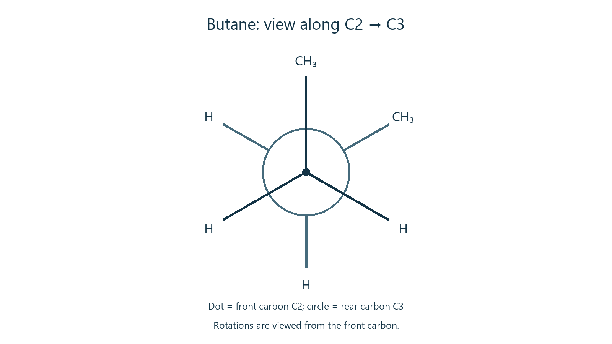
- A Anti; lower energy than the starting gauche conformation
- B Fully eclipsed methyl groups; higher energy
- C Gauche; the same energy as the starting conformation
- D Hydrogen-eclipsed; higher energy
JEE-CHEM-1458 · Class XI · Medium
Sawhorse projection and torsional strain
Read the sawhorse projection shown. Keeping the front carbon fixed, rotate the rear carbon by 60° about the C–C bond. Which change occurs in the usual ethane torsional-energy model?
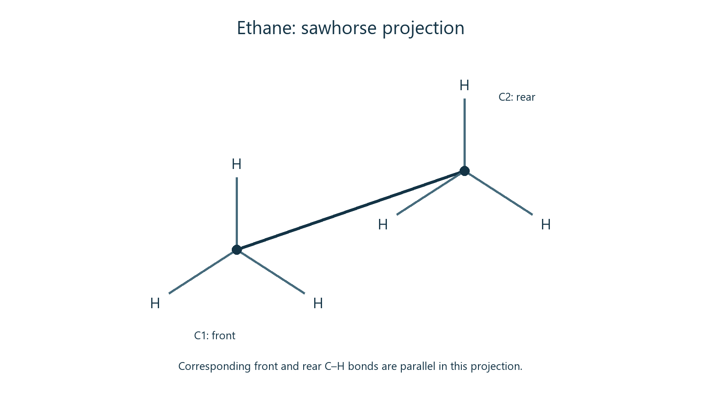
- A Staggered to eclipsed; torsional strain increases
- B Eclipsed to eclipsed; torsional strain is unchanged
- C Eclipsed to staggered; torsional strain decreases
- D Staggered to staggered; three C–H bonds break
JEE-CHEM-1459 · Class XI · Medium
Homologous change and molecular formula
A saturated acyclic monohydric alcohol has 3 carbons. A 2 g sample of its next higher homologue, which is a primary alcohol, is oxidised quantitatively to a monocarboxylic acid without chain cleavage. Find acid mass. C=12, H=1, O=16. Choose the closest listed value.
- A 1.1891892 g
- B 2.3783784 g
- C 2.3243243 g
- D 1.6818182 g
JEE-CHEM-1460 · Class XI · Medium
Functional groups and combustion water
A neutral acyclic compound has 3 carbons, one aldehyde group and one additional C=C bond, with no other unsaturation or heteroatom. What mass of water forms on complete combustion of 0.5 g? C=12, H=1, O=16. Choose the closest listed value.
- A 0.48214286 g
- B 0.32142857 g
- C 0.96428571 g
- D 0.64285714 g
JEE-CHEM-1461 · Class XI · Medium
Unsaturated amine formula and nitrogen analysis
A neutral acyclic primary monoamine contains 3 carbons and exactly one C=C bond, with no other unsaturation or heteroatom. Complete Dumas analysis of 0.6 g converts all its nitrogen into N₂. Find the N₂ mass. C=12, H=1, N=14. Choose the closest listed value.
- A 0.073684211 g
- B 0.44210526 g
- C 0.6 g
- D 0.14736842 g
JEE-CHEM-1462 · Class XI · Medium
Formula and allowed structural unsaturation
A neutral acyclic hydrocarbon has formula C5H10 and contains no triple bond. How many moles H₂ are needed for complete hydrogenation of 0.54 g? C=12, H=1. Choose the closest listed value.
- A 0.0038571429 mol
- B 0.0025714286 mol
- C 0.015428571 mol
- D 0.0077142857 mol
JEE-CHEM-1463 · Class XI · Medium
Stereoisomer population and resolution
A compound has 3 independent tetrahedral stereocentres, no double-bond stereoisomerism and no internal symmetry. A 4.3 g mixture contains all possible configurational stereoisomers in equal amounts. What mass of one specified stereoisomer could be isolated by perfect separation? Choose the closest listed value.
- A 2.15 g
- B 0.26875 g
- C 0.5375 g
- D 0.17916667 g
JEE-CHEM-1464 · Class XI · Medium
Homologous change and molecular formula
A saturated acyclic monohydric alcohol has 4 carbons. A 2.1 g sample of its next higher homologue, which is a primary alcohol, is oxidised quantitatively to a monocarboxylic acid without chain cleavage. Find acid mass. C=12, H=1, O=16. Choose the closest listed value.
- A 1.2170455 g
- B 7.3022727 g
- C 2.4340909 g
- D 4.8681818 g
JEE-CHEM-1465 · Class XI · Easy
reaction classification
The process R-Br + OH⁻ → R-OH + Br⁻ is classified as:
- A nucleophilic substitution
- B electrophilic substitution
- C rearrangement
- D free-radical addition
JEE-CHEM-1466 · Class XI · Medium
Functional groups and combustion water
A neutral acyclic compound has 4 carbons, one aldehyde group and one additional C=C bond, with no other unsaturation or heteroatom. What mass of water forms on complete combustion of 0.53 g? C=12, H=1, O=16. Choose the closest listed value.
- A 0.13628571 g
- B 0.68142857 g
- C 0.36342857 g
- D 0.40885714 g
JEE-CHEM-1467 · Class XI · Easy
functional isomerism
The statement ‘same molecular formula but different functional groups’ refers to
- A nucleophile
- B electrophile
- C heterolytic fission
- D functional isomerism
JEE-CHEM-1468 · Class XI · Easy
electrophile
The statement ‘an electron-pair acceptor’ refers to
- A hyperconjugation
- B electrophile
- C inductive effect
- D resonance effect
JEE-CHEM-1469 · Class XI · Medium
Unsaturated amine formula and nitrogen analysis
A neutral acyclic primary monoamine contains 4 carbons and exactly one C=C bond, with no other unsaturation or heteroatom. Complete Dumas analysis of 0.63 g converts all its nitrogen into N₂. Find the N₂ mass. C=12, H=1, N=14. Choose the closest listed value.
- A 0.63 g
- B 0.37267606 g
- C 0.041408451 g
- D 0.12422535 g
JEE-CHEM-1470 · Class XI · Easy
stability order
For simple alkyl carbocations, without resonance or other special stabilisation, the usual stability order is:
- A primary > secondary > tertiary > methyl
- B methyl > tertiary > secondary > primary
- C tertiary > secondary > primary > methyl
- D secondary > methyl > tertiary > primary
JEE-CHEM-1471 · Class XI · Easy
stability order
The correct stability order for simple alkyl free radicals is:
- A tertiary > secondary > primary > methyl
- B secondary > methyl > tertiary > primary
- C methyl > tertiary > secondary > primary
- D primary > secondary > tertiary > methyl
JEE-CHEM-1472 · Class XI · Medium
Formula and allowed structural unsaturation
A neutral acyclic hydrocarbon has formula C6H12 and contains no triple bond. How many moles H₂ are needed for complete hydrogenation of 0.58 g? C=12, H=1. Choose the closest listed value.
- A 0.020714286 mol
- B 0.0069047619 mol
- C 0.0023015873 mol
- D 0.013809524 mol
JEE-CHEM-1473 · Class XI · Easy
IUPAC parent chain
Which description best identifies IUPAC parent chain?
- A a family with the same functional group and general formula
- B a parent chain chosen to include the principal characteristic group and the relevant multiple bonds under IUPAC priority rules
- C the atom or group chiefly responsible for characteristic reactions
- D self-linking of carbon atoms into chains and rings
JEE-CHEM-1474 · Class XI · Medium
Stereoisomer population and resolution
A compound has 4 independent tetrahedral stereocentres, no double-bond stereoisomerism and no internal symmetry. A 4.6 g mixture contains all possible configurational stereoisomers in equal amounts. What mass of one specified stereoisomer could be isolated by perfect separation? Choose the closest listed value.
- A 0.14375 g
- B 2.3 g
- C 0.095833333 g
- D 0.2875 g
JEE-CHEM-1475 · Class XI · Medium
Homologous change and molecular formula
A saturated acyclic monohydric alcohol has 5 carbons. A 2.2 g sample of its next higher homologue, which is a primary alcohol, is oxidised quantitatively to a monocarboxylic acid without chain cleavage. Find acid mass. C=12, H=1, O=16. Choose the closest listed value.
- A 2.5019608 g
- B 1.9344828 g
- C 2.4588235 g
- D 0.83398693 g
JEE-CHEM-1476 · Class XI · Easy
chain isomerism
Which description best identifies chain isomerism?
- A same molecular formula but different functional groups
- B same molecular formula but different carbon skeletons
- C bond cleavage giving one electron to each fragment
- D same skeleton and functional group but different functional-group position
JEE-CHEM-1477 · Class XI · Medium
Functional groups and combustion water
A neutral acyclic compound has 5 carbons, one aldehyde group and one additional C=C bond, with no other unsaturation or heteroatom. What mass of water forms on complete combustion of 0.56 g? C=12, H=1, O=16. Choose the closest listed value.
- A 0.96 g
- B 0.24 g
- C 0.6 g
- D 0.48 g
JEE-CHEM-1478 · Class XI · Medium
Unsaturated amine formula and nitrogen analysis
A neutral acyclic primary monoamine contains 5 carbons and exactly one C=C bond, with no other unsaturation or heteroatom. Complete Dumas analysis of 0.66 g converts all its nitrogen into N₂. Find the N₂ mass. C=12, H=1, N=14. Choose the closest listed value.
- A 0.66 g
- B 0.1062069 g
- C 0.10870588 g
- D 0.036235294 g
JEE-CHEM-1479 · Class XI · Easy
hyperconjugation
Which description best identifies hyperconjugation?
- A the longest chain containing the principal functional group and maximum multiple bonds
- B delocalization involving a sigma C-H bond adjacent to a p orbital or pi system
- C stability commonly follows tertiary greater than secondary greater than primary for simple alkyl cations
- D for simple alkyl carbanions the usual order is methyl greater than primary greater than secondary greater than tertiary
JEE-CHEM-1480 · Class XI · Easy
Sulfur functional groups
Which pair correctly identifies CH₃SH and CH₃SCH₃?
- A Alcohol and ether
- B Amine and amide
- C Ketone and carboxylic acid
- D Thiol and thioether
JEE-CHEM-1481 · Class XI · Medium
Formula and allowed structural unsaturation
A neutral acyclic hydrocarbon has formula C7H14 and contains no triple bond. How many moles H₂ are needed for complete hydrogenation of 0.62 g? C=12, H=1. Choose the closest listed value.
- A 0.0021088435 mol
- B 0.012653061 mol
- C 0.018979592 mol
- D 0.0063265306 mol
JEE-CHEM-1482 · Class XI · Medium
Stereoisomer population and resolution
A compound has 5 independent tetrahedral stereocentres, no double-bond stereoisomerism and no internal symmetry. A 4.9 g mixture contains all possible configurational stereoisomers in equal amounts. What mass of one specified stereoisomer could be isolated by perfect separation? Choose the closest listed value.
- A 0.30625 g
- B 0.153125 g
- C 0.0765625 g
- D 0.051041667 g
JEE-CHEM-1483 · Class XI · Easy
resonance effect
The statement ‘electron delocalization through overlapping p orbitals’ refers to
- A resonance effect
- B carbanion stability
- C carbocation stability
- D IUPAC parent chain
JEE-CHEM-1484 · Class XI · Difficult
Formula and unsaturation inference
A hydrocarbon has molar mass 164 g mol⁻¹ and carbon mass percentage 87.80488%. Its structure contains no rings. On complete catalytic hydrogenation all multiple bonds are saturated, without C–C cleavage. What amount of H₂ is consumed per mole of hydrocarbon? Use C=12, H=1. Choose the closest listed value.
- A 3 mol
- B 4 mol
- C 6 mol
- D 9 mol
JEE-CHEM-1485 · Class XI · Easy
heterolytic fission
Which description best identifies heterolytic fission?
- A an electron-pair acceptor
- B bond cleavage giving both electrons to one fragment
- C an electron-pair donor
- D permanent sigma-bond polarization transmitted through a chain
JEE-CHEM-1486 · Class XI · Medium
Homologous change and molecular formula
A saturated acyclic monohydric alcohol has 6 carbons. A 2.3 g sample of its next higher homologue, which is a primary alcohol, is oxidised quantitatively to a monocarboxylic acid without chain cleavage. Find acid mass. C=12, H=1, O=16. Choose the closest listed value.
- A 2.5775862 g
- B 2.537931 g
- C 2.3 g
- D 7.7327586 g
JEE-CHEM-1487 · Class XI · Medium
Functional groups and combustion water
A neutral acyclic compound has 6 carbons, one aldehyde group and one additional C=C bond, with no other unsaturation or heteroatom. What mass of water forms on complete combustion of 0.59 g? C=12, H=1, O=16. Choose the closest listed value.
- A 0.18061224 g
- B 0.54183673 g
- C 0.48163265 g
- D 0.27091837 g
JEE-CHEM-1488 · Class XI · Medium
Unsaturated amine formula and nitrogen analysis
A neutral acyclic primary monoamine contains 6 carbons and exactly one C=C bond, with no other unsaturation or heteroatom. Complete Dumas analysis of 0.69 g converts all its nitrogen into N₂. Find the N₂ mass. C=12, H=1, N=14. Choose the closest listed value.
- A 0.29272727 g
- B 0.19515152 g
- C 0.097575758 g
- D 0.69 g
JEE-CHEM-1489 · Class XI · Easy
carbanion stability
Which description best identifies carbanion stability?
- A the longest chain containing the principal functional group and maximum multiple bonds
- B self-linking of carbon atoms into chains and rings
- C a family with the same functional group and general formula
- D for simple alkyl carbanions the usual order is methyl greater than primary greater than secondary greater than tertiary
JEE-CHEM-1490 · Class XI · Medium
Formula and allowed structural unsaturation
A neutral acyclic hydrocarbon has formula C8H14 and contains no triple bond. How many moles H₂ are needed for complete hydrogenation of 0.66 g? C=12, H=1. Choose the closest listed value.
- A 0.004 mol
- B 0.012 mol
- C 0.024 mol
- D 0.006 mol
JEE-CHEM-1491 · Class XI · Medium
Stereoisomer population and resolution
A compound has 2 independent tetrahedral stereocentres, no double-bond stereoisomerism and no internal symmetry. A 5.2 g mixture contains all possible configurational stereoisomers in equal amounts. What mass of one specified stereoisomer could be isolated by perfect separation? Choose the closest listed value.
- A 0.43333333 g
- B 0.65 g
- C 3.9 g
- D 1.3 g
JEE-CHEM-1492 · Class XI · Medium
Homologous change and molecular formula
A saturated acyclic monohydric alcohol has 7 carbons. A 2.4 g sample of its next higher homologue, which is a primary alcohol, is oxidised quantitatively to a monocarboxylic acid without chain cleavage. Find acid mass. C=12, H=1, O=16. Choose the closest listed value.
- A 7.9753846 g
- B 0.88615385 g
- C 5.3169231 g
- D 2.6584615 g
JEE-CHEM-1493 · Class XI · Medium
Functional groups and combustion water
A neutral acyclic compound has 7 carbons, one aldehyde group and one additional C=C bond, with no other unsaturation or heteroatom. What mass of water forms on complete combustion of 0.62 g? C=12, H=1, O=16. Choose the closest listed value.
- A 0.6975 g
- B 0.29892857 g
- C 0.59785714 g
- D 1.1957143 g
JEE-CHEM-1494 · Class XI · Medium
Unsaturated amine formula and nitrogen analysis
A neutral acyclic primary monoamine contains 7 carbons and exactly one C=C bond, with no other unsaturation or heteroatom. Complete Dumas analysis of 0.72 g converts all its nitrogen into N₂. Find the N₂ mass. C=12, H=1, N=14. Choose the closest listed value.
- A 0.087652174 g
- B 0.08920354 g
- C 0.72 g
- D 0.029734513 g
JEE-CHEM-1495 · Class XI · Easy
functional isomerism
Which description best identifies functional isomerism?
- A an electron-pair acceptor
- B same molecular formula but different functional groups
- C bond cleavage giving one electron to each fragment
- D bond cleavage giving both electrons to one fragment
JEE-CHEM-1496 · Class XI · Easy
electrophile and nucleophile
In a typical organic reaction, CN⁻ acts primarily as a:
- A carbene
- B free radical
- C electrophile
- D nucleophile
JEE-CHEM-1497 · Class XI · Difficult
Formula and unsaturation inference
A hydrocarbon has molar mass 56 g mol⁻¹ and carbon mass percentage 85.71429%. Its structure contains no rings. On complete catalytic hydrogenation all multiple bonds are saturated, without C–C cleavage. What amount of H₂ is consumed per mole of hydrocarbon? Use C=12, H=1. Choose the closest listed value.
- A 3 mol
- B 2 mol
- C 1 mol
- D 0 mol
JEE-CHEM-1498 · Class XI · Medium
Formula and allowed structural unsaturation
A neutral acyclic hydrocarbon has formula C9H16 and contains no triple bond. How many moles H₂ are needed for complete hydrogenation of 0.7 g? C=12, H=1. Choose the closest listed value.
- A 0.016935484 mol
- B 0.011290323 mol
- C 0.0037634409 mol
- D 0.0056451613 mol
JEE-CHEM-1499 · Class XI · Medium
Stereoisomer population and resolution
A compound has 3 independent tetrahedral stereocentres, no double-bond stereoisomerism and no internal symmetry. A 5.5 g mixture contains all possible configurational stereoisomers in equal amounts. What mass of one specified stereoisomer could be isolated by perfect separation? Choose the closest listed value.
- A 0.6875 g
- B 0.22916667 g
- C 0.91666667 g
- D 0.34375 g
JEE-CHEM-1500 · Class XI · Medium
Homologous change and molecular formula
A saturated acyclic monohydric alcohol has 8 carbons. A 2.5 g sample of its next higher homologue, which is a primary alcohol, is oxidised quantitatively to a monocarboxylic acid without chain cleavage. Find acid mass. C=12, H=1, O=16. Choose the closest listed value.
- A 5.4861111 g
- B 8.2291667 g
- C 2.7430556 g
- D 1.3715278 g
JEE-CHEM-1501 · Class XI · Medium
Functional groups and combustion water
A neutral acyclic compound has 8 carbons, one aldehyde group and one additional C=C bond, with no other unsaturation or heteroatom. What mass of water forms on complete combustion of 0.65 g? C=12, H=1, O=16. Choose the closest listed value.
- A 0.65 g
- B 0.325 g
- C 0.74285714 g
- D 1.3 g
JEE-CHEM-1502 · Class XI · Medium
Unsaturated amine formula and nitrogen analysis
A neutral acyclic primary monoamine contains 3 carbons and exactly one C=C bond, with no other unsaturation or heteroatom. Complete Dumas analysis of 0.75 g converts all its nitrogen into N₂. Find the N₂ mass. C=12, H=1, N=14. Choose the closest listed value.
- A 0.18421053 g
- B 0.061403509 g
- C 0.1779661 g
- D 0.36842105 g
JEE-CHEM-1503 · Class XI · Easy
IUPAC parent chain
The statement ‘a parent chain chosen to include the principal characteristic group and the relevant multiple bonds under IUPAC priority rules’ refers to
- A functional group
- B chain isomerism
- C homologous series
- D IUPAC parent chain
JEE-CHEM-1504 · Class XI · Medium
Formula and allowed structural unsaturation
A neutral acyclic hydrocarbon has formula C10H18 and contains no triple bond. How many moles H₂ are needed for complete hydrogenation of 0.74 g? C=12, H=1. Choose the closest listed value.
- A 0.021449275 mol
- B 0.010724638 mol
- C 0.032173913 mol
- D 0.016086957 mol
JEE-CHEM-1505 · Class XI · Medium
Stereoisomer population and resolution
A compound has 4 independent tetrahedral stereocentres, no double-bond stereoisomerism and no internal symmetry. A 5.8 g mixture contains all possible configurational stereoisomers in equal amounts. What mass of one specified stereoisomer could be isolated by perfect separation? Choose the closest listed value.
- A 0.18125 g
- B 1.0875 g
- C 0.3625 g
- D 2.9 g
JEE-CHEM-1506 · Class XI · Medium
Homologous change and molecular formula
A saturated acyclic monohydric alcohol has 3 carbons. A 2.6 g sample of its next higher homologue, which is a primary alcohol, is oxidised quantitatively to a monocarboxylic acid without chain cleavage. Find acid mass. C=12, H=1, O=16. Choose the closest listed value.
- A 3.0918919 g
- B 3.0216216 g
- C 1.0306306 g
- D 9.2756757 g
JEE-CHEM-1507 · Class XI · Difficult
Formula and unsaturation inference
A hydrocarbon has molar mass 182 g mol⁻¹ and carbon mass percentage 85.71429%. Its structure contains no rings. On complete catalytic hydrogenation all multiple bonds are saturated, without C–C cleavage. What amount of H₂ is consumed per mole of hydrocarbon? Use C=12, H=1. Choose the closest listed value.
- A 3 mol
- B 6 mol
- C 0 mol
- D 1 mol
JEE-CHEM-1508 · Class XI · Easy
functional group
Which description best identifies functional group?
- A the atom or group chiefly responsible for characteristic reactions
- B same skeleton and functional group but different functional-group position
- C same molecular formula but different functional groups
- D same molecular formula but different carbon skeletons
JEE-CHEM-1509 · Class XI · Medium
Functional groups and combustion water
A neutral acyclic compound has 9 carbons, one aldehyde group and one additional C=C bond, with no other unsaturation or heteroatom. What mass of water forms on complete combustion of 0.68 g? C=12, H=1, O=16. Choose the closest listed value.
- A 0.78685714 g
- B 0.87428571 g
- C 0.34971429 g
- D 0.69942857 g
JEE-CHEM-1510 · Class XI · Easy
position isomerism
Which description best identifies position isomerism?
- A same skeleton and functional group but different functional-group position
- B bond cleavage giving both electrons to one fragment
- C bond cleavage giving one electron to each fragment
- D same molecular formula but different functional groups
JEE-CHEM-1511 · Class XI · Medium
Unsaturated amine formula and nitrogen analysis
A neutral acyclic primary monoamine contains 4 carbons and exactly one C=C bond, with no other unsaturation or heteroatom. Complete Dumas analysis of 0.78 g converts all its nitrogen into N₂. Find the N₂ mass. C=12, H=1, N=14. Choose the closest listed value.
- A 0.15380282 g
- B 0.14958904 g
- C 0.076901408 g
- D 0.051267606 g
JEE-CHEM-1512 · Class XI · Medium
Formula and allowed structural unsaturation
A neutral acyclic hydrocarbon has formula C11H20 and contains no triple bond. How many moles H₂ are needed for complete hydrogenation of 0.78 g? C=12, H=1. Choose the closest listed value.
- A 0.015394737 mol
- B 0.030789474 mol
- C 0.020526316 mol
- D 0.010263158 mol
JEE-CHEM-1513 · Class XI · Medium
Stereoisomer population and resolution
A compound has 5 independent tetrahedral stereocentres, no double-bond stereoisomerism and no internal symmetry. A 6.1 g mixture contains all possible configurational stereoisomers in equal amounts. What mass of one specified stereoisomer could be isolated by perfect separation? Choose the closest listed value.
- A 0.190625 g
- B 3.05 g
- C 0.063541667 g
- D 0.38125 g
JEE-CHEM-1514 · Class XI · Medium
Homologous change and molecular formula
A saturated acyclic monohydric alcohol has 4 carbons. A 2.7 g sample of its next higher homologue, which is a primary alcohol, is oxidised quantitatively to a monocarboxylic acid without chain cleavage. Find acid mass. C=12, H=1, O=16. Choose the closest listed value.
- A 3.1295455 g
- B 1.0431818 g
- C 9.3886364 g
- D 3.0681818 g
JEE-CHEM-1515 · Class XI · Medium
Functional groups and combustion water
A neutral acyclic compound has 3 carbons, one aldehyde group and one additional C=C bond, with no other unsaturation or heteroatom. What mass of water forms on complete combustion of 0.71 g? C=12, H=1, O=16. Choose the closest listed value.
- A 0.40571429 g
- B 0.22821429 g
- C 0.15214286 g
- D 0.45642857 g
JEE-CHEM-1516 · Class XI · Medium
Unsaturated amine formula and nitrogen analysis
A neutral acyclic primary monoamine contains 5 carbons and exactly one C=C bond, with no other unsaturation or heteroatom. Complete Dumas analysis of 0.81 g converts all its nitrogen into N₂. Find the N₂ mass. C=12, H=1, N=14. Choose the closest listed value.
- A 0.40023529 g
- B 0.81 g
- C 0.13341176 g
- D 0.26682353 g
JEE-CHEM-1517 · Class XI · Easy
nucleophile
The statement ‘an electron-pair donor’ refers to
- A carbocation stability
- B nucleophile
- C resonance effect
- D hyperconjugation
JEE-CHEM-1518 · Class XI · Easy
functional group
The statement ‘the atom or group chiefly responsible for characteristic reactions’ refers to
- A functional isomerism
- B functional group
- C homolytic fission
- D position isomerism
JEE-CHEM-1519 · Class XI · Easy
Structural isomers
Which pair consists of chain isomers?
- A Propanal and ethanol
- B Ethanol and ethene
- C Ethene and ethyne
- D Butane and 2-methylpropane
JEE-CHEM-1520 · Class XI · Easy
homologous series
Which description best identifies homologous series?
- A same molecular formula but different carbon skeletons
- B same skeleton and functional group but different functional-group position
- C a family with the same functional group and general formula
- D the atom or group chiefly responsible for characteristic reactions
JEE-CHEM-1521 · Class XI · Easy
nucleophile
Which description best identifies nucleophile?
- A an electron-pair donor
- B electron delocalization through overlapping p orbitals
- C permanent sigma-bond polarization transmitted through a chain
- D delocalization involving a sigma C-H bond adjacent to a p orbital or pi system
JEE-CHEM-1522 · Class XI · Medium
Formula and allowed structural unsaturation
A neutral acyclic hydrocarbon has formula C4H4 and contains no triple bond. How many moles H₂ are needed for complete hydrogenation of 0.82 g? C=12, H=1. Choose the closest listed value.
- A 0.047307692 mol
- B 0.023653846 mol
- C 0.063076923 mol
- D 0.015769231 mol
JEE-CHEM-1523 · Class XI · Medium
Stereoisomer population and resolution
A compound has 2 independent tetrahedral stereocentres, no double-bond stereoisomerism and no internal symmetry. A 6.4 g mixture contains all possible configurational stereoisomers in equal amounts. What mass of one specified stereoisomer could be isolated by perfect separation? Choose the closest listed value.
- A 0.8 g
- B 0.53333333 g
- C 1.6 g
- D 4.8 g
JEE-CHEM-1524 · Class XI · Easy
classification
The relationship between ethanol and dimethyl ether is:
- A chain isomerism
- B geometrical isomerism
- C functional isomerism
- D position isomerism
JEE-CHEM-1525 · Class XI · Easy
homologous series
The statement ‘a family with the same functional group and general formula’ refers to
- A chain isomerism
- B homologous series
- C functional isomerism
- D position isomerism
JEE-CHEM-1526 · Class XI · Difficult
Formula and unsaturation inference
A hydrocarbon has molar mass 152 g mol⁻¹ and carbon mass percentage 86.84211%. Its structure contains no rings. On complete catalytic hydrogenation all multiple bonds are saturated, without C–C cleavage. What amount of H₂ is consumed per mole of hydrocarbon? Use C=12, H=1. Choose the closest listed value.
- A 1 mol
- B 2 mol
- C 4 mol
- D 0 mol
JEE-CHEM-1527 · Class XI · Medium
Homologous change and molecular formula
A saturated acyclic monohydric alcohol has 5 carbons. A 2.8 g sample of its next higher homologue, which is a primary alcohol, is oxidised quantitatively to a monocarboxylic acid without chain cleavage. Find acid mass. C=12, H=1, O=16. Choose the closest listed value.
- A 3.1294118 g
- B 2.8 g
- C 3.1843137 g
- D 2.462069 g
JEE-CHEM-1528 · Class XI · Medium
Functional groups and combustion water
A neutral acyclic compound has 4 carbons, one aldehyde group and one additional C=C bond, with no other unsaturation or heteroatom. What mass of water forms on complete combustion of 0.74 g? C=12, H=1, O=16. Choose the closest listed value.
- A 0.95142857 g
- B 0.76114286 g
- C 0.57085714 g
- D 1.7125714 g
JEE-CHEM-1529 · Class XI · Medium
Unsaturated amine formula and nitrogen analysis
A neutral acyclic primary monoamine contains 6 carbons and exactly one C=C bond, with no other unsaturation or heteroatom. Complete Dumas analysis of 0.84 g converts all its nitrogen into N₂. Find the N₂ mass. C=12, H=1, N=14. Choose the closest listed value.
- A 0.35636364 g
- B 0.84 g
- C 0.03959596 g
- D 0.11878788 g
JEE-CHEM-1530 · Class XI · Easy
homolytic fission
Which description best identifies homolytic fission?
- A an electron-pair donor
- B bond cleavage giving one electron to each fragment
- C an electron-pair acceptor
- D bond cleavage giving both electrons to one fragment
JEE-CHEM-1531 · Class XI · Easy
heterolytic fission
The statement ‘bond cleavage giving both electrons to one fragment’ refers to
- A inductive effect
- B resonance effect
- C heterolytic fission
- D nucleophile
JEE-CHEM-1532 · Class XI · Easy
carbanion stability
The statement ‘for simple alkyl carbanions the usual order is methyl greater than primary greater than secondary greater than tertiary’ refers to
- A functional group
- B catenation
- C carbanion stability
- D homologous series
JEE-CHEM-1533 · Class XI · Easy
resonance
Which description correctly defines the resonance?
- A rapid interconversion of isolable structures through movement of their atomic nuclei
- B delocalisation of electrons represented by contributing canonical structures
- C complete ionisation of every pi bond
- D movement of atomic nuclei between forms
JEE-CHEM-1534 · Class XI · Medium
Formula and allowed structural unsaturation
A neutral acyclic hydrocarbon has formula C5H6 and contains no triple bond. How many moles H₂ are needed for complete hydrogenation of 0.86 g? C=12, H=1. Choose the closest listed value.
- A 0.11727273 mol
- B 0.019545455 mol
- C 0.013030303 mol
- D 0.039090909 mol
JEE-CHEM-1535 · Class XI · Easy
chain isomerism
The statement ‘same molecular formula but different carbon skeletons’ refers to
- A chain isomerism
- B homolytic fission
- C heterolytic fission
- D functional isomerism
JEE-CHEM-1536 · Class XI · Medium
Stereoisomer population and resolution
A compound has 3 independent tetrahedral stereocentres, no double-bond stereoisomerism and no internal symmetry. A 6.7 g mixture contains all possible configurational stereoisomers in equal amounts. What mass of one specified stereoisomer could be isolated by perfect separation? Choose the closest listed value.
- A 1.675 g
- B 0.8375 g
- C 3.35 g
- D 2.5125 g
JEE-CHEM-1537 · Class XI · Easy
carbocation stability
The statement ‘stability commonly follows tertiary greater than secondary greater than primary for simple alkyl cations’ refers to
- A catenation
- B IUPAC parent chain
- C carbocation stability
- D homologous series
JEE-CHEM-1538 · Class XI · Medium
Homologous change and molecular formula
A saturated acyclic monohydric alcohol has 6 carbons. A 2.9 g sample of its next higher homologue, which is a primary alcohol, is oxidised quantitatively to a monocarboxylic acid without chain cleavage. Find acid mass. C=12, H=1, O=16. Choose the closest listed value.
- A 3.25 g
- B 6.5 g
- C 1.625 g
- D 1.0833333 g
JEE-CHEM-1539 · Class XI · Easy
geometry
The usual geometry and hybridisation assigned to the methyl radical, CH₃·, is:
- A sp³d, trigonal bipyramidal
- B approximately sp², planar
- C sp, linear
- D sp³d², octahedral
JEE-CHEM-1540 · Class XI · Easy
catenation
The statement ‘self-linking of carbon atoms into chains and rings’ refers to
- A functional group
- B catenation
- C chain isomerism
- D position isomerism
JEE-CHEM-1541 · Class XI · Medium
Functional groups and combustion water
A neutral acyclic compound has 5 carbons, one aldehyde group and one additional C=C bond, with no other unsaturation or heteroatom. What mass of water forms on complete combustion of 0.77 g? C=12, H=1, O=16. Choose the closest listed value.
- A 0.99 g
- B 0.58666667 g
- C 0.66 g
- D 0.825 g
JEE-CHEM-1542 · Class XI · Difficult
Formula and unsaturation inference
A hydrocarbon has molar mass 68 g mol⁻¹ and carbon mass percentage 88.23529%. Its structure contains no rings. On complete catalytic hydrogenation all multiple bonds are saturated, without C–C cleavage. What amount of H₂ is consumed per mole of hydrocarbon? Use C=12, H=1. Choose the closest listed value.
- A 1 mol
- B 0 mol
- C 2 mol
- D 5 mol
JEE-CHEM-1543 · Class XI · Medium
Unsaturated amine formula and nitrogen analysis
A neutral acyclic primary monoamine contains 7 carbons and exactly one C=C bond, with no other unsaturation or heteroatom. Complete Dumas analysis of 0.87 g converts all its nitrogen into N₂. Find the N₂ mass. C=12, H=1, N=14. Choose the closest listed value.
- A 0.053893805 g
- B 0.10591304 g
- C 0.035929204 g
- D 0.10778761 g
JEE-CHEM-1544 · Class XI · Easy
inductive effect
Which description best identifies inductive effect?
- A stability commonly follows tertiary greater than secondary greater than primary for simple alkyl cations
- B electron delocalization through overlapping p orbitals
- C permanent sigma-bond polarization transmitted through a chain
- D delocalization involving a sigma C-H bond adjacent to a p orbital or pi system
JEE-CHEM-1545 · Class XI · Medium
Formula and allowed structural unsaturation
A neutral acyclic hydrocarbon has formula C6H8 and contains no triple bond. How many moles H₂ are needed for complete hydrogenation of 0.9 g? C=12, H=1. Choose the closest listed value.
- A 0.03375 mol
- B 0.01125 mol
- C 0.045 mol
- D 0.10125 mol
JEE-CHEM-1546 · Class XI · Easy
carbocation stability
Which description best identifies carbocation stability?
- A stability commonly follows tertiary greater than secondary greater than primary for simple alkyl cations
- B for simple alkyl carbanions the usual order is methyl greater than primary greater than secondary greater than tertiary
- C self-linking of carbon atoms into chains and rings
- D the longest chain containing the principal functional group and maximum multiple bonds
JEE-CHEM-1547 · Class XI · Difficult
Formula and unsaturation inference
A hydrocarbon has molar mass 80 g mol⁻¹ and carbon mass percentage 90%. Its structure contains no rings. On complete catalytic hydrogenation all multiple bonds are saturated, without C–C cleavage. What amount of H₂ is consumed per mole of hydrocarbon? Use C=12, H=1. Choose the closest listed value.
- A 1 mol
- B 2 mol
- C 0 mol
- D 3 mol
JEE-CHEM-1548 · Class XI · Easy
hyperconjugation
The statement ‘delocalization involving a sigma C-H bond adjacent to a p orbital or pi system’ refers to
- A IUPAC parent chain
- B carbanion stability
- C catenation
- D hyperconjugation
JEE-CHEM-1549 · Class XI · Easy
electrophile and nucleophile
In a typical organic reaction, BF₃ acts primarily as a:
- A electrophile
- B free radical
- C carbene
- D nucleophile
JEE-CHEM-1550 · Class XI · Medium
Stereoisomer population and resolution
A compound has 4 independent tetrahedral stereocentres, no double-bond stereoisomerism and no internal symmetry. A 7 g mixture contains all possible configurational stereoisomers in equal amounts. What mass of one specified stereoisomer could be isolated by perfect separation? Choose the closest listed value.
- A 1.3125 g
- B 0.4375 g
- C 0.21875 g
- D 0.14583333 g
JEE-CHEM-1551 · Class XI · Difficult
Formula and unsaturation inference
A hydrocarbon has molar mass 140 g mol⁻¹ and carbon mass percentage 85.71429%. Its structure contains no rings. On complete catalytic hydrogenation all multiple bonds are saturated, without C–C cleavage. What amount of H₂ is consumed per mole of hydrocarbon? Use C=12, H=1. Choose the closest listed value.
- A 0 mol
- B 6 mol
- C 1 mol
- D 3 mol
JEE-CHEM-1552 · Class XI · Difficult
Formula and unsaturation inference
A hydrocarbon has molar mass 98 g mol⁻¹ and carbon mass percentage 85.71429%. Its structure contains no rings. On complete catalytic hydrogenation all multiple bonds are saturated, without C–C cleavage. What amount of H₂ is consumed per mole of hydrocarbon? Use C=12, H=1. Choose the closest listed value.
- A 3 mol
- B 5 mol
- C 1 mol
- D 6 mol
JEE-CHEM-1553 · Class XI · Medium
Homologous change and molecular formula
A saturated acyclic monohydric alcohol has 7 carbons. A 3 g sample of its next higher homologue, which is a primary alcohol, is oxidised quantitatively to a monocarboxylic acid without chain cleavage. Find acid mass. C=12, H=1, O=16. Choose the closest listed value.
- A 3.3230769 g
- B 6.6461538 g
- C 9.9692308 g
- D 2.7083333 g
JEE-CHEM-1554 · Class XI · Medium
Functional groups and combustion water
A neutral acyclic compound has 6 carbons, one aldehyde group and one additional C=C bond, with no other unsaturation or heteroatom. What mass of water forms on complete combustion of 0.8 g? C=12, H=1, O=16. Choose the closest listed value.
- A 0.73469388 g
- B 0.24489796 g
- C 0.36734694 g
- D 1.0285714 g
JEE-CHEM-1555 · Class XI · Medium
Unsaturated amine formula and nitrogen analysis
A neutral acyclic primary monoamine contains 3 carbons and exactly one C=C bond, with no other unsaturation or heteroatom. Complete Dumas analysis of 0.9 g converts all its nitrogen into N₂. Find the N₂ mass. C=12, H=1, N=14. Choose the closest listed value.
- A 0.21355932 g
- B 0.22105263 g
- C 0.11052632 g
- D 0.073684211 g
JEE-CHEM-1556 · Class XI · Medium
Formula and allowed structural unsaturation
A neutral acyclic hydrocarbon has formula C7H10 and contains no triple bond. How many moles H₂ are needed for complete hydrogenation of 0.94 g? C=12, H=1. Choose the closest listed value.
- A 0.04 mol
- B 0.09 mol
- C 0.06 mol
- D 0.03 mol
JEE-CHEM-1557 · Class XI · Easy
acidity
Between HC≡CH and H₂C=CH₂, the stronger acid is:
- A both have identical acidity
- B H₂C=CH₂
- C neither can donate a proton
- D HC≡CH
JEE-CHEM-1558 · Class XI · Medium
Stereoisomer population and resolution
A compound has 5 independent tetrahedral stereocentres, no double-bond stereoisomerism and no internal symmetry. A 7.3 g mixture contains all possible configurational stereoisomers in equal amounts. What mass of one specified stereoisomer could be isolated by perfect separation? Choose the closest listed value.
- A 0.228125 g
- B 0.076041667 g
- C 0.684375 g
- D 0.1140625 g
JEE-CHEM-1559 · Class XI · Easy
classification
The relationship between propanal and propanone is:
- A geometrical isomerism
- B functional isomerism
- C chain isomerism
- D position isomerism
JEE-CHEM-1560 · Class XI · Difficult
Formula and unsaturation inference
A hydrocarbon has molar mass 122 g mol⁻¹ and carbon mass percentage 88.52459%. Its structure contains no rings. On complete catalytic hydrogenation all multiple bonds are saturated, without C–C cleavage. What amount of H₂ is consumed per mole of hydrocarbon? Use C=12, H=1. Choose the closest listed value.
- A 9 mol
- B 5 mol
- C 3 mol
- D 4 mol
JEE-CHEM-1561 · Class XI · Medium
Homologous change and molecular formula
A saturated acyclic monohydric alcohol has 8 carbons. A 3.1 g sample of its next higher homologue, which is a primary alcohol, is oxidised quantitatively to a monocarboxylic acid without chain cleavage. Find acid mass. C=12, H=1, O=16. Choose the closest listed value.
- A 10.204167 g
- B 6.8027778 g
- C 1.7006944 g
- D 3.4013889 g
JEE-CHEM-1562 · Class XI · Easy
principles
Which statement about carbon valency and covalent bonding is correct?
- A Every carbon compound contains sp³ carbon only.
- B Carbon cannot form pi bonds.
- C Carbon is divalent and normally forms stable C⁴⁺ ions in aqueous compounds.
- D Carbon is tetravalent and commonly forms covalent bonds by sharing electrons.
JEE-CHEM-1563 · Class XI · Medium
Functional groups and combustion water
A neutral acyclic compound has 7 carbons, one aldehyde group and one additional C=C bond, with no other unsaturation or heteroatom. What mass of water forms on complete combustion of 0.83 g? C=12, H=1, O=16. Choose the closest listed value.
- A 0.80035714 g
- B 0.26678571 g
- C 0.40017857 g
- D 0.71142857 g
JEE-CHEM-1564 · Class XI · Easy
Structural stereoisomerism
A tetrahedral carbon is a stereogenic centre in the usual simple case when it is attached to:
- A Two identical pairs of groups
- B Four different groups
- C Four identical groups
- D Only three groups in one plane
JEE-CHEM-1565 · Class XI · Medium
Unsaturated amine formula and nitrogen analysis
A neutral acyclic primary monoamine contains 4 carbons and exactly one C=C bond, with no other unsaturation or heteroatom. Complete Dumas analysis of 0.93 g converts all its nitrogen into N₂. Find the N₂ mass. C=12, H=1, N=14. Choose the closest listed value.
- A 0.18338028 g
- B 0.061126761 g
- C 0.93 g
- D 0.36676056 g
JEE-CHEM-1566 · Class XI · Medium
Formula and allowed structural unsaturation
A neutral acyclic hydrocarbon has formula C8H16 and contains no triple bond. How many moles H₂ are needed for complete hydrogenation of 0.98 g? C=12, H=1. Choose the closest listed value.
- A 0.02625 mol
- B 0.0029166667 mol
- C 0.00875 mol
- D 0.004375 mol
JEE-CHEM-1567 · Class XI · Medium
Stereoisomer population and resolution
A compound has 2 independent tetrahedral stereocentres, no double-bond stereoisomerism and no internal symmetry. A 7.6 g mixture contains all possible configurational stereoisomers in equal amounts. What mass of one specified stereoisomer could be isolated by perfect separation? Choose the closest listed value.
- A 5.7 g
- B 1.9 g
- C 0.95 g
- D 0.63333333 g
JEE-CHEM-1568 · Class XI · Difficult
Formula and unsaturation inference
A hydrocarbon has molar mass 110 g mol⁻¹ and carbon mass percentage 87.27273%. Its structure contains no rings. On complete catalytic hydrogenation all multiple bonds are saturated, without C–C cleavage. What amount of H₂ is consumed per mole of hydrocarbon? Use C=12, H=1. Choose the closest listed value.
- A 2 mol
- B 3 mol
- C 5 mol
- D 6 mol
JEE-CHEM-1569 · Class XI · Easy
electrophile
Which description best identifies electrophile?
- A permanent sigma-bond polarization transmitted through a chain
- B an electron-pair donor
- C electron delocalization through overlapping p orbitals
- D an electron-pair acceptor
JEE-CHEM-1570 · Class XI · Easy
inductive effect
The statement ‘permanent sigma-bond polarization transmitted through a chain’ refers to
- A carbanion stability
- B carbocation stability
- C hyperconjugation
- D inductive effect
JEE-CHEM-1571 · Class XI · Medium
Homologous change and molecular formula
A saturated acyclic monohydric alcohol has 3 carbons. A 3.2 g sample of its next higher homologue, which is a primary alcohol, is oxidised quantitatively to a monocarboxylic acid without chain cleavage. Find acid mass. C=12, H=1, O=16. Choose the closest listed value.
- A 3.2 g
- B 3.7189189 g
- C 3.8054054 g
- D 1.9027027 g
JEE-CHEM-1572 · Class XI · Medium
Functional groups and combustion water
A neutral acyclic compound has 8 carbons, one aldehyde group and one additional C=C bond, with no other unsaturation or heteroatom. What mass of water forms on complete combustion of 0.86 g? C=12, H=1, O=16. Choose the closest listed value.
- A 1.72 g
- B 1.1057143 g
- C 0.86 g
- D 0.98285714 g
JEE-CHEM-1573 · Class XI · Medium
Unsaturated amine formula and nitrogen analysis
A neutral acyclic primary monoamine contains 5 carbons and exactly one C=C bond, with no other unsaturation or heteroatom. Complete Dumas analysis of 0.96 g converts all its nitrogen into N₂. Find the N₂ mass. C=12, H=1, N=14. Choose the closest listed value.
- A 0.31623529 g
- B 0.47435294 g
- C 0.079058824 g
- D 0.15811765 g
JEE-CHEM-1574 · Class XI · Medium
Formula and allowed structural unsaturation
A neutral acyclic hydrocarbon has formula C9H18 and contains no triple bond. How many moles H₂ are needed for complete hydrogenation of 1.02 g? C=12, H=1. Choose the closest listed value.
- A 0.004047619 mol
- B 0.0080952381 mol
- C 0.024285714 mol
- D 0.0026984127 mol
JEE-CHEM-1575 · Class XI · Medium
Stereoisomer population and resolution
A compound has 3 independent tetrahedral stereocentres, no double-bond stereoisomerism and no internal symmetry. A 7.9 g mixture contains all possible configurational stereoisomers in equal amounts. What mass of one specified stereoisomer could be isolated by perfect separation? Choose the closest listed value.
- A 0.9875 g
- B 2.9625 g
- C 0.49375 g
- D 0.32916667 g
JEE-CHEM-1576 · Class XI · Medium
Homologous change and molecular formula
A saturated acyclic monohydric alcohol has 4 carbons. A 3.3 g sample of its next higher homologue, which is a primary alcohol, is oxidised quantitatively to a monocarboxylic acid without chain cleavage. Find acid mass. C=12, H=1, O=16. Choose the closest listed value.
- A 11.475 g
- B 7.65 g
- C 3.825 g
- D 3.3 g
JEE-CHEM-1577 · Class XI · Medium
Functional groups and combustion water
A neutral acyclic compound has 9 carbons, one aldehyde group and one additional C=C bond, with no other unsaturation or heteroatom. What mass of water forms on complete combustion of 0.89 g? C=12, H=1, O=16. Choose the closest listed value.
- A 1.1442857 g
- B 0.81371429 g
- C 0.91542857 g
- D 1.0298571 g
JEE-CHEM-1578 · Class XI · Medium
Unsaturated amine formula and nitrogen analysis
A neutral acyclic primary monoamine contains 6 carbons and exactly one C=C bond, with no other unsaturation or heteroatom. Complete Dumas analysis of 0.99 g converts all its nitrogen into N₂. Find the N₂ mass. C=12, H=1, N=14. Choose the closest listed value.
- A 0.046666667 g
- B 0.14 g
- C 0.07 g
- D 0.28 g
JEE-CHEM-1579 · Class XI · Medium
Formula and allowed structural unsaturation
A neutral acyclic hydrocarbon has formula C10H20 and contains no triple bond. How many moles H₂ are needed for complete hydrogenation of 1.06 g? C=12, H=1. Choose the closest listed value.
- A 0.022714286 mol
- B 0.0075714286 mol
- C 0.0025238095 mol
- D 0.0037857143 mol
JEE-CHEM-1580 · Class XI · Easy
position isomerism
The statement ‘same skeleton and functional group but different functional-group position’ refers to
- A electrophile
- B homolytic fission
- C heterolytic fission
- D position isomerism
JEE-CHEM-1581 · Class XI · Easy
electromeric effect
Which description correctly defines the electromeric effect?
- A temporary complete transfer of a pi-electron pair under an attacking reagent
- B rotation about a sigma bond
- C hydrogen bonding between molecules
- D permanent displacement of a sigma-electron pair that occurs without an attacking reagent
JEE-CHEM-1582 · Class XI · Easy
reaction classification
The process alcohol → alkene + H₂O is classified as:
- A polymerisation
- B addition
- C substitution without bond loss
- D elimination
JEE-CHEM-1583 · Class XI · Medium
Stereoisomer population and resolution
A compound has 4 independent tetrahedral stereocentres, no double-bond stereoisomerism and no internal symmetry. A 8.2 g mixture contains all possible configurational stereoisomers in equal amounts. What mass of one specified stereoisomer could be isolated by perfect separation? Choose the closest listed value.
- A 0.17083333 g
- B 0.25625 g
- C 0.5125 g
- D 4.1 g
JEE-CHEM-1584 · Class XI · Easy
resonance effect
Which description best identifies resonance effect?
- A electron delocalization through overlapping p orbitals
- B delocalization involving a sigma C-H bond adjacent to a p orbital or pi system
- C stability commonly follows tertiary greater than secondary greater than primary for simple alkyl cations
- D for simple alkyl carbanions the usual order is methyl greater than primary greater than secondary greater than tertiary
JEE-CHEM-1585 · Class XI · Medium
Alkyne formula and hydrogen demand
A pure acyclic monoalkyne has 3 carbon atoms and no other unsaturation. How many moles H₂ completely hydrogenate 1 g to an alkane? C=12, H=1. Choose the closest listed value.
- A 0.15 mol
- B 0.1 mol
- C 0.05 mol
- D 0.016666667 mol
JEE-CHEM-1586 · Class XI · Difficult
Hydrocarbon hydrogen uptake
A 1.0664 g mixture contains an acyclic monoalkene C7H14 and an acyclic monoalkyne C7H12, with no other unsaturation. Complete hydrogenation consumes 0.0168 mol H₂. Find the mole percentage of alkyne. C=12, H=1. Choose the closest listed value.
- A 47.272727 %
- B 35.151515 %
- C 79.090909 %
- D 52.727273 %
JEE-CHEM-1587 · Class XI · Difficult
Hydrocarbon hydrogen uptake
A 1.276 g mixture contains an acyclic monoalkene C8H16 and an acyclic monoalkyne C8H14, with no other unsaturation. Complete hydrogenation consumes 0.0175 mol H₂. Find the mole percentage of alkyne. C=12, H=1. Choose the closest listed value.
- A 26.086957 %
- B 47.826087 %
- C 52.173913 %
- D 35.294118 %
JEE-CHEM-1588 · Class XI · Medium
Ozonolysis followed by Tollens oxidation
0.02 mol but-2-ene undergoes complete reductive ozonolysis. All carbonyl products are then treated with excess Tollens reagent. Find the mass of silver formed, assuming quantitative reactions. Ag=108 g mol⁻¹. Choose the closest listed value.
- A 8.64 g
- B 25.92 g
- C 17.28 g
- D 2.16 g
JEE-CHEM-1589 · Class XI · Medium
Selective hydrogenation then bromine addition
0.02 mol ethyne is converted quantitatively to ethene using H₂/Lindlar catalyst. The ethene is then treated with excess Br₂ in an inert solvent in the dark. Find the mass of bromine consumed in this second step. Br=80. Choose the closest listed value.
- A 3.2 g
- B 1.0666667 g
- C 9.6 g
- D 6.4 g
JEE-CHEM-1590 · Class XI · Medium
Side-chain oxidation and sodium salt
0.01 mol toluene is completely oxidised at its side chain with alkaline KMnO₄, acidified, and then neutralised with NaOH. Find the mass of sodium benzoate obtained quantitatively. C=12, H=1, O=16, Na=23. Choose the closest listed value.
- A 0.72 g
- B 1.44 g
- C 2.88 g
- D 0.48 g
JEE-CHEM-1591 · Class XI · Difficult
Hydrocarbon hydrogen uptake
A 1.7372 g mixture contains an acyclic monoalkene C10H20 and an acyclic monoalkyne C10H18, with no other unsaturation. Complete hydrogenation consumes 0.0189 mol H₂. Find the mole percentage of alkyne. C=12, H=1. Choose the closest listed value.
- A 51.2 %
- B 25.6 %
- C 34.133333 %
- D 34.408602 %
JEE-CHEM-1592 · Class XI · Easy
addition polymerisation
Addition polymerisation of ethene gives:
- A polypropene
- B polyethene
- C polystyrene
- D polyvinyl chloride
JEE-CHEM-1593 · Class XI · Medium
Decarboxylation and aromatic product
0.01 mol sodium benzoate undergoes quantitative soda-lime decarboxylation. Find the mass of the organic product. C=12, H=1. Choose the closest listed value.
- A 0.78 g
- B 0.26 g
- C 1.22 g
- D 1.56 g
JEE-CHEM-1594 · Class XI · Difficult
Hydrocarbon hydrogen uptake
A 1.4996 g mixture contains an acyclic monoalkene C9H18 and an acyclic monoalkyne C9H16, with no other unsaturation. Complete hydrogenation consumes 0.0182 mol H₂. Find the mole percentage of alkyne. C=12, H=1. Choose the closest listed value.
- A 34.444444 %
- B 51.666667 %
- C 76.229508 %
- D 34.831461 %
JEE-CHEM-1595 · Class XI · Easy
Markovnikov rule
Which description best identifies Markovnikov rule?
- A in addition of HX to an unsymmetrical alkene, H usually adds to the carbon already bearing more hydrogens
- B a hydrocarbon containing a carbon-carbon triple bond
- C cleavage of a carbon-carbon multiple bond by ozone followed by work-up
- D HBr adds anti-Markovnikov to an unsymmetrical alkene in the presence of peroxide
JEE-CHEM-1596 · Class XI · Medium
Alkyne formula and hydrogen demand
A pure acyclic monoalkyne has 4 carbon atoms and no other unsaturation. How many moles H₂ completely hydrogenate 1.1 g to an alkane? C=12, H=1. Choose the closest listed value.
- A 0.12222222 mol
- B 0.040740741 mol
- C 0.039285714 mol
- D 0.081481481 mol
JEE-CHEM-1597 · Class XI · Easy
acidic character
Which is the correct acidity order among propyne, propene and propane?
- A propene > propyne > propane
- B propane > propene > propyne
- C propyne > propene > propane
- D all are equally acidic
JEE-CHEM-1598 · Class XI · Medium
Ozonolysis followed by Tollens oxidation
0.023 mol but-2-ene undergoes complete reductive ozonolysis. All carbonyl products are then treated with excess Tollens reagent. Find the mass of silver formed, assuming quantitative reactions. Ag=108 g mol⁻¹. Choose the closest listed value.
- A 4.968 g
- B 2.484 g
- C 19.872 g
- D 9.936 g
JEE-CHEM-1599 · Class XI · Medium
Selective hydrogenation then bromine addition
0.022 mol ethyne is converted quantitatively to ethene using H₂/Lindlar catalyst. The ethene is then treated with excess Br₂ in an inert solvent in the dark. Find the mass of bromine consumed in this second step. Br=80. Choose the closest listed value.
- A 3.52 g
- B 0.88 g
- C 1.76 g
- D 1.1733333 g
JEE-CHEM-1600 · Class XI · Easy
ozonolysis
Which description best identifies ozonolysis?
- A a hydrocarbon containing a carbon-carbon triple bond
- B the conjugate base of a terminal alkyne
- C cleavage of a carbon-carbon multiple bond by ozone followed by work-up
- D six pi electrons are delocalized around a planar cyclic conjugated ring
JEE-CHEM-1601 · Class XI · Medium
Ozonolysis reverse identification
Reductive ozonolysis of an acyclic alkene gives one mole each of methanal and propanone per mole of alkene. Which alkene and hydrogenation product fit?
- A Pent-2-ene; pentane
- B But-2-ene; butane
- C Propene; propane
- D 2-Methylpropene; 2-methylpropane
JEE-CHEM-1602 · Class XI · Medium
Side-chain oxidation and sodium salt
0.011 mol toluene is completely oxidised at its side chain with alkaline KMnO₄, acidified, and then neutralised with NaOH. Find the mass of sodium benzoate obtained quantitatively. C=12, H=1, O=16, Na=23. Choose the closest listed value.
- A 1.584 g
- B 1.166 g
- C 1.342 g
- D 3.168 g
JEE-CHEM-1603 · Class XI · Easy
stoichiometry
Moles of O₂ required for complete combustion of 1 mol of CH₄ are:
- A 4 mol O₂
- B 3 mol O₂
- C 1 mol O₂
- D 2 mol O₂
JEE-CHEM-1604 · Class XI · Difficult
Bromine uptake and molecular mixture
A mixture contains only an acyclic monoalkene C13H26 and an acyclic diene C13H24. Its mass is 1.3938 g. Under conditions of complete addition without substitution, it consumes 0.0115 mol Br₂. Find the total amount of hydrocarbons in mmol. C=12 and H=1. Choose the closest listed value.
- A 15.275 mmol
- B 7.7 mmol
- C 23.1 mmol
- D 15.4 mmol
JEE-CHEM-1605 · Class XI · Easy
alkane
Which description best identifies alkane?
- A an acyclic hydrocarbon containing a carbon-carbon double bond
- B coupling of alkyl halides with sodium in dry ether
- C in addition of HX to an unsymmetrical alkene, H usually adds to the carbon already bearing more hydrogens
- D a saturated acyclic hydrocarbon with general formula CₙH₂ₙ₊₂
JEE-CHEM-1606 · Class XI · Medium
Decarboxylation and aromatic product
0.012 mol sodium benzoate undergoes quantitative soda-lime decarboxylation. Find the mass of the organic product. C=12, H=1. Choose the closest listed value.
- A 0.312 g
- B 1.464 g
- C 0.468 g
- D 0.936 g
JEE-CHEM-1607 · Class XI · Easy
reaction product
The principal hydrocarbon obtained from calcium carbide with water is:
- A ethyne
- B methane
- C propane
- D ethene
JEE-CHEM-1608 · Class XI · Easy
alkene
The statement ‘an acyclic hydrocarbon containing a carbon-carbon double bond’ refers to
- A peroxide effect
- B alkyne
- C ozonolysis
- D alkene
JEE-CHEM-1609 · Class XI · Medium
Alkyne formula and hydrogen demand
A pure acyclic monoalkyne has 5 carbon atoms and no other unsaturation. How many moles H₂ completely hydrogenate 1.2 g to an alkane? C=12, H=1. Choose the closest listed value.
- A 0.033333333 mol
- B 0.070588235 mol
- C 0.10588235 mol
- D 0.035294118 mol
JEE-CHEM-1610 · Class XI · Medium
Ozonolysis followed by Tollens oxidation
0.026 mol but-2-ene undergoes complete reductive ozonolysis. All carbonyl products are then treated with excess Tollens reagent. Find the mass of silver formed, assuming quantitative reactions. Ag=108 g mol⁻¹. Choose the closest listed value.
- A 11.232 g
- B 5.616 g
- C 3.744 g
- D 33.696 g
JEE-CHEM-1611 · Class XI · Easy
Friedel-Crafts alkylation
The statement ‘introduction of an alkyl group onto an aromatic ring using an alkyl halide and AlCl₃’ refers to
- A Baeyer test
- B Friedel-Crafts alkylation
- C side-chain oxidation
- D geometrical isomerism in alkenes
JEE-CHEM-1612 · Class XI · Medium
Selective hydrogenation then bromine addition
0.024 mol ethyne is converted quantitatively to ethene using H₂/Lindlar catalyst. The ethene is then treated with excess Br₂ in an inert solvent in the dark. Find the mass of bromine consumed in this second step. Br=80. Choose the closest listed value.
- A 11.52 g
- B 7.68 g
- C 0.96 g
- D 3.84 g
JEE-CHEM-1613 · Class XI · Easy
Markovnikov rule
The statement ‘in addition of HX to an unsymmetrical alkene, H usually adds to the carbon already bearing more hydrogens’ refers to
- A alkyne
- B acetylide ion
- C Markovnikov rule
- D ozonolysis
JEE-CHEM-1614 · Class XI · Medium
Side-chain oxidation and sodium salt
0.012 mol toluene is completely oxidised at its side chain with alkaline KMnO₄, acidified, and then neutralised with NaOH. Find the mass of sodium benzoate obtained quantitatively. C=12, H=1, O=16, Na=23. Choose the closest listed value.
- A 3.456 g
- B 1.728 g
- C 1.464 g
- D 0.864 g
JEE-CHEM-1615 · Class XI · Medium
Decarboxylation and aromatic product
0.014 mol sodium benzoate undergoes quantitative soda-lime decarboxylation. Find the mass of the organic product. C=12, H=1. Choose the closest listed value.
- A 1.708 g
- B 0.364 g
- C 1.092 g
- D 0.546 g
JEE-CHEM-1616 · Class XI · Medium
Alkyne formula and hydrogen demand
A pure acyclic monoalkyne has 6 carbon atoms and no other unsaturation. How many moles H₂ completely hydrogenate 1.3 g to an alkane? C=12, H=1. Choose the closest listed value.
- A 0.031707317 mol
- B 0.015853659 mol
- C 0.095121951 mol
- D 0.063414634 mol
JEE-CHEM-1617 · Class XI · Medium
Ozonolysis followed by Tollens oxidation
0.029 mol but-2-ene undergoes complete reductive ozonolysis. All carbonyl products are then treated with excess Tollens reagent. Find the mass of silver formed, assuming quantitative reactions. Ag=108 g mol⁻¹. Choose the closest listed value.
- A 12.528 g
- B 3.132 g
- C 25.056 g
- D 37.584 g
JEE-CHEM-1618 · Class XI · Medium
Selective hydrogenation then bromine addition
0.026 mol ethyne is converted quantitatively to ethene using H₂/Lindlar catalyst. The ethene is then treated with excess Br₂ in an inert solvent in the dark. Find the mass of bromine consumed in this second step. Br=80. Choose the closest listed value.
- A 1.3866667 g
- B 12.48 g
- C 4.16 g
- D 2.08 g
JEE-CHEM-1619 · Class XI · Difficult
Hydrocarbon hydrogen uptake
A 0.368 g mixture contains an acyclic monoalkene C3H6 and an acyclic monoalkyne C3H4, with no other unsaturation. Complete hydrogenation consumes 0.014 mol H₂. Find the mole percentage of alkyne. C=12, H=1. Choose the closest listed value.
- A 38.461538 %
- B 37.037037 %
- C 55.555556 %
- D 44.444444 %
JEE-CHEM-1620 · Class XI · Easy
ozonolysis
The statement ‘cleavage of a carbon-carbon multiple bond by ozone followed by work-up’ refers to
- A nitration of benzene
- B ozonolysis
- C benzene aromaticity
- D acetylide ion
JEE-CHEM-1621 · Class XI · Easy
acetylide ion
The statement ‘the conjugate base of a terminal alkyne’ refers to
- A halogenation of benzene
- B acetylide ion
- C nitration of benzene
- D Friedel-Crafts alkylation
JEE-CHEM-1622 · Class XI · Easy
Friedel-Crafts alkylation
Which description best identifies Friedel-Crafts alkylation?
- A introduction of an acyl group using an acyl halide and AlCl₃
- B restricted rotation permits cis-trans or E–Z forms when each double-bond carbon has two different groups
- C introduction of an alkyl group onto an aromatic ring using an alkyl halide and AlCl₃
- D strong oxidation of an alkylbenzene having a benzylic hydrogen gives benzoic acid
JEE-CHEM-1623 · Class XI · Medium
Side-chain oxidation and sodium salt
0.013 mol toluene is completely oxidised at its side chain with alkaline KMnO₄, acidified, and then neutralised with NaOH. Find the mass of sodium benzoate obtained quantitatively. C=12, H=1, O=16, Na=23. Choose the closest listed value.
- A 0.624 g
- B 1.196 g
- C 0.936 g
- D 1.872 g
JEE-CHEM-1624 · Class XI · Medium
Decarboxylation and aromatic product
0.016 mol sodium benzoate undergoes quantitative soda-lime decarboxylation. Find the mass of the organic product. C=12, H=1. Choose the closest listed value.
- A 1.248 g
- B 3.744 g
- C 2.304 g
- D 2.496 g
JEE-CHEM-1625 · Class XI · Easy
Alkyne hydration
Hydration of ethyne with water in the presence of HgSO₄ and dilute H₂SO₄ ultimately gives:
- A Ethanal
- B Ethanol
- C Ethane
- D Ethanoic acid
JEE-CHEM-1626 · Class XI · Medium
Alkyne formula and hydrogen demand
A pure acyclic monoalkyne has 7 carbon atoms and no other unsaturation. How many moles H₂ completely hydrogenate 1.4 g to an alkane? C=12, H=1. Choose the closest listed value.
- A 0.058333333 mol
- B 0.014583333 mol
- C 0.0097222222 mol
- D 0.029166667 mol
JEE-CHEM-1627 · Class XI · Medium
Ozonolysis followed by Tollens oxidation
0.032 mol but-2-ene undergoes complete reductive ozonolysis. All carbonyl products are then treated with excess Tollens reagent. Find the mass of silver formed, assuming quantitative reactions. Ag=108 g mol⁻¹. Choose the closest listed value.
- A 13.824 g
- B 6.912 g
- C 4.608 g
- D 3.456 g
JEE-CHEM-1628 · Class XI · Easy
halogenation of benzene
The statement ‘electrophilic substitution of benzene by Cl₂/FeCl₃ or Br₂/FeBr₃ in the dark’ refers to
- A halogenation of benzene
- B Friedel-Crafts acylation
- C side-chain oxidation
- D geometrical isomerism in alkenes
JEE-CHEM-1629 · Class XI · Medium
Selective hydrogenation then bromine addition
0.028 mol ethyne is converted quantitatively to ethene using H₂/Lindlar catalyst. The ethene is then treated with excess Br₂ in an inert solvent in the dark. Find the mass of bromine consumed in this second step. Br=80. Choose the closest listed value.
- A 2.24 g
- B 8.96 g
- C 13.44 g
- D 4.48 g
JEE-CHEM-1630 · Class XI · Medium
Side-chain oxidation and sodium salt
0.014 mol toluene is completely oxidised at its side chain with alkaline KMnO₄, acidified, and then neutralised with NaOH. Find the mass of sodium benzoate obtained quantitatively. C=12, H=1, O=16, Na=23. Choose the closest listed value.
- A 4.032 g
- B 1.484 g
- C 0.672 g
- D 2.016 g
JEE-CHEM-1631 · Class XI · Medium
Decarboxylation and aromatic product
0.018 mol sodium benzoate undergoes quantitative soda-lime decarboxylation. Find the mass of the organic product. C=12, H=1. Choose the closest listed value.
- A 1.404 g
- B 2.808 g
- C 0.468 g
- D 0.702 g
JEE-CHEM-1632 · Class XI · Difficult
Hydrocarbon hydrogen uptake
A 2.2544 g mixture contains an acyclic monoalkene C12H24 and an acyclic monoalkyne C12H22, with no other unsaturation. Complete hydrogenation consumes 0.0203 mol H₂. Find the mole percentage of alkyne. C=12, H=1. Choose the closest listed value.
- A 50.37037 %
- B 75.276753 %
- C 66.995074 %
- D 75.555556 %
JEE-CHEM-1633 · Class XI · Easy
general concepts
Which statement about terminal alkynes is correct?
- A Alkenes are more acidic because sp² has greater s-character than sp.
- B The acetylide ion is destabilised by greater s-character.
- C A terminal alkyne has an acidic hydrogen attached to an sp-hybridised carbon.
- D Every internal alkyne has two terminal hydrogens.
JEE-CHEM-1634 · Class XI · Medium
Alkyne formula and hydrogen demand
A pure acyclic monoalkyne has 8 carbon atoms and no other unsaturation. How many moles H₂ completely hydrogenate 1.5 g to an alkane? C=12, H=1. Choose the closest listed value.
- A 0.027272727 mol
- B 0.026785714 mol
- C 0.026315789 mol
- D 0.081818182 mol
JEE-CHEM-1635 · Class XI · Easy
addition reactions
The major product of ethene + H₂/Ni is:
- A 2-bromopropane
- B 1-bromopropane
- C ethane
- D 1,2-dibromoethane
JEE-CHEM-1636 · Class XI · Easy
benzene aromaticity
The statement ‘six pi electrons are delocalized around a planar cyclic conjugated ring’ refers to
- A Friedel-Crafts alkylation
- B halogenation of benzene
- C benzene aromaticity
- D Friedel-Crafts acylation
JEE-CHEM-1637 · Class XI · Medium
Ozonolysis followed by Tollens oxidation
0.035 mol but-2-ene undergoes complete reductive ozonolysis. All carbonyl products are then treated with excess Tollens reagent. Find the mass of silver formed, assuming quantitative reactions. Ag=108 g mol⁻¹. Choose the closest listed value.
- A 30.24 g
- B 15.12 g
- C 45.36 g
- D 7.56 g
JEE-CHEM-1638 · Class XI · Difficult
Bromine uptake and molecular mixture
A mixture contains only an acyclic monoalkene C9H18 and an acyclic diene C9H16. Its mass is 0.813 g. Under conditions of complete addition without substitution, it consumes 0.0095 mol Br₂. Find the total amount of hydrocarbons in mmol. C=12 and H=1. Choose the closest listed value.
- A 19.203125 mmol
- B 6.5 mmol
- C 3.3242188 mmol
- D 2.265625 mmol
JEE-CHEM-1639 · Class XI · Difficult
Bromine uptake and molecular mixture
A mixture contains only an acyclic monoalkene C5H10 and an acyclic diene C5H8. Its mass is 0.3666 g. Under conditions of complete addition without substitution, it consumes 0.0075 mol Br₂. Find the total amount of hydrocarbons in mmol. C=12 and H=1. Choose the closest listed value.
- A 2.65 mmol
- B 1.7666667 mmol
- C 5.1958333 mmol
- D 5.3 mmol
JEE-CHEM-1640 · Class XI · Medium
Selective hydrogenation then bromine addition
0.03 mol ethyne is converted quantitatively to ethene using H₂/Lindlar catalyst. The ethene is then treated with excess Br₂ in an inert solvent in the dark. Find the mass of bromine consumed in this second step. Br=80. Choose the closest listed value.
- A 9.6 g
- B 4.8 g
- C 2.4 g
- D 14.4 g
JEE-CHEM-1641 · Class XI · Easy
electrophilic substitution
The correct reagent-product pair for Friedel-Crafts acetylation of benzene is:
- A H₂/Ni; acetophenone
- B CH₃COCl/anhydrous AlCl₃; acetophenone
- C O₃/Zn; open-chain carbonyl compounds
- D aqueous KOH; phenol
JEE-CHEM-1642 · Class XI · Difficult
Bromine uptake and molecular mixture
A mixture contains only an acyclic monoalkene C8H16 and an acyclic diene C8H14. Its mass is 0.6888 g. Under conditions of complete addition without substitution, it consumes 0.009 mol Br₂. Find the total amount of hydrocarbons in mmol. C=12 and H=1. Choose the closest listed value.
- A 3.1 mmol
- B 12.242105 mmol
- C 6.1210526 mmol
- D 6.2 mmol
JEE-CHEM-1643 · Class XI · Easy
alkyne
The statement ‘a hydrocarbon containing a carbon-carbon triple bond’ refers to
- A nitration of benzene
- B halogenation of benzene
- C benzene aromaticity
- D alkyne
JEE-CHEM-1644 · Class XI · Easy
halogenation of benzene
Which description best identifies halogenation of benzene?
- A introduction of an alkyl group onto an aromatic ring using an alkyl halide and AlCl₃
- B introduction of an acyl group using an acyl halide and AlCl₃
- C electrophilic substitution of benzene by Cl₂/FeCl₃ or Br₂/FeBr₃ in the dark
- D strong oxidation of an alkylbenzene having a benzylic hydrogen gives benzoic acid
JEE-CHEM-1645 · Class XI · Easy
nitration of benzene
The statement ‘electrophilic substitution using concentrated nitric and sulfuric acids’ refers to
- A Friedel-Crafts alkylation
- B nitration of benzene
- C Friedel-Crafts acylation
- D side-chain oxidation
JEE-CHEM-1646 · Class XI · Easy
peroxide effect
Which description best identifies peroxide effect?
- A the conjugate base of a terminal alkyne
- B a hydrocarbon containing a carbon-carbon triple bond
- C HBr adds anti-Markovnikov to an unsymmetrical alkene in the presence of peroxide
- D cleavage of a carbon-carbon multiple bond by ozone followed by work-up
JEE-CHEM-1647 · Class XI · Medium
Side-chain oxidation and sodium salt
0.015 mol toluene is completely oxidised at its side chain with alkaline KMnO₄, acidified, and then neutralised with NaOH. Find the mass of sodium benzoate obtained quantitatively. C=12, H=1, O=16, Na=23. Choose the closest listed value.
- A 1.59 g
- B 1.83 g
- C 2.16 g
- D 1.08 g
JEE-CHEM-1648 · Class XI · Medium
Decarboxylation and aromatic product
0.02 mol sodium benzoate undergoes quantitative soda-lime decarboxylation. Find the mass of the organic product. C=12, H=1. Choose the closest listed value.
- A 2.44 g
- B 3.12 g
- C 2.88 g
- D 1.56 g
JEE-CHEM-1649 · Class XI · Easy
geometrical isomerism in alkenes
Which description best identifies geometrical isomerism in alkenes?
- A cold dilute alkaline permanganate is decolourized by unsaturation
- B a saturated acyclic hydrocarbon with general formula CₙH₂ₙ₊₂
- C coupling of alkyl halides with sodium in dry ether
- D restricted rotation permits cis-trans or E–Z forms when each double-bond carbon has two different groups
JEE-CHEM-1650 · Class XI · Medium
Alkyne formula and hydrogen demand
A pure acyclic monoalkyne has 9 carbon atoms and no other unsaturation. How many moles H₂ completely hydrogenate 1.6 g to an alkane? C=12, H=1. Choose the closest listed value.
- A 0.025806452 mol
- B 0.025396825 mol
- C 0.0086021505 mol
- D 0.077419355 mol
JEE-CHEM-1651 · Class XI · Easy
alkene
Which description best identifies alkene?
- A cleavage of a carbon-carbon multiple bond by ozone followed by work-up
- B an acyclic hydrocarbon containing a carbon-carbon double bond
- C in addition of HX to an unsymmetrical alkene, H usually adds to the carbon already bearing more hydrogens
- D HBr adds anti-Markovnikov to an unsymmetrical alkene in the presence of peroxide
JEE-CHEM-1652 · Class XI · Difficult
Bromine uptake and molecular mixture
A mixture contains only an acyclic monoalkene C11H22 and an acyclic diene C11H20. Its mass is 1.0866 g. Under conditions of complete addition without substitution, it consumes 0.0105 mol Br₂. Find the total amount of hydrocarbons in mmol. C=12 and H=1. Choose the closest listed value.
- A 14.2 mmol
- B 7.1 mmol
- C 21.030769 mmol
- D 21.3 mmol
JEE-CHEM-1653 · Class XI · Medium
Ozonolysis followed by Tollens oxidation
0.038 mol but-2-ene undergoes complete reductive ozonolysis. All carbonyl products are then treated with excess Tollens reagent. Find the mass of silver formed, assuming quantitative reactions. Ag=108 g mol⁻¹. Choose the closest listed value.
- A 32.832 g
- B 8.208 g
- C 16.416 g
- D 49.248 g
JEE-CHEM-1654 · Class XI · Medium
Selective hydrogenation then bromine addition
0.032 mol ethyne is converted quantitatively to ethene using H₂/Lindlar catalyst. The ethene is then treated with excess Br₂ in an inert solvent in the dark. Find the mass of bromine consumed in this second step. Br=80. Choose the closest listed value.
- A 1.7066667 g
- B 15.36 g
- C 5.12 g
- D 1.28 g
JEE-CHEM-1655 · Class XI · Medium
Side-chain oxidation and sodium salt
0.016 mol toluene is completely oxidised at its side chain with alkaline KMnO₄, acidified, and then neutralised with NaOH. Find the mass of sodium benzoate obtained quantitatively. C=12, H=1, O=16, Na=23. Choose the closest listed value.
- A 1.472 g
- B 1.696 g
- C 0.768 g
- D 2.304 g
JEE-CHEM-1656 · Class XI · Medium
Decarboxylation and aromatic product
0.022 mol sodium benzoate undergoes quantitative soda-lime decarboxylation. Find the mass of the organic product. C=12, H=1. Choose the closest listed value.
- A 3.168 g
- B 2.024 g
- C 2.684 g
- D 1.716 g
JEE-CHEM-1657 · Class XI · Medium
Alkyne formula and hydrogen demand
A pure acyclic monoalkyne has 3 carbon atoms and no other unsaturation. How many moles H₂ completely hydrogenate 1.7 g to an alkane? C=12, H=1. Choose the closest listed value.
- A 0.085 mol
- B 0.080952381 mol
- C 0.255 mol
- D 0.17 mol
JEE-CHEM-1658 · Class XI · Easy
alkyne
Which description best identifies alkyne?
- A a hydrocarbon containing a carbon-carbon triple bond
- B electrophilic substitution using concentrated nitric and sulfuric acids
- C the conjugate base of a terminal alkyne
- D six pi electrons are delocalized around a planar cyclic conjugated ring
JEE-CHEM-1659 · Class XI · Medium
Ozonolysis followed by Tollens oxidation
0.041 mol but-2-ene undergoes complete reductive ozonolysis. All carbonyl products are then treated with excess Tollens reagent. Find the mass of silver formed, assuming quantitative reactions. Ag=108 g mol⁻¹. Choose the closest listed value.
- A 4.428 g
- B 17.712 g
- C 8.856 g
- D 5.904 g
JEE-CHEM-1660 · Class XI · Difficult
Bromine uptake and molecular mixture
A mixture contains only an acyclic monoalkene C10H20 and an acyclic diene C10H18. Its mass is 0.9456 g. Under conditions of complete addition without substitution, it consumes 0.01 mol Br₂. Find the total amount of hydrocarbons in mmol. C=12 and H=1. Choose the closest listed value.
- A 6.9408451 mmol
- B 20.4 mmol
- C 13.6 mmol
- D 6.8 mmol
JEE-CHEM-1661 · Class XI · Medium
Selective hydrogenation then bromine addition
0.034 mol ethyne is converted quantitatively to ethene using H₂/Lindlar catalyst. The ethene is then treated with excess Br₂ in an inert solvent in the dark. Find the mass of bromine consumed in this second step. Br=80. Choose the closest listed value.
- A 2.72 g
- B 5.44 g
- C 10.88 g
- D 16.32 g
JEE-CHEM-1662 · Class XI · Easy
Wurtz reaction
Which description best identifies Wurtz reaction?
- A an acyclic hydrocarbon containing a carbon-carbon double bond
- B coupling of alkyl halides with sodium in dry ether
- C in addition of HX to an unsymmetrical alkene, H usually adds to the carbon already bearing more hydrogens
- D HBr adds anti-Markovnikov to an unsymmetrical alkene in the presence of peroxide
JEE-CHEM-1663 · Class XI · Medium
Side-chain oxidation and sodium salt
0.017 mol toluene is completely oxidised at its side chain with alkaline KMnO₄, acidified, and then neutralised with NaOH. Find the mass of sodium benzoate obtained quantitatively. C=12, H=1, O=16, Na=23. Choose the closest listed value.
- A 1.802 g
- B 1.224 g
- C 1.564 g
- D 2.448 g
JEE-CHEM-1664 · Class XI · Medium
Decarboxylation and aromatic product
0.024 mol sodium benzoate undergoes quantitative soda-lime decarboxylation. Find the mass of the organic product. C=12, H=1. Choose the closest listed value.
- A 2.208 g
- B 1.872 g
- C 2.928 g
- D 3.744 g
JEE-CHEM-1665 · Class XI · Difficult
Hydrocarbon hydrogen uptake
A 1.9888 g mixture contains an acyclic monoalkene C11H22 and an acyclic monoalkyne C11H20, with no other unsaturation. Complete hydrogenation consumes 0.0196 mol H₂. Find the mole percentage of alkyne. C=12, H=1. Choose the closest listed value.
- A 67.346939 %
- B 50.769231 %
- C 76.153846 %
- D 16.923077 %
JEE-CHEM-1666 · Class XI · Difficult
Bromine uptake and molecular mixture
A mixture contains only an acyclic monoalkene C4H8 and an acyclic diene C4H6. Its mass is 0.276 g. Under conditions of complete addition without substitution, it consumes 0.007 mol Br₂. Find the total amount of hydrocarbons in mmol. C=12 and H=1. Choose the closest listed value.
- A 2.5 mmol
- B 4.8390805 mmol
- C 5 mmol
- D 9.7586207 mmol
JEE-CHEM-1667 · Class XI · Medium
Alkyne formula and hydrogen demand
A pure acyclic monoalkyne has 4 carbon atoms and no other unsaturation. How many moles H₂ completely hydrogenate 1.8 g to an alkane? C=12, H=1. Choose the closest listed value.
- A 0.064285714 mol
- B 0.022222222 mol
- C 0.066666667 mol
- D 0.033333333 mol
JEE-CHEM-1668 · Class XI · Medium
Ozonolysis followed by Tollens oxidation
0.044 mol but-2-ene undergoes complete reductive ozonolysis. All carbonyl products are then treated with excess Tollens reagent. Find the mass of silver formed, assuming quantitative reactions. Ag=108 g mol⁻¹. Choose the closest listed value.
- A 9.504 g
- B 19.008 g
- C 57.024 g
- D 38.016 g
JEE-CHEM-1669 · Class XI · Medium
Selective hydrogenation then bromine addition
0.036 mol ethyne is converted quantitatively to ethene using H₂/Lindlar catalyst. The ethene is then treated with excess Br₂ in an inert solvent in the dark. Find the mass of bromine consumed in this second step. Br=80. Choose the closest listed value.
- A 1.44 g
- B 11.52 g
- C 5.76 g
- D 17.28 g
JEE-CHEM-1670 · Class XI · Easy
Ethane torsional energy
Which ethane conformation has the lower torsional energy?
- A Staggered
- B Both must have exactly the same energy
- C Eclipsed
- D Neither exists without bond breaking
JEE-CHEM-1671 · Class XI · Medium
Side-chain oxidation and sodium salt
0.018 mol toluene is completely oxidised at its side chain with alkaline KMnO₄, acidified, and then neutralised with NaOH. Find the mass of sodium benzoate obtained quantitatively. C=12, H=1, O=16, Na=23. Choose the closest listed value.
- A 2.196 g
- B 2.592 g
- C 1.908 g
- D 1.296 g
JEE-CHEM-1672 · Class XI · Easy
Wurtz reaction
The statement ‘coupling of alkyl halides with sodium in dry ether’ refers to
- A peroxide effect
- B ozonolysis
- C Wurtz reaction
- D Markovnikov rule
JEE-CHEM-1673 · Class XI · Medium
Decarboxylation and aromatic product
0.026 mol sodium benzoate undergoes quantitative soda-lime decarboxylation. Find the mass of the organic product. C=12, H=1. Choose the closest listed value.
- A 6.084 g
- B 2.028 g
- C 1.014 g
- D 4.056 g
JEE-CHEM-1674 · Class XI · Easy
Peroxide selectivity
Among HCl, HBr and HI, the usual peroxide-induced anti-Markovnikov addition to an alkene is characteristic of:
- A HBr
- B HCl only
- C HI only
- D All three equally
JEE-CHEM-1675 · Class XI · Easy
Ethane conformation
Looking along the C–C bond of ethane, its staggered conformation differs from the eclipsed conformation by:
- A A 180° change in carbon hybridisation
- B A change from a C–C single to double bond
- C Breaking one C–H bond
- D A 60° dihedral angle between nearest front and rear C–H bonds
JEE-CHEM-1676 · Class XI · Difficult
Hydrocarbon hydrogen uptake
A 0.8708 g mixture contains an acyclic monoalkene C6H12 and an acyclic monoalkyne C6H10, with no other unsaturation. Complete hydrogenation consumes 0.0161 mol H₂. Find the mole percentage of alkyne. C=12, H=1. Choose the closest listed value.
- A 80 %
- B 69.565217 %
- C 77.419355 %
- D 53.333333 %
JEE-CHEM-1677 · Class XI · Medium
Alkyne formula and hydrogen demand
A pure acyclic monoalkyne has 5 carbon atoms and no other unsaturation. How many moles H₂ completely hydrogenate 1.9 g to an alkane? C=12, H=1. Choose the closest listed value.
- A 0.11176471 mol
- B 0.055882353 mol
- C 0.16764706 mol
- D 0.027941176 mol
JEE-CHEM-1678 · Class XI · Medium
Ozonolysis followed by Tollens oxidation
0.047 mol but-2-ene undergoes complete reductive ozonolysis. All carbonyl products are then treated with excess Tollens reagent. Find the mass of silver formed, assuming quantitative reactions. Ag=108 g mol⁻¹. Choose the closest listed value.
- A 60.912 g
- B 10.152 g
- C 20.304 g
- D 5.076 g
JEE-CHEM-1679 · Class XI · Medium
Selective hydrogenation then bromine addition
0.038 mol ethyne is converted quantitatively to ethene using H₂/Lindlar catalyst. The ethene is then treated with excess Br₂ in an inert solvent in the dark. Find the mass of bromine consumed in this second step. Br=80. Choose the closest listed value.
- A 1.52 g
- B 3.04 g
- C 6.08 g
- D 2.0266667 g
JEE-CHEM-1680 · Class XI · Difficult
Bromine uptake and molecular mixture
A mixture contains only an acyclic monoalkene C6H12 and an acyclic diene C6H10. Its mass is 0.4656 g. Under conditions of complete addition without substitution, it consumes 0.008 mol Br₂. Find the total amount of hydrocarbons in mmol. C=12 and H=1. Choose the closest listed value.
- A 5.6 mmol
- B 11.013953 mmol
- C 16.8 mmol
- D 5.972093 mmol
JEE-CHEM-1681 · Class XI · Medium
Directing effect of nitro
Nitrobenzene undergoes ring chlorination under suitable Cl₂/FeCl₃ conditions. Which combination is expected?
- A Predominantly ortho substitution; nitro strongly activates
- B Predominantly meta substitution; the nitro group deactivates the ring
- C Predominantly para substitution; nitro donates strongly by resonance
- D Substitution only on nitrogen; ring aromaticity is permanently lost
JEE-CHEM-1682 · Class XI · Medium
Side-chain oxidation and sodium salt
0.019 mol toluene is completely oxidised at its side chain with alkaline KMnO₄, acidified, and then neutralised with NaOH. Find the mass of sodium benzoate obtained quantitatively. C=12, H=1, O=16, Na=23. Choose the closest listed value.
- A 2.736 g
- B 2.318 g
- C 5.472 g
- D 1.368 g
JEE-CHEM-1683 · Class XI · Difficult
Hydrocarbon hydrogen uptake
A 0.5216 g mixture contains an acyclic monoalkene C4H8 and an acyclic monoalkyne C4H6, with no other unsaturation. Complete hydrogenation consumes 0.0147 mol H₂. Find the mole percentage of alkyne. C=12, H=1. Choose the closest listed value.
- A 36.491228 %
- B 37.681159 %
- C 54.736842 %
- D 45.263158 %
JEE-CHEM-1684 · Class XI · Easy
reductive ozonolysis
Reductive ozonolysis of pent-2-ene gives:
- A methanal and ethanal
- B ethanal only
- C propanone and methanal
- D ethanal and propanal
JEE-CHEM-1685 · Class XI · Medium
Decarboxylation and aromatic product
0.028 mol sodium benzoate undergoes quantitative soda-lime decarboxylation. Find the mass of the organic product. C=12, H=1. Choose the closest listed value.
- A 6.552 g
- B 2.576 g
- C 2.184 g
- D 0.728 g
JEE-CHEM-1686 · Class XI · Difficult
Bromine uptake and molecular mixture
A mixture contains only an acyclic monoalkene C12H24 and an acyclic diene C12H22. Its mass is 1.236 g. Under conditions of complete addition without substitution, it consumes 0.011 mol Br₂. Find the total amount of hydrocarbons in mmol. C=12 and H=1. Choose the closest listed value.
- A 7.5294118 mmol
- B 2.5529412 mmol
- C 3.7 mmol
- D 7.4 mmol
JEE-CHEM-1687 · Class XI · Easy
Friedel-Crafts acylation
The statement ‘introduction of an acyl group using an acyl halide and AlCl₃’ refers to
- A alkane
- B Baeyer test
- C geometrical isomerism in alkenes
- D Friedel-Crafts acylation
JEE-CHEM-1688 · Class XI · Medium
Alkyne formula and hydrogen demand
A pure acyclic monoalkyne has 6 carbon atoms and no other unsaturation. How many moles H₂ completely hydrogenate 2 g to an alkane? C=12, H=1. Choose the closest listed value.
- A 0.097560976 mol
- B 0.048780488 mol
- C 0.024390244 mol
- D 0.14634146 mol
JEE-CHEM-1689 · Class XI · Easy
nitration of benzene
Which description best identifies nitration of benzene?
- A electrophilic substitution of benzene by Cl₂/FeCl₃ or Br₂/FeBr₃ in the dark
- B electrophilic substitution using concentrated nitric and sulfuric acids
- C introduction of an alkyl group onto an aromatic ring using an alkyl halide and AlCl₃
- D introduction of an acyl group using an acyl halide and AlCl₃
JEE-CHEM-1690 · Class XI · Easy
alkane
The statement ‘a saturated acyclic hydrocarbon with general formula CₙH₂ₙ₊₂’ refers to
- A alkene
- B Markovnikov rule
- C alkane
- D peroxide effect
JEE-CHEM-1691 · Class XI · Easy
reductive ozonolysis
Reductive ozonolysis of but-2-ene gives:
- A methanal only
- B propanone and methanal
- C ethanal only
- D methanal and ethanal
JEE-CHEM-1692 · Class XI · Difficult
Bromine uptake and molecular mixture
A mixture contains only an acyclic monoalkene C7H14 and an acyclic diene C7H12. Its mass is 0.573 g. Under conditions of complete addition without substitution, it consumes 0.0085 mol Br₂. Find the total amount of hydrocarbons in mmol. C=12 and H=1. Choose the closest listed value.
- A 11.8 mmol
- B 5.9 mmol
- C 11.63 mmol
- D 6.24 mmol
JEE-CHEM-1693 · Class XI · Medium
Ozonolysis followed by Tollens oxidation
0.05 mol but-2-ene undergoes complete reductive ozonolysis. All carbonyl products are then treated with excess Tollens reagent. Find the mass of silver formed, assuming quantitative reactions. Ag=108 g mol⁻¹. Choose the closest listed value.
- A 43.2 g
- B 64.8 g
- C 5.4 g
- D 21.6 g
JEE-CHEM-1694 · Class XI · Easy
acidic character
Which is the correct acidity order among ethyne, ethene and ethane?
- A ethane > ethene > ethyne
- B all are equally acidic
- C ethyne > ethene > ethane
- D ethene > ethyne > ethane
JEE-CHEM-1695 · Class XI · Medium
Selective hydrogenation then bromine addition
0.04 mol ethyne is converted quantitatively to ethene using H₂/Lindlar catalyst. The ethene is then treated with excess Br₂ in an inert solvent in the dark. Find the mass of bromine consumed in this second step. Br=80. Choose the closest listed value.
- A 2.1333333 g
- B 1.6 g
- C 6.4 g
- D 3.2 g
JEE-CHEM-1696 · Class XI · Difficult
Hydrocarbon hydrogen uptake
A 0.6892 g mixture contains an acyclic monoalkene C5H10 and an acyclic monoalkyne C5H8, with no other unsaturation. Complete hydrogenation consumes 0.0154 mol H₂. Find the mole percentage of alkyne. C=12, H=1. Choose the closest listed value.
- A 54 %
- B 70.12987 %
- C 77.884615 %
- D 81 %
JEE-CHEM-1697 · Class XI · Medium
Side-chain oxidation and sodium salt
0.02 mol toluene is completely oxidised at its side chain with alkaline KMnO₄, acidified, and then neutralised with NaOH. Find the mass of sodium benzoate obtained quantitatively. C=12, H=1, O=16, Na=23. Choose the closest listed value.
- A 2.88 g
- B 5.76 g
- C 2.12 g
- D 8.64 g
JEE-CHEM-1698 · Class XI · Easy
acetylide ion
Which description best identifies acetylide ion?
- A six pi electrons are delocalized around a planar cyclic conjugated ring
- B the conjugate base of a terminal alkyne
- C electrophilic substitution with a Lewis-acid catalyst
- D electrophilic substitution using concentrated nitric and sulfuric acids
JEE-CHEM-1699 · Class XI · Medium
Decarboxylation and aromatic product
0.03 mol sodium benzoate undergoes quantitative soda-lime decarboxylation. Find the mass of the organic product. C=12, H=1. Choose the closest listed value.
- A 2.76 g
- B 0.78 g
- C 1.17 g
- D 2.34 g
JEE-CHEM-1700 · Class XI · Medium
Alkyne formula and hydrogen demand
A pure acyclic monoalkyne has 7 carbon atoms and no other unsaturation. How many moles H₂ completely hydrogenate 2.1 g to an alkane? C=12, H=1. Choose the closest listed value.
- A 0.04375 mol
- B 0.042 mol
- C 0.0875 mol
- D 0.13125 mol
JEE-CHEM-1701 · Class XI · Medium
Halogen directing exception
Chlorobenzene is nitrated using a suitable concentrated HNO₃/H₂SO₄ mixture. Which pair correctly describes the substituent effect?
- A Chlorine deactivates overall but directs mainly ortho and para
- B Chlorine prevents every aromatic substitution
- C Chlorine deactivates and directs only meta
- D Chlorine activates overall and directs only meta
JEE-CHEM-1702 · Class XI · Medium
Ozonolysis followed by Tollens oxidation
0.053 mol but-2-ene undergoes complete reductive ozonolysis. All carbonyl products are then treated with excess Tollens reagent. Find the mass of silver formed, assuming quantitative reactions. Ag=108 g mol⁻¹. Choose the closest listed value.
- A 45.792 g
- B 22.896 g
- C 5.724 g
- D 7.632 g
JEE-CHEM-1703 · Class XI · Medium
Selective hydrogenation then bromine addition
0.042 mol ethyne is converted quantitatively to ethene using H₂/Lindlar catalyst. The ethene is then treated with excess Br₂ in an inert solvent in the dark. Find the mass of bromine consumed in this second step. Br=80. Choose the closest listed value.
- A 3.36 g
- B 2.24 g
- C 6.72 g
- D 1.68 g
JEE-CHEM-1704 · Class XI · Easy
electrophilic substitution
The correct reagent-product pair for Friedel-Crafts methylation of benzene is:
- A CH₃Cl/anhydrous AlCl₃; toluene
- B aqueous KOH; phenol
- C H₂/Ni; toluene
- D O₃/Zn; open-chain carbonyl compounds
JEE-CHEM-1705 · Class XI · Easy
geometrical isomerism in alkenes
The statement ‘restricted rotation permits cis-trans or E–Z forms when each double-bond carbon has two different groups’ refers to
- A geometrical isomerism in alkenes
- B alkane
- C alkene
- D conformational isomerism caused by free rotation about carbon–carbon single bonds
JEE-CHEM-1706 · Class XI · Medium
Side-chain oxidation and sodium salt
0.021 mol toluene is completely oxidised at its side chain with alkaline KMnO₄, acidified, and then neutralised with NaOH. Find the mass of sodium benzoate obtained quantitatively. C=12, H=1, O=16, Na=23. Choose the closest listed value.
- A 9.072 g
- B 2.226 g
- C 3.024 g
- D 1.932 g
JEE-CHEM-1707 · Class XI · Easy
peroxide effect
The statement ‘HBr adds anti-Markovnikov to an unsymmetrical alkene in the presence of peroxide’ refers to
- A alkyne
- B acetylide ion
- C benzene aromaticity
- D peroxide effect
JEE-CHEM-1708 · Class XI · Easy
benzene aromaticity
Which description best identifies benzene aromaticity?
- A introduction of an alkyl group onto an aromatic ring using an alkyl halide and AlCl₃
- B electrophilic substitution using concentrated nitric and sulfuric acids
- C six pi electrons are delocalized around a planar cyclic conjugated ring
- D electrophilic substitution with a Lewis-acid catalyst
JEE-CHEM-1709 · Class XI · Medium
Decarboxylation and aromatic product
0.032 mol sodium benzoate undergoes quantitative soda-lime decarboxylation. Find the mass of the organic product. C=12, H=1. Choose the closest listed value.
- A 3.904 g
- B 4.608 g
- C 1.248 g
- D 2.496 g
JEE-CHEM-1710 · Class XII · Medium
Nitrile chain extension
Starting with 0.01 mol substrate, bromoethane is treated with alcoholic KCN; the isolated nitrile is fully hydrolysed under acidic conditions. The stated target product is recovered in 75% overall molar yield relative to its stoichiometric maximum. Find the mass of propanoic acid. Use C=12, H=1, N=14, O=16, Cl=35.5 as needed. Choose the closest listed value.
- A 0.555 g
- B 0.345 g
- C 1.11 g
- D 0.45 g
JEE-CHEM-1711 · Class XII · Medium
Grignard carboxylation
Starting with 0.01 mol substrate, bromoethane is converted to its Grignard reagent in dry ether, treated with excess CO₂ and then acid-worked up. The stated target product is recovered in 75% overall molar yield relative to its stoichiometric maximum. Find the mass of propanoic acid. Use C=12, H=1, N=14, O=16, Cl=35.5 as needed. Choose the closest listed value.
- A 0.555 g
- B 0.345 g
- C 0.2775 g
- D 0.45 g
JEE-CHEM-1712 · Class XII · Difficult
Competing substitution pathways
Two independent substrates A and B undergo SN1 solvolysis with first-order constants k_A and k_B. Initially [A]=0.022 M and [B]=0.044 M; the total initial product-formation rate is 0.1232 M min⁻¹. A separate experiment with concentrations 3[A] and [B]/2 gives rate 0.1276 M min⁻¹. No products interconvert. Find k_A/k_B. Choose the closest listed value.
- A 1.0909091
- B 3.3846154
- C 1.6363636
- D 0.54545455
JEE-CHEM-1713 · Class XII · Easy
Chloroform oxidation
Chloroform exposed to air and light may slowly form which toxic compound?
- A Sodium chloride
- B Phosgene, COCl₂
- C Methanol
- D Carbon disulfide
JEE-CHEM-1714 · Class XII · Medium
Halide substitution then oxidation
Starting with 0.01 mol substrate, 1-bromopropane is hydrolysed with aqueous alkali; the isolated alcohol is completely oxidised with excess acidified dichromate. The stated target product is recovered in 75% overall molar yield relative to its stoichiometric maximum. Find the mass of propanoic acid. Use C=12, H=1, N=14, O=16, Cl=35.5 as needed. Choose the closest listed value.
- A 1.11 g
- B 0.555 g
- C 0.45 g
- D 0.435 g
JEE-CHEM-1715 · Class XII · Difficult
Competing substitution pathways
Two independent substrates A and B undergo SN1 solvolysis with first-order constants k_A and k_B. Initially [A]=0.026 M and [B]=0.052 M; the total initial product-formation rate is 0.1768 M min⁻¹. A separate experiment with concentrations 3[A] and [B]/2 gives rate 0.1924 M min⁻¹. No products interconvert. Find k_A/k_B. Choose the closest listed value.
- A 0.20512821
- B 0.30769231
- C 0.035928144
- D 0.61538462
JEE-CHEM-1716 · Class XII · Easy
geminal dihalide
Which description best explains Geminal dihalide?
- A carbocation stability controls the ionization step
- B a dihalide with both halogens on the same carbon
- C steric crowding slows the reaction
- D partial or substantial racemization can result
JEE-CHEM-1717 · Class XII · Easy
S_N1 reaction
The statement ‘a stepwise substitution involving carbocation formation’ refers to
- A S_N2 stereochemistry
- B S_N1 stereochemistry
- C S_N1 reaction
- D S_N1 substrate trend
JEE-CHEM-1718 · Class XII · Medium
Elimination then reductive ozonolysis
Starting with 0.01 mol substrate, bromoethane is heated with alcoholic KOH; the alkene formed undergoes reductive ozonolysis. The stated target product is recovered in 75% overall molar yield relative to its stoichiometric maximum. Find the mass of methanal. Use C=12, H=1, N=14, O=16, Cl=35.5 as needed. Choose the closest listed value.
- A 0.45 g
- B 0.15 g
- C 0.225 g
- D 1.35 g
JEE-CHEM-1719 · Class XII · Difficult
Haloalkane mixture assay
A 1.39545 g mixture contains only saturated acyclic monochloroalkane C11H23Cl and dichloroalkane C11H22Cl₂. Complete decomposition in a quantitative halogen assay yields 0.0097 mol chloride ions. Find the mole percentage of the dichloro compound. Use C=12, H=1, Cl=35.5. Choose the closest listed value.
- A 14.215686 %
- B 21.323529 %
- C 42.647059 %
- D 28.431373 %
JEE-CHEM-1720 · Class XII · Easy
haloarene
Which description best identifies haloarene?
- A a dihalide with halogens on adjacent carbons
- B a compound with halogen directly bonded to an aromatic ring
- C a halide with X on a carbon adjacent to a carbon-carbon double bond
- D a dihalide with both halogens on the same carbon
JEE-CHEM-1721 · Class XII · Easy
alcoholic hydroxide reaction
The statement ‘haloalkane with alcoholic base commonly undergoes beta elimination’ refers to
- A Wurtz reaction
- B Swarts reaction
- C Finkelstein reaction
- D alcoholic hydroxide reaction
JEE-CHEM-1722 · Class XII · Easy
S_N1 reaction
Which description best identifies S_N1 reaction?
- A a mechanism with no carbocation intermediate
- B a concerted backside-attack substitution
- C backside attack gives inversion at the reacting stereocentre
- D a stepwise substitution involving carbocation formation
JEE-CHEM-1723 · Class XII · Medium
Nitrile chain extension
Starting with 0.0115 mol substrate, bromoethane is treated with alcoholic KCN; the isolated nitrile is fully hydrolysed under acidic conditions. The stated target product is recovered in 76% overall molar yield relative to its stoichiometric maximum. Find the mass of propanoic acid. Use C=12, H=1, N=14, O=16, Cl=35.5 as needed. Choose the closest listed value.
- A 0.40204 g
- B 0.64676 g
- C 0.5244 g
- D 0.21558667 g
JEE-CHEM-1724 · Class XII · Easy
aqueous hydroxide reaction
Which description best identifies aqueous hydroxide reaction?
- A the more substituted alkene is often the major product
- B haloalkane substitution with aqueous hydroxide gives alcohol
- C two alkyl halide molecules couple with sodium in dry ether
- D haloalkane with alcoholic base commonly undergoes beta elimination
JEE-CHEM-1725 · Class XII · Medium
Grignard carboxylation
Starting with 0.0115 mol substrate, bromoethane is converted to its Grignard reagent in dry ether, treated with excess CO₂ and then acid-worked up. The stated target product is recovered in 76% overall molar yield relative to its stoichiometric maximum. Find the mass of propanoic acid. Use C=12, H=1, N=14, O=16, Cl=35.5 as needed. Choose the closest listed value.
- A 0.76912 g
- B 0.5244 g
- C 0.64676 g
- D 1.94028 g
JEE-CHEM-1726 · Class XII · Medium
Halide substitution then oxidation
Starting with 0.0115 mol substrate, 1-bromopropane is hydrolysed with aqueous alkali; the isolated alcohol is completely oxidised with excess acidified dichromate. The stated target product is recovered in 76% overall molar yield relative to its stoichiometric maximum. Find the mass of propanoic acid. Use C=12, H=1, N=14, O=16, Cl=35.5 as needed. Choose the closest listed value.
- A 0.32338 g
- B 0.851 g
- C 0.5244 g
- D 0.64676 g
JEE-CHEM-1727 · Class XII · Medium
Elimination then reductive ozonolysis
Starting with 0.0115 mol substrate, bromoethane is heated with alcoholic KOH; the alkene formed undergoes reductive ozonolysis. The stated target product is recovered in 76% overall molar yield relative to its stoichiometric maximum. Find the mass of methanal. Use C=12, H=1, N=14, O=16, Cl=35.5 as needed. Choose the closest listed value.
- A 0.1748 g
- B 0.5244 g
- C 0.2622 g
- D 1.0488 g
JEE-CHEM-1728 · Class XII · Easy
Freon environmental effect
Chlorofluorocarbons can damage stratospheric ozone mainly because ultraviolet radiation releases:
- A Chlorine radicals that participate in catalytic ozone destruction
- B Large amounts of aqueous hydroxide
- C Hydrated sodium ions
- D Only harmless molecular nitrogen
JEE-CHEM-1729 · Class XII · Easy
Swarts reaction
The statement ‘alkyl chloride or bromide is converted to alkyl fluoride’ refers to
- A Swarts reaction
- B aryl diazonium replacement
- C chlorobenzene resistance
- D Dow process
JEE-CHEM-1730 · Class XII · Easy
dehydrohalogenation orientation
The statement ‘the more substituted alkene is often the major product’ refers to
- A Swarts reaction
- B Grignard reagent
- C Finkelstein reaction
- D dehydrohalogenation orientation
JEE-CHEM-1731 · Class XII · Medium
Nitrile chain extension
Starting with 0.013 mol substrate, bromoethane is treated with alcoholic KCN; the isolated nitrile is fully hydrolysed under acidic conditions. The stated target product is recovered in 77% overall molar yield relative to its stoichiometric maximum. Find the mass of propanoic acid. Use C=12, H=1, N=14, O=16, Cl=35.5 as needed. Choose the closest listed value.
- A 0.46046 g
- B 0.74074 g
- C 0.6006 g
- D 0.37037 g
JEE-CHEM-1732 · Class XII · Medium
Grignard carboxylation
Starting with 0.013 mol substrate, bromoethane is converted to its Grignard reagent in dry ether, treated with excess CO₂ and then acid-worked up. The stated target product is recovered in 77% overall molar yield relative to its stoichiometric maximum. Find the mass of propanoic acid. Use C=12, H=1, N=14, O=16, Cl=35.5 as needed. Choose the closest listed value.
- A 2.22222 g
- B 0.962 g
- C 1.48148 g
- D 0.74074 g
JEE-CHEM-1733 · Class XII · Medium
Halide substitution then oxidation
Starting with 0.013 mol substrate, 1-bromopropane is hydrolysed with aqueous alkali; the isolated alcohol is completely oxidised with excess acidified dichromate. The stated target product is recovered in 77% overall molar yield relative to its stoichiometric maximum. Find the mass of propanoic acid. Use C=12, H=1, N=14, O=16, Cl=35.5 as needed. Choose the closest listed value.
- A 0.74074 g
- B 1.48148 g
- C 0.6006 g
- D 0.88088 g
JEE-CHEM-1734 · Class XII · Difficult
Competing substitution pathways
Two independent substrates A and B undergo SN1 solvolysis with first-order constants k_A and k_B. Initially [A]=0.028 M and [B]=0.056 M; the total initial product-formation rate is 0.2072 M min⁻¹. A separate experiment with concentrations 3[A] and [B]/2 gives rate 0.2296 M min⁻¹. No products interconvert. Find k_A/k_B. Choose the closest listed value.
- A 0.64285714
- B 0.32142857
- C 4.3793103
- D 0.044198895
JEE-CHEM-1735 · Class XII · Easy
Dow process
Which description best identifies Dow process?
- A diazonium groups can be replaced by halogen
- B chlorobenzene gives phenol with hot concentrated sodium hydroxide under pressure
- C chloroform forms toxic phosgene on exposure to air and light
- D a persistent organochlorine insecticide
JEE-CHEM-1736 · Class XII · Difficult
Competing substitution pathways
Two independent substrates A and B undergo SN1 solvolysis with first-order constants k_A and k_B. Initially [A]=0.023 M and [B]=0.046 M; the total initial product-formation rate is 0.1357 M min⁻¹. A separate experiment with concentrations 3[A] and [B]/2 gives rate 0.1426 M min⁻¹. No products interconvert. Find k_A/k_B. Choose the closest listed value.
- A 3.5660377
- B 0.56521739
- C 1.1304348
- D 1.6956522
JEE-CHEM-1737 · Class XII · Medium
Elimination then reductive ozonolysis
Starting with 0.013 mol substrate, bromoethane is heated with alcoholic KOH; the alkene formed undergoes reductive ozonolysis. The stated target product is recovered in 77% overall molar yield relative to its stoichiometric maximum. Find the mass of methanal. Use C=12, H=1, N=14, O=16, Cl=35.5 as needed. Choose the closest listed value.
- A 0.6006 g
- B 0.3003 g
- C 0.78 g
- D 0.92092 g
JEE-CHEM-1738 · Class XII · Medium
Nitrile chain extension
Starting with 0.0145 mol substrate, bromoethane is treated with alcoholic KCN; the isolated nitrile is fully hydrolysed under acidic conditions. The stated target product is recovered in 78% overall molar yield relative to its stoichiometric maximum. Find the mass of propanoic acid. Use C=12, H=1, N=14, O=16, Cl=35.5 as needed. Choose the closest listed value.
- A 0.52026 g
- B 0.41847 g
- C 0.83694 g
- D 1.073 g
JEE-CHEM-1739 · Class XII · Easy
S_N1 stereochemistry
The statement ‘a planar carbocation can be attacked from either face’ refers to
- A alcoholic hydroxide reaction
- B S_N2 substrate trend
- C aqueous hydroxide reaction
- D S_N1 stereochemistry
JEE-CHEM-1740 · Class XII · Medium
Grignard carboxylation
Starting with 0.0145 mol substrate, bromoethane is converted to its Grignard reagent in dry ether, treated with excess CO₂ and then acid-worked up. The stated target product is recovered in 78% overall molar yield relative to its stoichiometric maximum. Find the mass of propanoic acid. Use C=12, H=1, N=14, O=16, Cl=35.5 as needed. Choose the closest listed value.
- A 2.51082 g
- B 0.83694 g
- C 1.073 g
- D 1.67388 g
JEE-CHEM-1741 · Class XII · Easy
Finkelstein reaction
The statement ‘chloride or bromide is converted to iodide using sodium iodide in acetone’ refers to
- A Finkelstein reaction
- B Dow process
- C Grignard reagent
- D chlorobenzene resistance
JEE-CHEM-1742 · Class XII · Medium
Halide substitution then oxidation
Starting with 0.0145 mol substrate, 1-bromopropane is hydrolysed with aqueous alkali; the isolated alcohol is completely oxidised with excess acidified dichromate. The stated target product is recovered in 78% overall molar yield relative to its stoichiometric maximum. Find the mass of propanoic acid. Use C=12, H=1, N=14, O=16, Cl=35.5 as needed. Choose the closest listed value.
- A 0.27898 g
- B 0.6786 g
- C 2.51082 g
- D 0.83694 g
JEE-CHEM-1743 · Class XII · Medium
Elimination then reductive ozonolysis
Starting with 0.0145 mol substrate, bromoethane is heated with alcoholic KOH; the alkene formed undergoes reductive ozonolysis. The stated target product is recovered in 78% overall molar yield relative to its stoichiometric maximum. Find the mass of methanal. Use C=12, H=1, N=14, O=16, Cl=35.5 as needed. Choose the closest listed value.
- A 1.04052 g
- B 0.3393 g
- C 0.2262 g
- D 0.6786 g
JEE-CHEM-1744 · Class XII · Medium
Nitrile chain extension
Starting with 0.016 mol substrate, bromoethane is treated with alcoholic KCN; the isolated nitrile is fully hydrolysed under acidic conditions. The stated target product is recovered in 79% overall molar yield relative to its stoichiometric maximum. Find the mass of propanoic acid. Use C=12, H=1, N=14, O=16, Cl=35.5 as needed. Choose the closest listed value.
- A 1.184 g
- B 0.93536 g
- C 2.80608 g
- D 1.87072 g
JEE-CHEM-1745 · Class XII · Medium
Grignard carboxylation
Starting with 0.016 mol substrate, bromoethane is converted to its Grignard reagent in dry ether, treated with excess CO₂ and then acid-worked up. The stated target product is recovered in 79% overall molar yield relative to its stoichiometric maximum. Find the mass of propanoic acid. Use C=12, H=1, N=14, O=16, Cl=35.5 as needed. Choose the closest listed value.
- A 1.184 g
- B 0.93536 g
- C 1.11232 g
- D 0.31178667 g
JEE-CHEM-1746 · Class XII · Medium
Halide substitution then oxidation
Starting with 0.016 mol substrate, 1-bromopropane is hydrolysed with aqueous alkali; the isolated alcohol is completely oxidised with excess acidified dichromate. The stated target product is recovered in 79% overall molar yield relative to its stoichiometric maximum. Find the mass of propanoic acid. Use C=12, H=1, N=14, O=16, Cl=35.5 as needed. Choose the closest listed value.
- A 0.73312 g
- B 1.184 g
- C 0.93536 g
- D 0.46768 g
JEE-CHEM-1747 · Class XII · Medium
Elimination then reductive ozonolysis
Starting with 0.016 mol substrate, bromoethane is heated with alcoholic KOH; the alkene formed undergoes reductive ozonolysis. The stated target product is recovered in 79% overall molar yield relative to its stoichiometric maximum. Find the mass of methanal. Use C=12, H=1, N=14, O=16, Cl=35.5 as needed. Choose the closest listed value.
- A 0.3792 g
- B 0.2528 g
- C 0.7584 g
- D 2.2752 g
JEE-CHEM-1748 · Class XII · Easy
geminal dihalide
The statement ‘a dihalide with both halogens on the same carbon’ refers to
- A geminal dihalide
- B S_N1 reaction
- C benzylic halide
- D allylic halide
JEE-CHEM-1749 · Class XII · Difficult
Competing substitution pathways
Two independent substrates A and B undergo SN1 solvolysis with first-order constants k_A and k_B. Initially [A]=0.02 M and [B]=0.04 M; the total initial product-formation rate is 0.1 M min⁻¹. A separate experiment with concentrations 3[A] and [B]/2 gives rate 0.1 M min⁻¹. No products interconvert. Find k_A/k_B. Choose the closest listed value.
- A 1
- B 3
- C 0.16666667
- D 0.5
JEE-CHEM-1750 · Class XII · Difficult
Haloalkane mixture assay
A 1.13315 g mixture contains only saturated acyclic monochloroalkane C9H19Cl and dichloroalkane C9H18Cl₂. Complete decomposition in a quantitative halogen assay yields 0.0091 mol chloride ions. Find the mole percentage of the dichloro compound. Use C=12, H=1, Cl=35.5. Choose the closest listed value.
- A 42.1875 %
- B 21.09375 %
- C 26.732673 %
- D 57.8125 %
JEE-CHEM-1751 · Class XII · Difficult
Haloalkane mixture assay
A 0.3915 g mixture contains only saturated acyclic monochloroalkane C2H5Cl and dichloroalkane C2H4Cl₂. Complete decomposition in a quantitative halogen assay yields 0.007 mol chloride ions. Find the mole percentage of the dichloro compound. Use C=12, H=1, Cl=35.5. Choose the closest listed value.
- A 26.666667 %
- B 25 %
- C 40 %
- D 20 %
JEE-CHEM-1752 · Class XII · Medium
Nitrile chain extension
Starting with 0.0175 mol substrate, bromoethane is treated with alcoholic KCN; the isolated nitrile is fully hydrolysed under acidic conditions. The stated target product is recovered in 80% overall molar yield relative to its stoichiometric maximum. Find the mass of propanoic acid. Use C=12, H=1, N=14, O=16, Cl=35.5 as needed. Choose the closest listed value.
- A 2.072 g
- B 1.036 g
- C 3.108 g
- D 1.295 g
JEE-CHEM-1753 · Class XII · Medium
Grignard carboxylation
Starting with 0.0175 mol substrate, bromoethane is converted to its Grignard reagent in dry ether, treated with excess CO₂ and then acid-worked up. The stated target product is recovered in 80% overall molar yield relative to its stoichiometric maximum. Find the mass of propanoic acid. Use C=12, H=1, N=14, O=16, Cl=35.5 as needed. Choose the closest listed value.
- A 2.072 g
- B 3.108 g
- C 0.34533333 g
- D 1.036 g
JEE-CHEM-1754 · Class XII · Easy
benzylic halide
Which description best identifies benzylic halide?
- A a concerted backside-attack substitution
- B backside attack gives inversion at the reacting stereocentre
- C a stepwise substitution involving carbocation formation
- D a halide with X on an sp³ carbon directly adjacent to an aromatic ring
JEE-CHEM-1755 · Class XII · Easy
optical activity
Which description best explains Optical activity?
- A rate depends primarily on substrate concentration
- B rate depends on both substrate and nucleophile
- C an enantiomerically enriched chiral haloalkane sample can rotate plane-polarized light
- D benzylic substitution is facilitated by resonance stabilization
JEE-CHEM-1756 · Class XII · Easy
allylic halide
Which description best explains Allylic halide?
- A a halide with X on an sp³ carbon directly adjacent to a carbon-carbon double bond
- B steric hindrance controls access to the carbon
- C polar conditions favour nucleophilic replacement
- D carbocation stability controls the ionization step
JEE-CHEM-1757 · Class XII · Medium
Halide substitution then oxidation
Starting with 0.0175 mol substrate, 1-bromopropane is hydrolysed with aqueous alkali; the isolated alcohol is completely oxidised with excess acidified dichromate. The stated target product is recovered in 80% overall molar yield relative to its stoichiometric maximum. Find the mass of propanoic acid. Use C=12, H=1, N=14, O=16, Cl=35.5 as needed. Choose the closest listed value.
- A 1.295 g
- B 1.036 g
- C 2.072 g
- D 0.84 g
JEE-CHEM-1758 · Class XII · Difficult
Haloalkane mixture assay
A 0.48065 g mixture contains only saturated acyclic monochloroalkane C3H7Cl and dichloroalkane C3H6Cl₂. Complete decomposition in a quantitative halogen assay yields 0.0073 mol chloride ions. Find the mole percentage of the dichloro compound. Use C=12, H=1, Cl=35.5. Choose the closest listed value.
- A 20.192308 %
- B 26.923077 %
- C 40.384615 %
- D 80.769231 %
JEE-CHEM-1759 · Class XII · Difficult
Competing substitution pathways
Two independent substrates A and B undergo SN1 solvolysis with first-order constants k_A and k_B. Initially [A]=0.024 M and [B]=0.048 M; the total initial product-formation rate is 0.1488 M min⁻¹. A separate experiment with concentrations 3[A] and [B]/2 gives rate 0.1584 M min⁻¹. No products interconvert. Find k_A/k_B. Choose the closest listed value.
- A 0.026143791
- B 0.58333333
- C 0.29166667
- D 0.19444444
JEE-CHEM-1760 · Class XII · Difficult
Competing substitution pathways
Two independent substrates A and B undergo SN1 solvolysis with first-order constants k_A and k_B. Initially [A]=0.029 M and [B]=0.058 M; the total initial product-formation rate is 0.2233 M min⁻¹. A separate experiment with concentrations 3[A] and [B]/2 gives rate 0.2494 M min⁻¹. No products interconvert. Find k_A/k_B. Choose the closest listed value.
- A 4.5254237
- B 1.3103448
- C 1.9655172
- D 0.65517241
JEE-CHEM-1761 · Class XII · Medium
Elimination then reductive ozonolysis
Starting with 0.0175 mol substrate, bromoethane is heated with alcoholic KOH; the alkene formed undergoes reductive ozonolysis. The stated target product is recovered in 80% overall molar yield relative to its stoichiometric maximum. Find the mass of methanal. Use C=12, H=1, N=14, O=16, Cl=35.5 as needed. Choose the closest listed value.
- A 0.28 g
- B 1.232 g
- C 2.52 g
- D 0.84 g
JEE-CHEM-1762 · Class XII · Medium
Nitrile chain extension
Starting with 0.019 mol substrate, bromoethane is treated with alcoholic KCN; the isolated nitrile is fully hydrolysed under acidic conditions. The stated target product is recovered in 81% overall molar yield relative to its stoichiometric maximum. Find the mass of propanoic acid. Use C=12, H=1, N=14, O=16, Cl=35.5 as needed. Choose the closest listed value.
- A 1.13886 g
- B 3.41658 g
- C 0.70794 g
- D 0.9234 g
JEE-CHEM-1763 · Class XII · Medium
Grignard carboxylation
Starting with 0.019 mol substrate, bromoethane is converted to its Grignard reagent in dry ether, treated with excess CO₂ and then acid-worked up. The stated target product is recovered in 81% overall molar yield relative to its stoichiometric maximum. Find the mass of propanoic acid. Use C=12, H=1, N=14, O=16, Cl=35.5 as needed. Choose the closest listed value.
- A 0.56943 g
- B 1.13886 g
- C 0.9234 g
- D 0.37962 g
JEE-CHEM-1764 · Class XII · Medium
Halide substitution then oxidation
Starting with 0.019 mol substrate, 1-bromopropane is hydrolysed with aqueous alkali; the isolated alcohol is completely oxidised with excess acidified dichromate. The stated target product is recovered in 81% overall molar yield relative to its stoichiometric maximum. Find the mass of propanoic acid. Use C=12, H=1, N=14, O=16, Cl=35.5 as needed. Choose the closest listed value.
- A 1.13886 g
- B 1.406 g
- C 2.27772 g
- D 3.41658 g
JEE-CHEM-1765 · Class XII · Easy
Grignard reagent
Which description best identifies Grignard reagent?
- A an organomagnesium halide formed in dry ether
- B nucleophilic substitution is difficult because the C-Cl bond is strengthened by resonance and sp² carbon
- C chlorobenzene gives phenol with hot concentrated sodium hydroxide under pressure
- D diazonium groups can be replaced by halogen
JEE-CHEM-1766 · Class XII · Easy
S_N2 stereochemistry
Which description best identifies S_N2 stereochemistry?
- A a planar carbocation can be attacked from either face
- B methyl and primary haloalkanes react faster than tertiary ones
- C backside attack gives inversion at the reacting stereocentre
- D tertiary haloalkanes generally react faster than primary ones
JEE-CHEM-1767 · Class XII · Easy
Grignard reagent
The statement ‘an organomagnesium halide formed in dry ether’ refers to
- A Grignard reagent
- B aryl diazonium replacement
- C Dow process
- D DDT
JEE-CHEM-1768 · Class XII · Easy
benzylic halide
The statement ‘a halide with X on an sp³ carbon directly adjacent to an aromatic ring’ refers to
- A S_N2 stereochemistry
- B benzylic halide
- C S_N1 stereochemistry
- D S_N2 reaction
JEE-CHEM-1769 · Class XII · Difficult
Haloalkane mixture assay
A 0.7817 g mixture contains only saturated acyclic monochloroalkane C6H13Cl and dichloroalkane C6H12Cl₂. Complete decomposition in a quantitative halogen assay yields 0.0082 mol chloride ions. Find the mole percentage of the dichloro compound. Use C=12, H=1, Cl=35.5. Choose the closest listed value.
- A 67.924528 %
- B 27.586207 %
- C 41.37931 %
- D 58.62069 %
JEE-CHEM-1770 · Class XII · Medium
Elimination then reductive ozonolysis
Starting with 0.019 mol substrate, bromoethane is heated with alcoholic KOH; the alkene formed undergoes reductive ozonolysis. The stated target product is recovered in 81% overall molar yield relative to its stoichiometric maximum. Find the mass of methanal. Use C=12, H=1, N=14, O=16, Cl=35.5 as needed. Choose the closest listed value.
- A 0.4617 g
- B 0.3078 g
- C 1.14 g
- D 0.9234 g
JEE-CHEM-1771 · Class XII · Medium
Nitrile chain extension
Starting with 0.0205 mol substrate, bromoethane is treated with alcoholic KCN; the isolated nitrile is fully hydrolysed under acidic conditions. The stated target product is recovered in 82% overall molar yield relative to its stoichiometric maximum. Find the mass of propanoic acid. Use C=12, H=1, N=14, O=16, Cl=35.5 as needed. Choose the closest listed value.
- A 1.24394 g
- B 1.0086 g
- C 0.41464667 g
- D 0.62197 g
JEE-CHEM-1772 · Class XII · Medium
Grignard carboxylation
Starting with 0.0205 mol substrate, bromoethane is converted to its Grignard reagent in dry ether, treated with excess CO₂ and then acid-worked up. The stated target product is recovered in 82% overall molar yield relative to its stoichiometric maximum. Find the mass of propanoic acid. Use C=12, H=1, N=14, O=16, Cl=35.5 as needed. Choose the closest listed value.
- A 3.73182 g
- B 1.517 g
- C 1.24394 g
- D 2.48788 g
JEE-CHEM-1773 · Class XII · Easy
DDT
Which named compound is a persistent organochlorine insecticide?
- A DDT
- B Dichlorodifluoromethane
- C Iodoform
- D Chloroform
JEE-CHEM-1774 · Class XII · Easy
Iodoform use
The characteristic yellow haloform historically used as an antiseptic is:
- A CCl₂F₂
- B CHI₃
- C C₆H₅Cl
- D CHCl₃
JEE-CHEM-1775 · Class XII · Easy
S_N2 stereochemistry
The statement ‘backside attack gives inversion at the reacting stereocentre’ refers to
- A S_N2 substrate trend
- B aqueous hydroxide reaction
- C S_N2 stereochemistry
- D S_N1 substrate trend
JEE-CHEM-1776 · Class XII · Medium
Halide substitution then oxidation
Starting with 0.0205 mol substrate, 1-bromopropane is hydrolysed with aqueous alkali; the isolated alcohol is completely oxidised with excess acidified dichromate. The stated target product is recovered in 82% overall molar yield relative to its stoichiometric maximum. Find the mass of propanoic acid. Use C=12, H=1, N=14, O=16, Cl=35.5 as needed. Choose the closest listed value.
- A 2.48788 g
- B 1.517 g
- C 1.47928 g
- D 1.24394 g
JEE-CHEM-1777 · Class XII · Difficult
Haloalkane mixture assay
A 0.89325 g mixture contains only saturated acyclic monochloroalkane C7H15Cl and dichloroalkane C7H14Cl₂. Complete decomposition in a quantitative halogen assay yields 0.0085 mol chloride ions. Find the mole percentage of the dichloro compound. Use C=12, H=1, Cl=35.5. Choose the closest listed value.
- A 41.666667 %
- B 62.5 %
- C 58.823529 %
- D 13.888889 %
JEE-CHEM-1778 · Class XII · Difficult
Haloalkane mixture assay
A 0.5754 g mixture contains only saturated acyclic monochloroalkane C4H9Cl and dichloroalkane C4H8Cl₂. Complete decomposition in a quantitative halogen assay yields 0.0076 mol chloride ions. Find the mole percentage of the dichloro compound. Use C=12, H=1, Cl=35.5. Choose the closest listed value.
- A 20.37037 %
- B 59.259259 %
- C 25.581395 %
- D 40.740741 %
JEE-CHEM-1779 · Class XII · Easy
S_N2 substrate trend
The statement ‘methyl and primary haloalkanes react faster than tertiary ones’ refers to
- A dehydrohalogenation orientation
- B alcoholic hydroxide reaction
- C S_N2 substrate trend
- D Wurtz reaction
JEE-CHEM-1780 · Class XII · Difficult
Competing substitution pathways
Two independent substrates A and B undergo SN1 solvolysis with first-order constants k_A and k_B. Initially [A]=0.025 M and [B]=0.05 M; the total initial product-formation rate is 0.1625 M min⁻¹. A separate experiment with concentrations 3[A] and [B]/2 gives rate 0.175 M min⁻¹. No products interconvert. Find k_A/k_B. Choose the closest listed value.
- A 0.6
- B 1.2
- C 1.8
- D 3.9090909
JEE-CHEM-1781 · Class XII · Easy
vicinal dihalide
Which description best identifies vicinal dihalide?
- A a dihalide with halogens on adjacent carbons
- B a stepwise substitution involving carbocation formation
- C a halide with X on a carbon adjacent to a carbon-carbon double bond
- D a halide with X on a carbon adjacent to an aromatic ring
JEE-CHEM-1782 · Class XII · Easy
Wurtz reaction
Bromoethane is treated with sodium in dry ether under Wurtz coupling conditions. What is the principal coupled hydrocarbon?
- A Propane
- B Ethane
- C Ethene
- D Butane
JEE-CHEM-1783 · Class XII · Easy
Swarts reaction
Which description best identifies Swarts reaction?
- A chlorobenzene gives phenol with hot concentrated sodium hydroxide under pressure
- B nucleophilic substitution is difficult because the C-Cl bond is strengthened by resonance and sp² carbon
- C alkyl chloride or bromide is converted to alkyl fluoride
- D an organomagnesium halide formed in dry ether
JEE-CHEM-1784 · Class XII · Medium
Elimination then reductive ozonolysis
Starting with 0.0205 mol substrate, bromoethane is heated with alcoholic KOH; the alkene formed undergoes reductive ozonolysis. The stated target product is recovered in 82% overall molar yield relative to its stoichiometric maximum. Find the mass of methanal. Use C=12, H=1, N=14, O=16, Cl=35.5 as needed. Choose the closest listed value.
- A 3.0258 g
- B 1.54652 g
- C 1.0086 g
- D 1.47928 g
JEE-CHEM-1785 · Class XII · Easy
S_N2 reaction
Which description best identifies S_N2 reaction?
- A the substitution rate is independent of nucleophile concentration
- B a concerted backside-attack substitution
- C a planar carbocation can be attacked from either face
- D tertiary haloalkanes generally react faster than primary ones
JEE-CHEM-1786 · Class XII · Easy
S_N2 reaction
The statement ‘a concerted backside-attack substitution’ refers to
- A S_N2 substrate trend
- B S_N1 substrate trend
- C S_N1 stereochemistry
- D S_N2 reaction
JEE-CHEM-1787 · Class XII · Difficult
Haloalkane mixture assay
A 1.2615 g mixture contains only saturated acyclic monochloroalkane C10H21Cl and dichloroalkane C10H20Cl₂. Complete decomposition in a quantitative halogen assay yields 0.0094 mol chloride ions. Find the mole percentage of the dichloro compound. Use C=12, H=1, Cl=35.5. Choose the closest listed value.
- A 26.923077 %
- B 28.282828 %
- C 42.424242 %
- D 21.212121 %
JEE-CHEM-1788 · Class XII · Easy
chlorobenzene resistance
Which description best identifies chlorobenzene resistance?
- A a persistent organochlorine insecticide
- B chlorobenzene gives phenol with hot concentrated sodium hydroxide under pressure
- C diazonium groups can be replaced by halogen
- D nucleophilic substitution is difficult because the C-Cl bond is strengthened by resonance and sp² carbon
JEE-CHEM-1789 · Class XII · Medium
Nitrile chain extension
Starting with 0.022 mol substrate, bromoethane is treated with alcoholic KCN; the isolated nitrile is fully hydrolysed under acidic conditions. The stated target product is recovered in 83% overall molar yield relative to its stoichiometric maximum. Find the mass of propanoic acid. Use C=12, H=1, N=14, O=16, Cl=35.5 as needed. Choose the closest listed value.
- A 1.60688 g
- B 4.05372 g
- C 1.35124 g
- D 1.0956 g
JEE-CHEM-1790 · Class XII · Medium
SN2 selectivity and geometry
Enantiomerically pure 2-bromobutane reacts predominantly by SN2 with a suitable nucleophile. Which pair characterises the elementary substitution?
- A A freely equilibrated planar carbocation; compulsory complete racemisation
- B Backside attack; inversion of the arrangement at the reacting stereocentre
- C No C–Br cleavage; addition across a C=C bond
- D Frontside attack; compulsory retention
JEE-CHEM-1791 · Class XII · Difficult
Competing substitution pathways
Two independent substrates A and B undergo SN1 solvolysis with first-order constants k_A and k_B. Initially [A]=0.021 M and [B]=0.042 M; the total initial product-formation rate is 0.1113 M min⁻¹. A separate experiment with concentrations 3[A] and [B]/2 gives rate 0.1134 M min⁻¹. No products interconvert. Find k_A/k_B. Choose the closest listed value.
- A 0.17460317
- B 0.0075757576
- C 0.52380952
- D 0.26190476
JEE-CHEM-1792 · Class XII · Difficult
Haloalkane mixture assay
A 1.0104 g mixture contains only saturated acyclic monochloroalkane C8H17Cl and dichloroalkane C8H16Cl₂. Complete decomposition in a quantitative halogen assay yields 0.0088 mol chloride ions. Find the mole percentage of the dichloro compound. Use C=12, H=1, Cl=35.5. Choose the closest listed value.
- A 68.421053 %
- B 41.935484 %
- C 83.870968 %
- D 62.903226 %
JEE-CHEM-1793 · Class XII · Medium
Grignard carboxylation
Starting with 0.022 mol substrate, bromoethane is converted to its Grignard reagent in dry ether, treated with excess CO₂ and then acid-worked up. The stated target product is recovered in 83% overall molar yield relative to its stoichiometric maximum. Find the mass of propanoic acid. Use C=12, H=1, N=14, O=16, Cl=35.5 as needed. Choose the closest listed value.
- A 1.35124 g
- B 1.60688 g
- C 0.83996 g
- D 2.70248 g
JEE-CHEM-1794 · Class XII · Difficult
Competing substitution pathways
Two independent substrates A and B undergo SN1 solvolysis with first-order constants k_A and k_B. Initially [A]=0.027 M and [B]=0.054 M; the total initial product-formation rate is 0.1917 M min⁻¹. A separate experiment with concentrations 3[A] and [B]/2 gives rate 0.2106 M min⁻¹. No products interconvert. Find k_A/k_B. Choose the closest listed value.
- A 0.040229885
- B 4.2280702
- C 0.62962963
- D 0.31481481
JEE-CHEM-1795 · Class XII · Difficult
Haloalkane mixture assay
A 0.67575 g mixture contains only saturated acyclic monochloroalkane C5H11Cl and dichloroalkane C5H10Cl₂. Complete decomposition in a quantitative halogen assay yields 0.0079 mol chloride ions. Find the mole percentage of the dichloro compound. Use C=12, H=1, Cl=35.5. Choose the closest listed value.
- A 13.690476 %
- B 25.842697 %
- C 27.380952 %
- D 41.071429 %
JEE-CHEM-1796 · Class XII · Medium
Halide substitution then oxidation
Starting with 0.022 mol substrate, 1-bromopropane is hydrolysed with aqueous alkali; the isolated alcohol is completely oxidised with excess acidified dichromate. The stated target product is recovered in 83% overall molar yield relative to its stoichiometric maximum. Find the mass of propanoic acid. Use C=12, H=1, N=14, O=16, Cl=35.5 as needed. Choose the closest listed value.
- A 1.60688 g
- B 2.70248 g
- C 1.35124 g
- D 4.05372 g
JEE-CHEM-1797 · Class XII · Difficult
Independent aliquots and carbonyl assay
A mixture contains only ethanoic acid and ethanal. A 10.0 mL aliquot consumes 0.0045 mol NaOH in a rapid neutralisation assay that does not cause aldol reaction. A separate fresh 25.0 mL aliquot deposits 0.02 mol Ag with excess Tollens reagent. Determine the combined mass of ethanoic acid and ethanal in 100 mL of the original mixture. Molar masses are 60 and 44 g mol⁻¹. Choose the closest listed value.
- A 2.23 g
- B 8.92 g
- C 4.46 g
- D 13.38 g
JEE-CHEM-1798 · Class XII · Easy
Wolff-Kishner reduction
Which description best identifies Wolff-Kishner reduction?
- A an aldehyde gives a carboxylic acid with common oxidants
- B a carbonyl group is reduced to methylene using hydrazine and strong base
- C carbonyl compounds with alpha hydrogen form beta-hydroxy carbonyl products then may dehydrate
- D an aldehyde lacking alpha hydrogen disproportionates in concentrated alkali
JEE-CHEM-1799 · Class XII · Medium
Grignard addition then oxidation
Starting with 0.01 mol substrate, ethanal reacts with excess CH₃MgBr in dry ether followed by acid work-up; the alcohol is then oxidised with acidified dichromate. The stated target product is recovered in 75% overall molar yield relative to its stoichiometric maximum. Find the mass of propanone. Use C=12, H=1, N=14, O=16, Cl=35.5 as needed. Choose the closest listed value.
- A 0.435 g
- B 0.145 g
- C 0.33 g
- D 0.2175 g
JEE-CHEM-1800 · Class XII · Difficult
Independent aliquots and carbonyl assay
A mixture contains only ethanoic acid and ethanal. A 10.0 mL aliquot consumes 0.0043 mol NaOH in a rapid neutralisation assay that does not cause aldol reaction. A separate fresh 25.0 mL aliquot deposits 0.018 mol Ag with excess Tollens reagent. Determine the combined mass of ethanoic acid and ethanal in 100 mL of the original mixture. Molar masses are 60 and 44 g mol⁻¹. Choose the closest listed value.
- A 7.332 g
- B 6.744 g
- C 12.492 g
- D 4.164 g
JEE-CHEM-1801 · Class XII · Medium
Ether cleavage then oxidation
Starting with 0.01 mol substrate, anisole is heated with concentrated HI; the phenolic organic product is isolated and counted. The stated target product is recovered in 75% overall molar yield relative to its stoichiometric maximum. Find the mass of phenol. Use C=12, H=1, N=14, O=16, Cl=35.5 as needed. Choose the closest listed value.
- A 0.705 g
- B 0.3525 g
- C 1.065 g
- D 2.115 g
JEE-CHEM-1802 · Class XII · Easy
bromination of phenol
Which description best identifies bromination of phenol?
- A concentrated HI or HBr cleaves carbon-oxygen bonds
- B dilute nitric acid gives ortho- and para-nitrophenols
- C an alkoxide displaces halide by an S_N2 process
- D phenol reacts readily with bromine water
JEE-CHEM-1803 · Class XII · Medium
Ester hydrolysis and alcohol oxidation
Starting with 0.01 mol substrate, ethyl ethanoate is completely hydrolysed; the alcohol fraction is isolated and oxidised completely with excess acidified dichromate. The stated target product is recovered in 75% overall molar yield relative to its stoichiometric maximum. Find the mass of ethanoic acid. Use C=12, H=1, N=14, O=16, Cl=35.5 as needed. Choose the closest listed value.
- A 0.15 g
- B 0.45 g
- C 0.345 g
- D 0.33 g
JEE-CHEM-1804 · Class XII · Medium
Aldehyde reduction and esterification
Starting with 0.01 mol substrate, ethanal is reduced with NaBH₄; the isolated alcohol is esterified quantitatively with excess ethanoic acid. The stated target product is recovered in 75% overall molar yield relative to its stoichiometric maximum. Find the mass of ethyl ethanoate. Use C=12, H=1, N=14, O=16, Cl=35.5 as needed. Choose the closest listed value.
- A 0.88 g
- B 1.98 g
- C 1.32 g
- D 0.66 g
JEE-CHEM-1805 · Class XII · Easy
oxidation of secondary alcohol
The statement ‘oxidation gives a ketone’ refers to
- A phenol acidity
- B esterification
- C dehydration of alcohol
- D oxidation of secondary alcohol
JEE-CHEM-1806 · Class XII · Medium
Grignard addition then oxidation
Starting with 0.0115 mol substrate, ethanal reacts with excess CH₃MgBr in dry ether followed by acid work-up; the alcohol is then oxidised with acidified dichromate. The stated target product is recovered in 76% overall molar yield relative to its stoichiometric maximum. Find the mass of propanone. Use C=12, H=1, N=14, O=16, Cl=35.5 as needed. Choose the closest listed value.
- A 0.50692 g
- B 0.25346 g
- C 0.667 g
- D 0.16897333 g
JEE-CHEM-1807 · Class XII · Easy
solubility of lower alcohols
Which description best identifies solubility of lower alcohols?
- A an alkene is converted to an anti-Markovnikov alcohol
- B hydrolysis of the alkoxide product gives an alcohol
- C reaction conditions influence whether ether or alkene predominates
- D small alcohols mix well with water through hydrogen bonding
JEE-CHEM-1808 · Class XII · Medium
Ether cleavage then oxidation
Starting with 0.0115 mol substrate, anisole is heated with concentrated HI; the phenolic organic product is isolated and counted. The stated target product is recovered in 76% overall molar yield relative to its stoichiometric maximum. Find the mass of phenol. Use C=12, H=1, N=14, O=16, Cl=35.5 as needed. Choose the closest listed value.
- A 0.94392 g
- B 2.46468 g
- C 1.24108 g
- D 0.82156 g
JEE-CHEM-1809 · Class XII · Easy
phenol
The statement ‘a compound with hydroxyl directly bonded to an aromatic ring’ refers to
- A oxidation of secondary alcohol
- B Lucas test
- C phenol
- D oxidation of primary alcohol
JEE-CHEM-1810 · Class XII · Difficult
Alcohol identification by quantitative tests
A 0.4856 g mixture contains only ethanol (46 g mol⁻¹) and propan-2-ol (60 g mol⁻¹). Under excess I₂/NaOH, each gives one mole of iodoform per mole of alcohol and the total iodoform obtained is 0.0094 mol. What mass of propan-2-ol was in the mixture? Choose the closest listed value.
- A 1.4634286 g
- B 0.114 g
- C 0.076 g
- D 0.228 g
JEE-CHEM-1811 · Class XII · Difficult
Alcohol identification by quantitative tests
A 0.3792 g mixture contains only ethanol (46 g mol⁻¹) and propan-2-ol (60 g mol⁻¹). Under excess I₂/NaOH, each gives one mole of iodoform per mole of alcohol and the total iodoform obtained is 0.0073 mol. What mass of propan-2-ol was in the mixture? Choose the closest listed value.
- A 3.4362857 g
- B 0.093 g
- C 0.186 g
- D 0.062 g
JEE-CHEM-1812 · Class XII · Easy
oxime formation
The statement ‘a carbonyl compound reacts with hydroxylamine’ refers to
- A oxime formation
- B iodoform test
- C Tollens test
- D Fehling test
JEE-CHEM-1813 · Class XII · Medium
Ester hydrolysis and alcohol oxidation
Starting with 0.0115 mol substrate, ethyl ethanoate is completely hydrolysed; the alcohol fraction is isolated and oxidised completely with excess acidified dichromate. The stated target product is recovered in 76% overall molar yield relative to its stoichiometric maximum. Find the mass of ethanoic acid. Use C=12, H=1, N=14, O=16, Cl=35.5 as needed. Choose the closest listed value.
- A 0.38456 g
- B 0.5244 g
- C 1.5732 g
- D 0.69 g
JEE-CHEM-1814 · Class XII · Difficult
Independent aliquots and carbonyl assay
A mixture contains only ethanoic acid and ethanal. A 10.0 mL aliquot consumes 0.0046 mol NaOH in a rapid neutralisation assay that does not cause aldol reaction. A separate fresh 25.0 mL aliquot deposits 0.021 mol Ag with excess Tollens reagent. Determine the combined mass of ethanoic acid and ethanal in 100 mL of the original mixture. Molar masses are 60 and 44 g mol⁻¹. Choose the closest listed value.
- A 7.368 g
- B 3.684 g
- C 2.768 g
- D 4.608 g
JEE-CHEM-1815 · Class XII · Difficult
Alcohol identification by quantitative tests
A 0.5008 g mixture contains only ethanol (46 g mol⁻¹) and propan-2-ol (60 g mol⁻¹). Under excess I₂/NaOH, each gives one mole of iodoform per mole of alcohol and the total iodoform obtained is 0.0097 mol. What mass of propan-2-ol was in the mixture? Choose the closest listed value.
- A 1.1901429 g
- B 0.078 g
- C 0.117 g
- D 0.234 g
JEE-CHEM-1816 · Class XII · Difficult
Independent aliquots and carbonyl assay
A mixture contains only ethanoic acid and ethanal. A 10.0 mL aliquot consumes 0.004 mol NaOH in a rapid neutralisation assay that does not cause aldol reaction. A separate fresh 25.0 mL aliquot deposits 0.015 mol Ag with excess Tollens reagent. Determine the combined mass of ethanoic acid and ethanal in 100 mL of the original mixture. Molar masses are 60 and 44 g mol⁻¹. Choose the closest listed value.
- A 3.72 g
- B 6.12 g
- C 8.52 g
- D 5.04 g
JEE-CHEM-1817 · Class XII · Easy
Williamson substrate choice
Which combination is suitable for preparing ethyl tert-butyl ether by an SN2 Williamson synthesis while minimising elimination?
- A Ethanol and sodium chloride
- B Sodium ethoxide and tert-butyl bromide
- C Diethyl ether and bromine water
- D Sodium tert-butoxide and bromoethane
JEE-CHEM-1818 · Class XII · Easy
Reimer–Tiemann product
Phenol treated with CHCl₃/aqueous NaOH, then acidified, gives predominantly:
- A Benzoic acid
- B Acetophenone
- C 2-Hydroxybenzaldehyde
- D Anisole
JEE-CHEM-1819 · Class XII · Medium
Aldehyde reduction and esterification
Starting with 0.0115 mol substrate, ethanal is reduced with NaBH₄; the isolated alcohol is esterified quantitatively with excess ethanoic acid. The stated target product is recovered in 76% overall molar yield relative to its stoichiometric maximum. Find the mass of ethyl ethanoate. Use C=12, H=1, N=14, O=16, Cl=35.5 as needed. Choose the closest listed value.
- A 0.64676 g
- B 0.40204 g
- C 0.76912 g
- D 0.38456 g
JEE-CHEM-1820 · Class XII · Difficult
Alcohol identification by quantitative tests
A 0.364 g mixture contains only ethanol (46 g mol⁻¹) and propan-2-ol (60 g mol⁻¹). Under excess I₂/NaOH, each gives one mole of iodoform per mole of alcohol and the total iodoform obtained is 0.007 mol. What mass of propan-2-ol was in the mixture? Choose the closest listed value.
- A 0.18 g
- B 0.36 g
- C 0.54 g
- D 1.74 g
JEE-CHEM-1821 · Class XII · Difficult
Independent aliquots and carbonyl assay
A mixture contains only ethanoic acid and ethanal. A 10.0 mL aliquot consumes 0.0042 mol NaOH in a rapid neutralisation assay that does not cause aldol reaction. A separate fresh 25.0 mL aliquot deposits 0.017 mol Ag with excess Tollens reagent. Determine the combined mass of ethanoic acid and ethanal in 100 mL of the original mixture. Molar masses are 60 and 44 g mol⁻¹. Choose the closest listed value.
- A 6.536 g
- B 4.016 g
- C 2.756 g
- D 7.008 g
JEE-CHEM-1822 · Class XII · Easy
phenoxide formation
The statement ‘phenol reacts with sodium hydroxide to form sodium phenoxide’ refers to
- A phenol
- B alcohol
- C phenoxide formation
- D ether
JEE-CHEM-1823 · Class XII · Easy
oxidation of aldehyde
Which description best identifies oxidation of aldehyde?
- A carboxylate resonance stabilization makes carboxylic acids stronger than phenols and alcohols
- B a carboxylic acid with alpha hydrogen is halogenated at the alpha carbon
- C an aldehyde gives a carboxylic acid with common oxidants
- D aldehydes give primary alcohols and ketones give secondary alcohols
JEE-CHEM-1824 · Class XII · Medium
Grignard addition then oxidation
Starting with 0.013 mol substrate, ethanal reacts with excess CH₃MgBr in dry ether followed by acid work-up; the alcohol is then oxidised with acidified dichromate. The stated target product is recovered in 77% overall molar yield relative to its stoichiometric maximum. Find the mass of propanone. Use C=12, H=1, N=14, O=16, Cl=35.5 as needed. Choose the closest listed value.
- A 1.16116 g
- B 0.58058 g
- C 1.74174 g
- D 0.6006 g
JEE-CHEM-1825 · Class XII · Difficult
Alcohol identification by quantitative tests
A 0.4552 g mixture contains only ethanol (46 g mol⁻¹) and propan-2-ol (60 g mol⁻¹). Under excess I₂/NaOH, each gives one mole of iodoform per mole of alcohol and the total iodoform obtained is 0.0088 mol. What mass of propan-2-ol was in the mixture? Choose the closest listed value.
- A 0.648 g
- B 0.108 g
- C 0.216 g
- D 1.3725714 g
JEE-CHEM-1826 · Class XII · Medium
Ether cleavage then oxidation
Starting with 0.013 mol substrate, anisole is heated with concentrated HI; the phenolic organic product is isolated and counted. The stated target product is recovered in 77% overall molar yield relative to its stoichiometric maximum. Find the mass of phenol. Use C=12, H=1, N=14, O=16, Cl=35.5 as needed. Choose the closest listed value.
- A 0.94094 g
- B 1.222 g
- C 0.47047 g
- D 0.31364667 g
JEE-CHEM-1827 · Class XII · Medium
Ester hydrolysis and alcohol oxidation
Starting with 0.013 mol substrate, ethyl ethanoate is completely hydrolysed; the alcohol fraction is isolated and oxidised completely with excess acidified dichromate. The stated target product is recovered in 77% overall molar yield relative to its stoichiometric maximum. Find the mass of ethanoic acid. Use C=12, H=1, N=14, O=16, Cl=35.5 as needed. Choose the closest listed value.
- A 0.44044 g
- B 0.6006 g
- C 0.46046 g
- D 0.2002 g
JEE-CHEM-1828 · Class XII · Easy
nitration of phenol
Which description best identifies nitration of phenol?
- A concentrated HI or HBr cleaves carbon-oxygen bonds
- B an alkoxide displaces halide by an S_N2 process
- C dilute nitric acid gives ortho- and para-nitrophenols
- D the methoxy group activates the ring and directs ortho and para
JEE-CHEM-1829 · Class XII · Easy
hydrogen bonding in alcohols
The statement ‘intermolecular hydrogen bonds raise boiling points’ refers to
- A hydroboration-oxidation
- B acidic dehydration temperature
- C Grignard addition to carbonyl
- D hydrogen bonding in alcohols
JEE-CHEM-1830 · Class XII · Difficult
Independent aliquots and carbonyl assay
A mixture contains only ethanoic acid and ethanal. A 10.0 mL aliquot consumes 0.0047 mol NaOH in a rapid neutralisation assay that does not cause aldol reaction. A separate fresh 25.0 mL aliquot deposits 0.022 mol Ag with excess Tollens reagent. Determine the combined mass of ethanoic acid and ethanal in 100 mL of the original mixture. Molar masses are 60 and 44 g mol⁻¹. Choose the closest listed value.
- A 4.756 g
- B 3.788 g
- C 3.346 g
- D 7.576 g
JEE-CHEM-1831 · Class XII · Medium
Aldehyde reduction and esterification
Starting with 0.013 mol substrate, ethanal is reduced with NaBH₄; the isolated alcohol is esterified quantitatively with excess ethanoic acid. The stated target product is recovered in 77% overall molar yield relative to its stoichiometric maximum. Find the mass of ethyl ethanoate. Use C=12, H=1, N=14, O=16, Cl=35.5 as needed. Choose the closest listed value.
- A 0.6006 g
- B 0.88088 g
- C 0.74074 g
- D 0.46046 g
JEE-CHEM-1832 · Class XII · Easy
phenol acidity
Which description best explains Phenol acidity?
- A phenoxide is resonance stabilized
- B resonance donation increases electron density
- C aryl-alkyl ethers cleave at the alkyl side
- D ethers of similar molar mass boil lower
JEE-CHEM-1833 · Class XII · Difficult
Independent aliquots and carbonyl assay
A mixture contains only ethanoic acid and ethanal. A 10.0 mL aliquot consumes 0.0044 mol NaOH in a rapid neutralisation assay that does not cause aldol reaction. A separate fresh 25.0 mL aliquot deposits 0.019 mol Ag with excess Tollens reagent. Determine the combined mass of ethanoic acid and ethanal in 100 mL of the original mixture. Molar masses are 60 and 44 g mol⁻¹. Choose the closest listed value.
- A 4.312 g
- B 2.992 g
- C 6.952 g
- D 7.656 g
JEE-CHEM-1834 · Class XII · Difficult
Independent aliquots and carbonyl assay
A mixture contains only ethanoic acid and ethanal. A 10.0 mL aliquot consumes 0.0048 mol NaOH in a rapid neutralisation assay that does not cause aldol reaction. A separate fresh 25.0 mL aliquot deposits 0.023 mol Ag with excess Tollens reagent. Determine the combined mass of ethanoic acid and ethanal in 100 mL of the original mixture. Molar masses are 60 and 44 g mol⁻¹. Choose the closest listed value.
- A 3.464 g
- B 8.952 g
- C 4.904 g
- D 2.452 g
JEE-CHEM-1835 · Class XII · Easy
Grignard addition to carbonyl
The statement ‘hydrolysis of the alkoxide product gives an alcohol’ refers to
- A phenoxide formation
- B ceric ammonium nitrate test
- C Grignard addition to carbonyl
- D oxymercuration-demercuration
JEE-CHEM-1836 · Class XII · Medium
Grignard addition then oxidation
Starting with 0.0145 mol substrate, ethanal reacts with excess CH₃MgBr in dry ether followed by acid work-up; the alcohol is then oxidised with acidified dichromate. The stated target product is recovered in 78% overall molar yield relative to its stoichiometric maximum. Find the mass of propanone. Use C=12, H=1, N=14, O=16, Cl=35.5 as needed. Choose the closest listed value.
- A 0.841 g
- B 0.65598 g
- C 0.6786 g
- D 1.31196 g
JEE-CHEM-1837 · Class XII · Easy
ketone
The statement ‘a carbonyl compound with two carbon groups on the carbonyl carbon’ refers to
- A nucleophilic addition
- B aldehyde reactivity
- C HCN addition
- D ketone
JEE-CHEM-1838 · Class XII · Medium
Ether cleavage then oxidation
Starting with 0.0145 mol substrate, anisole is heated with concentrated HI; the phenolic organic product is isolated and counted. The stated target product is recovered in 78% overall molar yield relative to its stoichiometric maximum. Find the mass of phenol. Use C=12, H=1, N=14, O=16, Cl=35.5 as needed. Choose the closest listed value.
- A 0.53157 g
- B 0.35438 g
- C 1.06314 g
- D 1.22148 g
JEE-CHEM-1839 · Class XII · Easy
dehydration of alcohol
Which description best identifies dehydration of alcohol?
- A phenoxide is resonance stabilized
- B an alcohol reacts reversibly with a carboxylic acid under acid catalysis
- C sodium phenoxide reacts with carbon dioxide under pressure
- D acid and heat eliminate water to form an alkene
JEE-CHEM-1840 · Class XII · Medium
Ester hydrolysis and alcohol oxidation
Starting with 0.0145 mol substrate, ethyl ethanoate is completely hydrolysed; the alcohol fraction is isolated and oxidised completely with excess acidified dichromate. The stated target product is recovered in 78% overall molar yield relative to its stoichiometric maximum. Find the mass of ethanoic acid. Use C=12, H=1, N=14, O=16, Cl=35.5 as needed. Choose the closest listed value.
- A 1.3572 g
- B 0.6786 g
- C 2.0358 g
- D 0.99528 g
JEE-CHEM-1841 · Class XII · Difficult
Alcohol identification by quantitative tests
A 0.4248 g mixture contains only ethanol (46 g mol⁻¹) and propan-2-ol (60 g mol⁻¹). Under excess I₂/NaOH, each gives one mole of iodoform per mole of alcohol and the total iodoform obtained is 0.0082 mol. What mass of propan-2-ol was in the mixture? Choose the closest listed value.
- A 0.204 g
- B 2.0245714 g
- C 1.2817143 g
- D 0.068 g
JEE-CHEM-1842 · Class XII · Difficult
Alcohol identification by quantitative tests
A 0.3944 g mixture contains only ethanol (46 g mol⁻¹) and propan-2-ol (60 g mol⁻¹). Under excess I₂/NaOH, each gives one mole of iodoform per mole of alcohol and the total iodoform obtained is 0.0076 mol. What mass of propan-2-ol was in the mixture? Choose the closest listed value.
- A 0.096 g
- B 0.064 g
- C 0.192 g
- D 1.8822857 g
JEE-CHEM-1843 · Class XII · Easy
carboxylic acid acidity
Which description best identifies carboxylic acid acidity?
- A carboxylate resonance stabilization makes carboxylic acids stronger than phenols and alcohols
- B a carboxylic acid with alpha hydrogen is halogenated at the alpha carbon
- C acidic hydrolysis is reversible while alkaline saponification is effectively irreversible
- D loss of carbon dioxide from a carboxylate or acid derivative
JEE-CHEM-1844 · Class XII · Medium
Aldehyde reduction and esterification
Starting with 0.0145 mol substrate, ethanal is reduced with NaBH₄; the isolated alcohol is esterified quantitatively with excess ethanoic acid. The stated target product is recovered in 78% overall molar yield relative to its stoichiometric maximum. Find the mass of ethyl ethanoate. Use C=12, H=1, N=14, O=16, Cl=35.5 as needed. Choose the closest listed value.
- A 1.276 g
- B 2.98584 g
- C 1.99056 g
- D 0.99528 g
JEE-CHEM-1845 · Class XII · Medium
Grignard addition then oxidation
Starting with 0.016 mol substrate, ethanal reacts with excess CH₃MgBr in dry ether followed by acid work-up; the alcohol is then oxidised with acidified dichromate. The stated target product is recovered in 79% overall molar yield relative to its stoichiometric maximum. Find the mass of propanone. Use C=12, H=1, N=14, O=16, Cl=35.5 as needed. Choose the closest listed value.
- A 0.24437333 g
- B 0.7584 g
- C 0.928 g
- D 0.73312 g
JEE-CHEM-1846 · Class XII · Easy
Clemmensen reduction
Which description best identifies Clemmensen reduction?
- A a carbonyl group is reduced to methylene using zinc amalgam and hydrochloric acid
- B an aldehyde lacking alpha hydrogen disproportionates in concentrated alkali
- C carbonyl compounds with alpha hydrogen form beta-hydroxy carbonyl products then may dehydrate
- D a carbonyl group is reduced to methylene using hydrazine and strong base
JEE-CHEM-1847 · Class XII · Difficult
Alcohol identification by quantitative tests
A 0.4096 g mixture contains only ethanol (46 g mol⁻¹) and propan-2-ol (60 g mol⁻¹). Under excess I₂/NaOH, each gives one mole of iodoform per mole of alcohol and the total iodoform obtained is 0.0079 mol. What mass of propan-2-ol was in the mixture? Choose the closest listed value.
- A 0.198 g
- B 0.97671429 g
- C 0.099 g
- D 0.066 g
JEE-CHEM-1848 · Class XII · Easy
Reimer-Tiemann reaction
The statement ‘phenol reacts with chloroform and alkali’ refers to
- A ether cleavage
- B Reimer-Tiemann reaction
- C nitration of phenol
- D Williamson ether synthesis
JEE-CHEM-1849 · Class XII · Medium
Ether cleavage then oxidation
Starting with 0.016 mol substrate, anisole is heated with concentrated HI; the phenolic organic product is isolated and counted. The stated target product is recovered in 79% overall molar yield relative to its stoichiometric maximum. Find the mass of phenol. Use C=12, H=1, N=14, O=16, Cl=35.5 as needed. Choose the closest listed value.
- A 2.37632 g
- B 0.39605333 g
- C 1.36512 g
- D 1.18816 g
JEE-CHEM-1850 · Class XII · Easy
aldehyde reactivity
The statement ‘aldehydes are generally more reactive than ketones toward nucleophilic addition’ refers to
- A sodium bisulfite addition
- B oxime formation
- C 2,4-DNP test
- D aldehyde reactivity
JEE-CHEM-1851 · Class XII · Easy
oxidation of primary alcohol
Which description best identifies oxidation of primary alcohol?
- A controlled oxidation gives an aldehyde and further oxidation gives a carboxylic acid
- B oxidation gives a ketone
- C mild oxidants do not oxidize it readily because the carbinol carbon lacks hydrogen
- D acid and heat eliminate water to form an alkene
JEE-CHEM-1852 · Class XII · Medium
Grignard then oxidation
Ethanal is treated with CH₃MgBr in dry ether and then given an aqueous acid work-up. The isolated product is oxidised under ordinary secondary-alcohol oxidation conditions. What are the two organic products in sequence?
- A Propan-2-ol; propanone
- B Butan-2-ol; butan-2-one
- C Ethanol; ethanal
- D Propan-1-ol; propanal
JEE-CHEM-1853 · Class XII · Easy
Cannizzaro reaction
Which description best explains Cannizzaro reaction?
- A an alpha-hydroxy ketone is formed
- B it readily forms esters and amides by nucleophilic acyl substitution
- C an aldehyde lacking alpha hydrogen disproportionates in concentrated alkali
- D a ketone and an ester are the only products
JEE-CHEM-1854 · Class XII · Medium
Ester hydrolysis and alcohol oxidation
Starting with 0.016 mol substrate, ethyl ethanoate is completely hydrolysed; the alcohol fraction is isolated and oxidised completely with excess acidified dichromate. The stated target product is recovered in 79% overall molar yield relative to its stoichiometric maximum. Find the mass of ethanoic acid. Use C=12, H=1, N=14, O=16, Cl=35.5 as needed. Choose the closest listed value.
- A 0.7584 g
- B 0.96 g
- C 0.55616 g
- D 0.2528 g
JEE-CHEM-1855 · Class XII · Medium
Aldehyde reduction and esterification
Starting with 0.016 mol substrate, ethanal is reduced with NaBH₄; the isolated alcohol is esterified quantitatively with excess ethanoic acid. The stated target product is recovered in 79% overall molar yield relative to its stoichiometric maximum. Find the mass of ethyl ethanoate. Use C=12, H=1, N=14, O=16, Cl=35.5 as needed. Choose the closest listed value.
- A 0.37077333 g
- B 1.11232 g
- C 0.7584 g
- D 0.93536 g
JEE-CHEM-1856 · Class XII · Medium
Grignard addition then oxidation
Starting with 0.0175 mol substrate, ethanal reacts with excess CH₃MgBr in dry ether followed by acid work-up; the alcohol is then oxidised with acidified dichromate. The stated target product is recovered in 80% overall molar yield relative to its stoichiometric maximum. Find the mass of propanone. Use C=12, H=1, N=14, O=16, Cl=35.5 as needed. Choose the closest listed value.
- A 2.436 g
- B 0.812 g
- C 1.008 g
- D 1.015 g
JEE-CHEM-1857 · Class XII · Easy
ether
Which description best explains Ether?
- A acidification gives salicylic acid mainly
- B electron-withdrawing substituents generally increase phenol acidity
- C an ester and water are formed
- D a compound with an oxygen atom bonded to two carbon groups
JEE-CHEM-1858 · Class XII · Easy
acidic dehydration temperature
Which description best identifies acidic dehydration temperature?
- A an alkene is converted to an anti-Markovnikov alcohol
- B an alkene gives Markovnikov hydration without carbocation rearrangement
- C reaction conditions influence whether ether or alkene predominates
- D hydrolysis of the alkoxide product gives an alcohol
JEE-CHEM-1859 · Class XII · Medium
Ether cleavage then oxidation
Starting with 0.0175 mol substrate, anisole is heated with concentrated HI; the phenolic organic product is isolated and counted. The stated target product is recovered in 80% overall molar yield relative to its stoichiometric maximum. Find the mass of phenol. Use C=12, H=1, N=14, O=16, Cl=35.5 as needed. Choose the closest listed value.
- A 1.092 g
- B 0.43866667 g
- C 0.658 g
- D 1.316 g
JEE-CHEM-1860 · Class XII · Medium
Ester hydrolysis and alcohol oxidation
Starting with 0.0175 mol substrate, ethyl ethanoate is completely hydrolysed; the alcohol fraction is isolated and oxidised completely with excess acidified dichromate. The stated target product is recovered in 80% overall molar yield relative to its stoichiometric maximum. Find the mass of ethanoic acid. Use C=12, H=1, N=14, O=16, Cl=35.5 as needed. Choose the closest listed value.
- A 1.05 g
- B 0.84 g
- C 1.232 g
- D 2.52 g
JEE-CHEM-1861 · Class XII · Medium
Aldehyde reduction and esterification
Starting with 0.0175 mol substrate, ethanal is reduced with NaBH₄; the isolated alcohol is esterified quantitatively with excess ethanoic acid. The stated target product is recovered in 80% overall molar yield relative to its stoichiometric maximum. Find the mass of ethyl ethanoate. Use C=12, H=1, N=14, O=16, Cl=35.5 as needed. Choose the closest listed value.
- A 1.54 g
- B 1.232 g
- C 3.696 g
- D 0.644 g
JEE-CHEM-1862 · Class XII · Medium
Grignard addition then oxidation
Starting with 0.019 mol substrate, ethanal reacts with excess CH₃MgBr in dry ether followed by acid work-up; the alcohol is then oxidised with acidified dichromate. The stated target product is recovered in 81% overall molar yield relative to its stoichiometric maximum. Find the mass of propanone. Use C=12, H=1, N=14, O=16, Cl=35.5 as needed. Choose the closest listed value.
- A 0.29754 g
- B 0.67716 g
- C 0.9234 g
- D 0.89262 g
JEE-CHEM-1863 · Class XII · Easy
HCN addition
Which description best explains HCN addition?
- A it is suited to base-stable substrates
- B carbonyl compounds form cyanohydrins
- C ethanol and secondary alcohols with CH₃CHOH group can respond
- D it is suited to acid-stable substrates
JEE-CHEM-1864 · Class XII · Medium
Ether cleavage then oxidation
Starting with 0.019 mol substrate, anisole is heated with concentrated HI; the phenolic organic product is isolated and counted. The stated target product is recovered in 81% overall molar yield relative to its stoichiometric maximum. Find the mass of phenol. Use C=12, H=1, N=14, O=16, Cl=35.5 as needed. Choose the closest listed value.
- A 4.33998 g
- B 2.18538 g
- C 1.44666 g
- D 1.786 g
JEE-CHEM-1865 · Class XII · Easy
ether cleavage
Which description best explains Ether cleavage?
- A concentrated HI or HBr cleaves carbon-oxygen bonds
- B the overall product is an alcohol
- C ordinary alcohols do not react appreciably with aqueous NaOH
- D addition is syn before oxidation
JEE-CHEM-1866 · Class XII · Medium
Ester hydrolysis and alcohol oxidation
Starting with 0.019 mol substrate, ethyl ethanoate is completely hydrolysed; the alcohol fraction is isolated and oxidised completely with excess acidified dichromate. The stated target product is recovered in 81% overall molar yield relative to its stoichiometric maximum. Find the mass of ethanoic acid. Use C=12, H=1, N=14, O=16, Cl=35.5 as needed. Choose the closest listed value.
- A 0.9234 g
- B 2.7702 g
- C 0.4617 g
- D 0.70794 g
JEE-CHEM-1867 · Class XII · Medium
Aldehyde reduction and esterification
Starting with 0.019 mol substrate, ethanal is reduced with NaBH₄; the isolated alcohol is esterified quantitatively with excess ethanoic acid. The stated target product is recovered in 81% overall molar yield relative to its stoichiometric maximum. Find the mass of ethyl ethanoate. Use C=12, H=1, N=14, O=16, Cl=35.5 as needed. Choose the closest listed value.
- A 1.13886 g
- B 1.35432 g
- C 0.9234 g
- D 0.67716 g
JEE-CHEM-1868 · Class XII · Difficult
Independent aliquots and carbonyl assay
A mixture contains only ethanoic acid and ethanal. A 10.0 mL aliquot consumes 0.0049 mol NaOH in a rapid neutralisation assay that does not cause aldol reaction. A separate fresh 25.0 mL aliquot deposits 0.024 mol Ag with excess Tollens reagent. Determine the combined mass of ethanoic acid and ethanal in 100 mL of the original mixture. Molar masses are 60 and 44 g mol⁻¹. Choose the closest listed value.
- A 7.992 g
- B 5.052 g
- C 10.104 g
- D 7.164 g
JEE-CHEM-1869 · Class XII · Easy
esterification
Which description best identifies esterification?
- A phenol reacts with chloroform and alkali
- B phenoxide is resonance stabilized
- C an alcohol reacts reversibly with a carboxylic acid under acid catalysis
- D sodium phenoxide reacts with carbon dioxide under pressure
JEE-CHEM-1870 · Class XII · Easy
anisole electrophilic substitution
The statement ‘the methoxy group activates the ring and directs ortho and para’ refers to
- A acidic dehydration temperature
- B anisole electrophilic substitution
- C solubility of lower alcohols
- D Grignard addition to carbonyl
JEE-CHEM-1871 · Class XII · Medium
Grignard addition then oxidation
Starting with 0.0205 mol substrate, ethanal reacts with excess CH₃MgBr in dry ether followed by acid work-up; the alcohol is then oxidised with acidified dichromate. The stated target product is recovered in 82% overall molar yield relative to its stoichiometric maximum. Find the mass of propanone. Use C=12, H=1, N=14, O=16, Cl=35.5 as needed. Choose the closest listed value.
- A 0.48749 g
- B 0.73964 g
- C 0.97498 g
- D 0.32499333 g
JEE-CHEM-1872 · Class XII · Easy
alcohol
Which description best explains Alcohol?
- A an ester and water are formed
- B more substituted alkene is often favoured
- C vigorous oxidation can cleave carbon-carbon bonds
- D an organic compound with hydroxyl bonded to saturated carbon
JEE-CHEM-1873 · Class XII · Medium
Ether cleavage then oxidation
Starting with 0.0205 mol substrate, anisole is heated with concentrated HI; the phenolic organic product is isolated and counted. The stated target product is recovered in 82% overall molar yield relative to its stoichiometric maximum. Find the mass of phenol. Use C=12, H=1, N=14, O=16, Cl=35.5 as needed. Choose the closest listed value.
- A 0.79007 g
- B 2.38702 g
- C 1.58014 g
- D 1.81548 g
JEE-CHEM-1874 · Class XII · Difficult
Independent aliquots and carbonyl assay
A mixture contains only ethanoic acid and ethanal. A 10.0 mL aliquot consumes 0.0041 mol NaOH in a rapid neutralisation assay that does not cause aldol reaction. A separate fresh 25.0 mL aliquot deposits 0.016 mol Ag with excess Tollens reagent. Determine the combined mass of ethanoic acid and ethanal in 100 mL of the original mixture. Molar masses are 60 and 44 g mol⁻¹. Choose the closest listed value.
- A 3.164 g
- B 3.868 g
- C 2.638 g
- D 6.684 g
JEE-CHEM-1875 · Class XII · Medium
Ester hydrolysis and alcohol oxidation
Starting with 0.0205 mol substrate, ethyl ethanoate is completely hydrolysed; the alcohol fraction is isolated and oxidised completely with excess acidified dichromate. The stated target product is recovered in 82% overall molar yield relative to its stoichiometric maximum. Find the mass of ethanoic acid. Use C=12, H=1, N=14, O=16, Cl=35.5 as needed. Choose the closest listed value.
- A 0.3362 g
- B 0.77326 g
- C 1.0086 g
- D 0.5043 g
JEE-CHEM-1876 · Class XII · Difficult
Alcohol identification by quantitative tests
A 0.4704 g mixture contains only ethanol (46 g mol⁻¹) and propan-2-ol (60 g mol⁻¹). Under excess I₂/NaOH, each gives one mole of iodoform per mole of alcohol and the total iodoform obtained is 0.0091 mol. What mass of propan-2-ol was in the mixture? Choose the closest listed value.
- A 4.254 g
- B 0.222 g
- C 1.119 g
- D 1.418 g
JEE-CHEM-1877 · Class XII · Medium
Aldehyde reduction and esterification
Starting with 0.0205 mol substrate, ethanal is reduced with NaBH₄; the isolated alcohol is esterified quantitatively with excess ethanoic acid. The stated target product is recovered in 82% overall molar yield relative to its stoichiometric maximum. Find the mass of ethyl ethanoate. Use C=12, H=1, N=14, O=16, Cl=35.5 as needed. Choose the closest listed value.
- A 4.43784 g
- B 1.804 g
- C 1.47928 g
- D 0.77326 g
JEE-CHEM-1878 · Class XII · Easy
Phenol sulphonation temperature
In the usual sulphonation of phenol, increasing the temperature from about 293 K to 373 K favours which major product change?
- A Para sulfonic acid toward ortho sulfonic acid
- B Both become anisole
- C Both become benzene
- D Ortho sulfonic acid toward para sulfonic acid
JEE-CHEM-1879 · Class XII · Easy
aldol condensation
The statement ‘carbonyl compounds with alpha hydrogen form beta-hydroxy carbonyl products then may dehydrate’ refers to
- A oxidation of aldehyde
- B aldol condensation
- C reduction of carbonyl
- D carboxylic acid acidity
JEE-CHEM-1880 · Class XII · Medium
Grignard addition then oxidation
Starting with 0.022 mol substrate, ethanal reacts with excess CH₃MgBr in dry ether followed by acid work-up; the alcohol is then oxidised with acidified dichromate. The stated target product is recovered in 83% overall molar yield relative to its stoichiometric maximum. Find the mass of propanone. Use C=12, H=1, N=14, O=16, Cl=35.5 as needed. Choose the closest listed value.
- A 1.31472 g
- B 3.17724 g
- C 1.05908 g
- D 1.0956 g
JEE-CHEM-1881 · Class XII · Easy
sodium bisulfite addition
The statement ‘many aldehydes and suitable ketones form crystalline bisulfite addition compounds with NaHSO₃’ refers to
- A Fehling test
- B Tollens test
- C 2,4-DNP test
- D sodium bisulfite addition
JEE-CHEM-1882 · Class XII · Medium
Selective ether cleavage
Anisole is heated with excess concentrated HI. Which bond cleavage and aromatic product are expected in the usual reaction?
- A Cleavage at the methyl–O bond; phenol
- B Both bonds remain intact; benzoic acid
- C Direct ring iodination alone; nitrobenzene
- D Cleavage of the aryl–O bond by ordinary SN2; benzene
JEE-CHEM-1883 · Class XII · Medium
Ether cleavage then oxidation
Starting with 0.022 mol substrate, anisole is heated with concentrated HI; the phenolic organic product is isolated and counted. The stated target product is recovered in 83% overall molar yield relative to its stoichiometric maximum. Find the mass of phenol. Use C=12, H=1, N=14, O=16, Cl=35.5 as needed. Choose the closest listed value.
- A 1.42428 g
- B 1.71644 g
- C 0.57214667 g
- D 0.85822 g
JEE-CHEM-1884 · Class XII · Difficult
Alcohol identification by quantitative tests
A 0.44 g mixture contains only ethanol (46 g mol⁻¹) and propan-2-ol (60 g mol⁻¹). Under excess I₂/NaOH, each gives one mole of iodoform per mole of alcohol and the total iodoform obtained is 0.0085 mol. What mass of propan-2-ol was in the mixture? Choose the closest listed value.
- A 0.21 g
- B 2.0957143 g
- C 0.42 g
- D 0.63 g
JEE-CHEM-1885 · Class XII · Medium
Ester hydrolysis and alcohol oxidation
Starting with 0.022 mol substrate, ethyl ethanoate is completely hydrolysed; the alcohol fraction is isolated and oxidised completely with excess acidified dichromate. The stated target product is recovered in 83% overall molar yield relative to its stoichiometric maximum. Find the mass of ethanoic acid. Use C=12, H=1, N=14, O=16, Cl=35.5 as needed. Choose the closest listed value.
- A 1.0956 g
- B 1.60688 g
- C 2.1912 g
- D 0.83996 g
JEE-CHEM-1886 · Class XII · Easy
carboxylic acid
Which description best identifies carboxylic acid?
- A carbonyl compounds form cyanohydrins
- B the characteristic reaction of aldehydes and ketones at the polar carbonyl group
- C a compound containing the carboxyl group
- D aldehydes are generally more reactive than ketones toward nucleophilic addition
JEE-CHEM-1887 · Class XII · Easy
Sandmeyer reaction
Which description best identifies Sandmeyer reaction?
- A an aryl diazonium salt gives aryl chloride or bromide using copper powder and acid
- B aryl diazonium tetrafluoroborate decomposes on heating to aryl fluoride
- C an aryl diazonium salt gives aryl chloride, bromide or nitrile with copper(I) salt
- D aniline rapidly gives 2,4,6-tribromoaniline with bromine water
JEE-CHEM-1888 · Class XII · Medium
Hofmann rearrangement and carbon count
Starting with 0.01 mol substrate, propanamide undergoes Hofmann bromamide rearrangement with Br₂/NaOH; the amine is isolated as free base. The stated target product is recovered in 75% overall molar yield relative to its stoichiometric maximum. Find the mass of ethanamine. Use C=12, H=1, N=14, O=16, Cl=35.5 as needed. Choose the closest listed value.
- A 0.3375 g
- B 1.0125 g
- C 0.675 g
- D 0.5475 g
JEE-CHEM-1889 · Class XII · Medium
Diazotisation then hydrolysis
Starting with 0.01 mol substrate, aniline is diazotised with NaNO₂/HCl at 273–278 K; the diazonium solution is then warmed with water. The stated target product is recovered in 75% overall molar yield relative to its stoichiometric maximum. Find the mass of phenol. Use C=12, H=1, N=14, O=16, Cl=35.5 as needed. Choose the closest listed value.
- A 0.8175 g
- B 0.705 g
- C 1.41 g
- D 0.585 g
JEE-CHEM-1890 · Class XII · Difficult
Primary amine mixture and nitrogen release
A 0.3671 g mixture contains only ethylamine (45 g mol⁻¹) and propan-1-amine (59 g mol⁻¹). Treatment with excess nitrous acid under conditions giving quantitative nitrogen evolution releases 0.0071 mol N₂. Each primary aliphatic amine releases one mole N₂ per mole. What is the mass percentage of ethylamine? Choose the closest listed value.
- A 30.236993 %
- B 54.644511 %
- C 22.677744 %
- D 45.355489 %
JEE-CHEM-1891 · Class XII · Easy
Balz-Schiemann reaction
Which description best identifies Balz-Schiemann reaction?
- A aryl diazonium tetrafluoroborate decomposes on heating to aryl fluoride
- B nitrogen bears four carbon groups and a positive charge
- C aniline rapidly gives 2,4,6-tribromoaniline with bromine water
- D conversion to acetanilide reduces amino-group activation
JEE-CHEM-1892 · Class XII · Difficult
Primary amine mixture and nitrogen release
A 0.2693 g mixture contains only ethylamine (45 g mol⁻¹) and propan-1-amine (59 g mol⁻¹). Treatment with excess nitrous acid under conditions giving quantitative nitrogen evolution releases 0.0053 mol N₂. Each primary aliphatic amine releases one mole N₂ per mole. What is the mass percentage of ethylamine? Choose the closest listed value.
- A 51.800965 %
- B 68.248532 %
- C 77.701448 %
- D 76.326828 %
JEE-CHEM-1893 · Class XII · Easy
Hofmann carbon count
Hofmann bromamide degradation of propanamide with Br₂/NaOH gives:
- A Methylamine
- B Aniline
- C Ethylamine
- D Propylamine
JEE-CHEM-1894 · Class XII · Easy
amine
The statement ‘an organic derivative of ammonia with one or more hydrogens replaced by carbon groups’ refers to
- A secondary amine
- B basicity of amines
- C amine
- D tertiary amine
JEE-CHEM-1895 · Class XII · Easy
Diazotisation temperature
Aniline is diazotised using NaNO₂/HCl most suitably at:
- A 373–378 K
- B Above 500 K
- C Any temperature without affecting stability
- D 273–278 K
JEE-CHEM-1896 · Class XII · Easy
Gabriel synthesis
The statement ‘phthalimide alkylation followed by hydrolysis gives a primary amine’ refers to
- A carbylamine test
- B Hinsberg test
- C Gabriel synthesis
- D reduction of nitro compound
JEE-CHEM-1897 · Class XII · Easy
ethylamine versus aniline
Which description best explains Ethylamine versus aniline?
- A electron-withdrawing ring substituents further reduce basicity
- B further alkylation can give a mixture of amines and quaternary salt
- C ethylamine is generally more basic in water than aniline
- D solvation and steric effects influence aqueous basicity
JEE-CHEM-1898 · Class XII · Medium
Diazotisation and Sandmeyer substitution
Starting with 0.01 mol substrate, aniline is diazotised with NaNO₂/HCl at 273–278 K and then treated with CuCl/HCl. The stated target product is recovered in 75% overall molar yield relative to its stoichiometric maximum. Find the mass of chlorobenzene. Use C=12, H=1, N=14, O=16, Cl=35.5 as needed. Choose the closest listed value.
- A 0.28125 g
- B 1.125 g
- C 0.6975 g
- D 0.84375 g
JEE-CHEM-1899 · Class XII · Easy
reduction of nitro compound
Which description best identifies reduction of nitro compound?
- A nitro compounds are reduced to primary amines
- B primary amines form foul-smelling isocyanides with chloroform and alcoholic KOH
- C a primary aromatic amine forms a diazonium salt with nitrous acid at 0 to 5 degrees Celsius
- D benzenesulfonyl chloride distinguishes primary, secondary and tertiary amines
JEE-CHEM-1900 · Class XII · Medium
Nitrile reduction and salt formation
Starting with 0.01 mol substrate, ethanenitrile is fully reduced with LiAlH₄ and worked up; the isolated amine is treated with exactly one equivalent HCl. The stated target product is recovered in 75% overall molar yield relative to its stoichiometric maximum. Find the mass of ethylammonium chloride. Use C=12, H=1, N=14, O=16, Cl=35.5 as needed. Choose the closest listed value.
- A 1.2225 g
- B 1.83375 g
- C 0.61125 g
- D 0.71625 g
JEE-CHEM-1901 · Class XII · Difficult
Primary amine mixture and nitrogen release
A 0.2856 g mixture contains only ethylamine (45 g mol⁻¹) and propan-1-amine (59 g mol⁻¹). Treatment with excess nitrous acid under conditions giving quantitative nitrogen evolution releases 0.0056 mol N₂. Each primary aliphatic amine releases one mole N₂ per mole. What is the mass percentage of ethylamine? Choose the closest listed value.
- A 50.420168 %
- B 67.039106 %
- C 25.210084 %
- D 75.313808 %
JEE-CHEM-1902 · Class XII · Easy
acylation of aniline
Which description best explains Acylation of aniline?
- A it forms an N-nitrosamine with nitrous acid
- B conversion to acetanilide reduces amino-group activation
- C amines act as bases through the nitrogen lone pair
- D it responds to the carbylamine test
JEE-CHEM-1903 · Class XII · Medium
Hofmann rearrangement and carbon count
Starting with 0.0115 mol substrate, propanamide undergoes Hofmann bromamide rearrangement with Br₂/NaOH; the amine is isolated as free base. The stated target product is recovered in 76% overall molar yield relative to its stoichiometric maximum. Find the mass of ethanamine. Use C=12, H=1, N=14, O=16, Cl=35.5 as needed. Choose the closest listed value.
- A 0.27094 g
- B 0.1311 g
- C 0.19665 g
- D 0.3933 g
JEE-CHEM-1904 · Class XII · Easy
reduction of nitro compound
Which description best explains Reduction of nitro compound?
- A nitrogen and boron trifluoride are released
- B nitrogen is displaced
- C nitrogen gas is evolved
- D nitro compounds are reduced to primary amines
JEE-CHEM-1905 · Class XII · Easy
Sandmeyer reaction
Which description best explains Sandmeyer reaction?
- A an aryl diazonium salt gives aryl chloride, bromide or nitrile with copper(I) salt
- B the ethyl group donates electron density while aniline delocalizes the lone pair
- C the products can include alcohols and rearranged compounds
- D warming promotes decomposition
JEE-CHEM-1906 · Class XII · Difficult
Primary amine mixture and nitrogen release
A 0.3834 g mixture contains only ethylamine (45 g mol⁻¹) and propan-1-amine (59 g mol⁻¹). Treatment with excess nitrous acid under conditions giving quantitative nitrogen evolution releases 0.0074 mol N₂. Each primary aliphatic amine releases one mole N₂ per mole. What is the mass percentage of ethylamine? Choose the closest listed value.
- A 66.901408 %
- B 29.733959 %
- C 14.86698 %
- D 44.600939 %
JEE-CHEM-1907 · Class XII · Easy
nitrous acid with primary aliphatic amine
The statement ‘an unstable diazonium intermediate decomposes with nitrogen evolution’ refers to
- A amide basicity
- B nitrous acid with primary aliphatic amine
- C ethylamine versus aniline
- D amine
JEE-CHEM-1908 · Class XII · Difficult
Primary amine mixture and nitrogen release
A 0.3019 g mixture contains only ethylamine (45 g mol⁻¹) and propan-1-amine (59 g mol⁻¹). Treatment with excess nitrous acid under conditions giving quantitative nitrogen evolution releases 0.0059 mol N₂. Each primary aliphatic amine releases one mole N₂ per mole. What is the mass percentage of ethylamine? Choose the closest listed value.
- A 49.188473 %
- B 74.386375 %
- C 73.78271 %
- D 98.376946 %
JEE-CHEM-1909 · Class XII · Medium
Diazotisation then hydrolysis
Starting with 0.0115 mol substrate, aniline is diazotised with NaNO₂/HCl at 273–278 K; the diazonium solution is then warmed with water. The stated target product is recovered in 76% overall molar yield relative to its stoichiometric maximum. Find the mass of phenol. Use C=12, H=1, N=14, O=16, Cl=35.5 as needed. Choose the closest listed value.
- A 0.82156 g
- B 0.68172 g
- C 0.95266 g
- D 1.081 g
JEE-CHEM-1910 · Class XII · Medium
Diazotisation and Sandmeyer substitution
Starting with 0.0115 mol substrate, aniline is diazotised with NaNO₂/HCl at 273–278 K and then treated with CuCl/HCl. The stated target product is recovered in 76% overall molar yield relative to its stoichiometric maximum. Find the mass of chlorobenzene. Use C=12, H=1, N=14, O=16, Cl=35.5 as needed. Choose the closest listed value.
- A 2.94975 g
- B 0.32775 g
- C 0.98325 g
- D 0.82156 g
JEE-CHEM-1911 · Class XII · Medium
Nitrile reduction and salt formation
Starting with 0.0115 mol substrate, ethanenitrile is fully reduced with LiAlH₄ and worked up; the isolated amine is treated with exactly one equivalent HCl. The stated target product is recovered in 76% overall molar yield relative to its stoichiometric maximum. Find the mass of ethylammonium chloride. Use C=12, H=1, N=14, O=16, Cl=35.5 as needed. Choose the closest listed value.
- A 0.356155 g
- B 0.71231 g
- C 0.3933 g
- D 0.58995 g
JEE-CHEM-1912 · Class XII · Easy
Hofmann bromamide reaction
The statement ‘a primary amide gives a primary amine with one fewer carbon’ refers to
- A Hofmann bromamide reaction
- B carbylamine test
- C Hinsberg test
- D diazotization
JEE-CHEM-1913 · Class XII · Difficult
Primary amine mixture and nitrogen release
A 0.3508 g mixture contains only ethylamine (45 g mol⁻¹) and propan-1-amine (59 g mol⁻¹). Treatment with excess nitrous acid under conditions giving quantitative nitrogen evolution releases 0.0068 mol N₂. Each primary aliphatic amine releases one mole N₂ per mole. What is the mass percentage of ethylamine? Choose the closest listed value.
- A 92.360319 %
- B 30.786773 %
- C 53.81984 %
- D 46.18016 %
JEE-CHEM-1914 · Class XII · Medium
Hofmann rearrangement and carbon count
Starting with 0.013 mol substrate, propanamide undergoes Hofmann bromamide rearrangement with Br₂/NaOH; the amine is isolated as free base. The stated target product is recovered in 77% overall molar yield relative to its stoichiometric maximum. Find the mass of ethanamine. Use C=12, H=1, N=14, O=16, Cl=35.5 as needed. Choose the closest listed value.
- A 0.31031 g
- B 0.9009 g
- C 0.15015 g
- D 0.45045 g
JEE-CHEM-1915 · Class XII · Difficult
Primary amine mixture and nitrogen release
A 0.3997 g mixture contains only ethylamine (45 g mol⁻¹) and propan-1-amine (59 g mol⁻¹). Treatment with excess nitrous acid under conditions giving quantitative nitrogen evolution releases 0.0077 mol N₂. Each primary aliphatic amine releases one mole N₂ per mole. What is the mass percentage of ethylamine? Choose the closest listed value.
- A 43.907931 %
- B 21.953965 %
- C 28.129508 %
- D 29.271954 %
JEE-CHEM-1916 · Class XII · Medium
Diazotisation then hydrolysis
Starting with 0.013 mol substrate, aniline is diazotised with NaNO₂/HCl at 273–278 K; the diazonium solution is then warmed with water. The stated target product is recovered in 77% overall molar yield relative to its stoichiometric maximum. Find the mass of phenol. Use C=12, H=1, N=14, O=16, Cl=35.5 as needed. Choose the closest listed value.
- A 1.88188 g
- B 2.82282 g
- C 0.94094 g
- D 1.09109 g
JEE-CHEM-1917 · Class XII · Easy
amide basicity
Which description best identifies amide basicity?
- A amides are very weak bases
- B an amine with one carbon group attached to nitrogen
- C an amine with two carbon groups attached to nitrogen
- D an organic derivative of ammonia with one or more hydrogens replaced by carbon groups
JEE-CHEM-1918 · Class XII · Medium
Aniline protection sequence
Aniline is first converted to acetanilide, then nitrated under controlled conditions and the major product is hydrolysed. Which product and reason are appropriate?
- A Benzamide; nitration inserts a carbonyl carbon
- B p-Nitroaniline; acetylation moderates amino-group activation
- C Nitrobenzene; nitrogen is lost during acetylation
- D m-Nitroaniline; the amide directs exclusively meta
JEE-CHEM-1919 · Class XII · Easy
benzene diazonium chloride
The statement ‘the aromatic salt C₆H₅N₂⁺Cl⁻ used in diazonium replacement reactions’ refers to
- A Sandmeyer reaction
- B benzene diazonium chloride
- C Gattermann reaction
- D Balz-Schiemann reaction
JEE-CHEM-1920 · Class XII · Difficult
Primary amine mixture and nitrogen release
A 0.3182 g mixture contains only ethylamine (45 g mol⁻¹) and propan-1-amine (59 g mol⁻¹). Treatment with excess nitrous acid under conditions giving quantitative nitrogen evolution releases 0.0062 mol N₂. Each primary aliphatic amine releases one mole N₂ per mole. What is the mass percentage of ethylamine? Choose the closest listed value.
- A 96.165933 %
- B 73.534124 %
- C 48.082967 %
- D 72.12445 %
JEE-CHEM-1921 · Class XII · Easy
aniline basicity
Which description best identifies aniline basicity?
- A aniline is less basic than ammonia because the lone pair is delocalized into the ring
- B phthalimide alkylation followed by hydrolysis gives a primary amine
- C a primary amide gives a primary amine with one fewer carbon
- D ammonia substitutes halogen to form amines
JEE-CHEM-1922 · Class XII · Medium
Diazotisation and Sandmeyer substitution
Starting with 0.013 mol substrate, aniline is diazotised with NaNO₂/HCl at 273–278 K and then treated with CuCl/HCl. The stated target product is recovered in 77% overall molar yield relative to its stoichiometric maximum. Find the mass of chlorobenzene. Use C=12, H=1, N=14, O=16, Cl=35.5 as needed. Choose the closest listed value.
- A 2.25225 g
- B 0.78078 g
- C 1.126125 g
- D 0.5630625 g
JEE-CHEM-1923 · Class XII · Medium
Nitrile reduction and salt formation
Starting with 0.013 mol substrate, ethanenitrile is fully reduced with LiAlH₄ and worked up; the isolated amine is treated with exactly one equivalent HCl. The stated target product is recovered in 77% overall molar yield relative to its stoichiometric maximum. Find the mass of ethylammonium chloride. Use C=12, H=1, N=14, O=16, Cl=35.5 as needed. Choose the closest listed value.
- A 0.4079075 g
- B 0.675675 g
- C 0.45045 g
- D 0.815815 g
JEE-CHEM-1924 · Class XII · Easy
Balz-Schiemann reaction
The statement ‘aryl diazonium tetrafluoroborate decomposes on heating to aryl fluoride’ refers to
- A quaternary ammonium salt
- B nitrous acid with primary aliphatic amine
- C acylation of aniline
- D Balz-Schiemann reaction
JEE-CHEM-1925 · Class XII · Medium
Hofmann rearrangement and carbon count
Starting with 0.0145 mol substrate, propanamide undergoes Hofmann bromamide rearrangement with Br₂/NaOH; the amine is isolated as free base. The stated target product is recovered in 78% overall molar yield relative to its stoichiometric maximum. Find the mass of ethanamine. Use C=12, H=1, N=14, O=16, Cl=35.5 as needed. Choose the closest listed value.
- A 0.50895 g
- B 0.16965 g
- C 1.52685 g
- D 1.0179 g
JEE-CHEM-1926 · Class XII · Medium
Diazotisation then hydrolysis
Starting with 0.0145 mol substrate, aniline is diazotised with NaNO₂/HCl at 273–278 K; the diazonium solution is then warmed with water. The stated target product is recovered in 78% overall molar yield relative to its stoichiometric maximum. Find the mass of phenol. Use C=12, H=1, N=14, O=16, Cl=35.5 as needed. Choose the closest listed value.
- A 0.35438 g
- B 1.06314 g
- C 1.363 g
- D 1.05183 g
JEE-CHEM-1927 · Class XII · Medium
Diazotisation and Sandmeyer substitution
Starting with 0.0145 mol substrate, aniline is diazotised with NaNO₂/HCl at 273–278 K and then treated with CuCl/HCl. The stated target product is recovered in 78% overall molar yield relative to its stoichiometric maximum. Find the mass of chlorobenzene. Use C=12, H=1, N=14, O=16, Cl=35.5 as needed. Choose the closest listed value.
- A 1.05183 g
- B 1.06314 g
- C 1.272375 g
- D 0.424125 g
JEE-CHEM-1928 · Class XII · Easy
azo coupling
The statement ‘a diazonium ion couples with an activated aromatic ring’ refers to
- A Gattermann reaction
- B Balz-Schiemann reaction
- C aniline bromination
- D azo coupling
JEE-CHEM-1929 · Class XII · Medium
Nitrile reduction and salt formation
Starting with 0.0145 mol substrate, ethanenitrile is fully reduced with LiAlH₄ and worked up; the isolated amine is treated with exactly one equivalent HCl. The stated target product is recovered in 78% overall molar yield relative to its stoichiometric maximum. Find the mass of ethylammonium chloride. Use C=12, H=1, N=14, O=16, Cl=35.5 as needed. Choose the closest listed value.
- A 1.080105 g
- B 0.763425 g
- C 1.84353 g
- D 0.921765 g
JEE-CHEM-1930 · Class XII · Medium
Hofmann rearrangement and carbon count
Starting with 0.016 mol substrate, propanamide undergoes Hofmann bromamide rearrangement with Br₂/NaOH; the amine is isolated as free base. The stated target product is recovered in 79% overall molar yield relative to its stoichiometric maximum. Find the mass of ethanamine. Use C=12, H=1, N=14, O=16, Cl=35.5 as needed. Choose the closest listed value.
- A 0.2844 g
- B 1.1376 g
- C 0.5688 g
- D 0.1896 g
JEE-CHEM-1931 · Class XII · Medium
Diazotisation then hydrolysis
Starting with 0.016 mol substrate, aniline is diazotised with NaNO₂/HCl at 273–278 K; the diazonium solution is then warmed with water. The stated target product is recovered in 79% overall molar yield relative to its stoichiometric maximum. Find the mass of phenol. Use C=12, H=1, N=14, O=16, Cl=35.5 as needed. Choose the closest listed value.
- A 0.59408 g
- B 1.18816 g
- C 1.17552 g
- D 0.98592 g
JEE-CHEM-1932 · Class XII · Medium
Diazotisation and Sandmeyer substitution
Starting with 0.016 mol substrate, aniline is diazotised with NaNO₂/HCl at 273–278 K and then treated with CuCl/HCl. The stated target product is recovered in 79% overall molar yield relative to its stoichiometric maximum. Find the mass of chlorobenzene. Use C=12, H=1, N=14, O=16, Cl=35.5 as needed. Choose the closest listed value.
- A 1.422 g
- B 2.844 g
- C 4.266 g
- D 1.8 g
JEE-CHEM-1933 · Class XII · Medium
Nitrile reduction and salt formation
Starting with 0.016 mol substrate, ethanenitrile is fully reduced with LiAlH₄ and worked up; the isolated amine is treated with exactly one equivalent HCl. The stated target product is recovered in 79% overall molar yield relative to its stoichiometric maximum. Find the mass of ethylammonium chloride. Use C=12, H=1, N=14, O=16, Cl=35.5 as needed. Choose the closest listed value.
- A 1.03016 g
- B 1.20712 g
- C 1.304 g
- D 0.8532 g
JEE-CHEM-1934 · Class XII · Easy
quaternary ammonium salt
Which description best identifies quaternary ammonium salt?
- A ethylamine is generally more basic in water than aniline
- B nitrogen bears four carbon groups and a positive charge
- C a relatively stable diazonium salt forms at low temperature
- D an unstable diazonium intermediate decomposes with nitrogen evolution
JEE-CHEM-1935 · Class XII · Medium
Hofmann rearrangement and carbon count
Starting with 0.0175 mol substrate, propanamide undergoes Hofmann bromamide rearrangement with Br₂/NaOH; the amine is isolated as free base. The stated target product is recovered in 80% overall molar yield relative to its stoichiometric maximum. Find the mass of ethanamine. Use C=12, H=1, N=14, O=16, Cl=35.5 as needed. Choose the closest listed value.
- A 0.434 g
- B 0.315 g
- C 0.63 g
- D 0.21 g
JEE-CHEM-1936 · Class XII · Medium
Diazotisation then hydrolysis
Starting with 0.0175 mol substrate, aniline is diazotised with NaNO₂/HCl at 273–278 K; the diazonium solution is then warmed with water. The stated target product is recovered in 80% overall molar yield relative to its stoichiometric maximum. Find the mass of phenol. Use C=12, H=1, N=14, O=16, Cl=35.5 as needed. Choose the closest listed value.
- A 3.948 g
- B 1.316 g
- C 1.526 g
- D 1.645 g
JEE-CHEM-1937 · Class XII · Easy
ethylamine versus aniline
Which description best identifies ethylamine versus aniline?
- A amides are very weak bases
- B an organic derivative of ammonia with one or more hydrogens replaced by carbon groups
- C ethylamine is generally more basic in water than aniline
- D an amine with one carbon group attached to nitrogen
JEE-CHEM-1938 · Class XII · Medium
Diazotisation and Sandmeyer substitution
Starting with 0.0175 mol substrate, aniline is diazotised with NaNO₂/HCl at 273–278 K and then treated with CuCl/HCl. The stated target product is recovered in 80% overall molar yield relative to its stoichiometric maximum. Find the mass of chlorobenzene. Use C=12, H=1, N=14, O=16, Cl=35.5 as needed. Choose the closest listed value.
- A 4.725 g
- B 1.575 g
- C 1.302 g
- D 1.092 g
JEE-CHEM-1939 · Class XII · Medium
Nitrile reduction and salt formation
Starting with 0.0175 mol substrate, ethanenitrile is fully reduced with LiAlH₄ and worked up; the isolated amine is treated with exactly one equivalent HCl. The stated target product is recovered in 80% overall molar yield relative to its stoichiometric maximum. Find the mass of ethylammonium chloride. Use C=12, H=1, N=14, O=16, Cl=35.5 as needed. Choose the closest listed value.
- A 0.38033333 g
- B 0.945 g
- C 1.141 g
- D 0.5705 g
JEE-CHEM-1940 · Class XII · Easy
primary amine
The statement ‘an amine with one carbon group attached to nitrogen’ refers to
- A primary amine
- B aniline basicity
- C basicity of amines
- D tertiary amine
JEE-CHEM-1941 · Class XII · Easy
tertiary amine
The statement ‘an amine with three carbon groups attached to nitrogen’ refers to
- A aniline basicity
- B tertiary amine
- C ammonolysis of haloalkane
- D Gabriel synthesis
JEE-CHEM-1942 · Class XII · Medium
Hofmann rearrangement and carbon count
Starting with 0.019 mol substrate, propanamide undergoes Hofmann bromamide rearrangement with Br₂/NaOH; the amine is isolated as free base. The stated target product is recovered in 81% overall molar yield relative to its stoichiometric maximum. Find the mass of ethanamine. Use C=12, H=1, N=14, O=16, Cl=35.5 as needed. Choose the closest listed value.
- A 0.23085 g
- B 0.90801 g
- C 0.47709 g
- D 0.69255 g
JEE-CHEM-1943 · Class XII · Medium
Diazotisation then hydrolysis
Starting with 0.019 mol substrate, aniline is diazotised with NaNO₂/HCl at 273–278 K; the diazonium solution is then warmed with water. The stated target product is recovered in 81% overall molar yield relative to its stoichiometric maximum. Find the mass of phenol. Use C=12, H=1, N=14, O=16, Cl=35.5 as needed. Choose the closest listed value.
- A 1.20042 g
- B 1.43127 g
- C 0.48222 g
- D 1.44666 g
JEE-CHEM-1944 · Class XII · Easy
nitrous acid with primary aliphatic amine
Which description best explains Nitrous acid with primary aliphatic amine?
- A it has no N-H bond
- B an unstable diazonium intermediate decomposes with nitrogen evolution
- C solvation and steric effects influence aqueous basicity
- D it forms an N-nitrosamine with nitrous acid
JEE-CHEM-1945 · Class XII · Easy
aniline basicity
Which description best explains Aniline basicity?
- A its diazonium group can be replaced by OH, halogen, CN or H
- B low temperature prevents decomposition
- C the primary sulfonamide is alkali soluble before acidification
- D aniline is less basic than ammonia because the lone pair is delocalized into the ring
JEE-CHEM-1946 · Class XII · Medium
Diazotisation and Sandmeyer substitution
Starting with 0.019 mol substrate, aniline is diazotised with NaNO₂/HCl at 273–278 K and then treated with CuCl/HCl. The stated target product is recovered in 81% overall molar yield relative to its stoichiometric maximum. Find the mass of chlorobenzene. Use C=12, H=1, N=14, O=16, Cl=35.5 as needed. Choose the closest listed value.
- A 1.44666 g
- B 0.577125 g
- C 1.731375 g
- D 3.46275 g
JEE-CHEM-1947 · Class XII · Easy
ammonolysis of haloalkane
The statement ‘ammonia substitutes halogen to form amines’ refers to
- A reduction of nitro compound
- B ammonolysis of haloalkane
- C carbylamine test
- D Hofmann bromamide reaction
JEE-CHEM-1948 · Class XII · Difficult
Primary amine mixture and nitrogen release
A 0.253 g mixture contains only ethylamine (45 g mol⁻¹) and propan-1-amine (59 g mol⁻¹). Treatment with excess nitrous acid under conditions giving quantitative nitrogen evolution releases 0.005 mol N₂. Each primary aliphatic amine releases one mole N₂ per mole. What is the mass percentage of ethylamine? Choose the closest listed value.
- A 69.587629 %
- B 80.039526 %
- C 53.359684 %
- D 77.437859 %
JEE-CHEM-1949 · Class XII · Easy
nitrous acid with primary aromatic amine
Which description best identifies nitrous acid with primary aromatic amine?
- A a diazonium salt is formed in cold aqueous mineral acid at 273–278 K
- B ethylamine is generally more basic in water than aniline
- C amides are very weak bases
- D an organic derivative of ammonia with one or more hydrogens replaced by carbon groups
JEE-CHEM-1950 · Class XII · Medium
Nitrile reduction and salt formation
Starting with 0.019 mol substrate, ethanenitrile is fully reduced with LiAlH₄ and worked up; the isolated amine is treated with exactly one equivalent HCl. The stated target product is recovered in 81% overall molar yield relative to its stoichiometric maximum. Find the mass of ethylammonium chloride. Use C=12, H=1, N=14, O=16, Cl=35.5 as needed. Choose the closest listed value.
- A 0.418095 g
- B 0.69255 g
- C 3.762855 g
- D 1.254285 g
JEE-CHEM-1951 · Class XII · Easy
secondary amine
The statement ‘an amine with two carbon groups attached to nitrogen’ refers to
- A aniline basicity
- B secondary amine
- C basicity of amines
- D ammonolysis of haloalkane
JEE-CHEM-1952 · Class XII · Difficult
Primary amine mixture and nitrogen release
A 0.3345 g mixture contains only ethylamine (45 g mol⁻¹) and propan-1-amine (59 g mol⁻¹). Treatment with excess nitrous acid under conditions giving quantitative nitrogen evolution releases 0.0065 mol N₂. Each primary aliphatic amine releases one mole N₂ per mole. What is the mass percentage of ethylamine? Choose the closest listed value.
- A 94.170404 %
- B 52.914798 %
- C 47.085202 %
- D 64.02439 %
JEE-CHEM-1953 · Class XII · Medium
Hofmann rearrangement and carbon count
Starting with 0.0205 mol substrate, propanamide undergoes Hofmann bromamide rearrangement with Br₂/NaOH; the amine is isolated as free base. The stated target product is recovered in 82% overall molar yield relative to its stoichiometric maximum. Find the mass of ethanamine. Use C=12, H=1, N=14, O=16, Cl=35.5 as needed. Choose the closest listed value.
- A 0.99179 g
- B 1.5129 g
- C 0.75645 g
- D 0.52111 g
JEE-CHEM-1954 · Class XII · Medium
Diazotisation then hydrolysis
Starting with 0.0205 mol substrate, aniline is diazotised with NaNO₂/HCl at 273–278 K; the diazonium solution is then warmed with water. The stated target product is recovered in 82% overall molar yield relative to its stoichiometric maximum. Find the mass of phenol. Use C=12, H=1, N=14, O=16, Cl=35.5 as needed. Choose the closest listed value.
- A 0.79007 g
- B 1.56333 g
- C 1.927 g
- D 1.58014 g
JEE-CHEM-1955 · Class XII · Easy
amine
Which description best identifies amine?
- A an organic derivative of ammonia with one or more hydrogens replaced by carbon groups
- B an amine with two carbon groups attached to nitrogen
- C an amine with three carbon groups attached to nitrogen
- D an amine with one carbon group attached to nitrogen
JEE-CHEM-1956 · Class XII · Medium
Diazotisation and Sandmeyer substitution
Starting with 0.0205 mol substrate, aniline is diazotised with NaNO₂/HCl at 273–278 K and then treated with CuCl/HCl. The stated target product is recovered in 82% overall molar yield relative to its stoichiometric maximum. Find the mass of chlorobenzene. Use C=12, H=1, N=14, O=16, Cl=35.5 as needed. Choose the closest listed value.
- A 5.673375 g
- B 1.891125 g
- C 3.78225 g
- D 2.30625 g
JEE-CHEM-1957 · Class XII · Medium
Nitrile reduction and salt formation
Starting with 0.0205 mol substrate, ethanenitrile is fully reduced with LiAlH₄ and worked up; the isolated amine is treated with exactly one equivalent HCl. The stated target product is recovered in 82% overall molar yield relative to its stoichiometric maximum. Find the mass of ethylammonium chloride. Use C=12, H=1, N=14, O=16, Cl=35.5 as needed. Choose the closest listed value.
- A 2.74003 g
- B 1.67075 g
- C 0.75645 g
- D 1.370015 g
JEE-CHEM-1958 · Class XII · Medium
Hofmann rearrangement and carbon count
Starting with 0.022 mol substrate, propanamide undergoes Hofmann bromamide rearrangement with Br₂/NaOH; the amine is isolated as free base. The stated target product is recovered in 83% overall molar yield relative to its stoichiometric maximum. Find the mass of ethanamine. Use C=12, H=1, N=14, O=16, Cl=35.5 as needed. Choose the closest listed value.
- A 0.8217 g
- B 2.4651 g
- C 0.41085 g
- D 0.2739 g
JEE-CHEM-1959 · Class XII · Easy
Gattermann reaction
Which description best identifies Gattermann reaction?
- A aryl diazonium tetrafluoroborate decomposes on heating to aryl fluoride
- B an aryl diazonium salt gives aryl chloride or bromide using copper powder and acid
- C aniline rapidly gives 2,4,6-tribromoaniline with bromine water
- D conversion to acetanilide reduces amino-group activation
JEE-CHEM-1960 · Class XII · Medium
Diazotisation then hydrolysis
Starting with 0.022 mol substrate, aniline is diazotised with NaNO₂/HCl at 273–278 K; the diazonium solution is then warmed with water. The stated target product is recovered in 83% overall molar yield relative to its stoichiometric maximum. Find the mass of phenol. Use C=12, H=1, N=14, O=16, Cl=35.5 as needed. Choose the closest listed value.
- A 2.068 g
- B 1.71644 g
- C 5.14932 g
- D 1.99034 g
JEE-CHEM-1961 · Class XII · Easy
amide basicity
The statement ‘amides are very weak bases’ refers to
- A secondary amine
- B tertiary amine
- C primary amine
- D amide basicity
JEE-CHEM-1962 · Class XII · Medium
Diazotisation and Sandmeyer substitution
Starting with 0.022 mol substrate, aniline is diazotised with NaNO₂/HCl at 273–278 K and then treated with CuCl/HCl. The stated target product is recovered in 83% overall molar yield relative to its stoichiometric maximum. Find the mass of chlorobenzene. Use C=12, H=1, N=14, O=16, Cl=35.5 as needed. Choose the closest listed value.
- A 1.42428 g
- B 2.05425 g
- C 1.69818 g
- D 6.16275 g
JEE-CHEM-1963 · Class XII · Medium
Peptide formation and molecular mass
A linear peptide has 1 alanine residues and 3 glycine residues, with one free amino terminus and one free carboxyl terminus. Find molar mass. Free alanine=89, glycine=75, water=18 g mol⁻¹. Choose the closest listed value.
- A 130 g mol⁻¹
- B 224 g mol⁻¹
- C 260 g mol⁻¹
- D 242 g mol⁻¹
JEE-CHEM-1964 · Class XII · Medium
Disaccharide hydrolysis and reducing assay
0.002 mol maltose is completely hydrolysed. All glucose formed is then reacted quantitatively with excess Tollens reagent. Find the silver mass. Each mole of glucose reduces two moles of Ag⁺; Ag=108. Choose the closest listed value.
- A 1.728 g
- B 0.864 g
- C 0.108 g
- D 2.592 g
JEE-CHEM-1965 · Class XII · Medium
DNA pairing and hydrogen-bond count
A double-stranded DNA segment contains 100 base pairs, of which 30 are G–C pairs. Using three hydrogen bonds per G–C and two per A–T pair, find the total interstrand hydrogen bonds in this segment. Choose the closest listed value.
- A 300
- B 460
- C 230
- D 200
JEE-CHEM-1966 · Class XII · Difficult
Peptide residue composition
A pure linear unbranched peptide contains only glycine and alanine residues and has molar mass 601 g mol⁻¹. Complete hydrolysis gives 9 mol total amino acids per mole of peptide. There are no side-chain crosslinks or end-group modifications. Use glycine=75, alanine=89, water=18 g mol⁻¹. How many alanine residues are in each peptide molecule? Choose the closest listed value.
- A 3
- B 5
- C 2
- D 7
JEE-CHEM-1967 · Class XII · Easy
carbohydrate
Which description best identifies carbohydrate?
- A a monosaccharide with a ketone group in its open-chain form
- B a monosaccharide with an aldehyde group in its open-chain form
- C a polyhydroxy aldehyde or ketone, or a substance yielding one on hydrolysis
- D a carbohydrate not hydrolysable to a simpler carbohydrate
JEE-CHEM-1968 · Class XII · Easy
enzyme
Which description best explains Enzyme?
- A fructose is a ketohexose
- B alpha and beta D-glucose are anomers
- C a biological catalyst with substrate specificity
- D glucose and mannose are C2 epimers
JEE-CHEM-1969 · Class XII · Difficult
Peptide residue composition
A pure linear unbranched peptide contains only glycine and alanine residues and has molar mass 801 g mol⁻¹. Complete hydrolysis gives 13 mol total amino acids per mole of peptide. There are no side-chain crosslinks or end-group modifications. Use glycine=75, alanine=89, water=18 g mol⁻¹. How many alanine residues are in each peptide molecule? Choose the closest listed value.
- A 3
- B 10
- C 1
- D 4
JEE-CHEM-1970 · Class XII · Medium
Oligosaccharide condensation balance
A neutral linear oligosaccharide consists of 5 glucose units connected by 4 glycosidic bonds, each formed with loss of one water. Find its molar mass. Glucose=180, water=18 g mol⁻¹. Choose the closest listed value.
- A 828 g mol⁻¹
- B 792 g mol⁻¹
- C 276 g mol⁻¹
- D 2484 g mol⁻¹
JEE-CHEM-1971 · Class XII · Easy
Vitamin D
Which description correctly matches vitamin D?
- A Water-soluble; beriberi
- B Fat-soluble; deficiency can cause rickets
- C Fat-soluble; night blindness
- D Water-soluble; scurvy
JEE-CHEM-1972 · Class XII · Easy
classification and deficiency
Which description of vitamin E is correct?
- A fat-soluble; scurvy
- B water-soluble; rickets
- C fat-soluble; deficiency may cause red-blood-cell fragility and muscular weakness
- D water-soluble; its deficiency is associated with scurvy and defective collagen synthesis
JEE-CHEM-1973 · Class XII · Easy
sucrose
Which description best identifies sucrose?
- A a disaccharide of two glucose units with an alpha-1,4 linkage
- B a disaccharide of galactose and glucose with a beta-1,4 linkage
- C a plant storage polysaccharide made of alpha-glucose
- D a disaccharide of glucose and fructose linked through both anomeric carbons
JEE-CHEM-1974 · Class XII · Medium
Peptide formation and molecular mass
A linear peptide has 2 alanine residues and 3 glycine residues, with one free amino terminus and one free carboxyl terminus. Find molar mass. Free alanine=89, glycine=75, water=18 g mol⁻¹. Choose the closest listed value.
- A 165.5 g mol⁻¹
- B 349 g mol⁻¹
- C 110.33333 g mol⁻¹
- D 331 g mol⁻¹
JEE-CHEM-1975 · Class XII · Difficult
Peptide residue composition
A pure linear unbranched peptide contains only glycine and alanine residues and has molar mass 345 g mol⁻¹. Complete hydrolysis gives 5 mol total amino acids per mole of peptide. There are no side-chain crosslinks or end-group modifications. Use glycine=75, alanine=89, water=18 g mol⁻¹. How many alanine residues are in each peptide molecule? Choose the closest listed value.
- A 2
- B 3
- C 1
- D 0
JEE-CHEM-1976 · Class XII · Medium
Disaccharide hydrolysis and reducing assay
0.0023 mol maltose is completely hydrolysed. All glucose formed is then reacted quantitatively with excess Tollens reagent. Find the silver mass. Each mole of glucose reduces two moles of Ag⁺; Ag=108. Choose the closest listed value.
- A 0.9936 g
- B 0.1242 g
- C 2.9808 g
- D 1.9872 g
JEE-CHEM-1977 · Class XII · Difficult
Peptide residue composition
A pure linear unbranched peptide contains only glycine and alanine residues and has molar mass 701 g mol⁻¹. Complete hydrolysis gives 11 mol total amino acids per mole of peptide. There are no side-chain crosslinks or end-group modifications. Use glycine=75, alanine=89, water=18 g mol⁻¹. How many alanine residues are in each peptide molecule? Choose the closest listed value.
- A 4
- B 0
- C 6
- D 7
JEE-CHEM-1978 · Class XII · Difficult
Peptide residue composition
A pure linear unbranched peptide contains only glycine and alanine residues and has molar mass 957 g mol⁻¹. Complete hydrolysis gives 15 mol total amino acids per mole of peptide. There are no side-chain crosslinks or end-group modifications. Use glycine=75, alanine=89, water=18 g mol⁻¹. How many alanine residues are in each peptide molecule? Choose the closest listed value.
- A 2
- B 15
- C 6
- D 3
JEE-CHEM-1979 · Class XII · Easy
reducing sugar
The statement ‘a sugar capable of reducing mild oxidants through a free or potentially free anomeric group’ refers to
- A maltose
- B reducing sugar
- C lactose
- D starch
JEE-CHEM-1980 · Class XII · Medium
DNA pairing and hydrogen-bond count
A double-stranded DNA segment contains 110 base pairs, of which 32 are G–C pairs. Using three hydrogen bonds per G–C and two per A–T pair, find the total interstrand hydrogen bonds in this segment. Choose the closest listed value.
- A 330
- B 316
- C 756
- D 252
JEE-CHEM-1981 · Class XII · Easy
monosaccharide
Which description best identifies monosaccharide?
- A a monosaccharide with a ketone group in its open-chain form
- B a carbohydrate not hydrolysable to a simpler carbohydrate
- C a pair of sugars differing at one chiral carbon other than the anomeric carbon
- D a monosaccharide with an aldehyde group in its open-chain form
JEE-CHEM-1982 · Class XII · Medium
Oligosaccharide condensation balance
A neutral linear oligosaccharide consists of 6 glucose units connected by 5 glycosidic bonds, each formed with loss of one water. Find its molar mass. Glucose=180, water=18 g mol⁻¹. Choose the closest listed value.
- A 2970 g mol⁻¹
- B 330 g mol⁻¹
- C 990 g mol⁻¹
- D 954 g mol⁻¹
JEE-CHEM-1983 · Class XII · Easy
maltose
Which description best identifies maltose?
- A a disaccharide of two glucose units with an alpha-1,4 linkage
- B a plant storage polysaccharide made of alpha-glucose
- C a structural polysaccharide of beta-glucose with beta-1,4 links
- D a disaccharide of galactose and glucose with a beta-1,4 linkage
JEE-CHEM-1984 · Class XII · Medium
Peptide formation and molecular mass
A linear peptide has 3 alanine residues and 3 glycine residues, with one free amino terminus and one free carboxyl terminus. Find molar mass. Free alanine=89, glycine=75, water=18 g mol⁻¹. Choose the closest listed value.
- A 492 g mol⁻¹
- B 804 g mol⁻¹
- C 402 g mol⁻¹
- D 1206 g mol⁻¹
JEE-CHEM-1985 · Class XII · Medium
Disaccharide hydrolysis and reducing assay
0.0026 mol maltose is completely hydrolysed. All glucose formed is then reacted quantitatively with excess Tollens reagent. Find the silver mass. Each mole of glucose reduces two moles of Ag⁺; Ag=108. Choose the closest listed value.
- A 0.5616 g
- B 3.3696 g
- C 1.1232 g
- D 2.2464 g
JEE-CHEM-1986 · Class XII · Medium
DNA pairing and hydrogen-bond count
A double-stranded DNA segment contains 120 base pairs, of which 34 are G–C pairs. Using three hydrogen bonds per G–C and two per A–T pair, find the total interstrand hydrogen bonds in this segment. Choose the closest listed value.
- A 274
- B 548
- C 137
- D 240
JEE-CHEM-1987 · Class XII · Easy
Sucrose hydrolysis
Complete hydrolysis of one mole of sucrose gives:
- A One mole glucose and one mole fructose
- B One mole glucose and one mole galactose
- C Two moles fructose
- D Two moles glucose
JEE-CHEM-1988 · Class XII · Easy
classification and deficiency
Which description of vitamin K is correct?
- A water-soluble; rickets
- B fat-soluble; deficiency is associated with impaired blood clotting
- C fat-soluble; scurvy
- D water-soluble; its deficiency is associated with scurvy and impaired collagen synthesis
JEE-CHEM-1989 · Class XII · Difficult
Peptide residue composition
A pure linear unbranched peptide contains only glycine and alanine residues and has molar mass 573 g mol⁻¹. Complete hydrolysis gives 9 mol total amino acids per mole of peptide. There are no side-chain crosslinks or end-group modifications. Use glycine=75, alanine=89, water=18 g mol⁻¹. How many alanine residues are in each peptide molecule? Choose the closest listed value.
- A 7
- B 1
- C 6
- D 3
JEE-CHEM-1990 · Class XII · Medium
Oligosaccharide condensation balance
A neutral linear oligosaccharide consists of 7 glucose units connected by 6 glycosidic bonds, each formed with loss of one water. Find its molar mass. Glucose=180, water=18 g mol⁻¹. Choose the closest listed value.
- A 2304 g mol⁻¹
- B 1116 g mol⁻¹
- C 576 g mol⁻¹
- D 1152 g mol⁻¹
JEE-CHEM-1991 · Class XII · Easy
DNA versus RNA
Which pairing correctly distinguishes the pentose and a characteristic base of RNA from DNA?
- A Both contain ribose and thymine only
- B RNA: ribose and uracil; DNA: deoxyribose and thymine
- C RNA lacks phosphate groups
- D RNA: deoxyribose and thymine; DNA: ribose and uracil
JEE-CHEM-1992 · Class XII · Easy
lactose
The statement ‘a disaccharide of galactose and glucose with a beta-1,4 linkage’ refers to
- A cellulose
- B lactose
- C glycogen
- D amino acid
JEE-CHEM-1993 · Class XII · Medium
Peptide formation and molecular mass
A linear peptide has 1 alanine residues and 6 glycine residues, with one free amino terminus and one free carboxyl terminus. Find molar mass. Free alanine=89, glycine=75, water=18 g mol⁻¹. Choose the closest listed value.
- A 413 g mol⁻¹
- B 1293 g mol⁻¹
- C 539 g mol⁻¹
- D 431 g mol⁻¹
JEE-CHEM-1994 · Class XII · Medium
Disaccharide hydrolysis and reducing assay
0.0029 mol maltose is completely hydrolysed. All glucose formed is then reacted quantitatively with excess Tollens reagent. Find the silver mass. Each mole of glucose reduces two moles of Ag⁺; Ag=108. Choose the closest listed value.
- A 1.2528 g
- B 3.7584 g
- C 0.3132 g
- D 0.6264 g
JEE-CHEM-1995 · Class XII · Medium
DNA pairing and hydrogen-bond count
A double-stranded DNA segment contains 130 base pairs, of which 36 are G–C pairs. Using three hydrogen bonds per G–C and two per A–T pair, find the total interstrand hydrogen bonds in this segment. Choose the closest listed value.
- A 260
- B 98.666667
- C 296
- D 148
JEE-CHEM-1996 · Class XII · Difficult
Peptide residue composition
A pure linear unbranched peptide contains only glycine and alanine residues and has molar mass 929 g mol⁻¹. Complete hydrolysis gives 15 mol total amino acids per mole of peptide. There are no side-chain crosslinks or end-group modifications. Use glycine=75, alanine=89, water=18 g mol⁻¹. How many alanine residues are in each peptide molecule? Choose the closest listed value.
- A 15
- B 11
- C 13
- D 4
JEE-CHEM-1997 · Class XII · Medium
Oligosaccharide condensation balance
A neutral linear oligosaccharide consists of 8 glucose units connected by 7 glycosidic bonds, each formed with loss of one water. Find its molar mass. Glucose=180, water=18 g mol⁻¹. Choose the closest listed value.
- A 1314 g mol⁻¹
- B 438 g mol⁻¹
- C 1566 g mol⁻¹
- D 3942 g mol⁻¹
JEE-CHEM-1998 · Class XII · Easy
DNA
Which description best identifies DNA?
- A a carbohydrate not hydrolysable to a simpler carbohydrate
- B a ribonucleotide polymer usually single stranded
- C a polyhydroxy aldehyde or ketone, or a substance yielding one on hydrolysis
- D a polymer of deoxyribonucleotides usually forming an antiparallel double helix
JEE-CHEM-1999 · Class XII · Difficult
Peptide residue composition
A pure linear unbranched peptide contains only glycine and alanine residues and has molar mass 473 g mol⁻¹. Complete hydrolysis gives 7 mol total amino acids per mole of peptide. There are no side-chain crosslinks or end-group modifications. Use glycine=75, alanine=89, water=18 g mol⁻¹. How many alanine residues are in each peptide molecule? Choose the closest listed value.
- A 1
- B 4
- C 3
- D 2
JEE-CHEM-2000 · Class XII · Easy
protein tertiary structure
Which description best explains Protein tertiary structure?
- A glucose is an aldohexose
- B overall three-dimensional folding of one polypeptide chain
- C it includes monosaccharides, oligosaccharides and polysaccharides
- D glucose and fructose are examples
JEE-CHEM-2001 · Class XII · Easy
Vitamin A
Which description correctly matches vitamin A?
- A Fat-soluble; deficiency can cause night blindness
- B Fat-soluble; beriberi
- C Water-soluble; scurvy
- D Water-soluble; rickets
JEE-CHEM-2002 · Class XII · Easy
biological role
The hormone thyroxine primarily:
- A helps raise blood glucose
- B helps lower blood glucose
- C supports the fight-or-flight response
- D regulates basal metabolic processes
JEE-CHEM-2003 · Class XII · Easy
protein tertiary structure
Which description best identifies protein tertiary structure?
- A loss of native higher-order protein structure
- B a biological catalyst with substrate specificity
- C association of multiple polypeptide subunits
- D overall three-dimensional folding of one polypeptide chain
JEE-CHEM-2004 · Class XII · Medium
Peptide formation and molecular mass
A linear peptide has 2 alanine residues and 6 glycine residues, with one free amino terminus and one free carboxyl terminus. Find molar mass. Free alanine=89, glycine=75, water=18 g mol⁻¹. Choose the closest listed value.
- A 520 g mol⁻¹
- B 1004 g mol⁻¹
- C 502 g mol⁻¹
- D 1506 g mol⁻¹
JEE-CHEM-2005 · Class XII · Easy
protein secondary structure
The statement ‘local folding such as alpha helix or beta sheet’ refers to
- A protein secondary structure
- B enzyme
- C denaturation
- D protein quaternary structure
JEE-CHEM-2006 · Class XII · Medium
Disaccharide hydrolysis and reducing assay
0.0032 mol maltose is completely hydrolysed. All glucose formed is then reacted quantitatively with excess Tollens reagent. Find the silver mass. Each mole of glucose reduces two moles of Ag⁺; Ag=108. Choose the closest listed value.
- A 1.3824 g
- B 2.7648 g
- C 0.6912 g
- D 0.4608 g
JEE-CHEM-2007 · Class XII · Medium
DNA pairing and hydrogen-bond count
A double-stranded DNA segment contains 140 base pairs, of which 38 are G–C pairs. Using three hydrogen bonds per G–C and two per A–T pair, find the total interstrand hydrogen bonds in this segment. Choose the closest listed value.
- A 280
- B 318
- C 159
- D 106
JEE-CHEM-2008 · Class XII · Easy
RNA
The statement ‘a ribonucleotide polymer usually single stranded’ refers to
- A monosaccharide
- B RNA
- C aldose
- D ketose
JEE-CHEM-2009 · Class XII · Medium
Oligosaccharide condensation balance
A neutral linear oligosaccharide consists of 9 glucose units connected by 8 glycosidic bonds, each formed with loss of one water. Find its molar mass. Glucose=180, water=18 g mol⁻¹. Choose the closest listed value.
- A 1476 g mol⁻¹
- B 1620 g mol⁻¹
- C 1764 g mol⁻¹
- D 1440 g mol⁻¹
JEE-CHEM-2010 · Class XII · Easy
amino acid
The statement ‘a compound containing amino and carboxyl groups’ refers to
- A protein primary structure
- B peptide bond
- C protein secondary structure
- D amino acid
JEE-CHEM-2011 · Class XII · Difficult
Peptide residue composition
A pure linear unbranched peptide contains only glycine and alanine residues and has molar mass 829 g mol⁻¹. Complete hydrolysis gives 13 mol total amino acids per mole of peptide. There are no side-chain crosslinks or end-group modifications. Use glycine=75, alanine=89, water=18 g mol⁻¹. How many alanine residues are in each peptide molecule? Choose the closest listed value.
- A 2
- B 1
- C 0
- D 5
JEE-CHEM-2012 · Class XII · Easy
protein primary structure
Which description best explains Protein primary structure?
- A uracil replaces thymine
- B it includes monosaccharides, oligosaccharides and polysaccharides
- C the amino-acid sequence of a polypeptide
- D adenine pairs with thymine and guanine with cytosine
JEE-CHEM-2013 · Class XII · Medium
Peptide formation and molecular mass
A linear peptide has 3 alanine residues and 6 glycine residues, with one free amino terminus and one free carboxyl terminus. Find molar mass. Free alanine=89, glycine=75, water=18 g mol⁻¹. Choose the closest listed value.
- A 286.5 g mol⁻¹
- B 573 g mol⁻¹
- C 1146 g mol⁻¹
- D 591 g mol⁻¹
JEE-CHEM-2014 · Class XII · Easy
ketose
The statement ‘a monosaccharide with a ketone group in its open-chain form’ refers to
- A reducing sugar
- B ketose
- C anomer
- D mutarotation
JEE-CHEM-2015 · Class XII · Medium
Disaccharide hydrolysis and reducing assay
0.0035 mol maltose is completely hydrolysed. All glucose formed is then reacted quantitatively with excess Tollens reagent. Find the silver mass. Each mole of glucose reduces two moles of Ag⁺; Ag=108. Choose the closest listed value.
- A 0.756 g
- B 0.378 g
- C 0.189 g
- D 1.512 g
JEE-CHEM-2016 · Class XII · Medium
DNA pairing and hydrogen-bond count
A double-stranded DNA segment contains 150 base pairs, of which 40 are G–C pairs. Using three hydrogen bonds per G–C and two per A–T pair, find the total interstrand hydrogen bonds in this segment. Choose the closest listed value.
- A 340
- B 680
- C 450
- D 420
JEE-CHEM-2017 · Class XII · Medium
Oligosaccharide condensation balance
A neutral linear oligosaccharide consists of 10 glucose units connected by 9 glycosidic bonds, each formed with loss of one water. Find its molar mass. Glucose=180, water=18 g mol⁻¹. Choose the closest listed value.
- A 1620 g mol⁻¹
- B 1800 g mol⁻¹
- C 1638 g mol⁻¹
- D 4914 g mol⁻¹
JEE-CHEM-2018 · Class XII · Easy
Vitamin B₁
Which description correctly matches vitamin B₁?
- A Fat-soluble; night blindness
- B Fat-soluble; rickets
- C Water-soluble; deficiency causes beriberi
- D Water-soluble; scurvy
JEE-CHEM-2019 · Class XII · Medium
Peptide formation and molecular mass
A linear peptide has 1 alanine residues and 9 glycine residues, with one free amino terminus and one free carboxyl terminus. Find molar mass. Free alanine=89, glycine=75, water=18 g mol⁻¹. Choose the closest listed value.
- A 200.66667 g mol⁻¹
- B 301 g mol⁻¹
- C 566 g mol⁻¹
- D 602 g mol⁻¹
JEE-CHEM-2020 · Class XII · Easy
reducing sugar
Which description best identifies reducing sugar?
- A a sugar capable of reducing mild oxidants through a free or potentially free anomeric group
- B a disaccharide of two glucose units with an alpha-1,4 linkage
- C a disaccharide of glucose and fructose linked through both anomeric carbons
- D a disaccharide of galactose and glucose with a beta-1,4 linkage
JEE-CHEM-2021 · Class XII · Difficult
Peptide residue composition
A pure linear unbranched peptide contains only glycine and alanine residues and has molar mass 729 g mol⁻¹. Complete hydrolysis gives 11 mol total amino acids per mole of peptide. There are no side-chain crosslinks or end-group modifications. Use glycine=75, alanine=89, water=18 g mol⁻¹. How many alanine residues are in each peptide molecule? Choose the closest listed value.
- A 6
- B 10
- C 1
- D 11
JEE-CHEM-2022 · Class XII · Medium
Disaccharide hydrolysis and reducing assay
0.0038 mol maltose is completely hydrolysed. All glucose formed is then reacted quantitatively with excess Tollens reagent. Find the silver mass. Each mole of glucose reduces two moles of Ag⁺; Ag=108. Choose the closest listed value.
- A 0.8208 g
- B 1.6416 g
- C 0.4104 g
- D 3.2832 g
JEE-CHEM-2023 · Class XII · Medium
DNA pairing and hydrogen-bond count
A double-stranded DNA segment contains 160 base pairs, of which 42 are G–C pairs. Using three hydrogen bonds per G–C and two per A–T pair, find the total interstrand hydrogen bonds in this segment. Choose the closest listed value.
- A 320
- B 120.66667
- C 181
- D 362
JEE-CHEM-2024 · Class XII · Easy
ketose
Which description best identifies ketose?
- A a monosaccharide with a ketone group in its open-chain form
- B cyclic sugar stereoisomers differing at the anomeric carbon
- C change in optical rotation as anomers equilibrate in solution
- D a pair of sugars differing at one chiral carbon other than the anomeric carbon
JEE-CHEM-2025 · Class XII · Medium
Oligosaccharide condensation balance
A neutral linear oligosaccharide consists of 11 glucose units connected by 10 glycosidic bonds, each formed with loss of one water. Find its molar mass. Glucose=180, water=18 g mol⁻¹. Choose the closest listed value.
- A 5400 g mol⁻¹
- B 2160 g mol⁻¹
- C 600 g mol⁻¹
- D 1800 g mol⁻¹
JEE-CHEM-2026 · Class XII · Easy
protein quaternary structure
The statement ‘association of multiple polypeptide subunits’ refers to
- A RNA
- B protein secondary structure
- C protein quaternary structure
- D DNA
JEE-CHEM-2027 · Class XII · Easy
denaturation
The statement ‘loss of native higher-order protein structure’ refers to
- A carbohydrate
- B DNA
- C denaturation
- D RNA
JEE-CHEM-2028 · Class XII · Easy
peptide bond
The statement ‘the amide linkage between amino-acid residues’ refers to
- A protein quaternary structure
- B protein tertiary structure
- C protein secondary structure
- D peptide bond
JEE-CHEM-2029 · Class XII · Medium
Peptide formation and molecular mass
A linear peptide has 2 alanine residues and 9 glycine residues, with one free amino terminus and one free carboxyl terminus. Find molar mass. Free alanine=89, glycine=75, water=18 g mol⁻¹. Choose the closest listed value.
- A 1346 g mol⁻¹
- B 673 g mol⁻¹
- C 853 g mol⁻¹
- D 336.5 g mol⁻¹
JEE-CHEM-2030 · Class XII · Medium
Disaccharide hydrolysis and reducing assay
0.0041 mol maltose is completely hydrolysed. All glucose formed is then reacted quantitatively with excess Tollens reagent. Find the silver mass. Each mole of glucose reduces two moles of Ag⁺; Ag=108. Choose the closest listed value.
- A 1.7712 g
- B 5.3136 g
- C 0.8856 g
- D 0.4428 g
JEE-CHEM-2031 · Class XII · Easy
aldose
The statement ‘a monosaccharide with an aldehyde group in its open-chain form’ refers to
- A epimer
- B mutarotation
- C aldose
- D anomer
JEE-CHEM-2032 · Class XII · Easy
Vitamin C
Which description correctly matches vitamin C?
- A Water-soluble; deficiency causes scurvy
- B Water-soluble; beriberi
- C Fat-soluble; impaired clotting
- D Fat-soluble; night blindness
JEE-CHEM-2033 · Class XII · Medium
DNA pairing and hydrogen-bond count
A double-stranded DNA segment contains 170 base pairs, of which 44 are G–C pairs. Using three hydrogen bonds per G–C and two per A–T pair, find the total interstrand hydrogen bonds in this segment. Choose the closest listed value.
- A 472
- B 384
- C 1152
- D 192
JEE-CHEM-2034 · Class XII · Medium
Oligosaccharide condensation balance
A neutral linear oligosaccharide consists of 12 glucose units connected by 11 glycosidic bonds, each formed with loss of one water. Find its molar mass. Glucose=180, water=18 g mol⁻¹. Choose the closest listed value.
- A 654 g mol⁻¹
- B 2160 g mol⁻¹
- C 1962 g mol⁻¹
- D 1926 g mol⁻¹
JEE-CHEM-2035 · Class XII · Medium
Peptide formation and molecular mass
A linear peptide has 3 alanine residues and 9 glycine residues, with one free amino terminus and one free carboxyl terminus. Find molar mass. Free alanine=89, glycine=75, water=18 g mol⁻¹. Choose the closest listed value.
- A 372 g mol⁻¹
- B 708 g mol⁻¹
- C 744 g mol⁻¹
- D 248 g mol⁻¹
JEE-CHEM-2036 · Class XII · Easy
denaturation
Which description best identifies denaturation?
- A loss of native higher-order protein structure
- B a polymer of deoxyribonucleotides usually forming an antiparallel double helix
- C a ribonucleotide polymer usually single stranded
- D a biological catalyst with substrate specificity
JEE-CHEM-2037 · Class XII · Medium
Disaccharide hydrolysis and reducing assay
0.0044 mol maltose is completely hydrolysed. All glucose formed is then reacted quantitatively with excess Tollens reagent. Find the silver mass. Each mole of glucose reduces two moles of Ag⁺; Ag=108. Choose the closest listed value.
- A 3.8016 g
- B 5.7024 g
- C 0.2376 g
- D 1.9008 g
JEE-CHEM-2038 · Class XII · Medium
DNA pairing and hydrogen-bond count
A double-stranded DNA segment contains 180 base pairs, of which 46 are G–C pairs. Using three hydrogen bonds per G–C and two per A–T pair, find the total interstrand hydrogen bonds in this segment. Choose the closest listed value.
- A 203
- B 406
- C 135.33333
- D 540
JEE-CHEM-2039 · Class XII · Easy
zwitterion
The statement ‘a dipolar ion containing both positive and negative centres’ refers to
- A protein tertiary structure
- B protein secondary structure
- C protein primary structure
- D zwitterion
JEE-CHEM-2040 · Class XII · Medium
Oligosaccharide condensation balance
A neutral linear oligosaccharide consists of 13 glucose units connected by 12 glycosidic bonds, each formed with loss of one water. Find its molar mass. Glucose=180, water=18 g mol⁻¹. Choose the closest listed value.
- A 4248 g mol⁻¹
- B 2124 g mol⁻¹
- C 2556 g mol⁻¹
- D 2340 g mol⁻¹
JEE-CHEM-2041 · Class XI · Easy
Qualitative salt analysis: I⁻
After interfering sulfide and cyanide are removed, dilute-HNO₃-acidified solution gives a yellow silver salt insoluble in aqueous NH₃. Which ion is indicated?
- A I⁻
- B Br⁻
- C NO₃⁻
- D Cl⁻
JEE-CHEM-2042 · Class XI · Medium
Carbonate standardisation aliquot
A 0.4 g sample containing 65% anhydrous Na₂CO₃ and nonreactive impurities is dissolved. What volume of 0.100 M HCl completely converts its carbonate to CO₂? M(Na₂CO₃)=106 g mol⁻¹. Choose the closest listed value.
- A 49.056604 mL
- B 98.113208 mL
- C 16.352201 mL
- D 24.528302 mL
JEE-CHEM-2043 · Class XII · Medium
Neutralisation calorimetry
Equal volumes of dilute HCl and NaOH solutions at the same initial temperature are mixed in an insulated calorimeter, and the temperature rises. Neglect heat loss and calorimeter heat capacity. Which combined inference is correct?
- A No heat is exchanged between reaction and solution
- B The solution loses heat; the reaction has negative ΔH
- C The solution gains heat; the neutralisation reaction has negative ΔH
- D The solution gains heat; the reaction has positive ΔH
JEE-CHEM-2044 · Class XI · Medium
Acid–base titration concentration
20 mL HCl of concentration 0.1 M requires 25 mL NaOH solution for exact neutralisation. What is the NaOH concentration? Assume the endpoint equals equivalence. Choose the closest listed value.
- A 0.24 mol L⁻¹
- B 0.16 mol L⁻¹
- C 0.1 mol L⁻¹
- D 0.08 mol L⁻¹
JEE-CHEM-2045 · Class XI · Medium
Barium and sulfate confirmatory stoichiometry
A neutral sample contains 0.003 mol K⁺ solely as K₂SO₄. On adding excess BaCl₂, all sulfate precipitates as BaSO₄. Find dry precipitate mass. M(BaSO₄)=233 g mol⁻¹. Choose the closest listed value.
- A 1.0485 g
- B 0.2055 g
- C 0.699 g
- D 0.3495 g
JEE-CHEM-2046 · Class XI · Medium
Aluminium hydroxide precipitation
A solution contains 0.004 mol chloride ions solely from completely dissociated AlCl₃. Ammonia solution precipitates all aluminium as Al(OH)₃ without excess-alkali dissolution. Find precipitate mass. Al=27, O=16, H=1. Choose the closest listed value.
- A 0.034666667 g
- B 0.104 g
- C 0.312 g
- D 0.036 g
JEE-CHEM-2047 · Class XI · Easy
Qualitative salt analysis: CO₃²⁻
Dilute acid releases an odourless gas that turns limewater milky; excess gas can redissolve the precipitate. Which ion is indicated?
- A SO₄²⁻
- B CO₃²⁻
- C NO₃⁻
- D Cl⁻
JEE-CHEM-2048 · Class XI · Easy
Qualitative salt analysis: SO₄²⁻
A solution acidified with dilute HCl gives a white precipitate with BaCl₂ that remains insoluble in dilute acid. Which ion is indicated?
- A CO₃²⁻
- B S²⁻
- C NO₂⁻
- D SO₄²⁻
JEE-CHEM-2049 · Class XI · Medium
Carbonate standardisation aliquot
A 0.42 g sample containing 66% anhydrous Na₂CO₃ and nonreactive impurities is dissolved. What volume of 0.100 M HCl completely converts its carbonate to CO₂? M(Na₂CO₃)=106 g mol⁻¹. Choose the closest listed value.
- A 104.60377 mL
- B 52.301887 mL
- C 79.245283 mL
- D 17.433962 mL
JEE-CHEM-2050 · Class XII · Medium
Phenol and carboxyl group discrimination
Separate fresh portions of an unknown organic compound give a violet colour with neutral FeCl₃ but no brisk CO₂ evolution with aqueous NaHCO₃. Which group assignment and distinction are most consistent?
- A Phenolic OH; ordinary phenols are weaker acids than carboxylic acids
- B Amino group; amines are stronger acids than carbonic acid
- C Carboxyl group; carboxylic acids never liberate CO₂ from bicarbonate
- D Aldehyde group; every aldehyde gives the violet FeCl₃ test
JEE-CHEM-2051 · Class XII · Medium
Dissolution calorimetry and sign
0.025 mol anhydrous CuSO₄ dissolves in water. The final solution mass is 200 g and its temperature rises by 1.5 K in an insulated calorimeter. With solution specific heat 4.18 J g⁻¹ K⁻¹ and negligible calorimeter heat capacity, find molar enthalpy of dissolution. Choose the closest listed value.
- A -50.16 kJ mol⁻¹
- B -50160 kJ mol⁻¹
- C -100.32 kJ mol⁻¹
- D -150.48 kJ mol⁻¹
JEE-CHEM-2052 · Class XII · Medium
Mohr salt and permanganate standardisation
1 g pure Mohr salt (392 g mol⁻¹, one Fe²⁺ per formula unit) is titrated with 0.0200 M KMnO₄ in excess dilute H₂SO₄. Find the equivalence volume of permanganate. Choose the closest listed value.
- A 127.55102 mL
- B 637.7551 mL
- C 76.530612 mL
- D 25.510204 mL
JEE-CHEM-2053 · Class XII · Medium
Aniline-yellow preparation and isolated yield
In the NCERT aniline-yellow preparation, diazoaminobenzene is rearranged in aniline solvent with a small amount of aniline hydrochloride under weakly acidic conditions. Starting from 0.01 mol diazoaminobenzene, a 70% molar yield of p-aminoazobenzene is isolated. Find its mass. Both isomers have formula C₁₂H₁₁N₃; C=12, H=1, N=14. Choose the closest listed value.
- A 4.137 g
- B 0.651 g
- C 1.379 g
- D 1.97 g
JEE-CHEM-2054 · Class XI · Easy
Qualitative salt analysis: NO₃⁻
A brown ring forms at the interface when freshly prepared FeSO₄ solution and concentrated H₂SO₄ are used in the standard confirmatory test. Nitrite interference has been excluded. Which ion is indicated?
- A CO₃²⁻
- B SO₄²⁻
- C Cl⁻
- D NO₃⁻
JEE-CHEM-2055 · Class XI · Medium
Acid–base titration concentration
20 mL HCl of concentration 0.105 M requires 26 mL NaOH solution for exact neutralisation. What is the NaOH concentration? Assume the endpoint equals equivalence. Choose the closest listed value.
- A 0.040384615 mol L⁻¹
- B 0.080769231 mol L⁻¹
- C 0.026923077 mol L⁻¹
- D 0.24230769 mol L⁻¹
JEE-CHEM-2056 · Class XI · Easy
burette error
If an air bubble in the burette jet is expelled during a titration, the recorded titre is generally:
- A unaffected in every case
- B smaller than the liquid volume delivered to the flask
- C exactly zero
- D larger than the liquid volume delivered to the flask
JEE-CHEM-2057 · Class XI · Medium
Barium and sulfate confirmatory stoichiometry
A neutral sample contains 0.0032 mol K⁺ solely as K₂SO₄. On adding excess BaCl₂, all sulfate precipitates as BaSO₄. Find dry precipitate mass. M(BaSO₄)=233 g mol⁻¹. Choose the closest listed value.
- A 1.4912 g
- B 0.7456 g
- C 0.3728 g
- D 0.12426667 g
JEE-CHEM-2058 · Class XI · Easy
titrimetry and calorimetry
Concerning titrimetry and calorimetry, which statement is correct?
- A The titration is performed in strongly alkaline medium.
- B In acidic permanganate titration, 2 mol MnO₄⁻ react with 5 mol C₂O₄²⁻.
- C Permanganate acts as the reducing agent.
- D The mole ratio is 1:1.
JEE-CHEM-2059 · Class XI · Medium
Aluminium hydroxide precipitation
A solution contains 0.0043 mol chloride ions solely from completely dissociated AlCl₃. Ammonia solution precipitates all aluminium as Al(OH)₃ without excess-alkali dissolution. Find precipitate mass. Al=27, O=16, H=1. Choose the closest listed value.
- A 0.1118 g
- B 0.0387 g
- C 0.037266667 g
- D 0.0731 g
JEE-CHEM-2060 · Class XII · Medium
Acetanilide preparation and yield
0.02 mol aniline is acetylated with excess acetic anhydride to prepare acetanilide. After purification, the isolated yield is 80%. Find product mass. Product formula C₈H₉NO; C=12, H=1, N=14, O=16. Choose the closest listed value.
- A 2.7 g
- B 2.16 g
- C 6.48 g
- D 4.32 g
JEE-CHEM-2061 · Class XI · Medium
Carbonate standardisation aliquot
A 0.44 g sample containing 67% anhydrous Na₂CO₃ and nonreactive impurities is dissolved. What volume of 0.100 M HCl completely converts its carbonate to CO₂? M(Na₂CO₃)=106 g mol⁻¹. Choose the closest listed value.
- A 27.811321 mL
- B 83.018868 mL
- C 166.86792 mL
- D 55.622642 mL
JEE-CHEM-2062 · Class XI · Medium
Acid–base titration concentration
20 mL HCl of concentration 0.11 M requires 27 mL NaOH solution for exact neutralisation. What is the NaOH concentration? Assume the endpoint equals equivalence. Choose the closest listed value.
- A 0.081481481 mol L⁻¹
- B 0.16296296 mol L⁻¹
- C 0.027160494 mol L⁻¹
- D 0.040740741 mol L⁻¹
JEE-CHEM-2063 · Class XII · Easy
carbylamine test
Which description best identifies carbylamine test?
- A a versatile aromatic intermediate
- B benzenesulfonyl chloride distinguishes primary, secondary and tertiary amines
- C primary amines form foul-smelling isocyanides with chloroform and alcoholic KOH
- D a primary aromatic amine forms a diazonium salt with nitrous acid at 0 to 5 degrees Celsius
JEE-CHEM-2064 · Class XI · Medium
Barium and sulfate confirmatory stoichiometry
A neutral sample contains 0.0034 mol K⁺ solely as K₂SO₄. On adding excess BaCl₂, all sulfate precipitates as BaSO₄. Find dry precipitate mass. M(BaSO₄)=233 g mol⁻¹. Choose the closest listed value.
- A 1.1883 g
- B 1.5844 g
- C 0.7922 g
- D 0.3961 g
JEE-CHEM-2065 · Class XI · Easy
enthalpy of solution
If dissolving a salt raises the calorimeter temperature, the dissolution process under those conditions is:
- A endothermic with positive enthalpy of solution
- B exothermic with negative enthalpy of solution
- C athermal
- D necessarily reversible
JEE-CHEM-2066 · Class XI · Easy
good laboratory practice
For good laboratory practice, which laboratory practice is correct?
- A Add water rapidly to concentrated acid while heating the mixture in a closed vessel.
- B Add water rapidly to concentrated acid.
- C When diluting concentrated acid, add acid slowly to water with stirring.
- D Seal the hot mixture immediately.
JEE-CHEM-2067 · Class XII · Easy
Lucas test
Which description best identifies Lucas test?
- A controlled oxidation gives an aldehyde and further oxidation gives a carboxylic acid
- B mild oxidants do not oxidize it readily because the carbinol carbon lacks hydrogen
- C oxidation gives a ketone
- D a test distinguishing classes of alcohols using concentrated HCl and ZnCl₂
JEE-CHEM-2068 · Class XI · Medium
Aluminium hydroxide precipitation
A solution contains 0.0046 mol chloride ions solely from completely dissociated AlCl₃. Ammonia solution precipitates all aluminium as Al(OH)₃ without excess-alkali dissolution. Find precipitate mass. Al=27, O=16, H=1. Choose the closest listed value.
- A 0.2392 g
- B 0.1196 g
- C 0.3588 g
- D 0.0782 g
JEE-CHEM-2069 · Class XI · Medium
Carbonate standardisation aliquot
A 0.46 g sample containing 68% anhydrous Na₂CO₃ and nonreactive impurities is dissolved. What volume of 0.100 M HCl completely converts its carbonate to CO₂? M(Na₂CO₃)=106 g mol⁻¹. Choose the closest listed value.
- A 118.03774 mL
- B 86.792453 mL
- C 59.018868 mL
- D 29.509434 mL
JEE-CHEM-2070 · Class XI · Easy
Qualitative salt analysis: Cu²⁺
A soluble salt solution gives a light-blue hydroxide precipitate with a little NH₃(aq), which dissolves in excess NH₃ to a deep-blue solution. Which ion is indicated?
- A Cu²⁺
- B Fe³⁺
- C Mg²⁺
- D Ca²⁺
JEE-CHEM-2071 · Class XI · Easy
chloride confirmation
A white precipitate that dissolves in aqueous ammonia after adding AgNO₃ is characteristic of:
- A Br⁻
- B Cl⁻
- C I⁻
- D SO₄²⁻
JEE-CHEM-2072 · Class XI · Medium
Acid–base titration concentration
20 mL HCl of concentration 0.115 M requires 28 mL NaOH solution for exact neutralisation. What is the NaOH concentration? Assume the endpoint equals equivalence. Choose the closest listed value.
- A 0.082142857 mol L⁻¹
- B 0.24642857 mol L⁻¹
- C 0.115 mol L⁻¹
- D 0.161 mol L⁻¹
JEE-CHEM-2073 · Class XI · Medium
Barium and sulfate confirmatory stoichiometry
A neutral sample contains 0.0036 mol K⁺ solely as K₂SO₄. On adding excess BaCl₂, all sulfate precipitates as BaSO₄. Find dry precipitate mass. M(BaSO₄)=233 g mol⁻¹. Choose the closest listed value.
- A 0.8388 g
- B 0.4194 g
- C 0.1398 g
- D 1.2582 g
JEE-CHEM-2074 · Class XI · Easy
self-indicator
KMnO₄ acts as a self-indicator because:
- A the endpoint is always colourless
- B a slight excess gives a persistent pale-pink colour
- C Mn²⁺ is intensely violet
- D it forms a starch complex
JEE-CHEM-2075 · Class XII · Easy
qualitative organic test
A positive laboratory test for a primary amine is:
- A foul-smelling isocyanide in the carbylamine test
- B effervescence with NaHCO₃ due to CO₂
- C violet/blue/green colour with neutral FeCl₃
- D silver mirror with Tollens reagent
JEE-CHEM-2076 · Class XI · Medium
Aluminium hydroxide precipitation
A solution contains 0.0049 mol chloride ions solely from completely dissociated AlCl₃. Ammonia solution precipitates all aluminium as Al(OH)₃ without excess-alkali dissolution. Find precipitate mass. Al=27, O=16, H=1. Choose the closest listed value.
- A 0.0637 g
- B 0.3822 g
- C 0.2548 g
- D 0.1274 g
JEE-CHEM-2077 · Class XII · Medium
Dissolution calorimetry and sign
0.026 mol anhydrous CuSO₄ dissolves in water. The final solution mass is 200 g and its temperature rises by 1.6 K in an insulated calorimeter. With solution specific heat 4.18 J g⁻¹ K⁻¹ and negligible calorimeter heat capacity, find molar enthalpy of dissolution. Choose the closest listed value.
- A -1.3376 kJ mol⁻¹
- B -25.723077 kJ mol⁻¹
- C -51.446154 kJ mol⁻¹
- D -154.33846 kJ mol⁻¹
JEE-CHEM-2078 · Class XI · Easy
Qualitative salt analysis: Zn²⁺
A soluble salt gives a white hydroxide precipitate that dissolves both in excess NaOH and in excess aqueous NH₃ to colourless solutions. Which ion is indicated?
- A Fe³⁺
- B Cu²⁺
- C Al³⁺
- D Zn²⁺
JEE-CHEM-2079 · Class XI · Medium
Carbonate standardisation aliquot
A 0.48 g sample containing 69% anhydrous Na₂CO₃ and nonreactive impurities is dissolved. What volume of 0.100 M HCl completely converts its carbonate to CO₂? M(Na₂CO₃)=106 g mol⁻¹. Choose the closest listed value.
- A 0.062490566 mL
- B 62.490566 mL
- C 31.245283 mL
- D 20.830189 mL
JEE-CHEM-2080 · Class XI · Medium
Acid–base titration concentration
20 mL HCl of concentration 0.12 M requires 29 mL NaOH solution for exact neutralisation. What is the NaOH concentration? Assume the endpoint equals equivalence. Choose the closest listed value.
- A 0.12 mol L⁻¹
- B 0.082758621 mol L⁻¹
- C 0.16551724 mol L⁻¹
- D 0.24827586 mol L⁻¹
JEE-CHEM-2081 · Class XI · Easy
Qualitative salt analysis: NH₄⁺
Warming a soluble salt with NaOH releases a gas that turns moist red litmus blue. Which ion is indicated?
- A NO₃⁻
- B Cl⁻
- C CO₃²⁻
- D NH₄⁺
JEE-CHEM-2082 · Class XI · Medium
Barium and sulfate confirmatory stoichiometry
A neutral sample contains 0.0038 mol K⁺ solely as K₂SO₄. On adding excess BaCl₂, all sulfate precipitates as BaSO₄. Find dry precipitate mass. M(BaSO₄)=233 g mol⁻¹. Choose the closest listed value.
- A 1.7708 g
- B 0.2603 g
- C 0.4427 g
- D 0.22135 g
JEE-CHEM-2083 · Class XI · Medium
Aluminium hydroxide precipitation
A solution contains 0.0052 mol chloride ions solely from completely dissociated AlCl₃. Ammonia solution precipitates all aluminium as Al(OH)₃ without excess-alkali dissolution. Find precipitate mass. Al=27, O=16, H=1. Choose the closest listed value.
- A 0.0676 g
- B 0.0884 g
- C 0.0468 g
- D 0.1352 g
JEE-CHEM-2084 · Class XI · Medium
Carbonate standardisation aliquot
A 0.5 g sample containing 70% anhydrous Na₂CO₃ and nonreactive impurities is dissolved. What volume of 0.100 M HCl completely converts its carbonate to CO₂? M(Na₂CO₃)=106 g mol⁻¹. Choose the closest listed value.
- A 66.037736 mL
- B 132.07547 mL
- C 198.11321 mL
- D 94.339623 mL
JEE-CHEM-2085 · Class XI · Medium
Acid–base titration concentration
20 mL HCl of concentration 0.125 M requires 30 mL NaOH solution for exact neutralisation. What is the NaOH concentration? Assume the endpoint equals equivalence. Choose the closest listed value.
- A 0.125 mol L⁻¹
- B 0.25 mol L⁻¹
- C 0.083333333 mol L⁻¹
- D 0.027777778 mol L⁻¹
JEE-CHEM-2086 · Class XI · Medium
Barium and sulfate confirmatory stoichiometry
A neutral sample contains 0.004 mol K⁺ solely as K₂SO₄. On adding excess BaCl₂, all sulfate precipitates as BaSO₄. Find dry precipitate mass. M(BaSO₄)=233 g mol⁻¹. Choose the closest listed value.
- A 0.932 g
- B 0.233 g
- C 0.192 g
- D 0.466 g
JEE-CHEM-2087 · Class XII · Medium
Mohr salt and permanganate standardisation
1.1 g pure Mohr salt (392 g mol⁻¹, one Fe²⁺ per formula unit) is titrated with 0.0200 M KMnO₄ in excess dilute H₂SO₄. Find the equivalence volume of permanganate. Choose the closest listed value.
- A 14.030612 mL
- B 9.3537415 mL
- C 28.061224 mL
- D 0.028061224 mL
JEE-CHEM-2088 · Class XI · Medium
Aluminium hydroxide precipitation
A solution contains 0.0055 mol chloride ions solely from completely dissociated AlCl₃. Ammonia solution precipitates all aluminium as Al(OH)₃ without excess-alkali dissolution. Find precipitate mass. Al=27, O=16, H=1. Choose the closest listed value.
- A 0.286 g
- B 0.429 g
- C 0.0935 g
- D 0.143 g
JEE-CHEM-2089 · Class XII · Easy
Lucas test
The statement ‘a test distinguishing classes of alcohols using concentrated HCl and ZnCl₂’ refers to
- A Lucas test
- B oxidation of secondary alcohol
- C dehydration of alcohol
- D tertiary alcohol oxidation
JEE-CHEM-2090 · Class XII · Medium
Aniline-yellow preparation and isolated yield
In the NCERT aniline-yellow preparation, diazoaminobenzene is rearranged in aniline solvent with a small amount of aniline hydrochloride under weakly acidic conditions. Starting from 0.011 mol diazoaminobenzene, a 71% molar yield of p-aminoazobenzene is isolated. Find its mass. Both isomers have formula C₁₂H₁₁N₃; C=12, H=1, N=14. Choose the closest listed value.
- A 2.167 g
- B 0.769285 g
- C 1.53857 g
- D 0.51285667 g
JEE-CHEM-2091 · Class XII · Easy
preparation principle
The prescribed preparation of p-nitroacetanilide is based on:
- A acetylation of aniline followed by crystallisation
- B crystallisation from an acidified solution containing FeSO₄ and (NH₄)₂SO₄
- C crystallisation of a mixed sulfate solution
- D controlled nitration of acetanilide followed by purification
JEE-CHEM-2092 · Class XI · Medium
Carbonate standardisation aliquot
A 0.52 g sample containing 71% anhydrous Na₂CO₃ and nonreactive impurities is dissolved. What volume of 0.100 M HCl completely converts its carbonate to CO₂? M(Na₂CO₃)=106 g mol⁻¹. Choose the closest listed value.
- A 139.32075 mL
- B 69.660377 mL
- C 208.98113 mL
- D 98.113208 mL
JEE-CHEM-2093 · Class XI · Easy
Qualitative salt analysis: Ba²⁺
A salt gives an apple-green flame and a white sulfate precipitate insoluble in dilute HCl. Which ion is indicated?
- A Ba²⁺
- B NH₄⁺
- C Cu²⁺
- D Ca²⁺
JEE-CHEM-2094 · Class XI · Easy
lyophobic sol
The statement ‘a solvent-hating colloid with weak phase-medium interaction’ refers to
- A Brownian movement
- B electrophoresis
- C lyophobic sol
- D coagulation
JEE-CHEM-2095 · Class XII · Medium
Potash alum preparation
Potash alum is crystallised from a hot solution containing potassium sulfate and aluminium sulfate. Which formula and purification principle are appropriate?
- A KAl(SO₄)₂·12H₂O; crystallisation on cooling
- B KAl(SO₄)₂·12H₂O; separating two immiscible liquid layers
- C K₂AlSO₄; sublimation
- D KAlCl₄; steam distillation
JEE-CHEM-2096 · Class XII · Medium
Acetanilide preparation and yield
0.021 mol aniline is acetylated with excess acetic anhydride to prepare acetanilide. After purification, the isolated yield is 81%. Find product mass. Product formula C₈H₉NO; C=12, H=1, N=14, O=16. Choose the closest listed value.
- A 2.835 g
- B 2.29635 g
- C 6.88905 g
- D 4.5927 g
JEE-CHEM-2097 · Class XI · Medium
Acid–base titration concentration
20 mL HCl of concentration 0.13 M requires 31 mL NaOH solution for exact neutralisation. What is the NaOH concentration? Assume the endpoint equals equivalence. Choose the closest listed value.
- A 0.13 mol L⁻¹
- B 0.041935484 mol L⁻¹
- C 0.083870968 mol L⁻¹
- D 0.16774194 mol L⁻¹
JEE-CHEM-2098 · Class XII · Easy
Tollens test
Which description best explains Tollens test?
- A the carbonyl carbon oxidation state increases
- B aldehydes reduce diamminesilver(I) to metallic silver
- C NaBH₄ or LiAlH₄ supplies hydride
- D one molecule is oxidized to carboxylate and another reduced to alcohol
JEE-CHEM-2099 · Class XII · Medium
Dissolution calorimetry and sign
0.027 mol anhydrous CuSO₄ dissolves in water. The final solution mass is 200 g and its temperature rises by 1.7 K in an insulated calorimeter. With solution specific heat 4.18 J g⁻¹ K⁻¹ and negligible calorimeter heat capacity, find molar enthalpy of dissolution. Choose the closest listed value.
- A -52.637037 kJ mol⁻¹
- B -52637.037 kJ mol⁻¹
- C -105.27407 kJ mol⁻¹
- D -157.91111 kJ mol⁻¹
JEE-CHEM-2100 · Class XII · Medium
Mohr salt and permanganate standardisation
1.2 g pure Mohr salt (392 g mol⁻¹, one Fe²⁺ per formula unit) is titrated with 0.0200 M KMnO₄ in excess dilute H₂SO₄. Find the equivalence volume of permanganate. Choose the closest listed value.
- A 91.836735 mL
- B 153.06122 mL
- C 765.30612 mL
- D 30.612245 mL
JEE-CHEM-2101 · Class XII · Medium
Aniline-yellow preparation and isolated yield
In the NCERT aniline-yellow preparation, diazoaminobenzene is rearranged in aniline solvent with a small amount of aniline hydrochloride under weakly acidic conditions. Starting from 0.012 mol diazoaminobenzene, a 72% molar yield of p-aminoazobenzene is isolated. Find its mass. Both isomers have formula C₁₂H₁₁N₃; C=12, H=1, N=14. Choose the closest listed value.
- A 2.364 g
- B 3.40416 g
- C 0.85104 g
- D 1.70208 g
JEE-CHEM-2102 · Class XII · Easy
indicator endpoint
A strong acid in a flask is titrated with strong base from a burette using phenolphthalein. The endpoint is the first:
- A deep red colour appearing immediately
- B faint pink colour persisting for about 30 seconds
- C blue colour that disappears on shaking
- D precipitate at the bottom of the flask
JEE-CHEM-2103 · Class XI · Easy
Qualitative salt analysis: Br⁻
After interfering sulfide and cyanide are removed, dilute-HNO₃-acidified solution gives pale-yellow AgBr with AgNO₃; it dissolves in concentrated aqueous NH₃. Which ion is indicated?
- A NO₃⁻
- B I⁻
- C Br⁻
- D Cl⁻
JEE-CHEM-2104 · Class XI · Medium
Barium and sulfate confirmatory stoichiometry
A neutral sample contains 0.0042 mol K⁺ solely as K₂SO₄. On adding excess BaCl₂, all sulfate precipitates as BaSO₄. Find dry precipitate mass. M(BaSO₄)=233 g mol⁻¹. Choose the closest listed value.
- A 0.9786 g
- B 0.4893 g
- C 1.9572 g
- D 1.4679 g
JEE-CHEM-2105 · Class XI · Easy
Qualitative salt analysis: Al³⁺
A soluble salt gives a white gelatinous hydroxide precipitate soluble in excess NaOH but insoluble in excess NH₃. Which ion is indicated?
- A Al³⁺
- B Cu²⁺
- C Zn²⁺
- D Fe³⁺
JEE-CHEM-2106 · Class XI · Medium
Aluminium hydroxide precipitation
A solution contains 0.0058 mol chloride ions solely from completely dissociated AlCl₃. Ammonia solution precipitates all aluminium as Al(OH)₃ without excess-alkali dissolution. Find precipitate mass. Al=27, O=16, H=1. Choose the closest listed value.
- A 0.1508 g
- B 0.050266667 g
- C 0.0986 g
- D 0.4524 g
JEE-CHEM-2107 · Class XII · Easy
Fehling test
Which description best identifies Fehling test?
- A a carbonyl group is reduced to methylene using hydrazine and strong base
- B many aliphatic aldehydes reduce Cu²⁺ to brick-red Cu₂O
- C a carbonyl group is reduced to methylene using zinc amalgam and hydrochloric acid
- D methyl ketones and compounds oxidizable to them give yellow CHI₃
JEE-CHEM-2108 · Class XII · Easy
Aniline-yellow preparation
In the NCERT preparation of aniline yellow (p-aminoazobenzene), which conditions promote rearrangement of diazoaminobenzene to the dye?
- A Concentrated oxidising acid with no aniline
- B Strongly alkaline aqueous medium with no aniline
- C Aniline solvent with a small amount of aniline hydrochloride; weakly acidic conditions
- D Dry ether with magnesium turnings
JEE-CHEM-2109 · Class XI · Medium
Carbonate standardisation aliquot
A 0.54 g sample containing 72% anhydrous Na₂CO₃ and nonreactive impurities is dissolved. What volume of 0.100 M HCl completely converts its carbonate to CO₂? M(Na₂CO₃)=106 g mol⁻¹. Choose the closest listed value.
- A 101.88679 mL
- B 220.07547 mL
- C 73.358491 mL
- D 0.073358491 mL
JEE-CHEM-2110 · Class XI · Medium
Acid–base titration concentration
20 mL HCl of concentration 0.135 M requires 32 mL NaOH solution for exact neutralisation. What is the NaOH concentration? Assume the endpoint equals equivalence. Choose the closest listed value.
- A 0.028125 mol L⁻¹
- B 0.0421875 mol L⁻¹
- C 0.253125 mol L⁻¹
- D 0.084375 mol L⁻¹
JEE-CHEM-2111 · Class XI · Medium
Barium and sulfate confirmatory stoichiometry
A neutral sample contains 0.0044 mol K⁺ solely as K₂SO₄. On adding excess BaCl₂, all sulfate precipitates as BaSO₄. Find dry precipitate mass. M(BaSO₄)=233 g mol⁻¹. Choose the closest listed value.
- A 0.2112 g
- B 0.2563 g
- C 0.5126 g
- D 0.17086667 g
JEE-CHEM-2112 · Class XI · Medium
Aluminium hydroxide precipitation
A solution contains 0.0061 mol chloride ions solely from completely dissociated AlCl₃. Ammonia solution precipitates all aluminium as Al(OH)₃ without excess-alkali dissolution. Find precipitate mass. Al=27, O=16, H=1. Choose the closest listed value.
- A 0.052866667 g
- B 0.1586 g
- C 0.3172 g
- D 0.4758 g
JEE-CHEM-2113 · Class XI · Medium
Carbonate standardisation aliquot
A 0.56 g sample containing 73% anhydrous Na₂CO₃ and nonreactive impurities is dissolved. What volume of 0.100 M HCl completely converts its carbonate to CO₂? M(Na₂CO₃)=106 g mol⁻¹. Choose the closest listed value.
- A 105.66038 mL
- B 77.132075 mL
- C 154.26415 mL
- D 25.710692 mL
JEE-CHEM-2114 · Class XII · Easy
iodoform test
Which description best identifies iodoform test?
- A a carbonyl group is reduced to methylene using zinc amalgam and hydrochloric acid
- B a carbonyl group is reduced to methylene using hydrazine and strong base
- C methyl ketones and compounds oxidizable to them give yellow CHI₃
- D carbonyl compounds with alpha hydrogen form beta-hydroxy carbonyl products then may dehydrate
JEE-CHEM-2115 · Class XI · Medium
Acid–base titration concentration
20 mL HCl of concentration 0.14 M requires 33 mL NaOH solution for exact neutralisation. What is the NaOH concentration? Assume the endpoint equals equivalence. Choose the closest listed value.
- A 0.084848485 mol L⁻¹
- B 0.042424242 mol L⁻¹
- C 0.14 mol L⁻¹
- D 0.028282828 mol L⁻¹
JEE-CHEM-2116 · Class XI · Medium
Barium and sulfate confirmatory stoichiometry
A neutral sample contains 0.0046 mol K⁺ solely as K₂SO₄. On adding excess BaCl₂, all sulfate precipitates as BaSO₄. Find dry precipitate mass. M(BaSO₄)=233 g mol⁻¹. Choose the closest listed value.
- A 0.5359 g
- B 1.6077 g
- C 1.0718 g
- D 2.1436 g
JEE-CHEM-2117 · Class XI · Medium
Aluminium hydroxide precipitation
A solution contains 0.0064 mol chloride ions solely from completely dissociated AlCl₃. Ammonia solution precipitates all aluminium as Al(OH)₃ without excess-alkali dissolution. Find precipitate mass. Al=27, O=16, H=1. Choose the closest listed value.
- A 0.4992 g
- B 0.1088 g
- C 0.3328 g
- D 0.1664 g
JEE-CHEM-2118 · Class XI · Medium
Carbonate standardisation aliquot
A 0.58 g sample containing 74% anhydrous Na₂CO₃ and nonreactive impurities is dissolved. What volume of 0.100 M HCl completely converts its carbonate to CO₂? M(Na₂CO₃)=106 g mol⁻¹. Choose the closest listed value.
- A 0.080981132 mL
- B 40.490566 mL
- C 80.981132 mL
- D 242.9434 mL
JEE-CHEM-2119 · Class XI · Medium
Acid–base titration concentration
20 mL HCl of concentration 0.145 M requires 34 mL NaOH solution for exact neutralisation. What is the NaOH concentration? Assume the endpoint equals equivalence. Choose the closest listed value.
- A 0.085294118 mol L⁻¹
- B 0.042647059 mol L⁻¹
- C 0.145 mol L⁻¹
- D 0.028431373 mol L⁻¹
JEE-CHEM-2120 · Class XII · Medium
Acetanilide preparation and yield
0.022 mol aniline is acetylated with excess acetic anhydride to prepare acetanilide. After purification, the isolated yield is 82%. Find product mass. Product formula C₈H₉NO; C=12, H=1, N=14, O=16. Choose the closest listed value.
- A 4.8708 g
- B 7.3062 g
- C 2.4354 g
- D 2.97 g
JEE-CHEM-2121 · Class XII · Medium
Dissolution calorimetry and sign
0.028 mol anhydrous CuSO₄ dissolves in water. The final solution mass is 200 g and its temperature rises by 1.8 K in an insulated calorimeter. With solution specific heat 4.18 J g⁻¹ K⁻¹ and negligible calorimeter heat capacity, find molar enthalpy of dissolution. Choose the closest listed value.
- A -17.914286 kJ mol⁻¹
- B -26.871429 kJ mol⁻¹
- C -161.22857 kJ mol⁻¹
- D -53.742857 kJ mol⁻¹
JEE-CHEM-2122 · Class XII · Easy
Mohr salt
Dilute sulphuric acid is used during preparation of Mohr's salt chiefly to:
- A limit oxidation and hydrolysis of Fe²⁺
- B decompose the ammonium ion
- C oxidise Fe²⁺ completely to Fe³⁺
- D precipitate iron hydroxide
JEE-CHEM-2123 · Class XII · Medium
Mohr salt and permanganate standardisation
1.3 g pure Mohr salt (392 g mol⁻¹, one Fe²⁺ per formula unit) is titrated with 0.0200 M KMnO₄ in excess dilute H₂SO₄. Find the equivalence volume of permanganate. Choose the closest listed value.
- A 16.581633 mL
- B 33.163265 mL
- C 6.6326531 mL
- D 0.033163265 mL
JEE-CHEM-2124 · Class XII · Easy
Preparation of iodoform
Which reagents are used to prepare iodoform from ethanol in the prescribed reaction?
- A Br₂ and FeBr₃
- B NaNO₂ and HCl at 273 K
- C I₂ and aqueous NaOH
- D H₂ and Ni
JEE-CHEM-2125 · Class XII · Medium
Iodide peroxide kinetics
For the initial-rate study of iodide oxidation by hydrogen peroxide in acidic solution, doubling [I⁻] alone doubles the initial rate and doubling [H₂O₂] alone doubles it. Acidity and temperature remain fixed. What rate law and change follow if both concentrations are doubled?
- A r=k[I⁻][H₂O₂]; rate becomes twice as large
- B r=k[I⁻]²; rate becomes twice as large
- C r=k[H₂O₂] only; rate is unchanged
- D r=k[I⁻][H₂O₂]; rate becomes four times as large
JEE-CHEM-2126 · Class XI · Medium
Barium and sulfate confirmatory stoichiometry
A neutral sample contains 0.0048 mol K⁺ solely as K₂SO₄. On adding excess BaCl₂, all sulfate precipitates as BaSO₄. Find dry precipitate mass. M(BaSO₄)=233 g mol⁻¹. Choose the closest listed value.
- A 0.5592 g
- B 0.2304 g
- C 0.1864 g
- D 1.6776 g
JEE-CHEM-2127 · Class XI · Medium
Aluminium hydroxide precipitation
A solution contains 0.0067 mol chloride ions solely from completely dissociated AlCl₃. Ammonia solution precipitates all aluminium as Al(OH)₃ without excess-alkali dissolution. Find precipitate mass. Al=27, O=16, H=1. Choose the closest listed value.
- A 0.0871 g
- B 0.1742 g
- C 0.058066667 g
- D 0.0603 g
JEE-CHEM-2128 · Class XII · Easy
oxalate kinetics
Oxalate solution is warmed during its acidic KMnO₄ titration because the reaction is:
- A explosive above 0 °C
- B complete only in alkaline medium
- C slow at room temperature
- D independent of temperature
JEE-CHEM-2129 · Class XI · Easy
nickel confirmation
In qualitative analysis, a rose-red precipitate with dimethylglyoxime in ammoniacal medium confirms:
- A Fe³⁺
- B Ni²⁺
- C Mg²⁺
- D Cu²⁺
JEE-CHEM-2130 · Class XII · Easy
Preparation of acetanilide
The preparation of acetanilide from aniline using acetic anhydride primarily involves which transformation?
- A Nitration of the ring
- B Diazotisation of nitrogen
- C Reduction of the ring
- D Acetylation of the amino group
JEE-CHEM-2131 · Class XI · Easy
Qualitative salt analysis: Pb²⁺
A soluble salt solution gives a white precipitate with dilute HCl; the precipitate dissolves in hot water and the hot extract gives yellow PbI₂ with KI. Which ion is indicated?
- A Cu²⁺
- B Al³⁺
- C Pb²⁺
- D Mg²⁺
JEE-CHEM-2132 · Class XI · Medium
Carbonate standardisation aliquot
A 0.6 g sample containing 65% anhydrous Na₂CO₃ and nonreactive impurities is dissolved. What volume of 0.100 M HCl completely converts its carbonate to CO₂? M(Na₂CO₃)=106 g mol⁻¹. Choose the closest listed value.
- A 220.75472 mL
- B 113.20755 mL
- C 147.16981 mL
- D 73.584906 mL
JEE-CHEM-2133 · Class XII · Medium
Copper sulfate dissolution calorimetry
Anhydrous CuSO₄ dissolves in water in an insulated calorimeter. The measured solution temperature rises. Neglect heat loss and calorimeter heat capacity. Which pair describes the solution heat and molar enthalpy of dissolution?
- A q_solution<0; ΔH_solution=−q_solution/n(CuSO₄)
- B q_solution=0; ΔH_solution must be zero
- C q_solution>0; ΔH_solution=−q_solution/n(CuSO₄)
- D q_solution>0; ΔH_solution=+q_solution/n(CuSO₄)
JEE-CHEM-2134 · Class XI · Easy
laboratory technique
Concerning laboratory technique, which statement is correct?
- A Hydrogen peroxide cannot oxidise iodide in acidic solution.
- B In the prescribed iodide-hydrogen peroxide kinetics experiment, iodine formation provides a measure of reaction progress.
- C The experiment measures an equilibrium constant only.
- D Iodine formation is unrelated to reaction progress and measures only an equilibrium constant.
JEE-CHEM-2135 · Class XI · Medium
Acid–base titration concentration
20 mL HCl of concentration 0.15 M requires 35 mL NaOH solution for exact neutralisation. What is the NaOH concentration? Assume the endpoint equals equivalence. Choose the closest listed value.
- A 0.042857143 mol L⁻¹
- B 0.028571429 mol L⁻¹
- C 0.085714286 mol L⁻¹
- D 0.15 mol L⁻¹
JEE-CHEM-2136 · Class XII · Medium
Aniline-yellow preparation and isolated yield
In the NCERT aniline-yellow preparation, diazoaminobenzene is rearranged in aniline solvent with a small amount of aniline hydrochloride under weakly acidic conditions. Starting from 0.013 mol diazoaminobenzene, a 73% molar yield of p-aminoazobenzene is isolated. Find its mass. Both isomers have formula C₁₂H₁₁N₃; C=12, H=1, N=14. Choose the closest listed value.
- A 1.86953 g
- B 2.561 g
- C 3.73906 g
- D 5.60859 g
JEE-CHEM-2137 · Class XI · Easy
Qualitative salt analysis: Ca²⁺
A salt gives a brick-red flame and a white precipitate with ammonium oxalate. Which ion is indicated?
- A Ba²⁺
- B Cu²⁺
- C NH₄⁺
- D Ca²⁺
JEE-CHEM-2138 · Class XI · Easy
lyophilic sol
Which description best identifies lyophilic sol?
- A a solvent-loving colloid with strong phase-medium interaction
- B random zigzag motion of colloidal particles
- C scattering of light by colloidal particles
- D a solvent-hating colloid with weak phase-medium interaction
JEE-CHEM-2139 · Class XII · Medium
Acetanilide preparation and yield
0.023 mol aniline is acetylated with excess acetic anhydride to prepare acetanilide. After purification, the isolated yield is 83%. Find product mass. Product formula C₈H₉NO; C=12, H=1, N=14, O=16. Choose the closest listed value.
- A 0.85905 g
- B 2.23353 g
- C 1.288575 g
- D 2.57715 g
JEE-CHEM-2140 · Class XII · Medium
Dissolution calorimetry and sign
0.029 mol anhydrous CuSO₄ dissolves in water. The final solution mass is 200 g and its temperature rises by 1.9 K in an insulated calorimeter. With solution specific heat 4.18 J g⁻¹ K⁻¹ and negligible calorimeter heat capacity, find molar enthalpy of dissolution. Choose the closest listed value.
- A -54.772414 kJ mol⁻¹
- B -27.386207 kJ mol⁻¹
- C -1.5884 kJ mol⁻¹
- D 54.772414 kJ mol⁻¹
JEE-CHEM-2141 · Class XI · Easy
Qualitative salt analysis: Fe³⁺
A soluble salt solution gives a blood-red colour with SCN⁻ in suitable acidic aqueous medium. Which ion is indicated?
- A Mg²⁺
- B Ca²⁺
- C Ba²⁺
- D Fe³⁺
JEE-CHEM-2142 · Class XI · Medium
Barium and sulfate confirmatory stoichiometry
A neutral sample contains 0.005 mol K⁺ solely as K₂SO₄. On adding excess BaCl₂, all sulfate precipitates as BaSO₄. Find dry precipitate mass. M(BaSO₄)=233 g mol⁻¹. Choose the closest listed value.
- A 0.5825 g
- B 1.165 g
- C 0.19416667 g
- D 0.3425 g
JEE-CHEM-2143 · Class XI · Medium
Aluminium hydroxide precipitation
A solution contains 0.007 mol chloride ions solely from completely dissociated AlCl₃. Ammonia solution precipitates all aluminium as Al(OH)₃ without excess-alkali dissolution. Find precipitate mass. Al=27, O=16, H=1. Choose the closest listed value.
- A 0.091 g
- B 0.119 g
- C 0.182 g
- D 0.060666667 g
JEE-CHEM-2144 · Class XII · Easy
Hinsberg test
Which description best identifies Hinsberg test?
- A a diazonium ion couples with an activated aromatic ring
- B benzenesulfonyl chloride distinguishes primary, secondary and tertiary amines
- C a versatile aromatic intermediate
- D a primary aromatic amine forms a diazonium salt with nitrous acid at 0 to 5 degrees Celsius
JEE-CHEM-2145 · Class XII · Medium
Mohr salt and permanganate standardisation
1.4 g pure Mohr salt (392 g mol⁻¹, one Fe²⁺ per formula unit) is titrated with 0.0200 M KMnO₄ in excess dilute H₂SO₄. Find the equivalence volume of permanganate. Choose the closest listed value.
- A 35.714286 mL
- B 0.035714286 mL
- C 178.57143 mL
- D 892.85714 mL
JEE-CHEM-2146 · Class XII · Easy
Hinsberg test
The statement ‘benzenesulfonyl chloride distinguishes primary, secondary and tertiary amines’ refers to
- A benzene diazonium chloride
- B azo coupling
- C Hinsberg test
- D Sandmeyer reaction
JEE-CHEM-2147 · Class XI · Easy
Qualitative salt analysis: NO₂⁻
Dilute acid treatment of a soluble salt releases brown fumes without adding a separate reducing agent; the solution also liberates iodine from acidified iodide. Which ion is indicated?
- A Cl⁻
- B SO₄²⁻
- C NO₃⁻
- D NO₂⁻
JEE-CHEM-2148 · Class XII · Easy
ceric ammonium nitrate test
The statement ‘many alcohols give a red coloration with this reagent’ refers to
- A ceric ammonium nitrate test
- B ether
- C phenol
- D Lucas test
JEE-CHEM-2149 · Class XI · Easy
Preparation of sols
Which pair correctly matches an example to the kind of aqueous sol prepared?
- A Both are true molecular solutions
- B Starch: lyophilic; Fe(OH)₃: lyophobic
- C Starch: lyophobic; Fe(OH)₃: lyophilic
- D Both are always irreversible coarse suspensions
JEE-CHEM-2150 · Class XII · Medium
Aniline-yellow preparation and isolated yield
In the NCERT aniline-yellow preparation, diazoaminobenzene is rearranged in aniline solvent with a small amount of aniline hydrochloride under weakly acidic conditions. Starting from 0.014 mol diazoaminobenzene, a 74% molar yield of p-aminoazobenzene is isolated. Find its mass. Both isomers have formula C₁₂H₁₁N₃; C=12, H=1, N=14. Choose the closest listed value.
- A 2.758 g
- B 0.96348 g
- C 2.04092 g
- D 0.68030667 g
JEE-CHEM-2151 · Class XI · Medium
Carbonate standardisation aliquot
A 0.62 g sample containing 66% anhydrous Na₂CO₃ and nonreactive impurities is dissolved. What volume of 0.100 M HCl completely converts its carbonate to CO₂? M(Na₂CO₃)=106 g mol⁻¹. Choose the closest listed value.
- A 77.207547 mL
- B 25.735849 mL
- C 38.603774 mL
- D 0.077207547 mL
JEE-CHEM-2152 · Class XII · Medium
Mohr salt permanganate titration
Mohr salt is titrated against KMnO₄ in excess dilute sulfuric acid. What mole ratio n(Fe²⁺):n(MnO₄⁻) and endpoint observation are appropriate?
- A 1:5; disappearance of a blue colour
- B 5:1; the first persistent faint pink colour
- C 5:1; a permanent blue precipitate
- D 1:1; formation of a green gas
JEE-CHEM-2153 · Class XI · Medium
Acid–base titration concentration
20 mL HCl of concentration 0.155 M requires 36 mL NaOH solution for exact neutralisation. What is the NaOH concentration? Assume the endpoint equals equivalence. Choose the closest listed value.
- A 0.086111111 mol L⁻¹
- B 0.25833333 mol L⁻¹
- C 0.043055556 mol L⁻¹
- D 0.155 mol L⁻¹
JEE-CHEM-2154 · Class XI · Medium
Barium and sulfate confirmatory stoichiometry
A neutral sample contains 0.0052 mol K⁺ solely as K₂SO₄. On adding excess BaCl₂, all sulfate precipitates as BaSO₄. Find dry precipitate mass. M(BaSO₄)=233 g mol⁻¹. Choose the closest listed value.
- A 0.3029 g
- B 0.6058 g
- C 1.2116 g
- D 0.3562 g
JEE-CHEM-2155 · Class XII · Medium
Acetanilide preparation and yield
0.024 mol aniline is acetylated with excess acetic anhydride to prepare acetanilide. After purification, the isolated yield is 84%. Find product mass. Product formula C₈H₉NO; C=12, H=1, N=14, O=16. Choose the closest listed value.
- A 0.9072 g
- B 1.3608 g
- C 2.35872 g
- D 2.7216 g
JEE-CHEM-2156 · Class XI · Easy
Qualitative salt analysis: S²⁻
Acid treatment releases a gas that blackens moist lead acetate paper. Which ion is indicated?
- A Cl⁻
- B NO₃⁻
- C S²⁻
- D SO₄²⁻
JEE-CHEM-2157 · Class XII · Easy
Tollens test
Which description best identifies Tollens test?
- A aldehydes reduce diamminesilver(I) to metallic silver
- B many aliphatic aldehydes reduce Cu²⁺ to brick-red Cu₂O
- C a carbonyl group is reduced to methylene using zinc amalgam and hydrochloric acid
- D methyl ketones and compounds oxidizable to them give yellow CHI₃
JEE-CHEM-2158 · Class XI · Easy
2,4-DNP test
Which description best identifies 2,4-DNP test?
- A methyl ketones and compounds oxidizable to them give yellow CHI₃
- B many aliphatic aldehydes reduce Cu²⁺ to brick-red Cu₂O
- C aldehydes and ketones give yellow or orange hydrazone precipitates
- D aldehydes reduce diamminesilver(I) to metallic silver
JEE-CHEM-2159 · Class XI · Easy
Qualitative salt analysis: Mg²⁺
After interfering cations have been removed, an ammoniacal solution buffered with NH₄Cl gives white crystalline MgNH₄PO₄ with phosphate. Which ion is indicated?
- A Cu²⁺
- B Fe³⁺
- C Ba²⁺
- D Mg²⁺
JEE-CHEM-2160 · Class XI · Medium
Aluminium hydroxide precipitation
A solution contains 0.0073 mol chloride ions solely from completely dissociated AlCl₃. Ammonia solution precipitates all aluminium as Al(OH)₃ without excess-alkali dissolution. Find precipitate mass. Al=27, O=16, H=1. Choose the closest listed value.
- A 0.5694 g
- B 0.1898 g
- C 0.3796 g
- D 0.063266667 g